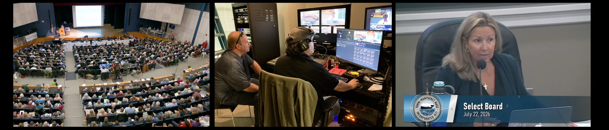

Nantucket Civic TV



Nantucket Civic TV empowers Nantucket voters by live broadcasting all of the Town's & County's regulatory meetings to TV Channel 8 and to the Town of Nantucket's YouTube Channel.
Note: video descriptions are written by Artificial Intelligence (AI) and AI can make mistakes.
The commission takes up the agenda its March 11 meeting could not, and the new airport manager, Warren Smith, is introduced. A consultant presents the airport master plan update, the FAA’s official planning document, which sets short, medium and long term development and resolves into the airport layout plan. On Article 72 of the Annual Town Meeting warrant, a general bylaw amendment on the registration of car rental agencies, three courses are weighed: take no position, support the Select Board’s article, or support the Finance Committee’s motion to refer it for further study. With only three members present, the question is carried to the next meeting so the full commission can weigh in. Impound lot operations draw a long discussion. The tenant holds a minimum number of spaces for the airport and runs about 20 as an impound lot, and four vehicles towed from the airport are described, three of them scrapped or sold to recover fees after sitting about six months. The FY2024 financial statement and passenger facility charge audits are complete and filed and need no action. A National Grid license agreement is approved. The FY24 disadvantaged business enterprise goal rose from 3.58 to 3.97 percent.
Tuesday, March 25, 2025 at 5:00 P.M.
A special meeting with a single item, running just over a minute. The chair calls it to order, the agenda is adopted by unanimous consent, and the commission votes by roll call to enter executive session under G.L. c.30A, section 21(a), clause 6, to consider the potential acquisition of property for airport manager and staff residences, not to return to open session.
Monday, March 17, 2025 at 8:30 A.M.
The meeting is called to order and adjourned inside two minutes. A quorum has not formed, and the chair tells the consultants, staff and members of the public present that it will be rescheduled. The agenda it was to have taken up carries over to March 25 and is renumbered there: a master plan consultant presentation, two PFAS status reports, the FY2024 financial statement and passenger facility charge audits, a position statement on Annual Town Meeting Article 72, impound lot operations, and a National Grid license agreement. The recording ends with the new airport manager being welcomed.
Tuesday, March 11, 2025 at 5:00 P.M.
The employment agreement for the incoming airport manager is executed, and a final employee housing selection policy is approved, setting out how the one-bedroom apartment in the Nobadeer Farm Road dormitory is to be filled and directing union positions through collective bargaining. The commission votes to repay the town’s general fund in full. The fuel revolver cap is raised to $8.5 million from $6 million, an adjustment made most years once two quarters of fuel sales can be set against a budget written 18 months earlier; the previous year’s cap was $8.8 million. A task order with McFarland-Johnson for South and Commercial ramp lighting design is approved at $253,700, covering about 17 light poles and extra photometric work for Dark Skies compliance. The FY2026 budget went to the Finance Committee on February 2 and goes next to the Select Board. On the terminal optimization project, the PFAS plume reopens the question of the geothermal system: having looked at conventional air handlers and at a closed loop, staff and consultants now weigh keeping the open-loop wells as a way of treating groundwater rather than pumping and discharging it separately.
Tuesday, February 11, 2025 at 5:00 P.M.
A short meeting on two linked real estate items. The first is a lease for a residence running through June 15 that the commission could assign to incoming staff, including the new airport manager. The second is a uniqueness determination, the notice a municipality publishes in the Central Register when it intends to enter a real estate contract, which gives anyone proposing an alternative property a chance to respond. Because that notice has to run before the lease can be executed, the commission is asked to approve the lease, authorize the chair to sign it, and allow 30 days to complete it. The meeting then enters executive session on the airport manager’s contract.
Tuesday, January 28, 2025 at 4:30 P.M.
A public hearing on proposed revisions to the airport’s rates and charges opens the meeting. The chair reads a statement describing an across-the-board percentage increase to the major revenue categories, set against aging infrastructure, declining purchasing power in federal grant funding and the rising cost of attracting qualified staff. No member of the public speaks, and the hearing is closed. The Capital Program Committee’s final recommendations follow. Recommended are a new ARFF truck, supplemental PFAS authorization, gate hard stands, ground support equipment storage, a septic upgrade at the ARFF station, paint and bead markings, a combined equipment project covering a ground power unit, a tug and a bus, and the noise barrier, which the committee revoted and added that day. Two requests were not recommended: repairs to the ARFF station and an employee housing townhouse. On the South Apron, new cameras are commissioned, noise monitor integration continues, solar panels have been dropped from the noise barrier design on cost grounds, and the geotechnical investigation for the wall footings is complete, with bids expected in March. The commission then discusses the two finalists interviewed that day for airport manager before entering executive session on contract terms.
Tuesday, January 14, 2025 at 5:00 P.M.
Note: video descriptions are written by Artificial Intelligence (AI) and AI can make mistakes.
Four MassDOT grant awards are ratified in a single vote: $229,503.20 to purchase an aircraft tug, $14,230 for Taxiway G Phase III environmental monitoring, $7,886.39 for apron drainage, and $3,870 for design and permitting on the Runway 6-24 centerline rehabilitation. The Nantucket Flying Association’s ramp and landing fees are waived for its camp the following week, the manager arguing that the week is an educational program in which cadets learn aviation history and fly with student pilots; the commission raises no objection and takes no vote. On the South Apron, Premier Fence submitted the lowest bid for the noise wall barrier and has been given notice of award, with the contract expected for signature in July, and construction of the airport fence at Nobadeer Beach began the previous day. Targeted salary adjustments occupy the longest finance discussion. Personnel action forms for executive staff, prepared by the former manager on comparisons with other town positions, were rejected by the town, which now asks for commission approval before they are resubmitted.
Tuesday, June 17, 2025 at 5:00 P.M.
A special meeting of about a minute and a half. The single open session item is a vote, taken by roll call, to enter executive session under G.L. c.30A, section 21(a), clause 3: to discuss strategy on potential litigation regarding grant funding, and on a potential claim involving S.W. Cole and CHA, contractors to the airport. The commission does not return to open session.
Tuesday, May 20, 2025 at 1:00 P.M.
The Annual Town Meeting review leads. Every airport article was approved unanimously, and questions from the floor about the size of the projects were answered by pointing out that most are 90 to 95 percent federally funded. Article 72, the car rental bylaw amendment, was not called after the Finance Committee recommended referring it for further study, which leaves the airport unable to enter contracts with a car-sharing company until the bylaw is settled. The third quarter FY25 report records $8,184,640 in revenue, a decrease of $2,326,120 or about 22 percent against the same quarter a year earlier, driven by lower fuel sales; the fuel revolver carried a $6 million limit for the year against a retroactive $8.8 million the year before, and a reset is needed in the fourth quarter. On the FY27 capital request the dormitory draws the longest exchange. Construction is estimated at $4.8 million with a further $1.2 million for the owner’s project manager, about 20 percent of the project, which one commissioner calls far above the 10 percent expected. High mast lighting is added to pending matters.
Tuesday, May 13, 2025 at 5:00 P.M.
The commission approves a purchase and sale agreement for 16 Kittiwake Lane, shown as lot 376 on land court plan 16514-12. The house is bought as airport property and will serve as the airport manager’s residence without being dedicated to that use. The manager sets out the route taken to get there: two years of requests to build two dwelling units at the Nobadeer Farm property met resistance and never won Capital Program Committee or Finance Committee support, and buying an existing home was suggested more than once during that process, construction under municipal prevailing wage and owner’s project manager requirements having proved costly. On Article 72, the car rental bylaw amendment held over from March, the commission takes no position. A non-exclusive ramp license for Gull Air, a Part 135 operator seeking to begin service at the airport, is approved with two members recused and the vice chair presiding. FY27 potential capital projects and their schedule are reviewed. A commissioner presses on drainage at the airport fence, where standing water contributed to a vehicle losing control and striking it. No executive session is held.
Tuesday, April 8, 2025 at 5:00 P.M.
Note: video descriptions are written by Artificial Intelligence (AI) and AI can make mistakes.
Jet fuel storage takes the longest part of the meeting. The airport holds 40,000 gallons of avgas and 120,000 gallons of jet fuel, but the two turn over at very different rates: jet fuel 18.4 times a year on a 5 percent reserve, avgas 2.9 times on a 34 percent reserve. With no month showing more than 10,000 gallons of avgas sold, the commission weighs converting a second 20,000-gallon avgas tank to Jet A, and whether avgas could instead be held in a fueler truck, against the cost of the earlier conversion. The geothermal wells are the other substantial item. Installed around 2008 as an open-loop system that draws groundwater, exchanges heat in the basement and returns the water to the ground, they are now moving PFAS from contaminated supply wells into cleaner ground. The alternatives on the table are removing the system altogether or converting it to a closed loop, which is less efficient and needs many more wells. The preliminary FY27 operating budget remains in development with no year-over-year increase planned and a budget meeting set for October 27. The master plan’s final public open house is set for September 11.
Tuesday, September 9, 2025 at 5:00 P.M.
The commission elects officers and reassigns subcommittees. The chair is returned and a vice chair is nominated and accepts, and the standing subcommittees for long range plans and policy, personnel, environmental and energy, service and public relations, and finance are put back in place, though the commission notes it has been handling almost everything at full commission level. The fourth quarter report closes FY25 with total revenue of about $30.2 million, an increase of roughly $2.8 million on the previous year and 119 percent of the budgeted amount. Fuel sales drove the growth, the revolver carrying an $8.5 million spending limit; fee income rose $96,841, rental income $194,910 and vehicle revenue about $124,000, while other revenue fell about $32,000 because the federal law enforcement reimbursement program remains unfunded. Operating expenses excluding debt service were about $20.7 million, up $3 million. A tenant alteration application from Airport Gas is taken up: removal of a 500-gallon heating oil tank, replacement of two underground storage tanks, two emergency shutdown switches required by the fire department, and upgraded flex piping and spill containment. A commissioner questions whether the tank volumes shown match the summary filed with the Select Board.
Tuesday, August 12, 2025 at 5:00 P.M.
A consultant presents the closing stage of the airport master plan. The airport layout plan is the last step, drawing every proposed project and the non-aeronautical areas on an FAA-approved sheet; the FAA reviews and comments on the full sheet set, though only the layout plan itself is signed. A final public open house was tentatively set for August 5, after which the plan would go for FAA approval and the final report would follow. Commissioners ask for a legible draft of the layout plan before that open house rather than reviewing it from a presentation slide, and the consultant agrees to send one once internal quality control is finished. On the FY27 capital request, quotes have firmed up and are due to the town by July 18, with a meeting with the town manager required before they reach the Capital Program Committee. Most line items are unchanged from the previous presentation. The exception is the IT and equipment upgrade, raised to $100,000 because two servers dating from 2012 have to be replaced at about $25,000 each. A quote for an additional skid steer is still outstanding.
Tuesday, July 8, 2025 at 5:00 P.M.
Note: video descriptions are written by Artificial Intelligence (AI) and AI can make mistakes.
The non-union personnel agreement is reviewed, with changes mostly to language and to health insurance provisions. Annual salary increases follow what the unions receive, currently 4 percent, and the headcount covered has risen by two. On jet fuel, World Fuel is replacing the leased 5,000-gallon fueler with a 7,000-gallon truck within a week or two, delivery expected around March, and three further 7,000-gallon trucks have been requested in time for the season. Correspondence on future barge operations reports a vote in prospect on using the Steamship Authority slip, with the intent of moving freight by tug and barge by the end of the first quarter; the commission asks that the options be narrowed by a committee before more time is spent on them. The S.W. Cole invoice, held over from October, remains with legal counsel, who have asked for the original request for proposals, the bid pricing, the designs, minutes and correspondence, now gathered on a shared site; the matter goes to January. PFAS monitoring wells are to be installed from January 12 to 15 in the Runway 15 approach and Sun Island areas.
Tuesday, December 9, 2025 at 5:00 P.M.
An increase to the fuel revolver is presented in detail and sought from the commission: a rise of $2.5 million from the $6 million cap to $8.5 million. The revolving fund accounts separately for fuel revenue, which moves with demand, and it requires the airport to predict fuel cost and demand about 15 months ahead. Budgeted fuel revenue was $2 million in FY24, $2.2 million in FY25 and $2.45 million in FY26, around 80 percent of budgeted revenue, and receipts above budget have paid down debt and funded more than $10 million of PFAS mitigation. The rates and charges review is announced rather than decided: staff are preparing a redline list, a draft comes to the December meeting, and a public hearing is proposed for January 13, 2026. The first quarter report turns on the gate hard stands. Town Meeting appropriated $500,000 for them and that appropriation cannot be exceeded, so a supplemental $900,000 has been requested from the Capital Program Committee, which would need its own Town Meeting approval; the work would then fall in FY27 rather than FY28.
Tuesday, November 18, 2025 at 5:00 P.M.
The crew quarters project reaches its certificate of occupancy, issued the previous week. Two matters under it are held over: discussion of the S.W. Cole pending contract is postponed by unanimous consent after legal counsel asked for more time with newly found documents, and a compromise proposed by Pearl Construction on change order No. 6 has been circulated to commissioners. On jet fuel, MassDOT has quoted roughly $1.7 million for the 10,000-gallon fuel farm it is building at Taunton, close to the consultant’s own figure, and a further quote is still being sought; the commission notes that scaling that price to Nantucket is not straightforward. The FY27 capital request is unchanged and goes to the town’s Capital Program Committee on November 13. A meeting with the FAA and MassDOT on the five-year capital improvement program found the first two years settled and the last three fluid, but MassDOT gave warning of a 10 percent reduction imposed across all state departments, with no assurances on FY27 state aid. The phase 2 PFAS consent order was filed with MassDEP before its deadline, and a meeting on it is set for October 30.
Tuesday, October 14, 2025 at 5:00 P.M.
Note: video descriptions are written by Artificial Intelligence (AI) and AI can make mistakes.
A special meeting, called mostly for housing. Two items come first. A ten-year TSA lease at $55 a square foot is held over because it contains no escalation, the same objection the commission has been raising all winter. The concrete hard stand contract is awarded at $348,460. Then housing, and it runs long. The airport has seven employees who need somewhere to live now, and seven dorm rooms that sit empty seven months of the year. The average island home sells for $2.97 million. Commissioners work through what other resort airports have done, Sun Valley, Eagle County, Telluride, Jackson Hole, and find the same pattern in each: the airport that can house its own people can staff itself, and the one that cannot, cannot. What passes is a number rather than a plan. Three million dollars is added to the fiscal 2027 capital request, drawn from the fuel revolver, and $50,000 is moved out of professional services to pay for design now, so the appropriation has something to build when it arrives. The design is what the commission wants to see first.
Tuesday, March 24, 2026 at 5:00 P.M.
The meeting opens with a moment of silence for a former member of the commission. Then a sublease at the airport gas station is held over, and the reason is stated plainly: the tenant is subletting space at about forty percent of what it pays the airport, and the agreement carries no escalation until its tenth year. Commissioners want that looked at before anyone signs. The terminal design comes back as a choice between two schemes. Option A adds a seasonal terrace on the roof; Option B is a permanent addition that would replace the tent altogether. The commission picks B, the reasoning being that a canvas structure put up and taken down every year was never a solution and should stop being treated as one. The fuel subcommittee reports on expanding the fuel farm. The tanks and parts themselves run about $700,000, but with sitework, permitting and everything around them the budget is put at two to three million. The subcommittee also wants more fuel moving: seventeen truckloads a week off the ferry instead of fourteen, booked early, so the tanks are full before July.
Tuesday, March 10, 2026 at 5:00 P.M.
One subject, most of the night: how big the terminal should be. The architects put numbers on it. The hold room and the seasonal tent together take 313 people; the design on the table would take 361; five aircraft boarding at once at full load would put 578 in the building. Commissioners circle that gap for two hours. Some want the design to solve it now, on the grounds that nobody gets a second chance at a terminal. Others want to know what 578 would cost before anyone commits, and one sums up his objection as ready, fire, aim rather than ready, aim, fire. What actually gets voted is narrower than the argument: a $1.5 million letter of authorization so design work can continue while the scope is still open. Even that draws a careful accounting of what the commission is and is not agreeing to. Staff expects the full design fee to land near $3 million and offers Martha’s Vineyard, which paid $4.6 million, as the comparison. The motion carries. How many people the building should hold is left for another meeting.
Tuesday, February 3, 2026 at 5:00 P.M.
The rates hearing is the meeting. A five percent increase across the board is adopted after Delta’s representative asks for three and a half, pointing out that what the carriers pay here has roughly doubled in five years, from about $900,000 to $1.8 million. Nobody disputes the figure. A second argument runs longer: common-use terminal charges are billed on a three-year average, which means an airline that shrinks keeps paying for flights it no longer operates while one that grows pays less than its share. Several commissioners want actual monthly usage instead, and staff is asked to bring that back. Smaller items carry the same logic. A boarding ramp for general aviation comes at the fire department’s suggestion, after crews were called out to help passengers off small aircraft. A bus for the fixed-base operator draws a rule of thumb from one commissioner: you buy what appreciates and you lease what depreciates. Terminal optimization is now put at roughly $27.5 million, with about $15 million of it sought from the FAA. And starting February 1, a traveler who arrives without acceptable identification pays the TSA $45 to be verified.
Tuesday, January 13, 2026 at 5:00 P.M.
Note: video descriptions are written by Artificial Intelligence (AI) and AI can make mistakes.
The grant did not come, so the terminal question gets asked again from the beginning. A scoping meeting with the FAA and MassDOT produced no discretionary money, and the consultant offers his reading of why: the airport received about $34 million for the South Apron five years ago and is about to ask for a runway costing well over $100 million, and the FAA would rather fund pavement than buildings. That leaves three choices, laid out on a single page. Keep the tent, which has cost roughly $1.6 million across its life and needs structural members replaced in 2028. Finish the design and stop there, at about $3.3 million, which leaves a project ready to bid whenever money appears. Or build it, at $33.4 million, which on a 30-year bond at four and a half percent works out to about $2 million a year. The commission takes the middle course without needing a vote, on the shared view that a canvas tent put up every spring was never a terminal. Also adopted: minutes to be circulated within ten days, after a commissioner asked for seven.
Tuesday, June 9, 2026 at 5:00 P.M.
The PFAS cleanup finally has a shape. The licensed site professional walks the commission through what will be done and where: natural attenuation for the plumes inside the area the state has already written off as a source of drinking water, capping where pavement already covers the contamination, and active work in the two areas that sit inside the wellhead protection zone. Rather than digging the soil out and washing it, the recommendation now is to till a carbon or clay additive into the top foot and a half, at about a third the cost, and to pump and treat the groundwater there. A consent order gives the airport until June 2028 to have the remedy built and running. Two households are still on bottled water; one more connection should end that. Then the idling rule is rewritten. The 15-minute limit stays, the threat to withhold catering is dropped, and fines of $200 and $300 go in, alongside a requirement to use a ground power unit whenever one is available, one commissioner arguing the better fix is to stop charging for them. At the end, chairman Arthur Gasbarro says he did not put his name in for another term.
Tuesday, May 12, 2026 at 5:00 P.M.
Two long arguments, and a policy that comes out of them. The first is a $788,448 environmental permitting order covering fifteen capital projects, put in front of the commission two weeks before a grant deadline it cannot move, by a consultant whose own contract with the airport expires in May. One commissioner says plainly that this looks like a back door to an extension; the consultant answers that the task order would survive the contract but could not be amended. It passes. The second is a sublease inside a sublease, FedEx proposing to put a local shipping and printing business into counter space it no longer uses. The master lease permits a freight facility, and a print shop is not one, so the item is held while counsel works on it. Out of that comes the night’s durable decision: sublease guidelines setting a $1,000 application fee, legal costs charged to the tenant, four percent of gross sales, and three quarters of any rent a tenant collects above what it pays the airport. Fuel pricing moves to a fixed margin, reset with each delivery, and the fuel revolver rises to $11 million.
Tuesday, April 14, 2026 at 5:00 P.M.
Note: video descriptions are written by Artificial Intelligence (AI) and AI can make mistakes.
A resident of Squam Road opens the meeting by telling the commission this was the worst summer for aircraft noise in the 17 years he has lived there: flights from half past five in the morning until as late as ten at night, and days when planes pass over his house every two or three minutes for hours at a stretch. He asks only whether relief is possible. The long argument that follows is about a different kind of accounting. A $6 million treatment system for the geothermal wells has been folded into the terminal article, and commissioners say plainly that this is a budget game, one that inflates the terminal and hides what the PFAS cleanup actually costs. One of them reports that the company that built the town’s own system quoted about $225,000; the project manager allows that a container outside, or a unit fitted into the existing basement, could come in at a fraction of $6 million. The direction is to separate the two and bring back real numbers. The preliminary fiscal 2028 budget is up less than one percent.
Tuesday, September 8, 2026 at 5:00 P.M.
The fuel subcommittee cannot meet. Acting airport manager Preston Harimon opens at the appointed hour, asks everyone present to state their name for the record — one commissioner, three staff, the airport’s consulting engineer and a reporter — and then says what the roll call has already made plain: there is no quorum, so the meeting has to be rescheduled. It is adjourned inside of two minutes.
Tuesday, September 01, 2026 at 8:30 A.M.
Housekeeping first: a vice chair is elected at last, and the appointment of Preston Harimon as acting airport manager is ratified, his salary set at $200,000 retroactive to when he took the job. Then the capital plan, which a commissioner works through line by line against last month’s version, asking what changed and why. PFAS fell from $22 million to $10 million, because the larger figure had been a 30-year operating cost mistaken for a construction number. The parking lot rose from $1 million to $2.2 million once 62 light poles were counted. The terminal gained $6 million by absorbing the geothermal treatment system, which means the project now starts with a four rather than a three. And employee housing was cut from $6.1 million to $3.4 million after a consultant came back recommending a duplex. That last one draws the sharpest response: the commission has already decided it will not build housing, and directs that no more be spent studying it. The year closes with fuel revenue up $4.9 million and operating spending up 2.1 percent.
Tuesday, August 18, 2026 at 5:00 P.M.
A new chair, a new commissioner and, for the first time, penalties. The public hearing on the idling rules draws no comment from anyone, and the amendment passes: shut down within 15 minutes of parking, use a ground power unit when one is available, park with the engines pointed toward the runway, and, for repeat offenders, $200 and then $300, assessed against the operator rather than the crew. The architects present two interior schemes, a circulation axis and a single open volume, and the commission takes the second on their recommendation. Fuel is the emergency. The farm started the previous morning with 3,000 gallons in it, and general aviation is capped at 350 gallons per aircraft until the next delivery lands. And the terminal is over capacity: 2,000 passengers through the checkpoint in a day, roughly 600 of them between 10:30 and noon, against a hold room built for 313. A commissioner tells the story of a friend who could not get out of that hold room during a ground stop, and finally followed a screaming toddler through the door.
Tuesday, July 14, 2026 at 5:00 P.M.
A subcommittee meeting held in the middle of a supply problem. The fuel terminal in East Boston is down with a contamination issue, so trucks are running to Albany and back; one of the temporary storage trucks is out of service, cutting capacity by 7,000 gallons; and the inventory line came within about a hundred gallons of the level at which the airport starts pulling alarms. Eight ferry reservations went unused in June, one of them lost to a broken trailer axle, and a reservation that goes unused cannot be made up. No hazardous materials boat ran on the Fourth of July at all. The other subject is what one commissioner calls the freeloaders. Fifty letters went to operators who almost never buy fuel here, and the result is reported plainly as disappointing: one recipient came back 21 times and bought nothing. A few moved, one of them from 16 percent of visits to 66. The conclusion is that persuasion has now been tried, and that the answer belongs in the rates and charges this winter, where fees can be waived for those who do fuel up.
Friday, July 10, 2026 at 9:00 A.M.
Note: video descriptions are written by Artificial Intelligence (AI) and AI can make mistakes.
Most of the meeting goes to the fuel revolving fund, and the commission ends up arguing itself out of it. The immediate question is raising the FY2027 spending limit from $8.5 million to $13 million so fuel can be bought through the rest of the year, and that passes; the larger question is whether the fund should exist. It was set up when the airport was in financial difficulty, members are told, and the airport now has revenues enough without it. Worse, the way it was written does not return interest to the airport, which the FAA could read as revenue diversion. Once replenished it cannot revolve again, and permission has to be sought at town meeting every year. Nobody offers a reason to keep it. Two FAA grants are ratified, $4,287,587 for the commuter apron and $475,671 for the MEPA and NEPA work, and the FY28 budget adds $100,000 of contingency against rising costs. The manager reports PFAS phase three closed out and phase four coming, a water treatment system being sized for the geothermal plant, and a fire suppression test that found a shorted notification card and an untested backflow device.
Tuesday, October 13, 2026 at 5:00 PM.
To see the vote results, please click this button:
To see the vote results, please click this button:
To see the vote results, please click this button:
To see the vote results, please click this button:
To see the vote results, please click this button:
Note: video descriptions are written by Artificial Intelligence (AI) and AI can make mistakes.
Next Level Watersports returns for its camp variances. The operation teaches kite boarding and wake boarding, runs four days a week through July and August, and is treated as a primitive or outpost camp under the state regulation. The change this year is that children are picked up and dropped off at the town pier slip. The hearing on large events at private homes draws the culture and tourism department, which took over special events from the police and finds private property the tricky part. The board still cannot settle how to measure a house. Bedrooms would be simple, square footage is harder to pin down, and no single number gives a building capacity, so it goes over another month. The environmental contamination administrator reports that town counsel cleared the department on February 20 to upload PFAS results into the property files, and apologizes for not crediting the public records request and the residents who spent more than a year seeking that data. Private well rules go before the full membership of the real estate brokers in May. The state sampled the geothermal well at the fairgrounds and three addresses west of town. Nitrogen loading credits pass at 57 Madaket Road and 38.5 Lovers Lane.
Thursday, March 20, 2025 at 4:00 P.M.
Three hours. Town counsel brings a draft: a new section in the short-term rental regulations reaching gatherings and activities at a rented house that are not sleeping and habitation, offered as a working document under the bylaw that lets this board, with the select board, regulate rentals against noise and parking nuisance. PFAS data sharing changes outright. Staff met the state, learned that the island-wide investigation carries a release tracking number under the Massachusetts contingency plan, and found a hundred sampling results already posted unredacted. After talking to town counsel, the department will publish sampling results and property files. A rewrite of Chapter 223 cuts every definition Title 5 already carries and expands the one for bedroom, because a sleeping loft called storage still sends water to the leach field. Watershed variances pass at 7 Arkansas Avenue and 16 Ridge Lane, approved on the septic design, with the building application still to be checked against a three bedroom count. Nantucket Community Sailing asks for relief from the state camp regulation, 6 Tautemo Way for a nitrogen loading credit, and 40R Essex Road brings a lift condemnation.
Thursday, February 20, 2025 at 4:00 P.M.
An hour and more on PFAS, told from the beginning: the airport’s 2019 notice of responsibility over firefighting foam, the working group formed in January 2020, and since then $15 million appropriated across departments, twenty-three contracts, and an $8.3 million zero-interest state loan for the water main west of the airport. Wells 15 and 16 sit in the upper aquifer. Number 15 is off, the wells in that area are now sampled monthly, and one result came back at 55.5 parts per trillion. Town water tests non-detect across the wider list of compounds, and samples for the federal unregulated contaminant round are going out. The engineers will not promise that a source is ever identified — the goal is reducing exposure — and one member says a contaminated well raises giant red flags against everything being planned. Then a public hearing opens, and is left open, on large events at private homes: the board strikes the option that would reach a family wedding in its own backyard and aims instead at houses rented commercially for them. Septic loans follow at 28 Tennessee and 48 Hummock Pond Road, the second replacing a May loan after the old tank proved unusable.
Thursday, January 16, 2025 at 4:00 P.M.
Note: video descriptions are written by Artificial Intelligence (AI) and AI can make mistakes.
The board opens the question of a moratorium on septic variances in nitrogen sensitive areas. The argument for it is that nobody can say what the island gains or loses by granting an extra bedroom for every advanced system, that the decisions are being made house by house, and that there is only one drinking water supply. Barnstable County is expected in July with data, and the only hesitation is whether six months is longer than a reasonable limit. The credits keep coming even so, at 13 Woodland Drive and 38 Lovers Lane, one of them a variance for as many as twelve bedrooms shown as a single building. The engineer explains that a gym and other rooms count as bedrooms whatever the occupancy, and a member answers that twelve sounds like a dormitory. Nantucket By Water wins relief from the rule requiring a base of operation: commercially prepackaged frozen desserts, triple wrapped, kept in a freezer on the dock and discarded at the end of the day, with the food protection manager certification still required. The state sampled eleven properties near the imminent hazard detection, reaching the island on the slow ferry with a health inspector driving.
Thursday, June 12, 2025 at 4:00 P.M.
Most of three hours goes to bedrooms and nitrogen. One proposal would move a house from 6 Ames Avenue onto 339 Madaket Road, putting five bedrooms there and dropping 337 Madaket from five to four, which needs relief from the Madaket limit of one bedroom per ten thousand square feet. Credits are asked for three lots at 38 Lovers Lane and six at 13 Woodland Drive. The board’s patience is visibly thinning. Members say an advanced septic system does not automatically buy extra bedrooms, that nitrogen is not the only pollutant in waste and that a system can be pushed only so far, and they want firmer guidelines rather than deciding one application at a time. Sewering the island, one answers, is the purely environmental solution and is not going to happen. On large events, the chair reports a joint meeting with the select board set for June 11, the point of it being one island-wide approach rather than one per department. The PFAS update carries a detection above the imminent hazard threshold near Hummock Pond and Burnt Swamp, found by the state on April 9, and another above the state standard on Nobska.
Thursday, May 15, 2025 at 4:00 P.M.
The numbers come in the middle. The state’s source discovery investigation has now evaluated 86 properties, found PFAS at 63 percent of them, 23 above the Massachusetts maximum contaminant level, and nine on Tom’s Way and the streets beside it above the imminent hazard threshold of 90 parts per trillion. The highest reading is 787. Earlier, the rewrite of Chapter 223 brings an architect to the microphone on the definition of a bedroom: cabanas that lose their walls in order to stay cabanas, a windowless exercise room counted as a bedroom, wine cellars trimmed to 69 square feet, and a seven room trigger where Title 5 says eight. Septic setback variances follow at 35 Warren’s Landing, 3 Millbrook Road and 8 Ames Avenue. At 72 Arkansas Avenue an owner asks not to upgrade after a 2010 inspection failed for hydraulic failure and for groundwater separation. Owners out there signed consent orders and put down deposits years ago against the day sewer reached Madaket, and it has not. A member who lives on the street recuses himself. The director closes on measles, with 640 cases nationwide and none here against school vaccination of 96 to 97 percent, and on federal cuts and fall vaccine supply.
Thursday, April 17, 2025 at 4:00 P.M.
Note: video descriptions are written by Artificial Intelligence (AI) and AI can make mistakes.
The board adopts a PFAS vision and mission statement at the town’s request: a community informed, engaged and empowered through science-based environmental leadership, with clean water and reduced exposure for this generation and the next. The long argument is 113 Hummock Pond Road, back from August. The water beneath it is perched on a clay layer, with the aquifer some twenty feet further down. The design already mounds the front yard eighteen inches, and two feet more would bring retaining walls between the house and the road for no environmental gain. The existing system has not failed in any practical sense, only on the measurement to that perched water, and the plan now specifies a test hole dug in front of staff before anything is installed. At 12 Nonantum Avenue the applicant offers to rebuild a catch basin across the street as a solid one with its own leaching pit to clear the hundred foot well setback, subject to written approval from the drainage side of the sewer department. The administrator explains fingerprinting: every source leaves its own mixture of compounds, which is how properties near the airport have been ruled out of its investigation.
Thursday, September 18, 2025 at 4:00 P.M.
A special meeting on the moratorium, and most of it is about how old the rules are. The Nantucket Harbor regulations date from 2015 and Madaket from 2020, Hummock Pond has not been examined since 2010, and the wellhead district not since 1995, while population, technology and what is known about harmful substances have all moved on. An engineer offers an interim course, which is to keep entertaining bedroom credits but only against a ten milligram per liter standard, and reports that Falmouth is proposing exactly that for all new construction with Bourne taking it up the same night. The nitrogen sensitive areas the state added to Title 5 were nearly statewide before being narrowed to the Cape, each town left to write its own plan. The rest is calendar work. The moratorium declared in June expires on September 18, so it is extended to the November 20 meeting, and that fixes the rest: the draft back from town counsel by October 22, then advertised three consecutive weeks from October 30.
Wednesday, September 10, 2025 at 4:00 P.M.
A consultant reports the first round of beach water sampling for PFAS: sixteen coastal beaches, three inland ponds and two points a mile offshore for comparison, with foam collected where it appears because the compounds concentrate in it. A second round follows next week and a summary report comes in October. Short-term rental registrations have gone from roughly 150 last autumn to 1,347, and the department is starting to collect the quarterly reports the bylaw allows, among them the listing, the nights occupied and the operator’s contact, with an audit to follow. Wicked Island Bakery asks to be let off hair restraints for its front of house staff, arguing that the food sits two feet away behind the tallest sneeze guard on the island, that the staff wear their hair back, and that a server carrying trays past their head takes the greater risk. At 113 Hummock Pond Road the board returns to a variance it half granted in 2020. The design uses nitrogen reducing technology and drip dispersal, but the soil log shows a bluish gray that reads as constantly saturated, and the health official says he is surprised no groundwater was found.
Thursday, August 21, 2025 at 4:00 P.M.
Five minutes of an August meeting that never begins. One member is in the room and another is attending remotely, which does not count toward a quorum, so the chair declines to call the meeting to order and the board agrees to wait five minutes before making another plan. A second member arrives just as the recording ends. The meeting itself was recorded separately.
Thursday, August 14, 2025 at 4:00 P.M.
One subject for ninety minutes: whether to keep granting nitrogen loading credits in sensitive areas, and what the alternative would look like. The island will never be fully sewered, not practically and not affordably, so the question becomes whether advanced treatment should simply be the baseline everywhere, paid for the way Barnstable County does it, with loans or grants covering the gap between a conventional system and an I/A one. A member keeps returning to the same ground: one aquifer, one water supply, and waste that carries pathogens and PFAS as well as nitrogen. Staff set out what is already regulated, the wellhead protection district, Hummock Pond, Madaket and Sesachacha among them, with a three hundred foot buffer to ponds for phosphorus, and note that the harbor districts cannot seek variances at all, which is why the requests arrive from everywhere else. The board asks for a legal opinion on how Title 5 and its own regulations actually fit together, in plain words rather than gobbledegook, and agrees it will be more useful once the data arrives.
Thursday, August 14, 2025 at 4:00 P.M.
A long tutorial from the state alternative septic test center sets up everything the board has been arguing about. Title 5 turned from a disposal code into a treatment code in 1995, when loading rates came down to deal with pathogens and nitrogen was barely addressed. Ninety percent of a Cape board of health’s work, the presenter says, is Title 5. A board may require better than the usual nitrogen standard, or fewer bedrooms to the acre, if it writes the regulation and gives its reasons, and rising nitrogen in a public supply well would be reason enough. It can never go below Title 5, and the island has yet to finish a watershed management plan. Enforcement when a system misses its number runs through the operator: whether the air is on, whether the system runs at all, whether nitrogen that looks high is really ammonia that never nitrified. The PFAS update brings two more imminent hazard detections beside the one found in April, one at 171 parts per trillion and one at 87, with a reading of two parts per trillion a hundred feet away. Officers are elected, and septic items pass at 259 Madaket Road and 24 Arkansas Avenue.
Thursday, July 17, 2025 at 4:00 P.M.
Note: video descriptions are written by Artificial Intelligence (AI) and AI can make mistakes.
A discussion of artificial athletic fields fills most of the meeting, framed by the chair as a listening session rather than a decision. Supporters cite rising maintenance costs, overused fields and growing athletic programs, and describe the proposed footprint as negligible. Opponents raise PFAS, microplastics and the site position inside the wellhead protection district above the island sole source aquifer, and point to turf bans in other Massachusetts communities. The board votes to schedule a special meeting in January, then retakes the vote to satisfy Robert’s Rules. Earlier, the finance director explains the $250 short-term rental registration fee, which pays for an $84,000 software platform and a compliance position out of a revolving fund approaching $250,000. Neighboring towns charge between $50 and $500. The Hummock Pond watershed and wellhead protection hearings are continued to the January meeting. The board releases a betterment lien at 58 Arkansas Avenue, approves a septic loan for a sewer connection at 39 Bartlett Road, and joins the Inter-Island Public Health Excellence Collaborative under an agreement carrying a 90-day exit clause. The PFAS update adds two detections above the state standard of 20 parts per trillion and a 106 reading near Fulling Mill, with more than 500 wells now tested.
Thursday, December 18, 2025 at 4:00 P.M.
Two public hearings open and are left open another month, on the Hummock Pond watershed and wellhead protection amendments. A former board member warns that the wellhead zone takes in a great deal of property still on septic that will likely never see sewer, the town’s own land and the housing authority’s among it, and asks that people be given time enough to come and speak. The phrase extraordinary circumstances, the test a variance would have to meet, troubles several speakers, and the Land and Water Council endorses the effort while asking to read the new language closely before giving an opinion. At 12 Nonantum Avenue the well setback turns out not to need a variance at all, the lot having been created before 1990, and the septic variance passes on its own. A monitoring revision follows at 6 and 6A Washington Avenue. The sharpest comments of the night come from the public: one resident asks why a single property should get septic capacity nobody else in the neighborhood has, and a town housing employee, speaking for herself, observes that it is far easier here to permit a summer estate than anything denser, then asks whether this board can tie an approval to year round occupancy.
Thursday, November 20, 2025 at 4:00 P.M.
A special meeting for one subject: camp variances for the water sports programs. Four come through in turn, two surf schools, a watersports operator and Nantucket Community Sailing, and the board settles into a pattern, granting three year variances rather than annual ones, with periodic updates from staff and a standing check-in on the agenda once camp inspections are done. The operators report a quiet season. One, in its twenty-sixth year, had small waves, no medications to store and no incidents, and says the department has made the paperwork easier every year. The longest argument is Community Sailing’s case against the lifeguard requirement. Its instructors hold US Sailing certifications running from fifty-five to ninety hours, with first aid, CPR, safe sport and concussion training on top, and the national body has written in support while the school’s insurer recommends the same courses. Those trainings cover person in the water and capsized boat recovery, towing, and powerboat handling around swimmers, which is the rescue the school actually performs. Nobody there, instructor or student, is ever on the water without a flotation device.
Monday, October 27, 2025 at 4:00 P.M.
An appeal from 49 Polpis Road takes the longest. The owner has lived there since 1978, was permitted to reopen a commercial kitchen on condition that she connect within two years, broke her hip and let the date pass, and now holds an order to join the sewer. She turned eighty the Monday before the meeting, is on a tight budget, and the electrical service for several neighboring houses runs buried the length of a drive seven or eight hundred feet long, so the cost would not stop at her own pipe. She offers instead to close the kitchen and return the space to residential use. The board is not comfortable with that and gives her a month or two to come back with real figures, alternative routes, and what the loan program would add to her monthly payment. The consultants report the second round of beach and foam sampling. Draft amendments to the Hummock Pond and wellhead regulations are circulated for comment, with every mention of an enhanced nitrogen removing system now defined as one reaching 19 milligrams per liter, and the public hearing set for November 20. The board also weighs endorsing two state bills on private well water quality.
Thursday, October 16, 2025 at 4:00 P.M.
Note: video descriptions are written by Artificial Intelligence (AI) and AI can make mistakes.
The turf discussion collapses on procedure. The chair had emailed the board two draft motions that afternoon so members could read them in advance; town counsel weighed in beforehand, a Select Board member calls the agenda item too vague to support any motion at all, and after several points of order it is deferred to a properly noticed special meeting. What survives is the public comment before it — a coach on a track team practicing in a school hallway, a parent on eighty athletes sharing one field, and a co-founder of the island’s PFAS action group on the distance between “PFAS free” and “no intentionally added long-chain PFAS.” Business does get done. The short-term rental regulations are amended to close a loophole that let a company qualify by naming an officer with no island connection as its only member. Five septic requests pass, among them a $153,000 loan on Hummock Pond Road where a clay layer must be dug out and replaced. And a new fact sheet on home gardening draws the sharpest comment of the afternoon: a resident asks why soil that warrants washing your vegetables is fine for children to play on.
Thursday, March 19, 2026 at 4:00 PM.
The joint meeting the Planning Board asked for in January: three bodies at one table, planning, health and the Affordable Housing Trust, over the septic regulations the Board of Health wants to extend to the Hummock Pond watershed and the Wellhead Protection District. The health department lays out its case with numbers. The 2014 estuaries study put 65 percent of the nitrogen reaching Hummock Pond on wastewater, and 81 percent of the nitrogen anyone can control; the pond is prone to cyanobacteria blooms; a public well has been shut since 2022 for PFAS at more than twice the state limit; and the island draws from a single aquifer while in severe drought. Against that sits the cost. Members put an advanced treatment system at $85,000 to $100,000, with about $2,500 a year to maintain, and argue it will land hardest on the year-round households closest to the edge of staying. The Select Board’s four requests — hardship waivers, an extended loan program, help with maintenance, and nitrogen credits traded for a year-round deed restriction — are read out one by one, and the health board says it is willing to write them in. Staff from all three will draft the revision.
Monday, March 16, 2026 at 4:00 PM.
Four hours on one question, with no vote at the end: a round table on the synthetic turf and track proposed for Vito Capizzo Stadium, framed point by point around a Mount Sinai position paper and argued by experts the school and the Nantucket Land and Water Council each brought. A psychiatrist opens on what team sports do for adolescent mental health. A professor of environmental medicine follows on what is not settled — no prospective study has followed children who play on turf, surfaces run forty to sixty degrees above the air, and shed plastic is not confined to the infill. The school’s consultants lay out the testing they would require before any material ships, and agree there is no such thing as PFAS-free. A scientist from Public Employees for Environmental Responsibility explains how to read the resulting report: a detection limit set too high returns nothing, the way a can of Coke tests sugar-free at a hundred grams. Underneath sits one figure nobody disputes — the field takes some 1,200 hours of play a year, on grass rated for a few hundred.
Monday, March 2, 2026 at 2:00 PM.
The last bedroom variance in the wellhead district, and it passes three to one with an abstention. Woodland Drive gets its nineteen bedrooms — capped at twelve dwellings, restricted to housing for people over fifty-five, the best available treatment technology required, a walk-through before any certificate of compliance — over one member’s objection that the board is about to write a regulation forbidding exactly this kind of credit. The chair’s closing line: there will be no more variance applications. Those amendments are themselves continued again, now carrying a hardship waiver, and the chair reads aloud a legal summary of the board’s own authority and the deference courts give it, adding that the decision must be made without a great deal of pressure from outside forces. Elsewhere: December sampling on Fulling Mill Road returns 347 parts per trillion at the house that started that investigation, three times its earlier result; the wastewater dashboard is extended from respiratory illness to opioids and other high-risk substances, a $30,000-a-year program the health director, Roque Miramontes, measures against nineteen overdose deaths since 2016; and a hearing is set on closing a loophole in the short-term rental rules.
Thursday, February 19, 2026 at 4:00 PM.
Three hours, and the hardest stretch comes first. A woman who has lived at 49 Polpis Road for fifty-three years is under an order to connect to town sewer; the estimate runs past $125,000, her earlier two-year variance has expired, and the regulation allows no variance at all in an environmentally sensitive area. A neighbor, a contractor of fifty years, says he will go to court when it reaches him. The board is plainly uncomfortable and finds a middle course: ninety days to price a basement pump, a tie-in to a neighbor’s line, or any second opinion, with the understanding that otherwise it denies. Then the Maria Mitchell Association wins a temporary housing variance for a circus at Tom Nevers Field in July — twenty-five performers in self-contained trailers, no animals, nothing dumped. A nineteen-bedroom plan for housing on Woodland Drive is put off a month because it never reached the meeting packet. And the Hummock Pond and wellhead amendments open for comment, the housing department and the Land and Water Council arriving together to ask that hardship stay possible.
Thursday, January 15, 2026 at 4:00 PM.
A training session, opened with the announcement that no business would be transacted and no votes taken. Two staff from the Massachusetts Association of Health Boards spend the afternoon on what a board of health may do and how it must do it. First the authority: the legislature created these boards and handed them its police power, a board’s regulation stands on the same footing as a statute, and a court will not substitute its own judgment unless the board acted arbitrarily. The illustrations stay with you — a flavored tobacco case decided by an inspector’s nose, a property presented as a free-range piggery that proved to be a dump the pigs lived in, complete with a bus that had a tree growing through it, and a town’s attempt to ban cell phones in cars, a real hazard it had no way to enforce. Hence the standing advice: just because you can does not mean you should, and enforcement is about compliance, not punishment. Then the open meeting law, serial conversations, public records down to texts sent from the table, and the new state standards the island already meets through its shared-services arrangement.
Thursday, January 8, 2026 at 4:00 PM.
Note: video descriptions are written by Artificial Intelligence (AI) and AI can make mistakes.
The chair’s last meeting, and she reads a statement into the record. Ann Smith says she is disappointed not to have been reappointed by the Select Board and troubled by the implication that she and her colleagues lacked objectivity on the turf field. She notes that Massachusetts created boards of health in 1797 as independent bodies, meant to be free of pressure from other boards, and warns that removing members and appointing others who have publicly backed a particular outcome sets a concerning precedent. The vice chair leaves with her. Before that, the island’s ordinary business: the lone star tick appears to have spread well past its old foothold, drought suiting it, and a summer intern will drag volunteers’ yards to find out how far; a well on Quidnet Road tests just above the state standard, which brings no letters to the neighbors, since only an imminent hazard triggers those; and a surveyor asks why an irrigation well nobody drinks from requires certified mail to everyone within four hundred feet. The health director also cautions the board against repeating that the island has the state’s highest breast cancer rate, the numbers being too small to carry that weight.
Thursday, June 18, 2026 at 4:00 PM.
The watershed amendments finally pass. After a year of drafting, four boards’ worth of comment and continuance after continuance, the Hummock Pond and wellhead protection district regulations are adopted four to one apiece — treatment systems required on new construction, transfer or failure, no nitrogen credits beyond the limit, inspections every five years, and one word added from the floor at the deputy housing director’s suggestion, so the hardship waiver reaches attainable housing as well as affordable and year-round. The dissent both times is the member who has argued throughout that a variance clause undoes the point of the rule. Then 49 Polpis Road, where an attorney newly engaged asks to be heard in July, and the member who offered to help reports back from half a day at the property: the system works, the house sits seven hundred feet from the road, and running a line to it could reach half a million dollars. Also: a new member seated from the Select Board, and a template letter approved for short-term rentals advertising without a registration number, of which there are now more than sixteen hundred registered.
Thursday, May 21, 2026 at 4:00 PM.
Three hours, most of it on the stadium, and the moratorium never comes to a vote. The vice chair asks for an emergency pause until testing is done; town counsel John Giorgio explains what that would take — a health regulation, a public hearing, twenty-one days’ notice, none of which can precede Town Meeting — and says of the language as drafted that he would be hard-pressed to figure out how to write the damn thing. Consultants call a threshold of zero scientifically impossible. Public comment runs forty minutes and mostly against, from coaches, parents, and one who telephoned the testing laboratory herself. What passes instead, unanimously, is authority for staff, the school and the Land and Water Council to keep negotiating the pre-installation protocol — eight samples of each material, three analyses apiece. Earlier: a variance for a fourth bedroom at 48 Lovers Lane squeaks through three to two while the board drafts a rule to forbid exactly such credits, 49 Polpis Road gets another month, and the public health director, Roque Miramontes, sits his last meeting. One member closes by apologizing to the room for how the board has handled the whole business.
Thursday, April 16, 2026 at 4:00 PM.
Twelve minutes, and a single item: two open meeting law complaints filed against the board over its March 19th meeting. Town counsel walks members through both. The allegations are the same in each — that the meeting notice was too vague to cover what the board intended to discuss, and that the chair’s emails to members that afternoon amounted to deliberation outside a posted meeting. The draft responses concede ground on three fronts: the emails will be released publicly and filed with these minutes, the turf discussion will be taken up again on April 16th with proper notice and a vote to ratify whatever happened on the 19th, and the board will review its noticing practices generally. One member asks that the response letters go into the public packet and that the April date be announced so people can plan to attend. The vote authorizing town counsel to file with the complainants and the state’s division of open government is unanimous, taken by roll call. Nothing else is discussed, by design. Both complaints came from residents, one of them dated the day of the meeting it concerns.
Tuesday, April 7, 2026 at 3:30 PM.
Note: video descriptions are written by Artificial Intelligence (AI) and AI can make mistakes.
A new board settles in, and takes one thing back. 49 Polpis Road won a stay of enforcement in July on a finding of financial hardship, conditional on documentation that never arrived; after three unanswered emails to the owner’s attorney, the board rescinds the stay, five to nothing, and will notify her by certified mail. The rest of the afternoon is a beginning. Officers are elected at last, Bob DeCosta as chair and Kate Garrette as vice chair, the board having run on an acting chair since June. Each member introduces themselves, four of the five new this year: two nurses from the hospital, a retired special educator, an excavation contractor born on the island, and a charter captain. Several make the same point, that public health here gets read too narrowly as septic systems. Then the new director, Dr. Joanna Watson, four weeks into the job and an epidemiologist by training. And a market on Amelia Drive is told that a fifth instance of cutting and repackaging meat its permit does not cover will cost it the permit; the nurses are the ones who press that point.
Thursday, September 17, 2026 at 4:00 PM.
The summer intern presents the island’s first tick survey, and it is the most interesting stretch of the afternoon. Fifty yards dragged with a standardized cloth, ticks found on about sixty percent of them, and a map that shows the island divided: the lone star established in the west, the Asian longhorn in the east, the two never once turning up together, and the native deer tick the most common overall. The lone star does not wait to be brushed past. It pursues a host from yards away, and its larvae travel in clusters of up to a thousand, which is why alpha-gal — carried in the tick’s saliva at every stage of its life, so that even a larval bite counts — is the risk it brings. The American dog tick turned up not at all. Elsewhere: five town houses on South Cambridge Street, sharing one failed septic system and obliged to notify each other as abutters, are finally granted separate systems; a well that tested above the state standard last June comes back non-detect, both results valid; and the state’s ban on kratom takes effect next week, enforceable by this board.
Thursday, August 20, 2026 at 4:00 PM.
A nearly new board, one seat still vacant, settles the case that occupied its predecessor all year. 49 Polpis Road has come before the board four times since October. The regulation bars a variance outright in an environmentally sensitive area, so the owner’s attorney asks for something else: not a variance but a stay of enforcement, lasting as long as she lives there. The board grants it on conditions — the existing system pumped and inspected yearly, no new construction beyond emergency repairs, and any change of ownership, family included, ending the stay at once — and on a finding of demonstrated financial hardship, with a letter from her trust officer to follow. A Madaket resident objects that she and her neighbors paid to connect; the sewer director lays out the notices sent since 2017 and the ninety-five percent who complied. Also: the turf pre-testing agreement is reached, the adhesive dropped for want of a workable test; the Woodland Drive developer is released from three conditions, including the one restricting the site to housing for people over fifty-five; a new health director is named, Dr. Joanna Watson, formerly of the CDC; and a member proposes bringing back guinea hens to eat the ticks.
Thursday, July 16, 2026 at 4:00 PM.
Note: video descriptions are written by Artificial Intelligence (AI) and AI can make mistakes.
A short meeting with one long question at the center of it: whether the board needs a written policy on how long a property owner has to connect to town sewer. The Somerset needs area prompts it, and the board is told the real constraint is that there are only so many engineers and installers on the island to do the work. Members look back at what was done for Mattapoisett and at the existing five-year test, and ask whether a policy should cover one project or any project, how fiscal hardship would be judged, and whether an annual inspection ought to be the condition of any extra time. Staff caution that they are not forensic accountants and cannot examine anyone’s finances in depth; they are directed to gather the underlying numbers on the Somerset systems and come back. Elsewhere the public health director is appointed an alternate voting member of the Inter-Island Public Health Excellence Collaborative, and the Maria Mitchell Association’s temporary housing for next summer’s circus is reviewed, the inspector reporting lidded dumpsters and no violations. Influenza A has turned up in the wastewater, opening the respiratory virus season.
Thursday, October 15, 2026 at 4:00 PM.
Note: video descriptions are written by Artificial Intelligence (AI) and AI can make mistakes.
After four months of deliberation in open session, which the chair notes is unusual, the commission issues its orders for 41-119 Baxter Road. There are two, one under the state act and one under the town’s own bylaw, and they differ: the state order carries no waiver, because there is nothing in the state act to waive, and it does not list the local resource areas. Both had been posted ahead of the meeting. Two commissioners do not sit. Enforcement at 14 Plover Lane takes much of the second half. The discussion is about security. One commissioner favors a bond, which would still hold if the property changed hands. Another argues for a conservation restriction on the land, which the wetlands bylaw allows and which would prevent a repeat. The violator’s attorney says that financial security matters to the owners as well. The meeting ends by lifting the cease and desist order for one purpose only, so that plant material can be ordered, with no planting or other work on site. Certificates of compliance at 3 Cornish Street close out two orders, one of which lapsed with no work done under it.
Thursday, March 20, 2025 at 5:00 P.M.
A third special meeting on the Sconset Bluff Preservation Trust at 41-119 Baxter Road, and the dispute is now about numbers and about who decides them. The applicant’s attorney argues that once the order of conditions expired the matter became an enforcement question, which sits with the commission rather than with the town, and that officials who want to stop the project have other means of doing it. The town’s representative reports being directed by the Select Board to have the missing sand placed, and that almost everyone consulted in town administration answered that the full volume owed under the previous permit should be pursued. The commission works through conditions. One exchange turns on whether a delivery condition should say must, on the grounds that a condition which does not is arbitrary. Another returns to a question the commission has not settled, whether geotubes or coir terraces amount to a coastal engineering structure. Here they are tied together with no gaps between them, which is why the commission has treated the whole as one. A redrafted order is to come back on March 20.
Wednesday, March 12, 2025 at 10:00 A.M.
Nearly an hour goes to enforcement at 14 Plover Lane. An enforcement order was issued for widespread mastication and removal of vegetation, and the owner’s representatives attend to describe what happened. A commissioner calls it one of the more significant violations of six years on the commission, covering close to the whole of the area. The discussion turns on sequence and on money. The commission wants a remediation plan in time to use this growing season. The applicant’s attorney proposes a two-step approach, with a remediation plan approved under the enforcement order first. Commissioners note that the regulations make every day a violation continues a separate offense, and differ on whether to impose fines now or wait to see the plan. Before that, the chair uses commissioner comments to propose two changes to the definition of a structure: that it be assembled at a continuously or permanently fixed location, and that it be made of man-made rather than naturally occurring materials. Both are aimed at coir terraces, fencing and temporary methods. The town’s application for 2 Ames Avenue and Dionis Beach is opened, and an order issues for 34 Straight Wharf.
Thursday, March 6, 2025 at 5:00 P.M.
Twenty-seven minutes, the longest hearing of the evening, go to 110 Wauwinet Road, with two commissioners recused. Before it the commission takes up 14 Tautemo Way, where a pool, patio, shed, water closet and pergola are proposed near an existing septic system. The filing has been continued twice for more information, and the applicant asks that drawings for the pool and shed be made a condition of the order rather than the reason for a third continuance. An access path has been dropped from the application, because it lies in priority habitat and would need a separate state filing. Orders of conditions follow, beginning with 72 and 78 Pocomo Road, taken together as one project and carrying a long list of conditions. The evening ends on enforcement. Asked whether the commission can make a violator appear before it, the answer is that it always has ways to compel attendance or impose consequences, and that negotiations among a violator, abutters and other parties often go on where the commission cannot see them. Also heard: 7 Folger Lane, 10 Smooth Hummocks Way, 2 Ames Avenue and 34 Straight Wharf.
Thursday, February 20, 2025 at 5:00 P.M.
A second special meeting on the Sconset Bluff Preservation Trust at 41-119 Baxter Road, and most of it is spent on an expired order. The earlier order has lapsed, and the structure built under it would otherwise have to come out. The commission’s purpose in drafting the new order is to remove that requirement and to settle the sand mitigation volumes owed under the old one. The applicant argues that the two are separate matters, and that compliance cannot be demanded under an order that no longer stands. The last hour of the meeting is given to that question alone. Earlier the commission works through the draft conditions. The protection for a walkable beach is rewritten as unobstructed beach access, and the commission debates whether ten or fifteen feet is required, and whether it should apply in all four quarters or only in the second and third, when the beach is used. The town’s representative asks for time to take the remaining issues back to counsel and to town administration before the order is final.
Thursday, February 13, 2025 at 10:00 A.M.
Twenty-five minutes, the longest stretch of the evening, go to a second public hearing on coastal stabilization at 72 and 78 Pocomo Road. The question is whether the array proposed there is a coastal engineering structure. The applicant’s representative says it is not, calling it a soft solution of the same template the commission has approved before, and has had a legal study prepared to answer the point. Earlier the commission closes 49 Meadow View Drive and opens 29A Old North Wharf, whose state file number was issued only that day. Committee reports follow, including word that a final draft of the harbor plan is expected within about two months. A commissioner mentions a site visit to an Eel Point Road property and is reminded that applications are not discussed outside their hearings. The meeting ends on enforcement. The commission can fine a property owner fifty dollars a day to a maximum of three hundred, a cap it tried and failed to raise during the regulatory update. It decides to wait until March 6 rather than issue fines now.
Thursday, February 6, 2025 at 5:00 P.M.
The longest hearing is 76 Eel Point Road, a large property whose plan staff sums up as a whole lot of structures. A member of the public, seeing the diagram of where those structures would sit for the first time, asks why it was not available sooner, and is told to send comments to staff the week before the next meeting so that they reach the packet. The application is continued to February 6. The commission then takes up 80 Madaket Road, a residential development on a thirty-one acre lot. The engineer says every proposed structure sits outside the fifty-foot buffer and all landscaping outside the twenty-five-foot buffer, and that the filing predates the new regulations. An existing dirt driveway inside both buffers is to be kept and used for access. A one-year extension is granted to the Linda Loring Nature Foundation for its Eel Point Road parcels. Staff closes by asking commissioners to read the new regulations and the summary of changes before the next meeting, when the first applications filed under them arrive.
Thursday, January 23, 2025 at 5:00 P.M.
A special meeting called for one application, the Sconset Bluff Preservation Trust at 41-119 Baxter Road, continued from 2024 so the remaining questions could be settled. Staff opens by explaining that two nearly identical orders are in circulation, one carrying the state file number and one the town’s. Much of the two hours goes to the sand the project owes. A speaker tells the commission the volume is arithmetic rather than negotiation, and that there is no point quibbling over five thousand cubic yards either way. He asks that any deadline for placing mitigation sand fall inside the term of the order about to be issued, since an obligation running ten years against a three or five year order would be legally doubtful. The commission works through the draft condition by condition, including how the project moves from phase one to phase two and from coir to geotubes. It ends on the existing structure, to be maintained until phase one is built and then replaced as part of it. Because the filing has two applicants, the commission asks for a letter confirming the other party agrees before going further.
Wednesday, January 15, 2025 at 10:00 A.M.
The first meeting under the commission’s rewritten wetlands regulations, which took effect on January 1. The chair explains which rules apply to what. Anything filed for the next meeting falls under the new regulations, while applications submitted before the first of the year, including those already continued, stay under the old ones. The agenda is printed in a new form to match. Most of the evening goes to 62 Wanoma Way, where a deer fence was installed through bordering vegetated wetland associated with Tom Nevers Pond and drew an enforcement order. The notice of intent proposes relocating it. A property manager for an abutting owner asks that the wetland and buffer lines be shown across the neighboring lot. That hearing runs about thirty-seven minutes. Two waiver requests follow. At 36 Bassett Road the question is whether a buffer already altered by a semi-public accessway qualifies. At 3 Wyers Way the commission turns to whether patios and other hardscaping count as structures, which the new regulations say they do and the old ones largely did not. Also heard: 9 Cow Pond Lane, 46 West Miacomet Road, 60 Squam Road and 99 Low Beach Road.
Thursday, January 9, 2025 at 5:00 P.M.
Note: video descriptions are written by Artificial Intelligence (AI) and AI can make mistakes.
Two long items. The first is a plan to remove buildings at 18 Hoicks Hollow Road as the bank erodes toward them, one of them now about nineteen feet from the top. The representative describes an asbestos survey that came back clean, removal of the septic system and the asphalt, and asks what should be planted in their place. Commissioners want the replacement soil to match the bank rather than the six inches of loam the local regulations call for, expect native grasses, and plan a condition requiring anything that later works out of the bank to be taken away. There is no state file number yet and the heritage program is still deliberating, so the hearing is continued to July 10th. The rest returns to 14 Plover Lane, where the commission settles on a conservation restriction rather than a deed restriction, one commissioner having explained that a private deed restriction lapses after thirty years. The chair notes that an applicant need not agree to a condition, since the commission writes the conditions and the permit holder may appeal, and proposes wording that leaves the form open while town counsel works out how to hold it in perpetuity. Monitoring runs through the 2025, 2026 and 2027 growing seasons.
Thursday, June 26, 2025 at 5:00 P.M.
Twenty minutes go to whether a conservation restriction should be required at 14 Plover Lane. The chair explains that a restriction is more durable than a regulation, because the holder, the select board and the Commonwealth all have to approve it and it is recorded on the deed, and that a conservation commission may hold one itself. Commissioners ask who would hold it, what it would cost, and whether requiring it would be punitive when the violator has done what was asked; one answers that a private deed restriction lapses after thirty years, so only a conservation restriction holds in perpetuity. On the enforcement order itself, the unpermitted fence has come down and the lighting has been disconnected until compliant fixtures arrive in July. Town counsel then takes the commission through a civil penalty: the Wetlands Protection Act allows up to $25,000, that language already appears in the commission’s own enforcement order, and a 2017 Appeals Court decision confirms that a commission may impose one. Also heard: pruning a groundsel tree on Land Bank property at 74 Washington Street, and applications at 16 Walsh Street, 2 East Lincoln Avenue and 224 Polpis Road.
Thursday, June 5, 2025 at 5:00 P.M.
The longest hearing is 10 and 16 Ocean Avenue, where the filing covers removing part of a deck and moving a shed but the argument is about lunch service on the dune: staff of The Summer House of Nantucket Realty Trust carry ten tables and chairs onto open sand each day and take them in when service ends. The applicant’s attorney argues that this is not an activity under either the state act or the town bylaw, that a coastal geologist’s letter finds no impact on the dune, and that in any case the use predates both. The chair disagrees on each point, saying that compacting and shading sand is alteration, that the activity matches none of the listed minor activities, and that aerial photographs from 1998, 2007 and 2014 show no tables while 2023 does, so a pre-existing use is not established. A land and water council speaker cautions against formalizing a use that may be degrading the dune. The commission also hears a deer fence at 62 Wanoma Way that a landscaper installed without permits, now to be moved back behind the fifty-foot buffer, and amends the 14 Plover Lane enforcement order to allow temporary fencing around the new plantings.
Thursday, May 22, 2025 at 5:00 P.M.
More than three hours, most of it enforcement. The commission amends the 14 Plover Lane enforcement order to require the unpermitted fence removed and the lighting brought into compliance by June 5th. Abutters say the plantings ordered on their own properties have not happened and describe repeated reversals over scheduling. The commission answers that an enforcement order requires full restoration, but that reaching the other parcels would mean amending the order to name those owners as violators too, which nobody wants. A long discussion of a fine follows. Town counsel explains that the commission can assess one but that a judge settles it if it is not resolved, and offers a memo on the options; commissioners weigh restoration against deterrence, and one says they have never supported fines against a cooperative violator. The meeting ends with an enforcement order for 59-83 Baxter Road permitting one delivery of sand to cover the existing geotubes while the orders are under appeal, conditioned on an off-site sand source, a compatibility analysis filed before placement, mean high water as the limit of work, and language keeping the delivery out of the failure criteria in both permits.
Thursday, May 8, 2025 at 5:00 P.M.
A special meeting on the commission’s own regulations and procedures; no applications are heard. Much of it goes to the definition of a structure. The chair proposes narrowing it to material permanently assembled at a fixed location, and to material that is not naturally occurring, which would leave out dune guards, coastal grids and coir rolls while keeping geotextile fabric, plastic or steel sheeting and multiple rows of fencing as coastal engineering structures. Commissioners ask where geotubes would fall. The two-foot separation between a structure and high groundwater is questioned next: no one present can say whether the number is too large or too small, so the commission looks at hiring an outside hydrogeologist, noting that the expense has to be voted at a public hearing and that the fiscal year ends June 30th. It also takes up an enforcement coordinator, which the bylaw may not allow because it recognizes only a chair, a vice chair and a secretary; whether island streams should be a resource area of their own, with staff asked to check the mapping first; and voting the commissioners who make site visits. Two further meetings are to be scheduled, one with town counsel on enforcement and one to adopt the language.
Thursday, May 1, 2025 at 5:00 P.M.
Forty-five minutes go to 76 Eel Point Road, with the chair recused and another commissioner presiding. The applicant’s representative opens by objecting on the record to a commissioner sitting, because that commissioner’s employer has filed a comment letter on the project. Since the last hearing the commission has walked the site, and a revised plan adds infiltration for roof and surface runoff. Abutters, their attorney and a neighboring land trust raise drainage into connected wetlands, priority habitat, the cumulative effect of a possible later subdivision, and above all construction: the approach to the site is steep and presently a footpath, and they ask where vehicles, soil and materials would go. The commission asks for a construction mitigation and staging plan covering work within its jurisdiction, and the hearing is continued to May 8th. Also heard: a septic upgrade at 8 Ames Avenue, which the state has conditioned for plovers although the work area is lawn and flower beds, and raise-and-rebuild plans at 3 Pochick Avenue and 39 Cliff Road.
Thursday, April 17, 2025 at 5:00 P.M.
Twenty-four minutes go to the restoration plan for 14 Plover Lane. A site visit has shown that the cutting ran onto the two neighboring properties, and a commissioner says it may have gone further than the survey records, with vines and greenbrier cut well beyond what the plan shows. The plan itself is detailed. A temporary access path is needed because the existing connection is too narrow to carry plant material, and it will be replanted once the work is done, with clusters of shrubs and three tupelo trees. The commission approves the restoration plan as submitted, then requires the violator to file a notice of intent within thirty days. Earlier it closes a hearing on a vote with one abstention and two recusals, and opens 8 Ames Avenue, which the engineer describes as a very small lot. Also before the commission: 76 Eel Point Road, 32 Dukes Road, 2 and 6 Easton Street, 15 Marsh Hawk Lane and 5 North Water Street.
Thursday, April 3, 2025 at 5:00 P.M.
Note: video descriptions are written by Artificial Intelligence (AI) and AI can make mistakes.
The deed restriction for 14 Plover Lane is signed on paper at the table, closing out the enforcement order and the notice of intent that followed it; the monitoring runs in perpetuity. The longest hearing is 5 and 7 Arbour Way, a developed lot permitted in the early 2000s, where the owners want to repair the swimming pool, reconfigure the patio, take out invasives and dead trees, turn lawn into meadow and put a small addition on the house. Three waivers are sought: work within two feet of the water table, structures within fifty feet of the coastal bank, and a small amount of work inside the twenty-five-foot vegetated buffer. Repairing the pool means temporary dewatering to a storm drain in the street, under a separate permit and outside the growing season. 16 Hoicks Hollow Road is continued to October 2nd, with a commissioner asking for a better set of drawings. Certificates of compliance close a 2019 garage permit at 30 Eel Point Road and a much older order at 3 Sherburne Way, where the fire department burned down a beach shack in the dune. Several carry conditions that survive the permit, on the undisturbed buffer, on pesticides and fertilizer, and on exterior lighting.
Thursday, September 18, 2025 at 5:00 P.M.
Most of the meeting is invasive species management, on Conservation Foundation land at 220 Milestone Road and on four Land Bank parcels at 50 through 56 Madaket Road. The Madaket site holds a stand of bamboo inside a rhizome barrier, known as the bamboo forest, which has begun to come up in the meadow to the south and around the edges of the site, along with Japanese knotweed. The plan is cutting, mowing and wetland-approved herbicide, in phases and beginning this fall while the new growth is still small. A commissioner asks which bamboo it is and is told the species has not been identified. The commission then drafts its standard conditions for this kind of work on the screen: named herbicides applied by a licensed applicator, the quantity and type reported in writing each year, photographs before and after each treatment, proper disposal, and a new filing if less than half the area has returned to native species within two and a half years. Reports run until a certificate of compliance is issued or the permit expires, the second clause added because hundreds of orders never come back for a certificate. 18 Hoicks Hollow Road is continued while the state heritage program reviews it.
Thursday, September 4, 2025 at 5:00 P.M.
With the chair joining by Zoom, the vice chair presides. The main hearing is 16 Hoicks Hollow Road, a coastal stabilization project on the east shore: solid core coir rolls in netting, anchored and cabled into the bank, with sand-filled coir logs set deeper in the beach at the toe because the beach there sits higher than at other sites, and sand added each year to keep the array covered. The chair asks whether two techniques that would not be engineering structures separately become one when combined, as the commission has previously found for coir rolls used with sand drift fencing, and says the hearing should not close before that is settled. The waiver sought is also questioned, because it rests on long-term net benefit rather than on there being no reasonable alternative, and the applicant’s representative has proposed alternatives for the same stretch of shoreline in other cases. The applicant takes the comments under advisement and the hearing is continued. The commission also takes up a filing for Coatue and an amended order for 16 Walsh Street and 2 East Lincoln Avenue.
Thursday, August 21, 2025 at 5:00 P.M.
The 14 Plover Lane violation is resolved. Town counsel has advised that the deed restriction drafted for the violator will run in perpetuity, rather than lapsing after thirty years, provided the commission holds it and signs its acceptance, and the commission takes a separate vote to accept the document so that one instrument can be recorded. Commissioners argue the alternative first. A conservation restriction would carry a right to walk the property once a year, which a deed restriction does not, and counsel confirms that the commission has no inspection rights and would learn of a new violation the way it learned of this one, from a public way or from an abutter. One commissioner objects to the phrase clear cutting, reading two dictionary definitions and noting that at least seventy-five mature trees are still standing; another answers that the destruction is real whatever it is called. A civil penalty of $11,100 goes into the order of conditions so that it can be enforced, and counsel says it has to go to the general fund rather than to a conservation purpose. Also heard: 18 Hoicks Hollow Road, 16 Walsh Street and 2 East Lincoln Avenue, and 72 and 74 Washington Street.
Thursday, August 7, 2025 at 5:00 P.M.
The commission re-elects its chair and vice chair for another year. The deer fence at 62 Wanoma Way draws the longest discussion. The chair accepts that the adverse impact is minimal but says the alternatives are expansive, since fencing discourages the movement of deer and other animals and an existing hedge row could carry part of the run. Other commissioners point to three choke points where a small encroachment inside the fifty-foot buffer would make sense if the rest of the line moved back. The applicant asks to continue to August 7th and take a compromise to the owner. At 16 Codfish Park Road the commission hears an addition to a cottage and a Title 5 septic upgrade, sought under the waiver for a buffer zone already altered by a public way. A septic upgrade at 59 Starbuck Road receives a negative determination; an abutter raises a driveway said to cross the adjoining lot, which the chair rules outside the commission’s authority, and then concerns for Long Pond. 10 and 16 Ocean Avenue is continued to August 7th on the attorney’s written authorization.
Thursday, July 24, 2025 at 5:00 P.M.
A short meeting with one hearing. At 10 and 16 Ocean Avenue the applicant now argues that dining on the dune is grandfathered: two witnesses, one of them a former owner of the restaurant, say the practice goes back to 1970 and 1971, before the state act of 1972 and the town bylaw of the 1980s. A coastal geologist’s supplemental report argues that the beach grass in the dining area is sparse enough for the effect on dune stability to be negligible, and takes issue with the land and water council’s letter. The chair answers that showing the business existed is not the same as showing the use continued, and asks for whatever can be found for every year from 1972 on: affidavits, photographs, aerial imagery, receipts. The hearing is continued to August 7th at the applicant’s request, with two commissioners recused. Certificates of compliance follow at 25 Willard Street, 14 Bassett Street and 29A Old North Wharf. The meeting closes on a question the regulations do not answer: how long a tent has to stand before it counts as a structure, which the commission means to take up in its next regulatory update.
Thursday, July 10, 2025 at 5:00 P.M.
Note: video descriptions are written by Artificial Intelligence (AI) and AI can make mistakes.
Both long items are the Sconset bluff. The first is the notice of intent for 59-83 Baxter Road, an after-the-fact filing required by an emergency certification. A speaker submits sixty-eight pages asking that any order require full compliance as a coastal engineering structure, a walkable public beach, construction standards, monitoring, accountability across many owners for a single applicant, prompt cleanup and the consent of the affected owners, and asks for a benefit to the public in return for building on public beach, pointing to two unpermitted staircases crossing a resource area. The chair answers that a project on a public beach also needs a town meeting vote under the town code, which is the select board’s business and not the commission’s, and that the staircases belong in enforcement rather than in this permit. The second is a partial certificate of compliance for 59-77 Baxter Road, closing a twenty-year-old expired order on the parcels it no longer touches while keeping enforceable conditions where the coir terraces remain, as a bridge until the new permit clears its appeal and a town meeting vote. The chair would rather use enforcement orders and emergency certifications, and says so while agreeing the aim is sound.
Thursday, December 18, 2025 at 5:00 P.M.
The main hearing is 54 Washington Street, where a house that predates the wetlands act would be lifted about five feet and given flood vents so that flood water can pass beneath it, jacked up on cribbing and lowered back onto its foundation with the work staged from the paved street. A member of the public asks whether the project has been coordinated with the resiliency corridor the town and the Land Bank are pursuing along Washington Street. The representative answers that both the owner and the engineer have met on site with the natural resources department, and that the discussion there was about a berm rather than about this house. A commissioner asks whether the coastal resilience advisory committee should comment, and the commission votes to refer it, since the regulations that took effect in January require projects in land subject to coastal storm flowage to meet the spirit of the Nantucket coastal resiliency plan. The representative asks how a referral sits with an applicant’s right to a hearing and how long it will take. Later a commissioner notes that this is only the second such referral and that it caught the representative off guard, and asks how applicants might be told to expect it.
Thursday, December 4, 2025 at 5:00 P.M.
The commission writes the order for 10 and 16 Ocean Avenue on the screen. The dining area is to be clearly demarcated and held to eight tables and forty-eight chairs, and monitoring reports with photographs of the dune are due a month before the season opens and a month after it closes, so that beach grass can be replanted on a set timeline if the photographs show it receding. Asked what follows if a report never arrives, the chair describes the sequence: a letter, then an enforcement order and a cease and desist that would stop the season, and no certificate of compliance at the end. The hearing on 92 Washington Street continues, with questions about how roof and surface water will be collected and where it goes. The last discussion is the geotubes at 59-83 Baxter Road. Photographs sent in by residents show two or three of the four layers exposed, which leaves the system behaving as a hard sea wall, and with the order expired and under appeal the commission weighs a new or amended enforcement order for the sole purpose of compelling maintenance. Staff will raise it with the applicant before it is posted as an agenda item.
Thursday, November 20, 2025 at 5:00 P.M.
The grandfathering question at 10 and 16 Ocean Avenue turns practical: if dining on the dune predates the act, how much of it is grandfathered? The applicant’s attorney says the affidavits are the best evidence there will ever be, since a receipt for a table does not record which part of a property it stands on, and that the aerial photographs show the area shrinking as vegetation encroaches rather than growing. A plan drawn a few years ago for the restaurant’s liquor license shows ten six-seat tables, and the owner confirms a seasonal license running from about June 15th to mid-September, with the furniture carried in after each service. The commission asks for that plan and the season dates so that any grandfathered use can be fixed at the 2023 photograph or less. A land and water council speaker asks whether the number has changed over the years, and is told no record exists. An attorney for 86 and 88 Pocomo Road argues that the commission answered the same question two doors away a few months ago and should follow its own precedent. Also heard: an in-kind rebuild of a barn predating 1929 at 38 Wauwinet Road, on a new concrete slab.
Thursday, November 6, 2025 at 5:00 P.M.
Two halves. The first returns to 92 Washington Street, where the owner describes designing the house around two daughters with autism and the caregivers the family needs. The chair thanks the owner but says those considerations fall outside the commission’s jurisdiction, which reaches only wetland resources. The architect then shows the existing plan, with the fifty-foot setback running through the middle of a house that has flooded repeatedly, and the proposal, which moves the house toward the street, lifts it on piers and gives the ground level breakaway walls so that flood water can pass through. The second half is the regulations. The commission tries to draw a line inside the definition of a structure: coir terraces, straw wattles and sand are natural materials that people have assembled, while steel, rock, brick and concrete are not, and a definition wide enough to catch everything would also catch landscape fabric, netting and trash hutches. Wood sits awkwardly in between. The companion problem is what fixed location means, with seasonal snow fencing on one side and something standing year round on the other, and permanent perhaps meaning for the life of the permit. Asked where another town has settled this, the chair answers that none has.
Thursday, October 23, 2025 at 5:00 P.M.
The commission opens the applications for 86 and 88 Pocomo Road, heard together: identical coir roll arrays reaching twelve to fifteen feet above the beach, anchored, covered with sand and planted with beach grass, the sand delivered by conveyor over the bank. The chair opens them because each property already has a wooden sand drift fence, and the commission has long treated that combination as a coastal engineering structure; either the fence comes out, the chair says, or the project is waived as one. The designs copy a neighbor’s permit from earlier in the year, and the commission remarks on how varied the installations in Pocomo have become. The rest turns on 10 and 16 Ocean Avenue, with one commissioner recused. The unpermitted structures that brought the enforcement order, among them decking, storage and lighting near the pool, are still there, and the filing meant to resolve them has been continued for months. An applicant may continue indefinitely, the chair observes, but a violation may not, and lists what else is available: amending the order, issuing a new one, financial penalties, criminal proceedings, the state strike team. Staff are asked to look into the options.
Thursday, October 16, 2025 at 5:00 P.M.
A new house at 92 Washington Street takes the longest hearing. The site lies within land subject to coastal storm flowage, so the fifty-foot structure-free buffer cannot be met. The representative argues that the plan satisfies the local performance standards all the same: living space raised above base flood elevation plus two feet on a pile foundation, the garage on a slab with its second floor above the flood zone, and a new driveway of cobbles and crushed shell. The commission is told the design would not stand in the way of the town raising Washington Street Extension by about three feet, which the coastal resiliency plan contemplates. Other items include an amended order at 3 Pops Lane and two sets of minutes, one of which recorded a commissioner as voting while not sitting. The meeting closes on the previous meeting’s disagreement between the commission and the natural resources department. The chair reminds commissioners that neither reports to the other, that staff and town counsel serve in an advisory role, that there is no call to threaten corrective action, and that a commissioner acting within the regulations and the oath of office should not be talked out of doing so.
Thursday, October 2, 2025 at 5:00 P.M.
Note: video descriptions are written by Artificial Intelligence (AI) and AI can make mistakes.
The Land Bank spends nearly an hour on two adjoining parcels at East Creek Road. It bought 16 East Creek in 2010, and that one is already public: a parking lot, a mown area and benches looking over the creek. It bought 19 East Creek in 2022, after the previous owner had started renovating. The house was left gutted and the dock is dilapidated. The proposal is to take the structure down and put in a scenic boardwalk and a rebuilt dock, both accessible. Engineers present the design, again inside the commission’s five-minute limit. A second long stretch, thirty-three minutes, goes to requests for determination, including 11 H Street and two certificates of compliance. The Baxter Road alternative access is heard again. And once more the meeting closes on the Sconset Beach Preservation Trust’s sand plan and on enforcement at the Baxter Road geotubes and 34A Grove Lane.
Thursday, March 19, 2026 at 5:00 P.M.
The enforcement discussion is the meeting. The order that authorized the geotubes along Baxter Road has expired, and the commission had planned to talk about amending an enforcement order so more sand could be placed. Events overtook that. Recent activity on the site has punctured the geotubes and left them deflated, which changes what is being asked and what can be allowed. A commissioner raises a plainer objection to the document in front of them. He is not comfortable calling the memo a plan, because he cannot see the steps in it. The conversation runs from before six until past seven and takes in 34A Grove Lane as well. The rest of the agenda is ordinary by comparison. A notice of intent for 53 Wanoma Way. Orders of conditions for 94 Hulbert Avenue, 74 Monomoy Road, 130 Tom Nevers Road, 275 Polpis Road and 39 Monomoy Road. And the Baxter Road alternative access, continued once more.
Thursday, March 5, 2026 at 5:00 P.M.
A remote meeting, and a long agenda moved briskly. The town brings 130 Tom Nevers Road, presented by a wetland scientist working for it, and the commission holds presenters to five minutes. That is the longest hearing at twenty-one minutes. Nine other notices of intent are taken up. Among them are 1 Pawguvet Lane, 74 Monomoy Road, 3 Sherburne Way, and an application from the Nantucket Center for Elder Affairs at 81 Washington Street. Four minor modifications are handled together. The evening ends with a discussion of the Sconset Beach Preservation Trust’s sand plan, and then enforcement: the Baxter Road geotubes, and 34A Grove Lane again.
Thursday, February 19, 2026 at 5:00 P.M.
Two hearings take more than an hour between them. The first is 2 Shore Road, which the surveyor describes as looking more like a driveway than a road, running off Francis Street. What makes it awkward is the company it keeps: commercial, municipal and residential uses on every side, with the town’s Salt Marsh Center and its rear parking lot immediately north. That takes thirty-six minutes. The second is 113 Eel Point Road, which takes thirty-two. The Land Bank returns with 41 Jefferson Avenue, a property that will occupy several boards this year. Also before the commission: 1 Allens Lane, a minor modification at 3 Pops Lane, and an extension covering 34 West Chester Street and 3 Westco Place. Baxter Road alternative access, 22 Cathcart Road and 94 Hulbert Avenue are all continued to the nineteenth. Enforcement at 34A Grove Lane remains open.
Thursday, February 5, 2026 at 5:00 P.M.
Most of the evening goes to 94 Hulbert Avenue. The owners want to enclose an existing porch, put living space and a second floor above it, and add to the west side of the house. The complication is what surrounds it. A coastal dune runs east from the property, the one that holds the tennis court and carries on to Jetties Beach. The commission also counts two separate stretches of coastal bank on the site, by its own policy rather than by the state map. That hearing takes thirty-seven minutes. Thirteen Commercial Wharf takes thirteen. The Land Bank is back with 22 Cathcart Road, and the Baxter Road alternative access is continued again, to February. A request for delineation at 15 Meadow Lane and an extension for the Sconset Beach Preservation Trust round out the list. Under enforcement the commission notes 34A Grove Lane, which will appear on its agenda for months.
Thursday, January 22, 2026 at 5:00 P.M.
The Land Bank comes to relocate part of Falmouth Avenue, the dirt road that reaches Cisco Beach from the east. Its southwest end has been compromised by erosion, so the plan is to pull that stretch north, away from the resource area, and tie it back into the existing road. Its executive director and attorney both attend. The hearing itself is not long. The order of conditions takes half an hour. No fertilizer or agricultural chemicals. Every planting a native species, with no cultivars. A yearly report with photographs showing what has survived. If the commission later decides more planting is needed, tonight’s discussion authorizes it. Also heard: a Sconset Trust application on Baxter Road, two Pocomo Road parcels, 67 Squam Road, 16 North Beach Street, 8 Brant Point Road and 21R Allens Lane. The Baxter Road alternative access and 54 Washington Street were continued to the next meeting.
Thursday, January 8, 2026 at 5:00 P.M.
Note: video descriptions are written by Artificial Intelligence (AI) and AI can make mistakes.
The evening turns on how to take the geotubes out. More than an hour and a half goes to the removal along Baxter Road. The tubes were installed to stabilize the toe of the bluff and stop it eroding, and by the applicant’s account that worked. Pulling them out could destabilize what they were holding. A geotechnical engineer has recommended shoring in front of 93 Baxter Road, and possibly 97 as well if the damage there requires removal. Those houses sit very close to the top of the bluff. The commission works through the demolition sheet by sheet. The president of the Nantucket Coastal Conservancy speaks during public comment, with a question about the agenda itself. Elsewhere the Land Bank brings 25 New Lane and 10 Grove Lane, and the dredging plan and 240 Polpis Road are heard again.
Thursday, June 18, 2026 at 5:00 P.M.
Twenty-five minutes, start to finish, and nothing contested. One notice of intent is heard, for 268 Polpis Road. The dredging plan for Polpis Harbor and Hither Creek is continued, as is 240 Polpis Road. So is the Hoicks Hollow Road application, which has been rolling forward since January. There are no certificates of compliance and no extension requests. A monitoring report notes upcoming maintenance at 42 Shimmo Pond Road. One commissioner joins from his boat. Enforcement on 21R Madaket Road is continued to the eighteenth, and the Baxter Road geotubes stay on the list.
Thursday, June 4, 2026 at 5:00 P.M.
Most of the meeting is spent closing things out rather than opening them. Forty-seven minutes go to certificates of compliance, and to the conditions that stay in force after a project is finished. On one pool the commission reads out seven continuing conditions. The pool may never be drained or discharged into land under its jurisdiction. It may not be chemically treated between November 1 and May 1. Treatment must stop three weeks before any draining, and the water has to be pumped out by truck to the treatment plant. Exterior lighting must point away from the resource area. The Land Bank appears four times, on 2 Milestone Road and 174 Orange Street, 231 Polpis Road, 50-56 Madaket Road and 1 Osprey Way. Also heard: 28 Lily Street, 11 Jonathan Way and 100 Low Beach Road. The town’s dredging plan for Polpis Harbor and Hither Creek is continued again, as is 240 Polpis Road.
Thursday, May 21, 2026 at 5:00 P.M.
A short evening, chaired by the vice chair, and nobody comes to speak. The commissioners decline to open the notices of intent that require no waiver, which is their way of saying the files are in order. The longest stretch, twenty-eight minutes, covers 6 New Hummock Circle and 240 Polpis Road, and the town’s dredging plan for Polpis Harbor and Hither Creek returns for its order of conditions. Two items of other business follow. The East Creek planting list and sedimentation control plan come back for review. And the Land Bank brings a beach management plan for 41 Jefferson Avenue. Enforcement on 21R Madaket Road and the Baxter Road geotubes stays open.
Thursday, May 7, 2026 at 5:00 P.M.
One item, an hour, and no applications at all. When the commission rewrote the town’s wetlands protection regulations, effective at the start of 2025, it promised to hold hearings twice a year on further changes. This is one of them. A member of the public had submitted two proposed definitions, and the commission works through them. A commissioner raises something else he had emailed about beforehand: applications that get continued almost in perpetuity, month after month, without ever being decided. He says plainly that he has no good solution to it. Staff is asked whether any logistical revisions are needed on its side as well.
Thursday, April 23, 2026 at 5:00 P.M.
Forty-five minutes, and one substantial item. The town brings its dredging plan for Polpis Harbor and Hither Creek, presented by the Natural Resources Department with its consultants. That hearing runs nineteen minutes and is most of the meeting. The other notice of intent, 14 Bassett Road, is closed without a single commissioner asking to open it. Four certificates of compliance are issued, covering 30 Willard Street, 10 New Whale Street, 1 Pawguvet Lane and 6 Harbor Terrace. The commission also takes up the planting list and sedimentation control plan for East Creek, the project it spent an hour on in March. Enforcement now carries three entries: 21R Madaket Road, the Baxter Road geotubes, and 34A Grove Lane.
Thursday, April 16, 2026 at 5:00 P.M.
A short meeting, under an hour, and it opens with a warning about telephones. Anyone using a cell phone in the room, the chair says, even to send a text, makes it part of the record under the open meeting law. If you need to use it, step outside. Public comment is capped at three minutes and taken without deliberation, following the procedure the Select Board uses. Nobody speaks. The hearing then turns to 62 Wanoma Way, and to the Land Bank’s East Creek Road project, which returns for its order of conditions and takes twenty-six minutes. Hoicks Hollow Road is continued yet again. Enforcement on the Baxter Road geotubes is continued to the sixteenth.
Thursday, April 2, 2026 at 5:00 P.M.
Note: video descriptions are written by Artificial Intelligence (AI) and AI can make mistakes.
A special meeting, called for one question, and it takes an hour and a quarter. The question is the coir array at 79-81 Baxter Road, and whether the commission should issue an enforcement order allowing the array to be repaired or maintained and sand to be placed. Staff sets out the reasoning against it. An enforcement order exists to restore compliance, not to authorize new work, so it cannot be used to permit a project that already has a permit. That leaves two possibilities. The work proceeds under the order of conditions issued in January. Or it proceeds under a certificate of compliance, which was never issued because there is no structure there to be in compliance. The commission ends by rescinding a vote it had taken and referring the matter to town counsel.
Thursday, September 24, 2026 at 5:00 P.M.
The last forty-eight minutes are about the calendar. The commission needs a special meeting for the Sconset Beach Preservation Fund, and it has already scheduled one on October 29 to take up revisions to the wetlands regulations. Staff says plainly that he has a significant amount of legwork to do for the regulations meeting, all of it falling in October. He proposes pushing the regulations to November so the beach fund can have the earlier slot. The hearings before that include the Nantucket Golf Club at 250 Milestone Road, 124 Tom Nevers Road, 198 Hummock Pond Road and 43A Massachusetts Avenue. The Sconset Beach Preservation Fund also appears on a certificate of compliance for 79-81 Baxter Road. Enforcement adds 27 Washington Street to a list that already runs to several addresses.
Thursday, September 17, 2026 at 5:00 P.M.
A museum wants people to be able to use its grounds. The Egan foundation brings 156 and 158 Polpis Road, proposing at-grade decking to connect the parking area to the building and stone terrace seating cut into the hillside on the west side. That is part of a forty-two minute opening stretch. The rest of the meeting takes in the Procaccianti Group, Nantucket Golf Club at 250 Milestone Road, 10 Straight Wharf, 9 Wauwinet Road and 7 Kelley Road all heard. Committee reports bring word that the state hearing on the harbor plan falls on September 8, and that the commission’s role there is mainly to listen. Enforcement occupies a good deal of what follows. Several actions are listed and several more are described as potential.
Thursday, September 3, 2026 at 5:00 P.M.
An hour and a quarter on one application, and it is the Cisco Beach driveway. The Land Bank wants to shift part of the access drive that runs from the beach parking lot east to Falmouth Avenue, moving it further from the dune. The commission had reopened this on July 2 and continued it to tonight. The Land Bank’s executive director attends with its attorney, who says he will not belabor a project the commission has now seen across several meetings. A second stretch of twenty-three minutes goes to the order of conditions. Also heard: 53 Nobadeer Avenue, 145 Wauwinet Road, 27 Osprey Way, and two certificates of compliance at 174 Cliff Road. Enforcement stands at three items.
Thursday, August 20, 2026 at 5:00 P.M.
Sixteen minutes, the shortest meeting of the year. Everyone is present, so the chair dispenses with roll call votes and asks for a show of hands. Two notices of intent are heard, 23 Dukes Road and 14 Almanack Pond Road. The Osprey Way and Falmouth Avenue applications are carried forward. Seven certificates of compliance are issued in a block. They cover 5 Gingy Lane, 2 Wanoma Way, 15 North Water Street, 59 Polpis Road, 10 Westmoor Lane, 231 Polpis Road and the Conservation Foundation’s Windswept Bog. Enforcement on 21R Madaket Road and the Baxter Road geotubes remains open, and the commission adjourns.
Thursday, August 6, 2026 at 5:00 P.M.
Near the end, the commission is told the harbor plan is going to the Select Board for approval, after four years. A commissioner notes the statute allowed twenty-four months. Staff then warns the commission to buckle up, because he expects to set off what he calls a firestorm of snow fencing enforcements before long. Nantucket Island Resort brings 19 North Water Street and 3 White Elephant Way. The Land Bank brings 101 Miacomet Avenue. There are applications at 27 Nonantum Avenue, 73 Hulbert Avenue and 83 Squam Road, and a delineation at 55 Baxter Road. Enforcement carries 21R Madaket Road, 16 Meadow Lane and the Baxter Road geotubes.
Thursday, July 16, 2026 at 5:00 P.M.
Seventy-nine minutes, mostly on septic. A lot beside Hummock Pond has a system that failed on separation from high groundwater, and the whole of it sits inside the hundred-foot buffer to bordering vegetated wetland and coastal bank. The applicant asks for a waiver to replace it with an innovative and alternative system, arguing that it improves on what is there. No work is proposed in the flood zone or within twenty-five feet. The leach field has to sit inside the hundred, because the lot offers nowhere else. The Board of Health has already asked for a monitoring well, which may change the design. The town brings the Sparks Avenue roadway. The Land Bank reopens the Falmouth Avenue relocation. The Conservation Foundation brings South Pastures. Four certificates of compliance are issued for 73 Hulbert Avenue alone. Enforcement adds 16 Meadow Lane to the list.
Thursday, July 2, 2026 at 5:00 P.M.
Note: video descriptions are written by Artificial Intelligence (AI) and AI can make mistakes.
A special meeting called for one subject: what to do about the geotubes on the beach below Baxter Road. The Siasconset Beach Preservation Fund proposes placing roughly 10,000 cubic yards of sand, more than the six or seven thousand placed earlier in the year, trucked to the south end of the site and carried north by conveyor. It is careful to say this is not a repair: the sand would go on the bluff to cover areas now bare. The obstacle is procedural. The 2023 order for 106,000 yards was appealed, so no mechanism exists to place sand at all, which is why the work would come through an enforcement order instead. Commissioners ask that any sand placed count against the accumulated deficit and that sieve and compatibility testing be spelled out in the order, and note that the opinion they asked town counsel for on the licensing question has still not arrived. One speaker reminds the commission that the array was described as nasty as far back as March. Monitoring reports are now filed twice a month. The matter is continued to November 5.
Thursday, October 22, 2026 at 5:00 P.M.
The Land Bank’s Falmouth Avenue relocation takes most of the meeting and is the first real test of an authority the commission gave itself. A stretch of access road said to be unsafe would be moved, with rare plants translocated and the abandoned roadbed restored to dune by replanting sod plants. The commission expanded its jurisdiction over rare species in January 2025 and is told plainly that this is the first time it has used it, and that the record before it will not support a waiver. The state’s own permit is not in hand, which leaves a chicken-and-egg the commission cannot resolve from its side. A long line of Cisco residents, several of them there for decades, ask that the road be left where it is, pointing to flags marking rare species that the new alignment would run through and arguing the parking lot can be reached another way. The applicant answers that the route has been travelled and maintained for more than twenty years and that only the locations of listed species are confidential. Certificates of compliance are issued in a block, and the Baxter Road geotubes are carried to a special meeting the following week.
Thursday, October 15, 2026 at 5:00 P.M.
The commission works through its hearing list and issues an order on each filing it closes. The longest item, about twelve minutes, is Sankaty Head Golf Club’s proposal to move a 2,750-square-foot isolated wetland from the edge of the 17th fairway into a former stockpile area, replicated at one and a half times its size. The Nantucket Land and Water Council objects that the wetland has functioned since at least 1938 and asks the commission not to trade established functions for anticipated ones. The order passes with monitoring conditions. A second hearing on 156 and 158 Polpis Road returns with revised plans for the Egan Foundation’s museum property. The mulch path is shifted onto already-cleared ground, a rain garden is added, the decking is narrowed, and a river-rock seating area and a swing set are removed. At 15 Old North Wharf a cottage is to be raised about three feet on a new foundation with flood vents, with a third floor added. The two Massachusetts Avenue filings are split: 43A is approved with a seasonal restriction for nesting plovers, and 43B is continued for a state determination.
Thursday, October 1, 2026 at 5:00 P.M.
Note: video descriptions are written by Artificial Intelligence (AI) and AI can make mistakes.
This summary skips many topics because of the quantity discussed; some principal topics include: 8 North Mill Street, three applications at 11 Osprey Way, and alterations at 14 Silver Street. North Mill Street took almost eighty minutes, by far the longest item. The owner, Robert Sarkisian, opened by apologizing. He had misunderstood the status of his approvals and believed a change was already allowed. He said the house is his year-round home rather than a speculative build, and that it was moved five feet forward of the approved plan without altering the first floor height or its angle to Angola Street. The commission asked for more material before it decides, including sections and streetscapes, and a full-scale mockup of the addition. The motion also tracks the hardscape application with the house, in case modifications follow. Osprey Way returned after more than a year with a main dwelling, a second dwelling and a pool. Its architect recounted a pond cottage renovation and a second cottage moved onto a foundation from an adjacent property. Discussion centered on the view from across the pond, where a flat roof makes the two buildings read as disconnected. The front door, two hundred feet from Osprey Way, is not visible from the road at all. Silver Street is a historic house in poor repair that the applicant would rather demolish. It was held for revisions.
Tuesday, March 25, 2025 at 4:00 P.M.
This summary skips many topics because of the quantity discussed; some principal topics include: the minimum maintenance hearing on 10 New Whale Street, a pergola addition at 23 Ocean Avenue, and a new dwelling at 7A Clifford Street. New Whale Street took more than an hour. The chair ran it to a clock, three minutes a speaker, with the owner’s attorney, an engineer and the fire department presenting in turn. The attorney argued that the brick is splitting where an earlier window was filled in, and that the waterfront has been rebuilt again and again: the Steamship Authority buildings, the shipyard where Great Harbor now stands and the old fuel tanks were all approved for removal, and most of downtown was rebuilt after the fire of 1846. The commission voted to require a further report before deciding. The chair observed that the building has stood behind fences for the better part of four decades and that its owner is a large company. Members said that if it has to come down brick by brick, it might be rebuilt elsewhere on the lot at a later date. Ocean Avenue was approved four to one, after a reminder to speak only to matters within the commission’s purview. Clifford Street was approved on an exhibit cutting the internal turnaround to the minimum needed, to leave room for planting between the driveway and the property line.
Tuesday, March 18, 2025 at 4:00 P.M.
This summary skips many topics because of the quantity discussed; some principal topics include: a violation at 8 North Mill Street, four applications at 3 Pops Lane, and a new dwelling at 36 Tennessee Avenue. North Mill Street took about an hour, the longest of the night. The chair opened by reading the commission’s best practices on the conduct of application hearings. He then noted that the project carries a cease and desist order from the commission and a stop work order from the Building Commissioner, so nothing is being built there. He set out the options: approve subject to an as-built fee, a daily fine, or modifications, or else deny. Rather than choose, the commission agreed to walk Angola Street, North Mill Street and the blocks around them to see what comparable elements exist, and to take the case up again at a later old business meeting. No new drawings had been submitted that day. Pops Lane returned with its main house, guest house, garage and pool, and was held again for revisions. Tennessee Avenue came back with photographs taken from the creek in summer, which the commission had asked for. Most of the comment was on the rear elevation facing the water. It was held for revisions and for options.
Tuesday, March 11, 2025 at 4:00 P.M.
This summary skips many topics because of the quantity discussed; some principal topics include: the town’s new DPW facility at 1 Shadbush Road, a platform lift at 4 East Chestnut Street, and a garage at 7 Brewster Road. Shadbush Road took the longest, close to forty minutes over three applications: the facility, a salt shed and hardscape. The public works director presented with his architect and the town’s engineers. One commissioner asked to view the site once he understood the scale of it. Most of the discussion was exterior materials and screening, the site being ringed by conservation land that is open to the public, with views from the beach, the moors and the creeks. Approval carried a condition that a wall of about four and a half feet be planted with marsh grasses, subject to what the Conservation Commission allows. East Chestnut Street has a platform elevator at the back of the property that fails within weeks of every service call. Replacing it would mean an enclosed glass case of the kind at the rear of the Pearl, which the applicant said would be visible from the Dreamland and the park opposite. It was held for more information and a mockup. The Brewster Road garage is a gambrel matching a main house the commission has already approved. Both sit well back from Brewster Road, behind the houses that front it, reached by a private easement rather than a road.
Tuesday, March 04, 2025 at 4:00 P.M.
This summary skips many topics because of the quantity discussed; some principal topics include: four applications at 8 Sandwich Road, a move and alterations at 12 Baltimore Street, and a garage at 25 Hussey Street. Sandwich Road took the longest, close to half an hour across a dwelling, a garage apartment, a zoning shed and a pool. The architect said the road itself reads more like a driveway, and that the lot has a second access on Chatham. Commissioners asked for the same reductions on the garage apartment they had asked for on the house, dropping the ridge and the eave, and were satisfied that its intersecting shed dormers sit on an inside corner. The shed was held for revisions. The Baltimore Street house dates from 1880. The plan is to lift it, move it clear of the setbacks, set it on a full foundation and renovate inside while leaving the exterior largely intact. It was held for revisions. At 25 Hussey Street the applicant asked to demolish a garage that stands almost on the property line and has been taking on water, to make room for a guest house with a garage component behind a house of about 1730. He offered deconstruction and rebuilding as an alternative, citing a recent approval the preservation planner found in which a structure was taken down in panels and set on a new foundation. The commission does not meet on February 25.
Tuesday, February 18, 2025 at 4:00 P.M.
This summary skips many topics because of the quantity discussed; some principal topics include: the duplex at 63 Hinsdale Road, a question period with the preservation planner, and two applications at 2 L Street. Hinsdale Road took the longest, about forty minutes. Its designer listed the revisions made since the last hearing: the two ridge heights separated by eight or nine inches, smaller windows, a front porch added to the right side, that side reduced and pushed three feet back, and the dormers removed on the Hinsdale Street elevation. Commissioners returned to the continuous eave running the length of the building and to how the roof planes and pitches on the small gables meet the central element. One warned the house would read as an oversized suburban home if the height were cut. It was held for revisions. The preservation planner took questions early in the meeting. She described a Land Bank project and the town’s coastal resiliency plan, including a state-funded feasibility study of a flood barrier at Easy Street with three alternatives and public sessions underway. The chair also explained an administrative change: her historic reference materials now reach commissioners before a meeting, since she no longer sits through all four and a half hours. The 2 L Street applications are an infill dwelling in a FEMA flood zone and a garage. Both were held for revisions, over height and over the garage doors.
Tuesday, February 11, 2025 at 4:00 P.M.
This summary skips many topics because of the quantity discussed; some principal topics include: three applications at 15 Pilgrim Road, a new dwelling at 27 Willard Street, and work at 11 Pine Street. Pilgrim Road took the longest, about half an hour. The architect described a main house just over 2,500 square feet on the ground, its highest ridge at twenty-eight feet telescoping down in two steps, with wood windows and doors rather than clad, and a wood roof. Commissioners objected to the height and to a grade change of up to a foot, and questioned whether the guest house should present an entrance to Pilgrim Road rather than sit behind a vegetated screen. The dwelling and guest house were held for revisions and added to the site view. A garage with a studio above was heard after them. Willard Street is the rear lot of a parcel split into three, behind a gambrel the same designer built facing Hulbert Avenue. The new house is a gable design, meant to read as an older separate house rather than part of a compound. With no photographs of the surrounding houses in front of them, commissioners held it for minor revisions. At Pine Street several members asked why the existing garage should be demolished rather than reused or moved. The commission also voted to appoint Cathy Flynn, the town’s land use specialist, as an HDC enforcement officer.
Tuesday, February 4, 2025 at 4:00 P.M.
This summary skips many topics because of the quantity discussed; some principal topics include: new buildings on Marble Way, a new dwelling at 36 Tennessee Avenue, and the main house and hardscape at 21 Pleasant Street. Marble Way took the longest, about thirty-six minutes. The applications cover a dwelling on one lot and garages on two others, served by three shared driveways. The agent said a larger proposal for a duplex is being withdrawn after neighbors objected to the parking, and that landscaping equipment is being moved off so the site can be employee housing for the landscape company that owns it. Commissioners counted nine gables facing the street and suggested rotating the secondary buildings ninety degrees so the primary ones face front. The applications were held for architectural revisions and for site plan information. Tennessee Avenue replaces a c.1938 Colonial Revival the commission allowed to be moved across the street. The architect described gray trim, two-over-two sash, and pent roofs instead of posts to keep work back from the wetlands. It was held for revisions after a discussion of the flood zone on the survey. Pleasant Street has been before the commission for more than two years. The applicant agreed to score the foundation so it reads as block and to cap the picket fence. The height of the hedge on Candle House Lane was left open.
Tuesday, January 28, 2025 at 4:00 P.M.
This summary skips many topics because of the quantity discussed; some principal topics include: the town’s new Our Island Home at 43 Sherburne Commons, fenestration changes at 8 Jefferson Avenue, and alterations at 36B Sesachacha Road. Our Island Home took most of the first hour. An architect for the town walked the commission through three applications, a nursing home building, staff housing and hardscape, on the east side of the Sherburne Commons campus. The project moves the home off its East Creek Road site. Commissioners said one building reads as a dormitory and asked for the long dark roof to be broken up, the ganged windows separated, and details carried over from the main building. Another is single story yet thirty-two and a half feet tall. All three were held for revisions. The Jefferson Avenue house, built in 1983, came in for fenestration changes, shingling on a second-floor porch and a front door that would read from the road. Much of that hearing turned on where a railing should stop. At Sesachacha Road a door flanked by windows becomes a sun room, with several roof changes; it was approved on an exhibit that set the window spacing and corner boards. A pool at 64 and 66 Baxter Road was approved after the commission asked whether the paper road beside it will be needed for the Baxter Road relocation.
Tuesday, January 21, 2025 at 4:00 P.M.
This summary skips many topics because of the quantity discussed; some principal topics include: a re-used structure allowance, amendments to Chapter 124 of the town code, and the cottage colony article. This was a work session on Annual Town Meeting warrant articles, not a hearing, and no applications were taken up. The re-used structure allowance ran longest, about thirty-five minutes. Applicants secure a move off and then find the receiving lot cannot absorb the ground cover, so the sponsor floated tiered relief: a letter approval for a small overage, a planning board special permit for a large one, with language written to keep the system from being gamed. Members asked where zoning ends and the commission’s review of massing and character begins. The Chapter 124 article would move the demolition delay out from under a heading about signs, satellite dishes and roof lines, where the sponsor said nobody would think to look for it, and rewrite the minimum maintenance standards, which he called too vague to follow. It would go to the Select Board rather than through zoning. Planning staff explained the cottage colony article: small owner-occupied clusters for year-round buyers at or below 240 percent of area median income, by planning board special permit, with no added ground cover and a 24-foot height limit.
Thursday, January 16, 2025 at 3:00 P.M.
This summary skips many topics because of the quantity discussed; some principal topics include: four applications at 3 Pops Lane, a minimum maintenance hearing on 10 New Whale Street, and an as-built review of 21 Pleasant Street. Pops Lane took the longest, about thirty-six minutes. Its architect returned with a main house, guest house, garage and pool, revised since October. The pool had been moved off the water side to a plunge pool between the buildings, and Conservation Commission and septic approvals were in hand. Commissioners pressed on raised grade, siding and trim, and asked for more separation between the structures. It was held for revisions, the chair repeating that three meetings of material changes is the limit before a denial. The New Whale Street hearing came from a citizen complaint under the minimum maintenance bylaw. Counsel and an engineer for National Grid called the 1927 building unsafe and said the fire department recommends demolition. A demolition application had been filed the day before. The chair said the bylaw sets no well-defined terms, referred questions about the commission’s authority to Town Counsel, and asked members to submit further questions through staff. Pleasant Street is a 1920s foursquare with three applications left unfinished and violation fees already paid. Its main house and hardscape were held for revisions.
Tuesday, January 14, 2025 at 4:00 P.M.
This summary skips many topics because of the quantity discussed; some principal topics include: a new dwelling at 4 East Lincoln Avenue, three applications at 2 L Street, and an enclosed deck at 41 Orange Street. East Lincoln took the longest, about twenty-two minutes. Its architect said the house would stand where an earlier one stood before another firm moved it back and made it a garage studio. He argued the scale matches 6, 10, 12 and 14 East Lincoln, and that the neighbors’ stone walls and flood plain raises already set the height of the street. Commissioners asked for the front elevation to be simplified. A suggestion to push the house back another six feet drew little support. It was held for revisions. At 2 L Street the commission allowed a 1966 structure to be moved off but not demolished, on the preservation planner’s recommendation. The replacement dwelling was held for revisions, the chair noting that an applicant has three meetings to make material changes before a denial. A garage there was taken up after it. The Orange Street application would close in a second-floor deck as a sleeping porch. Commissioners wanted it brought in, with wider divisions between the banks of windows, and held it for revisions.
Tuesday, January 7, 2025 at 4:00 P.M.
Note: video descriptions are written by Artificial Intelligence (AI) and AI can make mistakes.
This summary skips many topics because of the quantity discussed; some principal topics include: the demolition of the garage at 25 Hussey Street, an addition at 11 Pleasant Street, and hardscape at 89 Easton Street. The meeting opened with the chair reporting what Town Counsel advised about the tie vote taken two weeks earlier: a motion to deny must carry a stated reason, and a motion to approve that fails simply leaves nothing decided. Hussey Street followed, the longest item of the afternoon. The applicant’s agent, himself a commissioner, brought the additional information the commission had asked for: photographs of the interior framing, and a statement of how much of the structure would be reconstructed and how much is actually coming down. Pleasant Street is an addition on Starbuck’s Court, a private way. The designer removed a balcony that had sat over the addition, dropped a replacement bay window in favor of three windows under a shed roof after studying four options, and changed the doors. Easton Street, known as Captain’s Corner and next to the Nantucket Hotel, came back with the wall along North Avenue cut from twenty-four inches to fifteen and run on another five or six feet with planting to screen the drive-down, vines added on its uphill side to soften the brick, and the outdoor shower and pergola dropped altogether.
Tuesday, June 24, 2025 at 4:00 P.M.
This summary skips many topics because of the quantity discussed; some principal topics include: a new educational research center at 220 Milestone Road, the former Harbor House at 19 North Water Street, and an outdoor shower at 5 Holders Court. Milestone Road took the longest. The Nantucket Conservation Foundation’s executive director set out the goals for the project and the architect leading the design team presented the building. Commissioners discussed the gray standing-seam roof and the solar panels proposed as a field across the south elevation, comparing them with the array at the ice rink, which sits close to the street and reads harshly. The chair said a ground-mounted array is worth considering, and warned that roof color will matter to some members when the solar application returns. North Water Street is the North Water side of what was the Harbor House and is now part of the White Elephant Resorts. The architects plan to rehabilitate it from the inside out, taking the roof off and rebuilding it while salvaging, reframing and sistering what is underneath. It was approved on an exhibit, with a one-foot planting bed along the driveway foundation and a freestanding lattice panel beside the generator if more than four square feet of it shows. Holders Court is an outdoor shower built by a local contractor and presented by the owner’s father, with questions about where it sits and the wall it stands against.
Tuesday, June 17, 2025 at 4:00 P.M.
This summary skips many topics because of the quantity discussed; some principal topics include: the demolition application for 10 New Whale Street, hardscape at 89 Easton Street, and an as-built deer fence at 18 Gladlands Avenue. New Whale Street took about half an hour, its first hearing since March. The chair warned at the outset that contentious applications need strict time management. The owner’s attorney said the report the commission had asked for was now in hand, and argued that the building would hold no historical significance after the work a rehabilitation would require. A commissioner pressed the engineer on the two shades of pink in the condition drawings and what the lighter one means for the rebuild. A motion to deny the demolition then drew two in favor, two against and one abstention. The commission could not agree what a tie produces and left the question for the start of the following Tuesday, rather than ask the applicant’s attorney to settle it. Easton Street was held over from the previous week. The discussion turned on an outdoor shower painted white, a pergola screening the hotel property behind the patio, and the material of the drive-down garage. Gladlands Avenue is an as-built landscape fence and cattle grate, presented on a color-coded plan: the grate in orange, the perimeter fence in red, cedar posts in green and Belgian block in blue, the block still sitting on the street rather than where it is proposed.
Tuesday, June 10, 2025 at 4:00 P.M.
This summary skips many topics because of the quantity discussed; some principal topics include: a new dwelling at 8 Cannonbury Lane, a barn at 4 Dukes Road, and a relocation at 12 Madequecham Valley. Cannonbury Lane took the longest, more than half an hour. It is a new house on an empty site. Commissioners thought one column capital too slender to look as though it carries the beam, asked where tapered posts would be visible, and spent some time on chimney pots, wanting more character than plain three-foot terracotta. Dukes Road is a barn beside a house of 1920 that has stood on cribbing for months while a demolition was sought. The proposal keeps the box shape of the existing structure and extends its roof upward into a new addition, with new openings cut for doors. One commissioner noted how little of the old building survives once the plan opens into the addition. A member of the commission presented it as the applicant’s agent, a capacity the agenda records. Madequecham Valley moves an existing house back from an eroding shoreline, as close to the road as the lot allows, with two additions. A variance will be sought, as others in that area have been granted because of the erosion and an adjacent paper road. The commission also heard 20 Cliff Road, where shutters would be added to two elevations of a house of 1747, their earlier presence documented from several sources.
Tuesday, June 03, 2025 at 4:00 P.M.
This summary skips many topics because of the quantity discussed; some principal topics include: a retaining wall at 12 Angola Street, the front door and windows at 34 Liberty Street, and a pool at 20 Main Street. Angola Street took the longest. Its landscape designer had moved the secondary dwelling back to match approved structural plans, and reworked the wall so it reads as more natural and ties into the back foundation of the house, which the contractor had asked for. Liberty Street came back with the detailed window survey the commission asked for at the previous meeting: close-up photographs of every window and of the front door, with the condition of each recorded. The agent reported that two more windows had been damaged in the storm since. Main Street is a pool pushed further over, with a fence added to screen it, set about a hundred feet off Main Street behind the house. The commercial hardscape at 18 to 26 Sparks Avenue, held over from the previous week, came back and was approved with conditions: materials signed off by the chair or vice chair before installation, five-inch caliber trees anchoring the Sparks Avenue side, and alternating sections of board fence. The commission also took up a deer gate at 14 Dukes Road, where the applicant offered two designs, and a door replacement at 31 India Street that the health department had asked for.
Tuesday, May 27, 2025 at 4:00 P.M.
This summary skips many topics because of the quantity discussed; some principal topics include: St. Mary’s rectory at 6 Orange Street, hardscape at 18 to 26 Sparks Avenue, and 1 North Swift Rock Road. Orange Street took the longest, about half an hour over two applications. The rectory was built in 1800 for Captain James Easton, and the contractor described work already done to preserve it: every existing window reconditioned with new pulleys and old-fashioned metal weatherstripping, and an Andersen window replaced with an arched one to match the rest. At issue was a second-floor sun room at the rear, never properly insulated and not original to the house. The commission settled on sliding sash rather than awning or casement. The hardscape covers the north side of the lot, the open lawn below the rectory as Orange Street rises out of town, where a masonry wall is heaving. That was held for revisions because a walk appeared to run under a tree. Sparks Avenue is a commercial hardscape: brick to match the existing sidewalks, granite pavers rather than cobblestones, the recessed granite curb extended flush, and a crosswalk the applicant will petition the town to build across to the Cumberland Farms opening. An atypical fence becomes a five-in-one. It was held a week so the commission can see the wording, with members invited to name plant preferences. North Swift Rock Road came back with revisions to a dwelling approved seven or eight months ago.
Tuesday, May 20, 2025 at 4:00 P.M.
This summary skips many topics because of the quantity discussed; some principal topics include: the garage apartments at 2A and 2B Forrest Avenue, alterations at 4 Easy Street, and 14 Silver Street. Forrest Avenue took the longest, about half an hour across the two lots. The chair cut the clock to two minutes for the applicant’s agent and one minute each for the first two abutters, since four elevations to a building leaves little new to add after that. Both were held for revisions. The motion leaves the building closest to the street as already approved and asks for the one behind it to come back as a smaller structure, closer to what was first approved than to a two-bay garage apartment. The commission then repeated the vote for the second lot, with two different members sitting. Easy Street began as a train barn and became retail space. Its owner asked to clean it up and make changes that help pedestrians pass while keeping the historic character. The red clouds marking her revisions had failed to display on some copies of the drawings. It was held for revisions. Silver Street, seen several times already, passed four to one on an exhibit. The fence at 62 Wanoma Way came back as well, with the as-built fee paid and an exhibit drawn up for moving it.
Tuesday, May 13, 2025 at 4:00 P.M.
This summary skips many topics because of the quantity discussed; some principal topics include: a new house at 5 Weetamo Road, a shed at 16 Deer Run Road, and a fence at 62 Wanoma Way. Weetamo Road took the longest, about eighteen minutes. The architect placed the house in a Polpis subdivision whose zoning overlay caps ridge height at twenty-five feet and allows one primary structure to a lot. The site sits at the end of a cul-de-sac, well back from the entrance to Polpis Harbor, visible from the water only at a distance or from a kayak, and the building dips about three feet below the high point of the lot. Letters of support from every abutter were in the file. It passed with one member opposed, the motion treating it as a test case for how that area reads from the harbor. A shed there went through as submitted. The Deer Run shed was held for revisions, members asking for a deeper roof pitch and a sharp reduction in size rather than set a precedent. Wanoma Way is a fence already built. The owner said she learned only afterward that the commission’s approval was needed, and that the Conservation Commission cannot act on her application until the fence is approved here. It runs along the edge of a public path at the back of the property and a short way up one side.
Tuesday, May 6, 2025 at 4:00 P.M.
This summary skips many topics because of the quantity discussed; some principal topics include: 3 Pops Lane, a garage addition at 20 Liberty Street, and the main house addition at 85 Orange Street. Pops Lane took the longest, about thirty-five minutes. Its architect said the ridge heights had been flipped since the last meeting, raising the eave-forward mass with the chimney and dropping the flanking gable, after members questioned which was meant to read as the primary mass. It was held again for revisions, with the other applications tracking. One commissioner said he would move at the next meeting to act if the height, the fenestration and the ridge are not materially changed to meet the concerns already raised. Liberty Street is a garage with a half story above it, eighty-one feet back from the street. Its designer argued the addition stays subordinate: the ridge on the existing house is thirty-five feet and the addition twenty-six, with a small gable dormer whose trim and pitch follow the steep roof already there. It was held for revisions at the end of the night. Orange Street returned with a board along the base of the siding, the long stoop replaced by a mirror of the other door, and the roofwalk cut twelve inches, all from corrections against a historic photograph. Earlier the commission heard the sign advisory committee chair on Article 71, a Town Meeting amendment covering LED traffic control devices.
Tuesday, April 29, 2025 at 4:00 P.M.
This summary skips many topics because of the quantity discussed; some principal topics include: garage apartments at 2A and 2B Forrest Avenue, alterations at 4 Spruce Street, and a new dwelling at 68 Shawkemo Road. The Forrest Avenue pair took the longest, about eighteen minutes. Each is a three-bay garage with a two-bedroom apartment above, a cedar roof and cedar garage doors, and the designer described them as being as simple as possible. The commissioner who kept them off consent asked to see them in the context of every other structure planned for the lot. One on its own might be approvable as it stands, she said, but a row of identical buildings would need variation. The second was taken as a repeat of the first. Spruce Street was approved on an exhibit that changed fifteen-light French doors to six-light. Shawkemo Road is a new house on a site of just over five acres, where an existing dwelling remains and a garage had already been approved on consent. Earlier the commission heard four applications at 4 Van Fleet, to demolish a main house and a guest house and build their replacements. The new house would sit more than four hundred feet back on a densely vegetated lot that falls about seven feet, with no change of grade asked for beyond what steps require.
Tuesday, April 15, 2025 at 4:00 P.M.
This summary skips many topics because of the quantity discussed; some principal topics include: four applications at 3 Pops Lane, three at 85 Orange Street, and outbuildings at 2 Hamblin Road. Pops Lane took the longest, more than forty minutes, and the conversation again settled on the rear elevation facing the water. The architect said the heights had come down across the board. The chair had asked for two feet, which would have left no room for a full-height door, so the plates dropped as far as they could, one wing from seventeen feet eight inches to sixteen feet ten. The main house was held for revisions, and the guest house, garage and pool held with it. Orange Street came back with sills added so the windows no longer read as picture frames, the window manufacturer named in the schedule, and the stoop detailed to match a historic photograph in the plans. Its front and rear hardscape were voted on together at the end. Hamblin Road is two outbuildings standing close together. They were reviewed as one and approved as submitted, one commissioner noting that their doors all face into the site rather than the road. The commission also took 36 Tennessee Avenue for a third time, with the two secondary masses dropped a foot to separate them from the primary one.
Tuesday, April 8, 2025 at 4:00 P.M.
This summary skips many topics because of the quantity discussed; some principal topics include: two applications from the public schools at 24 Surfside Road, rooftop solar at 3 Evergreen Way, and gates at 8 and 16 Stone Post Way. Surfside Road took the longest, close to twenty minutes. The school department asked for an office building and the hardscape around it, with gravel parking, concrete that ties into the school, a cedar fence separating the housing, and a new curb cut off First Way. The commissioner who kept it off consent said she passes the site every day and wants every tree taken down to be replaced, the trees being an integral part of the approach to the school. On the building itself, members said it does not read as one story because of its width, and that a hip roof over that much mass does not look residential. Evergreen Way is a modular house with a flat black roof. The owner proposed rooftop panels and offered screening beyond the Leyland cypress already planned. Commissioners regretted that the panels have to run in two directions. The Stone Post Way applications replace a winter deer fence with a gate set between two existing granite posts. One commissioner had kept them off consent because the only comparable gate on the street sits well back at the corner of a building.
Tuesday, April 01, 2025 at 4:00 P.M.
Note: video descriptions are written by Artificial Intelligence (AI) and AI can make mistakes.
This summary skips many topics because of the quantity discussed; some principal topics include: the new dwellings at 8 and 10 Cato Lane, hardscape at 12 Angola Street, and the main house at 35 Meadow View Drive. Cato Lane ran about thirteen minutes. The architect brought the pairing the commission had asked for over several hearings, the two houses drawn together as seen from the street with site plans showing the driveways and the layout. He said the house at number 8 meets the front, side and rear setbacks, and described red cedar trim, white cedar shingles and a Quaker gray stain. Angola Street came down to one retaining wall with about thirty inches exposed, supported by engineer plans and a letter from a neighbor. Members wanted the wall to read as natural rock rather than the poured concrete the engineering calls for, and a rounded sawn veneer was offered in answer. The street side fence divided them. It had been changed from a board fence to a painted white type to match what was approved next door, and one member said it now reads as part of the federal style buildings beside it rather than the more rural setting the design suggests. Another asked to hold it for a view. Meadow View Drive kept its chimney, lost the horizontal railing leading to the basement bulkhead, changed the dining room windows to a two over two pattern and steepened the shed dormer.
Tuesday, September 30, 2025 at 4:00 P.M.
This summary skips many topics because of the quantity discussed; some principal topics include: a garage apartment and a duplex at 10 Marble Way, a cattle grate at 6 Hinckley, and a shed and driveway revision at 22 Coffin Street. Marble Way ran about fifteen minutes and drew the neighborhood. A resident said three original lots have been subdivided by right into six, that four of them already carry eleven dwellings and four commercial spaces, and that three more dwellings and another commercial space were now sought. He asked the commission to view the site before reviewing any design, said conditions on distance from the front property lines had not been met, and described a neighborhood of one and a half story single family houses on lots of about eight thousand square feet. A member replied that this side of the street is commercial residential and the other side is not. Hinckley is a grate set in a driveway to keep deer off the plantings. Members who dislike grates accepted this one once it was established that the drive is an easement and not a public way, although the chair found that the locus plan and the site plan disagree on how far the access sits from the street. Coffin Street was heard late, after the agent’s slot had passed. The lot is small and the house sits at the rear, so the shed was designed small, set into the hill and screened. A rooftop array at 41 Macy Lane was held for a screening plan.
Tuesday, September 23, 2025 at 4:00 P.M.
This summary skips many topics because of the quantity discussed; some principal topics include: revised parking at 126 Main Street, modifications at 10 and 8 Cato Lane, and the addition at 8 Federal Street. Main Street ran about seventeen minutes and returned from the previous meeting with the approved site plan laid over the house plan, the drive moved eighteen inches, and the reinforced membrane marked. A representative of the neighbors read a long objection. Shared driveways are common on Main Street, he said, a car parked on a lawn is not, the lot is overburdened, and the proposal would amend two earlier decisions reached after extensive deliberation. Every member who spoke remained against parking on the lawn, on the grounds that a space which can be used will be. One would accept it only with cobblestone sprinkled through the grass. Cato Lane came as modifications to prior approvals, the two houses staggered because the property line runs at an angle. Members had no objection to the bubbled changes, but one said the application is incomplete without a site plan showing the driveway, since approving the building approves where it sits. The lots carry an unusual setback, ten feet at the front and five at the rear. Federal Street returned with the cupola and the Greek ornamentation removed and the roof pitch back to the original, though the streetscape drawing was not finished and a three-dimensional model was filed instead.
Tuesday, September 16, 2025 at 4:00 P.M.
This summary skips many topics because of the quantity discussed; some principal topics include: an addition at 47 Quidnet Road, a main house addition at 35 Meadow View Drive, and a rebuild at 12 Oak Hollow Lane. Each ran about twelve minutes. Quidnet Road brought massing changes. The mass at the far left of one elevation moved out about three feet and was widened so that the rear facade sits flush, two dormers now peak out of the main gable, and a bay pops off the first floor. A member said the new dormers carry extra height above their windows, which the commission does not usually see. Abutter comments had been filed, but no abutter was present to speak. Meadow View Drive is the main house, the guest house and the garage having been held two weeks earlier. The chair stopped the presentation because the previous drawings were not laid beside the proposal at the same scale with the changes bubbled. Members then objected to a flush dormer that joins the entry gable to the gable beside it with no setback, and to two large skylights on one front roof plane. Oak Hollow Lane is a rebuild of a house already approved for demolition. The footprint changes little, the trim will weather naturally, and the windows will be platinum gray casements. A member asked for muntins somewhere, since clear glass on new construction is not ideal.
Tuesday, September 9, 2025 at 4:00 P.M.
This summary skips many topics because of the quantity discussed; some principal topics include: a re-siting at 16 Walsh Street, a second floor addition at 8 Federal Street, and main house revisions at 85 Vestal Street. Walsh Street ran about twenty-five minutes. The house has been in one family since 1978, and the owners spoke to that history before the architect took up the drawings. He had pulled the structure south and rotated it so that one gabled end stands more than five feet off the setback line, and he extended the porch across the East Lincoln elevation to cut a tall double gable in half. Members still objected to two tall gables close to the street, asked for the lower masses to step down, and suggested marrying the shed roof to the porch roof so that the eave line between the gables disappears. Rotating the house toward East Lincoln would mean cutting off the kitchen and the upstairs bedrooms, the architect said. Federal Street is the Artists Association’s building, bought for its location and last used as a real estate office. Ornamentation was removed and the building was lowered. Members missed the steep roof pitch found elsewhere on the street and questioned the cupola and the window panes, while the applicant said wall height is needed to hang work. Vestal Street returned for at least the fifth time, now with the center mass tallest and the sides stepping down. Two neighbors opposed it, and the engineered section showing cut and fill was missing.
Tuesday, September 2, 2025 at 4:00 P.M.
This summary skips many topics because of the quantity discussed; some principal topics include: parking revisions at 126 Main Street, the demolition of the dwelling at 12 Atlantic Avenue, and an as-built deer fence at 111 Surfside Road. Main Street ran about twenty-six minutes. The agent moved an approved parking space about eighteen inches to stay clear of a tree, extended the approved rock wall further around it, and proposed a second space surfaced with a membrane that sits under the grass so that nothing shows. Members said the plans and the narrative did not agree, that a car parked on a lawn would set a poor example, and that reinforced lawn grids turn brown. The space is visible from the Main Street sidewalk, and the planning board had required it. The chair opened the hearing by asking members for short declarative statements of what an approval requires, so that applications are not heard three and four times. Atlantic Avenue came as commissioner discussion and a vote on an unsafe or dangerous condition. The front wall and the ceiling had imploded, and because the structure stood at the sidewalk the building commissioner gave one week to take it down, which is one of the few instances in which demolition may precede a certificate of appropriateness. Surfside Road is a fence already built, presented by the owner, routed between vegetation where the yard backs onto the road and the bike path.
Tuesday, August 26, 2025 at 4:00 P.M.
This summary skips many topics because of the quantity discussed; some principal topics include: the nine applications at 1 Toombs Court, an as-built retaining wall at 42 Chuck Hollow Road, and the guest house at 3 Pops Lane. Toombs Court took the longest, about twenty-five minutes. Each of the three lots carries a duplex, a mixed-use building and hardscape, and the two buildings on a lot stand at the same height. Members argued over whether a gable or an eave should face the street, a gable forward being the more aggressive approach to the streetscape and an eave forward softening it, and over whether that amounts to asking for a redesign. The chair put a hypothetical about a subdivision whose lots come in one at a time under separate owners, and whether the commission can object to the whole of it. Chuck Hollow Road is a wall already built, presented by the owner himself. Pops Lane returned once more on the guest house, with the owner and his attorney on Zoom. The architect said the architecture has never been in question, only where the building sits, and brought a page of site plan options. The commission also looked at 14 Silver Street, a house of about 1834, where a window survey taken with the addition’s approval showed that many windows in the main structure had already been replaced with vinyl clad while the originals on the second floor are wood.
Tuesday, August 19, 2025 at 4:00 P.M.
This summary skips many topics because of the quantity discussed; some principal topics include: an as-built fence, gate and cattle grate at 11 and 21 Nonantum Avenue, a change of use at 54R Union Street, and a new dwelling at 5 Gray Avenue. Nonantum Avenue came to the commission as a violation. The landscape designer, brought in after the work was done, described a long cattle grate with a large apron that blends in for now, and a perimeter fence set about eight feet inside the property line except for a few stretches along Nonantum where it juts out just beyond the existing split rail. Vines and other planting are going in to hide those sections. Union Street would turn a garage into a dwelling on a lot subdivided off a bungalow at the front that is falling down. The designer said the state had refused to treat it as an accessory unit. The existing hip roof line is kept, with a dormer added in the manner of the house in front, and the commission was invited to view it. Gray Avenue is lot one of a three-lot subdivision sharing a driveway, with the front door and porch on the south elevation facing the road and little visibility from the other three sides. The sign portion of the agenda was dropped because the Sign Advisory Council had no quorum that day. The preservation planner recommended the National Alliance of Preservation Commissions summer course, which the commission attends at a discount and which carries continuing education credit.
Tuesday, August 12, 2025 at 4:00 P.M.
This summary skips many topics because of the quantity discussed; some principal topics include: the guest house, garage and pool at 3 Pops Lane, a relocation at 12 Madequecham Valley Road, and four applications at 4 Wood Hollow Road. Pops Lane took the longest, about twenty minutes. The guest house is an existing structure of about 1980 standing on the east side of the lot, and the architect said the discussion a week earlier had turned on where it goes rather than how it looks. Ridge poles had been set for the commission to view, and the owners’ counsel had filed a letter answering abutters’ concerns. Madequecham Valley Road moves a house back on its lot and adds to it. One member observed that it is not the only big box out there and moved to approve it as submitted; it passed with one opposed. The applicant’s own remark that the house will be in the ocean in ten years drew the reply that his clients will take it down first. Wood Hollow Road is a move-off and demolition, a new dwelling, a cabana and a pool. The commission held the cabana and pool so they can be seen together with the house, the layout being likely to telescope back, and set the applications to track one another. Walsh Street followed, and 43 Orange Street returned on an as-built color change after the colors painted there were not favorably received last fall.
Tuesday, August 05, 2025 at 4:00 P.M.
This summary skips many topics because of the quantity discussed; some principal topics include: three new lots at 1 Tombs Court, four applications at 3 Pops Lane, and the sign recommendations that opened the meeting. Tombs Court took the longest, about three quarters of an hour. The property is where Espresso To Go sits now. It has been sold and divided into three lots by an approval-not-required subdivision, fronting Tombs Court across from the dentist’s office and the new Thai House development, with another subdivision going in off Young’s Way. The commission held the buildings for revisions and asked for poles set along the street for the two buildings nearest it on each lot, so their proximity can be judged, and for a site plan showing the footprints of the existing buildings in context. Pops Lane ran about forty minutes over four applications. The main house was approved through staff on an exhibit that keeps the sill in the screened porch continuous and gives the chimney a more traditional cap. The three-car garage has become a single bay, 456 square feet smaller and four feet lower at the ridge, with out-swinging doors. A view was arranged with ridge poles staked, which may make further revisions unnecessary. The pool was questioned for listing no materials beyond bluestone. The meeting opened by approving the signs on the Sign Advisory Committee’s recommendations.
Tuesday, July 29, 2025 at 4:00 P.M.
This summary skips many topics because of the quantity discussed; some principal topics include: the cattle grate and Belgian block at 18 Gladlands Avenue, revisions at 11 Davis Lane, and 34 Tennessee Avenue. This was a short meeting, under fifty minutes, and the chair ran it as a lightning round. Gladlands Avenue took the longest. The commission had told the applicant at an earlier hearing that it did not want the cattle grate and was cool on the Belgian block. The agent returned with precedent photographs showing Belgian block at nearly every driveway on the street, including both sides of the one with the bike path, and with a pedestrian gate of the kind members had suggested. The grate comes out. The motion approves the gate as photographed, with a Belgian block apron about ten feet deep from the road, vegetation carried back around to the gate, and an exhibit drawn so there is no confusion later. Davis Lane came back with an altered second-floor deck detail. Tennessee Avenue follows from the new dwelling approved across the street at number 36: the main body of the structure that stood there, a gambrel, was approved to move onto lots 49 and 50. The commission also took questions for the preservation planner, who had nothing new on Certified Local Government business but expects minutes for coming meetings.
Tuesday, July 22, 2025 at 4:00 P.M.
This summary skips many topics because of the quantity discussed; some principal topics include: the demolition and replacement cottage at 10R Academy Lane, an as-built retaining wall at 42 Chuck Hollow Road, and an as-built mini-split at 31 Easy Street. Academy Lane took the longest, a little over twenty minutes across the two applications. A member of the Historic Structures Advisory Group reported for that body. The documentation disagrees about the building’s age, one account treating it as rather old and the applicant’s as perhaps 1950, and the replacement is so close to the existing cottage in size and proportion that the group asked whether the cottage could be kept and added to instead. The owner’s attorney answered that the proposal rests on a medical need. The vote drew three in favor and two abstentions, one of them recorded late, and a member of the public raised a point of order asking whether two members had been talked out of voting no. The chair said he had heard no vote against. Chuck Hollow Road is a wall and gate already built behind the house and not visible from the street. Staff noted that the as-built fee had not been collected, and the commission discussed adding it. Easy Street is a mini-split a tenant installed, which reached the commission on a citizen complaint. The co-trustee offered to paint the covering over the piping, and the fence screening one condenser, white to match a fence already approved.
Tuesday, July 15, 2025 at 4:00 P.M.
This summary skips many topics because of the quantity discussed; some principal topics include: retaining walls at 12 Angola Street and 8 North Mill Street, the reconsidered demolition of 10 New Whale Street, and a report from the preservation planner. The two walls took nearly fifty minutes between them. The properties adjoin, and both had their walls staked for the commission to look at. Photographs showed the top of the second tier falling below the sightline of the house. Angola Street was held for revisions, the commission asking to see one wall built as a sample first. Members observed that three properties on that slope are tied together, and that an outside party may be needed to find one solution for all of them. New Whale Street came back on a motion to reconsider the tie vote, after a letter from a preservation architectural conservator said restoration remains possible and has been done elsewhere, taking time and money rather than being futile. The fire chief’s view is that the building must come down. The owner’s counsel said they cannot commit to a replica on a timetable, because they may not own the property by the time it is developed. The chair accepted that the commission cannot require a particular building in advance, but said future development could be conditioned to pay homage to the character of what stands there. The preservation planner also reported on Certified Local Government business and on education webinars.
Tuesday, July 8, 2025 at 4:00 P.M.
This summary skips many topics because of the quantity discussed; some principal topics include: the rehabilitation of the brick building at 5 Candle Street, a painted wall sign at 57 Main Street, and an as-built at 13A Willard Street. Candle Street took the longest, about half an hour. It is the former Nantucket Electric building, and the commission split the question in two, approving the scope of work and leaving the materials to come back. The vote was unanimous, on conditions: the glass block on the east and west elevations to be restored rather than removed, the Secretary of the Interior’s standards and industry practice for period brick buildings to be followed, and the brick selections returned to the commission for approval. One member had pointed out that the panel of glass block proposed for removal on the east elevation looks original to the building. Main Street is a painted wall sign, a ghost sign most of which has worn away over the years. The Sign Advisory Committee recommended holding it: only three of its five members were present that morning, and the application carries images but no exact paint colors and no finished design. Willard Street is work already done, a skirt around the house of the kind on 13B, 13C and the house opposite, and a condenser pad that was not on the approved elevations. The condensers cannot be seen from the street.
Tuesday, July 1, 2025 at 4:00 P.M.
Note: video descriptions are written by Artificial Intelligence (AI) and AI can make mistakes.
This summary skips many topics because of the quantity discussed; some principal topics include: the garage apartment at 6 Fargo Way, hardscape at 32 Hulbert Avenue, and hardscape at 8 Macy Road. Fargo Way ran close to twenty minutes. The dormer was simplified and brought to the center of the elevation, the second floor exit moved out onto the deck rather than through the side of the dormer, and the header heights made consistent across the dwelling. Hulbert Avenue returned with options for three arbors and gates, drawn after members asked at the last hearing for the lattice to come off and the upper portion to be simplified, and after one called the arbor over elaborate while allowing that the granite border might pass. Each option was offered for all three locations: the curved beams cut straight, the lattice filled in with wood to match the lower half of the gate, or the top arched to follow the curve of the door below. Members disagreed about how many of the gates can be seen from the road. Macy Road is gates as well, two of them salvaged, one at the driveway off Macy Lane and one at the rear of the property where it cannot be seen. A new boathouse and garage in Madaket drew a neighbor who said the twenty-two foot building will loom over a street of single story houses, and who asked whether anything provides for drainage or spillage from the boat and fuel stored there. The commission answered that twenty-four feet is permissible there.
Tuesday, December 16, 2025 at 4:00 P.M.
This summary skips many topics because of the quantity discussed; some principal topics include: a new dwelling at 7 White Street, an as-built chimney cap at 1 Farmer Street, and alterations at 100 Low Beach Road. White Street had been approved before. The property then changed hands, and the new owner redesigned the house almost entirely, at the same size as the one approved. Members found it approvable on a large and well set back lot, but returned to how it meets the two story structure already standing there. The two speak different languages, one with two over two sash and the other six over six, and an earlier cupola and barnboard siding had been stripped away so that the windows would match. Farmer Street came to the commission on a neighbor’s complaint. The mason, who said he has worked on the island’s fireplaces for thirty years, had replaced a bluestone cap with a powder coated black guard, arguing that spark and wind guards keep rain and animals out while a five hundred pound stone cap leaves no way to service the flue. The owner had not paid the as-built fee and asked the commission to waive it. Low Beach Road is a brick driveway widened to the foundation of the house, and the advice ran to a three foot planter to soften that edge, running bond rather than herringbone, a gate lowered a few inches from seven feet, and the air conditioning units moved inside the fence.
Tuesday, December 09, 2025 at 4:00 P.M.
This summary skips many topics because of the quantity discussed; some principal topics include: the four applications at 85 Vestal Street, the addition and move at 6 Lily Street, and a four hundred square foot addition at 4 Westmore Lane. Vestal Street took better than half an hour. The architect had lowered the first floor by about a foot, switched the massing so that the house reads lower from the street, and reworked the grading, the pool patio and the retaining walls. The landscape designer described terracing from the road down the back slope, with the tallest wall at six feet and evergreen and deciduous planting cascading down it. A commissioner who had recused spoke as a neighbor. Members accepted the architecture of the main house and returned to the amount of program on the site, then held the garage and studio as a two story building dressed as a story and a half, with oversized flush dormers and a basement that shows toward Dukes Road. Lily Street is an Underhill cottage. Its two parcels have now been merged, which the agent said removes the density that separate development would bring. Surveys of every house on the street were produced, the street was scanned in three dimensions, and the proposal was superimposed to argue that it sits within inches of the average setback. Westmore Lane came back compressed in height and simplified, with a trellis and a larger window on the north, although a neighbor said the building is growing taller beside a well traveled corner.
Tuesday, December 02, 2025 at 4:00 P.M.
This summary skips many topics because of the quantity discussed; some principal topics include: the new dwelling at 8 Cato Lane, four new structures at 7 Maxey Pond Road, and hardscape at 32 Hulbert Avenue. Cato Lane ran longest, better than twenty minutes. The application had been withdrawn and resubmitted because the members who heard it last were not all present, and the commission found itself working without the streetscape drawing that showed the house beside its approved neighbor at number 10. Members said the design itself is fine, but that two near identical houses pressed together will read as an anomaly on a rural lane. They settled on an approval conditioned on number 10 standing at least five feet further back, with different trim and window colors. Maxey Pond Road is a pool house, a garage, an open cabana and a shed at the rear of the property, their trim matching the main house. A bridge is proposed between the second floor decks of the pool house and the main house because the living space is upstairs. Members found the pool house too vertical to screen, and the chair noted that the site plan clears vegetation for parking to the edge of a right of way where the planting does not belong to the owner. Hulbert Avenue returned from a site visit with photographs of arbors, granite curbing and gates from the surrounding streets, offered as precedent for the as-built gate and a proposed Belgian block border.
Tuesday, November 18, 2025 at 4:00 P.M.
This summary skips many topics because of the quantity discussed; some principal topics include: the five applications at 10 Marble Way, a new dwelling at 16 Squam Road, and a new hotel building at 30 North Beach Street. Marble Way came back at the commission’s request and took about half an hour, covering a garage apartment and a duplex on one lot and a dwelling, a garage and a cottage on the other. The garage stands twenty-five feet eight inches, with natural to weather trim and black windows and roof. One member opened by noting that this side of the street is zoned for mixed commercial and residential use while the other side is residential only, that the area was created for businesses and homes together, and that the garages with apartments above on the street behind are far larger. Squam Road is one parcel, with a main house set furthest from the road, a guest house of a story and a half nearer to it, and a garage with a studio above to come. A member who had walked the site warned that the ground climbs quickly, and did not want a thirty foot house reading like crenellations on the hilltop, as happened on Eel Point Road. North Beach Street drew praise as a handsome building that does not sit well with the old hotel beside it. The cupola was rejected, and one member suggested breaking the plan into an L so that it presses less on the street.
Tuesday, October 28, 2025 at 4:00 P.M.
This summary skips many topics because of the quantity discussed; some principal topics include: the paired dwellings at 8 and 10 Cato Lane, a renovation at 17 Eat Fire Spring, and hardscaping at 14 Silver Street. Cato Lane ran about twenty minutes. The architect said he had followed the last direction given, to mirror number 10 and move both houses back five feet, which leaves number 8 about fifteen feet in front of its neighbor. He listed the differences between them: two over two sash and three dormers at number 10 against six over six and two dormers at number 8, gray trim with natural cedar at one and all natural cedar at the other, black windows against Quaker gray. A member said the drawings were hard to follow because nothing was clouded. Eat Fire Spring is an older house in a rural setting, presented by the architect in place of the agent. The windows are to be replaced, the dark storms removed, the siding and roof renewed, and the porch roof rebuilt so that it sheds rain rather than passing it through open slats. Members called the work a net gain but pressed against the white trim, several preferring the existing red as a character defining feature or a gray that works with the landscape, and against double columns with capitals and bases that belong to another aesthetic. Silver Street is a casual plan of brick apron, grass strip, stepping stones and a low hedge toward the town parking lot.
Tuesday, October 21, 2025 at 4:00 P.M.
This summary skips many topics because of the quantity discussed; some principal topics include: the five applications at 115 Cliff Road, an as-built retaining wall at 42 Chuck Hollow, and rooftop solar at 41 Macy’s Lane. Cliff Road ran longest, about twenty minutes across the dwelling, the garage and guest house, the pool house, the pool and a re-sited shed. The agent had simplified the trim throughout, removed the pilasters and replaced them with shingle, reduced the frieze boards, added double hung windows to the kitchen bay and taken the double columns off the side portico. Members called the central gambrel well proportioned but questioned the flanking gambrels, which face in several directions at once, and asked that a dormer stop where it meets the main roof rather than cut into the plane. Two said the design is handsome but out of place on the last property leaving town, and the garage doors drew objections for being too tall for their width. Chuck Hollow is a wall already built, presented by the owner, who offered to lower the stone columns about a foot and to let rhododendron and viburnum cover the wall rather than screen it with lattice. Macy’s Lane sits close to the street, and the panels face the front of the main structure, which the guidelines discourage. The agent said the lot leaves nowhere to plant, and the chair asked whether island organizations might lend at low interest for ground arrays instead.
Tuesday, October 14, 2025 at 4:00 P.M.
This summary skips many topics because of the quantity discussed; some principal topics include: an as-built fence at 15 Allens Lane, fenestration revisions at 47 Hulbert Avenue, and a fence, gate and hardscape plan at 27 Baxter Road. Allens Lane ran about fifteen minutes and came in answer to a violation letter. The fence was never approved, and neither was the one that replaced it. Members accepted that it is there, but raised sight lines at the intersection and asked that the end approaching the corner be lowered and sloped back up as the older fence had been. A solid board fence does not meet the guidelines, so any approval would be written to cover this fence and not its replacements. Hulbert Avenue has been approved twice already, and the architect returned at the owner’s request to the oceanside elevation, with minor fenestration shuffling on the east. Two skylights were proposed where the rule allows one to a roof plane. A gable blocks any view of both at once, but the one on the west was struck, and the motion carried three to two. Baxter Road is a pool, gates and fencing behind a privet hedge about five feet wide. Only two short sections of fence read from the road, each about seven feet long, and members were satisfied as long as the deer fencing and the plank fence stay hidden by the hedge. An apron was proposed at the garage, not at the road.
Tuesday, October 7, 2025 at 4:00 P.M.
Note: video descriptions are written by Artificial Intelligence (AI) and AI can make mistakes.
This summary skips many topics because of the quantity discussed; some principal topics include: a 400-square-foot addition at 4 Westmoor Lane, and a new dwelling at 7 Orange Street. Westmoor Lane ran about thirty minutes. The longest item of the night, at thirty-seven, was an application the chair took unusual care to frame. He set out the order of business before anyone spoke. Presentation, then questions, then comments confined to the commission’s purview of shape, massing and architectural features, then deliberation. He noted that this was a public meeting and not a public hearing. Orange Street took twenty-two minutes and ended in a condition about planting. Screening on the exposed side must have a columnar habit, which rules out arborvitae and leyland cypress. The commission took that in place of a trellis to soften the gable facing the neighbor.
Tuesday, March 31, 2026 at 4:00 P.M.
This summary skips many topics because of the quantity discussed; some principal topics include: housing units being moved off 41 Jefferson Avenue, a church at 42 Monohansett Road, and a new dwelling at 118 Eel Point Road. The Jefferson move-ons took about thirty minutes across two applications. The Land Bank and the Housing Authority are relocating the units to 159 Hummock Pond Road and 158 Madaket Road. One is the only two-story structure in the group. Another shares a wall with a unit that stays behind, which leaves a blank elevation to be dealt with once it is exposed. The church took twenty-two minutes. It revises a building approved on the site in 2004 and is smaller than what was permitted then. Eel Point ran thirteen. Its architect said the street carries a range of architectural language, some of it ornate, and that the design aims between. The commission also ratified its votes from the week before on the definition of demolition and on unapproved demolitions and fines.
Tuesday, March 24, 2026 at 4:00 P.M.
This summary skips many topics because of the quantity discussed; some principal topics include: a new dwelling at 7 Orange Street, a new dwelling at 85 Vestal Street, and pools at 8 and 10 Cato Lane. The meeting opened with two policy votes, on the definition of demolition and on unapproved demolitions and the fines for them. Orange Street then took the better part of thirty-five minutes. The chimneys have been moved to the central ridge, and commissioners compared that against illustrations of the house that stood there, which show a chimney forward near the front. Vestal took twenty-eight. The chair tried to narrow it, asking the board to opine on the design of the main house alone. Cato Lane brought the two adjacent lots onto a single plan at the commission’s request, and the applicant reported that the zoning there requires an extra ten-foot setback nobody had accounted for. The preservation planner reported that Nantucket is one of about four communities in the Commonwealth receiving Certified Local Government funding this year.
Tuesday, March 17, 2026 at 4:00 P.M.
This summary skips many topics because of the quantity discussed; some principal topics include: a new building at 159 Orange Street, and painting a roof black at 79 Orange Street to allow rooftop solar. The new building took about thirty-seven minutes, the longest item. Commissioners wanted the taller mass held away from the street and buffered with trees. The roof question took twenty-six. The owner needs the shingles dark for the solar array to be approved, and it was not clear whether the roof should be repainted or replaced. A commissioner settled it from the table by texting a builder he knew, who reported that paint on asphalt shingles had held up for six years. The commissioner noted that six years is not very long. The commission also adopted its meeting and deadline schedule through August 11, and introduced a lightning round, complete with a sound effect, to move the shorter applications along.
Tuesday, March 10, 2026 at 4:00 P.M.
This summary skips many topics because of the quantity discussed; some principal topics include: a house move at 8 North Mill Street, a public hearing on the commission’s fee schedule, and a fence and mechanical equipment at 18 Fair Street. North Mill took about thirty minutes, the longest of the night. The application is to move the house five feet on its own lot. It had not been back in a year, held up by matters in the applicant’s family, and the agent pressed to finish so the owner could get a certificate of occupancy. The fee hearing ran twenty-six minutes. Staff explained that the schedule has not been updated in roughly a decade, and that the Planning Board and Zoning Board of Appeals schedules have already been revised, leaving the commission last. Fair Street is St. Paul’s Episcopal. The argument was less about the fence than the machinery. National Grid dictates where the switch gear sits. The condensers were cut from five units to two, then tucked behind the church sign and a four-foot privet hedge.
Tuesday, March 3, 2026 at 4:00 P.M.
This summary skips many topics because of the quantity discussed; some principal topics include: 9 New Jersey Avenue, a group of sign applications, revisions at 22 Bassett Street, and a sports court. At four and a half hours, this was the longest meeting of the winter. New Jersey Avenue took the most time. An approved renovation had evolved until every side of the old structure was changing, at which point there was little left to keep. The representative apologized for not returning to the commission before the work was done. The Bassett Street revisions were pulled off consent by the preservation planner, who thought a second roof walk central enough to deserve a hearing. The sports court is surfaced in rubberized interlocking tiles, chosen to kill the noise of hard pack, set at the back of more than an acre in a subdued gray. The chair headed off a discussion of pickleball. A structure already approved for Dukes Road was also allowed to move to Vestal Street, carrying its approved changes with it.
Tuesday, February 17, 2026 at 4:00 P.M.
This summary skips many topics because of the quantity discussed; some principal topics include: a new hotel building at 30 North Beach Street, window replacement at 14 New Mill Street, and a chimney at 126R Main Street. New Mill Street ran longest at about twenty-five minutes, on an application first heard in August 2024. The hotel took twenty-two. Its architect noted that the new building sits roughly eight feet back from the structure it replaces, which is already approved for demolition. The chimney took twenty minutes on its own, and concerned the chimney alone, with no change to the house. Its representative showed photographs of neighboring chimneys that run the full height of an exterior wall. The commission approved it only after stripping the bottom three quarters of the corbelling from the cap and pulling in its projection. An addition at 83 Washington Street opened the meeting. The architect offered three schemes and the board took the third, which drops the full-height columns, on the grounds that the site is very visible. Doors and shutters in Essex Green passed four to one.
Tuesday, February 10, 2026 at 4:00 P.M.
This summary skips many topics because of the quantity discussed; some principal topics include: a 1985 house on Eel Point Road that cannot be raised to meet FEMA, an unpermitted tent at 85 Pleasant Street, and Land Bank buildings to be moved off. The Eel Point house is not a contributing structure, so it cannot be held to anything less than FEMA requires. Staff was blunt. Without an elevation certificate or a letter from an engineer, raising it is not going to happen. The Pleasant Street application is after the fact. A hoop tent for equipment storage went up without approval or a building permit and drew a violation letter from the zoning inspector, though a surveyor has since confirmed it is out of the setback. The Land Bank item posed the opposite problem. Commissioners were asked to approve moving buildings off without being told where they are going, which procurement rules have delayed. Smaller matters filled the rest: a shed at 57 Somerset Road, a board fence inside a privet hedge, and a vehicle gate on Monomoy Road.
Tuesday, February 03, 2026 at 4:00 P.M.
This summary skips many topics because of the quantity discussed; some principal topics include: a new dwelling at 74 Monomoy Road, window and door revisions at 23 Orange Street, and a historic determination the preservation planner declined to put on consent. This was a short meeting, under an hour. Monomoy took the longest, about ten minutes. The Orange Street application replaces four rotting windows from the 1950s and shifts a set of doors. The determination was held back because photographs suggested the foundation may have been raised from its historic elevation, and the planner wanted the board to decide rather than staff. The commission settled it by changing the figure in the determination from 96 percent to 75. Twelve Pine Street was called, passed over, and finally dropped when nobody appeared; the chair allowed six minutes before rescheduling it. Old Business hours move to 4:00 to 7:00 p.m.
Tuesday, January 20, 2026 at 4:00 P.M.
This summary skips many topics because of the quantity discussed; some principal topics include: 85 Vestal Street, 17 Hooper Farm Road, and 37 Squam Road. Vestal took about thirty minutes, its seventh appearance before the commission. A main house, guest house and pool sit on a steep lot. The owner’s attorney argued that substantive changes had been made. Commissioners answered that the overall volume had not come down. One said that if the board were consistent, the application would have been denied four rounds ago. The chair set out the three-strike policy: the project is two hearings into three, and a denial can carry prejudice. By the end the applicant was asking whether a motion to hold for revisions might be had in place of a denial. The Squam Road application is a sport barn, enclosing a padel court and a gym on a rural road. Asked why it could not be sunk, the architect cited groundwater. One commissioner said it reads less like a barn than a ballroom. The commission also voted to appoint a member to the Planning and Economic Development Commission.
Tuesday, January 13, 2026 at 4:00 P.M.
This summary skips many topics because of the quantity discussed; some principal topics include: new dwellings at 53 Nobadeer Avenue, 1 Pawguvet Lane and 7 Orange Street. Nobadeer took the longest, about twenty-three minutes. A two-story house on a stretch of one-story cottages drew letters from abutters. One neighbor spoke of erosion, of moving his own house back twice, and of a precedent that would remake that shoreline. Pawguvet came next. A 1986 house there became a tear-down once the flood plain required raising it, so the owner asked to move it off, holding demolition in reserve through a six-month notification. Its replacement stands four feet up to clear the flood plain, which a neighbor said pushes the ridge to twenty-nine feet. The Orange Street gambrel would sit beside an older brick gambrel, near the Unitarian church. Its three-over-five bay came from a hand sketch of a house demolished around 1870. Most commissioners found it too large for its neighbors. All three were held for revisions, as were 78 Cliff Road and a cottage at 13 Williams Street meant for hospital staff.
Tuesday, January 06, 2026 at 4:00 P.M.
Note: video descriptions are written by Artificial Intelligence (AI) and AI can make mistakes.
This summary skips many topics because of the quantity discussed; some principal topics include: a new cottage and garage at 35 Morey Lane, and three applications to move houses onto 112 Wauwinet Road. Morey Lane took about thirty-four minutes, the longest of the night. Much of it went to a new hedge meant to screen a porch and tie it into the lawn, and to photographs taken from the lane in both directions. Wauwinet took twenty-four. The house being moved there comes from 81 Pocomo Road. Its agent recapped the history. More than a year ago the commission found the house historically significant and approved a move but not a demolition. It has taken until now to find it somewhere to go. Another new dwelling took thirty-one minutes and came back visibly altered. The roof walk is narrower, a projecting gable over the front door is gone, and the continuous eave at the dormer is now broken by a shingle course. The commission also discussed holding an organizational meeting.
Tuesday, June 30, 2026 at 4:00 P.M.
This summary skips many topics because of the quantity discussed; some principal topics include: a new dwelling at 2 Sea Street, a cedar fence at 27 Ridge Lane, and a new dwelling at 56 Vesper Lane. Sea Street took about thirty minutes. Ridge Lane took twenty-five, and the application is after the fact. The fence is in Fishers Landing and is already built. The applicant opened by apologizing for not having asked first. Vesper Lane took twenty-two. The owners want a second dwelling beside the one they live in, kept deliberately plain. It is a simple single-family house with an accessory unit above a garage off the side. The trim is natural cedar, the sash black, the roof black asphalt. This was a shorter meeting than most, at two and a half hours.
Tuesday, June 23, 2026 at 4:00 P.M.
This summary skips many topics because of the quantity discussed; some principal topics include: a driveway gate at 18 Gladlands Avenue, and the new dwelling at 118 Eel Point Road. Gladlands took about fifty-seven minutes, the longest item of the night. It covered a gate, a deer fence, and an area of Belgian block. Parts of it had already been approved through staff. The commission worked through the plan and the neighbors’ situation in detail before settling it. Eel Point took forty-six. The commission has seen it more than once, and the comments have centered on height, which the applicant has now dropped. The meeting opened with a long stretch of routine business, running more than forty minutes through consents, five signs carrying recommendations from the sign advisory council, and questions for the preservation planner.
Tuesday, June 16, 2026 at 4:00 P.M.
This summary skips many topics because of the quantity discussed; some principal topics include: a renovation at 5 New Street, and a new dwelling at 6 Berkeley Avenue. New Street took about fifty minutes. The building is the old warehouse of Murray’s Toggery Shop, and the applicant had worked with staff to compile its history before coming in. Berkeley Avenue took forty-three. The house it replaces was approved for demolition and is effectively invisible, reached by an easement across another property and screened entirely by the house in front. The architect could only show it to the commission in a photograph taken from a drone. The new house is proposed within four feet of where the old one stands, on the flat ground that is the only sensible place for it. The meeting also spent its first forty-eight minutes on consents, signs and staff comments, with one consent item pulled onto the regular agenda.
Tuesday, June 09, 2026 at 4:00 P.M.
This summary skips many topics because of the quantity discussed; some principal topics include: a new dwelling at 9 New Jersey Street, and a gambrel whose eaves and dormers the commission worked over at length. New Jersey took about sixty-eight minutes. That is the longest any single application has held this commission so far this year, and it ran so long the chair called a two-minute break in the middle of it. The gambrel took twenty-three. Commissioners wanted the eave dropped a foot or so to distinguish the wings from the main mass, and said the pergolas out front were not the way to achieve it. They also found the reverse gambrels running perpendicular to the main mass too close to the dormers at the ends. A later item turned on whether a motion was, as someone put it, essentially a ratification of the previous approvals. The commission decided it was not that simple.
Tuesday, June 2, 2026 at 4:00 P.M.
This summary skips many topics because of the quantity discussed; some principal topics include: the new harbormaster building at 34 Washington Street, a new dwelling at 123 Orange Street, and a driveway wall at 126 Main Street. Washington Street took the longest, about twenty minutes, without ever being opened. No representative appeared. The commission used the time to look at what staff had done with the filing, which ran to 124 pages before it was pared back. Orange Street took seventeen. The new dwelling sits behind a duplex already approved, reached down the side from Bear Way. Main Street drew the sharpest comment of the night. A speaker pointed out that the applicant had subdivided the lot voluntarily. The driveway and garage had served 126 Main Street for well over a century, and the side yard is already crowded. An earlier vote had limited the driveway to a width no greater than that of a typical car.
Tuesday, May 26, 2026 at 4:00 P.M.
This summary skips many topics because of the quantity discussed; some principal topics include: a new dwelling at 118 Eel Point Road, several applications at 7 Maxey Pond Road, and 85 Vestal Street. Eel Point took about forty minutes, by far the longest. The revisions answer earlier objections. The center gable still carries the height, but the rest of the structure now sits between twenty-five and twenty-seven feet, the chimney owls are gone, and the front porch has been cut back eighteen inches. Maxey Pond took twenty-three. The applicant asked to begin with the garage rather than the pool house, since the garage had been the commission’s main concern. Vestal took twenty-two. An abutter from 34 Dukes Road thanked the team for downsizing but warned that without meaningful screening the buildings will be plainly visible from his road in winter.
Tuesday, May 19, 2026 at 4:00 P.M.
This summary skips many topics because of the quantity discussed; some principal topics include: a fence at the pocket park at 106 Main Street, a new dwelling at 44 Easton Street, and a garage apartment at 28 Miacomet Road. No single item dominated this meeting, which ran past four hours on a long list of small ones. Main Street is a Land Bank park. Vegetation was cleared and planters added last year, which brought noticeably more people in, and neighbors then asked for a fence along one side. Easton Street takes its cues from the house next door, historic and moved to the site from town years ago, borrowing its hipped roof and the handling of its dormers. It sits lower to the ground because it is in the flood zone rather than the velocity zone. Miacomet Road is a garage studio joined to the house by a roof carried off the existing porch. It passed, but not unanimously, with one vote against and another cast reluctantly.
Tuesday, May 12, 2026 at 4:00 P.M.
This summary skips many topics because of the quantity discussed; some principal topics include: a citizen article on demolition permits, hardscape at 22 Nonantum Avenue, and a house whose move fell through. The article came first and ran nearly half an hour. Article 72 on the Annual Town Meeting warrant would change the quantum of votes required for a demolition permit. The chair asked for it on the agenda after it surfaced at a meeting of the local government program. Nonantum drew a long line of public comment. The hardscape plan filed in 2023 was scanned into the database in a form nobody can read. The move case has a longer history. The board found the house significant and contributing in January 2025 and allowed a move but not a demolition. A destination at 4 Pocomo Road was approved, then fell through when moving it in sections proved impractical. A new owner has now come forward. A cattle grate at 190 Cliff Road took twelve minutes.
Tuesday, April 28, 2026 at 4:00 P.M.
This summary skips many topics because of the quantity discussed; some principal topics include: the church at 42 Monohansett Road, the gym structure at 37 Squam Road, and two applicants who asked to be held. The meeting opened with the held requests and ran half an hour. One came in the afternoon before, the other arrived just before the previous meeting, once it was clear there would be no quorum. The chair pressed staff on when each had been received and whether abutters had been in touch. Monohansett took twenty-four minutes. Little was left to settle beyond the treatment of the exterior stair and kick panels on the doors facing the parking. Squam Road took nineteen, and is the structure the commission has been calling a sport barn since January. Another applicant spent nearly half an hour on a dormer. Before the vote the chair paused to ask whether the condition being proposed would actually suit him, or whether revisions would serve better.
Tuesday, April 14, 2026 at 4:00 P.M.
This summary skips many topics because of the quantity discussed; some principal topics include: an addition at 55 Baxter Road, a new dwelling and guest house at 44 Nonantum Avenue, and alterations on Tuckernuck. Baxter Road took about thirty minutes, the longest of the night. The architect described the house, called Flagship, as one of the oldest on that road, if not the oldest. Nonantum took twenty. The existing guest house is to be donated and moved away, with a new main house and guest house in their place. The commission held it for a view, asking for stakes set at the outside corners so the footprint can be read on the ground. Tuckernuck took nineteen, and the problem was not design. The project was approved last summer. Afterward the applicant found a conservation restriction from 1974. It limits the site to a single story and a footprint of 1,800 square feet. He has been negotiating with the conservancy that holds it.
Tuesday, April 7, 2026 at 4:00 P.M.
Note: video descriptions are written by Artificial Intelligence (AI) and AI can make mistakes.
This summary skips many topics because of the quantity discussed; some principal topics include: 2 Wingspread Road, 4 South Mill Street, 3 Sea Street and 9 Swift Rock Road. The longest stretch, about twenty-eight minutes, is three applications at 2 Wingspread Road: a new dwelling, a garage and a pool house. The commission asks for variation in the roof line across the flanking wings, which run at the same height for some eighty-eight feet, and for site sections showing existing and proposed grades. All three are held for revisions. 4 South Mill Street takes about nineteen minutes. The questions there are the driveway and foundation plantings carried over from the earlier certificate, a new stair down to the basement, and four French doors facing the street. It is held for minor revisions. At 3 Sea Street the demolition of the existing dwelling is approved with a condition added to the certificate. The new inn proposed for the site is held for revisions. The commission asks for material placing it in context with its surroundings. The sports court at 9 Swift Rock Road turns on fence height and on screening that holds through the winter.
Tuesday, September 29, 2026 at 4:00 P.M.
This summary skips many topics because of the quantity discussed; some principal topics include: four applications at 5 Nonantum Avenue, and a garage apartment at 1 Mothball Way. This was a short meeting, an hour and a half. Nonantum took about twenty minutes for all four. The commission worked through them in sequence. It approved the new dwelling, then the cabana, an open structure at the back of the site with a small bathroom attached, then the shed and the pool together as revised. It went quickly enough that a commissioner proposed cutting to the chase and taking the last two in one motion.
Tuesday, September 22, 2026 at 4:00 P.M.
This summary skips many topics because of the quantity discussed; some principal topics include: a pool, a building held over a conflict, and a new pump station at 77 Bartlett Road. The pool took about twenty-five minutes. Its designer argued the size down carefully. Fourteen feet by fourteen is 196 square feet, above the 150 that would make it small by definition. But on his own survey of the seventeen pools in that neighborhood, it would still be by far the smallest. It carried, with one nay. Another application stalled before it began. The presenter had scanned the building inside and out, as he does with historic structures, but a commissioner turned out to have drawn the previous plans for the same owner, could not sit, and the item was held.
Tuesday, September 15, 2026 at 4:00 P.M.
This summary skips many topics because of the quantity discussed; some principal topics include: a cottage and duplex at 4 Rose Bud Lane, and a shed at 37 Cliff Road. Rose Bud Lane took about thirty-three minutes, the longest of the night, and most of it went to screening. Liquid amber trees go at the front on either side, Swedish aspen every ten feet down the east side. The dormers on the cottage were stepped back and the trim around the door made heavier. Cliff Road returned for a second look. The decking had been shown wrapping the pool in the earlier drawings, and the applicant explained that the landscape architect will come separately rather than assume permission. As-built deer fences, gates and cattle grates at 6 and 8 Clifford Street also came back.
Tuesday, September 08, 2026 at 4:00 P.M.
This summary skips many topics because of the quantity discussed; some principal topics include: brickwork at 51 Main Street, and a report from the preservation planner. Main Street took about thirty-nine minutes, the longest item. The application is to take brick off a historic facade and put it back. It came to the full board rather than staff for a reason. On a facade like that, the choice of brick and of mortar is the whole question. The planner’s report ran eighteen minutes. She told the commission she had written to the island’s representatives about proposed changes to Section 106 of the National Historic Preservation Act, and that she considers them a serious mistake. She also flagged an application on Derry Lane that had not been highlighted, because the site abuts Land Bank open space.
Tuesday, September 01, 2026 at 4:00 P.M.
This summary skips many topics because of the quantity discussed; some principal topics include: the commission’s own rules. This was a special organizational meeting, held on a Friday and running a little over an hour, with no applications on the agenda at all. The commission worked through a list of its own making. Whether to hold applications for a view only. How as-built reviews should be handled and what a motion on one should say. A tiered structure of fines for as-builts. The definition of demolition, including how other commissions set their fines. Guidelines for fences, gates and cattle grates, which have come before the board repeatedly this year. And updates to both the approved roof shingle colors and the approved paint colors. Scheduling was deferred, since not every commissioner was present to settle it.
Friday, August 28, 2026 at 10:00 A.M.
This summary skips many topics because of the quantity discussed; some principal topics include: an addition to the barn at 39 Orange Street, the new building at 1 Cherry Street, and the harbormaster building at 34 Washington Street. Orange Street and Cherry Street together filled fifty-five minutes. Washington Street took thirty-three. Its architects put three elevations on one page: the original approved in 2020, the revision brought on July 28, and what they proposed now in answer to the comments they received then. A new dwelling at 19R Hooper Farm Road took twenty-eight minutes. A commissioner opened the meeting with a question he had not been able to get a plain answer to. What percentage of a structure has to go before the work counts as a demolition?
Tuesday, August 25, 2026 at 4:00 P.M.
This summary skips many topics because of the quantity discussed; some principal topics include: as-built revisions at 34 Bosworth Road, and the Affordable Housing Trust’s production plan. Bosworth Road took about thirty-two minutes. Its agent called the project old and cold. He had drawn it in 2016, and it failed its final inspection then over trim color, which is why it is back. The fine was waived. The housing discussion came early and ran about fifteen minutes. A representative of the housing office walked the commission through the production plan and what it might mean for this board. The Superior Court remand on 43A Union Street was on the agenda again. The commission also declined to take up one application at all, the chair saying he was not inclined to hear it without anyone there to explain it.
Tuesday, August 18, 2026 at 4:00 P.M.
This summary skips many topics because of the quantity discussed; some principal topics include: the house move at 8 North Mill Street, and the new building at 1 Cherry Street. This was a short meeting, a little over an hour. North Mill Street took twenty-six minutes. Cherry Street took twenty-two and was the last application of the day, once the others in the queue had asked to be held. It passed four to one. Earlier the commission approved work at the Salt Marsh Center and added language of its own to the motion. The building is not owned by the town, but the land under it is, and the property is public.
Tuesday, August 11, 2026 at 4:00 P.M.
This summary skips many topics because of the quantity discussed; some principal topics include: the Superior Court remand hearing on 43A Union Street. It took roughly three quarters of an hour and opened the meeting. Town counsel explained the posture. The court has ordered the commission to rehear the application to demolish a garage and to issue a new decision. The required public notice had been given, so the rehearing could proceed properly. Commissioners had been told the week before to read the judge’s decision for themselves. The preservation planner reported separately on a Community Preservation Committee project with the Preservation Institute Nantucket, a study of Main Street streetscapes, and asked commissioners to circulate its survey before it closes at Labor Day. Later, on a historic determination, she asked that any approval carry an explicit finding that the structure will keep its historic character once the work is done. A commissioner stopped the vote to confirm that the motion included her language.
Tuesday, August 04, 2026 at 4:00 P.M.
This summary skips many topics because of the quantity discussed; some principal topics include: the new harbormaster building at 34 Washington Street, and a pool at 3 Pops Lane. Washington Street took about forty-five minutes, by far the longest. Two firms presented for the town. They came with a supplemental document a commissioner had asked for at the previous hearing. It sets out, point by point, how the current revisions differ from what was submitted and approved in 2020. Pops Lane opened old business. A fence at 11 Bluet Court, held for a view at the last meeting, was passed over again because nobody appeared to represent it.
Tuesday, July 28, 2026 at 4:00 P.M.
This summary skips many topics because of the quantity discussed; some principal topics include: a Superior Court remand concerning 43A Union Street, hardscape at 50 Starbuck Road, and a carport. The remand came first, though only a preliminary discussion was held. Town counsel George Pucci laid out the history. The commission denied permission to demolish a garage at 43A Union Street. The owner appealed to the Select Board, which upheld the denial, then appealed again to Superior Court, where the case was tried and the preservation planner testified for the commission. The judge has sent it back. Commissioners were urged to read the decision themselves, and the formal remand hearing the court ordered was set for August 4. Elsewhere a carport passed four to one, over an objection about what would be visible from a public way.
Tuesday, July 21, 2026 at 4:00 P.M.
This summary skips many topics because of the quantity discussed; some principal topics include: window replacement at 14 New Mill Street, and fenestration changes at 4 South Mill Street. This was a short meeting, under an hour and a half, and no item ran past twenty minutes. New Mill Street took sixteen. The application has been in front of the commission on and off since 2024, and the board had to sort out who was seated on it before the presentation could begin. South Mill Street opened old business. The preservation planner noted that she had written comments on every application on the agenda. Some ran long, because several were appearing yet again.
Tuesday, July 14, 2026 at 4:00 P.M.
This summary skips many topics because of the quantity discussed; some principal topics include: the airport terminal at 14 Airport Road, town buildings to be demolished or moved at 39 Washington Street, and a fence at 38 Lovers Lane. The airport took about eighteen minutes. Its architect appeared for both the town and the airport, and described the purpose plainly: take down the seasonal hold room tent and build in its place. Washington Street took seventeen. The town is asking to demolish or move two buildings there, with a third application on Okorwaw Avenue alongside it. Lovers Lane took fourteen and was the simplest thing on the agenda. The owner wanted a fence and gate to keep deer off her hydrangeas, said so in about a sentence, and the commission approved it four to one.
Tuesday, July 07, 2026 at 4:00 P.M.
Note: video descriptions are written by Artificial Intelligence (AI) and AI can make mistakes.
This summary skips many topics because of the quantity discussed; some principal topics include: 126 Main Street, 2 Wingspread Lane and 19R Hooper Farm Road. The driveway and wall at 126 Main Street, back before the commission since the spring, take some forty-five minutes. The applicant argues for consistent treatment and points to photographs of nearby properties; an abutter asks the commission to hold to what it said in May about how much of a Main Street side yard is being given up. Members worry that the rendering reads as a runway running from the sidewalk to the back gate, and option two is approved on the condition that the brick between sidewalk and driveway, the two wheel strips and the grass between them all become cobble, leaving a brick sidewalk, a cobble drive and a brick landing, with a gate to be shown on an exhibit. 2 Wingspread Lane, heard as a dwelling, a garage and a pool house, runs nearly as long over the gambrel wings, a balustrade above the front door and an inconsistency between the site plan and the elevations. 19R Hooper Farm Road is pushed to simplify and to screen, with vegetative screening only acceptable if its maintenance is conditioned.
Tuesday, October 20, 2026 at 4:00 P.M. – no later than 8:00 PM.
This summary skips many topics because of the quantity discussed; some principal topics include: 100 Main Street, 5 Bank Street and 6 Gay Street. The three applications at 100 Main Street — a guest house, a greenhouse and a fence — run about forty-five minutes, the longest stretch of the meeting. The guest house is faulted for reading as a meeting house rather than a cottage, on account of its doors and the roof above them; the greenhouse is glass and aluminium painted green; and the fence, wanted against deer, is settled only after the commission works out which run is to be tall and which low, with the site plan to be annotated accordingly. One member would rather see thick planting than fencing where the aim is to block sound. It carries on a roll call. The deck alteration at 5 Bank Street takes about half an hour, turning on a viewing porch with a natural-to-weather railing and a removable ship’s ladder, on how much of the little Codfish Park cottage disappears behind the addition, and on a roofed patio never authorised; a site viewing is scheduled. 6 Gay Street, a historic determination and an addition, is approved with a shingled rail in place of balusters.
Tuesday, October 13, 2026 at 4:00 P.M.
This summary skips many topics because of the quantity discussed; some principal topics include: as-built fines, 4 Rose Bud Lane, 115 Cliff Road and 5 Columbus Avenue. The longest discussion, about thirty-nine minutes, is the commission’s own policy on as-built fines. One commissioner proposes a graduated system with defined categories, a scoring worksheet and repeat-offender status. Members debate whether the owner, the architect or the builder should carry the penalty, and settle on the owner, who holds the certificate of appropriateness. Several observe that a flat fine falls unevenly given the range of incomes on the island. Salem’s scale of violations and the town code’s three-year building delay after an unlawful demolition are both raised, and a work group is to be formed. The duplex at 4 Rose Bud Lane runs about thirty-two minutes, turning on the dormers and on the building’s height relative to its neighbors, and is held for revisions. 115 Cliff Road is approved three votes to two, with conditions on hedge screening and cedar detailing beneath the dormer sills. The pool at 5 Columbus Avenue is held for revisions after neighbors object that it would be visible from the road. 1 Mothball Way is approved as submitted.
Tuesday, October 6, 2026 at 4:00 P.M.
Note: video descriptions are written by Artificial Intelligence (AI) and AI can make mistakes.
Two brief meetings back to back, both housekeeping. The County Finance Review Committee convenes, approves minutes from February 2024 and February 2025, finds no other business and adjourns. The Finance Committee then opens and clears a backlog of its own minutes reaching back to February 2023, sixteen sets in all, taken as one vote. There are no warrant articles and no public comment at either meeting, which together run under fifteen minutes.
Thursday, March 27, 2025 at 4:00 P.M. The County Review Committee met first and the Finance Committee immediately afterwards; their agendas follow, the county’s first.
Nantucket County Review Committee
Finance Committee
A nine-minute meeting for one article. The committee reopens the general fund capital expenditures article, which it had already approved, to take in two late additions. The first is borrowing authority for part of the Surfside area roads reconstruction, in the same amount being rescinded from two completed sidewalk projects elsewhere in the warrant. The second is the acquisition of a property that came into the process after the article was drafted. Staff note that the committee has now been through this capital list three times, at the Saturday budget session, at a later meeting with the departments concerned, and again when the Capital Program Committee reported, and that the assistant finance director is still reconciling one outstanding item.
Thursday, March 20, 2025 at 4:00 P.M.
A short meeting to settle three appropriation articles left open. The general fund operating budget is reopened for one reason: a debt sale closed that morning, adding roughly $2.4 million in principal and interest, most of it for Affordable Housing Trust projects and the rest the permanent sale of debt on completed sidewalk work. With that change the committee moves an operating budget of just over $140.6 million, funded from the FY2026 tax levy and other general revenues, with certified free cash covering one-time operating expenses of $216,000 on the town side and $300,000 for the school. The enterprise fund operating and capital articles follow. Members note afterwards that handling the change this way spared the meeting a technical amendment later.
Tuesday, March 11, 2025 at 4:00 P.M.
A clearing-up meeting covering fifteen articles, several of them reopened. Unpaid bills, prior year articles, revolving account limits, budget transfers for the current year, health and human services, rescinded borrowing authority, the stabilization fund and free cash all come through, along with four zoning articles the committee returns to. Article 65, on pre-existing nonconforming uses, structures and lots, is explained against the state provision that allows a substandard lot to be divided off, and the petitioner’s aim of producing something the Planning Board will support. The human services appropriation comes with an account of how the money was allocated, twenty-two applications and eighteen interviews scored against a rubric before deliberations, and a warning that substance misuse funding will be reduced rather than ending. The committee agrees to meet again on March 20 to close out what it cannot finish, so as to avoid technical amendments on the town meeting floor.
Monday, March 10, 2025 at 4:00 P.M.
Enterprise funds and real estate. The committee takes the FY2026 enterprise fund operating and capital articles and a supplemental appropriation for the Tom Nevers Road bike path, then works through five citizen petitions that would redraw the town sewer district map. Those produce the sharpest exchange of the meeting, one member objecting that a petitioner seeking both a sewer connection and a deed restriction is asking taxpayers to fund the project twice, and another arguing that refusing closes off the kind of housing department heads had just named as their biggest obstacle. The real estate articles follow: a lease for erosion control on Baxter Road, acquisitions and a conveyance along Tom Nevers Road, a long-term lease of part of Sparks Avenue for staff housing, utility easements at the airport and elsewhere, and the conveyance of a property to the Affordable Housing Trust Fund.
Thursday, March 6, 2025 at 4:00 P.M.
Three general bylaw amendments, carried over from the previous meeting and finished here. Car rental agency registration again takes most of the time. A Select Board member explains the thinking behind the cap and the clawback of unused medallions, members ask when the island’s rental car bylaw was first adopted and what the state authorized back in the 1980s, and the discussion turns to whether the real problem is the excise structure, under which a hundred dollars buys a medallion worth far more. Town counsel is asked what exposure the town carries if it does not enforce the bylaw, and answers that under the public duty rule a failure to enforce is not by itself grounds for liability. The bicycle right of way and motorized passenger device amendments follow. The meeting opens with a long run of minutes, including a correction to the spelling of a name recorded two ways.
Tuesday, March 4, 2025 at 4:00 P.M.
Two meetings in one evening. The County Review Committee convenes first, reviews the FY2026 county budget and adopts it, and the Finance Committee follows immediately. Its first subject is the FY2026 school budget, presented with the special education director, and the questioning covers how enrollment is counted on an island where the census is not reliable, how special education costs vary year to year, and a request that next year’s presentation include more comparison with other districts. The committee then takes the two county appropriation articles and three general bylaw amendments. Car rental agency registration takes the longest: the proposal would cap the medallions in circulation, claw back those not being used and let existing businesses continue, and members press on how the town would ever learn that a medallion is idle, on whether the transferability between businesses should survive, and on whether the annual license requirement already does the work.
Thursday, February 20, 2025 at 4:00 P.M. The County Review Committee met first and the Finance Committee immediately afterwards; their agendas follow, the county’s first.
Nantucket County Review Committee
Finance Committee
The whole meeting goes to four citizen articles on short-term rentals, two amending the zoning bylaw and two the general bylaw. Sponsors present them in turn and the committee works through what each would actually do. Points of contention include whether one article is a companion to the bylaws adopted in each of the previous four years or a replacement for them, how a zoning amendment and a general bylaw would interact once both are on the books and whether a later majority vote could then undo a two-thirds one, and a requirement that an owner use a property residentially for at least thirty days a year. A proposed minimum stay is challenged on the ground that weekend weddings are among the larger parts of the off-season economy. The longest argument is about a cap on registrations, whether the town could ever verify one, and whether to wait for the 2026 registration count before fixing a number.
Tuesday, February 18, 2025 at 4:00 P.M.
Community preservation and capital spending. The committee takes the FY2026 Community Preservation Fund appropriation, transfers within the previous year’s community preservation budget, and an appropriation from the fund to the Affordable Housing Trust, where the discussion turns on asking the Community Preservation Committee to use its borrowing capacity for housing through a third authorization of $5 million. The capital articles follow: general fund capital expenditures, design and construction management for town employee housing, a supplemental appropriation for public works facility improvements, Our Island Home, and a supplemental appropriation for the Tom Nevers Road bike path. The public works item comes back to a site with no room to grow, which is what produced the second design contract. Our Island Home produces the frankest exchange of the night, members agreeing that the facility does not work as a financial proposition and saying that the question is whether the island wants it anyway.
Tuesday, February 11, 2025 at 4:00 P.M.
The zoning session. After Article 8, the FY2026 general fund operating budget, the committee works through more than thirty zoning articles, most of them Planning Board proposals: map changes along Surfside Road, Rosemary Way, Appleton Road, Nobadeer Farm Road, Old South Road, North Water Street and Fair Street, and bylaw amendments on accessory dwelling units, principal and secondary dwellings, year-round housing, attainable housing definitions, cottage communities, inclusionary housing, off-street parking, solar energy, pickleball and a temporary moratorium on tertiary dwellings. Citizen rezoning petitions follow. The recurring questions are whether a single-parcel change amounts to spot zoning, what a restriction is worth once land is given permission to build, and how an attainable housing proposal with year-round occupancy conditions compares with the same petitioner’s earlier scheme. On more than one article the committee declines to back the Planning Board outright, in one case moving to take no action while committing to keep working with the petitioner before town meeting.
Monday, February 10, 2025 at 4:00 P.M.
Four warrant articles in a short session. Article 4 sets FY2026 spending limits for the town’s revolving accounts, and members are reminded that raising a limit mid-year, as happened once with the airport fuel account, needs both this committee and the Select Board. Article 30, the citizen appropriation for a teenage recreation center, draws the longest exchange, and it is a frustrated one: the sponsor describes having approached the golf club and every foundation on the island, says the project will go ahead without the town if it must, and calls that outcome a shame. Article 75 would amend the general bylaw on wetlands at the Conservation Commission’s request. Articles 101 and 102, a citizen proposal on signs, satellite dishes and rooflines and another on ground cover allowance, are discussed in their sponsor’s absence by agreement, because the committee’s schedule leaves no later slot.
Thursday, February 6, 2025 at 4:00 P.M.
A public hearing on the 2025 Annual Town Meeting warrant, with the committee adopting its motions article by article as it goes. The articles taken up are mostly the routine financial ones, and most pass quickly: a ferry embarkation fee appropriation that recurs every year at around $200,000, a $915,000 appropriation, the stabilization fund and free cash articles at the end of the warrant, and two citizen zoning proposals on signs and ground cover whose sponsor could not attend. Longer exchanges come on a proposal for speed feedback signs, which staff note collect traffic data as well as displaying a speed and which several neighborhoods have asked for, and on a housing question the committee cannot resolve on the day, with staff undertaking to find out whether the Affordable Housing Trust has taken it up.
Monday, February 3, 2025 at 4:00 P.M.
The committee’s annual budget day, a Saturday session running close to five hours, in which town departments present their FY2026 operating budgets one after another. The town manager opens with how the budget is built: the charter requires an annual operating budget from the town manager, instructions went to departments in August, projections were reviewed with the Select Board in September, and the full budget message was presented in December. Departments then come through in turn, among them natural resources, visitor services, health, public works, fire, the sewer enterprise, the airport and Our Island Home. The asks are specific and the questioning is detailed: two additional firefighters to bring two of the four shifts from nine to ten, more space for a public works operation that has outgrown its site, membrane work at the wastewater plant carried out in an eighteen-degree week, larger ground power units at the airport, and a nursing facility whose projected loss the committee asks to see modeled several years out.
Saturday, February 1, 2025 at 8:00 A.M.
One article, and the committee hears it without its sponsor, who sent word a few hours before. Citizen Article O, numbered 100 in the adopted warrant, would authorize the town to acquire properties on South Shore Road by eminent domain. Counsel for the company that owns the land attends. Town counsel sets out what such a taking would require and why the article as written does not get there: town meeting would have to identify the public purposes the land is being taken for, and it would have to appropriate enough money to pay land damages, meaning the fair market value of the property measured at its highest and best use, which in turn needs an appraisal the town does not have.
Tuesday, January 28, 2025 at 4:00 P.M.
Four citizen warrant articles, with Article D taking most of the time. It would rescind $6.5 million of unused borrowing authority from the Affordable Housing Trust Fund, and its sponsor argues the case as one of accountability, pointing to a project told to town meeting in 2023 that it would finish that fall and has not. Town counsel answers that the article cannot do what the sponsor wants: it reaches only unused borrowing authority, there is nothing in it to amend on the floor, and the only route to the stated goal would be an underride question placed on the ballot by the Select Board. The committee moves not to adopt. Also taken up are Article V on notices of public hearings, Article Y modifying the town code chapter on signs, and Article Z on re-used structure allowances.
Thursday, January 23, 2025 at 4:00 P.M.
Three citizen warrant articles, each given the five minutes its sponsor would get on the town meeting floor. Article H seeks an appropriation for a teen recreation center, argued from the town’s own behavioral health study and its finding that the island needs places for young people to go. The questioning is mostly financial: the proposed budget carries an executive director at $130,000 and a program director at $110,000, with most of the remaining cost going to coaching staff, and members ask how the salaries are split with an existing organization and what happens after the startup years. One exchange turns on what a wage has to be for someone to stay on Nantucket at all. Article I would amend the charter section governing the legislative body, pitched as a way to organize a warrant that routinely runs to a hundred articles and a town meeting that routinely runs three nights. Article O, a real estate acquisition on South Shore Road, is taken up last.
Thursday, January 16, 2025 at 4:00 P.M.
A short meeting on three citizen warrant articles for the 2025 Annual Town Meeting. Article D, to rescind unused borrowing authority from the Affordable Housing Trust Fund, is deferred because its sponsor cannot attend. Article E asks the town to accept a state statute that makes up the difference between military and town pay for employees in the reserves who are called to training or deployed; town counsel explains that a local acceptance statute is an up or down vote, with no power for town meeting to alter its terms, and that changing anything would take special legislation. Article V would amend the charter on notices of public hearings. The committee then assigns town departments to individual members for the FY2026 budget review and confirms that all of them will sit through the full Saturday budget session rather than attending only for their own departments.
Tuesday, January 14, 2025 at 4:00 P.M.
Note: video descriptions are written by Artificial Intelligence (AI) and AI can make mistakes.
Two items after town meeting. The first is a request to raise the cap on the airport fuel revolving account to $8.5 million, against an expectation that about $7.8 million of it will be spent and the same amount collected in revenue; members question the share of airport enterprise revenue the account represents and are told the fuel supply itself is already constrained. The second is the Annual Town Meeting debrief. Staff summarize what passed and what did not, with the failures concentrated among the funding articles, and the committee discusses how the evening ran, including the Select Board chair’s decision to tell the hall which four votes it considered the most important. Minutes from April and May are approved at the start.
Tuesday, May 13, 2025 at 4:00 P.M.
A late session on three items before town meeting. The committee revotes the appropriation to the Other Post-Employment Benefits Trust Fund. It then returns to the Our Island Home appropriation, where the technical amendment covers options the town could exercise on nearby housing that would likely be used for staff at the facility across the road, and $3,850,000 for furniture, fixtures and equipment. Members work through the arithmetic of the project against its bed count and revisit two close votes already taken on the number, one of them by a member who had changed position. The remaining technical amendments are mostly zoning, including one that makes ground cover uniform across a site now split between two districts rather than raising it.
Thursday, May 1, 2025 at 2:00 P.M.
With the warrant settled, the committee turns to the questions that follow it. A non-binding sense of the meeting question would direct the Town Council Study Committee to propose a charter revision establishing a town council, and the committee’s own representative on that body describes its nine voting members and the work it has done. A technical amendment to the Our Island Home appropriation takes the most time: the town needs an appropriation large enough to meet its contractual obligations the day after the election, assuming both the article and the ballot question pass, and members weigh that against the size of the commitment, one observing that it is approaching half the town’s budget at an unstable moment. Further technical amendments to other articles follow, along with a long list of minutes from the warrant season.
Thursday, April 10, 2025 at 4:00 P.M.
Note: video descriptions are written by Artificial Intelligence (AI) and AI can make mistakes.
The committee’s organizational meeting for the new fiscal year, chaired by a member standing in. It begins with end-of-year transfers, including the reserve fund and the statutory transfers between departmental appropriations. The finance department moves $120,000 from salaries to operating expenses, largely to cover the first year of asset management software for which the installation had been grant-funded, and the enterprise fund transfers follow, with staff explaining the mechanics for members serving their first year. The committee then elects a chair and vice-chair and makes its appointments to other committees. It closes on business left open, among them whether the committee will meet at all in September.
Tuesday, July 15, 2025 at 4:00 P.M.
Note: video descriptions are written by Artificial Intelligence (AI) and AI can make mistakes.
A public hearing running more than three hours on the two articles going to the Special Town Meeting, both of them on rentals. One would amend the zoning bylaw to address long-term and short-term rentals together; the other proposes zoning and general bylaw amendments on short-term rentals alone. Sponsors, town counsel and a long line of residents speak. The arguments turn on numbers nobody has: what share of the island’s rental stock is actually occupied in a given season, how far the projections presented can be trusted, and what the loss of rental activity would do to tax revenue and to the wider local economy. A second thread is about rights once granted, several speakers asking what it would mean to confer a use at one town meeting and withdraw it at the next. Toward the end the committee debates whether its job is simply to move a motion on each article or to attach a comment explaining itself.
Friday, October 10, 2025 at 10:00 A.M.
Note: video descriptions are written by Artificial Intelligence (AI) and AI can make mistakes.
The school budget leads. The superintendent’s office reports that the district budget has grown by almost $20 million since 2015, a period that includes opening Nantucket Intermediate School in 2017 and staffing it. This year’s increase is 5 percent, which a member notes is well below the last three years. Article 12 would fund school athletic facility improvements, and the questions turn to what happens at the end of a turf field’s life. The answer is that at year twelve or fifteen, machines vacuum up the infill, which here would be a southern yellow pine product. The surface is replaced rather than the whole facility. The committee also reviews the general fund operating budget, capital expenditures, the property tax base, a noise bylaw and appropriations to the stabilization fund and from free cash. On capital requests a member observes that the inflexibility of the process pushes departments to ask high, and that the oldest project still on the list dates from 2019.
Tuesday, March 10, 2026 at 4:00 P.M.
Two hours on appropriations, and the longest stretch is Our Island Home. The figures are set out in full. Revenue is $2.1 million from Medicaid, $2.6 million from Medicare and $2.9 million from private pay. Against that are non-labor costs of $2.7 million and labor costs of $9.1 million. Total town investment stands at $14.8 million and rises with debt service. A member says voters may look at the number of people it serves and decide they do not want to invest in it. Another asks which projects on the capital list he would drop instead. On Community Preservation, the committee is told the town is not responsible for funding the program directly. When Nantucket joined in 2001 the state match was almost 100 percent, and it has fallen as more than 130 other towns have joined. Enterprise fund operations, capital expenditures and two accrued liability stabilization funds are also taken up.
Monday, March 9, 2026 at 4:00 P.M.
Housing, sewer and the Community Preservation Committee. Article 13 would fund design, an owner’s project manager and construction for town employee housing. The capital committee had not recommended it outright. Its view is reported as more a case of maybe not this year, since three different schematics had been offered and the proposal seemed premature. Bringing in a private developer is raised and described as difficult. Articles 65 and 66 concern an affordable housing property tax exemption and an amendment to the housing trust’s declaration of trust. A member warns that the exemption will read at Town Meeting as subsidizing someone to live in a unit for less than the private market. He says that is the wrong message to send. On Article 15, the Somerset sewer extension, the committee works through the sewer capacity fee of $20.32 per gallon per day, and whether nitrogen from a farm and a brewery in the area has been accounted for.
Thursday, March 5, 2026 at 4:00 P.M.
A long list of appropriations. Design money for public works facility improvements is discussed alongside the working group now assembled around it. A member suggests looking at what another project did before repeating last year’s objections. The Board of Health septic betterment loan program comes back for renewal. It is the third round the town has taken to the state, each one for $2 million, and every penny of the previous rounds has been spent. Revolving account spending limits, personnel compensation plans, the waterways improvement fund, the ambulance reserve fund and the ferry embarkation fee are all taken up. Near the end a resident asks to put her questions as part of the public hearing rather than after it. The chair, watching the clock with one article still to go, allows it.
Tuesday, March 3, 2026 at 4:00 P.M.
Two long articles. Article 71 would establish a general bylaw for stormwater management. The committee works through the definitions and confirms that areas with higher potential for pollutants are mapped through the town’s GIS. A member asks whether the utility will grow as sea level rise and water quality push more activity through it. The answer is that it allows for stormwater master plans covering pumping for resiliency as well as quality. Article 73 would license Baxter Road property for an erosion control structure. The Natural Resources Department explains that a town bylaw requires license agreements to come before Town Meeting before the Select Board can issue them. This one has been on the warrant in two previous years and was set aside both times.
Thursday, February 19, 2026 at 4:00 P.M.
The Community Preservation Committee walks the committee through six months of work. An information session was held for potential applicants to explain changes in the grant process. Applications were due in October, interviews ran into November, deliberations followed in December, and the report now in front of the Finance Committee came out of that. Article 69, on membership of the Council for Human Services, draws a motion to take no action. A member notes its purpose was to get the Planning and Economic Development Commission to make an appointment, and that if the town cannot compel that, the article does not accomplish it. Later the committee takes up an $8 million appropriation, to be spent by the town manager with Select Board approval, contingent on a successful ballot vote at the annual town election. The chair reminds members that it is a debt exclusion.
Tuesday, February 17, 2026 at 4:00 P.M.
Zoning, article after article. The committee works through amendments 38 to 61, all sponsored by the Planning Board. On the use chart for large restaurants, members try to name which existing places would fall in the range and conclude there are few. They note the change would open the commercial neighborhood district in Mid Island to more of them. The proposal came from staff rather than from any applicant. On accessory dwelling units, the discussion turns to state law, under which the building official has to decide what is reasonable when a lot is already at its ground cover limit. Conveying units into separate ownership is taken up as well, along with what happens to pre-existing non-conforming height, ground cover and setbacks once an owner starts changing them.
Thursday, February 12, 2026 at 4:00 P.M.
The Planning and Economic Development Commission comes to explain its own article. It wants the word planning out of its name, because people take it for the Planning Board, and it wants its mission restated to make clear that it is advisory rather than leading. The conversation widens. A member asks how anyone is supposed to join an advisory board, learn the ropes and work up to the Planning Board or the Select Board. Serving, he says, should not cost them money. A later appropriation is discussed in terms of keeping a place in the queue, so that the town can continue monitoring a technology as it develops.
Thursday, February 5, 2026 at 4:00 P.M.
A public hearing on the warrant, and one article draws most of it. Walter Flaherty explains his citizen article for stop signs where Miacomet Road meets Surfside Road, a proposal he began about four years ago through the traffic study work group. The alternatives considered then were stop signs or straightening the intersection. The committee settles on recommending no action, with a comment noting that a pilot is already in place, and the petitioner accepts that. In public comment a seasonal resident speaks from notes to keep inside the three-minute limit. He discloses that he sits on the Coastal Resilience Advisory Committee and has recused himself from its Baxter Road and geotube discussions.
Tuesday, February 3, 2026 at 4:00 P.M.
Most of two hours goes to departmental budgets. Visitor services describes steady demand for merchandise, and its practice of keeping a daily running list of availability for the independent walking and ghost tours, with bus tours leaving from outside. Public works describes new treatment for the liquid that comes off catch basin debris. Oils and volatile organic compounds would be removed before it enters the plant, rather than the material being dried and returned to road base. The ambulance and nursing accounts follow. The private rate has risen to $560 and will increase 2.8 percent a year going forward, admissions are up to forty-seven, and the department has begun marketing where it previously did almost none.
Monday, February 2, 2026 at 2:00 P.M.
The committee begins reviewing fiscal 2027 operating budgets. The housing department asks for a second rental property manager, to work alongside the current one on maintenance and management of municipal employee housing, and for increases to the employee housing line. Another department explains how it paces its work. It runs one survey every two to two and a half years, depending on how long field data takes, and relies on four or five summer interns. Committee reports follow, including an account of a working group and who sits on it.
Thursday, January 29, 2026 at 2:00 P.M.
Two meetings in one sitting. The Nantucket County Review Committee goes first, on the fiscal 2027 county budget. The Registry of Deeds, which houses three full-time employees, comes to $589,000 with administrative expenses and any special projects. The public safety facility debt service is offset by a $250,000 receipt. Because the police side of that building was a debt exclusion, the transfer reduces what the town raises above the levy limit. The Finance Committee then takes four citizen articles. On the home rule petition to change to a town council form of government, a member objects that Town Meeting will not have the charter text in front of it to read and study. He says the process was not the best way to approach it. On the Boynton Lane acquisition, the petitioner explains that the objective is to make the road public rather than private, so it can be maintained.
Tuesday, January 27, 2026 at 4:00 P.M. The County Review Committee met first and the Finance Committee immediately afterwards; their agendas follow, the county’s first.
Nantucket County Review Committee
Finance Committee
Two citizen articles take the meeting. Article D would change the Planning and Economic Development Commission. Members debate whether appointment by the Select Board already puts a candidate under enough public scrutiny, or whether more is needed. Article F would create an offshore wind stabilization fund. The discussion covers money now arriving as a result of project failures, and the good neighbor agreement that covers two large lease areas. Town counsel is not present, and the chair steers the committee back to what it can decide without him. Attendance is briefly interrupted while a participant is identified by name for the record.
Thursday, January 22, 2026 at 4:00 P.M.
Note: video descriptions are written by Artificial Intelligence (AI) and AI can make mistakes.
A short meeting devoted to technical amendments to the Town Meeting warrant. The committee works down a numbered list. Article 11 is left alone because the Planning Board has not changed its motion and the committee’s role there is only to comment. Amendment six corrects a chapter reference in Article 15, from 398 to 296. Amendment seven adds $850,000 to the sewer department capital request, an item the committee is told fell through the cracks and has since been traced, and which is needed for a replacement. The amendments had been reviewed with the capital program committee the previous week.
Thursday, April 30, 2026 at 1:00 P.M.
Nineteen minutes, and the airport comes first. Jet A has risen 45 percent and 100 low lead 23 percent, and the airport asks to raise its fuel revolving fund spending limit by another $2.5 million, to $11 million. Anything spent above the limit would have to come out of the operations budget. The rest is an information session on the Annual Town Meeting warrant. Technical amendments are previewed. One would change Article 10, after bids for the Marine Department replacement patrol boat came in at $627,090 rather than $603,900, a difference of about $23,000. Another would restore a Select Board comment that had been left out.
Thursday, April 16, 2026 at 5:00 P.M.
Note: video descriptions are written by Artificial Intelligence (AI) and AI can make mistakes.
The committee welcomes new finance director Aleesha Nunley Benjamin at her first meeting. It then takes up the airport’s request to raise its FY27 fuel revolving fund spending limit from $8.5 million to $13 million. The airport manager reports that purchases had reached $8.3 million by September 16, against a cap set in January, and projects $12.4 million by the end of the fiscal year, leaving a $544,000 buffer. Much of the discussion turns on why a revolving fund is sized to a full year of purchases rather than to working capital. The answer given is that the limit is a cap on departmental spending required by state law, not a cash-flow instrument. The committee approves the increase by roll call. PLUS director Leslie Snell then previews the zoning and general bylaw articles the Planning Board may bring to the 2027 Annual Town Meeting. Her list is conceptual and unvoted. It includes a year-round requirement for newly permitted secondary dwellings, changes to accessory dwelling unit and duplex rules driven by recent state legislation, the storage container bylaw, and the formula business bylaw. Members also discuss a tracking tool for town-funded studies and the town’s Moody’s rating, and agree to meet monthly until Town Meeting work begins.
Tuesday, September 29, 2026 at 4:00 PM.
An organizational meeting. The committee elects a chair and vice chair and works through which town committees still need a representative from it. The capital program committee is covered. The solid waste committee is described as no longer active, its work having been tied to redoing the waste services agreement. One member is corrected on the rule that a Finance Committee member may sit on an advisory body but not a regulatory one. The conversation then turns to what the committee is able to say about capital projects. A member gives the example of a bridge carrying a $40 million request and asks whether the committee may comment on whether a state grant exists for it. The reply notes that the town had to identify money up front in order to qualify for a grant it was pursuing.
Tuesday, August 18, 2026 at 3:00 P.M.
Transfers back to the departments the money came from. At the start of the year the general fund was reduced by $2.25 million and the health insurance budget by $750,000 to account for expected vacancies. The committee now approves roughly $1.6 million in transfers returning to those departments. Staff is explicit that this is not the result of over-expending, but of always having intended to return the money. Asked whether it will happen again, she says it will in fiscal 2027. The sewer enterprise fund brings a related request, $175,000 from salaries into operating, because vacancies have left it relying on on-call services. The committee also elects a chair and vice chair and makes committee appointments.
Monday, July 13, 2026 at 4:00 P.M.
Note: video descriptions are written by Artificial Intelligence (AI) and AI can make mistakes.
Most of the meeting goes to alignment options for the Tom Nevers Road multi-use path, whose easement acquisition and construction are on the Annual Town Meeting warrant. Staff set out three options for the east side between Milestone Road and Old Tom Nevers Road and two for the south side, having canvassed abutters about donating easements, and recommend a paved shoulder on the east side with a separated path to the south. The Bicycle and Pedestrian Advisory Committee recommends a fully separated path on both segments. Commissioners question the outreach, the position of the utility poles and where the path would cross the road, then vote eight to two for the committee’s option over the staff recommendation; the final choice rests with the county commissioners. Earlier the commission hears a Section 106 review of the Nobadeer Farm Road and Milestone Road intersection, closes the public review period on the first amendment to the 2025 to 2029 Transportation Improvement Program and endorses it, and takes an update on the Town Area Plan.
Monday, March 24, 2025 at 5:00 P.M.
The commission goes into executive session to negotiate a contract for the Deputy Director of Planning position, then returns to open session and authorizes the employment and contract terms for Megan Trudel. It also approves the annual performance review and pay increase for the Director of Planning, Leslie Snell. The transportation program manager presents the federally required safety performance measures, the first of which covers roadway fatalities and serious injuries, the rate of each per hundred million vehicle miles traveled, and non-motorist casualties; the commission accepts the targets the state recommends while noting that the standing goal is zero deaths. An amendment to the 2025 to 2029 Transportation Improvement Program follows, moving money from fare collection and propane fueling equipment to three electric buses, three replacement vans and up to five low-emission hybrid buses, and a public review period is authorized. The longest stretch is a run through the articles of regional planning concern on the Annual Town Meeting warrant, the commission voting to support or oppose one article at a time.
Thursday, February 20, 2025 at 5:00 P.M.
Note: video descriptions are written by Artificial Intelligence (AI) and AI can make mistakes.
A long meeting, opening with the election of a chair pro tem and a consultant’s presentation of a town-wide buildout analysis. The consultants explain that it extends the parcel by parcel method of the 2020 sewer master plan, which covered only the sewer need areas, to the rest of the town. Commissioners press on why the two studies were not combined and on what the figures mean when the newly studied ground is the less densely settled part of the island. The transportation program manager closes the public review period on the 2026 unified planning work program, reports a reallocation within the current year, and updates the commission on the Safe Streets and Roads for All traffic safety action plan, the speed feedback signs town meeting approved and a target of cutting serious crashes seventy-five percent in five years. A public hearing on acceptance of the Town Area Plan follows, with testimony on how plainly the survey responses carry residents’ feeling. Two at-large appointments close the meeting, a three-year seat to Kristina Jelleme and a one-year seat to Liza Hatton.
Monday, June 23, 2025 at 5:00 P.M.
The transportation program manager carries most of the agenda. An adjustment to the current Transportation Improvement Program moves funding forward from 2026 to 2025 for a bus replacement. The commission then closes the twenty-one day public review period on the draft 2026 to 2030 program and approves it, staff noting that the program does not take effect until October and that a further month could be taken if a substantial comment arrived. The draft 2026 unified planning work program follows, and the commission authorizes a review period of its own to close at the June meeting. Other business includes an at-large seat to be filled in June, a state capital plan open for comment in which the island’s transit projects are the main interest, and continued discussion of appointments to the bicycle and pedestrian committee as terms expire. Committee reports close the meeting.
Monday, May 19, 2025 at 5:00 P.M.
A single agenda item lifted from the May meeting. The transportation program manager introduces the draft federal fiscal year 2026 unified planning work program, the plan a region must adopt to spend federal and state transportation money, divided into administrative, data collection, planning and implementation tasks, with a budget two percent higher than the year before at $337,187. The summary covers what it pays for: maintaining the island’s permanent traffic counters and the public data dashboard they feed, syncing the master plan update with the long range transportation plan, work on reducing single occupancy vehicle trips and on harbor front resiliency, and procurements for a traffic model and a parking management vendor. The commission authorizes a public review period and sets the public meeting to take comment for June.
Monday, May 19, 2025 at 5:00 P.M.
An informational session from the Wannacomet Water Company takes the first part of the meeting. Its director, Mark Willet, describes extending water mains into areas affected by PFAS contamination and negotiating with the state to raise the company’s permitted withdrawal so that supply and fire protection keep pace. The session also covers a new well at North Pasture, begun about three years ahead of the capital plan once contamination at the airport became known and now roughly a year from being permitted; at over two hundred feet it would be the deepest and largest producing of the company’s sources. The transportation program manager then introduces the draft 2026 to 2030 Transportation Improvement Program, noting that the highway share runs to six or seven hundred thousand dollars a year and that most island projects advance instead on discretionary state aid, and the draft 2026 unified planning work program, whose budget rises two percent to $337,187. Staff float restructuring the bicycle and pedestrian committee into a standing transportation advisory committee, and members ask that its current members be consulted first.
Monday, April 28, 2025 at 5:00 P.M.
Note: video descriptions are written by Artificial Intelligence (AI) and AI can make mistakes.
The town’s preservation planner and certified local government coordinator, Holly Backus, opens with a survey of historic preservation work: the preservation plan meant to guide the next decade, a completed project that produced 137 new survey forms, a further project still waiting on a responsive bidder, and continuing fieldwork with the Preservation Institute Nantucket in the West Monomoy and New Guinea neighborhood. The commission then votes on a letter supporting a state bill on class three electric bicycles, after a long exchange over whether its definitions actually reach the throttle-driven machines members see on the roads. Adoption of an updated boundary for the Madaket Area Plan workgroup takes the largest block of time, with questions about which neighborhood associations fall inside it and how far an area plan binds anyone; staff answer that the plan is guidance rather than obligation and that the thirteen neighborhoods in the area have been contacted. The meeting also ratifies a contract amendment taken up in August and reviews progress against the year’s goals.
Monday, September 29, 2025 at 5:00 P.M.
A housing update opens the meeting. The municipal housing director reports three units added to the subsidized housing inventory so far in the year, bringing the town to 6.55 percent against the ten percent state goal, and describes closing cost assistance given to six families and a covenant formation grant to a seventh. The update also flags a September hearing on the real estate transfer fee and asks members to prepare written testimony. The transportation program manager closes the public review period on the traffic safety action plan, seeks authorization for the 2026 contract that funds the planning program, and reviews the year’s long range transportation accomplishments. A letter opposing term limits for Steamship Authority members draws the sharpest exchange, some members asking whether the subject is the commission’s business at all and others answering that regional transportation plainly is, and that only three of the state’s thirteen regional planning agencies are touched by the bill. The meeting closes on next steps for the commission’s own enabling legislation, including a communication plan and public engagement.
Monday, August 25, 2025 at 5:00 P.M.
The commission’s organizational meeting for the year, followed by its traffic safety work. Officers are elected first, the chair returned on a roll call after a letter of interest in the packet and a vice-chair chosen after a second member puts their name forward. Committee seats follow. The Capital Program Committee seat is vacant after a resignation and is filled from the floor; the Affordable Housing Trust representative continues; the bicycle and pedestrian and Madaket workgroup seats are reappointed; and the human services contract review seat is left open while that department’s committee structure is under review, with a suggestion that the seat be opened to someone outside the commission. The rest of the meeting is the draft traffic safety action plan, presented at length by the consultants who wrote it, and a vote authorizing a public review period through late August. That presentation is also posted as a recording of its own. Committee reports close the evening.
Monday, July 28, 2025 at 5:00 P.M.
The traffic safety item from the July meeting, presented by the consultants who prepared the draft plan. The work grows out of a 2023 grant from the United States Department of Transportation, won jointly with Martha’s Vineyard and Franklin County, and its subject is rural road types and the treatments that suit them rather than the urban designs most safety guidance assumes. The consultants set out the crash analysis behind the draft, the behaviors and places it identifies, the design changes recommended and where they might apply, and note that finishing the plan positions the island for implementation funding and state technical assistance. Discussion turns to the speed feedback signs already approved, to the local sticker scheme that marks an electric bicycle’s class, and to the distance between the island’s view of throttle-driven class three machines and what state law allows. The commission authorizes a three-week public review period.
Monday, July 28, 2025 at 5:00 P.M.
A short special meeting with one item on it. The Martha’s Vineyard Commission has proposed a joint study of the economic effects of the proposed real estate transfer fee, to be carried out by the Donahue Institute at the University of Massachusetts Amherst, and has asked Nantucket to take part. The Director of Planning sets out the split: the Vineyard commission would pay half, the Affordable Housing Trust has voted ten thousand dollars, and this commission’s share would be about twenty-five thousand. The contract would run through the Vineyard commission under a memorandum of understanding. Staff note that the legislature has asked for this kind of information in recent sessions, particularly on how a transfer fee would bear on the islands. The commission votes to join the partnership and adjourns.
Monday, July 14, 2025 at 3:00 P.M.
Note: video descriptions are written by Artificial Intelligence (AI) and AI can make mistakes.
The commission meets in executive session on the Transportation Program Manager’s contract and, back in open session, authorizes employment and contract terms for T. Michael Burns. It approves a cost of living adjustment for the Director of Planning and appoints two of its own members to the transportation and public access advisory committee the Select Board approved earlier in the month. The enabling legislation takes the rest of the evening and is contentious. Members review the public forum held the week before, where the commission’s draft and a competing citizens petition were put in the same room for the first time, and disagree over whether the feedback given there has been taken up at all; one member says written comment submitted for the packet was left out of it. Rather than settle the draft language for the Annual Town Meeting warrant, the commission tables it and votes to hold a special meeting with an independent facilitator to test whether a compromise is reachable.
Monday, December 15, 2025 at 5:00 P.M.
A public forum on the commission’s proposed changes to its own enabling legislation, opened by the Director of Planning and run by two outside facilitators from a planning and landscape architecture firm, brought in as neutral parties. They present the proposed changes and then work through them one at a time, asking the room to signal agreement, reservation or opposition by a show of fingers before opening each for discussion. The proposed statement of purpose, to plan for a resilient, sustainable and equitable region by balancing economic, environmental and social factors, passes with little objection. Membership proves harder. Speakers ask why the Land Bank seat is elected when the rest are appointed, whether a body built out of stakeholder organizations can represent residents who sit on no board, and why nothing in the draft commits the commission to engaging the public. The facilitators separate the two halves of that question, how the commission consults the community and whether the community is seated on it.
Thursday, December 11, 2025 at 9:00 A.M.
A state presentation on accessory dwelling units, hosted by the Deputy Director of Planning and given by the accessory dwelling unit coordinator at the Executive Office of Housing and Livable Communities, with counsel from the same office on hand for questions. Under the Affordable Homes Act an accessory dwelling unit under 900 square feet is now allowed by right in every single-family zoning district in the Commonwealth, and the regulations took effect in February. The presentation covers what the law protects, the frequently asked questions the office publishes, and a coming design challenge inviting architects across the state to submit concepts. Municipalities are urged to audit their own bylaws for provisions that now conflict, such as a special permit requirement still being applied to a protected unit. Questions run for most of the hour and are practical: how a third dwelling already standing on a lot should now be classified, whether a town may be more permissive than the 900 square foot floor in some districts, and whether a nonconforming lot still carries the right.
The town’s coastal resilience coordinator, Leah Hill, gives a tour of projects in progress. A pilot installs honeycomb cliff stabilizers on a coastal bank, screwed in without heavy machinery and planted with dune grass, an attempt to slow an erosion rate among the highest in the state when regulation leaves little scope to stop it outright. The Francis Street Beach project would build a dune across the two pathways that flood Easy Street and the intersection beyond it in a coastal storm, with an accessible boardwalk over the dune and a rain garden on the landward side. The transportation program manager reports that staff comments on the Milestone Rotary and Nobadeer Farm Road intersection designs are still with the state and its consultant, so the public meeting on them waits; a member questions designing both roundabouts for seventy-two foot trucks. Also covered are the environmental review consultation on the Tom Nevers Road path and the transportation advisory committee then before the Select Board.
Monday, November 17, 2025 at 5:00 P.M.
The Executive Director of the Nantucket Chamber of Commerce, Peter Burke, is the guest speaker, describing an organization of some 750 members drawn from most industries on the island and its second role as one of the sixteen regional tourism councils the state funds. The commission adopts an information request protocol: requests to staff are to be routed through the chair or vice-chair and consolidated, and a public records request is to be a last resort rather than a first step. The transportation program manager returns to the proposed reorganization of the bicycle and pedestrian advisory committee, which would widen its remit to every transportation asset on the model of the joint committees on Martha’s Vineyard and Cape Cod, and may absorb the roads and right of way committee, which has sent a recommendation of its own. Announcements cover the enabling legislation heading for the 2026 Annual Town Meeting warrant, the Special Town Meeting in early November, and a coming state session on accessory dwelling units.
Monday, October 27, 2025 at 5:00 P.M.
Note: video descriptions are written by Artificial Intelligence (AI) and AI can make mistakes.
The Land Bank’s executive director, Rachael Freeman, is the guest speaker, and she starts a long way back. As whaling declined Nantucket became a tourist destination, large tracts were subdivided and sold, and regular visitors grew concerned. The Nantucket Conservation Foundation was created in 1963, building and zoning codes followed, and the sequence continues into the 1970s. The commission then considers a letter of support to MassDOT District 5 for the Land Bank’s highway access permit onto Milestone Road for a proposed bike park. Transportation business follows, including an adjustment to the current transportation improvement program and a first look at funding scenarios for the next one. A member asks how the public can join the recreation facilities work group and is told it is not a public body, but a town manager’s working group.
Monday, March 23, 2026 at 5:00 P.M.
Three hours, and two very different halves. The first is technical. The state’s integrated land use strategy is presented. MassDOT’s safety performance targets are then taken up, among them a serious injury rate of 4.03 per hundred million vehicle miles traveled, with non-motorized deaths and serious injuries counted together. The commission authorizes a letter of support for a transit authority grant application and a technical assistance contract. The second half returns to Articles 74 and 75. The commission agrees ground rules for a compromise and then works through it in the open. The chair takes an informal poll, member by member, on whether the commission can accept two Planning Board seats on a thirteen-member body. A motion follows on how the at-large seats would be divided between elected and appointed members, including one drawn from the business community.
Tuesday, February 17, 2026 at 5:00 P.M.
The enabling legislation again, with votes expected. The planning director briefs two new insertions: a definition of resident, which the statute requires, and a line stating that decisions of the commission are made by a majority of those present and voting. A member says he is confused about what is being decided. Late in the meeting a commissioner objects to something introduced in the last few minutes of the article. After months of work, a facilitator, and an effort to narrow the gap between the two proposals, he says it is not close to the mark. He calls it sad and says the two sides are not on the same page.
Thursday, January 15, 2026 at 3:00 P.M.
A facilitated discussion of the commission’s own enabling legislation, and of the competing warrant articles that would rewrite it. An attorney runs the session. The central disagreement is membership. The commission would keep three Planning Board members on it; the citizen petition would cut that to two. Members work through what the existing statute actually says, which is that each body appoints a representative rather than a member, language that has always allowed someone who does not sit on the appointing board. A member recalls that a term limit article was voted down at Town Meeting in 2017, and offers that as evidence of what voters think. Another argues the change would make the membership more confusing without accomplishing anything. Staff is asked to prepare something showing how the membership has turned over across recent years.
Tuesday, January 6, 2026 at 4:00 P.M.
Note: video descriptions are written by Artificial Intelligence (AI) and AI can make mistakes.
Two and a half hours, ending in staff contracts. Jesse Bell is appointed to a three-year at-large term. Staff gives an overview of what the commission and its office are carrying, and a member observes that projects like the Tom Nevers path are not a matter of getting equipment out and building, but represent a large amount of staff time. The travel demand forecast model is presented for the first time with base year outputs. The unified planning work program is broken down by salary, overhead and direct costs. Time is allocated to traffic model scenarios, the traffic safety action plan, bike paths and intersections, and assistance to local boards. Public forums are announced for the Tom Nevers and Wauwinet Road multi-use paths. After an executive session the commission returns to authorize an employment agreement for Leslie Snell as Director of Planning and a contract amendment for Megan Trudel as Deputy Director.
Monday, June 29, 2026 at 5:00 P.M.
Twenty-five minutes. The commission hears that the bike path signs on Milestone Road have been changed over, with slow-down signs replacing stop signs away from the major intersections. A member who drives it daily reports they appear to be working, and credits the bicycle and pedestrian advisory committee and public works. A vote on the transportation improvement program passes without a single nay, which the chair notes he has not seen before. The draft program for federal fiscal years 2027 to 2031 follows. Highway funding will be flexed to transit in 2027 and 2028, and no regional projects are programmed for 2029 through 2031. A grant application for safe streets planning and demonstration is also discussed.
Thursday, May 28, 2026 at 5:00 P.M.
A short meeting with one substantial item. The commission authorizes its director to sign a contract with the University of Massachusetts Donahue Institute for a population study, at about $45,000, which also needs Select Board approval. The point of it is to count the population the census does not: seasonal residents and day trippers, as well as year-round residents. Staff describes the value for economic planning, resource allocation and infrastructure. On transportation, the commission is told there are more needs than there are state or federal dollars. It hears what other regions do with their program money, including bike rack programs, shared micromobility, and the permanent traffic counter program on Martha’s Vineyard. Twenty-one day public review periods are authorized for two transportation improvement programs.
Monday, April 27, 2026 at 5:00 P.M.
Note: video descriptions are written by Artificial Intelligence (AI) and AI can make mistakes.
Most of the meeting, about forty-five minutes, is the third presentation of the town’s travel demand forecast model. The consultants model two scenarios for 2050: the long-range transportation plan as a lower bound and full buildout as an upper bound, each at average and peak-season conditions. Delays concentrate at the Milestone Rotary and along Milestone, Surfside and Old South Roads. Reliable travel on the island’s major roads falls from near 100 percent off-season to about 60 percent at peak. A first test of travel demand management, small village centers modeled on Sconset, produces a slight improvement. Transit frequency, parking pricing, shorter trips and bicycle routes are to be tested next, along with capital projects including the rotary and two road connectors. A fourth presentation is set for December 7, jointly with the Select Board. The commission then approves four items. One is a letter of support for the Steamship Authority’s grant application for a terminal feasibility study. The others are its annual town report, a comment letter on the state’s draft priority habitat map, and a comment letter on accessory dwelling unit regulations. The meeting adjourns to executive session.
Monday, September 28, 2026 at 5:00 P.M.
The commission elects officers, makes its committee appointments, and authorizes a response to an Open Meeting Law complaint filed against it on July 16 by Hillary Rayport. One newly appointed member abstains on a set of minutes, since his term began on July 1 and he was not present for most of the meetings they cover. The travel demand forecast model returns for its second presentation. Staff walks through which zones exchange the most trips, and notes that where population is highest is where travel exchanges concentrate, which matters for projecting future traffic. Asked about electric bicycles, staff explains the model can show what a modest increase in e-bike use would do to congestion, but cannot account for parking availability. A member raises the growth of the school system as another pressure. The commission will not meet in August.
Monday, July 27, 2026 at 5:00 P.M.
A nine-minute meeting with one item on the agenda. The commission votes to join the Martha’s Vineyard Commission and the Nantucket Affordable Housing Trust in commissioning an economic study of the real estate transfer fee from the UMass Donahue Institute. The Vineyard Commission would pay half, the Affordable Housing Trust has committed $10,000, and Nantucket’s share is about $25,000, drawn from district local technical assistance funds or professional services. Staff explain that the Vineyard Commission proposed the partnership and that the three bodies would share decision-making under a memorandum of understanding. Members note that Nantucket and the Vineyard are the only Massachusetts communities with a land bank transfer fee, and that the study answers questions the legislature has raised in recent sessions. The vote is unanimous.
Note: video descriptions are written by Artificial Intelligence (AI) and AI can make mistakes.
A full regular meeting of applications. The second dwellings go through as a group, with one tertiary dwelling allowed to proceed despite the moratorium article pending at town meeting because a perimeter plan filed in 2022 gives that property a zoning freeze. A batch of division plans is endorsed once staff correct two copy-and-paste errors in their own report. The preliminary plan for 25 and 27 Fairgrounds Road proposes nine lots, eight of them buildable, covering the restaurant property and the vacant parcel beside it; a member takes a moment over what the restaurant has meant to the island while allowing that buyers have rights too. A waiver of restriction is endorsed for 46 Essex Road, one application is withdrawn without prejudice and another continued to April. Storage takes much of the afternoon: a major commercial development permit for two one-and-a-half-story buildings on Spearhead Road and Arrowhead Drive to hold cars and boats, where drainage, a curb cut and the case for a homeowners association are all discussed, and fourteen vehicle storage units inside the existing Davkim Lane building, now owned by a national operator. A definitive subdivision is heard for two Trotts Hill Road lots that front a proprietors’ road, and the industrial park permit on Lovers Lane is amended to allow a recreational use, a jiu-jitsu and fitness tenant already in a building that has been a warehouse, a function hall and a restaurant in its time. A convenience store proposed at 21 Amelia Drive draws staff concern about shared parking and a recommendation to look at it again in six months.
Monday, March 10, 2025 at 4:00 P.M.
A short special meeting to settle the final motions and comments on every zoning article before town meeting. Three articles are reopened over wording caught after the fact: the Surfside Road rezoning, now sent forward as a change to Commercial Neighborhood alone, which drops the vote needed from two-thirds to a simple majority; the year-round housing definition; and the 81L amendment, where members want the language to make clear that the zoning board is to weigh an unusual situation rather than an ordinary request for more ground cover, and that an owner still gets a market-rate lot but not what the old provision allowed. A parking article left off an earlier agenda by mistake is heard for the first time and recommended. Staff read through the motions on the Residential Commercial-2 phase-out articles and are authorized to attach a short comment to each article arising from the state’s Affordable Homes Act, on the grounds that more people read the comments than read the report. The longest exchange is over the article the board supported three votes to two, and how to word a comment recording that the support rested on the sponsor working with staff on deed restrictions; staff remind the board that the hearings are closed and the motions can no longer be reopened.
Thursday, March 6, 2025 at 4:00 P.M.
The kick-off session for the town’s master plan visioning process. The keynote comes from a planner and engineer from central Minnesota speaking for the nonprofit Strong Towns, who compares a town’s growth to a child’s, each stage trading one set of problems for the next, and sets a historic photograph of a main street beside the same street today, parking lots and half-empty buildings, to argue that the post-war American pattern of development spends more on infrastructure than the land it serves can return. The arithmetic comes from a study of one Louisiana city, where the median family pays $1,500 a year in city taxes and $9,200 would be needed to keep every promise made about roads, pipes and drainage. Examples follow of places that did better, among them a resort town with its own architect and a pattern book of pre-approved designs, and the advice is to start where people are visibly struggling and do something small rather than wait on a grand plan; grant-chasing gets a sceptical word. A panel then takes questions: whether the island should dream big or sequence small actions, why the recommendations of earlier plans were shelved, a recent building that could have been dropped into any town, and the warning that spreading pipes and roads thinly leaves plenty of wealth to tax but arithmetic that still does not work. The closing exchange turns to the fear of becoming a place staffed by transient workers.
A brisk regular meeting. The citizen article to rezone Rachel Drive and South Shore Road is dropped: staff report that the sponsor, having talked to the neighbors and the other affected owners, no longer wishes to pursue it, so the board takes no action and records the reason, one member recused. Secondary dwellings and garage apartments are approved as a block, from North Swift Rock Road to Honeysuckle Drive, with the Waydale Road application pulled, and three division plans are endorsed, among them the Sankaty Road lots and 88 Vestal Street. A preliminary plan for 4 Nancy Ann Lane is filed because subdividing a commercial property requires one before a definitive plan reaches the board; the surveyor notes the parcel’s thirty thousand square feet and its place in a wellhead protection area. The Van Gilder Avenue lots on Old South Road are endorsed now that staff comments have been resolved. Two applications are withdrawn without prejudice and two more continued to March. The hearing of substance is Habitat for Humanity’s three lots on Waitt Drive, which it took title to from the town to build affordable housing for local families: counsel presents a secondary lot special permit for each, with one division plan covering all three.
Monday, February 10, 2025 at 4:00 P.M.
A long special meeting on the town meeting warrant. Staff open with Article 82, acceptance of the state’s seasonal community designation, which is not a zoning article though zoning obligations come with it; the advisory council has issued no guidance yet, and the benefits named are for attainable and year-round housing, for year-round owners’ taxes and for town financing. A run of definitions follows, all required by the new state accessory dwelling unit regulations: dwelling unit replaced with the state’s wording, principal dwelling, accessory dwelling unit, protected use ADU and year-round housing, each heard and recommended in turn. Asked from the floor whether an accessory unit can be sold off separately, staff say the question is still open, is not answered in the state guidance and cannot be settled through zoning. The companion article is a moratorium on tertiary dwellings to the end of the year: the state’s accessory unit is essentially the island’s tertiary dwelling with fewer strings attached, so the town wants time to decide what to do with its own provision. The two long discussions are the cottage community article and the Woodland Drive rezonings, where the proponent shows that 13 and 13A account for 4.8 of the 5.9 acres fronting the street and asks that the land be treated like the rest of it, offering year-round occupancy restrictions, attainable pricing and a twenty-four-foot height limit; members weigh that against zoning creep. The open space parcels and Rosemary Way are heard as well.
Thursday, February 6, 2025 at 4:00 P.M.
A special meeting on the warrant articles still outstanding. The board’s own solar energy amendment is explained first: it would keep ground-mounted solar out of the ground cover calculation while making it a structure, so setbacks still apply, define roof-mounted, ground-mounted, grid-connected and photovoltaic systems, and list ground-mounted systems as an accessory use in every district. Staff say the changes come out of a consultant’s review of the bylaw and largely write down existing practice. A technical fix to the secondary dwelling definition follows, striking language that belongs to ground cover rather than to secondary dwellings. The four Woodland Drive articles are continued to February 6, the chair explaining for anyone watching that the postponement is to let the proponent and the neighbors try to reach agreement. The author of the short-term rental article returns to argue it, allowing that some people would rather the use were not regulated at all. The map changes take the rest of the meeting, and spot zoning is the difficulty the board keeps circling: members warn that rezoning a single property could carry town meeting and still be struck down by the Attorney General, and suggest the proponent at 25 Monohansett Road bring neighbors in and return at a special town meeting with deed restrictions attached. The owners of 32 Appleton Road argue their case is different, two families in two houses for forty years with nothing new to be built. A member closes on the covenant programme failing to keep pace with interest rates, building costs and the shortage of land.
Thursday, January 30, 2025 at 4:00 P.M.
A special meeting on the board’s own zoning articles for the 2025 Annual Town Meeting. Two items advertised earlier are dropped from the agenda at the start, having been left off the warrant after all. The board then works down a list of map changes, most of them continuing the phase-out of the Residential Commercial-2 district: properties on Surfside Road and Miacomet Avenue, Rosemary Way, Appleton Road, Old South Road, Nobadeer Farm Road, Washington Street and Airport Road, each moved to a residential or a trade and craft district according to how it is actually used. Staff report that the owners of the Surfside Road parcels never answered their letters and that the lots are in residential use, so a change to Residential-10 is recommended. Three North Water Street properties, two of them run as guest houses, move from the old historic district into commercial downtown, a change neighbors opposed when it was last proposed and did not object to this time. Housekeeping follows: references in the Moorlands Management District section are corrected to name the zoning board as the permit granting authority, and the spent moratorium on recreational marijuana establishments is struck. The positive recommendations go forward with the two-thirds vote noted. Most of the meeting, though, goes to housing: a definition of attainable housing, a cottage community option by special permit aimed at households at or below 240 percent of the county median income, and a new inclusionary housing section. Those are continued to February 6, members asking first for work on what the density would mean on the ground and for a traffic study.
Thursday, January 23, 2025 at 4:00 P.M.
A short special meeting, board discussion only with no public comment, on whether to keep a draft zoning article about private pickleball courts on the 2025 Annual Town Meeting warrant. As drafted the article inserts the courts into the use chart as prohibited in every zoning district, and staff explain that the board could soften that to a yes or to a special permit through the hearing process, but that writing a broad setback requirement into it would probably fall outside the article’s scope. Almost nobody wants a flat ban. Members argue the problem is the noise rather than the use, the sound being compared to a truck’s backup alarm and to a swimming pool, which can at least be used quietly, and that setbacks, construction and sound mitigation details, and a special permit in the smaller districts would do more than a prohibition. They note the complaints arriving at the planning office and at the Historic District Commission, which can regulate how a court looks but not how it sounds. A moratorium is raised and judged unworkable. A straw poll comes out in favor of keeping an article in play for the spring rather than holding the whole subject for a special town meeting.
Tuesday, January 21, 2025 at 11:00 A.M.
A long regular meeting, most of it covenant lots and subdivisions. Four public hearings are continued to February at the start, among them Habitat for Humanity’s two Waitt Drive lots. The second dwelling and garage apartment approvals go through as a group, with 44 Skyline Drive and 24 Essex Road pulled out for discussion of their own. Staff are authorized to write to the owner of 30 and 34 Sparks Avenue clarifying which of the two buildings the housing occupancy condition in an earlier special permit attaches to. The Affordable Housing Trust’s 14 Somerset Road comes forward as a two-lot division, the existing house and garage staying as town employee housing on one lot and the other becoming the covenant lot, with setback relief sought between them. A second covenant application divides 12 Ipswich Street, recognizing the two driveways already there and spreading the ground cover across both lots. At 20 Shell Street the argument is about where a parking space sits in relation to the corner, settled by shifting it ten feet and capping the height of future planting. The rear lot subdivision at 62 and 64 Sankaty Road produces the awkward moment of the evening: approval carries three to two, which is not enough for a special permit, so the board reconsiders and the motion passes the second time with one member switching their vote. The meeting ends on the Old South Road commercial lots, where parking, drainage and compliance with the water resource district are gone through before approval.
Monday, January 13, 2025 at 4:00 P.M.
A special meeting given over to the citizen zoning articles filed for the 2025 Annual Town Meeting, after staff relay the state housing office’s comments on the town’s draft accessory dwelling unit regulations. The board works through a run of map changes: 25 Monohansett Road and 44 Skyline Drive, both asking to move out of limited use general districts into Residential-20 with the town overlay; 32 Appleton Road, from Residential-20 to Residential-10; and several articles covering 13 and 13A Woodland Drive, where the board settles on recommending no action and staff explain, on counsel’s advice, that bundling an overlay change with a map change forces a two-thirds vote rather than a simple majority. The Rachel Drive and South Shore Road article is continued to the end of the month at the proponent’s request, the chair stepping out of the room for it. Most of the meeting goes to three bylaw amendments. The first would strip pre-existing nonconforming status from lots created under the state’s 81L subdivision provision and require a zoning board special permit instead; members like the way it borrows the ground cover arithmetic used for covenant lots. The other two are competing attempts to write short-term rentals into the bylaw: one creates a Nantucket vacation rental category meant to mirror the zoning board’s finding that renting is a long-standing customary use here, the other defines short-term and accessory short-term rentals and attaches requirements to them. Residents press on how either would fall on an owner who rents a few weeks a year. Several articles are continued to January 30.
Thursday, January 9, 2025 at 4:15 P.M.
Note: video descriptions are written by Artificial Intelligence (AI) and AI can make mistakes.
A special meeting with one item on it: the updated draft vision statement for the master plan. The consultants have merged the two earlier versions, keeping the short prose paragraph and setting the detail out as bullets beside it. The board settles on the prose as the vision and moves the bullets into the goals, where each can be tied to something specific, then works the wording line by line. Quality schools, healthy activities for young people and support for elders are added. “Build what we needed” gives way to leaving the island better than it was found, with the investment in physical and social infrastructure that implies. “Reducing our dependence on private vehicles” becomes “reducing discretionary vehicle trips,” so that nobody reads it as a plan to take their car away. And the word diversify is questioned for implying growth when what people asked for was a working year-round economy, the scallop fishery being the example. The statement goes to a public hearing on July 14.
Monday, June 23, 2025 at 4:00 P.M.
The first ninety minutes belong to the master plan. The consultants walk through the draft vision statements and the input behind them: seventy stakeholder interviews, a survey with more than 1,600 responses, eleven kitchen-table conversations, the April workshops and a session with an eighth grade class. Members argue over how broad a vision can be and still be useful, one warning that a statement broad enough to please everyone ends up in a drawer and asking for pillars underneath it of the kind the select board’s strategic plan has, and over who has still not been heard from. A resident says the two things to measure everything else against are year-round housing and coastal resiliency, and points out how late the plan already is. Officers are elected and committee seats filled. Second dwellings and division plans pass as blocks; the apartment building at 1 Toombs Court is withdrawn without prejudice and its division plan endorsed instead. Form J releases, performance deposits and an endorsement are handled together. The board is asked to sign off on a charitable event at the Cliffside Beach Club, a hundred-guest fundraiser for Nourish Nantucket’s food security work, which the club’s permit leaves to the board case by case. A boat storage permit on Bartlett Farm Road is amended to drop a washdown pad whose runoff counts as industrial waste, every other condition staying in force. Old South Road draws the evening’s public comment: the traffic, the buses held up in it, and the want of a sidewalk on a street about to take more cars. A Nancy Ann Lane subdivision inside the wellhead recharge district is laid out, and the Summer House is continued again.
Monday, June 9, 2025 at 4:00 P.M.
A Thursday session added to the calendar for six hearings. The Easy Street restaurant application, on its third appearance, is settled table by table: ten patio seats come off the plan, a gate will screen the trash, gas tanks and ice machine from the waiting area, the broken junction of driveway and sidewalk is to be repaired, and the board asks to see next spring how it has all worked. A patio at East Chestnut and Oak Street is approved with customer access only through a host station, no roof and no umbrellas. The long item is an apartment building special permit at 1 Toombs Court, where the chair steps aside and an alternate is seated: access would come off Toombs Court rather than Old South Road, short-term rentals would be barred and a management company required, and the applicant’s counsel observes that a commercial use would be more intense as of right. neighbors speak against it, one family having bought their land more than seventy years ago and feeling pushed out by what has grown up around it, and the board is unified in finding the unit count too high. A member argues that density, affordability and year-round occupancy belong in a joint strategy with the affordable housing trust and the select board rather than in one application at a time. The Summer House’s voluntarily filed major commercial development permit is paused for town counsel, the staff report having concluded the board has no jurisdiction over it. A change of use is approved at 36 Tennessee Avenue, where wetlands and an incorrectly drawn assessor’s map constrain where a garage can go. The meeting closes with thanks to a departing member.
Thursday, May 15, 2025 at 5:00 P.M.
Second dwellings and a garage apartment are approved as submitted and the division plans endorsed with one held back. Preliminary plans follow: eight lots off a new cul-de-sac on a Pine Crest Drive parcel, where the board asks for off-street parking and a neighborhood sidewalk, and two plans filed only to freeze the zoning while their owners work out what the land allows. Four of five lots are released under a Form J. The golf club at Sankaty Head seeks a major commercial development permit for a twelve-unit employee dormitory and is asked whether the new building will ease the intensity of use at the single-family houses it owns inside the neighborhood; its counsel answers that the club’s housing need is nearly met, its membership finite, and its building program closer to its end than its beginning. The permit is approved. The Easy Street restaurant application returns for most of an hour, on the fence or planters that would separate diners from the sidewalk, a revised seating plan, deliveries and trash in one of the busiest corners on the island, and the absence of a ramp or lift, which one member cannot get past; it is continued to Thursday. A builder presents five apartments over commercial space on Old South Road, redrawn after the board’s earlier comments on quality of life, and the sidewalk gaps either side of it are worked through with the public works department. Two landscape contractors’ yards on Little Isle Lane are heard together and voted separately. The meeting ends with a rear lot special permit on Fairgrounds Road falling one vote short of the four it needed, and the release of lots that went with it denied.
Monday, May 12, 2025 at 4:00 P.M.
The longest meeting of the year, six and a half hours of it. It opens on the master plan visioning weekend just past: members praise the turnout and the facilitation, then note which parts of the island were missing from the room and ask anyone with ideas for reaching them to speak up. Two re-advertised town meeting zoning articles follow. The map amendment at Woodland Drive takes an hour, the owner offering permanent deed restrictions that would hold the site to nine buildable lots with one dwelling each, down from fifteen, while counsel for an abutter argues the split zoning has another remedy and the board should not lend its support. The Rosemary Way article, part of the phase-out of the RC-2 district, is settled quickly: one lot to R-5, the other to CTEC at its owner’s request, with a positive recommendation. Second dwellings and division plans pass as blocks, a covenant release and a Form J swap are taken separately, and escrow is released on a subdivision changing hands. The hearings run late. A ten-room guest house is proposed at 17 North Water Street, where one operated for about 130 years until the pandemic. A boarded-up restaurant at 31 Easy Street would reopen with no change to the building and seventeen more seats inside; the board likes the direction but wants answers on parking, sight lines and whether the building department will allow the old use back. Fourteen vehicle storage units at Davkim Lane return with the town engineer’s conditions attached, the industrial park permit on Lovers Lane is amended for a recreational use, and in another storage case the board weighs asking employee housing of a project that has no employees. A convenience store at 21 Amelia Drive is argued over parking and left to prove itself over six months. The Fairgrounds Road subdivision comes back as a definitive plan of eight buildable lots and a roadway, and the master plan consultant’s contract is amended to cover added public engagement and travel.
Monday, April 14, 2025 at 4:00 P.M.
Note: video descriptions are written by Artificial Intelligence (AI) and AI can make mistakes.
A Zoom-only special meeting on one question: whether the board will sponsor a short-term rental article at the special town meeting. The draft would define hosted stay, operator, owner and short-term rental, add the use to the chart as accessory everywhere but the commercial industrial district, and cap both the number of nights a property may be let and the months in which it may happen. Members work through the definitions, asking whether renting the cottage you are not sleeping in counts as a hosted stay, what the fourteen-day threshold does to weekly rentals, and why the language on subleases is lifted from state law to stop a three-month tenant re-letting the house. One member argues this is not really a planning board article and that renting ought to be made lawful before it is regulated; counsel answers that it is a legitimate planning concern and that whether this is the right article is the board’s own call. Others warn that the coalition behind it is fragile and that the last attempt failed on amendments. The lodging tax take is laid out, from just under eight million dollars in 2021 to about 13.7 million last year. With the warrant closing at the end of the week, the board votes unanimously to put the article on it and leaves the question of whether to recommend it to its October meeting.
Wednesday, September 24, 2025 at 11:00 A.M.
The medical office on Goldfinch Drive comes back and is denied, unanimously. Counsel for the neighbors who hold the easement over its parking lays out the history: the building’s 1996 occupancy permit rested on a parking plan that the house built next door in 2006, and the cross easements that came with it, left impossible to honor, and no relief from the parking requirement has been asked for. The homeowners association describes streets that are private, curb cuts everywhere, and the one two-way block where parking is forbidden and unenforceable against anyone but an owner. The applicant’s counsel answers that the owner inherited the arrangement rather than creating it. Ticcoma Green’s 2017 permit is then tidied up: it counted on 32 on-street spaces along a road that did not exist at the time, and the licence going before the county commissioners will issue 32 placards good for any space on a first-come basis rather than assign numbered spots. The board sends a letter of support. The storage container cleanups continue, one of them on Greglen Avenue, where a condition against stacking things on top of the containers draws the observation that such cases can neither be waved through nor held to the standard of a project built from nothing; the airport’s container yard is allowed to expand, two units tall and every one of them beige. A subdivision off Nobska Way would show a right of way only to replace it with a rear lot plan. The eight-lot plan on Pine Crest Drive runs long on registered land, an easement that cannot supply frontage, and the width and parking of the street it would feed into, and is continued to October. Escrows are partly released, and a year-round deed restriction is weighed against the limits of what the state’s accessory dwelling law lets a board require.
Monday, September 8, 2025 at 4:00 P.M.
Nearly two hours go to one special permit: an orthopedic surgeon’s plan to move his practice out of the hospital into a 960-square-foot office on Goldfinch Drive, in a building put up years ago as the construction headquarters for the development around it. He describes a low-volume practice, twenty patients a day at most, no procedures on site, appointments timed by text so that nobody waits. neighbors fill the room. The driveway and parking are shared with the unit next door under an easement written for two homes; one speaks of children playing in a front yard beside what would become a steady flow of cars, another has walked the neighborhood and counted 116 parked cars on streets that are private. The board asks for a parking plan that works, fourteen spaces having been requested where six are needed, says it wants to walk the site itself, and urges the applicant and his neighbors to talk. Earlier a developer asks to keep nine storage containers and a construction office already the subject of a zoning enforcement action, the containers serving modular houses that arrive by barge. Second dwellings, garage apartments and division plans are approved, a performance surety is partly released, two permits are modified, one application is withdrawn without prejudice and two are continued to September. Late in the evening the master plan vision statement comes back with a few wording changes and is adopted. The board then sets its list of articles for the 2026 town meeting without arguing their substance, to be worked through in special meetings over the next two months, and puts a measure that failed last spring back on the list to be rewritten. A member notes that splitting one question across five or six articles splits the vote when two-thirds is needed to carry it.
Monday, August 11, 2025 at 4:00 P.M.
The vision statement for the master plan comes to a public hearing. The consultant repeats June’s presentation for anyone new to it and reads out the priorities that follow from it: coastal ecosystems and water, housing for a year-round population, safer and more efficient transport, development that respects the island’s character, a broader economy, schools and recreation for young people, services for older adults. The talk turns to the economy, and a member pulls it back from forecasting to what has actually changed in thirty years, the shoulder seasons that now carry the island, restaurants that no longer shut in September, chefs who live here year round, and how much permitting it takes to start anything at all. Comment stays open through August 4. Second dwellings and division plans pass, and a preliminary plan near the airport would make commercial lots of about five thousand square feet to match what is already around them. Releases, endorsements, an as-built clarification and a surety refund are worked through together. A four-lot subdivision on Nancy Ann Lane is approved with the town engineer asked to look again at storm water for a larger building, an extra tree added at a corner and the land council consulted on what to screen it with. Nantucket Safe Harbor for Animals has its permit amended for a bigger building, about 7,100 square feet in place of 5,750, with the uses unchanged. The long hearing is a Wyers Way division that has been to court and back: the conditions hold it to two lots, convey the roadway to a homeowners association and set a payment per dwelling toward pedestrian improvements. A wider worry about how land gets reshaped in plans like it is set aside for a conversation with staff rather than taken out on this applicant.
Monday, July 14, 2025 at 4:00 P.M.
Note: video descriptions are written by Artificial Intelligence (AI) and AI can make mistakes.
A housekeeping vote opens the meeting, striking from a 2017 permit the requirement that the market rate flats at Ticcoma Green be let by a state-approved lottery, which is not how market rate units are rented. A pair of Bayberry Lane plans is approved together, replacing an endorsed division plan with a rear lot subdivision, and the board notes that the ground cover problem it has been circling for years is finally solved for buildings that already exist. A boat house and garage is allowed as the only structure on a vacant lot opposite its owner’s house. Then most of an hour on 17 North Water Street, where the guest house permitted in the spring asks for six more rooms, sixteen instead of ten. neighbors come in numbers: parking lost from their streets, garbage trucks idling, laundry coming and going, uncertainty about where staff would sleep, the noise of twelve more guests on a summer night, the Veranda House fire still close, and what one speaker calls the slow chipping away of a residential neighborhood. The owner talks about his hospitality background and an unprofitable first season, and staff sets out the conditions the board has attached to such permits before. Two applications are withdrawn, several continued to January and a surety released. The last hour is 2026 town meeting work. The inclusionary housing bylaw adopted last spring is still waiting on the attorney general, with an answer due within days, and the board wants year-round deed restrictions on rear lot subdivisions written into it plainly, required above five units and discretionary below. The accessory dwelling unit article is harder: how large a protected unit should be against the state’s 900 square feet or half the principal dwelling, whether to adopt the regional model wording, and and the trap that setting the figure below what is commonly built already would hand some lots a third dwelling nobody could refuse.
Monday, December 8, 2025 at 4:00 P.M.
The master plan’s inventory and assessment is adopted, a stocktaking of facts rather than a policy document, already circulated to the town’s departments and open to additions if anything is found missing. A clerical error from 1994 comes back to be fixed: when the Fintry Lane lots were released from their performance covenant they were released from the subdivision approval along with it, which terminated the subdivision, and the lot owners want the board to join them in confirming that so their titles can be put in order. The convenience store at 21 Amelia Drive reports back at six months. It had drawn no complaints until the afternoon of the meeting, when one arrives about the delivery truck: rather than have several purveyors coming to the site, the owner bought a truck and loads it off site, and it has sometimes been left on the street, which its counsel points out is public. A sketch plan brings part of Woodland Drive back as elder housing, eight two-bedroom dwellings inside the septic capacity already approved and within ground cover and setbacks, the number of dwellings to be set by special permit; the board likes it. The Cliffside Beach Club asks to raise its membership from 110 to 150 on the strength of the valet and courtesy car it already runs. The Greydon House would fold the building across the street into its permit, four guest rooms and employee space inside an existing footprint, work that would need no permission at all but for the hotel’s own. A frontage exception is sought on Old South Road, twenty feet where fifty is required, under a power the board took over from the zoning board. A contractor’s shop for a caretaking business is heard, and a second dwelling is argued on the ground that most lots on that street already have one.
Thursday, November 13, 2025 at 4:00 P.M.
Four hours, with a theme running through most of it. The water department director opens on the drought: the monitoring well is read by radio, the island sits about seven inches below the drought mark, and since only half of any rain reaches the water table it needs fourteen or fifteen inches of rain or snow before March, then sixty days at that level before the state lifts the restriction. While it stands he cannot turn the pumps up whatever the demand. Staff then walks through the state’s draft seasonal communities regulations before the board’s comment letter goes back: the tiny house definitions conflict with the town’s own and with the building code, which is why none have been built, and the rules on undersized lots set an income threshold without defining density or even what makes a lot undersized. Three of the applications are the same maneuver, an approval-required plan with waivers filed to prove how many lots could be made, with a rear lot subdivision to follow. The eight-lot plan on Pine Crest Drive returns as five, fully conforming and asking for no relief; a three-lot plan off Nobska Way would hold the same six dwellings two lots could carry anyway, the smaller lots being likelier to reach someone who lives here; and a two-lot plan on Fairgrounds Road takes its frontage from an easement, which starts an argument about precedent. The board treats the rear lot step as its moment to bargain, for one dwelling and an accessory unit, or a year-round deed restriction where an applicant will discuss one, while the land council argues the route is a loophole for waivers the board would otherwise refuse and reads the bylaw’s limit on lot counts into the record. A building on North Beach Street is approved for demolition and a larger replacement, the only changes from the earlier permit being its size and that nothing is now being renovated, with planting along the lot line required in perpetuity.
Monday, October 20, 2025 at 4:00 P.M.
A nine-minute remote meeting to cure a procedural defect. The notice of the October 9 hearing ran in the newspaper on time but was not filed with the town clerk the required fourteen days ahead, so the hearing was re-advertised and is held a second time. Nobody comes forward to speak. The public comment from the earlier hearing is adopted into this record, and the board re-adopts the same motions and the same warrant comments, which are already printed in the booklet going out to voters. An item on seasonal communities is taken off the agenda and held for the regular meeting on Monday.
Thursday, October 16, 2025 at 4:00 P.M.
The public hearing on the two short-term rental articles for the November special town meeting, and close to four hours of it. One article, by citizen petition, would write renting back into the bylaw as an allowed use. The board’s own would allow it as an accessory use, with definitions for hosted stays and operators, a cap on the number of days and limits in the busiest months. Public comment runs the length of the argument. A laundry owner describes what happened downstream, to cleaners and to her own business, when rental inventory left the market. The registry figure of eleven per cent is pulled apart, since a house let for two weeks never has to register at all. Owners who have rented the same cottage for decades ask to be grandfathered, and hear that the other side of grandfathering is that their children never get the same start. Enforcement comes up again and again: who checks whether a stay ran twenty-nine days or thirty-one, what happens when the town starts asking who counts as family, and the prospect of neighbors policing neighbors. Town counsel explains the court decision that put renting itself in question, advises settling it locally rather than trusting an appeal, and says either article would likely make the present litigation moot. Against the fear that restricting supply will push rental buying into year-round neighborhoods sits the revenue arithmetic: about 7.8 million dollars in short-term rental tax last year, down from 8.6 the year before, and perhaps thirty per cent lower again if limits pass. The board closes by drafting its warrant comments line by line, concluding that both articles would resolve the zoning question behind the lawsuits and that only its own adds further limits, which it recommends by three votes to two.
Thursday, October 9, 2025 at 4:00 P.M.
Note: video descriptions are written by Artificial Intelligence (AI) and AI can make mistakes.
The joint meeting the Planning Board asked for in January: three bodies at one table, planning, health and the Affordable Housing Trust, over the septic regulations the Board of Health wants to extend to the Hummock Pond watershed and the Wellhead Protection District. The health department lays out its case with numbers. The 2014 estuaries study put 65 percent of the nitrogen reaching Hummock Pond on wastewater, and 81 percent of the nitrogen anyone can control; the pond is prone to cyanobacteria blooms; a public well has been shut since 2022 for PFAS at more than twice the state limit; and the island draws from a single aquifer while in severe drought. Against that sits the cost. Members put an advanced treatment system at $85,000 to $100,000, with about $2,500 a year to maintain, and argue it will land hardest on the year-round households closest to the edge of staying. The Select Board’s four requests — hardship waivers, an extended loan program, help with maintenance, and nitrogen credits traded for a year-round deed restriction — are read out one by one, and the health board says it is willing to write them in. Staff from all three will draft the revision.
Monday, March 16, 2026 at 4:00 PM.
The master plan consultants deliver their key issues, and it is a blunt hour. The zoning bylaw is called old and over-complicated, with so many districts and special permits that it is hard to administer and harder to amend safely. Permitting is described as burdensome and unpredictable, enforcement as widely believed to be weak, and the town’s own buildings as in poor enough condition to affect how government works. The consultants also raise, unprompted, whether the town’s relationship with the Land Bank still matches present needs now that half the island is protected. The chair says he feels scolded. Another member objects that this is a list of grievances rather than a planning process, and asks for a schedule and real public dialogue before any goals are adopted. The rest of the evening is employee housing. A request to house sixteen Waste Options employees, two to a bedroom, in an eight-bedroom house on a residential loop draws neighbors asking for a management plan and quiet hours, and is continued. So is Cape Cod Express’s plan for eight apartments at its truck terminal.
Monday, March 9, 2026 at 4:00 PM.
Public comment opens with the Nantucket Civic League, whose vice chair says a letter sent in November asking why the board sponsored a failed North Water Street rezoning has gone three months without acknowledgement, and calls that a transparency problem. The board says it will answer, but not here. Then a long run of articles. The flood hazard overlay district gets a rewrite that has to pass: without it the island’s 800 flood insurance policies are at risk, and the maps it adopts are FEMA’s from 2014, the most recent that exist. The phase-out of the RC-2 district advances again, several owners asking to be left out another year while they decide what they want; the district is down from about 1,300 acres to 45. The rezoning at the brewery end of Bartlett Farm Road gets no recommendation at all: with one member recused the board splits two to two over extending the town overlay district into the Hummock Pond watershed, even with the owner offering to surrender uses and cap future lots. A rear lot subdivision passes three to two.
Monday, February 9, 2026 at 4:00 PM.
A short remote meeting on the two citizen articles held over from January. The Toombs Court rezoning returns without the list of prohibited uses the board had asked the owners to consider: staff advised that with the abutting commercial properties carrying no restrictions of their own, a private deed restriction at the time of sale made more sense than one the town would have to enforce. It passes. The second article, a third attempt to stop lots divided under state law from inheriting pre-existing nonconforming rights, comes back with the answer the board had been waiting for. Town counsel confirms the change cannot reach backwards, so a plan endorsed before the hearing was noticed is untouched. The remaining confusion, about ground cover, is settled plainly: the divided lots together could only have what the undivided lot was allowed. Both articles get positive recommendations. The chair urges the petitioner to keep an implementation date in reserve as a floor amendment, believing that is what cost the article its two-thirds last year.
Monday, February 2, 2026 at 4:00 PM.
A special meeting on the zoning articles, most of it given to eight intertwined ones that rebuild the bylaw around the state’s new protected accessory dwelling unit. Town counsel sets out the difficulty: Nantucket allowed second and third dwellings long before the state required ADUs, so the work is fitting in a use the town cannot condition — no owner-occupancy requirement, no bedroom cap — without handing every lot another kitchen. The answer is to delete the tertiary dwelling, fold the garage apartment into the secondary, and carry the old occupancy language across. One member presses to raise the ADU ceiling from 900 square feet to 1,200 so that more existing second dwellings would already qualify and fewer lots would gain a third dwelling by right; counsel cautions that an owner could still claim the 900 the statute grants, and it stays at 900. Also recommended: a rear lot amendment letting the board ask for a year-round restriction, and a fractional ownership definition borrowed from Martha’s Vineyard that is meant to catch eighth-share buyers without catching families. A technical change to demolition delay notices splits the board and gets no action at all.
Thursday, January 29, 2026 at 4:00 PM.
A Planning Board session to work through the zoning articles headed for Annual Town Meeting, taken by roll call. Two carried-over minor modifications go quickly: a small addition to a gas station’s retail space, and a vapor recovery unit on Industry Road. A citizen petition moving a 7,500-square-foot slice of a Tombs Court lot from R20 to commercial neighborhood is continued so the owners, who live next door, can list the uses they would rather not see approved beside them. The longest discussion is a third attempt to stop lots divided under state law from inheriting pre-existing nonconforming rights automatically; an attorney warns it would send every such lot back to the appeals board for a variance and asks for grandfathering, and the article is continued for town counsel to draft that language. Three more articles move parcels out of the RC2 district the board has spent years phasing out, one over a member’s objection that commercial Mid Island zoning is meant for transit-oriented development, not land beside the airport. Large restaurants become allowable in commercial neighborhood by special permit, and the bylaw gains a definition for a community land trust.
Thursday, January 15, 2026 at 4:30 PM.
Two members are away, so alternates are activated item by item. The longest discussion is not the board’s own business: the Board of Health is proposing septic regulation changes for the Hummock Pond watershed and the Wellhead Protection District that would add inspections and withdraw the extra bedroom an advanced treatment system currently earns. Staff put such a system at roughly $40,000 against $25,000, plus about $2,500 a year to maintain, and the board decides to ask for a joint meeting rather than send an opinion of its own. A run of storage container permits follows, the first fruits of the town’s new full-time zoning enforcement officer. One contractor, told his eight were never allowed, cut back to five and then mounted them on registered low trailers, which puts them outside the bylaw’s definition altogether; the board permits them anyway, with conditions, and agrees a definition is needed. Two subdivision plans are endorsed that everyone agrees will never be built, paper roads filed only to freeze zoning against the new inclusionary housing bylaw. And a rear lot subdivision is continued after the year-round restriction the board thought it had agreed to is no longer offered.
Monday, January 12, 2026 at 4:00 PM.
Monday, January 5, 2026 at 4:00 PM.
Note: video descriptions are written by Artificial Intelligence (AI) and AI can make mistakes.
A short meeting, and a changed table: one member is thanked on her way out, two new ones are welcomed, and the alternate who sat with the board for more than a decade has withdrawn his application. Most of the business is money coming back. The performance surety for Wiggles Way is released in full, Sandpiper gets $30,000 of the $40,000 it asked for because the landscaping is unfinished, and Bittersweet is allowed to release its last lot against a $10,000 deposit while the easement paperwork grinds on. Two more storage container permits come through, and the board tightens the pattern it is settling into: tied to the present owner, a fixed number, some green space at the edges. The item the chair is plainly pleased about is a double covenant — Housing Nantucket buying an oversized lot from sellers who went to the housing office rather than the highest bidder, keeping a shag-carpeted house from the mid-seventies as year-round housing and adding two covenant homes beside it. Staff believe several have been approved and none yet built from scratch. The Easy Street restaurant passes its one-year review with no complaints.
Monday, June 8, 2026 at 4:00 PM.
An unusually long list of approval-not-required plans, and staff explain why: these are perimeter plans, filed with the town clerk in the days before Town Meeting to freeze a property’s zoning for three years. Town Meeting had just eliminated the tertiary dwelling, so owners are protecting the right to build one. Two preliminary plans follow, and both expose the same discomfort. A six-lot plan on twelve acres between Skyline Drive and Lovers Lane draws a no vote over a narrow road layout, easements kept outside it, and a list of waivers the board has not been shown. So does a plan on Williams Lane that deliberately draws three lots the owners do not want, to show what zoning would allow before they ask for two rear lots instead. Later in the evening that member moves to reconsider her own vote on the second one and changes it, saying approving a preliminary plan ought to mean the board supports the plan, not merely that it heard it. Habitat for Humanity gets four two-bedroom homes on Nancy Ann Lane, tandem parking left as the applicant’s option. A tent that outstayed its thirty days gets a permit, and an argument about Sunday hours.
Monday, May 11, 2026 at 4:00 PM.
The board opens by reading its answer to the Civic League, three months after being asked why it sponsored a failed rezoning of three North Water Street properties: the corridor has held inns and guest houses for generations, and the island’s stock of guest rooms has been shrinking. The Civic League’s vice chair says that is a fine rationale but still not the question, which was who came to the board asking for it. Then the meeting turns to employee housing and stays there. Cape Cod Express wins its eight apartments, conditioned on paving the full width of the road across its frontage, dark-sky lighting, no short-term rentals and a named point of contact. The request to house Waste Options employees in an eight-bedroom house on a residential loop does not: the applicant cuts it from sixteen people to twelve, an alternate member submits sixteen pages of objections that the attorney calls insulting to the employees themselves, neighbors describe smoke and noise crossing property lines, and with no four votes in sight the hearing is reopened rather than lost. The Cliffside Beach Club’s forty new memberships stall over a valet agreement the neighbors want made permanent.
Monday, April 13, 2026 at 4:00 PM.
Note: video descriptions are written by Artificial Intelligence (AI) and AI can make mistakes.
The board sits with the planning and economic development commission to receive the finished draft master plan and open a thirty-day comment period on it. The consultant names five things she believes the town must do, and two are blunt. One is to put the year-round community first in every policy and regulation, with the warning that buying deed restrictions is not what made Vail work — the zoning requirement behind it was. The other is to establish a civil discourse program, because across three states of practice she cannot name another town where the will to create tension runs as strong, and no plan gets implemented until people can disagree civilly. Scenario planning is offered in place of the carrying capacity study people keep asking for. Then the hospital’s staff housing on Vesper Lane, where its own employees describe moving twice in four years and a nurse walking across a parking lot at midnight to deliver a baby; the board, uneasy about the massing against the abutters and a parking waiver, continues it to October. The long-contested subdivision off Lovers Lane is approved with conditions, and the chair’s parting advice to that neighborhood is equally blunt: renew your deed restrictions before they expire.
Monday, September 14, 2026 at 4:00 PM.
A short meeting, with an alternate thanked on his way to the Finance Committee. The housing production plan comes off the agenda, to be adopted jointly with the Select Board on the 19th instead, and the master plan’s draft implementation matrix goes online within days, with six listening sessions split across natural, community and built systems. Seven secondary dwellings pass in a block. Egan Lane returns for what amounts to a re-approval: the plan had been endorsed before anyone noticed the order was wrong, so the Select Board first had to petition the County Commissioners to lay out part of the road — a matter more than twenty years in the making, and someone promises champagne. The gym on Lovers Lane reports three months of its seasonal tent without a complaint, but its request for longer outdoor hours cannot be heard at a meeting never advertised for it, so it waits. The golf club widens a turnaround so its employee vans, and the fire department’s coming ladder truck, can get back out at the gate. And a surety is posted on Old South Road because the drought will not let the grass be seeded.
Monday, August 10, 2026 at 4:00 PM.
The housing production plan comes in for review before the board is asked to adopt it in August. The consultants explain what it is for: the ten percent that Chapter 40B counts, which on Nantucket now means 618 units against just over 500 on the subsidized inventory today and 594 projected by 2028. Thirty-one units built in a year buys a certified plan and the power to refuse a comprehensive permit, sixty-two buys two years. What stands out in the telling is how quiet the public process has been this round next to past ones — less urgency, or, as the consultant suggests, plain housing fatigue after years of articles and funding requests. Asked how the town should handle overcrowded housing, the board finds it cannot agree what overcrowded means: per bedroom, per house, or per neighborhood. Dave Iverson is re-elected chair. The White Elephant pulls a residential lot back into the hotel’s master plan to add a plunge pool, which prompts a recounting of the Harbor House redevelopment from 2006 through the crash that halted it. And staff float amending the bylaw so that not every storage container needs a permit of its own.
Monday, July 13, 2026 at 4:00 PM.
Note: video descriptions are written by Artificial Intelligence (AI) and AI can make mistakes.
The 2026 Master Plan is adopted, unanimously, after a last pass through the written comments. Staff work down the list — the Land and Water Council wants an accounting of what the previous plan did and did not achieve, and a proposed plan coordinator post is judged outside the plan’s scope — and confirm that the sub-plans listed on page 11 are incorporated by reference and stay open to public scrutiny. The chair thanks the consultants and the many residents who turned out for the surveys and kitchen conversations. The rest of the evening belongs to the Hensdale Club, a private club proposed for three lots on Old South Road, presented with its entry sequence, cottages, staff housing and clubhouse, a kids’ club with a maker space, and a gravity sewer collection running to an abutting pump station. Neighbours press on buffers, lighting and traffic; the board authorises staff to engage a peer review consultant on the traffic report and continues the hearing to November. The hospital’s Vesper Lane housing is approved with financing conditions, and the board agrees it is time to put a formula business article before town meeting.
Monday, October 19, 2026 at 4:00 PM.
No Description.
No Description.
No Description.
No Description.
No Description.
No Description.
No Description.
No Description.
No Description.
No Description.
No Description.
No Description.
No Description.
No Description.
No Description.
No Description.
No Description.
No Description.
No Description.
No Description.
No Description.
No Description.
No Description.
No Description.
Note: video descriptions are written by Artificial Intelligence (AI) and AI can make mistakes.
The second PFAS presentation in a month, this one on health effects across the stages of life. The researcher works through the evidence slide by slide, beginning with how the compounds interfere with the placenta’s work of moving nutrients from parent to child, then moving to pregnancy, where studies associate exposure with a raised risk of preeclampsia. The postpartum period is presented as a sensitive window that is often overlooked, and one in which risk factors for cardiovascular disease become visible; a long-running Massachusetts cohort study is the source for several of the findings shown. More than half the session is questions. A speaker contrasts the town’s ban on plastic straws with a proposal to lay synthetic turf, and asks what the researcher makes of turf fields. Others raise compost the town once distributed that tested at 17,000 parts per trillion, since discontinued, and whether a town water supply at 20 parts per trillion should be described as safe. A member of the Board of Health describes a private well among the first tested on the island, and among the highest found in the state.
A public presentation on PFAS given by a visiting researcher, introduced by the health department’s environmental contamination administrator against the background of PFAS detected in Nantucket groundwater, in places at very high concentrations. The presentation is about evidence and about choices. On evidence, it sets out the three lines that have to agree before a health effect is credited: studies of exposed people, studies in laboratory animals, and cell-based work that suggests a biological mechanism. On choices, it offers a way of sorting PFAS uses into those that are non-essential, those that are substitutable, and those that are genuinely essential. Firefighting foam is placed in the middle category, because fluorine-free foams now work as well for the same fires. Medical devices and certain protective equipment are placed in the last, for want of an alternative. On household water the advice is home filtration rather than bottled water, with the warning that a filter left past its service life can release what it has captured back into the supply. Questions run for the final half hour.
A working meeting of the Harbor Plan Update Committee, opened with a quorum and run as a public session. The plan being drafted succeeds the 2009 harbor plan, and the planning area has been widened to take in the first primary flood zone as well as Nantucket Harbor, Madaket Harbor, Tuckernuck and Muskeget. Carrying capacity is the first objective discussed. The number of boats the harbor can hold rests on an anecdotal figure rather than a measured one, and the plan proposes establishing what the real capacity is. A second objective is access, with small boat access identified as the clearest gap. The longest exchange is about enforcement, and turns on a distinction the committee wants written into the plan: enforcement should pick up the outliers, not be the tool that maintains the norm, which depends instead on educating users and on what the public asks of those providing services. Members also report on efforts to get people with limited mobility onto the beach, including a first season of shoreline transport and a van from a local residence.
An information session on the Surfside Area Transportation Enhancements project, presented by town administration with the design engineer and the environmental consultant, shortly before construction. The roads are to be rebuilt full depth, replacing narrow and partly gravel surfaces with ten-foot travel lanes, an asphalt berm, a five-foot grass buffer and a ten-foot shared-use path. Because paving a narrow road tends to raise speeds, the design adds traffic calming: raised intersections at four locations, which lift the roadway about six inches to the level of the path, and a median island on Lovers Lane. The ten-foot lanes are themselves described as a calming measure, close to the narrowest width considered workable. Staff say that detours will run during the working day but that the roads will be passable at the end of each one. The questions are largely skeptical of the speed measures. Residents describe difficulty turning out of their own driveways and doubt that raised intersections will slow traffic enough, and one asks for a local contact for the work rather than a state one.
The second of two weekend sessions on the draft town council charter, held two days after the first and running longer. Committee members take the podium and the floor is open for most of the meeting. Citizen petitions are the sharpest subject. Nantucket receives roughly 26 to just over 30 citizen articles a year, which one speaker notes is far more than comparable towns get, and argues are not trivial, being largely sewer and zoning matters; the draft’s signature requirements differ significantly from what the town asks now, and the committee is pressed on the basis for the numbers chosen. A second line of questioning asks for evidence rather than argument: whether communities that converted from town meeting to a council actually saw voter participation rise, which the committee cannot answer on the day. Members are candid about the trade-offs. Deliberation by nine people is easier than by a thousand but a faster process can also produce wider swings in policy, and persuading a majority or two thirds of nine is a different thing from persuading a hall.
The Town Council Study Committee presents its draft charter, opening as a committee meeting before turning to the public. The proposal is a nine-member town council on three-year rolling terms, with three seats up each year and one councilor elected president. The committee’s argument rests on deliberation: a council can carry an issue from week to week and send it back for more information, where open Town Meeting puts a question to a yes or no at a fixed date with no mechanism to defer for facts. Members also set out how long a change would take. A Town Meeting vote would go to the State House as a home rule petition, likely 12 to 18 months, return to the ballot, and then need roughly another year before elections could seat a council, so two to three years in all. Questions take up whether councilors should be elected by district, which the committee does not recommend, what the chair’s role would become, and the thresholds for citizen action, set against an electorate of about 10,000 to 11,000 registered voters and a turnout nearer 23 percent.
An information session on the proposed replacement for Our Island Home, presented by town administration, the project architect and a member of the Select Board ahead of the Town Meeting vote. The building would be a 45-bed skilled nursing facility, with twelve rooms sized to take a second bed later; state rules allow an increase of ten percent or twelve beds, whichever is greater. The total project estimate is $110 million to $115 million, with $8.5 million already appropriated, and debt service is put at about $8.5 million a year on top of the $5 million permanent operating override voters approved earlier. Construction was to begin in September 2025 and run two years. The team describes choices made to hold the cost down, among them prefabricated modular bathrooms, identical across all 45 rooms, and a fundraising effort by the Friends of Our Island Home to offset construction. The questions run long and are not uniformly supportive. Speakers raise the island’s wider financial exposure, ask whether a private operator could run the facility as the hospital operates within a larger system, and press on off-island material and barging costs and on a $12 million housing component.
An information session on the 1 Shadbush Road project, which pairs a new Department of Public Works facility with a Nantucket Hunting Association shooting and archery range. The case for the DPW building is made on working conditions: there is no adequate training space, and between two thirds and three quarters of the department’s staff have no town email, so word of a session like this one travels by mouth. The proposal gives purpose-built workspaces to a facilities team that maintains 45 to 50 freestanding town buildings, moves the lines and sign shop from 2 Fairgrounds Road to sit beside it, and adds workshops for parks and recreation, trees and operations. The hunting association describes its own work, including controlled hunts run for more than twenty years on Conservation Foundation land, and a range building with accessible bathrooms and a studio apartment above it for a manager. The project traces back to a 2018 Annual Town Meeting appropriation for a feasibility study and site selection. Questions press on the absence of a housing component, which staff answer by pointing to seasonal dormitories elsewhere and to a nine-acre site with no sewer, and on whether the range has grown beyond the size voters agreed in 2022.
Note: video descriptions are written by Artificial Intelligence (AI) and AI can make mistakes.
An information session narrowed to two upcoming steps in the Somerset Needs Area sewer extension: easements on private roads, and the third phase of subsurface investigation. A fuller session on the project is promised for late October. The engineers recap the design: about 15,200 feet of gravity sewer and 8,100 feet of low-pressure sewer, all routed to a proposed pump station at 77 Bartlett Road and on to the Surfside treatment facility. They note that the new water main will now stop at 8 Highbrush Path. Roadway work would soften the curve at Bartlett and Raceway, add a guardrail, and move the sidewalk to the side that needs no crossing. The easements are limited to the roadway corridor and take no residential property. The Select Board hearing is set for September 9, and soil borings run September 21 to October 2. Residents ask what becomes of existing septic systems, whether a grinder pump is needed on the gravity line, and what connection will cost, which staff cannot yet estimate. One asks about hardship relief after a recent $100,000 septic installation.
A public meeting on where the Wauwinet Road multi-use path should run. The transportation program manager and the federal and consultant team present four alignments across six sections of the two-and-a-half-mile route. Alternative one follows the road behind a three-foot buffer and a steel-backed timber guardrail, and the others meander away from it. The study finds alternative one carries the least property and cultural impact and the lowest cost, with slightly more wetland impact. The constraints are set out at length: five delineated wetlands, potential habitat for fourteen protected species including two bats, the American burying beetle and the northern harrier, and twelve historic properties, with Squam Swamp contributing to the historic district. Funding is a $2.4 million federal grant alongside $4.6 million approved by 68 percent of voters in 2023. Construction might begin in 2029, depending on permitting. Public comment divides. One Wauwinet resident reports landowners roughly 60 to 40 against on security grounds. Several ask why the path cannot sit farther from the road as it does elsewhere on the island, and staff cite a tight right-of-way and the cost of easements. A request to bury utilities where poles must move draws an estimate of years and millions.
An abutters’ session on the Tom Nevers Road multi-use path, presented at final design rather than as a choice between options. The engineers walk the corridor section by section from Milestone Road, describing an alignment that avoids wetland resources, threads around utility poles, and crosses a low area on Land Bank land by raised boardwalk. Bidding is set for September 2026, construction for late fall, and opening for summer 2027, with no work between Memorial Day and Labor Day. The questions come mostly from property owners. Several press on burying the utilities, which staff say would turn a path project into a far costlier utility project. One speaker argues at length for the west side of the road, which carries no poles or guy wires, and for two one-way lanes rather than a two-way path on safety grounds. Staff reply that the alternatives analysis is complete and the alignment is final. Town counsel explains that the easements are eminent domain takings under state law and the county charter, not voluntary, and sets out the notice and award process. Screening is the recurring concern, the civic association president calling it the neighborhood’s main feedback.
A training session on private drinking water wells, presented by a specialist from RCAP Solutions under EPA funding and hosted by the health department. It opens with the island’s PFAS map, which the environmental contamination administrator brings to the Board of Health each month, and with the reminder that private wells are not regulated as public systems are. Testing is the owner’s responsibility. Most of the session is practical. Nantucket’s wells draw from sand and gravel rather than bedrock, and the sandy soil carries whatever enters the ground straight to the aquifer, which makes septic maintenance a drinking water question. The presenter works through well types, the hazards of old dug wells, what a sound wellhead looks like, how to find a well log, and setbacks from sources of contamination. The recommended testing is bacteria and nitrate each year, nitrate being the early signal of septic influence, with PFAS every few years. Questions cover whether help exists with testing costs, where state well legislation stands, and whether irrigation wells should be tested. A follow-up session on septic systems is announced for July.
The second information session on the stadium project, now before voters as Article 12, following the one held on February 19. The design is unchanged — a regulation six-lane track, a synthetic multisport field, an accessible grandstand, two support buildings and new lighting — and construction would begin after the last game in December and run sixteen to eighteen months. Two subjects get the detail this session adds. The first is drainage. The design aims to discharge no stormwater from the site at all. Rain passes through the permeable turf backing and shock pad into a stone base, then to underdrains, collector pipes and roughly fifty infiltration galleries. A trench drain rings the track, and a filtration unit is meant to catch sediment, microfibers and nanoplastics before water reaches the galleries. The second is PFAS. Consultants set out the testing the school department proposes for each turf material: cryomilling with solvent extraction, a total oxidizable precursor assay, and a synthetic precipitation leaching procedure. Results would be compared against the state’s soil standards, with detections below the reporting limit treated as real rather than estimated.
An information session on Article 13 and ballot question three, a $7 million debt exclusion for municipal workforce housing at 15 Waitt Drive. Phase one would build two apartment buildings on town-owned land between the Habitat for Humanity houses and the seasonal dorm: six units, nine bedrooms, and the site work for all three lots. The full build-out would reach six buildings, 18 apartments and 24 bedrooms, two of them ADA-compliant. Staff place the project within a housing department strategic plan adopted in April, which targets 25 to 50 units over ten years, and cite a 25 percent annual turnover rate in the public schools. The designs have been bid, so the figures are firm. The stated tax impact is about $10.38 a year for 25 years on a year-round property valued at $1,878,950 with the residential exemption. Questions cover the basement apartments’ light and egress, and the cost per bedroom, which speakers revise downward as the site work is spread across later phases.
The third information session on the Somerset Needs Area sewer extension, tied to Article 15 and ballot question five. The engineers trace the project to the town’s 2004 wastewater plan and the Massachusetts Estuaries Project studies, which identified septic systems as a major source of the nitrogen impairing Hummock and Miacomet Ponds, and show recent photographs of algal blooms. Besides sewer, the project would add water main on streets without town water, drainage on Raceway Drive, a softened curve at Bartlett Road, and multi-use paths on Raceway Drive and Somerset Lane. Construction is put at $44.8 million, on top of $6.4 million already appropriated for design. Article 15 requires two-thirds on May 4, and the debt exclusion is a simple majority on May 19. The town is again seeking a zero-interest state revolving fund loan after an unsuccessful 2024 application. Most questions concern what connection will cost a household. Staff describe a $4,000 permit fee, an estimated $20,000 to $25,000 for a three-bedroom house, a Board of Health loan at 2 percent, and a capacity-fee lien at 4.4 percent over twenty years. Another asks whether island labor will build it; staff answer that state procurement law bars the town from requiring it.
The second of three information sessions on the Somerset Needs Area sewer extension, three weeks before the vote on Article 15. The engineers cover the familiar ground: the 2004 and 2014 wastewater plans, nitrogen from septic systems reaching Hummock and Miacomet Ponds, and $44.8 million in construction on top of $6.4 million already appropriated for design. What distinguishes this session is the questioning on cost recovery. The Finance Committee’s motion would assess up to 25 percent of the sewer cost on the properties served, through betterments or an adjusted capacity fee. The finance director corrects the consultant on the point, noting that the language is already in the article. This would be the first Nantucket needs area to recover connection costs that way: Town Meeting struck the equivalent provision from the Shimmo article in 2016, and one attendee is weighing an amendment to remove it again. A second question goes unresolved. Asked whether a property with two buildings on one septic system needs two connections, and two betterments, staff say they believe so, and that two stubs will be set at every property, but promise a written answer.
An information session on Article 71, a stormwater management bylaw on the warrant for the May 4 Annual Town Meeting. The bylaw would not itself set rules. It authorizes a stormwater utility and the framework for regulations, permitting and fees, on the model of the sewer bylaw and funded through an enterprise fund. The consultant presents flooding at Nobadeer Way and Airport Road as the pattern the town wants to end: infiltrators clogged with sediment for want of routine cleaning, then replaced at far greater cost. Drafting the regulations and putting them in place is expected to take about two years. Most of the questions concern sequence. One attendee asks whether voters will adopt a bylaw creating permits and fees before seeing the regulations those will contain. Staff answer that drafts will be vetted with a stakeholder group before public hearings. Several speakers press on enforcement of stormwater conditions in existing special permits, which staff acknowledge is not happening. The stormwater division currently has one employee.
An information session on the Vito Capizzo Stadium renovation, presented by the school district and its designers. The case rests on use. About 70 percent of students play a sport, and the grass field carries close to 1,200 hours of play a year against the 400 to 600 a natural field can take. The cinder track is not regulation size, so teams cannot host meets, and the grandstand and press box do not meet accessibility requirements. The proposal is a 400-meter six-lane track, a synthetic multisport field, a 980-seat accessible grandstand, a team room, a boosters and concessions building, and dark-sky lighting. Readings in the current end zones run as low as four to six foot-candles against a recommended fifty. Questions turn on the turf. The designers describe a southern yellow pine infill rather than crumb rubber, a shock pad, an eight-to-twelve-year life, and recycling plants in Rockland and Baton Rouge. Asked about PFAS, they say none is added, that tests from late 2024 and early 2025 found none at detection limits, and that the contractor would have to test the lots produced for this project. A Board of Health special meeting on the question is set for March 2.
The third in a series of public presentations on PFAS, this one reporting a summer study of Nantucket’s beaches, harbors and ponds. Dr. Rebecca DeVries, an epidemiologist, walks through the method: a sampling plan written in June, two rounds of samples in July and August, and 27 locations, most of them sites the town already visits for weekly bacterial beach monitoring. PFAS were detected in surface water at 13 of 21 locations, all at concentrations below the state’s health-based guidelines for recreational waters. Inland ponds showed more frequent detections and slightly higher concentrations than coastal sites, which the presenter attributes to less mixing and dilution. One unusually high result at Sconset Beach in July was not reproduced in two later samples. Shoreline foam is the study’s other subject, and only two places held enough to sample: Sesachacha Pond and Madaket Harbor. Twenty-one compounds were found in foam, often orders of magnitude above the water beside it. No health guidance exists for foam, so the health department issued a precautionary advisory to avoid contact, rinse with fresh water, and keep children and pets away. Questions cover the five-year resampling interval, the landfill, and what the foam leaves behind in the sand.
No Description.
Note: video descriptions are written by Artificial Intelligence (AI) and AI can make mistakes.
The County Commissioners meet first and hear that the Sheep Pond Road alternative access, needed because of erosion, is advancing: an agreement with the Nantucket Conservation Foundation would let the new road cross its land in exchange for a conveyance, a temporary easement on Head of the Plains Road is being extended, and state natural heritage approval is still outstanding. A speaker asks the town to revisit the roundabout proposed at Old South and Fairgrounds roads, describing morning backups toward the airport. Sitting as the Select Board, the members convey six town-owned yard sale parcels on Folger Road in a single transaction; the six abutters hired one attorney to prepare all the deeds and the easements between them, which staff describe as far quicker than separate conveyances. Two drainage easements for the Surfside area transportation project are accepted, each granted in exchange for something from the town, released paper road easements in one case and driveway and planting work in the other. The town manager reports that the Town Meeting warrant goes to the printer this week, with ten informational sessions, a voters guide and a video with NCTV and the moderator planned. The board adopts one comment, on the digital signs article, and decides against commenting on the short-term rental articles.
Wednesday, March 26, 2025 at 5:30 P.M.
The board opens with a moment of silence for a former member who had also served on the Historic District Commission, the historical commission and the Planning Board. Announcements cover an information session on the proposed 45-bed Our Island Home, two open houses on the public works facility, and the two-part Master Plan visioning program in April. A resident uses public comment to say he cannot get his vehicles inspected because the island’s inspection station keeps turning cars away. The board fills two citizen seats on the African Meeting House Investigation Procurement Workgroup by paper ballot, and the chair states that the group’s charge is limited to selecting a vendor to review how the investigation was conducted, not to reinvestigate the crime. The school district’s finance officer then asks to draw on the special education reserve fund for out-of-district tuition, reporting eleven students placed off island, annual tuition increases of seven to eight percent, and a deficit near $747,000 that staff vacancies no longer offset. The board votes unanimously to end the Pleasant Street one-way pilot immediately, after residents describe wrong-way drivers and congestion, and will return to choosing between a sidewalk and a bike lane. It closes by reviewing which Town Meeting articles warrant board comments.
Wednesday, March 19, 2025 at 5:30 P.M.
The Select Board, the Finance Committee and the Planning Board each call themselves to order for a joint read-through of the final 2025 Annual Town Meeting warrant with motions. Staff work down the list article by article, and members stop the reading wherever they want an explanation. One article will have to be re-advertised in April because the contract purchaser of a Rosemary Way property prefers a different zoning district from the one the Planning Board recommended. The Planning Board has voted no action on the open space parcels article, after a conservation agency raised concerns about several of its parcels too late to change the printed warrant. Staff explain that most of the map changes continue the master plan’s long-running phase-out of the RC-2 district. A temporary moratorium on tertiary dwellings is described as a pause while the town assesses how the state’s new by-right accessory dwelling unit allowance interacts with properties that already hold three units. An attorney attending argues that the warrant’s definition of year-round housing should require twelve months rather than ten. One article, number ten, remains to be reopened the following week.
Thursday, March 13, 2025 at 4:00 P.M.
The chair reads out answers to Vineyard Wind questions, including that cost recovery negotiations with the developer contemplate damages for future blade failures. A member holds back a pending contract for a traffic study of the Pleasant Street one-way pilot, arguing the board should first decide whether the pilot continues; that review is added to the following week. Members of the Nantucket Historical Commission, short of a quorum and so speaking individually, join the board for an hour on the Easy Street flood mitigation study. The coastal resilience coordinator and consultants describe drainage work, runoff controls, stormwater pumping and an elevated roadway concept that would sit above the floors of adjacent buildings, and report that Easy Street could flood regularly as soon as 2030. The preservation planner raises the effect on the character of the National Historic Landmark district, including the view from the ferry. The board approves the sale of $32.9 million in general obligation bonds and $5.79 million in bond anticipation notes. It reconsiders its December denial of a curb cut at 126 Main Street, after the applicant’s representative says she was never notified of that hearing, and unanimously upholds the denial. It raises Our Island Home private pay rates by about seven percent, the first increase since 2019, and supports legislation placing a surcharge on streaming services to fund community media.
Wednesday, March 12, 2025 at 5:30 P.M.
The board signs off on the annual renewal of seasonal liquor licenses, which run April 1 to January 15. Staff note that renewal is by right but that each licensee must still clear inspections, and report two non-renewals, one of them a quota license whose holder has decided not to reopen at Straight Wharf. The board approves the state event notification form for the Daffodil Parade and Sconset tailgate picnic on April 26, the annual waiver allowing alcohol at the picnic, and charity wine permits for Nantucket Wine and Food Festival events in May. It grants a new seasonal all-alcoholic restaurant license to the Easy Street Restaurant at 31 Easy Street, contingent on the other boards’ approvals, after the applicant’s attorney notes that a restaurant of up to seventy seats is allowed by right. A non-live entertainment license follows, limited to background music with speakers facing inward and outdoor sound ending at 10 p.m., matching the restaurant next door. The board closes by approving the transfer of the seasonal package store license from Current Vintage to Mor Wine at 16 Federal Street and changing its category to all-alcoholic beverages; with the package store quota full, a transfer is the only route to a license.
Monday, March 10, 2025 at 11:00 A.M.
Announcements cover an information session on the proposed public works facility and shooting range at 1 Shadbush Road, a virtual open house on three design options for Easy Street flood mitigation, and soil test borings for the Somerset needs area sewer extension. In public comment a Rhode Island property owner raises health and marine impacts of offshore wind beyond the one blade failure. The board makes appointments to the Cultural Council, the Scholarship Committee and a Zoning Board of Appeals alternate seat. It extends the commercial scallop season to April 11, conditioned on the season ending if the water reaches fifty degrees, and grants noise bylaw waivers for National Grid’s conduit work and for the Sea Street sewer force main project. Sitting as the Sewer Commission, the board holds a long public hearing on five sewer district articles headed for Annual Town Meeting. The sewer director reports that two parcels on Woodland Drive score below the checklist threshold because the treatment plant’s capacity never included them. The developer disputes the scoring and neighbors object on density grounds. The board declines to recommend either article, noting that Town Meeting will still vote on them. Health and Human Services then report on gatekeeper training and lone star ticks, and Town Administration on public records requests, up sixfold since 2017.
Wednesday, March 5, 2025 at 5:30 P.M.
The board takes the legislative update first so the island’s delegation can leave early, then recesses to meet as County Commissioners. Senator Cyr and Representative Moakley describe the new seasonal communities designation, which Nantucket qualifies for automatically and which bundles housing tools the island had previously sought one home rule petition at a time. They report that a Senate bill raising the Steamship Authority embarkation fee from fifty cents to a dollar did not advance in the House. The town manager adds that twenty-one turbines still carry blades of the type that failed, that four complete sets have been removed, and that a vessel dedicated to blade removal is expected. As County Commissioners the board approves the Registry of Deeds budget. Real estate items follow: an easement and license for a relocated sidewalk and drop-off area on North Beach Street, a condition of a 2022 special permit, and permission to convey a lot on Masaquet Avenue under yard sale deed restrictions, with one member recused. The last hour is the quarterly PFAS update, covering landfill concentrations, sampling of reclaimed soil stockpiles and bench-scale treatment of wastewater centrate, followed by the airport and solid waste enterprise fund budgets. The board adjourns to executive session.
Wednesday, February 19, 2025 at 5:30 P.M.
The chair reads out answers to Vineyard Wind questions asked at earlier meetings, covering when the town learned of the revised construction and operations plan, water quality testing after the blade collapse, and a marine life assessment whose samples are still at the lab. In public comment a resident raises PFAS in the town water supply. At the finance director’s request the board then declares a state of emergency over PFAS contamination at Water Department Well 15. The declaration allows spending beyond appropriations to design and install a filtration system and waives certain procurement advertising requirements; the same mechanism was used for the 2018 sewer force main break, and the cost will come to Town Meeting as a capital article. Department heads present the fiscal year 2026 enterprise fund budgets for Our Island Home, sewer and stormwater, and water. The administrator of Our Island Home reports higher costs for food, medical supplies, pharmacy and fuel, and an effort to replace travel nursing with permanent hires. The last hour goes to a new public comment policy brought forward by town counsel in response to Barron v. Kolenda, which struck down a civility rule. The board adopts it with three minutes per speaker and thirty minutes overall, dropping a proposed ten-minute provision.
Wednesday, February 12, 2025 at 5:30 P.M.
A licensing meeting of four items. The board takes up a change of hours for the seasonal wine and malt license at the Straight Wharf Fish Market, whose 2023 approval had been conditioned on a 9 p.m. last call under an agreement with abutters. Staff report no complaints in the year since. On advice that state law allows service until 11 p.m. and that the board cannot set an earlier hour except by mutual agreement, the motion is amended to extend the license to 11 p.m. subject to the private agreement between the licensee and the abutters. The board then approves the transfer of the all-alcoholic restaurant license at 20 Broad Street from Dune Nantucket to Billie’s on Broad, which will seat about 149, forty of them outside. It denies the accompanying application for a live entertainment license, preferring that the new operator apply for individual event permits through the season and return next year. It closes by approving the National Grid conduit petition at Still Dock, continued from January 13, after the company resolved abutters’ concerns about delivery access during construction.
Monday, February 10, 2025 at 11:00 A.M.
Announcements cover the February 7 deadline for committee vacancies, the Master Plan visioning kick-off with Charles Marohn of Strong Towns on February 13, and the transportation planner’s update on the Pleasant Street one-way pilot. In public comment a resident argues that the bylaw requiring property owners to clear abutting sidewalks of snow should be amended or repealed, and raises the question of liability when a cleared sidewalk refreezes. The board accepts gifts of $6,600 for the Brant Point shellfish hatchery and $250 for the Saltmarsh Senior Center. It then approves a request from Nantucket Moorings to move from static to dynamic pricing on rental moorings, with a $70 base rate that could rise toward $100 in the six busiest weeks of summer; the last fee change was approved in 2020. Staff report on Nantucket’s PFAS presentation at the New England Water Environment Association conference, and the new environmental contamination administrator, Andrew Shapiro, gives his takeaways. The board closes by establishing a working group to oversee the review of the investigation into the hate crime at the African Meeting House, called for by Article 36 of the 2024 Annual Town Meeting, after an earlier procurement process drew objections from the article’s proponents.
Wednesday, February 5, 2025 at 5:30 P.M.
The recording covers two meetings. The County Commissioners meet first and hold a public hearing on an order of taking by eminent domain, for the temporary construction, drainage and slope easements and the permanent utility easements needed for the second phase of the Surfside area transportation project around Lovers Lane, Okorwaw Avenue and Monohansett Road. A Webster Road abutter asks what will happen to a corner marked by boulders and scotch broom. The public works director explains that a dirt surface is preferred to gravel for conservation permitting. The commissioners report that a bill improving access to the Housing Court has been filed by the island’s legislators. The Select Board convenes at 6:07. A member marks the death of a former Select Board member, and in public comment a local reporter asks the board to urge the Land Bank to record and stream its meetings. The board accepts a sewer easement on Jones Street in Siasconset and approves two National Grid licenses, one at 16 Broad Street and one serving the seasonal workforce housing dormitory at 19 Waitt Drive; both still require Town Meeting approval. It then selects Waste Options Nantucket to operate the solid waste facility, unanimously, and delegates the contract negotiation to the town manager.
Wednesday, January 29, 2025 at 5:30 P.M.
Announcements include a fourth round of committee vacancies, state hearings on proposed deer regulations, and the transfer of film, photo shoot and special event permitting from the police department to the Culture and Tourism Department. In public comment a resident asks why a benefit approved at Town Meeting has not reached town employees. The board meets jointly with the Capital Program Committee and the Finance Committee, receives the fiscal year 2026 capital report and endorses it. A public hearing follows on amendments to Chapter 375 of the town regulations, covering traffic and parking. Staff describe new definitions for municipal paid parking lots and for a third-party parking vendor, revised maximum parking times, and an enforcement plan for abandoned vehicles. The effective date is left to town administration, with March 1 suggested. The board then spends an hour and forty minutes adopting the May 3 Annual Town Meeting warrant. Most of that time goes to Chapter 58 and car rental agencies, and to whether a single peer-to-peer vehicle at one address should sit outside the medallion system; counsel for two rental companies argues it should not. The board leaves the e-bike and motorized device article alone, and senior planner Megan Trudel presents a cottage communities zoning article.
Wednesday, January 22, 2025 at 5:30 P.M.
Announcements cover the Master Plan community survey, open until January 24, and two state hearings on proposed deer regulations that would create a January primitive-firearms season on Nantucket, Martha’s Vineyard and the Elizabeth Islands. The town manager reports that the Bureau of Safety and Environmental Enforcement session has been postponed again, with no new date. The board accepts a corrected gift to the Saltmarsh Senior Center and a recurring $11,000 foundation gift for fire department training. The coastal resilience coordinator delivers the advisory committee’s third and fourth quarter reports, covering the Francis Street Beach project, now moving into schematic design, and five concept alternatives for flood mitigation on Easy Street. Consultants then present the completed design for the Baxter Road alternative access. The board endorses the design plan while stating that it is not endorsing the cost, and the town manager notes that not every affected property owner has offered an easement. The remaining two hours continue the review of the 2025 Annual Town Meeting warrant. Planning staff take the board through twenty-five Planning Board articles, most of them zoning map changes implementing the 2009 master plan. The longest debate is again peer-to-peer car rental and whether it belongs under the medallion cap.
Wednesday, January 15, 2025 at 5:30 P.M.
The board takes up how to allocate eight surplus rental vehicle medallions. Staff present two models drawn from existing town practice: a lottery, as used for town pier slips, or a waiting list, as used for taxi, limousine and charter tour licenses. Staff recommend the waiting list, reasoning that a medallion supports an ongoing business rather than a one-time award, and note the process is needed whatever becomes of the proposed rental car bylaw amendments. The rest of the meeting is five National Grid utility petitions, all filed under one plan number, for conduit work in the downtown streets. The board approves four of them: Broad and Federal streets, Easy Street, North Union Street behind St Mary’s, and India Street through Coleman Court to Center Street. On the first it asks that the conduit run under the sidewalk rather than the roadway where that is possible, because a sidewalk is easier to repair. The petition running from Old North Wharf to 20 Straight Wharf is continued to February 10, after a representative of the property owner raises delivery access to Still Dock during construction and the transformer’s exact location is left unresolved.
Monday, January 13, 2025 at 1:00 P.M.
The town manager reports that the Bureau of Safety and Environmental Enforcement has postponed its public webinar on the Vineyard Wind turbine blade failure to February 3, after receiving about 500 written questions. In public comment a coalition member asks for an in-person conversation with the bureau rather than a pre-submitted question format, and a retired deputy fire chief raises security at the island’s large public events. The board appoints applicants to the Capital Program Committee, the Real Estate Assessment Committee and the Zoning Board of Appeals by acclamation. It opens the annual public hearing on the proposed fiscal year 2026 general fund budget, receives no comment, and endorses the budget. The remaining two and a quarter hours are the town manager’s article-by-article review of the draft 2025 Annual Town Meeting warrant. It covers a revolving fund renamed from lifeguard housing to seasonal employee housing, a new fund for year-round employee housing, amendments to the streets and sidewalks bylaw, and coastal erosion articles tied to the Sconset Beach Preservation Fund. The longest exchange concerns a proposed limit on peer-to-peer car rental, which a representative for Turo and local hosts opposes.
Wednesday, January 8, 2025 at 5:30 P.M.
Note: video descriptions are written by Artificial Intelligence (AI) and AI can make mistakes.
Mandatory outdoor water restrictions are in effect under a level one drought, limiting irrigation to two days a week by street address and none from Friday through Sunday, and staff explain that the town’s new agenda system requires everyone to resubscribe for meeting notices. National Grid presents a non-wires alternative program launching in July, which tries to meet growing demand through peak shifting, home batteries and local generation rather than new substations and cable: island peak load has risen from about forty megawatts in 2004 to around fifty-five last year, with higher forecasts ahead, and all of it still arrives on two undersea cables. The board then meets jointly with the Board of Health. Most of that discussion is about regulating large gatherings: whether health regulations are the right instrument, who would be liable, how anything could be enforced on private roads, and whether rules should cover the whole island rather than short-term rentals alone. Members and callers press for real enforcement to be costed out instead of treated as impossible. The health board also explains its temporary moratorium on septic variances in nitrogen sensitive areas, meant to buy time for expert advice on the risks and benefits of alternative systems rather than to deny them outright. The board signs documents transferring the open space at Wiggles Way to the Land Bank, supports a land trust’s tax exemption application, and approves a late-night noise waiver for Bash in the Bog and new parking restrictions on Ticcoma Way.
Wednesday, June 25, 2025 at 5:30 P.M.
The longest item is Our Island Home, where staff lay out what closing the existing nursing home would involve: a letter of closure starts a 120-day clock for residents to leave, with notification, counseling, placement, family meetings and an admissions freeze all required, and only a possible extension for the island’s distance. A set of design changes might save about nineteen million dollars but needs agreement from Sherburne Commons residents, and a November special town meeting is no longer realistic, so any new article waits for 2026. Members and residents weigh fewer beds against the larger operating subsidy that lower revenue would force in perpetuity, the five million a year an override already covers because Medicaid and MassHealth fall short, whether the hospital could take on long-term care, which licensing rules largely bar, and whether to sell the current site or let the Land Bank buy it, which several are reluctant to do. The African Meeting House investigation procurement workgroup reports that its request for proposals had an omission, now being corrected, with responses due July 2; speakers question the wording of the advertisement and who approved it. The board approves the transfer of the Academy Hill housing management contract to a new company formed by its managers, reviews preservation restrictions proposed for two properties, and lets the film festival hang banners for its thirtieth year. A second round of committee applicants introduce themselves.
Wednesday, June 11, 2025 at 5:30 P.M.
A short licensing meeting with three members present. Surfside on Broad Street has its liquor service hours extended from nine to eleven o’clock. Staff explain this is a technical correction: state law bars a licensing board from preventing service between eleven in the morning and eleven at night, so the nine o’clock limit written into the license in 2023 cannot stand. Compliance and neighbor relations have been good, and members confirm that conditions could still be placed on outdoor service if late crowds became a problem. Queequeg’s on Oak Street is allowed to add up to twenty-four seats on an adjacent patio, a change the planning board cleared in May and one the board can now approve on its own under revised state policy; the patio must be fenced and visible from the main premises, and the existing entertainment license, limited to quiet background music, is unchanged. Staff report that a revised special events policy goes to the town’s cabinet in July and should reach the board in August, and that applicants are being asked for longer lead times. Six National Grid petitions for conduit and handholes are then approved, among them one on Orange Street that can be done inside an existing road closure for sewer work.
Monday, June 9, 2025 at 11:00 A.M.
The County Commissioners meet first and choose a preferred alignment for the Tom Nevers Road multi-use path, now funded at town meeting and on the ballot, taking both staff recommendations unanimously; members say the cheaper alignments would not be safe enough to justify five million dollars, and two residents urge them to put public safety ahead of abutters’ property interests. The district attorney then reports on a new child emergency response team that brings prosecutors, police, child services and forensic interviewers together from the start of a case; a million-dollar grant to expand an overdose data system already used by most Cape departments; and a push on elder fraud, citing one department with 393 cases over about eighteen months, reports completed in 253 and charges brought in 15. He is seeking $580,000 for forensic examiners, prosecutors and victim advocates, and has letters of support from nearly every police chief in the district. The board grants an overnight noise waiver for line painting on the Sea Street sewer force main project and hears the first round of committee applicants introduce themselves. The finance director and a consultant present proposed sewer rate increases, which would raise about 10.5 million dollars of the sewer budget; a public hearing is set for July 9 and any change would take effect with the August 1 bill. Monthly reports from the finance and fire departments close the meeting.
Wednesday, June 4, 2025 at 5:30 P.M.
The board’s first meeting after the election begins with the election of officers: Dawn Holdgate is chosen chair and Matt Fee vice chair, and the outgoing chair hands over the seat. Staff read the committee applicant list again and summarize the master plan update’s outreach so far, including an islandwide survey with more than ten thousand participants. In public comment a resident asks what the board will treat as a favorable vote on Our Island Home, noting the ballot question passed by 185 votes while the town meeting article failed its two-thirds, and reports that the unmarked lanes at the state’s Milestone and Polpis project nearly caused a head-on collision. Two utility easements to National Grid are granted, one at Town Hall for a switchgear module and conduit and one off Amelia and Waitt drives, both authorized at town meeting. The town manager reviews ballot questions whose companion articles failed, starting with the public works facility, where the design funding lost both votes; the recommendation is to work with the architect toward a smaller building and a stronger outreach effort for 2026. On Our Island Home, members say the site cannot take a renovation that would meet current code without moving residents out. Committee assignments are set for the coming year, and the County Commissioners name their representative to the planning and economic development commission.
Wednesday, May 28, 2025 at 5:30 P.M.
A two-minute ceremony the morning after the annual town election. The chair congratulates Brooke Mohr and Matt Fee on winning their seats, both of them returning members, and the two sign the oath book and are sworn to carry out their duties under the constitutions of the United States and the Commonwealth and the laws of the town. Members note that choosing a chair and making committee assignments will wait until the following week.
Wednesday, May 21, 2025 at 10:00 A.M.
With applications for two dozen boards and committees now closed, the board reads the list seat by seat: most have as many applicants as openings, the Finance Committee has eight for four, and two committees drew none. One application nearly went missing after a fax machine jammed. In public comment a resident argues the Civil War monument should come out of the roadway, saying box trucks cannot get past it. The board reappoints a constable and a registrar of voters at the town clerk’s request. Three traffic safety recommendations follow. One on-street space goes at Gay Street, where a narrow sidewalk and wider vehicles make it hard for a resident to get out of the house; two more go on Liberty Street, where staff and the fire chief describe a stretch too narrow for two-way traffic and a turn onto India Street that fire apparatus cannot make when cars park tight to the corner. A member warns that sidewalk parking, once allowed on three streets and only where a baby carriage could still pass, has become general, and asks whether the town will keep giving its sidewalks over to wider cars. The third request, from a church at Church Court, adds two accessible spaces and removes an awkward one that blocks fire access behind the building; the chair recuses.
Wednesday, May 21, 2025 at 5:30 P.M.
A compliance seminar for Nantucket license holders, the first the town has held since before the pandemic, with staff from the state Alcoholic Beverages Control Commission and the Department of Labor. The town’s licensing administrator opens by explaining how annual licenses are treated when holders close for the winter: closures longer than two weeks must be reported, and sixty consecutive days closed brings the seasonal fee. State investigators then walk through the rules most often broken. Any change to an application needs approval, including new stockholders, a new LLC member or manager, and alterations to the premises, with a carve-out for adding a patio; outdoor seating no longer requires the full process. Hours are whatever the license states, and service stops then. A social media post advertising a happy hour is itself a violation, and competitors routinely forward them. Buying from a package store to resell is illegal. Drinks to go must be sealed. Eight forms of identification can be relied on, two of them added in April. The investigators explain the 24J notice, filed when someone convicted of drunk driving names their last place to drink, and warn that several will bring an undercover visit. They also cover the duty to protect patrons, a statewide rise in drink tampering, and the fact that a lapsed workers compensation policy can close a business the same day.
Tuesday, May 20, 2025 at 11:00 A.M.
The County Commissioners meet first and approve a memorandum of understanding with the town, the Nantucket Conservation Foundation and the eleven Sheep Pond Lane homeowners, resolving an access question that needed repeated temporary easements and a three-year home rule petition; the Select Board approves the same agreement. The police chief reads a National Police Week proclamation and presents appreciation awards. A South Water Street household wins a waiver of the one-commercial- vehicle limit on residential parking permits, on condition it keep two permits instead of four, matching a 2019 case; staff caution against one-off exceptions. The board raises the airport fuel revolving fund limit from six to eight and a half million dollars against projected costs near 7.9 million, and buys 77 Bartlett Road for a pumping station in the Somerset area sewer, drainage and roadway project. An extension of the Ticcoma Green land development agreement passes four to one; the sixty-four rental units, reaching down to thirty percent of area median income, missed a June closing and will add two years of safe harbor. The auditor reviews fiscal 2024, noting steadily rising reserves and about 1.3 million dollars in unclaimed Chapter 90 road reimbursements now being recovered. In a long public hearing the board unanimously upholds the Historic District Commission’s approval of a 140-square-foot addition at 23 Ocean Avenue, denying a neighbor’s appeal.
Wednesday, May 14, 2025 at 5:30 P.M.
A licensing meeting that spends half its time on policy. Staff ask for direction on one-day pouring permits, which now run well over a hundred a year: the regulations treat them as one-off licenses for functions held no more than annually, not a substitute for a seasonal license, and would not cover the art gallery pouring the department is being asked to allow. The board gives consensus to build a program and asks that any fee or limit change go to a public hearing with past applicants invited. A pedicab company’s request to carry removable advertising boards and a sponsoring hotel’s logo is denied; taxis, tours and limousines carry none, and members call it a precedent they do not want to set. In public hearings the board approves a manager change at the seasonal package store Fresh Nantucket and a new live entertainment license for the Nantucket Performing Arts Center at 5 North Water Street, the former White Heron Theater, bought by several of that theater’s former board members with Drew Kowalkowski as executive director; the license is written as new because the old one lapsed. Public assembly permits follow for the Land Bank family picnic, the Maria Mitchell Association’s Stargazer Gala at Tom Nevers Field, where staff press for the earlier tent and parking layout, and Theatre Workshop’s Come Together at Bartlett’s Farm, where tent occupancy and parking are reviewed.
Monday, May 12, 2025 at 11:00 A.M.
The transit authority meets first. Its administrator reports ridership up seventy-three percent in the year since fares were dropped, from about 190,000 riders to 328,000 with two months still left in the fiscal year, and says fare-free funding runs through December. He reviews capital spending, two grants worth roughly nine million dollars toward electric and hybrid buses, and a decision to lease five small buses for the summer so the oldest diesel vehicles can come off the road; the Jetties Beach stop moves beside the tennis courts for safety. That board approves its budget and a long-term contract for the administrator. The Select Board then takes up questions left from the previous meeting, among them the Baxter Road erosion control license: the 2022 memorandum of understanding still stands, the town meeting article was amended to take no action, and the license terms remain under review while the beach preservation fund seeks permission to place sand. Members approve noise bylaw waivers for early morning work on the airport runway centerline and for overnight National Grid conduit work downtown. The town manager describes the paperwork that follows town meeting and explains that debt exclusion questions stay on the printed ballot even where the matching article failed. Applications for committee seats are due May 16.
Wednesday, May 7, 2025 at 5:30 P.M.
With annual town meeting three days away, the board previews informational videos on two appropriation articles headed to the ballot, among them new town employee housing on Waitt Drive. A resident asks again for a detailed legal explanation of why small dwellings already permitted on island cannot count under the new by-right accessory dwelling unit law, and warns about neighborhood crowding. A team from the National Science Foundation, the international ocean drilling program and the British Geological Survey presents Expedition 501, an offshore freshwater drilling project in the Northwest Atlantic, and answers questions about contamination risk, citing 2019 imaging that still showed clear separation between fresh and salt water at earlier bore holes. In a public hearing the board renews ten-year private aquaculture licenses for five growers in the head of the harbor, all found in compliance, and expands one of them to its full ten acres; another holder’s licenses are left to expire and will go to the waiting list. The DPW director then walks through the island’s road reconstruction schedule, including sewer work, the state project at Milestone and Polpis, National Grid’s downtown work, and water main and airport projects, and members remark on how much has come due at once. The board approves the purchase of the composter and transfer station and a new waste services agreement.
Wednesday, April 30, 2025 at 5:30 P.M.
The board reads an Arbor Day proclamation, approves renewal contracts for the fire chief, finance director and town manager negotiated earlier in the month, and grants a legacy transfer of the Highland Taxi license to the late licensee’s daughter. National Grid then presents its advanced metering program: new meters would report usage in fifteen-minute intervals to an online dashboard, a network of pole-mounted devices has to be built first, customers may opt out, and each installation interrupts power for a few minutes, enough to trip an alarm or start a generator. The housing office wins a letter supporting local preference for seventy percent of the income- restricted units at the sixty-four-unit Ticcoma Green project on Fairgrounds Road. Most of the meeting is a first look at license terms for the Siasconset Beach Preservation Fund’s erosion control project at Baxter Road, now permitted by the Conservation Commission. The draft would require removal funding that rises with construction costs, removal and makeup sand plans filed with the board as well as the commission, and failure criteria matching the ones the commission set. Members disagree over the license term, weighing a five-year limit against a consultant’s testimony that the walkable beach standard may hold for fifteen to twenty-five years. The board tables the related town meeting article and will draft a work plan.
Wednesday, April 16, 2025 at 5:30 P.M.
The board confirms three non-renewals of seasonal liquor licenses, then spends most of the meeting on policy. Culture and Tourism presents its first report on event permitting since taking the function over, with a full list of permitted events and statistics going back to 2015. Staff raise the strain of days carrying several events at once, since police and fire still have to answer emergency calls, and describe late-night crowd problems at the larger festivals. A proposed rental car medallion waiting list draws similar concern: staff say an opening could bring three hundred applicants in May with no system in place to process them. The licensing administrator then reviews the 2025 sidewalk dining conditions. Pedestrian passage is the main issue, along with trash, inconsistent furniture and lighting, and host stands and statues appearing on sidewalks outside the permitted areas; tables that cannot leave adequate clearance would be reduced in size. The board approves extended entertainment hours for a June event at Cisco Brewers, a change of officers at the Sankaty Head Beach Club, and a new seasonal package store license for Provisions at Harbor Square, which became possible when a non-renewal freed a seasonal slot. It also approves management transfers for two hotel licenses and two utility petitions.
Monday, April 14, 2025 at 11:00 A.M.
Announcements include public sessions by the Town Council Study Committee on a possible shift from Town Meeting to a town council form of government. The team for the proposed Our Island Home takes most of the first hour. The architect reports Planning Board and Historic District Commission approvals in hand and the public health review nearly complete, and sets out a total project budget of $134 million, of which $125.9 million would be sought at Town Meeting after an earlier appropriation. That figure includes about $13.5 million of housing costs tied to Sherburne Commons, two contingencies above $10 million, and insurance and medical equipment. The town manager notes a separate fundraising campaign by the Friends of Our Island Home, which the town cannot run itself under campaign finance law. Staff then report that the 2 Fairgrounds Road parking lot reopens April 15, having been closed since November for a state PFAS well investigation, dormitory staging and the reclamation of a third of an acre of pavement. The board reviews the terms of the waste services agreement and the purchase of the composter and transfer station; the request for proposals drew a single bid, and consultants say the higher price buys the town control it did not have before. A comment letter on an offshore freshwater drilling expedition is approved.
Wednesday, April 9, 2025 at 5:30 P.M.
Announcements cover the two public works facility open houses, the Master Plan visioning weekend, and the reopening of the 2 Fairgrounds parking lot on April 15 after a winter closure, with ferry connector service resuming from downtown. In public comment a resident asks for clearer definitions of residency in the short-term rental articles, saying the community is confused about what distinguishes a year-round resident. The board accepts a gift for the Saltmarsh Senior Center and approves the name Jones Way for a new road between Ticcoma Way and Young’s Way; Jones Road was ruled out as too close to Paul Jones Road for the emergency dispatch system. It then approves a purchase and sale agreement for 9 Goldfinch Drive, a three-bedroom house in Naushop, for municipal employee housing. Staff explain that leasing has given the town short-term access but is not sustainable, and a member notes that the Affordable Housing Trust could not buy the property for this use. Members say the town cannot deliver services without housing its employees, and that the management and maintenance arrangements still need tightening. The sewer director and the stormwater manager close with the department’s monthly report, covering a new strategic plan and draft stormwater regulations.
Wednesday, April 2, 2025 at 5:30 P.M.
Note: video descriptions are written by Artificial Intelligence (AI) and AI can make mistakes.
Four boards sit together for the first time, the Select Board with the Planning Board, the Affordable Housing Trust and the Board of Health, for a two-hour facilitated conversation about housing with no votes taken. Members begin with values, and most return to the same gap: public money has done reasonably well for households at eighty percent of area median income and below, while people earning far more still cannot find a place, the missing middle that one speaker puts as high as 240 percent of median. The scale of the money needed comes up early and nobody has an answer for it. Permitting takes much of the first hour. Members describe a process grown too complex for an owner to navigate alone, the arrival of accessory dwelling units, and applicants who go first to whichever board is likeliest to say yes, leaving the others to inherit the decision. A visiting speaker offers two examples from the mainland: a town that holds a state of the town session each fall so that officials reach town meeting already briefed, and a campaign that showed residents what municipal employees and restaurant workers actually earn and what they could afford. Later discussion covers the price points in the trust’s current proposals, tying a septic variance for an extra bedroom to a year-round restriction, thin planning staff capacity, and mapping infill and unused ground cover in and around town.
Tuesday, September 30, 2025 at 4:00 P.M.
A six-minute special meeting with one purpose. The board opens the warrant for the November 4 special town meeting, confirms that no further articles have been submitted, and closes and adopts it. Both articles concern short-term rentals, and members set the order: the full codification article first, the planning board’s article second. A member warns of stepping away from the table if the discussion turns to the merits, and the chair stresses that positions on the articles will be taken at a later meeting; this session was only about fitting a special town meeting into a timetable set by a citizen petition, and the planning board and the finance committee will each hold public hearings where there is more time to speak. The timeline in the packet is endorsed.
Friday, September 26, 2025 at 12:00 P.M.
Much of the meeting is taken up with written answers to questions asked earlier. Staff explain that deer management belongs to the state rather than the board; that the layer about eighty feet down in the aquifer is semi-confining rather than impermeable, confirmed by transducers placed above and below it during pump tests, with the true clay barrier below roughly 250 feet and recharge passing slowly through; and that a records search covering twenty-eight names turned up no correspondence between town staff and a subdivision’s representatives beyond a single voicemail. On short-term rentals, renewal reminders went out on September 12 after a week’s delay in the registration system, 1,354 permits have been issued since the program began in 2024, and the most common reasons for rejection are insurance documents and unfinished applications. The board approves a preservation restriction on Vestal Street and hears the coastal resilience committee describe raising a roadway with a shared path, a living levee beside a parking lot, and lifting a park above the marsh. It then clears up the ownership of Tom Nevers Road, accepting a release deed from the state for parcels nobody meant to hold and conveying the full layout to the county, which lets the bike path design move ahead. The town manager reports on the parking lot assessment, code problems in town buildings, and the timetable for a special town meeting warrant.
Wednesday, September 17, 2025 at 5:30 P.M.
Culture and Tourism closes out the season: 273 special event permit applications this year, all but eight finished, with 170 handled over the summer and 66 in August alone against eleven in September. Two compliance hearings follow. More than a dozen noise complaints around a downtown restaurant bring its licensee and a neighboring one before the board, and the discussion turns to the town having no entertainment regulations at all and having applied conditions unevenly in the downtown core; staff will convene businesses and the chamber to write rules, with sound measured at the source so that officers and operators both know when a limit is passed. The hearing on a noodle bar’s violations, outdoor dining with alcohol past ten o’clock without a signed permit and alcohol carried off the premises, is tabled to October after the licensee does not respond, though the cease and desist stands. The board denies the Hussey Street pole relocation on learning that the driveway was widened and landscaping removed without historic district permits, now the subject of a violation notice, and that a neighbor has been recommended for an accessible parking space the move could displace; members say they will not reward work done before permission is sought. Several new service petitions are approved, one conditioned on restoring the road so an abutter’s runoff problem does not return, and the last takes down a stretch of poles and overhead wires along Willard Street and Hulbert Avenue.
Monday, September 15, 2025 at 11:00 A.M.
September is proclaimed both Suicide Prevention Awareness Month and Climate Change Awareness Month. The state’s deer biologist explains the extended hunting season and offers to work directly with farmers suffering crop damage, noting that deer management is driven by forest and habitat conservation. The board accepts an eelgrass management plan it calls one of the best staff reports it has seen, then opens a hearing on revised shellfishing regulations: a year of work with the Harbor and Shellfish Advisory Board, matching state terminology, clarifying catch reports and dredge inspections, and renaming the retired commercial license a recreational scallop dredge license. The advisory board’s chair objects that rules settled over roughly thirty public meetings are being reopened at the table. Overnight noise is allowed for National Grid’s downtown work into October. Staff give a first look at fiscal 2027 capital requests, explaining that nothing has been ranked or recommended yet, and report on the harbor master building, which is largely a public restroom and shower block with offices for the staff who hire seventy-five lifeguards. The housing director makes the case for building municipal housing on Waitt Drive rather than renting from private owners at five to seven thousand dollars a month or buying houses in competition with year-round residents. The board lets the African Meeting House workgroup follow the independent investigation it procured, and authorizes an administrator for the Vineyard Wind blade failure claims fund.
Wednesday, September 10, 2025 at 5:30 P.M.
At the county meeting a resident uses food dye and a siphon to show how a contaminant spreads as wells draw on an aquifer, and questions whether drilling more wells answers the island’s PFAS problem when the aquifer has not been mapped and saltwater intrusion could follow. The Steamship Authority representative reads a statement against a Senate bill that would impose term limits on the authority’s board, arguing the choice should stay with the elected county commissioners. The Select Board sends a preservation restriction at Old North Wharf to town counsel, then takes up a Siasconset Civic Association proposal to amend the noise bylaw: construction hours of 7:30 to 6, reached after talking with about twenty builders and landscapers, with discussion of an earlier window in winter and of one rule islandwide because hours that change by neighborhood could not be enforced. The longest item is a blanket request from the producers of Five Star Weekend to film on town property for three weeks in September, with street closings and noise and lighting waivers. Members complain the plans came too late and are still unsettled, note a date moved to avoid a wedding and a bluff walk location the town would not allow, and ask for a review process for large productions and an after-action report; the requests pass with one member opposed and another recused. The finance director closes with first projections for the fiscal 2027 budget.
Wednesday, August 20, 2025 at 5:30 P.M.
The film production request for Five Star Weekend is held to August 20 because the logistics are not settled. Announcements cover the continuing level one drought restrictions, an information session on the Surfside roadway, drainage and bike path project due to start after Labor Day, and weekly pond testing for harmful algal blooms. Staff read answers to earlier questions about offshore wind, among them why the town wrote to the Interior Secretary about South Coast Wind. A resident praises the response to an incident on Main Street the night before but notes that it took three hours to get a state police dog to the island, and asks whether local officers could be trained for such events. The board appoints election workers, designates them special municipal employees, and fills three seats on the Historical Commission by ballot from seven applicants, with members calling it the strongest field they have seen. Gifts accepted include money for bike path improvements and five granite way markers. The information technology department reports on monthly cybersecurity training for employees, its work with state and federal agencies, and the rise of phishing written with artificial intelligence. On short-term rentals, town counsel says no one has told him they intend to petition for a special town meeting and advises waiting until the proposals come together, with the planning board likely to bring an article to the 2026 annual town meeting.
Wednesday, August 6, 2025 at 5:30 P.M.
The County Commissioners open with a House of Representatives citation honoring twenty-five years of service on the Planning Board and the planning and economic development commission, then hear from the Steamship Authority: three newer vessels will all be in service by the end of the year, and the general manager asks drivers to slow down after two employees were hospitalized in collisions, reminding people of the four-foot passing law. In public comment a landlord asks the town to write to the Department of Revenue confirming that the community impact fee was deferred for leases signed before October 2024, and another resident asks the town to put listing platforms on notice of the registration and advertising rules. The housing office gives the trust’s quarterly update: three more units on the subsidized inventory, now 6.55 percent against a ten percent goal, closing cost help for six families, the seasonal communities designation accepted at town meeting, and a year-round deed restriction program in preparation. Speed humps on Gold Star Drive will return in August if enough neighbors sign on. The board sets the 2026 annual town meeting for May 4 at 4:30 and the election for May 19, and expects to call a special town meeting in the fall. Most of the evening goes to whether to hire a mediator on short-term rental zoning before that meeting; speakers question the closed-door format, the short timeline, and the absence of enforcement while the Land Court case is on appeal.
Wednesday, July 23, 2025 at 4:45 P.M. The board sat with the County Commissioners first and as the Select Board afterwards; their agendas follow, the county’s first.
Select Board and County Commissioners
Select Board
A short meeting. The fire chief, whose department took over emergency management in June, gives the Fourth of July debrief: four state troopers on island, police calls mostly about parking, crowded beaches and noise, one arrest for driving under the influence, 33 ambulance calls and 50 fire calls that were largely false alarms, and more than 37,000 visitors counted at the guarded beaches through July 6. The hospital is granted a noise waiver for two nights of line painting in September. The board approves the sale of two series of bond anticipation notes, just over $30 million for municipal purposes and $6.8 million for airport projects, at interest costs the town’s adviser calls among the best rates seen in the sale. It accepts the deed for 9 Goldfinch Drive, a three-bedroom house bought for $1.9 million under a town meeting article to house municipal employees. The continued sewer rate hearing closes and the tiered increases are adopted unanimously, reworked so that every customer contributes rather than some seeing a decrease, and split so the first takes effect for August usage and the second in January, leaving time for public outreach. A member urges residents to follow the Affordable Housing Trust, where programs are expanding.
Wednesday, July 16, 2025 at 5:30 P.M.
The finance director opens with the year-end transfers the law allows through July 15, among them $950,000 at Our Island Home for travel nurses and interim nursing leadership now filled permanently, $130,000 toward sending new firefighters to the academy, and $110,000 for election and special town meeting costs. Culture and Tourism reports 69 special event permit applications for the month, averaging 122 attendees, with alcohol service requested in 51 of them. The Boston Pops concert at Jetties Beach is granted its usual half-hour extension past the ten o’clock noise limit. Most of the meeting goes to rental car medallions. The licensing administrator, calling it the most confusing issue of a long career, proposes opening the eight available medallions to new agencies only, for vehicles rented commercially rather than personal cars let out occasionally, working down a waiting list kept since 2021. Members push back: one says the point was to bring peer-to-peer renters within the law, another warns that issuing a few medallions to them would cause confusion while enforcement is unsettled, and a third will not support anything until the unused medallions held by existing agencies are recovered, which would make a far larger pool. Staff note the medallions have moved by transfer for decades and that the rental platform itself may be the better target. A new bagel shop on Straight Wharf is licensed for beer and wine and recorded background music.
Tuesday, July 15, 2025 at 11:00 A.M.
Four utility petitions, two of them straightforward. National Grid is approved for a handhole and conduit serving a house on Madaket Road, and for a junction box, transformer and underground conduits at Brewster Road after confirming the work will stay out of a gravel road the public works department maintains, where sewer, water and two force mains already run. The two pole relocations, tied to driveway changes at Hussey and Pleasant streets, are both continued to September. Members say the applications arrived incomplete: they cannot tell what the driveway work involves, one site sits at what a member calls one of the worst bottlenecks on the island, and neighbors may be seeking an accessible parking space across the street. One member argues for denying the weaker application outright so that applicants get the message, but the board settles on delay rather than treating two similar cases differently. Staff report that a new pole has already been set at the Pleasant Street location before any hearing, and in the wrong place, out past the curb line; the utility believes it is temporary. The chair warns that the arguments will have to be strong in September, citing a dislike of yards turned into parking lots, and asks that utilities come to the town before the work rather than after.
Monday, July 14, 2025 at 11:00 A.M.
Water restrictions dominate the opening announcements: the island is in a level one drought, the water department has heard from at least one customer who would rather pay a fine than comply, and a level two declaration would bring tighter rules. The board makes its annual committee appointments, most by acclamation, and settles the contested Finance Committee seats by written ballot after what one member calls the hardest vote of their time on the board. The sewer rate hearing opens with a revised tiered proposal from the finance director and the town’s consultants, which would raise sewer revenue by about a quarter by charging according to use rather than one rate for every gallon; the board continues the hearing a week and asks for a further refinement, for the treatment of customers who have sewer but not town water, and for a courtesy meeting with the water commissioners. Two amended bulk fuel storage licenses are taken up for a gas station and a fuel dealer. Human resources presents its monthly report on wellness programs, internships and recruitment, noting vacancies down from about two hundred to a hundred and twenty-five and crediting new employee housing. The longest discussion is a proposal to put short-term rental zoning to a professional mediator over the summer, with past article sponsors as parties, so that something agreed can reach the 2026 warrant; members weigh that against a failed subcommittee and a pending court ruling.
Wednesday, July 9, 2025 at 5:30 P.M.
Note: video descriptions are written by Artificial Intelligence (AI) and AI can make mistakes.
The finance director presents the fiscal 2027 general fund budget, with debt service at $16 million, retirement up 8.5 percent, insurance and enterprise fund subsidies, and free cash expected near last year’s $15.2 million, $8.2 million of it recommended for town and school capital. The capital review follows, and most of the public is there for the high school track and field. Students describe losing the end of their seasons to rescheduled games when rain and boat cancellations close the grass fields, the superintendent describes a summer spent trying to grow grass, and the sustainability coordinator says the chemical questions raised about artificial turf were put to experts and resolved. Other capital items include town employee housing, a fourth phase of seasonal housing for public safety, and rebuilding the roller hockey rink in post-tensioned concrete striped for tennis, pickleball and basketball, with a member noting that the town inherits privately built facilities like it along with their repair bills. The board works through the Somerset sewer question, including how betterments would be assessed and how long the owners of new septic systems could wait to connect. The housing office asks to modify the housing production plan to hold 40B safe harbor and to spend $550,000 to continue the Lease to Locals program. The airport manager wins an increase in the fuel revolving fund cap from $6 million to $8.5 million, the fund that has carried more than $10 million of PFAS work. Sitting as County Commissioners, the board then hears a homeowners association’s request to take an easement over Egan Lane, a fix twenty years in the making.
Wednesday, December 17, 2025 at 5:30 P.M.
The board signs the closing documents for the Ticcoma Green workforce rental project on town land at 6 Fairgrounds Road and 4 Waitt Drive: an assignment of the development agreement, a ground lease and its notice, landlord estoppels and consents for the two condominium units created for the tax credit program, affordable housing restrictions, regulatory agreements and a right of first offer. More than two hours then go to Our Island Home. Residents fill the room to describe the care their parents and grandparents received there and what happened to relatives who had to take beds on the Cape; one speaker who owns no home on the island offers to pay the $516 the project would add to a tax bill, and another recounts how a fund set up to repay the town for part of the construction had to be closed after town meeting voted the project down. Members say plainly that going back to the drawing board has never made a project cheaper here, and that a second failed vote would amount to a decision to leave the nursing home business. The board votes unanimously to pursue bids and return the project to the 2026 warrant and ballot at its full size, with the wing that had been taken out put back. Engineers report on the Somerset sewer extension, where state revolving fund money is scarcer and more competitive than at any point in thirty-five years. Town administration presents its capital recommendations for fiscal 2027. The budget presentation and the rest of the warrant review are held to the following week because of the hour.
Wednesday, December 10, 2025 at 5:30 P.M.
The annual licensing meeting. The board begins the renewal of the general business categories, common victualler, entertainment, motor vehicle sales and rentals, mobile food units and flower and produce vendors, subject to inspections and fees, and sets a date early in the new year to take up the rental car medallions that are assigned but never used. Fifty-five annual liquor licenses are renewed, two of them with conditions: one holder must file a change of manager, and another, closed for more than a year, must say how and when it intends to reopen. Several that shut from January to April are told they may be moved to seasonal licenses. The board keeps the seasonal population estimate at 45,000 while asking staff for better data next year, and agrees the island has enough package stores for now. A new restaurant at 22 Federal Street receives a restaurant liquor license and a live entertainment license, with service allowed on the patio but no music there. A consultant for Verizon explains how utility poles are chosen for small cell antennas and wins approval for six attachments, and a long run of National Grid conduit petitions is approved, several of them reaching private roads the board has no say over.
Monday, December 8, 2025 at 11:00 A.M.
The longest meeting of the year. The deputy housing director reports that the state has added twenty-eight units at Meadows I to the subsidized housing inventory, lifting the town to 7 percent and buying another year of safe harbor under Chapter 40B. Culture and tourism debriefs the summer’s feature film shoot, laying out the months of contact with location scouts that preceded it, and the board adopts amendments to the town film policy, among them ninety days’ notice; staff note they still turn down requests that would close Main Street in July and August. The coastal resilience committee gives its quarterly report. At the tax classification hearing the assessor shows how value and levy share have moved among the property classes since 2010, and the board again keeps the 25 percent residential exemption and the shift onto commercial property, with a member arguing that the question deserves a meeting of its own rather than a rush before town meeting. An hour and a half goes to Our Island Home. Survey results show little appetite for a smaller building, for rebuilding on the current site, or for doing nothing, and support falls further when the cost of Sherburne Commons is used as a comparison. The design under discussion would drop one of the three residential wings so that a single nursing station could serve the rest. Pre-qualification is being advertised now, bids are expected in February, and the warrant must be set in January. Traffic safety brings recommendations for Easton Street, Waitt Drive and Hussey Street, one of them continued. The board also agrees to remake the roads and rights of way committee as a public access and transportation planning committee, taking up the work of the bicycle and pedestrian committee.
Wednesday, December 3, 2025 at 5:30 P.M.
The transit authority meets first and approves a new on-demand service to cover the areas whose bus routes are dropped for the winter, among them Madaket, Polpis, Surfside, the Jetties and Brant Point; rides are free until January 5 and $3 after that. Its administrator reports 301,000 fare-free rides through October, more than all of fiscal 2024, and says the state money behind the program runs through the end of 2026 while the regional authorities press for a larger share of it. The County Commissioners meet briefly and adjourn. The Select Board hears public comment asking for the minutes of the chair’s meetings with the African Meeting House investigators and returning to the idea of translating town meeting material, then grants the Nantucket Education Trust a temporary right of entry to town land at 48 Sparks Avenue so it can run the surveys and engineering studies needed to plan three duplexes for school staff housing. Solid waste reports that the final cap on the landfill’s first phase still waits on state authorization and that test pits have sampled where mining soils and compost were handled. The new waste services agreement is explained: eight service areas, each with its own scope and fee, so costs can be assigned service by service. Commercial disposal fees will be reviewed before any hearing, and a member warns that charging more for certain items once pushed people to dump them on the moors. The e-bike and scooter article is dropped from the 2026 warrant because state legislation is pending.
Wednesday, November 19, 2025 at 5:30 P.M.
Most of the hour goes to two subjects. In public comment the dispute over the African Meeting House investigation continues: the chair reads the town’s answers to questions raised the week before, that preparatory work on the investigation began in October, that an addendum to the request for proposals was emailed in July, and that the work group’s chair will call a meeting. The questioner replies that the revised proposal still has not arrived and asks for a date, and a second speaker, a civil rights advocate from off-island, presses the same matter at length and objects to the board’s practice of not letting one speaker hand time to another. Later the board takes an overview of the community claims fund created by the settlement that followed the Vineyard Wind turbine blade failure. The firm hired in September to administer it explains how claims will be documented and paid, and a member asks whether the names of people who receive money would be public under a records request; town counsel will advise. The board endorses its 2026 meeting schedule, with the licensing meetings shifted so that applications reach the planning board first and so that they avoid holidays and school vacation week. The noise bylaw is held over because the material was not in the packet, and members ask that town counsel attend future historic district appeals in person.
Wednesday, November 12, 2025 at 5:30 P.M.
A short licensing meeting. Culture and tourism reports twenty-two event permit applications for October and November, twelve of them serving alcohol, and asks anyone planning a 2026 event to wait for the new application form in January. The licensing administrator notes that restaurants may request one-day entertainment permits for the holiday stroll, with outdoor music ending at 10 p.m. and fire code conditions attached. The board then holds two public hearings on 27 Fairgrounds Road, where the restaurant is changing hands: the transfer of the annual all-alcoholic common victualler license to Nantucket Fairgrounds, with no change in the type of license or the operation and the spelling of the name brought into line with the road, and a new live entertainment license on the same terms as the old one, with entertainment ending by midnight. Both pass unanimously by roll call.
Monday, November 10, 2025 at 11:00 A.M.
The board hears the Nantucket Preservation Trust’s appeal of the Historic District Commission’s approval to demolish the brick building at 10 New Whale Street, sitting with the commission for an hour of argument. The trust says the commissioners relied on an engineer’s report that never concluded the brick was beyond saving, and that a second engineer described how the building could be stabilized; counsel for the owner answers that two engineers inspected the building in person, that the fire department recommends demolition, and that a rebuild would produce a replication rather than a restored building. Commissioners defend their deliberations, and the chair casts the deciding vote to let the approval stand. Earlier the board waives sewer connection fees for covenant homes on Cato Lane and Toombs Court and approves a regulatory agreement for the rental project at 18-26 Sparks Avenue. Questions from prior meetings are answered, among them a step-by-step account of how the Affordable Housing Trust evaluates proposals. Public works and solid waste gives the monthly departmental report: budgets across seven accounts, a fresh assessment of town buildings in three phases, outdoor lighting work, and training that taught crews to crown and compact dirt roads. Much of the evening’s testimony concerns the proposed noise bylaw, where contractors ask for a 7:30 start, a golf course asks that routine mowing be exempt, and landscapers describe the quiet work that could be done outside the hours. The police chief explains what state law counts as an electric bike.
Wednesday, November 5, 2025 at 5:30 P.M.
The County Commissioners grant Ticcoma Green the use of thirty-two of the fifty-one spaces in a town parking area on Waitt Drive for its tenants, with the police department issuing placards against a lease and a plate; the vote is three to two. In public comment a resident asks whether the town meeting warrant and the agendas could be translated into Spanish and Portuguese so that more registered voters can take part, and another describes years of trying to build affordable housing on a site of their own. National Grid reports on the smart meter rollout and the translation services offered with it. The housing office gives the trust’s quarterly report, most of it on the transfer fee: testimony in July on the statewide enabling bill and in September on the island’s home rule petition, where twelve people spoke, among them the school superintendent, the police chief and the housing director. Planning and land use services presents its monthly report, with 2,110 historic district certificates reviewed over the year, a grant application for more than $240,000 to replace oil furnaces with heat pumps, and the savings returned by the municipal electricity program. The finance director sets out where the fiscal 2027 budget stands, including school requests driven by out-of-district special education costs. The board continues sorting its own 2026 articles on electric bikes, noise and home rule petitions.
Wednesday, October 22, 2025 at 5:30 P.M.
A day-long facilitated retreat on the board’s strategic plan. Members start with the forces behind the work: wealth and competition for real estate, the town buying property to house essential workers, the subsidized housing inventory goals that keep unfriendly comprehensive permits and lawsuits at bay, and the traffic that follows when people cannot live near where they work. One member says the island’s value is a community people join rather than a place to hide from the world, and asks how the town can say that in its communications. Staff report that the plan is about seven years old: fewer than one in ten goals are complete, because goals span several budget years and cost real money, while roughly half the initiatives the board has approved are finished. Members note how much work falls outside the plan altogether, including public health programs and some eight hundred thousand dollars in grants to local nonprofits. The rest of the day goes line by line, confirming what is complete, moving a sentence about energy-efficient building from housing to the environmental goal, clarifying that the Sparks Avenue project is a shared-use path, reviving a lapsed education program for septic applicants, adding a goal on recruiting more people to boards and committees, and asking for an analysis of the Somerset sewer needs area as a whole.
Tuesday, October 21, 2025 at 9:00 A.M.
Nantucket Community Television gives its annual report, including a filmmaking class that drew more than twenty-five people one Sunday morning, taught by two 2021 high school graduates now working at the station, with a dozen of those who attended planning shorts for next year’s festival. The board approves a preservation restriction on Sherburne Turnpike. Staff then review the Baxter Road alternative access filing made to the Conservation Commission in August after years of design work: owners whose land is affected are being notified, a two-part application keeps the project moving, and members discuss tying the town’s help with the beach preservation fund’s license to its securing the permissions the town needs. A transportation update covers Polpis Road paving and a cold-in- place recycling trial, Main Street cobblestone repairs, and the Surfside project, which rebuilds drainage and roadway and adds 2.4 miles of bike path with four raised intersections, phased so that access from Old South Road stays open. The PFAS update runs longest: sampling around the landfill meets the drinking water standard upstream but exceeds it downstream, with some results above a thousand parts per trillion and Long Pond above the state limit, while a separate study concludes that stockpiled soil is not a significant ongoing source. The board previews its own 2026 articles on electric bikes, noise and rental cars, and decides to offer no comment of its own on the two special town meeting articles.
Wednesday, October 15, 2025 at 5:30 P.M.
The meeting opens with a moment of silence for a longtime Siasconset water superintendent. In public comment a resident thanks the town manager for writing to the online platforms about short-term rental rules, and another asks hard questions about the Loran station, where town employees live: what the four and a half million dollars voted at town meeting actually bought, who maintains the building, and why a septic system pumped twice a month in summer is not treated as failed, arguing the town cannot ask for money for Our Island Home while its own buildings decay. The board authorizes a letter asking the state to certify the housing production plan, which keeps the town in safe harbor under Chapter 40B on the strength of thirty-one new units, and accepts a deed from the Coast Guard for land off Milestone Road that Congress transferred to the town two decades ago but which took four federal real estate officers to finish. The long item is encroachment: stakes, rocks, hedges and lawns that have crept onto public ways. Staff, helped by summer interns, review the existing policy, the three-foot sight line rule near corners, and the letters sent to owners, and members ask why past enforcement drives lose momentum, how parking pressure has changed the Cliff, and whether hedges planted on lot lines should be caught during permitting. Procurement reports that the restroom and harbor master projects will not start this season.
Wednesday, October 8, 2025 at 5:30 P.M.
The board meets remotely in observance of Yom Kippur and finishes in about five minutes. Announcements cover the Affordable Housing Trust’s new year-round deed restriction pilot, which offers financial incentives to owners and buyers who commit a property to year-round use; a survey on the future of Our Island Home open until the end of October; and the opening of the May 2026 annual town meeting warrant to citizen articles until November 17, with two sessions of consultation with town counsel. A member remarks on never having faced a town meeting where they have a conflict on both of the articles before it. The appeal of the Historic District Commission’s approval to demolish a building on New Whale Street is continued to November 5. Nobody speaks in public comment.
Wednesday, October 1, 2025 at 5:30 P.M.
Note: video descriptions are written by Artificial Intelligence (AI) and AI can make mistakes.
National Grid comes to answer for the winter’s electricity bills. Its deployment lead reports ten thousand smart meters installed on Nantucket, about seven in ten residential customers, and argues that the meters only measure what was always measured: consumption ran nine percent higher across the island in a winter twelve percent colder, old and new meters track each other, and tested accuracy is better than 99.9 percent. What went wrong, he says, was a data backlog that left thousands of accounts on estimated readings for months. The room is unconvinced. A reporter says he has reviewed bills showing increases of several hundred to a couple of thousand percent; a caller describes a highly efficient house billed the same for an empty December as for an August with fourteen people in it; another has gone from four hundred dollars to two thousand with nobody in residence. Opting out costs $26 a month. Billing specialists stay behind and return the next day. The board then closes a loophole that let corporate short-term rental operators register through limited liability companies, and adopts its warrant comments, including a warning that it will move to take no action on the Baxter Road license if no agreement is reached.
Wednesday, March 25, 2026 at 5:30 PM.
The evening’s weight is a consultant’s pro forma for the proposed new Our Island Home, commissioned so that voters can see what the building would cost to run as well as to build. It assumes forty-five private rooms, an average daily census of forty-two, and daily rates of $800 for private pay and Medicare against $260 for Medicaid: $7.6 million of revenue against $11.8 million of expenses, an operating deficit of $4.2 million in the first year widening to $8.5 million by the tenth as costs outrun rates. Add debt service on $125.5 million borrowed over twenty years and the town’s yearly contribution starts near $14.8 million. The existing override covers the operating side until roughly year seven, after which another would be needed. Members are blunt that this is the last plan the board will bring and that a no vote begins a wind-down of three to five years rather than a return to the drawing board. The rest of the meeting drafts Select Board comments on the warrant, among them one against moving the wind settlement money into a stabilization fund, and a dark sky week proclamation opens it.
Wednesday, March 18, 2026 at 5:30 PM.
A licensing night. Seasonal liquor licenses come up for their annual renewal, one package store license treated as abandoned after the holder closed without ever telling the town, which frees a slot in the quota. The wine festival’s charity pouring licenses are held over: the state requires that a majority of alcohol proceeds reach charity, the accounting the town finally received shows what was raised but not where it went, and the board wants that before it signs. The fiftieth Daffodil Festival gets its parade form and its open container waiver in Sconset, with marked boundaries, food permits, drone rules and a campaign about not overdoing it. One member says he would like the alcohol waiver dropped in the longer run and the day returned to the family event it was, and the board agrees to take up festivals and drinking as its own subject over the summer. A restaurant that ran a bar out of a catering van on Old South Wharf during Christmas Stroll, outside its licensed premises and with drinks walking off down the street, draws a two-day suspension held in abeyance for a year, a new license manager and mandatory staff training.
MONDAY, MARCH 16, 2026 at 11:00 AM.
Three boards sit together and walk the Town Meeting warrant article by article. The knot is article 12, the school athletic fields. Because the debt exclusion question on the ballot names a synthetic turf field, anyone moving from the floor to substitute grass would leave the appropriation and the ballot question describing different projects, and bond counsel would not permit the borrowing; the appropriation is contingent on the exclusion passing, so both would fall and a fresh election would be needed by September 15th. Town counsel and another attorney read the scope of the article differently, the wording being improvements to the athletic facilities including a synthetic turf field. On Our Island Home the Finance Committee has moved against and the Select Board will move for, which means two-thirds to pass against a simple majority to reject. Eight linked zoning articles rewrite the island’s dwelling categories around the state’s by-right accessory dwelling unit, striking the tertiary dwelling and folding its protections in to hold density where it is. They get an explanatory insert at the back of the warrant, the hope being that nobody tries to amend them from the floor.
Thursday, March 12, 2026, 4:00 PM.
Public comment is dominated by electricity bills. A resident describes being billed some $400 over on two months of estimated readings, never having been told that a newly installed meter can take a month or two to produce a real one, and a reporter asks what the town’s statement that the meters are definitively not at fault actually rests on. The evening’s substance is solid waste. Public works brings a rebuilt tipping fee schedule: every residential fee drops to zero, commercial rates rise to what each waste stream actually costs, leaf and yard waste is charged for the first time at 9,500 tons a year, and the general fund’s share of the $18.1 million budget falls from 66 percent to 56. A public hearing is set for April 1st. The board waives permit fees for a family rebuilding after a house fire but keeps the sewer privilege fee, on the grounds that everyone else pays it. It approves a $9.3 million bond anticipation note, lifts the summer restriction on six aquaculture leases, and approves a four-way stop at Surfside and Miacomet Roads, piloted through Town Meeting so voters can try it before they vote on it.
Wednesday, March 11, 2026 at 5:30 PM.
The blizzard takes the first half hour. At its height 86 percent of the island was without power — some 11,000 customers — with a warming shelter open around the clock at the intermediate school, 75 fire and ambulance calls, 121 to the police, and 25 trees down across the 90 miles of road the crews were still plowing. Senator Cyr, joining from his parents’ house, says they lost more trees than in any storm since Hurricane Bob, and notes that burying the lines would run about $6 million a mile. Brush tipping fees are waived at the landfill through the end of the month, for residents only, with the license plate the only way to tell a resident from a contractor. A resident asks the town to pursue undergrounding the main feeds to Tom Nevers and Surfside, whose neighborhoods are already buried, and reports that Commercial Street flooded not over the bluff but backwards through a storm drain from the harbor, asking for a check valve. The board also declines, in a written answer, to move Town Meeting from 4:30 to five: the time was set in July and posted for months without objection.
Wednesday, March 4, 2026 at 5:30 PM.
The evening opens as the transit authority, awarding its bus management contract to Keolis North America from March 1st. The incumbent operator appears in public comment to object: thirty years of local ownership, the only regional authority in the state running a contented non-union workforce, against a multinational he says cannot keep the MBTA commuter rail on time. He calls the two-week deadline the authority’s own procurement failure, and cites electric buses bought without a charging plan and now served by a propane generator running twice a day. A resident asks the board to move Town Meeting back from 4:30 to five, since people work until five, Our Island Home is article eleven, and an early start risks both excluding them and the quorum. Another wants far harder penalties after a demolition at Smith’s Point — six-figure fines, permits rescinded, the lot frozen for five years. A third asks how anyone is meant to judge article 78, a change to a town council form of government set out in five and a half lines. The capital programs committee presents its FY2027 report, noting two large borrowings it declined to recommend on the economics.
Wednesday, February 18, 2026 at 5:30 PM.
The coastal resilience coordinator lays out what Easy Street costs either way. Do nothing in that stretch and the projection is $1.2 billion in losses by 2070; the three designs on the table — raising the bulkhead, raising the road to six and a half feet, or raising it to eight — run from $47 million to $62 million. The arithmetic that lands hardest is what the money buys over time: eight feet protects against a hundred-year storm today and against a two-year storm by 2070. Nothing is being built soon either, with permitting alone running three to seven years and construction split across two because downtown cannot be dug up in summer. She concedes that the first round of public outreach was not enough, which a board member seizes on approvingly — done properly, he says, people are so tired of hearing about a project by Town Meeting that the vote is easy. Elsewhere the fire chief marks a call firefighter’s retirement after 23 years, the town clerk is certified by the state association, and residents are warned that scammers are trawling public permit filings and invoicing applicants in the town’s name.
Wednesday, February 11, 2026 at 5:30 PM.
A licensing morning. Fusaro’s changes hands: the new owner tells the board he will run it as it is for the season, keep the staff and the local suppliers, and only then consider renovating and rebranding, while keeping what he calls the affordable local place it has been. The Nantucket Performing Arts Center takes out a liquor license in its own name — technically a new one, since the old White Heron license lapsed between the theater surrendering it and the building changing hands — and the Theatre Workshop moves from a seasonal license to an annual one so it can hold an off-season benefit for another nonprofit. Running underneath is the licensing administrator’s argument that the process has become too administrative: one recent applicant never spoke to her and never appeared at his own hearing. The board also turns over whether the seasonal fee, at around $600, is fair to the restaurants that stay open all year against those that unlock only for the busy weekends.
MONDAY, FEBRUARY 9, 2026 at 11:00 AM.
The Sconset Beach Preservation Fund uses public comment to describe the cuts found in the geotubes below the bluff as unmistakably deliberate — reported to police, inconsistent with any storm — and warns that until they are repaired the damage widens and Baxter Road and the way to the lighthouse sit at greater risk. A resident thanks the public works crews for clearing downtown around the clock, then asks what obligation property owners have for their own frontage, having walked down the middle of Union Street because the sidewalks were buried. A board member reads out a hundred-year-old newspaper item in which the highway superintendent explains a new sidewalk plan to the Rotary Club — asphalt free, brick or concrete if the abutter pays the difference — and observes that the town is still having the same argument about who pays. The housing trust’s quarterly report brings the island to 8 percent of the subsidized housing requirement with safe harbor now secured to December 2027, testimony delivered at the State House on the transfer fee, and the covenant program’s ceiling raised to $854,171.
Wednesday, February 4, 2026 at 5:30 PM.
A storm debrief opens the meeting: eight to fourteen inches of snow, fifty-mile winds, and temperatures swinging either side of freezing so the powder set like concrete. Plows were out twenty-seven hours at a stretch, dispatch fielded 571 calls in thirty-six hours, and of the two hundred cars moved for the parking ban only five were towed — the deputy chief credits islanders for staying off the roads, and the Patriots for playing at the right moment. The new Steamship Authority general manager is introduced, three weeks into the job. The claims fund from the GE Vernova blade failure settlement opens, with a June deadline. On the African Meeting House investigation, a member reports that the investigator has read most of the documents, has asked for redactions to be lifted, and will not commit to a finishing date. The town also answers a question put the week before: because Surfside Crossing applied for its permit in 2018, when the town was not in safe harbor, the current status gives it no leverage there. The evening ends in joint session with the planning commission, hearing MassDOT on the replacement of the Sagamore and Bourne bridges.
Wednesday, January 28, 2026 at 5:30 PM.
Two minutes and a roll call, and the shortest meeting of the year. National Grid cannot attend in the storm, so both of its public hearings are opened and continued to February 9th, and the board adjourns.
MONDAY, JANUARY 26, 2026 at 11:00 AM.
The housing department’s monthly report, and the numbers are the story. Of roughly 400 year-round town employees, between a quarter and a third do not know where they will be living in twelve months’ time, and 48 are on the list waiting for somewhere. The department manages 37 units, 20 of them leased from private owners, and ran a month-long advertisement across every island outlet asking for more: fifteen homeowners answered and every one offered shared housing, when what is needed is standalone homes for families and single parents. A three-bedroom was quoted at $10,000. Against that, the Affordable Housing Trust reports a year that carried the island from 6.55 percent of the state’s subsidized housing requirement to 8.04, with 95 units added and 594 projected by 2028. The board hands the town manager authority to sign employee leases on three days’ notice, because waiting for a board agenda has been costing the town units. In public comment a resident asks whether safe harbor gives the town any more leverage over the Surfside Crossing development, whose unit count she calls preposterous during a level three drought.
Wednesday, January 21, 2026 at 5:30 PM.
A long agenda. The board sends a letter backing changes to the Board of Health’s septic rules for the wellhead protection district, having worked out with the Land and Water Council that the benefit should attach to a year-round deed restriction rather than to who lives in the house — treating residents differently by season would run into the interstate commerce clause. Then the Town Meeting warrant: the state’s accessory dwelling unit law would have allowed four units on a single lot here, so the tertiary dwelling category is struck and folded into the state definition to hold density where it was. FEMA language goes into the flood overlay so islanders can keep buying flood insurance, and another batch of properties leaves the RC2 district the 2009 master plan set out to retire — among them Cisco Brewers, the Galley and Cliffside Beach Club, several after a decade of negotiation. The Nantucket Center for Elder Affairs asks consent to extend the Saltmarsh Senior Center, where evening events cap at about 45 people, and a resident uses public comment to push his article on pyrolysis as an alternative to incineration.
Wednesday, January 14, 2026 at 5:30 PM.
A workshop on the sewer master plan, and the consultants are blunt about the arithmetic. Joining the Cape Cod and Islands Water Protection Fund, paid for by a surtax on lodging, would have Nantucket putting in around $300 million over three decades and drawing back perhaps two-thirds of it, so they steer the board towards a local surcharge already allowed under state law instead. One member rules out a home rule petition on the grounds that housing has been stuck on that road for fifteen years. Only one needs area has been sewered so far — Shimmo, the first extension since the late 1980s — and more than 700 parcels already fronted by sewer are not connected to it. The argument that occupies the board is the one underneath all of it: what limits building in these neighborhoods is the bedroom count a septic system allows, so running sewer removes that limit at the same time as it protects the ponds. Madaket, voted down at the ballot and now facing $50 million just to raise its road above the flood line, sits further down the list than ever.
Monday, January 12, 2026, 4:30 PM.
The legislative delegation gives its annual update: Senator Cyr and Representative Moakley on the transfer fee home rule petition, now filed in the House and named the senator’s highest priority, on an inspector general’s report into the Steamship Authority, and on why energy prices will stay high while offshore wind is stalled. Housing staff report that 64 rental units at Ticcoma Green have been added to the subsidized housing inventory, lifting the island to 8 percent of the state’s 10 percent requirement. Public comment turns to childcare costs and to block grant money Nantucket cannot reach because it is counted a wealthy community.
Wednesday, January 7, 2026 at 5:30 PM.
Note: video descriptions are written by Artificial Intelligence (AI) and AI can make mistakes.
Two threads dominate. The first is money. Three contracts for the new Our Island Home come to the table and a member declines to wave them through without a borrowing schedule, drawing out that the $119 million will be taken in short-term notes as the work proceeds and converted to long-term debt only once the building is finished. The town manager then reports that the ten-year capital plan holds more than a billion dollars in projects that have never been sequenced against one another, and proposes a three-step process for the board to rank them. Against that, the assessor walks through the residential exemption, now twenty-five percent of an average residential value near $3.6 million and held by 2,341 qualified owners, and explains that the whole residential class pays for it. Members divide: one wants relief for people whose assessments have climbed through no choice of their own, another refuses to raise it on the grounds that renters get nothing from it and everyone who voted the spending should feel it. The second thread is the meeting house review, where the board states firmly that the work group’s charge ended when the investigator was hired.
Wednesday, June 24, 2026 at 5:30 PM.
The state has told restaurants they may ask to serve until three in the morning through July to accommodate World Cup matches, and the board signals early that it is disinclined: nothing good happens after one, and the season is no time to add pressure on staffing or the police. A brewery gets a narrower version of the same thing, permission to put up a twelve-foot screen and run it to ten o’clock with abutters notified and a report back after each match, which covers most of the group stage without the late kickoffs. A hotel is allowed to extend its liquor license across the back lot into the building behind it, adding a ground-floor lounge, four rooms and a patio, with recorded music indoors only until eleven and nothing outdoors. A restaurant on Fairgrounds Road turns its left-hand driveway to grass and adds an outdoor bar and tables behind the building, the parking rearranged rather than reduced; the board presses on how three separate service areas will be supervised. Three utility petitions pass, and a member asks National Grid to stop addressing its paperwork to the Board of Selectmen.
MONDAY, JUNE 15, 2026 at 11:00 AM.
The Fourth of July water fight is off. The water director lays out why: the island averages forty-two inches of rain a year and the last three brought twenty-four, twenty-seven and twenty, and the state’s monitoring well sits nine inches below the level that would lift the drought. He says he cannot ask businesses to restrict outdoor water and then hose Main Street. One member argues hard for a compromise, a single tank and enough water for children to fill something, and is reminded that the water guns were stopped years ago because older kids were firing into shops. Bubble machines, a touch-a-truck and a 250th anniversary parade go in instead. Short-term rental registrations come back at 1,623, four in five of them owned by people living off island, which prompts the observation that the figure tracks the share of property tax paid by non-residents almost exactly and so shows no recent shift. The coastal resilience report draws a blunt response from a new member who does not accept the sea level projections behind half a billion dollars of planned work. Committee appointments are made by paper ballot.
Wednesday, June 10, 2026 at 5:30 PM.
The long item is the Pleasant Street sidewalk between Silver Street and Main. A neighborhood survey drew 112 responses and put historic character and the shade trees at the top of what should be preserved and on-street parking at the bottom, which shapes the recommendation: bring the walk out around the trees rather than take them or cut into front yards, and give up eight parking spaces to do it, plus seven more further along where cars now park on the sidewalk. Members ask that the walk wrap back between the big elms so a space or two survives, and note that the church up the street has already lost parking twice this year. A former chair of the tree advisory committee objects that her committee was never consulted and that removing hundred-year-old elms appeared on the list at all; the board adds a motion to bring them in. The airport wins an amendment for mobile jet fuel storage, having come within five thousand gallons of running dry one year and rationed general aviation four times last summer. In public comment, residents bring photographs of construction trucks filling the Cliff Road sidewalk end to end.
Wednesday, June 3, 2026 at 5:30 PM.
The evening’s substance is two reports. The committee operations coordinator, six months into a new position, has taken conflict-of-interest training compliance across forty committees from eighteen percent to ninety-eight and a half, by chasing two hundred volunteers and sitting down with the ones the website defeated; open meeting law training follows in September, and she is building a governance audit meant to catch problems before they become complaints. The police chief then runs through the summer: nearly fifteen thousand parking tickets last fiscal year, a downtown officer back on the beat, and seventy encounters with electric bikes and scooters since October, with fewer double riders and more helmets, though some devices cannot be stopped safely at all. She explains why impaired driving charges involving cannabis rarely hold up — there is no roadside test and no legal threshold to measure against. Six people apply for two Board of Health seats, and two sitting members use their introductions to deny, point by point, what has been said about that board and artificial turf. An elm planted on Surfside Road in 1852 is designated a Liberty Tree for the country’s 250th anniversary.
Wednesday, May 27, 2026 at 5:30 PM.
The morning after the annual town election, and the shortest meeting on the list. The two winners take the oath, sign the book, and are congratulated; their first official act as members of the board is to move that it adjourn.
Wednesday, May 20, 2026, 10:00 AM.
A reconstituted board elects its officers, welcomes two new members, and sits with the Planning Board to fill a vacancy there. National Grid then lays out the island’s electrical arithmetic. The first submarine cable was laid in 1996 and the second in 2006, each with a forty-year life, and summer peak demand has climbed from 33 to 54 megawatts in twenty-two years, winter from 22 to 35 — growth the utility says it sees in no other community it serves. On current projections the island stops peaking in summer and starts peaking in winter around 2038, and by 2050 would need 113 megawatts in January. A study of eighteen to twenty-four months will weigh replacement cables, new substation capacity away from the downtown flood plain, and alternatives to poles and wires. A member asks whether the existing cables are paid off yet, since new debt stacked on old is what worries people. The Daffodil Festival debrief follows: some eighteen thousand people, a quarter more than last year, the best-behaved crowd anyone can remember, and a list of what strained — trash, restrooms, the VIP parking, and a date that keeps landing inside school vacation week.
Wednesday, May 20, 2026 at 5:30 PM.
Two restaurants that do most of their business in takeout ask for full liquor licenses, and the board spends the afternoon working out where the line should fall. At the taco place on Sanford Road the owner wants to serve the kitchen and hotel staff who finish at half past ten and would rather not pay a cover charge somewhere for a single beer; he is open every day of the year, and says that is the point. The board weighs an eleven o’clock cutoff, the condition it put on a comparable downtown spot, against creating a third category for the police to enforce, and settles on the ordinary one o’clock with a review in October. A second application, on Orange Street, gets the eleven. That brings the island to a hundred and eleven licensed dispensaries, up from the high eighties ten years ago. The historical association returns having moved its design party off the pony field to a downtown hotel with school parking and a shuttle, which the board calls a good solution. Two National Grid petitions on Somerset Lane go over to September so the cables and the sewer project can open the road once rather than twice.
MONDAY, MAY 18, 2026 at 11:00 AM.
Three dispatchers and one former dispatcher use public comment. The assistant supervisor who addressed the board two weeks earlier was fired the following day and served his papers in the police station lobby; a colleague says he consulted a lawyer before deciding whether to speak at all, and another describes a two-year grievance over flagging training the department provided to community service officers but not to dispatch. The board reads the chief’s statement that she cannot say more but has a duty to address conduct in her department. The behaviorist hired to assess the hound found dangerous in April reports back: he is friendly with people and most dogs, what goes wrong is a predatory sequence that engages only when he is off leash and something runs, and with reward-based training, a real leash in place of the electronic collar, and a muzzle in specific situations, she does not consider him a danger. The board keeps the finding and the leash order and sets four months before reconsidering. The housing trust reports the island at 8.28 percent of the state’s subsidized housing requirement, and staff demonstrate the new asset management system live from the sewer office.
Wednesday, May 13, 2026 at 5:30 PM.
A suspended supervisor in the 911 communications center uses public comment to accuse the police chief of retaliating against dispatchers who filed grievances, and the board of declining to act on them; he says he was offered a resignation to keep him quiet. The year’s audit follows: reserves back near their peak after a deliberate drawdown, a reserve ratio comfortably above what the rating agencies look for, and the AAA rating saving real money on a heavy borrowing schedule. The auditor notes that the retiree health liability has not fallen despite steady funding, because covered payroll has nearly doubled in eight years, and flags water department inventory controls and close to four million dollars sitting in special revenue accounts nobody can account for. The airport needs its fuel revolving limit raised from $8.5 to $11 million on the price of jet fuel. Then two hearings: a hound that killed a neighbor’s cat and two deer is found a dangerous dog, a behaviorist’s assessment ordered and the animal leashed whenever it leaves the house; and an appeal over fencing and cattle grates is denied four to one, the board unwilling to call the historic commission’s decision arbitrary.
Wednesday, April 29, 2026 at 5:30 PM.
A licensing afternoon, opening with a new manager’s guide that every liquor license holder will sign each year, written after a run of compliance failures and missed renewals. Three of the historical association’s summer fundraisers have moved to properties in residential neighborhoods, and the board trims two of them from three hundred fifty guests to two hundred fifty, requires shuttles from off-site parking rather than valet runs back and forth through town, and takes the Jetties lot off the table for the third. Members say plainly that the wider pattern, events pushed into residential streets in August, needs a policy rather than case-by-case bargaining. The Land Bank’s Sconset golf course is upgraded to a full alcohol license for the narrow purpose of selling canned cocktails, on condition that private events come back for approval. A restaurant reopening on South Water Street will cross an occupancy of one hundred, which brings sprinklers, music that cuts out when the fire alarm sounds and certified crowd managers, and the board adds doors and windows closed during live music. A Verizon petition is held because the poles to be pulled carry the town’s fiber to the schools.
MONDAY, APRIL 27, 2026 at 11:00 AM.
The finance director’s last meeting after twelve years, and the board credits him with audits that were in disarray when he arrived and a bond rating only fifteen Massachusetts communities hold. Several residents use public comment on the Board of Health’s proposed turf moratorium, which would require testing to a standard of zero: parents say families do not know whether their children can practice on Friday, and speakers argue that no such standard exists in science. The town moderator brings in the chair of Wayland’s electronic voting subcommittee to explain how remote participation in an open town meeting could work — listening, speaking and voting from a phone, with a published audit table so every voter can check their own vote against the count, and a photograph taken at check-in to deter voting by proxy. It is not legal yet; pilot legislation sits in Senate Ways and Means. The new bid for Our Island Home comes in at $137.3 million, its contingency four million lower because tariffs no longer need covering, with the borrowing held at $119 million by drawing on retained earnings. The Baxter Road license terms pass, and three parking decisions send the board back to its own curb cut policy.
Wednesday, April 15, 2026 at 5:30 PM.
A workshop on housing the town’s own workforce. The numbers set the frame: nearly two-thirds of the island’s dwellings are occupied only seasonally, the median house sells for three and a half million, a two-bedroom rents for $4,200 a month and a single room with a bathroom for $3,000. Surveys of town staff find middle-income employees spending more than a third of their pay on housing and almost one in five spending half, a third of them sharing with people they would not otherwise live with, and over half doubting they could keep working for the town without something stable. The housing office places thirty-five employees at present, most of them in units the town rents from private owners, with fifty more on the waiting list. The plan is twenty-five to fifty units over ten years, built on land the town already owns, starting with eighteen at Wade Drive. The argument staff want the board to carry to Town Meeting is a financial one: the half million a year the town pays one landlord in rent would service the debt on building its own. Parking, and how many cars a unit should assume, takes up much of the rest.
Tuesday, April 7, 2026, 4:00 PM.
Most of the evening goes to the draft license that would let the Sconset Beach Preservation Fund keep its geotubes on town-owned beach below Baxter Road. Twenty-two terms are read out: roughly $2.4 million held in escrow so the town could remove the tubes itself, $6.7 million more for a year of mitigation sand, annual review of both figures, financial responsibility for damage to the roads the sand travels over, a public stairway down to the beach, and a clause committing the town to support a future application to dredge sand offshore. Opponents lay out six earlier agreements with the same partner and where each went unhonored, and count the cost of trucking: three hundred thousand tons of sand, some fourteen thousand round trips, seventy-five a day through Sconset for four months. Staff answer that those trips come to well under one percent of the traffic on Milestone Road over the same stretch. One member says he can support the license for a year and no longer. The board adds an escrow requirement, a road repair escrow and an annual compliance review, and holds the vote until the 15th.
Wednesday, April 1, 2026 at 5:30 PM.
Note: video descriptions are written by Artificial Intelligence (AI) and AI can make mistakes.
The recording covers two meetings. The County Commissioners meet first and select a preferred alignment for the Wauwinet Road multi-use path, a federal and local aid project developed with the Eastern Federal Lands Division and the US Fish and Wildlife Service. The Select Board is called to order at 6:04. Its longest item, about seventy-five minutes, is the town’s beach concessions at Jetties, Surfside and Children’s Beach. The board discusses floor repairs at Jetties, whether leases should run for longer terms, how much building maintenance should fall to the concessionaires, and how renovations at the three sites would be sequenced. Before that the deputy town manager continues the review of the capital improvement plan for fiscal years 2028 through 2037, about fifty minutes. Projects have been rephased since the previous week, including the coastal resilience work, and the vehicle replacement schedule is explained. The board then approves additional compensation to Sherburne Commons for increased use of the property leased for Our Island Home, four votes to one, following a member’s statement that the project is unlikely to come in on budget. It adjourns to executive session.
Wednesday, September 30, 2026 at 5:30 PM. The County Commissioners met first and the Select Board immediately afterwards; their agendas follow, the county’s first.
County Commissioners
Select Board
The board takes final action on car rental medallion allocations, continued from July 20 and August 17. Eight medallions are formalized, four each to Compass Point Rentals and Grey Lady Jeeps. Discussion covers parking, airport advertising, and peer-to-peer rental platforms. Members differ on whether the allocation fits the island’s 700-medallion cap, and on the roughly 140 medallions that go unused. A bylaw amendment on peer-to-peer rentals is drafted but awaiting legal review. The vote is unanimous. The Theatre Workshop of Nantucket’s liquor license is then reissued under the name Theatre Nantucket, Inc., with one member recused. The board also adopts a policy letting licensing staff settle minor compliance violations by written warning instead of a hearing. The longest segment, about forty-five minutes, is a joint public hearing on Verizon and National Grid petitions to remove two poles on Sparks Avenue. Staff report a sewer main and a force main under the sidewalk, and no survey-quality plan showing where new conduit would run. Both petitions pass contingent on that plan and department sign-off. Two National Grid petitions on Somerset Lane are continued to November 16.
MONDAY, SEPTEMBER 28, 2026 at 11:00 AM.
With the chair and vice chair joining online, a member takes the gavel for a working meeting. The largest item is a framework for coastal resilience districts, the mechanism Town Meeting approved in 2024 for charging betterments to the properties a small shoreline project protects. Staff walk through a six-step process; one member argues at length that people who buy on a bluff knew what they were buying and that a betterment is simply another tax, another that the process is burdensome and leans on committees rather than expertise. It passes three to two, with a requirement added that a neighborhood show sixty percent support before the town carries a project forward. Public works then reports that the new department facility has come down 56.5 percent in floor area, having lost its indoor vehicle storage, a garage bay and the fitness room, and that the Land Bank has offered 54 acres of off-site mitigation that would free the rest of the Shadbush Road parcel. The new grass field at Nobadeer, rebid after February’s prices came in nearly a million over, will be built without its lights or scoreboards. The African Meeting House work group is formally disbanded.
Wednesday, September 23, 2026 at 5:30 PM.
The transit authority meets first: buses have been deviating to the high school since the district lost its bus contractor, and a proposal to fit small solar lights with a stop-request button to the island’s bus stops is sent to the Historic District Commission before any are ordered. The board then approves a long-term lease of town land at Industry Road for the transit garage, makes its third round of committee appointments, and sells $48 million in short-term notes. A film company is allowed two November days on the island over objections from Sconset, where speakers describe visitors walking into houses looking for a bathroom; several members answer that an off-season film about year-round life is the opposite of that problem. A request to lift the short-term rental restriction written into the 2015 Richmond Great Point agreement is denied outright, the board recalling the density bonuses granted in exchange for it. Our Island Home construction begins, with a tiered approval process set up for change orders against the project’s $6 million contingency. The evening ends with a unanimous vote to suspend the Flock camera contract and have the cameras taken down.
Wednesday, September 16, 2026 at 5:30 PM.
Four members, and four hours. Two proclamations open the meeting, for suicide prevention awareness and for climate change awareness, the first noting an island suicide rate more than twice the state’s. Then a public hearing on sewer rates, where the enterprise fund’s savings have fallen to about $400,000 against a $2 million floor. The consultant offers two paths: two 30 percent increases to the base rate six months apart, or one 20 percent increase plus a flat $20 monthly surcharge. Residents object to being charged for water they were told to conserve. One member, calling the surcharge a way of hiding a 60 percent increase, moves to halve it to $10 and to commit the board to a Town Meeting article that would refill the fund instead. It passes unanimously, minus the word sustainability, which another member objects to seeing attached to a fee. The Westmoor Club takes a two-day suspension for drinks leaving the premises and years of club liquor served aboard its boat. Homeowners in the Somerset sewer area come in numbers to ask whether a hookup they cannot afford can be made optional; the easement takings pass anyway. The schools ask for $4.5 million in office space.
Wednesday, September 9, 2026 at 5:30 PM.
A long meeting opens with the town’s written answers on the license plate reader at Broad and Easy Street — installed in 2021, pointed at vehicles to and from the ferry, images deleted after thirty days, access held by a single administrator — and with residents unpersuaded. The board then sits jointly with the Planning Board to adopt the 2026 Housing Production Plan. Much of the public comment turns on a figure of 17,000 units that several speakers have read as a goal; the planning director explains it comes from a separate maximum-buildout study reaching to 2050 and appears nowhere in this plan. Historic District Commission members object to a line suggesting the special act be amended, and fear being bypassed by pre-approved house plans. Both boards vote to adopt. The island’s first comprehensive human services needs assessment follows, built on responses from 621 residents: nearly a quarter did not know the services existed, and the grant pool has been level at $650,000 since 2020 while costs climbed. One member calls that appalling next to what the town spends on plans and studies. The Muse takes a two-day license suspension for serving minors on four nights.
Wednesday, August 19, 2026 at 5:30 PM.
A short morning hearing that returns to the eight car rental medallions left unallocated in July. The licensing administrator shows five years of utilization first: of the medallions already assigned to the existing agencies, roughly 144 go unused at any given time, nearly all of them held by one national chain — which has now filed for all eight. The vice chair asks its attorney more than once why a company sitting on that many unused medallions needs more, and does not accept the answer that cars cycle on and off the island; the administrator adds that she walked its lot the week before and found three cars being rented without medallion stickers. One member votes against any allocation on principle, arguing the town is handing out something of unknown value with no bidding process and should not be picking winners. The board votes three to one to allocate four medallions each, preliminarily, to two of the newer applicants, with final business plans due in September. A longtime operator disputes that these eight sit inside the island’s cap of 700 at all. Three National Grid conduit petitions close the meeting.
MONDAY, AUGUST 17, 2026 at 11:00 AM.
A workshop to rank the thirty-six capital projects over three million dollars, which between them account for 85 percent of a plan now past a billion. Some agreement comes quickly: maintaining the buildings the town already owns rates high with everyone, though the ten million a year attached to it is conceded to be a placeholder, and so do the public works facility and the seasonal barracks. A new senior center is rated low by nearly all, one member arguing that the vacated nursing home should serve as interim office space rather than be designed around a single use. The $105 million downtown flood barrier draws the longest exchange of the evening, a member recounting the 1990 no-name storm hour by hour and arguing that raising Easy Street only pushes the water somewhere else, against staff pointing out that a road now flooding eighty times a year is the island’s main route to the ferry. Road connectors around Old South Road emerge from the session as a new priority. The school, at two hundred million, has moved out to the 2030s. The meeting runs past its hour unfinished.
Thursday, August 13, 2026, 5:00 PM.
The town’s own chief technology officer comes to public comment as a private resident to object to an automated license plate reader installed where Broad Street meets Easy Street, watching traffic to and from the ferry. He says neither he nor his predecessor had any part in buying or approving it, that the chief told him it had been there a decade while the model suggests otherwise, and that his worry is not the officers but the data: what it captures, how long it is kept, who can reach it later. Pending contracts then take an hour. A $30,000 assessment of a single house is sent back for its scope, a $500,000 climate action plan passes three to two over an objection that the island has enough plans already, and the design contracts for the new public works facility go through only once the board establishes that bid-ready drawings do not go stale if Town Meeting waits a year. The harbor action plan, three years in the making, is adopted with one correction. The town’s financial advisor closes with the arithmetic of borrowing a billion dollars without losing the AAA rating.
Wednesday, August 5, 2026 at 5:30 PM.
The independent review of how the 2018 African Meeting House hate crime was investigated is released, having been read beforehand only by town counsel, and the board sits jointly with the work group that hired the reviewer. Members of that group say the report covers the police department and little of what else the Town Meeting motion named, and that the interviews they were promised never happened. The museum’s president, grateful for the report, says this is probably as far as the matter can be taken. A speaker objects that words painted on a national historic building have been reframed as vandalism rather than a racial hate crime. Town counsel sets out what remains: the statute of limitations has passed, a man was found civilly liable in 2022 and another prosecuted for obstruction, and the district attorney found no basis to charge anyone else. The vice chair calls the investigation imperfect but within protocol, and says the real failure was the conversation the community never had afterwards. Also on the agenda: the audit of the Wiggles Way housing project, and a first look at a ten-year capital plan carrying $1.19 billion.
Wednesday, July 22, 2026 at 5:30 PM.
Eight car rental medallions have come free from an agency that closed, and four applicants want them. The bylaw caps rental vehicles on the island at 700, and 188 medallions already issued to existing agencies went unused last season, which the board will revisit in December. A national chain has been on the waiting list for years and wants a foothold; a resident running five Jeeps through a peer-to-peer app wants to make his business legitimate; two others argue the real gap is commercial vehicles, a box truck or a pickup a contractor could rent here instead of shipping his own over, which would take vehicles off the island rather than add them. The board debates whether to allocate by order on the list or by business plan and premises, and then an email arrives mid-meeting from the acting airport manager: there is no counter space out there and no request for proposals until 2031, which undoes most of what the applicants had been describing. It all goes over to August, with the applicants encouraged to talk to each other.
MONDAY, JULY 20, 2026 at 11:00 AM.
A nine o’clock meeting with one item on it: the year-end transfers between the salary and operating lines that Town Meeting votes separately and that cannot be left in deficit. The interest is in unwinding a deliberate experiment. Last year’s budget cut $2.25 million across every general fund department and $750,000 from health insurance on the assumption that some positions would stay unfilled, and about $1.4 million now goes back to the departments that turned out not to have the vacancies. The departing finance director, back for the occasion, says he would do it again.
Monday, July 13, 2026, 9:00 AM.
Four officers are promoted and sworn, and four long-serving employees retire, two of them from the nursing home after twenty-six and twenty-eight years. Moody’s reaffirms the island’s AAA rating, and the treasurer reports the sale: $19.6 million in bonds at a total interest cost of 2.65 percent and $50.2 million in short-term notes at 3.28, after which the chair reads the entire bond counsel vote into the record, which takes some time. The substance is the Two Fairgrounds parking lot. It holds about 127 spaces, runs past capacity in summer and at seventy to eighty percent in the off season, and in five months produced nearly four hundred over-duration violations and sixty vehicles treated as abandoned, people using it as winter storage. Staff put up four ideas: paid parking, a garage above or below ground, a town impound lot, and a redesign combining the first with permit spaces. The board sends the garage away at twenty-one million for the underground version, and asks for a worked-up overnight paid parking pilot with plate readers and an honest assessment of whether an impound lot is worth building. The police chief explains why towing here rarely works.
Wednesday, July 8, 2026 at 5:30 PM.
Note: video descriptions are written by Artificial Intelligence (AI) and AI can make mistakes.
The deer take up the last third of the meeting. A member who hunts describes taking fifty animals out of the Middle Moors in the first week of shotgun season and argues the herd is far smaller there than people assume; the problem is the posted private land where the deer shelter and the animals now wandering into town. Alpha-gal is the public health thread running through it, with the Board of Health having already written to restaurants, and the board looks for a standing arrangement — a monthly update, or someone from health or natural resources sitting in on the hunters’ group. Hunters have been given bags and a dumpster open around the clock for remains, which has changed what gets left in the fields. Earlier, the board returns to as-built fines, several members now thinking the process rather than the schedule is what needs fixing, and objects to borrowing money to pay for a software licence. The planning director walks through the draft 2027 warrant, including lingering references to tertiary dwellings that town meeting already removed. The state election warrant is approved.
Wednesday, October 21, 2026 at 5:30 PM.
Seven minutes. The two licence hearings for One Harbor, a seasonal all-alcoholic restaurant licence and a live entertainment licence, are opened and continued to November 16 while further information is sought from the applicant. The utility petition that follows is granted: about twenty-five feet of conduit from a pole on Fairgrounds Road to serve 6 Rugged Road. The sewer department has flagged a twelve-inch force main near the bike path, and the board attaches its own condition — bore under the path rather than cut it, unless the force main makes that impossible, and compact the underlayment properly if it is cut. The chair is blunt about why: sunken utility patches on the bike paths.
Monday, October 19, 2026 at 11:00 AM.
Charter captains open public comment by telling the board that no marine diesel is available on the island, and ask the town to act before next season. The board fills a seat on the Coastal Resiliency Advisory Committee by paper ballot from four applicants. The airport manager, Preston Harimon, asks to raise the FY27 fuel revolving fund limit from $8.5 million to $13 million, reporting jet fuel up 66 percent and avgas 41 percent over the year; it passes unanimously. Poseidon Development then asks the board to waive the four-times penalty fee assessed when steel went up at 20 Sparks Avenue before the building permit issued. Building commissioner Paul Murphy says the Select Board sets the fee and that he has no discretion over it. The board reduces the charge to double the permit fee, with two members opposed. A consultant from Barrett Planning Group presents the draft master plan, whose priorities include centralizing island-wide planning and putting the year-round community first. Finance director Aleesha Nunley Benjamin reports three straight years of revenue shortfalls in the sewer enterprise fund. The capital review continues, with the ten-year plan down $563 million. Assessor Robert Ranney presents on the residential exemption and on payments in lieu of taxes. Preservation planner Holly Backus describes proposed amendments to Section 106 of the National Historic Preservation Act, and the board votes to oppose them.
Wednesday, October 14, 2026 at 5:30 PM.
The board takes up three housing updates, none of which requires a vote. Staff present the Affordable Housing Trust sites on Orange Street, Bartlett Road and Vesper Lane, where income levels were lowered to qualify the project for low-income housing tax credits, and report that the market study covering the workforce units needs updating. The attainable homeownership project at 158 Madaket Road is shown to the board for the first time, with ownership restricted to households up to 250 percent of area median income. A request to waive a sewer connection fee is referred to the Affordable Housing Trust and housing staff, who are asked to review the history of waivers and recommend a policy. The longest item, about thirty-four minutes, is an overview of the update to the local hazard mitigation plan. The board then continues its review of the capital improvement plan for fiscal years 2028 through 2037. A research vessel is removed from the plan, having been funded from outside sources, and the Brant Point shellfish hatchery dock is deferred. The board closes on the spending caps of the town’s revolving accounts and adjourns to executive session.
Wednesday, October 7, 2026 at 5:30 P.M.
The board’s annual strategic plan retreat, facilitated by Michelle Ferguson of Raftelis and running a little over four hours. Housing takes close to half of it: whether the town keeps building rental housing for its own employees or shifts toward ownership, whether the next phase of a municipal housing project goes to next year’s town meeting or yields to a public works project, ground leases that would let employees build on town land, and an argument that the island should stop treating a friendly 40B as something to avoid. Members press as hard on structure, naming departments that work in silos and the habit of committing to a capital project before knowing how it will be paid for. Traffic and parking take about an hour and circle one conflict: on-street parking against accessible sidewalks, curb cuts onto private property, satellite lots and the NRTA, and a parking structure staff call too costly to be near-term. Natural resources reports that the watershed and estuary plans are some twenty years old and that a funded update is under way. The last two topics are previewed rather than taken up; staff say unapproved benches and signs have cluttered downtown and promise a policy the restored downtown officer can enforce.
Tuesday, October 6, 2026 at 8:30 AM.
Note: video descriptions are written by Artificial Intelligence (AI) and AI can make mistakes.
Deliberation on Surfside Crossing, with a decision due by April 13th. Members say at once where they stand: no path to agreement with the applicant, approval with conditions a waste of everyone’s time, denial the only outcome they can see. Town counsel sets out what that means. The board would be denying a change to a project it once approved with conditions, and denying the change amounts to denying the project; if the Housing Appeals Committee upholds it there is no permit at all, not even the earlier sixty-unit one, and the applicant cannot build as of right in the meantime. After the committee the route is judicial review. The board turns to what the written decision should say, and a member cautions that whatever else may be true of the application, the grounds have to rest on standards the board is entitled to apply, the stormwater standards above all. Counsel is asked to begin drafting a denial, and the board sets aside two further sessions to work through it, with an executive session on what the document should contain. Continued to April 2nd.
Wednesday, March 19, 2025 at 1:00 P.M.
Two pools and a long appeal. The board grants a special permit at 4 Macy Road, then another at 14 Tautemo Way for a twelve by twenty-two foot plunge pool only a few feet deep, since the Conservation Commission will not allow it within two feet of high groundwater; because a fence cannot stand inside the hundred-foot buffer, safety rests on an automatic cover, and the applicant is to file the Historic District Commission approval with staff. 43 Union Street is continued to April. The rest of the afternoon is the appeal over 32 Monomoy Road, where neighbors ask the board to overturn the Building Commissioner’s December 2024 refusal to enforce against short-term renting. Counsel for the owner says the house is no longer rented or advertised, which makes the question moot; others want the board to settle whether short-term renting is a customary accessory use at all, and members say they are reluctant to keep deciding that one house at a time. The motion to overturn fails three to two, four votes being required, and the board then votes to record mootness as its ground and to leave accessory use undecided.
Thursday, March 13, 2025 at 1:00 P.M.
The public hearing closes. First the board decides what to do about the Bristol Engineers update, which the developer has declined to fund: the select board votes on paying for it the next day, and the results would not arrive before the end of March, too late for deliberations. The board keeps the request alive anyway, and town counsel suggests a motion to reopen the hearing for the limited purpose of taking the report in. One member objects that the town’s own comprehensive permit rules put peer review fees on the applicant and that the board should not be departing from them; counsel agrees in principle but calls denial over a refusal to fund one report a risky position to defend. The fire chief has offered to send material for review and the board votes to accept it. The opponents add a tenth ground to the nine they filed in February, and the applicant’s attorney raises a safe harbor argument that counsel does not think would support a denial. The hearing is closed and deliberations are set for March 19th.
Tuesday, March 4, 2025 at 1:00 P.M.
Town counsel opens with the extension: the Housing Appeals Committee granted it only in part, moving the deadline to close the public hearing to March 4th. The town has authorized Bristol Engineers, which wrote the 2018 hydrogeology report, to update it, though counsel warns the work may not be finished before the hearing closes, in which case the board cannot weigh it. Most of the afternoon is the opponents’ closing. Their attorney numbers the grounds for denial: the stormwater standards, protection of drinking water, no real second entrance beyond a reinforced turf emergency lane, too little water to fight a fire at the site, roughly a thousand new vehicle trips, the well setbacks, and the Nantucket Historic Districts Act. A physician describes treating firefighters at the Veranda House fire, exhausted and short of breath after five hours. Another speaker calls six and a half acres of new impervious surface in the wellhead recharge district unprecedented on the island outside the airport. The applicant’s attorney answers that most of what the board is weighing falls outside the remand. Continued to March 4th.
Wednesday, February 19, 2025 at 1:00 P.M.
The appeal brought by the South Siasconset Neighborhood Association over 1 Magnolia Avenue and the Ocean, Grand and Cottage Avenue properties is continued three months. Counsel on both sides explain that the owner will voluntarily apply to the Planning Board for a major commercial development permit, with neither party conceding whether one is required, and that the conditions being negotiated there should settle the neighbors’ concerns and allow the appeal to be withdrawn. The board then finishes the 59 South Shore Road appeal. After the owners describe how they use the house, and the board discusses a video that presents it as a wedding venue, the motion to overturn the Building Commissioner and order the use stopped fails three votes to two: four were needed, so the determination stands. A member voting against warns that reading accessory use more narrowly than the board has for short-term rentals would expose houses across the island. A special permit is granted at 9 Towaddy Lane to lift a pre-existing dwelling, square it to the road and set it on a foundation, which widens one side yard. 32 Monomoy Road and 14 Tautemo Way are continued to March 13th.
Thursday, February 13, 2025 at 1:00 P.M.
Waivers, parking and the calendar. The board works through the parking count, 283 spaces at one per bedroom plus ten for the community building against 299 shown, eight of them the Land Bank’s, so 291 would be built, and through the bylaw’s screening requirements for lots of twenty spaces or more. It votes to ask Bristol Engineers for an updated report. On waivers, town counsel explains that refusing one can force the whole plan to be reconfigured, that some can be written conditionally, and that the board cannot waive what the Historic District Commission has no power to waive itself. The applicant’s attorney says there is no point in further iterative changes to the design without some assurance of where they lead, and expects either a denial or an approval so laden with conditions that it returns to the Housing Appeals Committee. The hearing has to close by February 21st and the board then has forty days to decide, but it will lack a quorum for much of March, so it asks town counsel to seek more time, noting that a motion the developer joins would fare better than one it opposes.
Tuesday, February 11, 2025 at 11:00 A.M.
Access, neighborhood composition and recreation. A board member asks the applicant to study a second access road even if it costs a building or two, saying that getting in and out of a development this size matters more. The developer sets out the amenity package and where it came from: an all-condominium plan aimed at 75 percent year-round occupancy, a clubhouse designed to read from outside as two buildings, two community rooms, one always open and the other bookable through a full-time property manager, a gym for classes, a game room and bowling alley for the winter, offices and study rooms upstairs, and a basketball court, pool, playground and park outside, the court prompted years earlier by a police chief who pointed out that children in a nearby development play in the street for want of anywhere else. Board members ask whether residents will pay to use any of it; that is left to the condominium documents. A consultant then corrects a statement from the last meeting that runoff from a fire would be cleaner than the municipal supply, and the opposing attorneys close by asking for outright denial rather than conditions, which the board tried once already.
Monday, February 3, 2025 at 1:00 P.M.
The opponents answer the applicant. Counsel for Nantucket Tipping Point asks the board to deny the Surfside Crossing comprehensive permit on the stormwater standards, on fire safety, and on whether there is water enough to fight a fire at the site. A resident explains why the water department has taken wells out of service, drawing harder on the upper aquifer pulls the contamination plume toward the deeper wells, and a board member turns the fire question around to evacuation: eighteen residential buildings and a clubhouse, one way in, and an emergency lane fifteen feet wide for more than three hundred people. Opponents return repeatedly to the clear-cutting of the site, which they say makes the applicant’s before-and-after stormwater comparison worthless and leaves the board free to review the drainage afresh. On architecture the board asks about the space between window heads and roof, whether the massing can be broken up, and how the buildings address the street. Town counsel advises against narrowing the scope of review, which is broad and carries a catch-all, and sets out the three outcomes: deny, approve as filed, or approve with conditions.
Friday, January 24, 2025 at 1:00 P.M.
The first of six special meetings on the Surfside Crossing comprehensive permit: 156 condominium units in eighteen buildings on about 13.6 acres at 3, 5, 7 and 9 South Shore Road, before the board on remand with instructions to measure the modified plan against the one originally filed. Department heads go first. The fire chief wants access roads twenty feet wide and unobstructed, hydrants within 500 feet, and a second entrance well away from the first; the plan has one entrance off South Shore Road and an emergency access close beside it. The applicant’s attorney answers that nothing further apart is possible on a parcel ringed by private land, that the design meets the fire code, and that the modified plan is the safer of the two, since the sixty single-family houses originally proposed had no sprinklers. The chief agrees that sprinklering every unit is an improvement, but raises water pressure if wells are out of service. The board later hears that the town’s stormwater reviewer has not seen the plan, and the Land and Water Council argues it meets neither the no-degradation standard nor ninety percent recharge. Continued to January 24th.
Wednesday, January 15, 2025 at 1:00 P.M.
Three applications and an appeal. The board takes up 11 North Water Street first, where a guest house seeks a variance to raise ground cover to 49.6 percent against a 40 percent maximum, together with a special permit to extend the building. Abutters object to the bulk accumulating beside the commercial district and to the loss of three to five parking spaces on a street where there is none to spare; the owner answers that guests and staff rarely bring cars. Polled informally, two members say they are against, and the attorney withdraws the application without prejudice. The board then grants a special permit at 42 Shimmo Pond Road to demolish two accessory structures and move the historic dwelling further from the wetland, reducing ground cover from 4,101 to 4,065 square feet, on condition that nothing larger than a zoning shed follows and that the road is regraded afterward. The rest of the afternoon is an appeal over 59 South Shore Road, where neighbors ask the board to overturn the Building Commissioner and stop the property being used as an event space. Attorneys argue standing and whether the bylaw defines an event at all, and the hearing is continued to February for want of time.
Thursday, January 09, 2025 at 1:00 P.M.
Note: video descriptions are written by Artificial Intelligence (AI) and AI can make mistakes.
Four items in under fifty minutes. 40 Low Beach Road is continued to July 10th and the 16 Codfish Park Road application is withdrawn without prejudice, both at the applicants’ request. The board then grants a special permit for a 450-square-foot pool and 36-square-foot spa at 8 Sandwich Road, in the Village Residential district, where the lot runs 32,720 square feet against a 20,000-square-foot minimum and the pool and its equipment sit more than twenty feet from every lot line. A neighbor questions whether a lot of that history should qualify; staff answer that town meeting rezoned the area by vote and that the bylaw allows a pool there on a special permit. Conditions put the pool equipment in the crawl space of the pool house beyond the setback, attach the stamped Historic District Commission plan showing landscaping, and bar chemical treatment between November 1st and May 1st. At 4 Spruce Street the board approves a second story on a dwelling 2.2 feet from the side line, built straight up with no new foundation to make room for the owners’ son and four teenage children. Members note that adding height adds density, which they may weigh as a detriment even though they cannot regulate interiors.
Thursday, June 12, 2025 at 1:00 P.M.
Two Moorlands Management District applications are withdrawn without prejudice, at 46 West Miacomet Road and 10 Smooth Hummocks Road, after the Natural Heritage program identifies three protected plant species whose life cycle puts the required survey in late summer; the board waives the fee for both to reapply, and staff call that the more neighborly course, since abutters are notified afresh. 40 Low Beach Road and 8 Sandwich Road are continued to June 12th. The upward addition at 43 Union Street is approved four votes to one, with conditions built around the town tree at the lot line: construction fencing around it, methods worked out with the tree warden and the tree committee, no dumpster, no outdoor storage of materials or debris, no exterior work between Memorial Day and Labor Day, and a project manager abutters can telephone. The South Siasconset Neighborhood Association appeal over the Summer House properties, filed in April 2024 and dormant since, is denied after no one appears for it again. At 6 Marcus Way a motion to lift a 1,816-square-foot ground cover cap by 149 feet for a garage fails two votes to three, members saying the lot’s variance history has already granted it several bites at the apple.
Thursday, May 08, 2025 at 1:00 P.M.
The board denies the Surfside Crossing comprehensive permit, five votes to none. The hour before the vote goes to the written decision: which grounds belong in it, how the need for affordable housing is weighed against them, and what will stand up when the applicant takes the matter to the Housing Appeals Committee. Members agree the document should address housing need squarely rather than in passing, and conclude that the need is real but that this is not the right project for this site. The Veranda House fire stays in, the risk having been put before the board during the hearing, while the safe harbor argument raised in March is left out as a ground counsel does not think viable. The motion is to deny the project as proposed in the notice of project change and to authorize the chair to sign and issue the written decision on the board’s behalf. The roll call is unanimous, closing a hearing that has occupied the board since January.
Monday, April 14, 2025 at 1:00 P.M.
Two hearings and the Surfside Crossing decision. At 43 Union Street the question is an elm on the adjoining lot. The builder describes how an upward addition would be managed around it, with construction fencing, materials fetched daily and no dumpster, but the chair of the tree advisory committee points out that removing the side steps, and the parking space the new layout would allow, puts weight over a surface-rooted tree whose canopy reaches the roof. Told plainly how the board would vote today, the applicant asks to continue to May 8th, and is asked for drainage figures that do not assume the steps are moved. At 46 West Miacomet Road the board hears a plan to move an existing house about 175 feet north across the road, within the Moorlands Management District, over which town meeting transferred jurisdiction to this board last year; it wants the abandoned side revegetated in native species, a smaller driveway and the shed relocated, and continues that too. The afternoon ends with town counsel on the draft denial, which should rest on the grounds that actually compelled it, since the applicant intends to go straight to the Housing Appeals Committee.
Thursday, April 10, 2025 at 1:00 P.M.
Four and a half minutes. The only business is the Surfside Crossing decision, and there is nothing yet to decide: town counsel expects the draft by Friday at noon, the board will see it first under attorney-client privilege, and it will go into the packet for the April 10th meeting. The board continues the matter to April 10th, then adjourns into executive session, not to return to open session, to discuss litigation strategy on the appeal concerning 32 Monomoy Road now before the Land Court.
Wednesday, April 2, 2025 at 1:00 P.M.
Note: video descriptions are written by Artificial Intelligence (AI) and AI can make mistakes.
The longest matter of the day ends without a decision. The variance sought at 40 Low Beach Road would count the ground cover of three lots on the one that holds the house, raising it to about 4,500 square feet, with the two seaward lots and the paper roads the town took between them passing to the town. Counsel for the applicant argues soil, shape and topography as the grounds and presents the exchange as completing the town’s open land from the bluff to the water; abutters answer that it concentrates development on a stretch of road that has none. Reading the board, counsel asks to withdraw without prejudice rather than be denied, and the board allows it. 9 Hinsdale Road is continued to October 16th. The variance at 6 Sheep Pond Road, to move a dwelling back from an eroding shoreline, is granted with two conforming parking spaces added to the plan. At 72 Baxter Road members say they will not undo an earlier condition barring further structural improvement, and the applicant takes a continuance. Staff propose raising the application fee from $450 to $750 and bringing it to a public hearing in November. The chair, vice chair and secretary are each re-elected.
Thursday, September 11, 2025 at 1:00 P.M.
Six minutes in open session, with the substance reserved for behind closed doors. The board approves the February 19th and March 4th minutes, takes no public comment, and continues the 40 Low Beach Road groundcover variance to August 14th at the applicant’s request. The election of officers listed on the agenda, for chair, vice chair and secretary, is put off to August 14th as well. The board then votes to adjourn, not to return to open session, and moves into executive session to discuss litigation strategy on two matters: Ward v. Town of Nantucket, in the Land Court, and Surfside Crossing, LLC v. Nantucket Zoning Board of Appeals before the Housing Appeals Committee, the appeal that followed the board’s April denial.
Thursday, July 10, 2025 at 1:00 P.M.
Note: video descriptions are written by Artificial Intelligence (AI) and AI can make mistakes.
Most of the agenda clears in twelve minutes. The storage containers at 9 Hinsdale Road have been craned onto registered trailers, but the Building Commissioner does not treat a trailer as a motor vehicle, so the owner will seek a planning board special permit for storage and warehousing instead, and the appeal is continued to February 12th on a signed extension. 25 Monohansett Road and 7 Pleasant Street are withdrawn without prejudice; 2 Green Lane and 18 Madequecham Valley Road are continued to January 8th. The hour then goes to 46 West Miacomet Road, back before the board with the Natural Heritage approval it withdrew to obtain in May. The plan moves the house north across the road away from the eroding shore, drops a viewing deck to cut disturbance, revegetates the old footprint, lawn and driveway, and leaves close to an acre of the north lot untouched. Members press for a smaller driveway, parking and walkway so that the new disturbed area comes nearer the old, and for the Historic District Commission approval to go in the record to show grade. Continued to January. The 2026 meeting schedule is approved.
Thursday, December 11, 2025 at 1:00 P.M.
A special permit passes twice. At 54R Union Street the applicant asks to add a second floor and a deck to a pre-existing garage and turn it into a garage apartment, a conforming use in the Commercial Neighborhood district, on a lot of about 2,611 square feet where 7,500 are required and with the flood plain ruling out ground-floor living space. Neighbors divide over density and traffic; the first vote is three to two, and when the board recalls that a special permit needs four, it votes to reconsider and the motion carries four to one. 9 Hinsdale Road and 25 Monohansett Road are continued to December 11th, and 18 Madequecham Valley Road is continued as well. The raised roof at 72 Baxter Road is approved four to one, with no exterior construction between Memorial Day and Labor Day. A pool is permitted at 6 Tautemo Way, prompting a question whether such applications might go to the zoning administrator instead, which would take a bylaw amendment. After a public hearing the board raises the application fee from $450 to $1,000, and the zoning administrator fee from $300 to $750, with abutter mailing billed separately.
Thursday, November 13, 2025 at 1:00 P.M.
A meeting the chair calls a record: well under ten minutes from call to adjournment. The June 12th and September 11th minutes are approved without correction. The appeal at 9 Hinsdale Road, where the Building Commissioner’s July order requires storage containers removed, is continued to November 13th: the owner is working toward compliance, the Building Commissioner raises no objection, and the November 21st action deadline still allows it. The request to withdraw the 72 Baxter Road application without prejudice is granted, one member recusing. Staff then report on the fee schedule raised last month, noting that the application fee was last changed more than a decade ago and that any increase has to be advertised, so a public hearing will be held in November.
Thursday, October 16, 2025 at 1:00 P.M.
Note: video descriptions are written by Artificial Intelligence (AI) and AI can make mistakes.
The Cliff Road garage returns with its answer — unfinished, unconditioned, storage only — and passes with conditions to keep it that way. The container appeal at 9 Hinsdale Road is withdrawn, the violation behind it having been resolved at the Planning Board instead. Then two swimming pools in Madaket, and a question the board does not really answer. A neighbor explains that when she bought in 2020 the town required an advanced septic system at her own expense and refused her a modest reconfiguration of a 950-square-foot house, both in the name of protecting a fragile aquifer, and asks how pools square with that. Both pools proceed, one by special permit after its variance request is dropped. A shed on a triangular, almost entirely wet lot is continued so its surveyor can try again to get it clear of a setback measured from a road that exists only on paper. The afternoon ends on the citizen article that would stop lots divided under state law from inheriting nonconforming rights, and one member’s unresolved question: once that status is gone, what is the new lot?
Thursday, March 12, 2026 at 1:00 PM.
Half the board cannot open the packet: the document portal starts returning errors partway through the afternoon, so members argue over drawings they can only see on their phones, while music from the gym downstairs comes up through the floor. The substantial matter is a foundation at 2 Green Lane, where a house moved to the site a century ago stands a foot from the Maria Mitchell Association’s line, beside a 1920s terracotta-and-steel library the association spent five years and some $750,000 conserving. The work will be hand dug beneath the lifted structure with seismic monitors on the neighbor’s buildings, and the board adds a condition putting one small projecting section on a pier rather than a poured wall to keep the digging further off. A garage on Cliff Road is continued because nobody can establish whether its new half-story is finished storage or an artist’s studio, which would be a change of use. And a house on West Miacomet Road is allowed to retreat across the road from the eroding side, on condition that the lot it leaves behind stays vacant and unbuildable.
Thursday, February 12, 2026 at 1:00 PM.
A short afternoon: three continuances and three decisions. The first is a hot tub. A spa installed at 7 Pleasant Street in 1998, before a 2023 Town Meeting article put outdoor water features off limits in the old historic district, may be replaced with one four square feet larger — granted, on the condition that any further growth comes back here. The second is a modification the board turns into something else. A site on Ocean Avenue falls fifteen feet from the parking area to the front door, and the owners have given up an approved shed and a wheelchair ramp in favor of a wooden platform to drop bicycles on; because it sits four feet from the road, closer than what was approved, members decide a variance rather than a special permit is the honest instrument and grant that instead. The third is erosion. A house on Madequecham Valley Road may move forward to as little as zero feet from its front lot line — latitude the board itself proposed at the November hearing, rather than see the owners back again in a year or two as the bank comes closer.
Thursday, January 8, 2026 at 1:00 PM.
Note: video descriptions are written by Artificial Intelligence (AI) and AI can make mistakes.
A house on the bluff side of Baxter Road may be lifted and its porches filled in, and the board offers something extra: with the structure coming up anyway, members suggest the owners would find a sympathetic hearing if they came back to move it further from the edge while the equipment is still there. The longer matter is a swimming pool. An owner on a 6,500-square-foot lot obtained a certificate of appropriateness for a fourteen-by-sixteen pool, had the shell custom built in Canada and shipped as far as New Bedford — $22,000, plus $8,500 in freight — and learned only when his surveyor staked it out that the bylaw allows him a hundred square feet, not a hundred and sixty. Two neighbors in the same ten-lot subdivision have larger pools on larger lots. Most of the board is sympathetic to the loss and unconvinced it amounts to a variance, so rather than refuse they continue it to July to let him look for another way out. Nearly everyone has to invoke the rule of necessity first, the pool contractor being that widely known.
Thursday, June 11, 2026 at 1:00 PM.
A single hour, and nearly all of it on an article the board declines to vote on. The citizen petition headed for Town Meeting would stop lots divided under state law from automatically inheriting pre-existing nonconforming rights, and the board agrees with the intent. What it cannot settle is what such a lot then becomes. If the status is gone, a member argues, owners will come here to have buildability confirmed, and the only instrument for that is a variance — resting on a hardship they created by dividing the lot. Town counsel and the Planning Board hold that the article closes the gap; one of the attorneys who practices before this board says plainly that she reads it the other way, that she has no idea what it does, and that this is why it frightens her. Two readings of one text, and a board reluctant to grant variances caught between them. A suggestion that they send a written comment is raised and then set aside, on the ground that the petitioner has heard the concerns anyway. They take no position, thank her, and adjourn.
Thursday, April 9, 2026 at 1:00 PM.
Note: video descriptions are written by Artificial Intelligence (AI) and AI can make mistakes.
The first variance under the new state standard, and it lands on a house retreating from the sea. Chapter 40A’s hardship test was struck out in July and rewritten as one of practical difficulty; the board tries it on a dwelling at 124 Tom Nevers Road that will move back to fifteen feet from its front lot line, away from a bank now fifty feet off. The town’s sustainability manager speaks in favor, holding it up as the sort of retreat the 2021 coastal resilience plan asks for, and it passes. The Cliff Road garage returns a third time, its condition rewritten to permit insulation and painted drywall — the owner has no basement or attic and wants somewhere dry for photo albums — and a cottage at 15 Old North Wharf may be raised three feet toward the flood elevation and given a third story, a corrected drawing having shown its ridge height was measured from sea level, not from grade. A new house on Orange Street, meant to replicate a gambrel lost in the 1846 fire, is continued: its front stairs overhang town land, which the Select Board has not licensed.
Thursday, September 10, 2026 at 1:00 PM.
Three matters, and the board decides not to decide the first. Surfside Crossing asks for a ruling that swapping concrete curbing for granite on its sixty-unit comprehensive permit is insubstantial — a permit this board denied, the state housing appeals committee restored, and the town is appealing in superior court. Town counsel calls the posture unusual: the regulations offer only substantial or insubstantial, and twenty days of silence counts as the latter. One member calls the request bad faith; the applicant’s attorney, ready to order materials at risk, finds that offensive. The board votes to decline to act, and to say why in writing. Next, a net-zero exchange of land between 11 and 12 Jonathan Way so a septic system can clear wetlands by a hundred feet, granted despite a cottage already framed under a permit for composting toilets nobody had worked out how to plumb. Last, the Fawn Lane pool: its water surface, which is what the bylaw measures, is thirty-nine square feet over, not sixty, and with the New Bedford yard now wanting it gone, the variance passes — traded for a promise to return before adding any ground cover, shed included.
Thursday, July 9, 2026 at 1:00 PM.
Note: video descriptions are written by Artificial Intelligence (AI) and AI can make mistakes.
Two houses are retreating from the sea and the board is still working out what its new standard allows. At 12 Madequecham Valley Road the existing dwelling would move forward from about sixty feet off the eroding bank to more than a hundred, which the board has no trouble with; the difficulty is the secondary dwelling that would sit four feet from the front lot line, because it is new. Members say repeatedly that relocating an old house into a setback is one thing and building two stories there from scratch another, and that the practical difficulty test makes the arithmetic harder, not easier. Smooth Hummocks is simpler: a dwelling moved 175 feet north, with the board reminded that the seasonal work restriction it is asked to keep exists for spawning season, not for the neighbors. The reconstruction at 5 Cudweed Road passes with a landscape plan and the pool equipment pushed behind the garage. The longest argument is over Beach Plum Village, where abandoning two easement areas would quietly take away a neighboring lot’s driveway access, and no written easement exists to say what the rights ever were.
Thursday, October 15, 2026 at 1:00 PM.
COMMONWEALTH OF MASSACHUSETTS
TOWN OF NANTUCKET
WARRANT FOR
2026 ANNUAL TOWN MEETING
Nantucket High School
Mary P. Walker Auditorium
Monday, May 4, 2026 – 4:30 PM
AND
ANNUAL TOWN ELECTION
Nantucket High School
Tuesday, May 19, 2026
7:00 AM – 8:00 PM
Town of Nantucket
16 Broad Street
Nantucket, MA 02554
(508) 228-7255
www.nantucket-ma.gov
To the Constables of the Town of Nantucket:
GREETING:
In the name of the Commonwealth of Massachusetts, you are hereby directed to notify and warn the inhabitants of the Town of Nantucket qualified to vote in Town affairs, to meet and assemble themselves at the Mary P. Walker Auditorium at Nantucket High School at 10 Surfside Road in said Nantucket, on
MONDAY, MAY 4, 2026 AT 4:30 PM
THEN AND THERE TO ACT ON THE ARTICLES
CONTAINED WITHIN THE ENCLOSED WARRANT:
To receive the reports of various departments and committees as printed in the Fiscal Year 2025 Annual Town Report or as may come before this meeting; or to take any other action related thereto.
(Select Board)
To see what sums the Town will vote to appropriate, and also to raise, borrow pursuant to any applicable statute or transfer from available funds for the payment, pursuant to Chapter 44 section 64 of the Massachusetts General Laws, of unpaid bills from previous fiscal years, including any bills now on overdraft; or to take any other action related thereto.
(Select Board)
To see what sums the Town will vote to appropriate and transfer from available funds previously appropriated pursuant to Articles voted in prior years; or to take any other action related thereto.
(Select Board)
To see what spending limits the Town will establish for revolving accounts established pursuant to Chapter 44, section 53E½ of the Massachusetts General Laws and Section 19-21 of the Town Code for Fiscal Year 2027; or to take any other action related thereto.
(Select Board)
To see what sum the Town will vote to appropriate, and also to raise, borrow pursuant to any applicable statute, or transfer from available funds, for the purposes of establishing a Reserve Fund pursuant to Chapter 40 section 6 of the Massachusetts General Laws, to provide for the extraordinary and unforeseen expenditures which may arise during Fiscal Year 2027; said sum not to exceed five (5) percent of the Fiscal Year 2026 tax levy; or to take any other action related thereto.
(Select Board)
To see what sums the Town will vote to transfer into various line items of the Fiscal Year 2026 General Fund operating budget from other line items of said budget and from other available funds; or to take any other action related thereto.
(Select Board)
To see if the Town will vote to adopt the following Compensation Plans for Fiscal Year 2027:
Schedule A -- Miscellaneous Compensation Schedule
| Abatement Advisory Committee (yearly per member) | $600.00 |
| Americans with Disabilities Act Facilitator (hourly) | $32.00 |
| Building, Plumbing, Wiring Inspector, Assistants (hourly) | Up to $80.00 |
| Certified Nurse’s Aide/Our Island Home (Per Diem – hourly) | $28.00 |
| Dietician/Our Island Home (hourly) | $45.00 |
| Election Warden (hourly) | $35.00 |
| Election Worker (hourly) | $32.00 |
| Exercise Instructors/Senior Center (hourly) | Up to $45.00 |
| EMT, Call (hourly) | $32.00 |
| Fire Captain, Call (yearly) | $150.00 |
| Fire Fighter, Call (hourly) | $32.00 |
| Fire Lieutenant, Call (yearly) | $125.00 |
| Fire Chief, Second Deputy (yearly) | $5,000.00 |
| Fire Chief, Third Deputy (yearly) | $5,000.00 |
| Licensed Practical Nurse/Our Island Home (Per Diem – hourly) | $35.50 |
| Our Island Home Ancillary (Per Diem – hourly) | $25.50 |
| Paramedic, Certified (Per Diem – hourly) | $32.00 |
| Registered Nurse/Our Island Home (Per Diem – hourly) | $51.00 |
| Registrar of Voters (yearly) | $600.00 |
| Registrar, Temporary Assistant (hourly) | $32.00 |
| Seasonal Assistant Harbormaster (hourly) | $34.00 |
| Seasonal Lifeguard Supervisor (hourly) | $34.00 |
| Seasonal Health Inspector | $32.00 |
| Temporary Employee | various rates of pay |
| Veterans’ Agent (hourly) | $32.00 |
Schedule B – Seasonal Employee Compensation Schedule (Spring, Summer, Fall, Winter/Effective May 5, 2026)
| Compensation | Start | Second | Third | Fourth |
| Level | Season | Season | Season | |
| A-Hourly* | $22.00 | $23.00 | $24.00 | $25.50 |
| B-Hourly* | $23.00 | $24.00 | $25.00 | $26.00 |
| C-Hourly* | $24.00 | $25.00 | $26.00 | $27.00 |
| D-Hourly* | $26.00 | $26.50 | $27.00 | $27.50 |
| E-Hourly* | $27.00 | $28.00 | $29.00 | $30.00 |
*An employee assigned supervisory responsibilities shall be placed in the next higher category.
| A: | Information Aide, Seasonal Health Assistant, Shellfish Warden, Seasonal Natural Resources Enforcement Officer, Tennis Attendant |
| B: | Dock Worker, Natural Resources Technician, Seasonal Permit Sales Clerk |
| C: | Seasonal Firefighter/EMT |
| D: | Lead Dock Worker, Seasonal Recreational Coordinator, Seasonal Intern, , Lead Natural Resources Technician, Seasonal Laborer |
| E: | Lifeguard, Community Service Officer |
Schedule C -- Compensation Schedule for Elected Officials*
| Moderator | $1,000 per year |
| Select Board Member, Chair | $6,000/per year |
| Select Board Members | $4,500/per year |
| Town Clerk | $154,130 |
*Other than establishing the salary pursuant to MGL c. 41, s. 108, these positions are excluded from the Personnel Bylaw of the Town.
Or to take any other action related thereto.
(Select Board)
To see what sums the Town will vote to appropriate, and also to raise, borrow pursuant to any applicable statute, or transfer from available funds, for the purposes of supporting the offices, departments, boards and commissions of the Town of Nantucket for Fiscal Year 2027; or to take any other action related thereto.
(Select Board)
To see what sums the Town will vote to appropriate, and also to raise, borrow pursuant to any applicable statute, or transfer from available funds, for the Council for Human Services to be used by the Council to contract with various health and human services, not-for-profit corporations to provide for the health, safety and welfare of the inhabitants of the Town of Nantucket; further, that all such sums be expended on the condition that grant agreements be executed by and between the Select Board and the respective private, not-for-profit agency for Fiscal Year 2027, which grant agreements shall stipulate mutually agreed upon terms and conditions; or to take any other action related thereto.
(Select Board)
To see what sums the Town will vote to appropriate, and also to raise, borrow pursuant to any applicable statute or transfer from available funds, for the purposes of capital expenditures for the offices, departments, boards and commissions of the Town of Nantucket; provided that one or more amounts to be raised and appropriated may be contingent upon a Proposition Two and One-half capital outlay exclusion ballot question; or to take any other action related thereto.
(Select Board)
To see what sum the Town will vote to appropriate, and also to raise, borrow pursuant to any applicable statute or transfer from available funds, to be spent by the Town Manager with the approval of the Select Board, to construct a new Our Island Home facility at 40 Sherburne Commons Lane, including the costs of professional services for design, permitting, engineering, construction, construction supervision, materials, and other related professional services, and any other costs incidental and related thereto; provided, however, that any borrowing authorized hereunder shall be contingent on the passage of a Proposition Two and One-half debt exclusion vote; or to take any other action related thereto.
(Select Board)
To see what sums the Town will vote to appropriate, and also to raise, borrow pursuant to any applicable statue or transfer from available funds, to be spent by the Superintendent of Schools with the approval of the School Committee, to pay costs of professional services for owner’s project manager, design, permitting, architecture, construction supervision, construction and other related professional services for the construction, installation and equipping of new, and/or additions or other improvements
to the Nantucket Public Schools Athletic Facilities, including a synthetic turf field the materials of which have been tested and reported PFAS as none detected by EPA Method 1633A and Massachusetts Department of Environmental Protection WSC-CAM Section X A Revision 1, or any other federal, state, or local requirements that are enacted prior to the issuance of bids for this Project which are more stringent than the above-referenced requirements; and, all other costs incidental and related thereto; provided, however, that any borrowing authorized hereunder shall be contingent on the passage of a Proposition Two and One-half debt exclusion vote; or to take any other action related thereto.
(Select Board for School Committee)
To see what sum the Town will vote to appropriate, and also to raise, borrow pursuant to any applicable statute or transfer from available funds, to be spent by the Town Manager with the approval of the Select Board, to design and construct Town employee housing on Waitt Drive, including the cost of design services, Owner’s Project Manager services, the cost of professional services such as permitting, engineering, construction and any other costs incidental and related thereto; provided, however, that any borrowing authorized hereunder shall be contingent on the passage of a Proposition Two and One-half debt exclusion vote; or to take any other action related thereto.
(Select Board)
To see what sum the Town will vote to appropriate, and also to raise, borrow pursuant to any applicable statute or transfer from available funds, to be spent by the Town Manager with the approval of the Select Board, for the purpose of funding repairs to the LORAN Barracks facility (Phase IV) located at 54 Low Beach Road, including the costs of professional services for design, permitting, engineering, construction, construction supervision, materials, and other related professional services, and any other costs incidental and related thereto; provided, however, that any borrowing authorized hereunder shall be contingent on the passage of a Proposition Two and One-half debt exclusion vote; or to take any other action related thereto.
(Select Board)
To see what sums the Town will vote to appropriate, and also to raise, borrow pursuant to any applicable statute or transfer from available funds, to be spent by the Town Manager with the approval of the Select Board, to pay costs of professional services for design, permitting, engineering, construction supervision, and other related professional services, for the construction, installation and equipping of the extension of
municipal sewer lines and associated infrastructure from the Surfside Wastewater Treatment Facility to the areas established in the Comprehensive Wastewater Management Plan Update adopted June 3, 2015 and described as “Somerset Needs Area” including all payment of all costs incidental and related thereto, and acquisition of any interests in land as may be necessary or appropriate; and further to authorize said Select Board to acquire any such interests in land by purchase, gift, and/or eminent domain; provided, however, that any borrowing authorized hereunder shall be contingent on the passage of a Proposition 2 and ½ debt exclusion vote; or to take any other action related thereto.
(Select Board/Sewer Commissioners)
To see what sum the Town will vote to appropriate, and also to raise, borrow pursuant to any applicable statute or transfer from available funds, to be spent by the Town Manager with the approval of the Select Board, to make various improvements (Phase II) at Tom Nevers Park including debris removal and erosion control/dune restoration, including the cost of professional services, permitting, engineering, construction, construction supervision, materials and other related professional services, and any other costs incidental and related thereto; provided, however, that any borrowing authorized hereunder shall be contingent on the passage of a Proposition Two and One-half debt exclusion vote; or to take any other action related thereto.
(Select Board)
To see what sum the Town will vote to appropriate, and also to raise, borrow pursuant to any applicable statute or transfer from available funds, to be spent by the Town Manager with the approval of the Select Board, to make design improvements to the Department of Public Works facility at 1 Shadbush Road and/or 188 Madaket Road, including the costs of professional services for design, permitting, and engineering, and other related professional services, and any other costs incidental and related thereto; or to take any other action related thereto.
(Select Board)
To see what sums the Town will vote to appropriate, and also to raise, borrow pursuant to any applicable statute, or transfer from available funds, for the operation of the Enterprise Funds of the Town of Nantucket for Fiscal Year 2027, out of anticipated revenues of the designated funds; or to take any other action related thereto.
(Select Board for the Various Departments Indicated)
To see what sums the Town will vote to appropriate, and also to raise, borrow pursuant to any applicable statute, or transfer from available funds, for the purposes of capital expenditures for the Enterprise Funds of the Town of Nantucket; or to take any other action related thereto.
(Select Board for the Various Departments Indicated)
To see what sums the Town will vote to transfer into various line items of Fiscal Year 2026 Enterprise Fund operating budgets from other line items of said budgets and/or from Enterprise Surplus Reserve Funds; or to take any other action related thereto.
(Select Board)
To see what sum the Town will vote to appropriate from the revenue received under Chapter 60B subsection (i) of section 2 and under Chapter 91 section 10A of the Massachusetts General Laws and sums received from the Commonwealth or Federal Government for purposes established by Chapter 40 section 5G of the Massachusetts General Laws including but not limited to (1) maintenance , dredging, cleaning and improvement of harbors, inland waters and great ponds, (2) the public access thereto, (3) the breakwaters, retaining walls, piers, wharves and moorings thereof, and (4) law enforcement and fire prevention in the Town and County of Nantucket, and any other purpose allowed by applicable law.
Or to take any other action related thereto.
(Select Board)
To see what sum the Town will vote to appropriate from the Ambulance Reserve Fund for the purchase of ambulance-related equipment, including but not limited to extrication collars, backboards and other emergency equipment, oxygen tanks and refills, blankets and other linens, bandages and other medical supplies, fuel, repairs and maintenance for ambulances, and other such related costs to operate the Town’s ambulance services, including up to seven (7) full-time firefighter/EMT and/or paramedic positions. All expenditures to be made by the Fire Department, subject to the approval of the Town Manager; or to take any other action related thereto.
(Select Board)
To see what sum the Town will vote to appropriate from the proceeds of the ferry embarkation fee established by Chapter 46, section 129 of the Acts of 2003 as amended, for the purposes of mitigating the impacts of ferry service on the Town and County of Nantucket, including but not limited to provision of harbor services, public safety protection, emergency services, infrastructure improvements within and around Nantucket Harbor, and professional services pertaining to the potential use or reuse of land, buildings and infrastructure in the vicinity of Nantucket Harbor, and any other purpose allowed by applicable law.
Or to take any other action related thereto.
(Select Board)
To see if the Town will vote to appropriate, and also to raise, borrow pursuant to any applicable statute, or transfer from available funds, to pay the County of Nantucket such assessment as is required for Fiscal Year 2027, and to authorize the expenditure of these funds for County purposes, all in accordance with the Massachusetts General Laws and in accordance with the County Charter (Chapter 290 of the Acts of 1996), the sum of Two Hundred Fifty Thousand One Hundred Fifty-five Dollars ($250,155); or to take any other action related thereto.
(Select Board/County Commissioners)
To see if the Town will vote to overturn any denial of approval by the Nantucket County Review Committee, of any item of the County budget for Fiscal Year 2027 by appropriating a sum of money for such County budget and authorizing the expenditure of estimated County revenues, County reserve funds, County deed excise fees or other available County funds including the Town assessment for County purposes; further, to see if the Town will vote to overturn any denial by the Nantucket County Review Committee of the establishment of a County Reserve Fund, from which transfers may be made to meet extraordinary or unforeseen expenditures with the approval of the County Commissioners acting as the County Advisory Board Executive Committee within the meaning of Chapter 35 section 32 of the Massachusetts General Laws; or to take any other action related thereto.
(Select Board/County Commissioners)
To see what action the Town will take to amend, appropriate or reappropriate, transfer, modify, repeal or rescind unused borrowing authority authorized by previous town meetings.
Or to take any other action related thereto.
(Select Board)
To see what sum the Town will vote to appropriate and also to raise, borrow pursuant to any applicable statute, or transfer from available funds, to deposit into the Other Post-Employment Benefits Liability Trust Fund established pursuant to Mass. General Law chapter 32B, section 20, for Fiscal Year 2027.
Or to take any other action related thereto.
(Select Board)
To see if the Town will vote to accept the provisions of MGL Chapter 59, Section 5N, to allow the Town to provide an additional property tax exemption to qualifying veterans who are already eligible for statutory veterans’ exemptions and who meet established income and asset limits. or to take any other action relative thereto.
(Select Board)
To see what sums the Town will vote to appropriate, and also to raise, borrow pursuant to any applicable statute, or transfer from available funds, for the purpose of supporting the Senior Work-off Program pursuant to Massachusetts General Laws Chapter 59, Sections 5K and 5N for the Town of Nantucket for Fiscal Year 2027; or to take any other action related thereto.
(Select Board)
To see what sums the Town will vote to appropriate, and also to raise, borrow pursuant to any applicable statute, or transfer from available funds to be placed in the Airport special purpose stabilization fund established pursuant to M.G.L. Chapter 40, Section 5B, Paragraph 2, for the benefit of the Nantucket Airport, such fund to be used for the future payment of accrued liabilities for compensated absences due any employee upon termination of the employee’s full-time employment; or take any action relative thereto.
(Select Board for Airport Commission)
To see what sums the Town will vote to appropriate, and also to raise, borrow pursuant to any applicable statute, or transfer from available funds to be placed in the Town Employee Accrued Liability Special Purpose Stabilization Fund established pursuant to M.G.L. Chapter 40, Section 5B, Paragraph 2, for the benefit of the Town of Nantucket General Fund (excluding the School Department), such fund to be used for the future payment of accrued liabilities for compensated absences due any employee upon termination of the employee’s full-time employment; or take any action relative thereto.
(Select Board)
To see if the Town will vote to appropriate a sum of money for the purpose of financing the following water pollution facility projects: repair, replacement and/or upgrade of septic systems, pursuant to agreements with Board of Health and residential property owners, including all costs thereof as defined in Section 1 of Chapter 29C of the General Laws; to determine whether this appropriation shall be raised by borrowing from the Massachusetts Clean Water Trust or otherwise, or to take any other action relative thereto.
(Select Board for Board of Health)
To see what sums the Town will vote to appropriate, and also to raise, borrow pursuant to any applicable statute or transfer from available funds, or reserve for later appropriation monies from the Community Preservation Fund annual revenues or available funds for the administrative and operating expenses of the Community Preservation Committee, the undertaking of Community Preservation Projects and all other necessary and proper expenses for the year; or to take any other action relative thereto.
(Select Board for Community Preservation Committee)
To see what sums the Town will vote to transfer into the Community Preservation Committee reserved and unreserved fund balances to turn back the unspent remainder of projects approved in prior fiscal years so that it is available for future appropriations; or to take any other actions relative thereto.
(Select Board for Community Preservation Committee)
To see what sum the Town will vote to appropriate, and also to raise, borrow pursuant to any applicable statute or transfer from available funds, to be spent by the Department of Public Works, with the approval of the Town Manager and the Select Board, for the purpose of making Traffic and Pedestrian Safety Improvements at the intersection of Surfside Drive, Surfside Road, and Miacomet Road by the installation of two (2) stop signs creating a 4-way stop; not to include the addition of additional turning lanes. This sum should include the costs of professional services for design, installation and the cost of equipment and materials, and any other costs incidental and related thereto
(Walter S. Flaherty, et al)
To see if the Town will vote to dedicate, without further appropriation, into a special purpose Off-Shore Wind Farm Stabilization Fund, created herein in accordance with M.G.L., Chapter 40, Section 5B, for the purposes (a) to cover expenses and damages suffered by the Town and its inhabitants arising from off-shore wind farms affecting Nantucket, (b) to provide for the costs of litigation to enforce rights against the operators of off-shore wind farms and the manufacturers and installers of off-shore wind farm equipment, (c) to seek termination and removal of existing off-shore wind farms affecting Nantucket, (d) to oppose and prevent the permitting, approval, installation and operation of off-shore wind farms affecting Nantucket, and (e) to provide information to the public and to governmental agencies as to the harm to Nantucket and its inhabitants arising from off-shore wind farms; to be funded by all payments received by the Town during fiscal year 2026 and all future years in connection with off-shore wind farms;
or take other action with regard thereto.
(Vallorie Oliver, et al)
To see if the Town will vote to appropriate and also to raise, borrow pursuant to any applicable statute or transfer from available funds, to be spent for the purposes of funding the purchase or lease of a municipal waste incinerator or gasification facility for the Nantucket Landfill. Moreover, to seek permitting for incineration of waste and hazardous materials under Massachusetts Environmental Regulations (310 SMR 7.08).
(Clifford J. Williams, et al)
To see if the Town will vote to amend Chapter 139 (Zoning), Section 7B(3) “Prohibited Uses” of the Code of the Town of Nantucket as follows (NOTE: new
language is shown as highlighted text, language to be deleted is shown by strikeout; these methods to denote changes are not meant to become part of the final text and, further, that non-substantive changes to the numbering of this bylaw be permitted in order that it be in compliance with the numbering format of the Code of the Town of Nantucket):
Use of a trailer or building-like containers as a temporary office or for construction materials storage (permitted only when incidental and accessory to construction actively underway on the same lot) longer than 12 months total. This prohibition shall not apply to the use of storage containers or trailers authorized by Special Permit.
Or to take any other action related thereto.
(Select Board for Planning Board)
To see if the Town will vote to amend Chapter 139 (Zoning), Section 26A(1)(f)[5] of the Code of the Town of Nantucket as follows (NOTE: new language is shown as highlighted text, language to be deleted is shown by strikeout; these methods to denote changes are not meant to become part of the final text and, further, that non-substantive changes to the numbering of this bylaw be permitted in order that it be in compliance with the numbering format of the Code of the Town of Nantucket):
A determination shall be made within 20 days after the request. If it is determined that the structure does not require immediate demolition and that it does have reuse potential the applicant shall place a public notice in any print newspaper or electronic media, having general circulation within the Town of Nantucket a local newspaper. The public notice shall take place only after the Building Commissioner’s review and the issuance of a certificate of appropriateness for a move-off/demolition has been issued from the Nantucket Historic Districts Commission pursuant to Chapter 395, Acts of 1970, as amended.
Or to take any other action related thereto.
(Select Board for Planning Board)
To see if the Town will vote to amend Chapter 139 (Zoning) of the Code of the Town of Nantucket as follows (NOTE: new language is shown as highlighted text, language to be deleted is shown by strikeout; these methods to denote changes are not meant to become part of the final text and, further, that non-substantive changes to the numbering of this bylaw be permitted in order that it be in compliance with the numbering format of the Code of the Town of Nantucket):
Amend section 7A (Use-Chart) as follows for Restaurants: Large (71-200 seats):
1. Change from a “N” to a “SP” in the Commercial Neighborhood “CN” district
Or to take any other action related thereto.
(Select Board for Planning Board)
To see if the Town will vote to amend Chapter 139 (Zoning) of the Code of the Town of Nantucket as follows (NOTE: new language is shown as highlighted text, language to be deleted is shown by strikeout; these methods to denote changes are not meant to become part of the final text and, further, that non-substantive changes to the numbering of this bylaw be permitted in order that it be in compliance with the numbering format of the Code of the Town of Nantucket):
Amend section 8F (Special permit to create rear lot subdivisions) as follows:
Insert a new subsection (3)I The Planning Board may require a year round housing and/or attainable housing restriction on any of the newly created lot(s).
Or to take any other action related thereto.
(Select Board for Planning Board)
To see if the Town will vote to amend Chapter 139 (Zoning) of the Code of the Town of Nantucket as follows (NOTE: new language is shown as highlighted text, language to be deleted is shown by strikeout; these methods to denote changes are not meant to become part of the final text and, further, that non-substantive changes to the numbering of this bylaw be permitted in order that it be in compliance with the numbering format of the Code of the Town of Nantucket):
Amend Section 2 (Definitions)as follows:
FLOOD HAZARD DISTRICT
An overlay district to all other districts. The district includes all special flood hazard zones designated as Zone A, AH, AE, AO, A5-8, V5-8, or VE and the FEMA Flood Boundary and Floodway Map, all of which indicate the one-hundred-year regulatory floodplain on Nantucket’s Flood Insurance Rate Map (FIRM), dated July 2, 1992 June 9, 2014, and issued by the Federal Emergency Management Agency (FEMA) for the administration of the National Flood Insurance Program (NFIP). Exact boundaries are further defined by the Flood Insurance study booklet dated June 3, 1986 June 9, 2014. The FIRM, and Flood Insurance Study booklet are incorporated herein by reference and are on file with the Town Clerk, Planning Board, Building Commissioner, and Conservation Commission.
Amend Section 4B as follows:
The Flood Hazard Overlay District (FHOD) includes all special flood hazard areas within the Town of Nantucket designated as Zone A, AE, AO, or VE on the Nantucket County Flood Insurance Rate Map (FIRM) issued by the Federal Emergency Management Agency (FEMA) on June 9, 2014 for the administration of the National Flood Insurance Program. The map panels of the Nantucket County FIRM that are wholly, or partially within the Town of Nantucket are panel numbers 25019C0018G, 25019C0019G, 25019C0033G, 25019C0034G, 25019C0042G, 25019C0061G, 25019C0062G, 25019C0063G, 25019C0064G, 25019C0066G, 25019C0067G, 25019C0068G, 25019C0069G, 25019C0082G, 25019C0083G, 25019C0084G, 25019C0086G, 25019C0087G, 25019C0088G, 25019C0089G, 25019C0091G, 25019C0092G, 25019C0093G, 25019C0094G, 25019C0103G, 25019C0111G, 25019C0112G, 25019C0113G, 25019C0114G, 25019C0132G, 25019C0151G, 25019C0152G, 25019C0156G, 25019C0157G, 25019C0176G, and 25019C0177G, dated June 9, 2014. The exact boundaries of the FHOD may be defined by the one-hundred-year base flood elevations shown on the FIRM and further defined by the Nantucket County Flood Insurance Study (FIS) booklet dated June 9, 2014. The FIRM and FIS booklet are incorporated herein by reference and are on file with the offices of Planning and Land Use Services and Conservation Commission.
Amend Section 12H as follows:
Flood Hazard Overlay District (FHOD).
(1) Statement of purpose. The purposes of the Flood Hazard Overlay District (FHOD) are to ensure public safety through reducing the threats to life and personal injury; prevent the occurrence of public emergencies resulting from water quality contamination and pollution due to flooding; avoid the loss of utility services which if damaged by flooding would disrupt or shut down the utility network and impact the community beyond the site of flooding; reduce costs associated with the response and cleanup of flooding conditions; reduce damage to public and private property resulting from flooding waters. The floodplain management regulations found in this Floodplain Overlay District section shall take precedence over any less restrictive conflicting local laws, ordinances or codes. The degree of flood protection required by overlay is considered reasonable but does not imply total flood protection. If any section, provision or portion of this section is deemed to be unconstitutional or invalid by a court, the remainder of the ordinance shall be effective.
(1) Relevant flood zones:
(a) ZONE A means an area of special flood hazard without water
surface elevations determined
(b) ZONE AE means area of special flood hazard with water surface elevations determined
(c) ZONE AH means areas of special flood hazards having shallow water depths and/or unpredictable flow paths between (1) and (3) feet, and with water surface elevations determined
(d) ZONE AO means area of special flood hazards having shallow water depths and/or unpredictable flow paths between (1) and (3) ft. (Velocity flow may be evident; such flooding is characterized by ponding or sheet flow.)
(e) ZONE A99 means area of special flood hazard where enough progress has been made on a protective system, such as dikes, dams, and levees, to consider it complete for insurance rating purposes. (Flood elevations may not be determined.)
(f) ZONES X means an area of minimal or moderate flood hazards or areas of future-conditions flood hazard.
(g) ZONE V means area of special flood hazards without water surface elevations determined, and with velocity, that is inundated by tidal floods (coastal high hazard area)
(h) ZONE VE (for new and revised maps) means area of special flood hazards, with water surface elevations determined and with velocity, that is inundated by tidal floods (coastal high hazard area)
(2) Use regulations. The FHOD is herein established as an overlay district to all other districts. The FHOD includes all special flood hazard areas within the Town of Nantucket designated as Zone A, AE, AO or VE on the Nantucket County Flood Insurance Rate Map (FIRM) issued by the Federal Emergency Management Agency (FEMA) on June 9, 2014 for the administration of the National Flood Insurance Program. The map panels of the Nantucket County FIRM that are wholly or partially within the Town of Nantucket are panel numbers 25019C0018G, 25019C0019G, 25019C0033G, 25019C0034G, 25019C0042G, 25019C0061G, 25019C0062G, 25019C0063G, 25019C0064G, 25019C0066G, 25019C0067G, 25019C0068G, 25019C0069G, 25019C0082G, 25019C0083G, 25019C0084G, 25019C0086G, 25019C0087G, 25019C0088G, 25019C0089G, 25019C0091G, 25019C0092G, 25019C0093G, 25019C0094G, 25019C0103G, 25019C0111G, 25019C0112G, 25019C0113G, 25019C0114G, 25019C0132G, 25019C0151G, 25019C0152G, 25019C0156G, 25019C0157G, 25019C0176G, and 25019C0177G, dated June 9,
2014. The exact boundaries of the District may shall be defined by the one-hundred-year 1%-chance base flood elevations shown on the FIRM and further defined by the Nantucket County Flood Insurance Study (FIS) booklet dated June 9, 2014. The FIRM and FIS booklet are incorporated herein by reference and are on file with the offices of Planning and Land Use Services and Conservation Commission. In addition to meeting the requirements of district in which a particular piece of land may lie all development which lies within a boundary of the FHOD, including structural and nonstructural activities alterations, additions, relocations and demolitions, must be in compliance with MGL c. 181, § 40, and the requirements of the Massachusetts State Building Code pertaining to construction in floodplains and the following additional requirements:
(a) VE Zones: All new construction as defined by the National Flood Insurance Program (NFIP) , except water-related structures such as piers, groins, and similar structures shall be located landward of the reach of mean high tide. Man-made, alteration of sand dunes which would increase potential flood damage is prohibited;
(b) In Zones A and AE, along watercourses that have not had a regulatory floodway designated, the best available federal, state, local or other floodway data shall be used to prohibit encroachments in floodways which would result in any increase in flood levels within the community during the occurrence of the base flood discharge.
(c) In A Zones, in the absence of FEMA BFE data and floodway data, the building department will obtain, review and reasonably utilize base flood elevation and floodway data available from a Federal, State, or other source as criteria for requiring new construction, substantial improvements, or other development in Zone A as the basis for elevating residential structures to or above base flood level, for floodproofing or elevating nonresidential structures to or above base flood level, and for prohibiting encroachments in floodways;
(d) In Zones A, A1-30, and AE, along watercourses that have not had a regulatory floodway designated, the best available Federal, State, local, or other floodway data shall be used to prohibit encroachments in floodways which would result in any increase in flood levels within the community during the occurrence of the base flood discharge;
(e) Within Zones AO and AH on the FIRM, adequate drainage paths must be provided around structures on slopes, to guide floodwaters around and away from proposed structures. (f) Base flood elevation data is required for subdivision proposals or other developments greater than 50 lots or five acres, whichever is the lesser, within unnumbered A Zones. When proposing subdivisions or other developments greater than 50 lots or 5 acres (whichever is less), the applicant must provide technical data to determine base flood elevations for each developable parcel shown on the design plans.
(g) Where applicable, in A, A1-30, AH, AO, AE Zones, V1-30, VE, and V Zones, all recreational vehicles to be placed on a site must be elevated and anchored in accordance with the zone’s regulations for foundation and elevation requirements or be on the site for less than 180 consecutive days or be fully licensed and highway ready.
(h) In a riverine situation, the Natural Resources Coordinator shall notify the following of any alteration or relocation of a watercourse:
| • | |
| • | NFIP State Coordinator |
Massachusetts Department of Conservation and Recreation
| • | NFIP Program Specialist |
Federal Emergency Management Agency, Region I
(i) Nantucket requires a permit for all proposed construction or other development in the floodplain overlay district, including new construction or changes to existing buildings, placement of manufactured homes, placement of agricultural facilities, fences, sheds, storage facilities or drilling, mining, paving and any other development that might increase flooding or adversely impact flood risks to other properties.
(j) Nantucket requires that the proponent obtain all local, state and federal permits that will be necessary in order to carry out the proposed development in the floodplain overlay district. The proponent must acquire all necessary permits, and must demonstrate that all necessary permits have been acquired. (k) All subdivision proposals must be designed to assure that:
[1] Such proposals minimize flood damage;
[2] All public utilities and facilities are located and constructed to minimize or eliminate flood damage; and
[3] Adequate drainage is provided to reduce exposure to flood hazards.
(3) Definitions
(a) DEVELOPMENT means any man-made change to improved or unimproved real estate, including but not limited to building or other structures, mining, dredging, filling, grading, paving, excavation or drilling operations or storage of equipment or materials. [US Code of Federal Regulations, Title 44, Part 59]
(b) FLOODWAY. The channel of the river, creek or other watercourse and the adjacent land areas that must be reserved in order to discharge the base flood without cumulatively increasing the water surface elevation more than a designated height. [Base Code, Chapter 2, Section 202]
(c) FUNCTIONALLY DEPENDENT USE means a use which cannot perform its intended purpose unless it is located or carried out in close proximity to water. The term includes only docking facilities, port facilities that are necessary for the loading and unloading of cargo or passengers, and ship building and ship repair facilities, but does not include long-term storage or related manufacturing facilities. [US Code of Federal Regulations, Title 44, Part 59] Also [Referenced Standard ASCE 24-14]
(d) HIGHEST ADJACENT GRADE means the highest natural elevation of the ground surface prior to construction next to the proposed walls of a structure. [US Code of Federal Regulations, Title 44, Part 59]
(e) HISTORIC STRUCTURE means any structure that is:
[1] Listed individually in the National Register of Historic Places (a listing maintained by the Department of Interior) or preliminarily determined by the Secretary of the Interior as meeting the requirements for individual listing on the National Register;
[2] Certified or preliminarily determined by the Secretary of the
Interior as contributing to the historical significance of a registered historic district or a district preliminarily determined by the Secretary to qualify as a registered historic district;
[3] Individually listed on a state inventory of historic places in states with historic preservation programs which have been approved by the Secretary of the Interior; or
[4] Individually listed on a local inventory of historic places in communities with historic preservation programs that have been certified either:
[a] By an approved state program as determined by the Secretary of the Interior or
[b] Directly by the Secretary of the Interior in states without approved programs. [US Code of Federal Regulations, Title 44, Part 59]
(f) NEW CONSTRUCTION. Structures for which the start of construction commenced on or after the effective date of the first floodplain management code, regulation, ordinance, or standard adopted by the authority having jurisdiction, including any subsequent improvements to such structures. New construction includes work determined to be substantial improvement. [Referenced Standard ASCE 24-14]
(g) RECREATIONAL VEHICLE means a vehicle which is:
[1] Built on a single chassis; [2] 400 square feet or less when measured at the largest horizontal projection; [3] Designed to be self-propelled or permanently towable by a light duty truck; and [4] Designed primarily not for use as a permanent dwelling but as temporary living quarters for recreational, camping, travel, or seasonal use. [US Code of Federal Regulations, Title 44, Part 59]
(h) REGULATORY FLOODWAY – see FLOODWAY.
(i) SPECIAL FLOOD HAZARD AREA. The land area subject to flood hazards and shown on a Flood Insurance Rate Map or other flood hazard map as Zone A, AE, AO, AH, V, VO, VE. [Base Code, Chapter 2, Section 202]
(j) START OF CONSTRUCTION. The date of issuance for new
construction and substantial improvements to existing structures, provided the actual start of construction, repair, reconstruction, rehabilitation, addition, placement or other improvement is within 180 days after the date of issuance. The actual start of construction means the first placement of permanent construction of a building (including a manufactured home) on a site, such as the pouring of a slab or footings, installation of pilings or construction of columns. Permanent construction does not include land preparation (such as clearing, excavation, grading or filling), the installation of streets or walkways, excavation for a basement, footings, piers or foundations, the erection of temporary forms or the installation of accessory buildings such as garages or sheds not occupied as dwelling units or not part of the main building. For a substantial improvement, the actual “start of construction” means the first alteration of any wall, ceiling, floor or other structural part of a building, whether or not that alteration affects the external dimensions of the building. [Base Code, Chapter 2, Section 202]
(k) STRUCTURE means, for floodplain management purposes, a walled and roofed building, including a gas or liquid storage tank, that is principally above ground, as well as a manufactured home. [US Code of Federal Regulations, Title 44, Part 59]
(l) SUBSTANTIAL REPAIR OF A FOUNDATION. When work to repair or replace a foundation results in the repair or replacement of a portion of the foundation with a perimeter along the base of the foundation that equals or exceeds 50% of the perimeter of the base of the foundation measured in linear feet, or repair or replacement of 50% of the piles, columns or piers of a pile, column or pier supported by a foundation, the building official shall determine it to be substantial repair of a foundation. Applications determined by the building official to constitute substantial repair of a foundation shall require all existing portions of the entire building or structure to meet the requirements of 780 CMR. [As amended by MA in 9th Edition BC]
(m)VARIANCE means a grant of relief by a community from the terms of a flood plain management regulation. [US Code of Federal Regulations, Title 44, Part 59]
(n) VIOLATION means the failure of a structure or other development to be fully compliant with the community’s flood plain management regulations. A structure or other development without the elevation certificate, other
certifications, or other evidence of compliance required in §60.3(b)(5), (c)(4), (c)(10), (d)(3), I(2), I(4), or I(5) is presumed to be in violation until such time as that documentation is provided. [US Code of Federal Regulations, Title 44, Part 59]
(4) Existing regulations. All development in the district including structural and nonstructural activities whether permitted by right, by site plan review or by special permit, will require the applicant to obtain and submit documentation of all local, state and federal permits that will be necessary in order to carry out the proposed development in the floodplain overlay district and must be in compliance with the following:
(a) Section of the Massachusetts State Building Code which addresses floodplain and coastal high hazard areas (currently 780 CMR);
i. Wetlands Protection Regulations, Department of Environmental Protection (DEP) (currently 310 CMR 10.00);
ii. Inland Wetlands Restriction, DEP (currently 310 CMR 13.00);
iii. Coastal Wetlands Restriction, DEP (currently 310 CMR 12.00);
iv. Minimum Requirements for Subsurface Disposal of Sanitary Sewage, DEP (currently 310 CMR 15, Title 5);
(b) Any variances from the provisions and requirements of the above-referenced state regulations may only be granted in accordance with the required variance procedures of these state regulations. A variance from these provisions and requirements may only be granted if:
[1] Good and sufficient cause and exceptional non-financial hardship exist;
[2] the variance will not result in additional threats to public safety, extraordinary public expense, or fraud or victimization of the public; and
[3] the variance is the minimum action necessary to afford relief.
(5) All other, applicable Nantucket regulations and bylaws.
(a) Requirement to submit new technical data: i. If the Town acquires data that changes the base flood elevation in the FEMA mapped Special Flood Hazard Areas, the Town will, within 6 months, notify FEMA of these changes by submitting the technical or scientific data that supports the change(s.) Notification shall be submitted to:
FEMA Region I Risk Analysis Branch Chief
And copy of notification to:
Massachusetts NFIP State Coordinator MA Dept. of Conservation & Recreation
(6) Designation of Community Floodplain Administrator:
(a) The Town hereby designates the position of Building Commissioner to be the official floodplain administrator for the Town/City.
(7) Variances to building code floodplain standard (a) Nantucket will request from the State Building Code Appeals Board a written and/or audible copy of the portion of the hearing related to the variance, and will maintain this record in the community’s file.
(b) Nantucket shall also issue a letter to the property owner regarding potential impacts to the annual premiums for the flood insurance policy covering that property, in writing over the signature of a community official that (i) the issuance of a variance to construct a structure below the base flood level will result in increased premium rates for flood insurance up to amounts as high as $25 for $100 of insurance coverage and (ii) such construction below the base flood level increases risks to life and property.
(c) Such notification shall be maintained with the record of all variance actions for the referenced development in the floodplain overlay district.
(8) Enforcement
(a) Violations of any section or provision of this Bylaw may be enforced by the institution of enforcement actions, either criminal or civil, either legal or equitable or both, or by fines of not more
than three hundred dollars ($300) for each offense. Each day that such offense continues shall constitute a separate offense.
Or to take any other action related thereto.
(Select Board for Planning Board)
To see if the Town will vote to amend Chapter 139 (Zoning) of the Code of the Town of Nantucket as follows (NOTE: new language is shown as highlighted text, language to be deleted is shown by strikeout; these methods to denote changes are not meant to become part of the final text and, further, that non-substantive changes to the numbering of this bylaw be permitted in order that it be in compliance with the numbering format of the Code of the Town of Nantucket):
Amend section 2 (Definitions) as follows:
APARTMENT BUILDING(S) — A structure or structures containing a maximum of up to eight bedrooms in up to six dwelling units on a single lot , or an equivalent density, through the issuance of a special permit granted by the Planning Board, for a project, comprised of one or more parcels of land in the same ownership or control, that could be divided into multiple lots on a conventional subdivision plan meeting all dimensional and upland requirements of the bylaw and consistent with the Rules and Regulations Governing the Subdivision of Land, as may be amended by the Planning Board from time to time, as demonstrated by the submission of a dimensioned lotting plan, with no commercial or other uses, shall be allowed in the following districts:
(1) CN/VN — one dwelling unit is permitted for each 2,500 square feet of lot area. (2) CMI — One dwelling unit is permitted for each 1,250 square feet of lot area.
The Planning Board shall be the special permit granting authority.
Additional bedrooms may be allowed subject to all dwelling units within the building being placed on the Subsidized Housing Inventory (SHI) list.
Or to take any other action related thereto.
(Select Board for Planning Board)
To see if the Town will vote to amend Chapter 139 (Zoning) of the Code of the Town of Nantucket as follows (NOTE: new language is shown as highlighted text, language to be deleted is shown by strikeout; these methods to denote changes are not meant to become part of the final text and, further, that non-substantive changes to the numbering of this bylaw be permitted in order that it be in compliance with the numbering format of the Code of the Town of Nantucket):
Amend section 2 (Definitions- Attainable Housing) as follows:
Dwelling units(s) restricted to occupancy by households who earn at or below 240% 250% of the median annual household income for Nantucket County….
Or to take any other action related thereto.
(Select Board for Planning Board)
To see if the Town will vote to amend Chapter 139 (Zoning) of the Code of the Town of Nantucket as follows (NOTE: new language is shown as highlighted text, language to be deleted is shown by strikeout; these methods to denote changes are not meant to become part of the final text and, further, that non-substantive changes to the numbering of this bylaw be permitted in order that it be in compliance with the numbering format of the Code of the Town of Nantucket):
Amend section 2 (Definitions) by inserting, in alphabetical order, a new definition for “Community Land Trust” as follows:
A private nonprofit community housing development organization that is established to acquire parcels of land, held in perpetuity, primarily for conveyance under long-term ground leases.
The following criteria shall apply to dwelling unit(s) located on property owned by a Community Land Trust (1) shall be subject to a deed restriction limiting occupancy to conformance with “Year-round Housing” and “Attainable Housing” as defined in this chapter; and (2) each structure, or portion of a structure, constituting a dwelling unit may be held in separate ownership and shall not be subject to the common ownership requirements outlined in the definition of “Secondary Dwelling” or “Protected Use Accessory Dwelling Unit (ADU)” in this chapter.
Lots shall be subject to the same intensity and density regulations for the underlying zoning district as defined in this chapter.
Or to take any other action related thereto.
(Select Board for Planning Board)
To see if the Town will vote to amend Chapter 139 (Zoning) of the Code of the Town of Nantucket as follows (NOTE: new language is shown as highlighted text, language to be deleted is shown by strikeout; these methods to denote changes are not meant to become part of the final text and, further, that non-substantive changes to the
numbering of this bylaw be permitted in order that it be in compliance with the numbering format of the Code of the Town of Nantucket):
| 1. | Amend section 2 (Definitions) by deleting the existing definition of “Time sharing |
or time interval ownership dwelling unit or dwelling” and inserting a new definition of “Fractional ownership, interval, or time share unit” as follows:
TIME-SHARING OR TIME-INTERVAL-OWNERSHIP DWELLING UNIT OR DWELLING
A dwelling unit or dwelling in which the exclusive right of use, possession or ownership circulates among various owners or lessees thereof in accordance with a fixed or floating time schedule on a periodically recurring basis, whether such use, possession or occupancy is subject to either: a time-share estate, in which the ownership or leasehold estate in property is devoted to a time-share fee (tenants in common, time-share ownership, interval ownership) and a time-share lease; or time-share use, including any contractual right of exclusive occupancy which does not fall within the definition of “time-share estate,” including, but not limited to, a vacation license, prepaid hotel reservation, club membership, limited partnership or vacation bond, the use being inherently transient.
FRACTIONAL OWNERSHIP, INTERVAL, OR TIME SHARE UNIT
Any real or personal property which is owned by a limited liability company, corporation, partnership, or other joint ownership structure in which unrelated persons or entities own, sell, purchase or otherwise for consideration create or acquire any divided property interest including co-ownership or fractional or divided estates, shares, leaseholds, or memberships which are subject to, or subsequently bound by any agreement limiting the right or functional ability of interest holders or their designees to occupy or use the property to their respective interests or any other agreement which limits interest holders’ or their designees’ use of the property to fractional reservations through stay limitations of any duration. Such use is established by any of the following elements:
1. Co-ownership or fractional or divided estates, shares, leaseholds, or memberships which are openly advertised, marketed, or offered for sale and sold individually at separate times; 2. Centralized or professional management; 3. Reservation systems; 4. Maximum or minimum day limits on each interest holder’s occupancy or use of the property; or 5. Management agreements or fees reflective of interval use or ownership, irrespective of whether the agreement may be canceled individually or by any party.
This section shall not be deemed to preclude the creation of mortgages, liens, easements, or other similar interests encumbering the residential property as a whole to secure a loan or for any other legitimate purposes; and This section shall not apply to non-commercial groups, such as families, partnerships, associations, or trusts with divided interests or agreements in which the real estate is held and transferred within the family, partnership, association, or trust, as opposed to sold in fractional or divided interests on the open market.
| 2. | Amend section 7A (Use Chart) as follows: |
1. Time-sharing/Interval dwelling units Fractional ownership, interval, or time share unit
2. Change from “Y” to “SP” in the CDT, CMI, CN, and VN districts.
3. Change from “Y” to “N” in the RC district
Or to take any other action related thereto.
(Select Board for Planning Board)
To see if the Town will vote to amend Chapter 139 (Zoning) of the Code of the Town of Nantucket as follows (NOTE: new language is shown as highlighted text, language to be deleted is shown by strikeout; these methods to denote changes are not meant to become part of the final text and, further, that non-substantive changes to the numbering of this bylaw be permitted in order that it be in compliance with the numbering format of the Code of the Town of Nantucket):
| 1. | Amend section 2 (Definitions- Accessory Dwelling) by striking the definition in its entirety. |
Accessory Dwelling -A dwelling unit located within an owner-occupied single-family building. The exterior architectural design and use of an accessory dwelling shall be harmonious with the appearance and use of the structure as the owner’s home. The gross floor area of the accessory dwelling shall not be more than the gross floor area of the primary dwelling and not greater than 800 square feet. The accessory dwelling shall be self-contained with separate sleeping, cooking and sanitary facilities for the exclusive use of the occupant. The structure containing the primary dwelling and accessory dwelling shall be in single ownership, and one of the units shall be owner-occupied.
| 2. | Amend section 7A (Use Chart) by removing “Accessory Dwelling” |
Or to take any other action related thereto.
(Select Board for Planning Board)
To see if the Town will vote to amend Chapter 139 (Zoning) of the Code of the Town of Nantucket as follows (NOTE: new language is shown as highlighted text, language to be deleted is shown by strikeout; these methods to denote changes are not meant to become part of the final text and, further, that non-substantive changes to the numbering of this bylaw be permitted in order that it be in compliance with the numbering format of the Code of the Town of Nantucket):
1. Amend section 2 (Definitions) by inserting and defining, in alphabetical order with existing definitions, a new term “Protected Use Accessory Dwelling Unit “ADU””
A self-contained housing unit, either attached or detached, inclusive of sleeping, cooking and sanitary facilities on the same lot as a Principal Dwelling that: (i) maintains a separate entrance, either directly from the outside or through an entry hall or corridor shared with the primary dwelling sufficient to meet the requirements of the state building code for safe egress; (ii) is not larger in gross floor area than 1/2 the gross floor area of the principal dwelling or 900 square feet, whichever is smaller.
A Protected Use ADU shall be in the same ownership as the Principal Dwelling.
Any existing or proposed dwelling unit meeting these criteria shall be determined to be a Protected Use ADU.
2. Amend section 7A (Use-Chart) as follows:
1. Insert a new term “Protected Use ADU” after “Secondary dwelling”
2. For the new term “Protected Use ADU”, insert a “Y” in the R-1/SR-1, ROH/SOH, R-5/R-5L, R-10/R-10L/SR-10, R-20, R-40, V-R, LUG-1, LUG-2, LUG-3, and MMD districts.
3. For the new term “Protected Use ADU”, insert a “N” in the CDT, CMI, CN, CTEC, CI, RC, RC-2, VN, and VTEC districts.
Or to take any other action related thereto.
(Select Board for Planning Board)
To see if the Town will vote to amend Chapter 139 (Zoning) of the Code of the Town of Nantucket as follows (NOTE: new language is shown as highlighted text, language to be deleted is shown by strikeout; these methods to denote changes are not meant to become part of the final text and, further, that non-substantive changes to the numbering of this bylaw be permitted in order that it be in compliance with the numbering format of the Code of the Town of Nantucket):
Amend section 2 (Definitions- Floor Area, Gross) as follows:
FLOOR AREA, GROSS
The sum of the areas of the several floors of the structure, as measured by the exterior interior faces of the exterior walls, including fully enclosed porches and the like as measured by the exterior limits thereof, but excluding basement and cellar areas devoted exclusively to uses accessory to the operation of the structure; and areas devoted to housing mechanical equipment customarily located in the basement or cellar, such as heating and air-conditioning equipment, plumbing, electrical equipment, and residential laundry facilities.; crawl spaces; garage parking areas; attics; enclosed porches; and similar spaces.
Or to take any other action related thereto.
(Select Board for Planning Board)
To see if the Town will vote to amend Chapter 139 (Zoning) of the Code of the Town of Nantucket as follows (NOTE: new language is shown as highlighted text, language to be deleted is shown by strikeout; these methods to denote changes are not meant to become part of the final text and, further, that non-substantive changes to the numbering of this bylaw be permitted in order that it be in compliance with the numbering format of the Code of the Town of Nantucket): Amend section 7A (Use-Chart) as follows for Primary dwelling:
1. Change from “A” to “N” in the CDT, CMI, CN, VN, and VTEC districts.
2. Change from “Y” to “N” in the CTEC, RC, and RC-2 districts.
Or to take any other action related thereto.
(Select Board for Planning Board)
To see if the Town will vote to amend Chapter 139 (Zoning) of the Code of the Town of Nantucket as follows (NOTE: new language is shown as highlighted text, language to be deleted is shown by strikeout; these methods to denote changes are not meant to become part of the final text and, further, that non-substantive changes to the numbering of this bylaw be permitted in order that it be in compliance with the numbering format of the Code of the Town of Nantucket):
| 1. | Amend section 2 (Definitions – Secondary Dwelling) as follows: |
SECONDARY DWELLING
A detached single-family dwelling unit or a dwelling unit within an attached or detached garage located on the same lot as a primary dwelling unit that is larger than 900 square feet of gross floor area or does not meet the criteria of a Protected Use Accessory Dwelling Unit (ADU). The ground cover of the secondary dwelling shall be a minimum of 20% less or more than the primary dwelling. The secondary dwelling may contain an attached garage. The primary and secondary dwelling must be separated by a minimum distance of 10 feet, measured at grade at the closest point between the dwellings; excluding retaining walls, window wells, platforms, decks, and steps, chimneys, bulkheads, bay windows, bow windows, roof eaves and overhangs, air conditioning units, a maximum of two aboveground fuel tanks not to exceed 120 gallons each, trash bins, and fences. Relief from the ground cover and scalar separation requirements of this definition may be granted by a special permit issued by the Planning Board subject to a finding that the reduced separation is in harmony with the general purpose and intent of this chapter. A secondary dwelling may only be attached to the primary dwelling by a breezeway.
Both dwelling units shall be in the same ownership as at least one other owner-occupied dwelling unit on the lot, or shall be owned by a not-for-profit, religious, or educational entity, or shall be subject to a restriction limiting occupancy to a year-round household unless one of the two dwelling units is subject to the NHNC or is located on a lot owned by a Community Land Trust. The ownership of a lot by a condominium cooperative housing corporation, land trust, or other common interest ownership entity in which there is a separate beneficial ownership of the principal and secondary dwellings on the lot shall not be deemed to constitute “the same legal and beneficial ownership.” If the dwelling is subject to a restriction limiting occupancy to a year-round household, the restriction shall be presented to the Planning Board as the enforcement authority prior to the issuance of a Certificate of Occupancy and shall be held in perpetuity;
In the R-5, R-10, and R-20 Districts, a maximum of eight bedrooms per lot shall be permitted at the following density:
(a) R-5: 1 bedroom per each 1,000 square feet of lot area; (b) R-10: 1 bedroom per each 1,400 square feet of lot area; (c) R-20: 1 bedroom per each 2,500 square feet of lot area;
The Planning Board shall make a determination regarding the adequacy of access to the lot and structures prior to the issuance of a building permit. Planning Board approvals granted after April 8, 1996, shall be valid for a period of two years from the date of plan endorsement.
The principal purpose of secondary dwellings is to create housing opportunities through the provision of affordable rental housing for year round residents, including senior citizens, while affording the owner of the primary residence with the opportunity to generate supplemental income. The intent of this provision is also that one of the two dwellings be designated and constructed at such scale and bulk so as to be clearly subordinate in both use and appearance.
Notwithstanding any language contained herein to the contrary, any property that is owned by a validly created and existing cooperative housing corporation as of December 31, 2012, may be converted to a residential condominium form of ownership, maintaining the separate beneficial ownership of the primary and secondary dwellings, without subjecting such property to the Nantucket Housing Needs Covenant.
Relief from any of the standards contained in this definition may be granted through the issuance of a special permit by the Planning Board.
| 2. | Amend section 7A (Use-Chart) as follows for Secondary Dwelling: |
1. In the R-1, SR-1, ROH, SOH, SR-20, VR, CDT, RC, and RC-2 change from “Y” to “N” 2. In the R-5L and R-10L change from “SP” to “N”
Or to take any other action related thereto.
(Select Board for Planning Board)
To see if the Town will vote to amend Chapter 139 (Zoning) of the Code of the Town of Nantucket as follows (NOTE: new language is shown as highlighted text, language to be deleted is shown by strikeout; these methods to denote changes are not meant to become part of the final text and, further, that non-substantive changes to the numbering of this bylaw be permitted in order that it be in compliance with the numbering format of the Code of the Town of Nantucket):
1. Amend section 2 (Definitions – Tertiary Dwelling) by striking in its entirety:
(1) The tertiary dwelling shall be in the same ownership as at least one other owner-occupied dwelling unit on the lot, or shall be owned by a not-for-profit, religious, or educational entity, or shall be subject to a restriction limiting occupancy to a year-round household. (2) A third dwelling unit located on a lot, including the following options:
(3) In the R-5, R-10, and R-20 Districts, a maximum of eight bedrooms per lot shall be permitted at the following density:
(4) Any waivers from the standards contained within Subsection (2) or (3) of this definition may be granted through the issuance of a special permit by the Planning Board. (5) The Planning Board shall make a determination regarding the adequacy of access to the lot and structures prior to the issuance of a building permit. Planning Board approvals shall be valid for a period of two years from the date of plan endorsement.
2. Amend section 7A (Use Chart) by removing “Tertiary Dwelling”
Or to take any other action related thereto.
(Select Board for Planning Board)
To see if the Town will vote to amend Chapter 139 (Zoning) of the Code of the Town of Nantucket as follows (NOTE: new language is shown as highlighted text, language to be deleted is shown by strikeout; these methods to denote changes are not meant to become part of the final text and, further, that non-substantive changes to the numbering of this bylaw be permitted in order that it be in compliance with the numbering format of the Code of the Town of Nantucket):
| 1. | Amend section 2 (Definitions – Garage Apartment) by striking in its entirety: |
GARAGE APARTMENT
A dwelling unit located within a residential or commercial garage. The dwelling unit shall not exceed 150% of the gross floor area of the garage. If located on the same lot as a primary dwelling unit, the following requirements shall be applicable:
(1) Both dwelling units shall be in the same ownership unless one of the two dwelling units is subject to the NHNC. The ownership of a lot by a condominium cooperative housing corporation, land trust, or other common interest ownership entity in which there is a separate beneficial ownership of the primary dwelling and garage apartment on the lot shall not be deemed to constitute “the same legal and beneficial ownership.”
(2) The Planning Board shall make a determination regarding the adequacy of access to the lot and structures prior to the issuance of a building permit. Planning Board approvals granted after April 8, 1996, shall be valid for a period of two years from the date of plan endorsement.
2. Amend section 7A (Use Chart) by removing “Garage Apartment”
Or to take any other action related thereto.
(Select Board for Planning Board)
To see if the Town will vote to amend Chapter 139 (Zoning) of the Code of the Town of Nantucket as follows (NOTE: new language is shown as highlighted text, language to be deleted is shown by strikeout; these methods to denote changes are not meant to become part of the final text and, further, that non-substantive changes to the numbering of this bylaw be permitted in order that it be in compliance with the numbering format of the Code of the Town of Nantucket):
1. Amend section 2 (Definitions) for Apartment as follows:
(5) CI/VN
one dwelling unit is permitted for each 5,000 square feet of lot area.
(6) VTEC
one dwelling unit is permitted for each 20,000 square feet of lot area.
2. Amend section 7A (Use-Chart) as follows for Apartment:
Change from “N” to “Y” in the VN and VTEC districts
Or to take any other action related thereto.
(Select Board for Planning Board)
To see if the Town will vote to amend the Zoning Map of the Town of Nantucket by taking the following actions:
1. By placing the following properties currently located in the Residential
Commercial (RC) district in the Commercial Neighborhood (CN) district:
| Map | Lot | Number | Street |
| 30 | 44 | 46 | Jefferson Avenue |
(portion of)
| 30 | 44.1 | 54 | Jefferson Avenue |
2. By placing a portion of the following property currently located in the
Residential-1 (R-1) district in the Commercial Neighborhood (CN) district:
| Map | Lot | Number | Street |
| 30 | 44 | 46 | Jefferson Avenue |
(portion of)
All as shown on a map filed herewith at the Office of the Town Clerk.
Or to take any other action related thereto.
(Select Board for Planning Board)
To see if the Town will vote to amend the Zoning Map of the Town of Nantucket by placing the following properties currently located in the Residential Commercial-2 (RC-2) district in the Commercial Mid Island (CMI) district:
| Map | Lot | Number | Street |
| 69 | 10.3 | 13 | Arrowhead Drive |
| 69 | 10.4 | - | Arrowhead Drive |
| 69 | 10.2 | 19 | Arrowhead Drive |
| 69 | 108 | 109 | Hinsdale Road |
| 69 | 30.1 | 110 | Hinsdale Road |
| 69 | 30.2 | 112 | Hinsdale Road |
| 69 | 30.3 | 114 | Hinsdale Road |
All as shown on a map filed herewith at the Office of the Town Clerk.
Or to take any other action related thereto.
(Select Board for Planning Board)
To see if the Town will vote to amend the Zoning Map of the Town of Nantucket by placing the following properties currently located in the Residential Commercial-2 (RC-2) district in the Commercial Neighborhood (CN) district:
| Map | Lot | Number | Street |
| 67 | 223.7 | 2 | Miacomet Avenue |
| 67 | 223.8 | 61 | Surfside Road |
All as shown on a map filed herewith at the Office of the Town Clerk.
Or to take any other action related thereto.
(Select Board for Planning Board)
To see if the Town will vote to amend the Zoning Map of the Town of Nantucket by placing the following property currently located in the Residential Commercial-2 (RC-2) district in the Residential-5 (R-5) district, the Commercial Neighborhood (CN) district, or the Commercial Mid Island (CMI) district:
| Map | Lot | Number | Street |
| 68 | 17 | 42 | Old South Road |
| 68 | 16 | 3 | Forrest Avenue |
| 68 | 11 | 4 | Forrest Avenue |
| 68 | 15 | 5 | Forrest Avenue |
| 68 | 12.1 | 6 | Forrest Avenue |
| 68 | 12 | 6A | Forrest Avenue |
| 68 | 14 | 7 | Forrest Avenue |
| 68 | 13 | 8 | Forrest Avenue |
| 68 | 782 | 3 | Rose Bud Lane |
| 68 | 782.1 | 3A | Rose Bud Lane |
| 68 | 781 | 4 | Rose Bud Lane |
| 68 | 783.1 | 5 | Rose Bud Lane |
| 68 | 783.2 | 5A | Rose Bud Lane |
| 68 | 783 | 5B | Rose Bud Lane |
| 68 | 780 | 6 | Rose Bud Lane |
| 68 | 784 | 7 | Rose Bud Lane |
| 68 | 779 | 8 | Rose Bud Lane |
| 68 | 785 | - | Rose Bud Lane |
| 68 | 786 | - | Rose Bud Lane |
| 68 | 776 | 9 | Hinsdale Road |
| 68 | 777 | 11 | Hinsdale Road |
| 68 | 778 | 13 | Hinsdale Road |
All as shown on a map filed herewith at the Office of the Town Clerk.
Or to take any other action related thereto.
(Select Board for Planning Board)
To see if the Town will vote to amend the Zoning Map of the Town of Nantucket by placing the following properties currently located in the Residential Commercial-2 (RC-2) district in the Commercial Industrial (CI) district, the Commercial Mid Island (CMI) district, or the Commercial Neighborhood (CN) district:
| Map | Lot | Number | Street |
| 69 | 29.6 | 11 | Sun Island Road |
| 69 | 29.7 | 13 | Sun Island Road |
| 69 | 29.8 | 15 | Sun Island Road |
All as shown on a map filed herewith at the Office of the Town Clerk.
Or to take any other action related thereto.
(Select Board for Planning Board)
To see if the Town will vote to amend the Zoning Map of the Town of Nantucket by taking the following actions:
2. By placing the following property currently located in the Residential
Commercial-2 (RC-2) district in the Commercial Neighborhood (CN) district:
| Map | Lot | Number | Street |
| 65 | 14 | 5 | Bartlett Farm Road |
3. By placing a portion of following property currently located in the Limited Use
General-3 (LUG-3) district in the Commercial Neighborhood (CN) district:
| Map | Lot | Number | Street |
| 65 | 13.3 | 162 | Hummock Pond Road |
(portion of)
4. By placing a portion of the following property currently located in the Limited
Use General-2 (LUG-2) district in the Commercial Neighborhood (CN) district:
| Map | Lot | Number | Street |
| 65 | 13.3 | 162 | Hummock Pond |
| (portion of) | Road |
All as shown on a map filed herewith at the Office of the Town Clerk.
Or to take any other action related thereto.
(Select Board for Planning Board)
To see if the Town will vote to amend the map entitled “Town and Country Designations” and referenced in Chapter 139 of the Code of the Town of Nantucket, section 5E, by placing the following properties currently located in the Country Overlay District (COD) in the Town Overlay District (TOD):
| Map | Lot | Number | Street |
| 65 | 14 | 5 | Bartlett Farm Road |
| 65 | 16.1 | 19 | Bartlett Farm Road |
(portion of)
| 82 | 502 | 23 | Bartlett Farm Road |
| 82 | 503 | 33 | Bartlett Farm Road |
| 65 | 16 | 39 | Bartlett Farm Road |
(portion of)
| 65 | 13.3 | 162 | Hummock Pond Road |
All as shown on a map filed herewith at the Office of the Town Clerk.
Or to take any other action related thereto.
(Select Board for Planning Board)
To see if the Town will vote to amend the Zoning Map of the Town of Nantucket by placing the following property currently located in the Residential-20 (R-20) in the Commercial Neighborhood (CN) district:
| MAP | LOT | NUMBER | STREET |
| 68 | 79 | 3 | Toombs Court (portion of) |
All as shown on a map entitled “2026 Annual Town Meeting Warrant Article __ R-20 to CN” filed herewith at the Office of the Town Clerk.
Or to take any other action related thereto.
(Timothy F. McClure, et al)
For the protection of neighborhoods and the physical environment against detrimental expansion and alteration of buildings on preexisting nonconforming lots,
To see if the Town will vote to amend Chapter 139 of the Code of the Town of Nantucket (Zoning Bylaw) by making the following changes [note: language to be deleted is shown by strikeout; language to be added is shown in bold; this method to denote changes is not meant to become part of the final text]:
Amend Section 33 (A)(3) as follows:
Preexisting, nonconforming lots may be increased in area or frontage through the addition of adjoining property without the need for any relief under this bylaw. Any other alteration to a preexisting, nonconforming lot that does not increase an existing or create a new nonconformity is allowed upon determination by the Zoning Administrator that such alteration will not be substantially more detrimental to the neighborhood. Notwithstanding the size of the lot, structures on Llots created pursuant to MGL c. 41, § 81P, based upon the exception in the clause of MGL c. 41, § 81L for lots containing two or more structures that predate the adoption of subdivision control in the Town, shall may be altered or expanded by increasing any nonconformity with regard to setbacks and height by a Special Permit granted by the Zoning Board of Appeals. However, said structures shall not be increased by any additional dwelling units than would have otherwise been allowed prior to the recording of the MGL c. 41, § 81P Approval Not Required Plan (ither than a Protected Use ADU pursuant to MGL c. 40A, § 3 and 760 CMR 71.00) and shall not increase any nonconformity due to ground cover. have the same status as preexisting, nonconforming lots, and any structures thereon, which predate the adoption of subdivision control in the Town, shall have the status of preexisting nonconforming structures. The removal of structures to facilitate an alteration or change to an existing structure, the relocation of the structure upon the lot, or the construction of a new structure, shall not cause the lot to be merged with an abutting lot in common ownership, provided that the lot remains vacant for less than one year.
; or otherwise act thereon.
(Emily Molden, et al)
Note: new language added is shown by highlight, not bold.
To see if the Town will vote to accept the provisions of MGL Chapter 60, Section 15B which allows the Town to establish one or more tax title collection revolving funds for the Tax Collector and/or Treasurer; or to take any other action relative thereto.
(Select Board)
To see if the Town will vote to adopt the provisions of MGL Chapter 59, Section 50, effective Fiscal Year 2027, allowing the Town to enter into an Affordable Housing
Property Tax Exemption Program and to act fully thereon; or to take any other action relative thereto.
(Select Board)
To see if the Town will vote to authorize the Select Board to amend the Declaration of Trust of the Town of Nantucket Affordable Housing Trust Fund dated February 8, 2010, recorded with the Nantucket County Registry of Deeds in Book 1221, Page 20, as amended by First Amendment to Declaration of Trust of Town of Nantucket Affordable Housing Trust Fund dated September 25, 2014, recorded with said Deeds in Book 1452, Page 272, as amended by Second Amendment to Declaration of Trust dated February 20, 2024, recorded with said Deeds in Book 1967, Page 293, (the “Trust”), pursuant to the authority set forth in Section 17 of said Trust, as follows:
1. Delete Section 2 of the Trust in its entirety and replace it with the following:
“The purpose of the Trust is to provide for the creation and preservation of affordable and attainable housing in the Town of Nantucket for the benefit of year-round residents. For the purposes of this Trust, “affordable housing” is defined as housing that is occupied by a low or moderate income household with incomes less than one hundred percent (100%) of the area median income as determined by the United States Department of Housing and Urban Development (HUD) adjusted for household size. For purposes of this Trust, “attainable housing” is defined as housing that meet the needs of households with incomes less than two hundred fifty percent (250%) of the area wide median income as determined by HUD, adjusted for household size.”
2. Add Section 21 to the Trust as follows:
“21. Year-Round Housing Occupancy Restrictions.
The Trust, by and through its Board of Trustees, may acquire year-round housing occupancy restrictions to be occupied as primary residences for at least ten (10) months of the year for rental or other housing in perpetuity, provided, however, that any such year-round housing occupancy restriction held by the Trust shall be deemed to be a restriction held by a governmental body with the benefit of G.L. c. 184, § 26.”
All other provisions of the Trust shall remain the same.
Or to take any other action related thereto.
(Select Board for Nantucket Affordable Housing Trust)
To see if the Town will vote to amend Chapter 125 (Solid Waste Disposal) of the Code of the Town of Nantucket as follows (NOTE: new language is shown as
highlighted text, language to be deleted is shown by strikeout; these methods to denote changes are not meant to become part of the final text and, further, that non-substantive changes to the numbering of this bylaw be permitted in order that it be in compliance with the numbering format of the Code of the Town of Nantucket):
| §125-6 | Violations and penalties. |
All persons violating any section of this article shall be subject to the penalties set forth in Chapter 1 of the Code of the Town of Nantucket. This article may be enforced by any police officer of the Town of Nantucket. In addition, the Director of the Department of Public Works or their designee is authorized to enforce §125-4 at the Town’s solid waste disposal facility, including through noncriminal disposition pursuant to MGL c. 40, §21D.
(Select Board)
To see if the Town will vote to amend Chapter 101 (Noise) of the Code of the Town of Nantucket as follows (NOTE: new language is shown as highlighted text, language to be deleted is shown by strikeout; these methods to denote changes are not meant to become part of the final text and, further, that non-substantive changes to the numbering of this bylaw be permitted in order that it be in compliance with the numbering format of the Code of the Town of Nantucket):
§101-1 General prohibitions; exemptions; relief.
| A. | Prohibited noises. It shall be unlawful for any person or persons to create, assist |
in creating, cause or suffer or allow any excessive, unnecessary, loud or unusual noise which either annoys, disturbs, injures or endangers the reasonable quiet, comfort, repose or the health or safety of others by taking any of the following actions:
[(1) – (3) unchanged]
| (4) | Commercial operation |
referenced in this section shall include any work for which a building, sidewall or roof, shingle, trench, tent, plumbing, gas, or wiring permit has been issued by the Town of Nantucket and any work for which a certificate of appropriateness has been issued by the Historic District Commission.
| (5) | Commercial operation |
(other than as for the purposes of routine golf course maintenance) of any mechanically powered tool (such as saws, drills, sanders, grinders, nail guns) or mechanically powered lawn or garden tool, or similar device used outdoors shall be prohibited before 7:30 a.m. and after 6:00 p.m. between the hours of 10:00 p.m. and 7:00 a.m. [7:30 a.m. between June 15 and September 15 in each year, except for in the Old Historic District (OHD) as shown on the map entitled “Core Historic Districts,” dated April 9, 2019, as may be amended from time to time, where the prohibition is between the hours of 5:00 p.m. and 8:00 a.m. between and including July 1 and Labor Day] Monday through Saturday, and before 12:00 p.m. and after 6:00 p.m.10:00 a.m. Sundays and federal holidays. The fact that the sound is plainly audible at a distance of 50 feet from its source of the property line on which the tools are being used shall be prima facie evidence of a violation of this section.
[(6) unchanged]
(Select Board)
To see if the Town will vote to amend Chapter 12 (Council for Human Services) of the Code of the Town of Nantucket as follows (NOTE: new language is shown as highlighted text, language to be deleted is shown by strikeout; these methods to denote changes are not meant to become part of the final text and, further, that non-substantive changes to the numbering of this bylaw be permitted in order that it be in compliance with the numbering format of the Code of the Town of Nantucket):
§ 12-5 Contract Review Subcommittee – membership, terms, vacancies. The Contract Review Subcommittee shall consist of seven Nantucket residents. At the beginning of each fiscal year, two members of the Contract Review Subcommittee shall be appointed by and shall be members of the Council for Human Services; one member shall be appointed by and be a member of the Finance Committee; one member shall be appointed by and be a member of the Nantucket Planning and Economic Development Commission. Three members shall be members of the public-at-large and shall be appointed by the Select Board. Members of the Contract Review Subcommittee who are members of the public at large shall be appointed for a term of three years. Each member of the existing Contract Review Committee serving at the time of the passage of this chapter shall take office as a member of the Contract Review Subcommittee and shall remain in office until the end of his or her term and until a successor member is duly appointed. Members of the Contract Review Subcommittee shall be in full compliance with the provisions of Massachusetts General Law Chapter 268A.
(Select Board)
To see if the Town will vote to amend Chapter 19 (Finances), Article XIII (Revolving Accounts), §19-21 (Revolving accounts established) of the Code of the Town of Nantucket by adding a Revolving Account as follows (NOTE: new language is shown as highlighted text, language to be deleted is shown by strikeout; these methods to denote changes are not meant to become part of the final text and, further, that non-substantive changes to the numbering of this bylaw be permitted in order that it be in compliance with the numbering format of the Code of the Town of Nantucket):
| Fund | Revenue | Authority to | Use of Funds |
| Source | Spend | ||
| Electric Vehicle | Electric vehicle | Town | Defrayment of |
| (EV) Charging | (EV) charging | Manager with | maintenance/upkeep of Town- |
| Station | station fees | approval of | owned electric vehicle (EV) |
| Select Board | charging stations | ||
| Beach | Beach Permit | Town | In accordance with §56-7A of |
| Improvement | Sticker sales | Manager with | Town Code, including |
| approval of | endangered species monitor | ||
| Select Board | program; beach patrols/monitors; beach use |
education/information; coastal resilience projects
| Tax Title | Statutory fees | Town | Eligible tax-title costs, |
| and charges | Manager with | including but not limited to | |
| collected from | approval of | legal fees, recordings, filings, | |
| redemption or sale of foreclosed property | Select Board | title exams, legal notices. |
Or to take any other action relative thereto.
(Select Board)
To see if the Town will vote to amend the Code of the Town of Nantucket by adding a new Chapter 142 (Stormwater Management) as follows:
Chapter 142 Stormwater Management
| §1. | Purposes. |
| A. | The purposes of this bylaw are: |
1. To establish a fair and equitable regulatory system for utilizing and maintaining the Town of Nantucket’s Stormwater System;
2. To authorize the establishment of a Stormwater Utility to administer rules and regulations;
3. To authorize the regulation of stormwater and contaminated stormwater runoff to protect the Town’s water bodies and groundwater, protect the Waters of the Commonwealth, and safeguard the public health, safety, welfare, and the environment.
| B. | Increased volumes of stormwater, contaminated stormwater runoff from |
impervious surfaces, and soil erosion and sedimentation are major causes of:
1. Impairment of water quality;
2. Decreased flow in lakes, ponds, streams, rivers, wetlands, and groundwater;
3. Contamination of drinking water supplies;
4. Erosion of stream channels;
5. Alteration or destruction of aquatic and wildlife habitat;
6. Flooding;
7. Overloading or clogging of municipal catch basins, infiltration systems, and storm drainage systems; and
8. Flooding and erosion on abutting properties.
| C. | Sedimentation from land disturbance activities and polluted stormwater runoff |
from land development and redevelopment are major sources of water pollution and impact drinking water supplies, natural habitats, and recreational resources. Runoff with sediment clogs stormwater infiltration systems causing failure and a need for replacement. Regulation of activities that result in the disturbance of land and the creation of stormwater runoff is necessary for the protection of the Town of Nantucket’s water bodies and groundwater resources, to safeguard the health, safety, and welfare of the general public, and to protect the natural resources of the Town.
| D. | The objectives of this bylaw are to: |
1. Protect water resources; 2. Ensure the control of stormwater runoff from new development, redevelopment, and in some cases, existing development;
3. Protect groundwater and surface water from degradation or depletion;
4. Promote infiltration and the recharge of groundwater where appropriate;
5. Prevent pollutants and sediments from entering the municipal storm drain system;
6. Prevent flooding and erosion to abutting properties;
7. Ensure that land disturbing activities or development incorporate practices that minimize erosion and sedimentation and downgradient impacts;
8. Ensure adequate long-term operation and maintenance of stormwater control measures;
9. Comply with applicable state and federal statutes and regulations relating to stormwater discharges; and
10. Establish the Town of Nantucket’s legal authority to ensure compliance with the provisions of this bylaw through inspection, monitoring, and enforcement.
| §2. | Authority. |
This bylaw is adopted under the authority granted by the Home Rule Amendment of the Massachusetts Constitution and the Home Rule Procedures Act G.L. c. 43B. The Select Board may adopt, through rules and regulations authorized by this Bylaw, a Stormwater Utility pursuant to G.L. c. 83, § 16, G.L. c. 40, § 10, and G.L. c. 40, § 1A and any other applicable provisions of law.
This bylaw authorizes the Town of Nantucket to promulgate regulations applicable to land disturbing activities.
| §3. | Definitions. |
As used in this Chapter, the following terms shall have the meanings indicated:
ABUTTER
A person or entity that owns property next to or adjoining another piece of property.
ALTERATION OF DRAINAGE CHARACTERISTICS
Any activity on an area of land that changes the water quality, force, direction, timing or location of runoff flowing from the area. Such changes include: change from distributed runoff to confined or discrete discharge; change in the volume of runoff from the area; change in the peak rate of runoff from the area; or change in the recharge to groundwater on the area.
APPLICANT
Any person, individual, partnership, association, firm, company, corporation, trust, authority, agency, department, or political subdivision, of the Commonwealth or the Federal government, to the extent permitted by law, requesting a Stormwater Permit.
BEST MANAGEMENT PRACTICE (BMP)
An activity, procedure, restraint, or structural improvement that helps to reduce the quantity or improve the quality of stormwater runoff.
CERTIFIED PROFESSIONAL IN EROSION AND SEDIMENT CONTROL (CPESC) A certified specialist in soil erosion and sediment control. This certification program, sponsored by the Soil and Water Conservation Society in cooperation with the American Society of Agronomy, provides the public with evidence of professional qualifications.
CLEAN WATER ACT
The Federal Water Pollution Control Act (33 U.S.C. § 1251 et seq.) as hereafter amended.
CLEARING
Any activity that removes the vegetative surface cover, including mechanical, manual, or chemical methods.
COMMON PLAN OF DEVELOPMENT OR SALE
A contiguous area where multiple separate and distinct development or redevelopment activities have occurred, are occurring, or are proposed to occur under one plan. The “plan” in a “common plan of development or sale” is broadly defined as any announcement or piece of documentation (including, but not limited to, a sign, public notice or hearing, advertisement, drawing, permit application) or physical demarcation (including, but not limited to, boundary signs, lot stakes, surveyor markings).
CONSTRUCTION PERIOD EROSION AND SEDIMENTATION CONTROL AND POLLUTION PREVENTION PLAN (CPPP)
A document containing a narrative, drawings and details developed by a qualified professional engineer (PE), Certified Professional in Erosion and Sedimentation Control (CPESC), or equivalently certified professional, which includes best management practices, or equivalent measures designed to control surface runoff, erosion and sedimentation during pre-construction and construction related land disturbing activities.
CRITICAL AREA
Critical areas include Outstanding Resource Waters as designated in 314 CMR 4.00, Special Resource Waters as designated in 314 CMR 4.00, recharge areas for public water supplies as defined in 310 CMR 22.02 (Zone Is, Zone IIs and Interim Wellhead Protection Areas for groundwater sources and Zone As for surface water sources), bathing beaches as defined in 105 CMR 445.000, cold-water fisheries as defined in 310 CMR 10.04 and 314 CMR 9.02, and shellfish growing areas as defined in 310 CMR 10.04 and 314 CMR 9.02.
DISCHARGE OF POLLUTANTS
The addition from any source of any pollutant or combination of pollutants into the Nantucket Stormwater System or into the Waters of the Commonwealth from any source.
DOWNTOWN DISTRICT
Inclusive of the Commercial Downtown (CDT) and the Residential Old Historic (ROH) districts.
ENVIRONMENTALLY SENSITIVE SITE DESIGN (ESSD)
A suite of practices using nature-based solutions to treat stormwater while reducing or eliminating structural Stormwater Control Measures needed to meet certain stormwater management standards. More specifically, ESSD means designs that incorporate Low Impact Development (LID) techniques or practices to prevent the generation of stormwater and non-point source pollution by reducing impervious surfaces, disconnecting stormwater sheet flow paths and treating stormwater at its source, maximizing open space, minimizing disturbance, protecting natural features and processes, and/or enhancing wildlife habitat.
ENVIRONMENTALLY SENSITIVE SITE DESIGN CREDIT (ESSD CREDIT)
A credit for the use of ESSD that counts towards compliance with the stormwater requirements.
EQUIVALENT RESIDENTIAL UNIT
A billing unit for stormwater runoff based on the impervious area of an average-sized residential parcel.
EROSION
The wearing away of the land surface by natural or artificial forces such as wind, water, ice, gravity, land disturbing activities or vehicle traffic and the subsequent detachment and transportation of soil particles.
EXISTING STORMWATER OUTFALL
Existing stormwater discharge points where no work is proposed, and where no additional stormwater runoff is directed.
GRADING
Changing the level or shape of the ground surface.
GROUNDWATER
Water beneath the surface of the ground.
GRUBBING
The act of clearing land surface by digging up roots and stumps.
HAZARDOUS MATERIAL
Any material which, because of its quantity, concentration, chemical, corrosive, flammable, reactive, toxic, infectious or radioactive characteristics, either separately or in combination with any substance or substances, constitutes a present or potential threat to human health, safety, welfare, or to the environment. Toxic or hazardous materials include any synthetic organic chemical, petroleum product, heavy metal, radioactive or infectious waste, acid and alkali, and any substance defined as “toxic” or “hazardous” by MGL c. 21C and c. 21E, and the regulations at 310 CMR 30.000 and 310 CMR 40.0000.
ILLICIT CONNECTION
A surface or subsurface drain or conveyance which allows an illicit discharge into the Nantucket Stormwater System, including without limitation sewage, process wastewater, wash water, or groundwater, and any connections from indoor drains, sinks, or toilets, regardless of whether said connection was previously allowed, permitted, or approved before the effective date of these regulations.
ILLICIT DISCHARGE
Direct or indirect discharge to the Nantucket Stormwater System or into a watercourse or the Waters of the Commonwealth that is not composed entirely of stormwater, except as exempted in Article II. The term does not include a discharge in compliance with an NPDES stormwater discharge permit or resulting from fire-fighting activities exempted pursuant to Article II of this regulation.
IMPAIRED WATER
A water body that does not support one or more of its designated uses in accordance with the Clean Water Act.
IMPERVIOUS SURFACE
Any material or structure on or above the ground that prevents water from infiltrating the underlying soil. Impervious Surface includes, without limitation, paved roads, paved parking lots, packed earthen materials, sidewalks, and rooftops.
IMPOUNDMENT
A stormwater pond created by either constructing an embankment or excavating a pit which retains a permanent pool of water.
IMPRACTICABLE
Impossible in practice to do or carry out based solely on physical constraints.
INFILTRATION
The act of conveying surface water into the ground to permit groundwater recharge and the reduction of stormwater surface runoff from a project site.
LAND-DISTURBING ACTIVITY
Any activity that causes a change in the position or location of soil, sand, rock, gravel, or similar earth material; results in an increased amount of runoff or pollutants; measurably changes the ability of a ground surface to absorb waters; involves clearing and grading; or results in an alteration of drainage characteristics. Areas that support the land-disturbing activity such as on-site or off-site stockpiles, borrow areas, concrete truck washouts, fueling areas, and material and equipment storage areas are considered part of the land-disturbing activity.
LAND USE WITH HIGHER POTENTIAL POLLUTANT LOADS (LUHPPL)
Land uses identified in 310 CMR 22.20B(2), 22.20C(2)(a) through (k) and (m), 22.21(2)(a)1. through 8., and (b)1. through 6.; areas within a site that are the location of activities that are subject to an individual National Pollutant Discharge Elimination System (NPDES) permit or the NPDES Multi-sector General Permit; auto fueling facilities (gas stations); exterior fleet storage areas; exterior vehicle service and equipment cleaning areas; marinas and boatyards; parking lots with high intensity use; confined disposal facilities and disposal sites.
LONG-TERM OPERATOR
A person or organization responsible for the implementation and upkeep of the Operation and Maintenance Plan for a post-construction stormwater management system.
LOT
A tract of land in common ownership, including land under water, not divided by a street, which may include multiple parcels of adjacent land in common ownership.
LOW IMPACT DEVELOPMENT (LID)
Low Impact Development refers to the application of a stormwater management system that seeks to mimic pre-development hydrology, including managing rainfall at the source using uniformly distributed decentralized micro-scale controls.
NANTUCKET STORMWATER SYSTEM
The system of conveyances designed or used for collecting or conveying stormwater, including any road with a drainage system, street, gutter, curb, inlet, piped storm drain, pumping facility, retention or detention basin, natural or man-made or altered drainage channel, reservoir, and other drainage structure that together comprise the storm drainage system owned or operated by the Town of Nantucket.
NEW DEVELOPMENT
Land disturbing activities, structural development (construction, installation or expansion of a building or other structure), and/or creation of impervious surfaces on a previously undeveloped site.
NONPOINT SOURCE POLLUTION
Pollution from many diffuse sources caused by rainfall or snowmelt moving over and through the ground. As the runoff moves, it picks up and carries away natural and man-made pollutants finally depositing them into a water resource area.
NONRESIDENTIAL PROPERTY
A property that is not considered residential.
NONSTORMWATER DISCHARGE
Discharge to the municipal storm drain system not composed entirely of stormwater.
OFF-LINE DESIGN
The use of a flow separator structure in order to divert only a portion of flow to a stormwater control.
OPEN DRAIN
Any uncovered ditch, swale or culvert used for the conveyance of surface water runoff or groundwater. A culvert that carries a watercourse or intermittent stream is not an open drain.
OPERATION AND MAINTENANCE PLAN
A plan setting up the functional, financial and organizational mechanisms for the ongoing operation and maintenance of stormwater management systems to ensure that it continues to function as designed.
OUTFALL
Any point where a storm sewer system discharges to Waters of the Commonwealth or Waters of the United States.
OWNER
A person with a legal or equitable interest in property.
PERMANENT STABILIZATION
The state of a site being developed or redeveloped when all soil disturbing activities have been completed and a perennial, preferably native, vegetative cover with a uniform density of at least 70 percent has been established on all unpaved areas and areas not covered by permanent structures, and all slopes and channels have been permanently stabilized against erosion.
PERSON
An individual, partnership, association, firm, company, trust, corporation, agency, authority, department or political subdivision of the Commonwealth or the federal government, to the extent permitted by law, and any officer, employee, or agent of such person.
POINT SOURCE
Any discernible, confined, and discrete conveyance, including but not limited to, any pipe, ditch, channel, tunnel, conduit, well, discrete fissure, or container from which pollutants are or may be discharged.
POLLUTANT
Any element or property of sewage, agricultural, industrial or commercial waste, runoff, leachate, heated effluent, or other matter, whether originating at a point or nonpoint source, that is or may be introduced into any sewage treatment works, watercourse, or Waters of the Commonwealth. Pollutants include, but are not limited to:
a. Oil and other automotive fluids;
b. Nonhazardous liquid and solid wastes and yard wastes;
c. Refuse, rubbish, garbage, litter, or other discarded or abandoned objects, ordnance, accumulations and floatables;
d. Pesticides, herbicides, and fertilizers;
e. Hazardous materials and wastes;
f. Sewage, fecal coliform and pathogens;
g. Dissolved and particulate metals;
h. Animal wastes;
i. Rock, sand, salt, soils;
j. Construction wastes and residues; and
k. Noxious or offensive matter of any kind.
PRIVATE ROADS
A road that has not been accepted by the Town and is owned by the residents, a homeowner’s association, or the original developer.
PROJECT SITE
Specific area of land where a development project will be built or implemented. The project site may include development conducted on either a single property or multiple properties as part of a single proposal (e.g., residential subdivision).
RECHARGE
The process by which groundwater is replenished by precipitation through the percolation of runoff and surface water through the soil.
REDEVELOPMENT
Land disturbing activities, structural development (construction, installation or expansion of a building or other structure), and/or creation of impervious surfaces on a previously developed site. Redevelopment which will result in a net increase in impervious area shall comply with all stormwater standards applicable to new development.
REQUIRED RECHARGE VOLUME
The stormwater volume that must be infiltrated to replicate pre-development groundwater recharge within a developed site per Nantucket Stormwater Standards. It is calculated based on the total post-construction impervious area on a site multiplied by a required depth of runoff which is set by the Nantucket Stormwater Standards according to project location.
RESIDENTIAL PROPERTY
Areas that are developed or able to be developed for the purpose of human habitation.
RUNOFF
Rainfall, snowmelt, or irrigation water flowing over the ground surface without infiltration.
SEDIMENT
An array of particles in water, such as dirt, silt, fine sand, minerals, rust and organic debris.
SEDIMENTATION
The process or act of deposition of sediment.
SITE
Any lot or parcel of land or area of property where Land-Disturbing Activities are, were, or will be performed.
SOIL
Mineral or organic material on the immediate surface of the Earth.
STORM DRAIN
A conduit or channel which carries storm and surface waters and drainage, but excludes sewage and industrial wastes, other than unpolluted cooling water.
STORMWATER
Runoff from precipitation or snow melt and surface water runoff and drainage.
STORMWATER CONTROL MEASURE (SCM)
Structural or nonstructural technique for managing stormwater to prevent or reduce point or non-point source pollutants from entering surface waters or ground waters. A Nonstructural Stormwater Control Measure includes but is not limited to source control, Environmentally Sensitive Site Design, some Low Impact Development techniques or practices, street cleaning and pollution prevention measures. A structural Stormwater Control Measure includes, but is not limited to, a basin, discharge outlet, swale, rain garden, filter, some Low Impact Development techniques or practices, or other stormwater treatment practice or measure either alone or in combination, including without limitation, any overflow pipe, conduit, weir control structure that: (a) is not naturally occurring; (b) is not designed as a wetland replication area; and (c) has been designed, constructed, and installed for the purpose of conveying, collecting, storing, discharging, recharging or treating stormwater. A Stormwater Control Measure may be a component of a Stormwater Management System.
STORMWATER MANAGEMENT PLAN (SWMP)
A plan required as part of the application for a Stormwater Permit.
STORMWATER MANAGEMENT SYSTEM
Stormwater Management System means a physical system and infrastructure for conveying, collecting, storing, discharging, recharging or treating stormwater (and only stormwater) on-site including Stormwater Control Measures and any pipes and outlets intended to transport, reduce pollutants, and discharge stormwater to ground water or surface water.
STORMWATER PERMIT (SWP)
A permit issued by the Stormwater Utility pursuant to this bylaw prior to commencement of Land Disturbing Activity, the addition or replacement of impervious surface, or a new connection to the Nantucket Stormwater System.
STORMWATER UTILITY
The entity established by the Select Board to administer, implement and enforce the Town of Nantucket’s Stormwater Regulations and to administer the Stormwater Enterprise Fund.
TEMPORARY STABILIZATION
The application of vegetation or non-erodible materials to disturbed or exposed soils for erosion protection during active construction and when construction activity has temporarily ceased.
TOTAL SUSPENDS SOLIDS or TSS Undissolved organic or inorganic particles in water.
TOWN
The Town of Nantucket.
VERNAL POOLS
Temporary bodies of freshwater which provide critical habitat for a number of vertebrate and invertebrate wildlife species.
WATERCOURSE
A natural or man-made channel through which water flows or a stream of water, including a river, brook or underground stream.
WATER QUALITY VOLUME (WQV)
The stormwater runoff volume requiring treatment to reduce defined stormwater pollutants to prescribed treatment levels per Nantucket Stormwater Standards according to project location.
WATERS OF THE COMMONWEALTH
All waters within the jurisdiction of the Commonwealth of Massachusetts, including, without limitation, rivers, streams, lakes, ponds, springs, impoundments, estuaries, wetlands, coastal waters, groundwater, and Waters of the United States as defined under the Federal Clean Water Act as hereafter amended.
WETLANDS
Tidal and non-tidal areas characterized by saturated or nearly saturated soils most of the year that are located between terrestrial (land-based) and aquatic (water-based) environments, including freshwater marshes around ponds and channels (rivers and streams), brackish and salt marshes; common names include marshes, swamps and bogs.
| §4. | Applicability. |
| A. | A Stormwater Permit shall be required for all construction and/or land disturbing activities that individually or as part of a Common Plan of Development or Sale result in land disturbing activities in excess of the thresholds outlined in the regulations promulgated hereunder. |
| B. | A Stormwater Permit is not required for emergency repairs or routine |
maintenance to roads or their drainage systems which are performed to maintain the original line and grade, hydraulic capacity or the original purpose of the stormwater system.
| C. | Land disturbing activities that are exempt are: |
1. Normal maintenance and improvement of land in agricultural use as defined by the Wetlands Protection Act regulations 310 CMR 10.04 and G.L. c. 40A, Section 3;
2. Ground disturbances in the course of customary cemetery use and regular maintenance;
3. Maintenance of existing landscaping, gardens, or lawn areas associated with a single-family dwelling provided such maintenance does not include the addition of more than 100 cubic yards of soil or other material, or alteration of drainage patterns;
4. The construction of fencing that will not alter existing terrain or drainage patterns;
5. Normal maintenance of Town owned land, ways, and appurtenances;
6. Construction or repair or maintenance of utilities other than drainage (gas, water, electric, telephone, etc.) which will not alter drainage pattern, including an individual subsurface septic disposal system, and related elements such as pipes, etc. provided that the post-repair drainage is equal to the pre-repair drainage;
7. Any land disturbing activities authorized under approvals and/or permits issued before the effective date of this bylaw;
8. Maintenance or resurfacing of any public way;
9. The Town of Nantucket Department of Public Works ice and snow control operations; and 10. Emergency repairs to any stormwater management system or feature that poses a threat to public health or safety, or as deemed necessary by the Stormwater Utility.
| D. | All activities are subject to all existing provisions of the Town of Nantucket’s |
bylaws and regulations. Where any provision of this bylaw imposes restrictions different from those imposed by any other bylaw, rule, regulation, or other provision of law, whichever provision is more restrictive or imposes higher protective standards for human health or the environment shall take precedence.
| E. | No activities which require a Stormwater Permit may commence until a |
Stormwater Permit is issued, regardless of whether other local permits have been received.
| F. | Development that drains directly to Waters of the Commonwealth within the limits of the Town of Nantucket is subject to the jurisdiction of the Wetlands Protection Act, which is administered by the Nantucket Conservation Commission. |
| §5. | Stormwater Utility. |
| A. | The Select Board may authorize the formation of a Stormwater Utility to administer, implement and enforce rules and regulations promulgated hereunder. Any powers granted to the Stormwater Utility or duties therein may be delegated in writing by the Stormwater Utility to employees or agents of the Planning Board, Board of Health, Conservation Commission, and/or other Town Departments. |
| B. | The Stormwater Utility shall have the authority to issue Stormwater Permits as applicable according to Section 4. |
| C. | The Stormwater Utility shall have the authority, at its discretion, to maintain all stormwater control measures and stormwater drainage systems within the public |
road right-of-way, within permanent stormwater easements, within publicly owned lands, and within private roads if necessary easements are granted.
| D. | All stormwater drainage systems, including open channels, that convey water |
solely from the property on which they are contained shall be maintained by the property owner.
| E. | The Stormwater Utility shall not be responsible for improvements to the |
stormwater system for private roads except through private road betterments process as stated in Chapter 127 Art VIII of the Town Bylaws. The cost of improvements to the stormwater management system for private roads shall not be funded by the Stormwater Enterprise Fund and shall be borne by the landowners abutting such private ways. All improvements to stormwater systems and drainage on private roads shall be done in accordance with the Town requirements for temporary and permanent repairs on private roads.
| F. | The Town hereby establishes a charge for the use of the stormwater |
management services of the Town to be known as the “Stormwater Utility Fee.” Stormwater Management shall be funded by revenue collected through the Stormwater Utility Fee and other funds as may, from time to time, be appropriated or obtained through grants or low interest loans. The Stormwater Utility Fee shall be imposed on all parcels within the Town.
| G. | The Stormwater Utility Fee shall be billed periodically to the record title owner of the property. The Stormwater Utility shall develop and, from time to time, update the Stormwater Utility Fee after consideration of total Stormwater management costs. |
| H. | Receipts generated from the Stormwater Utility Fee shall be deposited in a Stormwater Enterprise Fund which is hereby established in accordance with the authority granted by G.L. c.44, §53F1/2. |
| I. | The funds deposited into the Stormwater Enterprise Fund shall be used to fund: |
1. Operation and maintenance of the Town’s stormwater system;
2. Administrative and implementation costs associated with managing the Town’s stormwater system, including the Stormwater Utility Fee;
3. Water quality monitoring and water quality programs;
4. Repair, replacement or expansion of the Town’s stormwater system, including design and construction;
5. Public education and outreach programs relevant to stormwater;
6. Public participation and involvement programs relevant to stormwater;
7. Illicit discharge detection and elimination programs, including, but not limited to, mapping and sampling of the drainage system;
8. Construction and post-construction site runoff control programs, including assistance with comprehensive construction and post-construction site inspections, as well as long-term inspection of stormwater control measures as needed;
9. Pollution Prevention/Good Housekeeping activities including, but not limited to, catch basin cleaning and street sweeping;
10. Inspection and enforcement activities; and
11. Other activities, which are reasonably necessary, including costs related to regulatory compliance.
| J. | Failure of the Town to send a bill for the Stormwater Utility Fee shall not relieve the property owner of record from the obligation to pay the fee. If a property is |
unbilled, or if no bill is sent for a particular parcel of land, the Town may back bill for the fees as applicable for a period not to exceed one year of charges, but no late fees or delinquency charges of any kind shall be charged or recovered from any property owner so back billed.
| K. | Stormwater utility bills shall be managed by the Stormwater Utility for collection. The Treasurer shall keep records of all paid and unpaid stormwater utility bills |
and maintain financial records for the utility. If a Stormwater Utility bill is not paid in full by the thirtieth (30th) day from the date the bill is mailed, interest at the statutory rate shall accrue on any unpaid balance. Interest shall accrue from the date of the mailing of the bill. At any time after interest begins to accrue on an unpaid account, the Treasurer may serve the assessed party a statement of the amount due, including interest, with a demand for payment.
| L. | In the event that a property owner believes the Stormwater Utility Fee is |
improperly calculated or is otherwise incorrect, the property owner may, within thirty (30) days from the date of issuance of the Stormwater Utility bill, and after payment of the bill in full, apply to the Stormwater Utility for an abatement. The Stormwater Utility shall issue a written decision on the abatement request within 30 days. The property owner shall have the right to appeal the Stormwater Utility’s abatement decision to the Select Board within 30 days of receipt of the Stormwater Utility’s decision. The Select Board shall review the owner’s appeal within 60 days of receipt of the appeal and shall issue a decision affirming, reversing or altering the Stormwater Utility’s decision within 90 days of receipt of the owner’s appeal unless a later date is agreed to in writing by the applicant. The Select Board’s decision shall be final and any appeal shall be to a court of competent jurisdiction.
| §6. | Administration. |
| A. | The Stormwater Utility shall be the permit granting authority for the issuance of |
Stormwater Permits and shall administer, implement, and enforce this bylaw. Any powers granted to, or duties imposed upon the Nantucket Stormwater Utility may be delegated in writing to any other Town employees or agents.
| B. | Stormwater Permit procedures and submission requirements shall be defined and included as part of the Stormwater Rules and Regulations. |
| C. | Stormwater Rules and Regulations. The Town of Nantucket may adopt, and may periodically amend, rules and regulations relating to the procedures and |
administration of this bylaw. The Regulations shall be adopted by majority vote of the Select Board after conducting a public hearing.
| D. | Waivers. The Nantucket Stormwater Utility may in its discretion and after due |
consideration decide to waive and exempt strict compliance with any requirement of the Town of Nantucket Stormwater Bylaw or the Rules and Regulations promulgated hereunder, where it makes a written finding that such action is: 1. Allowed by federal, state, or local statutes and/or regulations; 2. In the public interest; and 3. Consistent with the purpose and intent of the Town of Nantucket Stormwater Bylaw and its Rules and Regulations.
| §7. | Enforcement. |
| A. | The Stormwater Utility shall enforce this bylaw and related regulations, as well as the terms and conditions of all permits, notices, and orders, and may pursue all civil and criminal remedies for such violations. |
| B. | Orders |
1. The Stormwater Utility or an authorized agent of the Stormwater Utility may issue a written order to enforce the provisions of this Bylaw or the regulations thereunder, which may include requirements to:
a. Cease and desist from construction, disturbance of land, or unlawful discharges, practices, or operations until there is compliance with the bylaw and regulations of the Stormwater Utility.
b. Eliminate illicit connections or discharges to the Nantucket Stormwater System.
c. Repair, maintain, replace or install additional erosion and sediment control measures.
d. Repair, maintain, or replace the stormwater management system or portions thereof in accordance with the operation and maintenance plan.
e. Monitor, analyze, and report.
f. Remediate erosion and sedimentation resulting directly or indirectly from the land disturbing activity.
g. Abate or remediate adverse impacts that result directly or indirectly from malfunction of the stormwater management system including any contamination in connection therewith. The plan for remediation and/or abatement must be submitted to the Stormwater Utility for approval; and/or
h. Complete any abatement or remediation by a deadline established by the Stormwater Utility.
2. If the Stormwater Utility determines that abatement or remediation of erosion, sedimentation, and/or adverse impacts is required, the order shall set forth a deadline by which such abatement or remediation must be completed. Said order shall further advise that should the violator or property owner fail to abate or perform remediation within the specified deadline, the Town of
Nantucket may, at its option, with the approval of a court of competent jurisdiction, undertake such work, and the property owner shall reimburse the Town’s expenses.
3. The Stormwater Utility must approve the abatement or remediation measures by violators prior to their implementation in writing.
4. Within thirty (30) days after completing all measures necessary to abate the violation or to perform remediation, the violator and the property owner shall be notified of the costs incurred by the Town of Nantucket, including administrative costs. The violator or property owner may file a written protest objecting to the amount or basis of costs with the Nantucket Select Board within thirty (30) days of receipt of the notification of the costs incurred. If the amount due is not received by the expiration of the time in which to file a protest or within thirty (30) days following a decision of the Nantucket Select Board affirming or reducing the costs, or from a final decision of a court of competent jurisdiction, the costs shall become a special assessment against the property owner and shall constitute a lien on the owner’s property for the amount of said costs. Interest shall begin to accrue on any unpaid costs at a statutory rate, as provided in G.L. c. 59, §57, after the thirty-first day following the day on which the costs were due.
| C. | Non-Criminal Disposition. As an alternative to criminal prosecution or civil action, the Town of Nantucket may elect to utilize the non-criminal disposition procedure |
set forth in G.L. c. 40, §21D. The penalty for all violations shall be $300. Each day or part thereof that such violation occurs or continues shall constitute a separate offense.
| D. | Civil Penalties. The Stormwater Utility and/or its duly authorized representative |
may assess and enforce civil penalties for violations as set forth in the regulations promulgated hereunder.
| E. | Appeals. The property owner or its designee may appeal the notice of violation or the enforcement order to the Select Board within five (5) calendar days of receipt |
of the written notice of violation or enforcement order. Failure to appeal within five (5) calendar days shall render the order final. The Select Board shall review any such appeal during a public meeting and shall issue a decision either affirming, modifying or overturning the order or violation notice within sixty (60) days of receipt of an appeal or such later date as agreed to by the applicant in writing. Further appeal shall be to a court of competent jurisdiction.
| F. | Remedies Not Exclusive. The remedies listed in this bylaw are not exclusive of any other remedies available under any applicable federal, state or local law. |
| §8. | Access Permission. |
To the extent permitted by state law, or if authorized by the owner or other party in control of the property, the Nantucket Stormwater Utility and its agents, officers, and employees may request entry upon privately owned property for the purpose of performing their duties under this bylaw and may make or cause to be made such examinations, surveys, or sampling as the Nantucket Stormwater Utility deems reasonably necessary to determine compliance with the permit. Denial of entry onto privately-owned property may constitute violation of the Stormwater Permit and/or cause for enforcement.
| §9. | Surety. |
The Stormwater Utility may require the permittee to post a surety bond, irrevocable letter of credit, cash, or other acceptable security before the start of land disturbance or construction activity. The form of the bond shall be approved by Select Board at an amount deemed sufficient by the Stormwater Utility to ensure that the work will be completed in accordance with the permit. If the project is phased, the Stormwater Utility may release part of the bond as each phase is completed in compliance with the permit, but the bond may not be fully released until the Stormwater Utility has received the final report outlined in the Stormwater Rules and Regulations and issue a certificate of completion. If the permittee defaults on any obligations imposed by the Stormwater Permit, the Stormwater Utility may, after notification of the permittee, inform the holder of the security of the default, in which event the Town shall be entitled to the security funds.
§10. Severability.
If any provision, paragraph, sentence, or clause of this bylaw shall be held invalid for any reason, all other provisions shall continue in full force and effect.
(Select Board)
To see if the Town will vote to: Amend Article IV § 124-9 of the Town Code, “Permit for razing required,” by inserting the following language (language to be inserted shown in highlight below).
§ 124-9 Permit for razing required. Pursuant to Section 9(g) of the HDC Act, no building or structure within the Historic Nantucket District shall be razed without first obtaining a permit approved by the Nantucket Historic District Commission. Permits for razing a structure constructed 50 years ago or longer shall require a two-thirds vote of said Commission.
; or otherwise act thereon.
(Hollis Webb, et al)
To see if the Town will vote to authorize the Select Board pursuant to Chapter 67-1E of the Town of Nantucket Bylaws to lease or license certain Town-owned property along Baxter Road located from 41 Baxter Road to 119 Baxter Road, located on Town Assessor’s Map 49 as Parcel 9, Town Assessor’s Map 48 as Parcel 8 and Town Assessor’s Map 48 as Parcel 6 as shown on a plan which is on file with the Office of the Town Clerk, for erosion control purposes, on such terms and conditions as the Select Board deems appropriate subject to and consistent with any terms and conditions ordered by the Conservation Commission, which may include the operation and maintenance of the coastal engineering structures, bluff armoring projects, hard or soft erosion control devices, bulkheads and the like, and the reservation of any easements or restrictions in regard to the property.
All as shown on a map on file at the Office of the Town Clerk.
Or to take any other action related thereto.
(Select Board)
To see if the Town will vote to request its representatives in the General Court to introduce legislation seeking to amend a special act the text of which is set forth below and to authorize the General Court, with the approval of the Select Board, to make constructive changes in the text thereto as may be necessary or advisable in order to accomplish the intent of this legislation in order to secure passage; or to take any other action related thereto.
AN ACT FURTHER AMENDING CHAPTER 561 OF THE ACTS OF 1973 PERTAINING TO THE NANTUCKET PLANNING AND ECONOMIC DEVELOPMENT COMMISSION
Be it enacted by the Senate and House of Representatives in General Court assembled, and by the authority of the same as follows:
SECTION 1. In order to plan for the orderly and coordinated development and protection of the physical, social and economic resources of the Island of Nantucket, there is hereby established the Nantucket Planning and Economic Development Commission, hereinafter called the “Commission.” The Commission shall consist of the members of the Planning Board of the Town of Nantucket; one (1) representative of the Nantucket Housing Authority to be appointed annually by said Authority; one (1) representative of the County Commissioners of Nantucket County to be appointed annually by said County Commissioners; one (1) representative of the Conservation Commission to be appointed annually by said Conservation Commission; and three (3) persons from said town appointed at large by the Commission; one (1) for a term of one (1) year, and one (1) for a term of two (2) years and one (1) for a term of three (3) years. In order to plan for a resilient, sustainable, and equitable region by balancing economic, environmental, and social factors for current and future needs, there is hereby established the Nantucket Regional Commission, hereafter called the “Commission”. The Commission members shall be legal residents of Nantucket County and shall serve without compensation. The Commission shall consist of three (3) members of the Planning Board of the Town of Nantucket to be appointed annually by said Board; one (1) member of the County Commissioners of Nantucket County to be appointed annually by said County Commission; one (1) land conservation sector representative to be appointed annually by the Conservation Commission of the Town of Nantucket.; one (1) business sector representative to be appointed annually by Nantucket Island Chamber of Commerce acting in their capacity as a Regional Tourism Council; one (1) historic preservation sector representative to be appointed annually by the Certified Local Government Committee of the Town of Nantucket; one (1) housing sector representative to be appointed annually by the Nantucket Affordable Housing Trust; one (1) social services sector representative to be appointed annually by the Council for Human Services of the Town of Nantucket; one (1) member of the Nantucket Islands Land Bank Commission to be appointed annually by said Nantucket Islands Land Bank Commission; and three (3) persons, with one (1) appointed annually by the County Commissioners of Nantucket County for a term of three (3) years. Transfer from the existing membership of the Commission to the membership provided in this Act shall take place at the first meeting in July following approval of this Act for appointments from the Planning Board of the Town of Nantucket, the Nantucket Affordable Housing Trust, the County Commissioners of Nantucket County, the Conservation Commission of the Town of Nantucket, the Nantucket Island Chamber of Commerce acting in their Capacity as a Regional Tourism Council, the Certified Local Government Committee of the Town of Nantucket, and the Council for Human Services of the Town of Nantucket, and the Nantucket Islands Land Bank Commission. Transfer of the three (3) at large members shall occur when the terms of the current at large members expire.
SECTION 2. The Commission shall be responsible for the preparation of comprehensive plans for the physical, social and economic development of said county and town and shall make recommendations for action to implement said plans to the responsible county and town agencies. Such plans shall include, but not be limited to, the preparation of studies, research reports and maps of natural resources, land utilization, economic development, recreation and conservation, transportation and population characteristics. In order to carry out these responsibilities, the Commission may retain such experts as may be required. The Commission shall provide leadership, support, and coordination for the Nantucket region by developing plans, policies, and projects that consider the diversity of the demographics, culture, and environment to benefit both visitors and residents. The Commission shall serve as an advocate outside of the Nantucket region to foster cooperative efforts with other government entities. The Commission shall promote public and private efforts to resolve issues, solve problems, and explore opportunities when such efforts may benefit from sound regional planning. The Commission may advise and make recommendations for action to implement plans to the responsible county, town, state, and/or federal agencies. Decisions of the Commission shall be by a majority of those present and voting. In order to carry out these responsibilities, the Commission may retain experts as may be required.
SECTION 3. To meet the expenses incurred under this Act, the Commission may expend from the treasury of the Town of Nantucket such sums as may be appropriated therefor by said town. All bills incurred in carrying out the provisions of this Act shall be accompanied by proper vouchers and shall be paid by the Town Treasurer of said town only on warrants approved by the Commission or a committee appointed by it for such purpose. Voluntary contributions, either public or private, for such purposes may be deposited in said treasury. No appointments shall be made and no money shall be expended hereunder except by the affirmative vote of a majority of the members of said Commission. No moneys expended under this Act shall be used for recreational advertising or promotion.
SECTION 4. The Commission shall elect a Chair and such other officers as it may, by rule, provide and may make such other rules and regulations not inconsistent with the provisions of this Act as it may, by majority vote, provide. Each member of the Commission shall have one (1) vote. Members of the Commission shall serve without compensation.
SECTION 5. The commission shall be 1 of the commonwealth’s regional planning agencies.
SECTION 6. Certain developments of regional economic impact as hereinafter defined proposed to be constructed within the limits of the town of Nantucket shall not be constructed within that town without a Development of Regional Economic Impact Permit, hereinafter referred to as DREIP, issued by majority vote of the commission. A DREIP shall be in addition to and not a substitute for, nor shall it in any way detract from, any permit, license, approval or other permission issued by the town of Nantucket or any other applicable governmental authority.
SECTION 6A. Developments of regional economic impact shall be those large-scale commercial and industrial developments that have the potential to impact the appearance, society and economy of the town of Nantucket that exceed any 1 of the following minimum thresholds:
(1) 30,000 gross square feet of interior space in a single building or on a single lot for retail, manufacturing or industrial use;
(2) 40,000 square feet of exterior storage, exterior industrial use;
(3) alterations to more than 5 acres of shore, beach, seacoast, pond, marsh, dune, woodland, grassland, heathland, wetland, endangered species habitat, aquifer or other resource area for commercial or industrial use; or
(4) any commercial or industrial use that requires more than 100 parking spaces as determined by the zoning by-law of the town of Nantucket.
Section 6B. The commission shall by majority vote adopt rules and regulations for the issuance of a DREIP after a public hearing, with a minimum of 14 days prior notice to the Select Board of the Town of Nantucket of the time and place of such hearing; provided, however, that the rules and regulations shall not take effect except upon an affirmative vote of the Town of Nantucket at a duly scheduled town meeting. The rules and regulations shall include specific time lines for action by the commission, including, without limitation, that the commission shall file a written decision with the town clerk within 180 days of the commission’s receipt of a complete application for the issuance of a DREIP, and standards and criteria to assess visual and environmental impacts, employment characteristics and requirements for municipal or regional services including solid waste disposal, water, sewer, tourist services and facilities, transportation and education. The rules and regulations shall provide that the commission shall issue a DREIP upon making the following findings:
(1) the probable benefit of the proposed project will exceed the probable detriment;
(2) the proposed project is in compliance with any master plan adopted by the community pursuant to section 81D of chapter 41 of the General Laws or other authority; and
(3) there are no practical, feasible or practicable options or alternatives that might otherwise be employed due to unique physical, social or economic conditions related to the town of Nantucket’s island location.
SECTION 7. This Act shall take effect upon its passage.
Or to take any other action relative thereto.
(Select Board for Nantucket Planning & Economic Development Commission)
Article Summary This Article is a revision of STM 2024 Article 16, which passed with over 71% of the vote and was sent to the State House for approval in January 2025. Members of the NP&EDC, the body this article seeks to reform, opposed the bill at the State house and stopped its passage, effectively killing the Bill.
The citizens for planning reform are not to be deterred. This revision makes changes to the composition of the NP&EDC. It preserves important voter supported features of Article 16 while responding to the NP&EDC’s dissatisfaction with the number of directly elected members and Planning Board representation. It balances the directly elected and appointed at-large members and adds an additional planning board member (for a total of two). It also retains representation from the Nantucket Historical Commission.
The intent is to create a path for citizens to serve on the Commission directly through election or appointment, without requiring them to first serve on another board or commission. This will increase voter representation and accountability for comprehensive planning directly to the voters.
Article Text To see if the Town will vote to request its representatives to the General Court to introduce the following special legislation, and permit the General Court to make changes to language or form to achieve the legislative intent:
SECTION 1. Section 1 of chapter 561 of the acts of 1973, as most recently amended by section 1 of chapter 347 of the acts of 2018, is hereby further amended by striking out section 1 and inserting in place thereof the following section:
Section 1. (a) In order to plan for the orderly and coordinated development and protection of the physical, environmental, social and economic resources of the islands of Nantucket, including the protection of ground, surface and surrounding waters, natural resources, open space and coastal resources, the provision of adequate facilities, including transportation and fair and affordable housing, and the preservation of historic resources, there is hereby established the Nantucket Regional Commission.
(b) The commission shall consist of: 2 at-large members, elected for rotating 3-year terms at the annual town election; 2 at-large members, appointed for rotating 3-year terms by the County Commissioners of Nantucket County; and 7 members appointed annually to 1-year terms, 2 of whom are a representative of and appointed by the Planning Board of the Town of Nantucket, 1 of whom is a representative of and appointed by the Nantucket Islands Land Bank Commission, 1 of whom is a representative of and appointed by the Nantucket Historical Commission, 1 of whom is a representative of and appointed by the Nantucket Affordable Housing Trust, 1 of whom is a representative of and appointed by the County Commissioners of Nantucket County and 1 of whom is a representative of and appointed by the Conservation Commission of the town of Nantucket.
Any vacancy in the elected or appointed at-large members shall be filled by a majority vote of the County Commissioners until the next regular town election, at which a new member shall be elected to serve the remainder of the vacated term, if any.
In no case shall any of the elected members or appointed members serve on the commission for more than 9 consecutive years; provided, however, that this section shall not prevent members from serving on other elected or appointed public bodies at any time.
SECTION 2. Section 2 of said chapter 561, as so amended, is hereby further amended by adding the following paragraph:
The commission shall produce and make available for the annual town meeting a written report of its activities, annually. SECTION 3. (a) At the first annual town election held after the effective date of this act, the voters of the town shall elect one member of the Nantucket Regional Commission for a term of two years and one member for a term of three years; All subsequently elected members shall be elected to rotating 3-year terms pursuant to subsection (b) of section 1 of chapter 561 of the acts of 1973, as inserted by section 1.
(b) Following the first annual town election held after the effective date of this act, the terms of members previously appointed to the commission by their respective boards and commissions shall terminate and appointments shall be made pursuant to subsection (b) of section 1 of chapter 561 of the acts of 1973, as inserted by section 1
(c) Following the effective date of this act, members previously appointed at-large by the Commission shall continue to serve in such capacity until the date their successor is qualified at the next regular annual town election. At such election, the previously appointed at-large member of the commission shall be replaced with an elected member pursuant to subsection (b) of section 1 of chapter 561 of the acts of 1973. The term of the remaining previously appointed at-large member not replaced with an elected member shall terminate and the County Commissioners of Nantucket County shall appoint one at-large member for a term of one year and one at-large member for a term of three years. All subsequently appointed at-large members shall be appointed for rotating three-year terms pursuant to subsection (b) of section 1 of chapter 561 of the acts of 1973, as inserted by section 1.
SECTION 4. This act shall take effect upon its passage.
Or otherwise act thereon.
(Hillary Hedges Rayport, et al)
To see if the Town will vote to authorize the Select Board to petition the General Court to enact a special act to authorize the transfer and conveyance of all or portions of School Street situated in the Town of Nantucket and the County of Nantucket owned by the County of Nantucket and held for highway purposes as described in more detail below and as shown on a map entitled “Conveyance of School Street from County to Town” dated January, 2024 and filed with the Office of the Town Clerk, to the Select Board for purposes of conveyance described below on any terms and conditions the Select Board deem appropriate, which may include the reservation of any easements and restrictions in regard to the property, provided, however, that the General Court may with the approval of the Select Board, make constructive changes in language as may be necessary or advisable towards perfecting the intent of this legislation in order to secure passage:
AN ACT AUTHORIZING THE COUNTY OF NANTUCKET TO CONVEY SCHOOL STREET SITUATED IN THE TOWN AND COUNTY OF NANTUCKET FOR
PURPOSES OF CONVEYANCE TO THE TOWN OF NANTUCKET
Be it enacted by the Senate and the House of Representatives in General Court assembled, and by the authority of the same, as follows:
Section 1. The County of Nantucket is hereby authorized to convey School Street, as shown on a plan of land entitled “Plan of Taking for Nantucket County Commissioners of School Street in Nantucket (Surfside) MA.,” dated May 26, 1981, prepared by John J. Shugrue, Inc., recorded with Nantucket County Registry of Deeds in Plan Book 12-C, Page 2, to the Town of Nantucket for purposes of conveyance. Any such disposition shall be on such terms and conditions as the Select Board deem appropriate, which may include the reservation of restrictions and easements, all as shown on a map on file with the Office of the Town Clerk.
Section 2. The provisions of Chapter 30B of the Massachusetts General Laws and any rights of first refusal in the Commonwealth under the provisions of Section 14 of Chapter 34 of the Massachusetts General Laws shall not be applicable to any conveyance authorized hereunder.
Section 3. This act shall take effect upon its passage.
Or to take any other action related thereto.
(Select Board)
To see if the Town will vote to authorize the Select Board to petition the General Court to enact special legislation consistent with the requirements of Article 97 of the Amendments to the Constitution of the Commonwealth of Massachusetts to authorize the transfer and conveyance of a certain parcel of land situated at 35 Grove Lane in the Town of Nantucket owned by the Town of Nantucket under the care, custody, control and management of the Conservation Commission for open space and conservation purposes as described in more detail below and as shown on a map filed with the Office of the Town Clerk, to the Town of Nantucket, acting by and through its Select Board for purposes of conveyance described below on any terms and conditions the Select Board deem appropriate, which may include the reservation of any easements and restrictions in regard to the property, and further to authorize the transfer and conveyance of certain parcels of land owned by the Inhabitants of the Town of Nantucket held for open space, conservation or passive recreational purposes, which may include the reservation of any easements or restrictions with regard to the properties, provided, however, that the General Court may with the approval of the Select Board, make constructive changes in language as may be necessary or advisable towards perfecting the intent of this legislation in order to secure passage:
AN ACT AUTHORIZING THE TOWN OF NANTUCKET CONSERVATION COMMISSION TO CONVEY A CERTAIN PARCEL OF LAND SITUATED IN THE TOWN FOR PURPOSES OF CONVEYANCE TO THE TOWN OF NANTUCKET UNDER THE CARE, CUSTODY, MANAGEMENT AND CONTROL OF THE SELECT
BOARD AND THE TOWN OF NANTUCKET TO CONVEY CERTAIN LAND IN THE TOWN OF NANTUCKET HELD FOR OPEN SPACE, PASSIVE RECREATION OR CONSERVATION PURPOSES TO THE NANTUCKET ISLANDS LAND BANK FOR THE PURPOSES PURSUANT TO ITS ENABLING LEGISLATION FOR OPEN SPACE,
CONSERVATION AND PASSIVE RECREATION PURPOSES
Be it enacted by the Senate and the House of Representatives in General Court assembled, and by the authority of the same, as follows:
Section 1. Pursuant to Article 97 of the Amendments to the Constitution of the Commonwealth of Massachusetts and notwithstanding any provisions of any general or special law to the contrary, the Town of Nantucket acting by and through its Conservation Commission, is hereby authorized to convey a certain parcel of land situated at 35 Grove Lane, shown as Lot 5, on a plan of land recorded with the Nantucket County Registry of Deeds in Plan File 8-A, owned by the Town of Nantucket pursuant to a Deed recorded with the Nantucket County Registry of Deeds in Book 164, Page 228, to the Town of Nantucket acting by and through its Select Board for purposes of conveyance.
Section 2. Pursuant to Article 97 of the Amendments to the Constitution of the Commonwealth of Massachusetts and notwithstanding any provisions of any general or special law to the contrary, the Town of Nantucket may transfer, sell, convey or otherwise dispose of all or a portion of a certain parcel of land situated in the Town of Nantucket to the Nantucket Islands Land Bank for the purposes pursuant to its enabling legislation for open space, conservation and passive recreation purposes, and described as follows:
• 35 Grove Lane, shown on Tax Assessor’s Map 71 as Parcel 342
Any such disposition shall be on such terms and conditions as the Select Board deem appropriate, which may include the reservation of restrictions and easements, all as shown on a map filed with the Office of the Town Clerk.
Section 3. This act shall take effect upon its passage.
Or to take any other action related thereto.
(Select Board)
To see if the Town will vote to establish the Town Council form of government as the legislative body for the Town and County of Nantucket, as described in the Town Council Study Committee report submitted to the Nantucket Select Board dated October 27, 2025. Or to take any other action as appropriate.
(Curtis L. Barnes, et al)
To see if the Town will vote to authorize the Select Board to sell, convey or grant a conservation restriction or other lesser interests in the portions of the following parcel of land to the Nantucket Islands Land Bank or other qualified entities pursuant to G.L. c. 184, §§ 31-33, subject to G.L. c. 30B, the area shown on a plan entitled “Our Island Home Development Plan & Proposed Conservation Management Plan, Our Island Home, Sherburne Commons Site, Nantucket, MA,” prepared by SMRT dated April 8, 2025 and filed at the Nantucket Town Clerk’s Office, containing approximately .94 acres of land for 1-43 Sherburne Commons Lane, being a portion of Parcel 1 shown on plan of land entitled “Plan of Land in Nantucket, Mass., prepared for Town of Nantucket,” dated February 20, 2001, prepared by Blackwell & Associates, Inc., recorded with Nantucket County Registry of Deeds as Plan No. 2001-30 containing 19,949± square feet of land.
Or to take any other action related thereto.
(Select Board)
To see if the Town will vote to authorize the Select Board to convey a perpetual non-exclusive easement to Nantucket Electric Company/National Grid for such purposes to access, install, construct, reconstruct, repair, replace, add to, maintain and operate for the transmission of high and low voltage electric current and for the transmission of intelligence, an underground electric distribution system in, through, under, over, across and upon certain portions of Town-owned land shown as Map 67, Parcels 917 and 918, now known as 4 Waitt Drive and 6 Fairgrounds Road, being Lots 83 and 84 shown on a plan of land recorded with Nantucket Registry of Deeds as Plan No. 2016-58, and a certain portion of the public way named Waitt Drive shown on a plan of land recorded with said Deeds as Plan Nos. 2024-10 and 2024-13; said easement area being shown on a plan filed with the Office of the Town Clerk.
Or to take any other action related thereto.
(Select Board)
To see if the Town will vote to authorize the Select Board to acquire by eminent domain, gift or purchase for public cemetery purposes a certain parcel of land shown on Assessor’s Map 55, Parcel No. 241 located at 46 Sparks Avenue, Nantucket; and further to authorize the Select Board to transfer the care, custody and management of said property for public cemetery purposes to the Nantucket Cemetery Commission.
Or to take any other action related thereto.
(Select Board)
To see if the Town will vote to take the appropriate action through the Planning and/or Zoning Boards to take Boynton Lane as a Town public way, in the interest of improved traffic control and public safety. Or to take any other action relative thereto.
(Curtis L. Barnes, et al)
To see what sums the Town will vote to appropriate, and also to raise, borrow pursuant to any applicable statute, or transfer from available funds, for the purposes of the Stabilization Fund in accordance with Chapter 40 section 5B of the Massachusetts General Laws, from which appropriations may be made by a two-thirds vote of an Annual or Special Town Meeting for any purpose for which a municipality may borrow money or for any other lawful purpose; said sum not to exceed ten percent (10%) of the Fiscal Year 2026 tax levy.
Or to take any other action related thereto.
(Select Board)
To see what sum the Town will vote to transfer from Free Cash in the treasury to meet the appropriations for the current and/or ensuing Fiscal Year and to authorize the Assessors to use in the fixing the tax rate, pass any vote; or to take any other action related thereto.
(Select Board)
To act upon and transact any business relative to the foregoing subjects which may, then and there, come before said meeting.
In addition, you are directed to notify and warn the inhabitants of the Town of Nantucket qualified to vote in Town affairs to go to the Nantucket High School at 10 Surfside Road in said Nantucket, on
TUESDAY, THE NINETEENTH DAY OF MAY 2026
BETWEEN THE HOURS OF 7:00 AM and 8:00 PM
for the following purpose:
To cast their votes in the Annual Town Election for the election of candidates for the following offices:
| Moderator | One for a term of one year |
| Select Board | Two for terms of three years |
| School Committee | Two for terms of three years |
| Historic District Commission | Two for terms of three years |
| Nantucket Islands Land Bank Commission | One for a term of five years |
| Harbor and Shellfish Advisory Board | Two for terms of three years |
| Nantucket Housing Authority | One for a term of five years |
| Planning Board | One for a term of five years |
| Nantucket Board of Water Commissioners | Two for terms of three years |
And, to cast their vote as “YES” or “NO” on the following ballot questions:
Debt Exclusion Questions:
| 1. | Debt Exclusion: Our Island Home |
Shall the Town of Nantucket be allowed to exempt from the provisions of Proposition Two and One-half, so called, the amounts required to pay for the bonds issued to construct a new Our Island Home facility located at 40 Sherburne Commons Lane, including the costs of professional services for design, permitting, engineering, construction, construction supervision, materials and other related professional services, and any other costs incidental and related thereto?
| 2. | Debt Exclusion: School Athletic Facilities Improvements |
Shall the Town of Nantucket be allowed to exempt from the provisions of Proposition Two and One-half, so called, the amounts required to pay for the bonds issued for the costs of professional services for owner’s project manager, design, permitting, architecture, construction supervision, construction and other related professional services for the construction, installation and equipping of new, and/or additions or other improvements to the Nantucket Public Schools Athletic Facilities, including a synthetic turf field the materials of which have been tested and reported PFAS as none detected by EPA Method 1633A and Massachusetts Department of Environmental Protection WSC-CAM Section X A Revision 1, or any other federal, state, or local requirements that are enacted prior to the issuance of bids for this Project which are more stringent than the above-referenced requirements; and, all other costs incidental and related thereto?
| 3. | Debt Exclusion: Town Employee Housing Design, Owners Project Manager and |
Construction Costs Shall the Town of Nantucket be allowed to exempt from the provisions of Proposition Two and One-half, so called, the amounts required to pay for the bonds issued to construct town employee housing at Waitt Drive, including the cost of design services, Owner’s Project Manager services, the cost of professional services such as permitting, engineering, construction and any other costs incidental and related thereto?
| 4. | Debt Exclusion: LORAN Barracks Town Employee Housing Repairs |
Shall the Town of Nantucket be allowed to exempt from the provisions of Proposition Two and One-half, so called, the amounts required to pay for the bonds issued to for the purpose of funding repairs to the LORAN Barracks facility (Phase IV) located at 54 Low Beach Road, including the costs of professional services for design, permitting, engineering, construction, construction supervision, materials, and other related professional services, and any other costs incidental and related thereto?
| 5. | Debt Exclusion: Somerset Sewer Needs Area Sewer Extension |
Shall the Town of Nantucket be allowed to exempt from the provisions of Proposition Two and One-half, so-called, the amounts required to pay for the bonds issued for the costs of professional services for design, permitting, engineering, construction supervision, and other related professional services for the construction, installation and equipping of the extension of municipal sewer lines and associated infrastructure, from the Surfside Wastewater Treatment Facility to the areas established in the Comprehensive Wastewater Management Plan Update adopted June 3, 2015 and described as “Somerset Needs Area” and acquisition of any interests in land as may be necessary or appropriate, including the payment of all costs incidental and related thereto?
| 6. | Debt Exclusion: Tom Nevers Park Debris Removal and Erosion Control/Dune |
Restoration Shall the Town of Nantucket be allowed to exempt from the provisions of Proposition Two and One-half, so-called, the amounts required to pay for the bonds issued to make various improvements (Phase II) at Tom Nevers Park including debris removal and erosion control/dune restoration, including the cost of professional services, permitting, engineering, construction, construction supervision, materials and other related professional services, and any other costs incidental and related thereto?
| 7. | Capital Outlay Exclusion |
Shall the Town of Nantucket be allowed to assess an additional $2,274,300 in real estate and personal property taxes for the following purposes in the amounts as follows for the fiscal year beginning July 1, 2026?
| Department | Purpose | Amount |
| DPW – Central Fleet | Replacement: Ford E-Transit Van/Public Works | $70,500 |
| DPW – Central Fleet | Replacement of F-350 Truck/Public Works | $97,000 |
| DPW – Central | Replacement of Forestry Bucket Truck and | $303,400 |
| Fleet | Equipment/Public Works | |
| DPW – Central Fleet | Replacement of Hook Lift Truck/Public Works | $295,000 |
| DPW – Central Fleet | Replacement of F-550 Dump Truck/Public Works | $134,900 |
| DPW – Central Fleet | New F-150 Truck/Housing Department | $60,000 |
| DPW | Replacement of DPW Generator | $70,000 |
| DPW | Replace Central Fleet Garage Doors | $75,000 |
| DPW – Parks and Rec | Tom Nevers Softball Field New Fencing | $75,000 |
| DPW – Parks and Rec | Delta Field Fencing Replacement | $93,500 |
| Fire Department | Replacement of Two (2) Compact All-terrain Fire Engines | $1,000,000 |
| Total Capital Exclusion | $2,274,300 |
*********************************************************************
Hereof fail not and make due return of this Warrant with your doings thereon to the Town Clerk at the time and place of meeting and election aforesaid.
Given under our hands this twenty-first day of January in the year Two Thousand Twenty-six.
____________________________________ Dawn E. Hill, Chair
____________________________________ Matthew G. Fee, Vice Chair
____________________________________ Thomas M. Dixon
____________________________________ Malcolm W. MacNab
____________________________________ Brooke Mohr
SELECT BOARD OF NANTUCKET, MA
Pursuant to Chapter 39, section 10 of the General Laws of the Commonwealth and the Warrant of January 21, 2026 I have notified and warned the inhabitants of the Town of Nantucket qualified to vote in Town affairs to appear at the times and place and for the purposes within mentioned by posting said notification on __________________ at the Stop & Shop on Pleasant Street, the Town and County Building at 16 Broad Street; and upon the Bulletin Boards at the corner of Main and Federal Streets, and Siasconset Square.
Sworn to under pains and penalties of perjury,
___________________________________________________ Constable
Unless otherwise specified, the motion adopted is the motion of the Finance Committee or the Planning Board as set forth in the Warrant Booklet and with any Technical Amendments made.
Article 1: Receipt of Reports. (Not Called) Adopted by 2/3rds Vote: Yes - 970; No - 65.
Article 2: Appropriation: Unpaid Bills. (Not Called) Adopted by 2/3rds Vote: Yes - 970; No - 65.
Article 3: Appropriation: Prior Year Articles. (Not Called) Adopted by 2/3rds Vote: Yes - 970; No - 65.
Article 4: Revolving Accounts: Spending Limits for FY 2027. (Not Called) Adopted by 2/3rds Vote: Yes - 970; No - 65.
Article 5: Appropriation: Reserve Fund. (Not Called) Adopted by 2/3rds Vote: Yes - 970; No - 65.
Article 6: Fiscal Year 2026 General Fund Budget Transfers. (Not Called) Adopted by 2/3rds Vote: Yes - 970; No - 65.
Article 7: Personnel Compensation Plans for Fiscal Year 2027. (Called) Adopted as Amended by Mary Longacre: Yes - 990; No - 141.
Article 8: Appropriation: Fiscal Year 2027 General Fund Operating Budget. (Not Called) Adopted by 2/3rds Vote: Yes - 970; No - 65.
Article 9: Appropriation: Health and Human Services. (Not Called) Adopted by 2/3rds Vote: Yes - 970; No - 65.
Article 10: Appropriation: General Fund Capital Expenditures. (Not Called) Adopted by 2/3rds Vote: Yes - 970; No - 65.
Article 11: Appropriation: Our Island Home. (Called) Adopted by 2/3rds Vote: Yes - 959; No - 321.
Article 12: Appropriation: School Athletic Facilities Improvements. (Called) Adopted by 2/3rds Vote: Yes - 719; No - 281.
Article 13: Appropriation: Town Employee Housing Design, Owner’s Project Manager and Construction Costs. (Called) Adopted by 2/3rds Vote: Yes - 432; No - 137.
Article 14: Appropriation: LORAN Barracks Repairs. (Called) NOT Adopted: Yes - 324; No - 218.
Article 15: Appropriation: Somerset Sewer Needs Area - Sewer Extension. (Called) Adopted by 2/3rds as amended by Hershel Allerhand and Brian Sullivan: Yes - 304; No - 116.
Article 16: Appropriation: Tom Nevers Park Debris Removal and Erosion Control/Dune Restoration. (Not Called) Adopted by 2/3rds Vote: Yes - 970; No - 65.
Article 17: Supplemental Appropriation: Public Works Facility Improvements – Design. (Not Called) Adopted by 2/3rds Vote: Yes - 970; No - 65.
Article 18: Appropriation: Fiscal Year 2027 Enterprise Funds Operations. (Called) Adopted by 2/3rds Vote: Yes - 203; No - 34.
Article 19: Appropriation: Enterprise Funds Capital Expenditures. (Called, Call withdrawn) Adopted by 2/3rds vote: Yes - 203; No - 38.
Article 20: Enterprise Funds: Fiscal Year 2026 Budget Transfers. (Not Called) Adopted by 2/3rds Vote: Yes - 970; No - 65.
Article 21: Appropriation: Waterways Improvement Fund. (Not Called) Adopted by 2/3rds Vote: Yes - 970; No - 65.
Article 22: Appropriation: Ambulance Reserve Fund. (Not Called) Adopted by 2/3rds Vote: Yes - 970; No - 65.
Article 23: Appropriation: Ferry Embarkation Fee. (Not Called) Adopted by 2/3rds Vote: Yes - 970; No - 65.
Article 24: Appropriation: County Assessment. (Not Called) Adopted by 2/3rds Vote: Yes - 970; No - 65.
Article 25: Appropriation: Finalizing Fiscal Year 2027 County Budget. (Not Called) Adopted by 2/3rds Vote: Yes - 970; No - 65.
Article 26: Rescind Unused Borrowing Authority. (Not Called) Adopted by 2/3rds Vote: Yes - 970; No - 65.
Article 27: Appropriation: Other Post-Employment Benefits Trust Fund. (Not Called) Adopted by 2/3rds Vote: Yes - 970; No - 65.
Article 28: Acceptance of Massachusetts General Law: Expansion of Tax Work-off Program to include Qualified Veterans. (Not Called) Adopted by 2/3rds Vote: Yes - 970; No - 65.
Article 29: Appropriation: Fiscal Year 2027 Senior Work-off Program. (Not Called) Adopted by 2/3rds Vote: Yes - 970; No - 65.
Article 30: Appropriation: Special Purpose Stabilization Fund for Airport Employee Accrued Liabilities. (Not Called) Adopted by 2/3rds Vote: Yes - 970; No - 65.
Article 31: Appropriation: Special Purpose Stabilization Fund for Town Employee Accrued Liabilities. (Not Called) Adopted by 2/3rds Vote: Yes - 970; No - 65.
Article 32: Renewal of Board of Health Septic System Betterment Loan Program. (Not Called) Adopted by 2/3rds Vote: Yes - 970; No - 65.
Article 33: Appropriation: Fiscal Year 2027 Community Preservation Committee. (Not Called) Adopted by 2/3rds Vote: Yes - 970; No - 65.
Article 34: Community Preservation Committee: Fiscal Year 2026 Budget Transfers. (Not Called) Adopted by 2/3rds Vote: Yes - 970; No - 65.
Article 35: Appropriation: Stop Signs on Surfside Road at Intersection of Miacomet Road and Surfside Drive. (Called) – Kristie Flaherty for Walter Flaherty positive motion adopted by 2/3rds Vote: Yes - 213; No - 35.
Article 36: Off-Shore Wind Stabilization Fund. (Called) Valorie Oliver positive motion NOT Adopted: Yes - 81; No - 230.
Article 37: Appropriation: Municipal Waste and Hazardous Material Incineration. (Called) Clifford Williams positive motion NOT Adopted: Yes - 87; No - 236.
Article 38: Zoning Bylaw Amendment: Prohibited Uses. (Not Called) Adopted by 2/3rds Vote: Yes - 970; No - 65.
Article 39: Zoning Bylaw Amendment: Demolition Delay. (Called) Jason Graziadei positive motion, as amended by Campbell Sutton adopted: Yes - 321; No - 18.
Article 40: Zoning Bylaw Amendment: Use Chart – Restaurants, Large. (Not Called) Adopted by 2/3rds Vote: Yes - 970; No - 65.
Article 41: Zoning Bylaw Amendment: Rear Lot Subdivision. (Called) Adopted by 2/3rds Vote: Yes - 239; No - 99.
Article 42: Zoning Bylaw Amendment: Flood Hazard Overlay District. (Not Called) Adopted by 2/3rds Vote: Yes - 970; No - 65.
Article 43: Zoning Bylaw Amendment: Definitions – Apartment Building. (Not Called) Adopted by 2/3rds Vote: Yes - 970; No - 65.
Article 44: Zoning Bylaw Amendment: Attainable Housing. (Called, Call Withdrawn) Adopted by 2/3rds Vote: Yes - 299; No - 40.
Article 45: Zoning Bylaw Amendment: Community Land Trust. (Called) Adopted by 2/3rds Vote: Yes - 289; No - 68.
Article 46: Zoning Bylaw Amendment: Fractional Ownership, Interval, or Time Share Unit. (Not Called) Adopted by 2/3rds Vote: Yes - 970; No - 65.
Article 47: Zoning Bylaw Amendment: Accessory Dwelling Unit. (Not Called) Adopted by 2/3rds Vote: Yes - 970; No - 65.
Article 48: Zoning Bylaw Amendment: Protected Use Accessory Dwelling Unit (ADU). (Not Called) Adopted by 2/3rds Vote: Yes - 970; No - 65.
Article 49: Zoning Bylaw Amendment: Gross Floor Area. (Not Called) Adopted by 2/3rds Vote: Yes - 970; No - 65.
Article 50: Zoning Bylaw Amendment: Primary Dwelling. (Not Called) Adopted by 2/3rds Vote: Yes - 970; No - 65.
Article 51: Zoning Bylaw Amendment: Secondary Dwelling. (Called) Adopted by 2/3rds Vote: Yes - 285; No - 63.
Article 52: Zoning Bylaw Amendment: Tertiary Dwelling. (Not Called) Adopted by 2/3rds Vote: Yes - 970; No - 65.
Article 53: Zoning Bylaw Amendment: Garage Apartment. (Not Called) Adopted by 2/3rds Vote: Yes - 970; No - 65.
Article 54: Zoning Bylaw Amendment: Apartment. (Not Called) Adopted by 2/3rds Vote: Yes - 970; No - 65.
Article 55: Zoning Map Change: RC and R-1 to CN - Jefferson Avenue. (Not Called) Adopted by 2/3rds Vote: Yes - 970; No - 65.
Article 56: Zoning Map Change: RC-2 to CMI - Arrowhead Drive and Hinsdale Road. (Not Called) Adopted by 2/3rds Vote: Yes - 970; No - 65.
Article 57: Zoning Map Change: RC-2 to CN - Miacomet Avenue and Surfside Road. (Not Called) Adopted by 2/3rds Vote: Yes - 970; No - 65.
Article 58: Zoning Map Change: RC-2 to R-5, CN, or CMI - Old South Road, Forrest Avenue, Rose Bud Lane, Hinsdale Road. (Not Called) Adopted by 2/3rds Vote: Yes - 970; No - 65.
Article 59: Zoning Map Change: RC-2 to CI, CMI, or CN – Sun Island Road. (Not Called) Adopted by 2/3rds Vote: Yes - 970; No - 65.
Article 60: Zoning Map Change: RC-2 to CN - 5 Bartlett Farm Road, LUG-3 to CN - portion of 162 Hummock Pond Road, and LUG-2 to CN - portion of 162 Hummock Pond Road. (Not Called) Adopted by 2/3rds Vote: Yes - 970; No - 65.
Article 61: Town and Country Overlay District Change: Bartlett Farm Road and Hummock Pond Road. (Not Called) Adopted by 2/3rds Vote: Yes - 970; No - 65.
Article 62: Zoning Map Change: R-20 to CN - 3 Toombs Court (portion of). (Not Called) Adopted by 2/3rds Vote: Yes - 970; No - 65.
Article 63: Zoning Bylaw Amendment: Preexisting Nonconforming Uses, Structures and Lots. (Not Called) Adopted by 2/3rds Vote: Yes - 970; No - 65.
Article 64: Acceptance of Massachusetts General Law: Establish Tax Title Collection Revolving Fund. (Not Called) Adopted by 2/3rds Vote: Yes - 970; No - 65.
Article 65: Acceptance of Massachusetts General Law: Affordable Housing Property Tax Exemption. (Not Called) Adopted by 2/3rds Vote: Yes - 970; No - 65.
Article 66: Amendment of Declaration of Trust for Affordable Housing Trust Fund. (Not Called) Adopted by 2/3rds Vote: Yes - 970; No - 65.
Article 67: Bylaw Amendment: Solid Waste Disposal. (Not Called) Adopted by 2/3rds Vote: Yes - 970; No - 65.
Article 68: Bylaw Amendment: Noise. (Not Called) Adopted by 2/3rds Vote: Yes - 970; No - 65.
Article 69: Bylaw Amendment: Council for Human Services Membership. (Not Called) Adopted by 2/3rds Vote: Yes - 970; No - 65.
Article 70: Bylaw Amendment: Finances/Amend Purpose of Revolving Account/Add Revolving Account. (Not Called) Adopted by 2/3rds Vote: Yes - 970; No - 65.
Article 71: General Bylaw: Stormwater Management. (Not Called) Adopted by 2/3rds Vote: Yes - 970; No - 65.
Article 72: Bylaw Amendment: Signs; Satellite Dishes; Rooflines. (Called) Hollis Webb positive motion adopted: Yes - 290; No - 58.
Article 73: Real Estate Lease/License of Baxter Road Property for Erosion Control. (Called) NOT Adopted: Yes - 163; No - 182.
Article 74: Home Rule Petition: An Act to Amend the Nantucket Planning and Economic Development Commission. (Not Called) Adopted by 2/3rds Vote: Yes - 970; No - 65.
Article 75: Home Rule Petition: An Act to Amend the Nantucket Planning and Economic Development Commission (NP&EDC) Enabling Legislation. (Not Called) Adopted by 2/3rds Vote: Yes - 970; No - 65.
Article 76: Home Rule Petition: Conveyance of School Street from County to Town. (Not Called) Adopted by 2/3rds Vote: Yes - 970; No - 65.
Article 77: Home Rule Petition: Real Estate Conveyances from Town of Nantucket to Nantucket Islands Land Bank. (Not Called) Adopted by 2/3rds Vote: Yes - 970; No - 65.
Article 78: Town Council Form of Government. (Not Called) Motion to Take No Action Adopted: Yes - 970; No - 65.
Article 79: Real Estate Conveyances: Portion of 21 South Shore Road, a/k/a 1-43 Sherburne Commons Lane, Map 80, Parcel 1. (Not Called) Adopted by 2/3rds Vote: Yes - 970; No - 65.
Article 80: Real Estate Disposition: Utility Easement - Waitt Drive and Ticcoma Green Workforce Housing. (Not Called) Adopted by 2/3rds Vote: Yes - 970; No - 65.
Article 81: Real Estate Acquisition: 46 Sparks Avenue. (Not Called) Adopted by 2/3rds Vote: Yes - 970; No - 65.
Article 82: Real Estate Acquisition: Boynton Lane. (Not Called) Motion to Take No Action Adopted: Yes - 970; No - 65.
Article 83: Appropriation: Stabilization Fund. (Not Called) Motion to Take No Action Adopted: Yes - 970; No - 65.
Article 84: Appropriation: Free Cash. (Not Called) Motion to Take No Action Adopted: Yes - 970; No - 65.
COMMONWEALTH OF MASSACHUSETTS
TOWN OF NANTUCKET
2025 ANNUAL TOWN MEETING
Saturday, May 3, 2025 – 8:30 AM
Nantucket High School
Mary P. Walker Auditorium
PLEASE BRING THIS BOOKLET WITH YOU TO TOWN MEETING
Town of Nantucket
16 Broad Street
Nantucket, MA 02554
(508) 228-7255
www.nantucket-ma.gov
SELECT BOARD
Brooke Mohr, Chair
Matthew G. Fee, Vice Chair
Thomas M. Dixon
Dawn E. Hill Holdgate
Malcolm W. MacNab
FINANCE COMMITTEE
Denice Kronau, Chair
Stephen Maury, Vice Chair
Jeremy Bloomer
Robert Giacchetti
Christopher A. Glowacki
Joanna Roche
Peter N. Schaeffer
Jill Vieth
Joseph H. Wright
PLANNING BOARD
David Iverson, Chair
Joseph Topham, Vice Chair
John Kitchener
Nathaniel Lowell
Barry G. Rector
MODERATOR
Sarah F. Alger
AMERICANS WITH DISABILITIES ACT NOTICE
The Town of Nantucket advises applicants, participants
and the public that it does not discriminate on the basis of
disability in, admission to, access to, treatment or
employment in its programs, services and activities. The
Town of Nantucket will provide auxiliary aids and services
to access programs upon request. Inquiries, requests and
complaints should be directed to the Town Manager, 16
Broad Street, Nantucket, MA 02554, (508) 228-7255.
IF YOU NEED A LARGE PRINT
VERSION OF THIS DOCUMENT,
PLEASE CONTACT THE
TOWN MANAGER’S OFFICE AT
(508) 228-7255
Cover photo courtesy of Melanie Pappageorge
TOWN OF NANTUCKET
2025 ANNUAL TOWN MEETING
TABLE OF CONTENTS
Article
| Number | Page Number | |
| Non-Binding Sense of the Meeting Question | 1 | |
| 1 | Receipt of Reports | 1 |
| 2 | Appropriation: Unpaid Bills | 2 |
| 3 | Appropriation: Prior Year Articles | 3 |
| 4 | Revolving Accounts: Spending Limits for FY 2026 | 6 |
| 5 | Appropriation: Reserve Fund | 8 |
| 6 | Fiscal Year 2025 General Fund Budget Transfers | 8 |
| 7 | Personnel Compensation Plans for Fiscal Year 2026 | 8 |
| 8 | Appropriation: Fiscal Year 2026 General Fund Operating Budget | 12 |
| 9 | Appropriation: Health and Human Services | 14 |
| 10 | Appropriation: General Fund Capital Expenditures | 15 |
Appropriation: Town Employee Housing Design, Owner’s Project
| 11 | Manager and Construction Costs | 23 |
Supplemental Appropriation: Public Works Facility Improvements –
| 12 | Design | 23 |
| 13 | Appropriation: Our Island Home | 24 |
| 14 | Supplemental Appropriation: Tom Nevers Road Bike Path | 24 |
| 15 | Appropriation: Fiscal Year 2026 Enterprise Funds Operations | 25 |
| 16 | Appropriation: Enterprise Funds Capital Expenditures | 26 |
| 17 | Enterprise Funds: Fiscal Year 2025 Budget Transfers | 31 |
| 18 | Appropriation: Waterways Improvement Fund | 32 |
| 19 | Appropriation: Ambulance Reserve Fund | 32 |
| 20 | Appropriation: Ferry Embarkation Fee | 33 |
| 21 | Appropriation: County Assessment | 33 |
| 22 | Appropriation: Finalizing Fiscal Year 2026 County Budget | 33 |
| 23 | Rescind Unused Borrowing Authority | 34 |
| 24 | Appropriation: Other Post-Employment Benefits Trust Fund | 35 |
| 25 | Appropriation: Fiscal Year 2026 Senior Work-off Program | 35 |
| 26 | Appropriation: Fiscal Year 2026 Community Preservation Committee Community Preservation Committee: Fiscal Year 2025 Budget | 35 |
| 27 | Transfers Appropriation: Community Preservation Fund for Affordable Housing | 39 |
| 28 | Trust Fund Rescind Unused Borrowing Authority for Affordable Housing Trust/ | 39 |
| 29 | Brown | 40 |
| 30 | Appropriation: Teenage Recreation Center Program/Raith | 40 |
TOWN OF NANTUCKET
2025 ANNUAL TOWN MEETING
TABLE OF CONTENTS
Article
| Number | Page Number |
Zoning Map Change: RC-2 to R-5 – Surfside Road and Miacomet
| 31 | Avenue | 41 |
| 32 | Zoning Map Change: RC-2 to R-5 or CTEC – Rosemary Way | 41 |
| 33 | Zoning Map Change: RC-2 to R-5 or CTEC – Appleton Road | 42 |
| 34 | Zoning Map Change: RC-2 to R-10 or CN – Surfside Road | 43 |
| 35 | Zoning Map Change: RC-2 to CMI or CTEC – 43 Nobadeer Farm Road | 44 |
Zoning Map Change: RC-2 to CTEC – Old South Road *aka Van Gilder
| 36 | Avenue* | 44 |
| 37 | Zoning Map Change: RC to CN – 103 Washington Street | 45 |
| 38 | Zoning Map Change: ROH to CDT – North Water Street | 46 |
| 39 | Zoning Map Change: R-40 to ROH – 0 Fair Street, Portion of | 46 |
| 40 | Zoning Map Change: R-40 to CN – 23 Airport Road | 47 |
| 41 | Zoning Map Change: Open Space Parcels - Various | 48 |
Zoning Bylaw Amendment: Temporary Moratorium on Tertiary
| 42 | Dwellings | 49 |
| 43 | Zoning Bylaw Amendment: Accessory Dwelling Unit | 52 |
Zoning Bylaw Amendment: Protected Use Accessory Dwelling Unit
| 44 | (ADU) | 54 |
| 45 | Zoning Bylaw Amendment: Principal Dwelling | 55 |
| 46 | Zoning Bylaw Amendment: Dwelling Unit | 56 |
| 47 | Zoning Bylaw Amendment: Year-round Housing | 57 |
Zoning Bylaw Amendment: Off-street parking requirements –
| 48 | Accessory Dwelling | 58 |
| 49 | Zoning Bylaw Amendment: Definitions – Attainable Housing | 59 |
| 50 | Zoning Bylaw Amendment: Cottage Community | 60 |
| 51 | Zoning Bylaw Amendment: Inclusionary Housing | 62 |
| 52 | Zoning Bylaw Amendment: Use Chart - Pickleball | 70 |
| 53 | Zoning Bylaw Amendment: Solar Energy | 71 |
Zoning Bylaw Amendment: Technical Amendment – Moorlands
| 54 | Management District | 74 |
Zoning Bylaw Amendment: Technical Amendment – Secondary
| 55 | Dwelling | 77 |
Zoning Bylaw Amendment: Temporary Moratorium on Recreational
| 56 | Marijuana Establishments | 78 |
| 57 | Zoning Map Change: R-20 to R-10 – 32 Appleton Road/Larrabee | 81 |
Zoning Map and Zoning Overlay Change: LUG-1 to R-20 and Town
| 58 | and Country Overlay District Change – 25 Monohansett Road/MacKay | 81 |
TOWN OF NANTUCKET
2025 ANNUAL TOWN MEETING
TABLE OF CONTENTS
Article
| Number | Page Number |
Zoning Map Change: LUG-1 to VR – Rachel Drive and South Shore
| 59 | Road/Visco | 82 |
Zoning Map Change: R-20 to R-10 – 13A and Portion of 13 Woodland
| 60 | Drive/Maury | 83 |
Zoning Map Change: LUG-2 to R-20 – Portion of 13 Woodland Drive/
| 61 | Maury | 84 |
Zoning Map and Zoning Bylaw Change: LUG-2 to R-20 and Town and
| 62 | Country Overlay District Change – 44 Skyline Drive/Williams | 85 |
Town and Country Overlay District Change: 13A Woodland Drive and
| 63 | a Portion of 13 Woodland Drive/Maury | 86 |
Town and Country Overlay District Change: Portion of 13 Woodland
| 64 | Drive/Maury | 86 |
Zoning Bylaw Amendment: Preexisting Nonconforming Uses,
| 65 | Structures and Lots/Molden | 87 |
Zoning Bylaw Amendment: Regulating Short-Term Nantucket Vacation
| 66 | Rentals/Baltzer | 88 |
Zoning Bylaw Amendment: Regulating Short-Term Rental Use/
| 67 | McClure | 90 |
| 68 | General Bylaw Amendment: Short-Term Rentals/Wright | 92 |
| 69 | General Bylaw Amendment: Short-Term Rentals/Peel | 93 |
General Bylaw Amendment: Finances/Rename Revolving Account/
| 70 | Add Revolving Account | 98 |
| 71 | General Bylaw Amendment: Streets and Sidewalks | 99 |
| 72 | General Bylaw Amendment: Car Rental Agencies, Registration of | 103 |
| 73 | General Bylaw Amendment: Bicycle Right of Way | 106 |
| 74 | General Bylaw Amendment: Motorized Passenger Devices | 109 |
| 75 | General Bylaw Amendment: Wetlands | 111 |
General Bylaw Amendment: Board of Sewer Commissioners/Town Sewer District Map Change – Rachel Drive, South Shore Road and
| 76 | Felcon Drive/Visco | 114 |
General Bylaw Amendment: Board of Sewer Commissioners/Town
| 77 | Sewer District Map Change - 42 Monohansett Road/Fraker | 115 |
General Bylaw Amendment: Board of Sewer Commissioners/Town Sewer District Map Change – 13A Woodland Drive and a Portion of 13
| 78 | Woodland Drive/Maury | 116 |
General Bylaw Amendment: Board of Sewer Commissioners/Town
| 79 | Sewer District Map Change – a Portion of 13 Woodland Drive/Maury General Bylaw Amendment: Board of Sewer Commissioners/Town | 116 |
| 80 | Sewer District Map Change – 44 Skyline Drive/Williams | 117 |
| 81 | Real Estate Lease/License of Baxter Road Property for Erosion Control | 118 |
TOWN OF NANTUCKET
2025 ANNUAL TOWN MEETING
TABLE OF CONTENTS
Article
| Number | Page Number |
Acceptance of Massachusetts General Law: Seasonal Community
| 82 | Designation | 119 |
Acceptance of Massachusetts General Law: Effect of Military Service
| 83 | on Salary, Seniority and Leave Allowances of Public Employees/Webb | 119 |
| 84 | Charter Amendment: Town Meeting/Sutton | 120 |
| 85 | General Bylaw Amendment: Notices of Public Hearings/Graziadei Home Rule Petition: Community Housing Bank Real Estate Transfer | 122 |
| 86 Fee | Home Rule Petition: An Act Amending the Charter of the Town of Nantucket to Implement Certain Recommendations of the Town | 123 |
| 87 Government Study Committee | Home Rule Petition: An Act Regulating the Application of Nutrient | 136 |
| 88 | Management and Fertilizer in the Town of Nantucket | 146 |
| 89 | Home Rule Petition: Issuance of Pension Obligation Bonds and Notes Home Rule Petition: Conveyance of School Street from County to | 147 |
| 90 Town | Home Rule Petition: Real Estate Conveyances from Town of | 151 |
| 91 | Nantucket to Nantucket Islands Land Bank and/or Sconset Trust, Inc. Home Rule Petition: An Act Amending the Charter of the County of | 153 |
| 92 Nantucket | Real Estate Acquisition: Parcels Abutting Tom Nevers Road and Real Estate Conveyance: Tom Nevers Road and Parcels Abutting Tom | 156 |
| 93 Nevers Road | Real Estate Disposition: Long-term Lease of Portions of 48 Sparks | 158 |
| 94 | Avenue and Access and Utility Easements Real Estate Disposition: Utility Easement - Portion of 10 Nobadeer | 159 |
| 95 Farm Road/Airport Housing | 160 | |
| 96 | Real Estate Disposition: Utility Easements/Airport | 160 |
| 97 | Real Estate Disposition: Utility Easement/16 Broad Street | 161 |
| 98 | Real Estate Disposition: Utility Easement/Waitt Drive Real Estate Disposition: Conveyance of 7 Amelia Drive to The | 162 |
| 99 | Nantucket Affordable Housing Trust Fund | 163 |
| 100 | Real Estate Acquisition: 3, 5, 7 and 9 South Shore Road/Glowacki | 164 |
| 101 | Signs; Satellite Dishes; Rooflines Proposal/Welch | 164 |
| 102 | Ground Cover Allowance Proposal/Welch | 165 |
| 103 | Appropriation: Stabilization Fund | 165 |
| 104 Appropriation: Free Cash | 166 | |
| Planning Board Report | 167 | |
| Zoning Article Glossary | 169 |
TOWN OF NANTUCKET
2025 ANNUAL TOWN MEETING
TABLE OF CONTENTS
Article
| Number | Page Number |
| Zoning Districts by Land Area | 172 |
| May 20, 2025 Annual Town Election Warrant | 174 |
NOTES:
| 1. | PETITION ARTICLES HAVE BEEN PRINTED AS |
SUBMITTED BY THE PETITIONERS AND MAY
CONTAIN TYPOGRAPHICAL AND OTHER ERRORS.
| 2. | UNLESS OTHERWISE NOTED UNDER THE FINANCE |
COMMITTEE MOTION, ALL VOTES NEEDED FOR
PASSAGE OF MOTIONS IS A SIMPLE MAJORITY
NON-BINDING SENSE OF THE MEETING QUESTION
To see if the Town will vote to direct the Town Council Study Committee to propose a Charter Revision in the form of a Home Rule Petition to be voted on at a future Town Meeting which would create a Town Council/Town Manager Form of Government; or to take any other action relative thereto.
Background:
The Town Council Study Committee, appointed by the Select Board in response to a positive vote taken under Article 81 of the 2023 Annual Town Meeting, is proposing consideration of a new charter establishing a Town Council/Town Manager form of government to replace the current Town Manager/Select Board/Town Meeting form of government. Town Council/Town Manager is a representative form of municipal governance. Town Councils operate continuously, as opposed to one or two Town Meetings per year.
The proposed Town Council would: • serve as the legislative body of the Town and be composed of 9 members, elected at large, for three-year rotating terms, who would be compensated at a rate to be determined by a local bylaw. • As contemplated, the proposal makes no change to the currently elected multiple member bodies (except that the Select Board would be abolished). It would provide for the Town Manager to appoint all other multiple-member bodies, subject to the disapproval of the Town Council, and appoint Town employees within Town Administration as defined in the Town Charter. • The proposal would provide several avenues for public access and participation in government, including public comment at Town Council meetings, citizen petitions for proposal of local laws by initiative and referendum for repealing local laws, as well as for recall of Town Councilors.
Approval of this non-binding sense of the meeting vote would be the first step in moving forward with the process for adoption of a new Charter, provided, however, that the proposal as described above is not final, and that in order to formally revise the Charter there will likely be three additional steps: approval at a Town Meeting, approval by the General Court, and acceptance by the voters of the Town at an election.
A YES vote would indicate interest in converting from Open Town Meeting to a Town Council/Town Manager structure.
A NO vote would indicate opposition to this proposal and a preference for keeping Open Town Meeting.
To receive the reports of various departments and committees as printed in the Fiscal Year 2024 Annual Town Report or as may come before this meeting; or to take any other action related thereto.
(Select Board)
FINANCE COMMITTEE MOTION: Moved that the reports of various departments and committees as printed in the Fiscal Year 2024 Annual Town Report or as may come before this meeting be accepted and filed with the permanent records of the Town.
To see what sums the Town will vote to appropriate, and also to raise, borrow pursuant to any applicable statute or transfer from available funds for the payment, pursuant to Chapter 44 section 64 of the Massachusetts General Laws, of unpaid bills from previous fiscal years, including any bills now on overdraft; or to take any other action related thereto.
(Select Board)
FINANCE COMMITTEE MOTION: Moved that One Hundred Twenty Thousand Eighty-two Dollars and Ninety Cents ($120,082.90) be transferred from Free Cash to pay the General Fund unpaid bills from prior fiscal years; that One Thousand Five Hundred Four Dollars and Twenty-one Cents ($1,504.21) be appropriated from Retained Earnings of Airport Enterprise Fund to pay Airport Enterprise Fund unpaid bills from prior fiscal years; that Five Thousand Five Hundred Sixty-three Dollars and Fifty Cents ($5,563.50) be appropriated from Retained Earnings of Our Island Home Enterprise Fund to pay Our Island Home Enterprise Fund unpaid bills from prior fiscal years:
| DEPARTMENT VENDOR | AMOUNT | |
| Finance Kirkwood Direct | $9,198.48 | |
| Fire On Scene | $1,514.78 | |
| Fire On Scene | $2,699.23 | |
| Fire On Scene | $3,164.67 | |
| Fire Owen West | $59.51 | |
| Fire Regency | $1,132.00 | |
| Fire Ricoh USA | $177.38 | |
| Housing KP Law | $430.00 | |
| Housing KP Law | $1,376.00 | |
| IT GoTo Technologies USA | $220.34 | |
| Natural Resources | University of Massachusetts Dartmouth | $99,420.00 |
| Police Comcast | $244.32 | |
| Police Inquirer & Mirror | $184.71 | |
| Police Worldpay | $261.48 | |
| Subtotal General Fund | $120,082.90 | |
| Airport B.E. Byrne | $24.00 | |
| Airport On Scene | $1,414.21 | |
| Airport Yates Island Gas | $66.00 | |
| Subtotal Airport Enterprise Fund | $1,504.21 | |
| Our Island Home IPC Healthcare | $5,563.50 | |
| Subtotal Our Island Home Enterprise Fund | $5,563.50 |
Quantum of vote required for passage of the motion is 4/5
To see what sums the Town will vote to appropriate and transfer from available funds previously appropriated pursuant to Articles voted in prior years; or to take any other action related thereto.
(Select Board)
FINANCE COMMITTEE MOTION: Moved that the following appropriations and transfers are made for prior year articles:
| DEPARTMENT | FROM | TO | AMOUNT |
| DPW-Parks | Article 10 of the 2022 | Improvements to Backus | $75,000.00 |
| Annual Town Meeting (Jetties Beach Tennis | Lane Skate Park |
Courts Crack Sealing)
| DPW- | Article 10 of the 2021 | Article 12 of the 2021 | $2,295.32 |
| Transportation | Annual Town Meeting | Annual Town Meeting | |
| (Annual Multi-Use Path | (Reconstruction of Lover’s | ||
| Repair and Maintenance) | Lane) | ||
| DPW- | Article 10 of the 2023 | Article 12 of the 2021 | $599,358.89 |
| Transportation | Annual Town Meeting | Annual Town Meeting | |
| (Annual Multi-Use Path | (Reconstruction of Lover’s | ||
| Repair and Maintenance) | Lane) | ||
| DPW- | Article 10 of the 2023 | Article 12 of the 2021 | $550,000.00 |
| Transportation | Annual Town Meeting | Annual Town Meeting | |
| (Annual Cobblestone | (Reconstruction of Lover’s | ||
| Maintenance) | Improvements and | Lane) | |
| DPW- | Article 10 of the 2023 | Article 12 of the 2021 | $1,894,016.75 |
| Transportation | Annual Town Meeting | Annual Town Meeting | |
| (Annual Road | (Reconstruction of Lover’s | ||
| Maintenance) | Improvements, Repair and | Lane) | |
| DPW- | Article 10 of the 2024 | Article 12 of the 2021 | $1,457,944.99 |
| Transportation | Annual Town Meeting | Annual Town Meeting | |
| (Annual Road | (Reconstruction of Lover’s | ||
| Maintenance) | Improvements, Repair and | Lane) | |
| DPW- | Article 10 of the 2024 | Article 12 of the 2021 | $690,438.00 |
| Transportation | Annual Town Meeting | Annual Town Meeting | |
| (Annual Multi-Use Path | (Reconstruction of Lover’s | ||
| Repair and Maintenance) | Lane) | ||
| DPW- | Article 10 of the 2021 | Article 12 of the 2021 | $3,123.87 |
| Transportation | Annual Town Meeting | Annual Town Meeting | |
| (Sidewalk Improvement | (Reconstruction of Lover’s | ||
| Program) | Lane) | ||
| Housing Free Cash | Article 17 of the 2022 Annual Town Meeting (Seasonal Employee Housing Construction) | $550,000.00 | |
| Subtotal of General Fund | $5,822,177.82 | ||
| Airport | Article 20 of the 2019 | Article 22 of the 2024 | $40,559.44 |
| Annual Town Meeting | Annual Town Meeting | ||
| (Resurface Taxiway Echo) | (Groundwater and Soil Investigation) | ||
| Airport | Article 16 of the 2021 | Article 22 of the 2024 | $304,275.49 |
| Annual Town Meeting | Annual Town Meeting | ||
| (Taxiway G and 1230) | (Groundwater and Soil Investigation) | ||
| Airport | Article 16 of the 2021 | Article 22 of the 2024 | $32,655.57 |
| Annual Town Meeting | Annual Town Meeting | ||
| (Airport Maintenance and | (Groundwater and Soil | ||
| Equipment) | Investigation) | ||
| Airport | Article 16 of the 2021 | Article 22 of the 2024 | $373.19 |
| Annual Town Meeting | Annual Town Meeting | ||
| (Permit for Master Plan | (Groundwater and Soil | ||
| Update) | Investigation) | ||
| Airport | Article 16 of the 2021 | Article 22 of the 2024 | $29,486.30 |
| Annual Town Meeting | Annual Town Meeting | ||
| (Airport Layout Plan Update) | (Groundwater and Soil Investigation) | ||
| Airport | Airport Retained Earnings | Article 22 of the 2024 Annual Town Meeting (Groundwater and Soil Investigation) | $242,650.01 |
| Airport | Airport Retained Earnings | Article 16 of the 2020 Annual Town Meeting | $132,584.55 |
(Groundwater Investigation)
| Airport | Airport Retained Earnings | Article 22 of the 2022 | $80,732.08 |
Annual Town Meeting (ARFF Truck)
| Airport | Airport Retained Earnings | Article 22 of the 2022 | $252,385.34 |
Annual Town Meeting (A220 Gate Hardstands)
| Airport | Airport Retained Earnings | Article 22 of the 2023 | $3,885,000.00 |
Annual Town Meeting (Construction of Nobadeer Farm Employee Housing)
| Airport | Airport Retained Earnings | Article 22 of the 2023 | $600,000.00 |
Annual Town Meeting (Perimeter Road and Fence Relocation)
| Airport | Airport Retained Earnings | Article 22 of the 2023 | $13,698.00 |
Annual Town Meeting (Lektro Tug Replacement)
| Airport | Airport Retained Earnings | Article 22 of the 2024 | $35,000.00 |
Annual Town Meeting (Replacement of Ramp High Mast Lights)
| Airport | Airport Retained Earnings | Article 22 of the 2024 | $75,000.00 |
Annual Town Meeting (Milling and Overlaying of Runway 6-24)
| Airport | Airport Retained Earnings | HRP - Environmental Monitoring | $14,230.00 |
| Subtotal of Airport Enterprise | $5,738,629.97 | ||
| Solid Waste Article 22 of the 2022 | Article 3 of the 2024 Annual | $151,034.00 | |
| Annual Town Meeting | Town Meeting (Leachate | ||
| (Smart Compacter Waste | Tanks) |
Receptacles)
| Solid Waste Article 16 of the 2020 | Article 22 of the 2022 | $6,390.00 |
| Annual Town Meeting | Annual Town Meeting | |
| (Materials Recovery Facility | (Materials Recovery Facility | |
| Improvements and Repairs) | Restrooms and Breakroom Improvements) | |
| Solid Waste Article 20 of the 2019 | Article 22 of the 2022 | $100,000.00 |
| Annual Town Meeting | Annual Town Meeting | |
| (Materials Recovery Facility | (Materials Recovery Facility | |
| Floor Drain) | Restrooms and Breakroom Improvements) | |
| Solid Waste Article 12 of the 2018 | Article 22 of the 2022 | $165,187.81 |
| Annual Town Meeting | Annual Town Meeting | |
| (Materials Recovery Facility | (Materials Recovery Facility | |
| Sorting Station) | Restrooms and Breakroom Improvements) | |
| Subtotal of Solid Waste Enterprise | $422,611.81 |
To see what spending limits the Town will establish for revolving accounts established pursuant to Chapter 44, section 53E½ of the Massachusetts General Laws and Section 19-21 of the Town Code for Fiscal Year 2026; or to take any other action related thereto.
(Select Board)
FINANCE COMMITTEE MOTION: Moved that the Town set the spending limits for revolving funds established pursuant to Section 19-21 (Revolving accounts established) of the Town Code as follows:
| FUND REVENUE | AUTHORITY TO | USE OF FUND | SPENDING |
| SOURCE | SPEND | LIMIT | |
| Beach Beach Permit | Town Manager | In accordance with c. 56 § 7A of | $634,500 |
| Improvement Sticker sales | with approval of | Town Code, including endangered | |
| Select Board | species monitor program; beach patrols/monitors; beach use education/information | ||
| Community Sports | Town Manager | Operation and maintenance of town | $100,000 |
| Recreation programs fees | owned recreational facilities, Town- | ||
| Programming | owned athletic fields, courts and parks for recreational, organized sports, sports camps and playing field activities. | ||
| Tennis Court Tennis Fees | Town Manager | Operation and maintenance of tennis court facility | $100,000 |
| Conservation Conservation | Town Manager | Consulting services in connection | $35,000 |
| Fund Commission | with approval of | with professional review of | |
| application | Conservation | applications | |
| fees | Commission | ||
| FUND REVENUE | AUTHORITY TO | USE OF FUND | SPENDING |
| SOURCE | SPEND | LIMIT | |
| Septic System Septic system | Town Manager | Contractor services in connection | $223,075 |
| Inspections application | with approval of | with septic system inspections; costs | |
| fees | Board of Health | associated septic system inspection related training and portion of salaries for staff in connection with septic system duties and responsibilities, together with the proportionate costs of fringe benefits associated with the salaries so paid | |
| Seasonal Food Food service | Town Manager | Seasonal food service inspections; | $80,000 |
| Service permit fees | with approval of | costs associated with seasonal food | |
| Inspections | Board of Health | service inspection training and public awareness materials. Salaries for staff in connection with food service inspections. | |
| Town Manager | Defrayment of maintenance/upkeep | $67,500 | |
| Seasonal payments | with approval of | of lifeguard housing facilities | |
| Employee Housing* | Select Board | ||
| Road Repairs Road opening | Town Manager | Repairs to Town roads as needed | $100,000 |
| fees, funds | with approval of | due to road openings | |
| received for | Select Board |
Town roadway projects
| Sewer and | Rental | Town Manager | Defrayment of maintenance/upkeep | $600,000 |
| Public Works | payments | with approval of | of public works housing facilities | |
| Housing | Select Board | |||
| Low Beach | Rental | Town Manager | Defrayment of maintenance/upkeep | $67,500 |
| Housing | payments | with approval of Select Board | of Low Beach housing facilities | |
| Municipal | Operational | Town Manager | Rebates for residential solar energy | $250,000 |
| Aggregation | Adder from the | with approval of | systems and other uses authorized | |
| Operational | energy | Select Board | by the Town’s Municipal Aggregation | |
| Adder | aggregation program | Plan | ||
| Airport | Fees and | Airport | Purchase of Aviation Fuel and repairs | $6,000,000 |
| Aviation Fuel | receipts received in connection with sale of aviation fuel | Commission | and maintenance of the Fuel Farm | |
| Employee | Rental | Town Manager | Defrayment of maintenance/ upkeep | $100,000 |
| Housing* | payments | with approval of | of Town employee housing | |
| Select Board | facilities/houses | |||
| Concessions | Rental | Town Manager | Defrayment of maintenance/upkeep | $400,000 |
| Payments | with approval of | of Town owned concession facilities | ||
| Select Board | and premises | |||
| FUND | REVENUE | AUTHORITY TO | USE OF FUND | SPENDING |
| SOURCE | SPEND | LIMIT | ||
| Short Term | Short Term | Town Manager | Costs associated with short term | $250,000 |
| Rental | Rental | with approval of | rental registry including software | |
| Revolving | Registry | Board of Health | licenses and costs associated with | |
| Fund | salaries and benefits for short term rental compliance coordinator |
* Bylaw Amendment in Article 70: Bylaw Amendment: Finances/Rename; Establish Revolving Account
To see what sum the Town will vote to appropriate, and also to raise, borrow pursuant to any applicable statute, or transfer from available funds, for the purposes of establishing a Reserve Fund pursuant to Chapter 40 section 6 of the Massachusetts General Laws, to provide for the extraordinary and unforeseen expenditures which may arise during Fiscal Year 2026; said sum not to exceed five (5) percent of the Fiscal Year 2025 tax levy; or to take any other action related thereto.
(Select Board)
FINANCE COMMITTEE MOTION: Moved that Five Hundred Thousand Dollars ($500,000) be raised and appropriated from the Fiscal Year 2026 tax levy and other general revenues of the Town to establish a reserve fund for Fiscal Year 2026 pursuant to Chapter 40, section 6 of the General Laws.
To see what sums the Town will vote to transfer into various line items of the Fiscal Year 2025 General Fund operating budget from other line items of said budget and from other available funds; or to take any other action related thereto.
(Select Board)
FINANCE COMMITTEE MOTION: Moved that the amounts listed below be transferred between the various Fiscal Year 2025 accounts and expenditures as follows:
| FROM | TO | AMOUNT |
Health & Human
| Services: Payroll Health & Human Services: Operating | $10,500.00 |
| General Insurance Debt Service – Principal | $550,000 |
| Free Cash Debt Service - Principal | $1,324,000 |
| Medical Insurance Debt Service - Interest Expense | $737,832 |
To see if the Town will vote to adopt the following Compensation Plans for Fiscal Year 2026:
Schedule A -- Miscellaneous Compensation Schedule
| Abatement Advisory Committee (yearly per member) | $600.00 |
| Americans with Disabilities Act Facilitator (hourly) | $32.00 |
| Building, Plumbing, Wiring Inspector, Assistants (hourly) | Up to $80.00 |
| Certified Nurse’s Aide/Our Island Home (Per Diem – hourly) | |
| Dietician/Our Island Home (hourly) | |
| Election Warden (hourly) | $35.00 |
| Election Worker (hourly) | $32.00 |
| Exercise Instructors/Senior Center (hourly) | Up to |
| EMT, Call (hourly) | $32.00 |
| Fire Captain, Call (yearly) | $150.00 |
| Fire Fighter, Call (hourly) | $32.00 |
| Fire Lieutenant, Call (yearly) | $125.00 |
| Fire Chief, Second Deputy (yearly) | $5,000.00 |
| Fire Chief, Third Deputy (yearly) | $5,000.00 |
| Licensed Practical Nurse/Our Island Home (Per Diem – hourly) | |
| Our Island Home Ancillary (Per Diem – hourly) | |
| Paramedic, Certified (Per Diem – hourly) | $32.00 |
| Registered Nurse/Our Island Home (Per Diem – hourly) | |
| Registrar of Voters (yearly) | $600.00 |
| Registrar, Temporary Assistant (hourly) | $32.00 |
| Seasonal Assistant Harbormaster (hourly) | |
| Seasonal Lifeguard Supervisor (hourly) | |
| Seasonal Health Inspector | $32.00 |
| Temporary Employee | various rates of pay |
| Veterans’ Agent (hourly) | $32.00 |
Schedule B – Seasonal Employee Compensation Schedule (Spring, Summer, Fall, Winter/Effective May 4, 2025)
| Compensation | Start | Second | Third | Fourth |
| Level | Season | Season | Season | |
| A-Hourly* | ||||
| $22.00 | $23.00 | $24.00 | $25.50 | |
| B-Hourly* | ||||
| $23.00 | $24.00 | $25.00 | $26.00 | |
| C-Hourly* | ||||
| $24.00 | $25.00 | $26.00 | $27.00 | |
| D-Hourly* | ||||
| $26.00 | $26.50 | $27.00 | $27.50 | |
| E-Hourly* | ||||
| $27.00 | $28.00 | $29.00 | $30.00 |
*An employee assigned supervisory responsibilities shall be placed in the next higher category.
| A: | Information Aide, Seasonal Health Assistant, Shellfish Warden, Seasonal Natural Resources Enforcement Officer, Tennis Attendant |
| B: | Dock Worker, Natural Resources Technician, Seasonal Permit Sales Clerk |
| C: | Seasonal Firefighter/EMT |
| D: | Lead Dock Worker, Seasonal Recreational Coordinator, Seasonal Intern, Lead Natural Resources Technician, Seasonal Laborer |
| E: | Lifeguard, Community Service Officer |
Schedule C -- Compensation Schedule for Elected Officials*
| Moderator | |
| Select Board Member, Chair | $6,000/per year |
| Select Board Members | $4,500/per year |
| Town Clerk | $142,501 |
*Other than establishing the salary pursuant to MGL c. 41, s. 108, these positions are excluded from the Personnel Bylaw of the Town.
Or to take any other action related thereto.
(Select Board)
FINANCE COMMITTEE MOTION: Moved that the following schedules be adopted:
Schedule A -- Miscellaneous Compensation Schedule
| Abatement Advisory Committee (yearly per member) | $600.00 |
| Americans with Disabilities Act Facilitator (hourly) | $32.00 |
| Building, Plumbing, Wiring Inspector, Assistants (hourly) | Up to $80.00 |
| Certified Nurse’s Aide/Our Island Home (Per Diem – hourly) | |
| Dietician/Our Island Home (hourly) | |
| Election Warden (hourly) | $35.00 |
| Election Worker (hourly) | $32.00 |
| Exercise Instructors/Senior Center (hourly) | Up to |
| EMT, Call (hourly) | $32.00 |
| Fire Captain, Call (yearly) | $150.00 |
| Fire Fighter, Call (hourly) | $32.00 |
| Fire Lieutenant, Call (yearly) | $125.00 |
| Fire Chief, Second Deputy (yearly) | $5,000.00 |
| Fire Chief, Third Deputy (yearly) | $5,000.00 |
| Licensed Practical Nurse/Our Island Home (Per Diem – hourly) | |
| Our Island Home Ancillary (Per Diem – hourly) | |
| Paramedic, Certified (Per Diem – hourly) | $32.00 |
| Registered Nurse/Our Island Home (Per Diem – hourly) | |
| Registrar of Voters (yearly) | $600.00 |
| Registrar, Temporary Assistant (hourly) | $32.00 |
| Seasonal Assistant Harbormaster (hourly) | |
| Seasonal Lifeguard Supervisor (hourly) | |
| Seasonal Health Inspector | $32.00 |
| Temporary Employee | various rates of pay |
| Veterans’ Agent (hourly) | $32.00 |
Schedule B – Seasonal Employee Compensation Schedule (Spring, Summer, Fall, Winter/Effective May 4, 2025)
| Compensation | Start | Second | Third | Fourth |
| Level | Season | Season | Season | |
| A-Hourly* | ||||
| $22.00 | $23.00 | $24.00 | $25.50 | |
| B-Hourly* | ||||
| $23.00 | $24.00 | $25.00 | $26.00 | |
| C-Hourly* | ||||
| $24.00 | $25.00 | $26.00 | $27.00 | |
| D-Hourly* | ||||
| $26.00 | $26.50 | $27.00 | $27.50 | |
| E-Hourly* | ||||
| $27.00 | $28.00 | $29.00 | $30.00 |
*An employee assigned supervisory responsibilities shall be placed in the next higher category.
| A: | Information Aide, Seasonal Health Assistant, Shellfish Warden, Seasonal Natural Resources Enforcement Officer, Tennis Attendant |
| B: | Dock Worker, Natural Resources Technician, Seasonal Permit Sales Clerk |
| C: | Seasonal Firefighter/EMT |
| D: | Lead Dock Worker, Seasonal Recreational Coordinator, Seasonal Intern, Lead Natural Resources Technician, Seasonal Laborer |
| E: | Lifeguard, Community Service Officer |
Schedule C -- Compensation Schedule for Elected Officials*
| Moderator | |
| Select Board Member, Chair | $6,000/per year |
| Select Board Members | $4,500/per year |
| Town Clerk | $148,202 |
*Other than establishing the salary pursuant to MGL c. 41, s. 108, these positions are excluded from the Personnel Bylaw of the Town.
To see what sums the Town will vote to appropriate, and also to raise, borrow pursuant to any applicable statute, or transfer from available funds, for the purposes of supporting the offices, departments, boards and commissions of the Town of Nantucket for Fiscal Year 2026; or to take any other action related thereto.
(Select Board)
FINANCE COMMITTEE MOTION: Moved that the following Fiscal Year 2026 operating budget is established for the various offices, boards, and commissions of the Town as follows:
| Fiscal Year 2026 | FY 2025 | |||
| Department | Payroll | Operating | Total Budget | Article 8 Total |
GENERAL GOVERNMENT
| Finance Committee | $23,680 | $23,680 | $23,680 | |
| Finance & Operations | $2,446,335 | $523,850 | $2,970,185 | $3,030,502 |
| Human Resources | $534,713 | $405,378 | $940,091 | $777,829 |
| Information Systems | $1,079,099 | $963,249 | $2,042,348 | $1,993,913 |
| Legal | $461,000 | $461,000 | $461,000 | |
| Moderator Planning & Land Use | $1,015 | $1,500 | $2,515 | $1,681 |
| Services | $2,203,420 | $269,100 | $2,472,520 | $2,456,556 |
| Natural Resources | $1,121,431 | $201,112 | $1,322,543 | $1,443,336 |
| Town Administration | $1,759,224 | $930,376 | $2,689,600 | $3,331,911 |
| Nantucket Housing Office | $321,726 | $7,468,368 | $7,790,094 | $7,380,855 |
| Town Clerk | $330,402 | $193,400 | $523,802 | $460,210 |
| Subtotal | $9,797,364 | $11,441,013 | $21,238,376 | $21,361,473 |
SAFETY & PROTECTION
| Emergency Management | $8,000 | $8,000 | $8,000 | |
| Fire Department | $4,892,833 | $480,500 | $5,373,333 | $4,957,037 |
| Police Department | $8,177,466 | $886,600 | $9,064,066 | $8,667,253 |
| Street Lighting | $310,000 | $310,000 | $300,000 | |
| Subtotal | $13,070,298 | $1,685,100 | $14,755,398 | $13,932,290 |
MARINE & COASTAL RESOURCES
| Marine Dept | $989,200 | $98,350 | $1,087,550 | $1,168,232 | |
| Subtotal | $989,200 | $98,350 | $1,087,550 | $1,168,232 |
MAINTENANCE
| Gas/Town Vehicles | $375,000 | $375,000 | $375,000 | |
| Mosquito Control | $190,644 | $190,644 | $185,994 | |
| Public Buildings | $1,744,200 | $1,744,200 | $1,689,900 | |
| Public Works | $3,849,968 | $1,064,200 | $4,914,168 | $5,032,022 |
| Parks and Recreation | $215,371 | $610,000 | $825,371 | $817,896 |
| Snow and Ice Removal | $7,600 | $75,000 | $82,600 | $82,600 |
| Subtotal | $4,072,939 | $4,059,044 | $8,131,983 | $8,183,413 |
HUMAN SERVICES
| Health & Human Services | $1,226,972 | $190,855 | $1,417,827 | $1,559,256 |
| Subtotal | $1,226,972 | $190,855 | $1,417,827 | $1,559,256 |
CULTURE & RECREATION
| Atheneum | $845,614 | $845,614 | $824,990 | |
| Town Clock | $4,700 | $4,700 | $4,700 | |
| Culture & Tourism | $371,044 | $168,900 | $539,944 | $523,992 |
| Subtotal | $371,044 | $1,019,214 | $1,390,259 | $1,353,682 |
CONTRACTUAL
| OBLIGATIONS | $445,000 | $445,000 | $445,000 |
TOTAL OF DEPT
| OPERATING BUDGETS | $29,972,818 | $18,493,576 | $48,466,394 | $48,003,345 |
EDUCATION
| Community School | $600,000 | $600,000 | $600,000 | |
| School Department | $36,013,651 | $7,132,525 | $43,146,176 | $40,178,395 |
| Subtotal | $36,613,651 | $7,132,525 | $43,746,176 | $40,778,395 |
GRAND TOTAL OF GEN GOV’T OPERATING
| BUDGETS | $66,586,469 | $25,626,101 | $92,212,570 | $88,781,740 |
DEBT SERVICE
| Principal & Interest | $16,872,456 | $16,872,456 | $12,447,065 |
| Subtotal | $16,872,456 | $16,872,456 | $12,447,065 |
INSURANCES
| Auto Casualty | $382,299 | $382,299 | $323,982 | |
| Blanket Liability | $4,219,316 | $4,219,316 | $3,575,692 | |
| Claims Deductible | $172,233 | $172,233 | $145,961 | |
| Insurance Consulting | $58,658 | $58,658 | $58,658 | |
| Medical Insurance | $18,312,077 | $18,312,077 | $17,968,644 | |
| Life Insurance | $6,500 | $6,500 | $6,500 | |
| Unemployment | $175,000 | $175,000 | $175,000 | |
| Workers Compensation | $484,932 | $484,932 | $410,960 | |
| Laborer’s Union Pension | $75,000 | $75,000 | $75,000 | |
| Subtotal | $19,053,509 | $4,832,506 | $23,886,015 | $22,740,396 |
ASSESSMENTS
| Barnstable Retirement | $7,642,850 | $7,642,850 | $7,044,101 | |
| Subtotal | $0 | $7,642,850 | $7,642,850 | $7,044,101 |
GRAND TOTAL OF
| OPERATING BUDGET | $85,639,978 | $54,973,913 | $140,613,890 $131,013,302 |
And to meet these appropriations, the sum of One Hundred Thirty-three Million Two Hundred Sixty-eight Thousand Eight Hundred Twenty-seven Dollars ($133,268,827) be raised and appropriated from the Fiscal Year 2026 tax levy and other general revenues of the Town; and that Five Hundred Sixteen Thousand Dollars ($516,000) be transferred from Certified Free Cash into the Treasury of the Town, for one-time and operating expenses that are included in various departmental budgets; and further that Six Million Eight Hundred Twenty-nine Thousand Sixty-three Dollars ($6,829,063) be raised and appropriated from the Fiscal Year 2026 tax levy and other general revenues of the Town to be transferred to the Affordable Housing Trust Fund.
The budget unanimously recommended by the Nantucket School Committee for the School Department, including the Nantucket Community School, for Fiscal Year 2026 is Forty-three Million Seven Hundred Forty-six Thousand One Hundred Seventy-six Dollars ($43,746,176).
To see what sums the Town will vote to appropriate, and also to raise, borrow pursuant to any applicable statute, or transfer from available funds, for the Council for Human Services to be used by the Council to contract with various health and human services, not-for-profit corporations to provide for the health, safety and welfare of the inhabitants of the Town of Nantucket; further, that all such sums be expended on the condition that grant agreements be executed by and between the Select Board and the respective private, not-for-profit agency for Fiscal Year 2026, which grant agreements shall stipulate mutually agreed upon terms and conditions; or to take any other action related thereto.
(Select Board)
FINANCE COMMITTEE MOTION: Moved that Six Hundred Fifty Thousand Dollars ($650,000) be raised and appropriated from the Fiscal Year 2026 tax levy and other general revenues of the Town, and One Hundred Thirty-three Thousand Six Hundred Thirty Dollars ($133,630) be transferred from the Special Stabilization Fund for Substance Abuse Efforts for the Town Manager to expend to fund grants for the following health and human services, private not-for-profit agencies to provide for the health, safety and welfare of the inhabitants of the Town of Nantucket, provided that the Town Manager with the approval of the Select Board, execute grant agreements with the respective agencies for Fiscal Year 2026, which contracts shall stipulate mutually agreed upon terms and conditions, and provided further that the grant to the National Alliance on Mental Illness shall be funded from the Special Stabilization Fund for Substance Abuse Efforts with a condition that the grant funds be expended solely for addiction and mental health treatments services:
| AGENCY | AMOUNT |
| A Safe Place, Inc | $60,000.00 |
| National Alliance on Mental Illness | $74,630.00 |
| Elder Services of Cape Cod & the Islands | $30,000.00 |
| Health Imperatives | $143,000.00 |
| Fairwinds - Nantucket’s Counseling Center | $100,000.00 |
| Martha’s Vineyard Community Services | $19,000.00 |
| South Coastal Counties Legal Services, Inc | $5,000.00 |
| Nantucket Interfaith Council | $75,000.00 |
| The Warming Place | $55,000.00 |
| In the Herd | $55,000.00 |
| Artists Association of Nantucket | $30,000.00 |
| Sherburne Commons | $17,000.00 |
| Addiction Solutions of Nantucket | $85,000.00 |
| Sharing Kindness | $5,000.00 |
| Nantucket STAR | $30,000.00 |
| TOTAL | $783,630.00 |
To see what sums the Town will vote to appropriate, and also to raise, borrow pursuant to any applicable statute or transfer from available funds, for the purposes of capital expenditures for the offices, departments, boards and commissions of the Town of Nantucket; provided that one or more amounts to be raised and appropriated may be contingent upon a Proposition Two and One-half capital outlay exclusion ballot question; or to take any other action related thereto.
(Select Board)
FINANCE COMMITTEE MOTION: Moved that the following amounts be appropriated for the following capital outlay expenditures, including costs incidental and related thereto, with all such expenditures to be made by the Town Manager with the approval of the Select Board; except the School expenditures to be made by the School Superintendent with the approval of the School Committee, and further that the Town Manager with the approval of the Select Board or the School Superintendent with the approval of the School Committee as the case may be, is authorized to sell, convey, trade-in or otherwise dispose of equipment being replaced as follows:
| DEPARTMENT | ITEM | FUNDING SOURCE(S) | AMOUNT |
| Fire | Costs associated | Raise and appropriate $80,000 from | $80,000 |
| with the | the Fiscal Year 2026 tax levy and | ||
| purchase and | other general revenues of the Town; | ||
| replacement of | provided that the appropriation shall | ||
| (1) fire | be contingent on the passage of a | ||
| prevention | Proposition 2½ capital outlay | ||
| vehicle | exclusion by the voters of the Town in accordance with General Laws Ch. 59, Sec. 21C(m) | ||
| Fire | Costs associated | Raise and appropriate $280,000 | $280,000 |
| with the | from the Fiscal Year 2026 tax levy | ||
| installation of | and other general revenues of the | ||
| supplemental | Town |
heating system in the apparatus bay
| Information | Costs associated | Transfer $100,000 from Certified | $100,000 |
| Systems (IT/GIS) | with the | Free Cash into the Treasury of the | |
| replacement of Town computers, printers, and associated equipment | Town | ||
| Information | Costs associated | Transfer $365,000 from Certified | $365,000 |
| Systems (IT/GIS) | with the upgrade | Free Cash into the Treasury of the | |
| of virtual server environment | Town | ||
| Natural Resources | Costs associated | Transfer $1,000,000 from Certified | $1,000,000 |
| with coastal | Free Cash into the Treasury of the | ||
| resiliency planning | Town | ||
| Natural Resources | Costs associated | Authorize the Treasurer, with the | $2,415,000 |
| with the design of | approval of the Select Board, to | ||
| downtown | borrow $2,415,000 under and | ||
| neighborhood | pursuant to Chapter 44, Section 7(1) | ||
| flood barrier | of the General Laws, or any other enabling authority, and to issue bonds or notes of the Town therefor | ||
| Natural Resources | Costs associated | Authorize the Treasurer, with the | $5,120,000 |
| with the | approval of the Select Board, to | ||
| construction of | borrow $5,120,000 under and | ||
| Sesachacha | pursuant to Chapter 44, Section 7(1) | ||
| Pond living | of the General Laws, or any other | ||
| shoreline and all | enabling authority, and to issue | ||
| other costs incidental and related thereto (supplemental appropriation) | bonds or notes of the Town therefor | ||
| Natural Resources | Costs associated | Authorize the Treasurer, with the | $2,000,000 |
| with | approval of the Select Board, to | ||
| implementation | borrow $2,000,000 under and | ||
| of Dredge Plan | pursuant to Chapter 44, Section 7(1) | ||
| including | of the General Laws, or any other | ||
| maintenance | enabling authority, and to issue | ||
| dredging and all other costs incidental and related thereto | bonds or notes of the Town therefor | ||
| Natural Resources | Costs associated | Raise and appropriate $500,000 | $500,000 |
| with development | from the Fiscal Year 2026 tax levy | ||
| of Climate Action | and other general revenues of the | ||
| Plan and associated Sustainability Framework | Town | ||
| Natural Resources | Costs associated | Raise and appropriate $500,000 | $500,000 |
| with development | from the Fiscal Year 2026 tax levy | ||
| of baseline | and other general revenues of the | ||
| environmental data collection program | Town | ||
| Natural Resources | Costs associated | Transfer $250,000 from Certified | $250,000 |
| with repairs to | Free Cash into the Treasury of the | ||
| Brant Point shellfish hatchery dock and pier | Town | ||
| Police | Costs associated | Transfer $200,000 from Certified | $200,000 |
| with the upgrade | Free Cash into the Treasury of the | ||
| and replacement of Public Safety Facility lighting controls system | Town | ||
| Police | Costs associated | Authorize the Treasurer, with the | $487,000 |
| with the | approval of the Select Board, to | ||
| replacement of | borrow $487,000 under and | ||
| seasonal dorm | pursuant to Chapter 44, Section 7(1) | ||
| building roofs | of the General Laws, or any other | ||
| and all other | enabling authority, and to issue | ||
| costs incidental and related thereto | bonds or notes of the Town therefor | ||
| Public | Costs associated | Raise and appropriate $100,000 | $100,000 |
| Works/Central Fleet | with the | from the Fiscal Year 2026 tax levy | |
| purchase and | and other general revenues of the | ||
| replacement of | Town; provided that the | ||
| (2) Assessor’s | appropriation shall be contingent on | ||
| Office Vehicles | the passage of a Proposition 2½ capital outlay exclusion by the voters of the Town in accordance with General Laws Ch. 59, Sec. 21C(m) | ||
| Public | Costs associated | Raise and appropriate $73,000 from | $73,000 |
| Works/Central Fleet | with the | the Fiscal Year 2026 tax levy and | |
| purchase of (1) | other general revenues of the Town; | ||
| Transit Van | provided that the appropriation shall be contingent on the passage of a Proposition 2½ capital outlay exclusion by the voters of the Town in accordance with General Laws Ch. 59, Sec. 21C(m) | ||
| Public | Costs associated | Raise and appropriate $282,000 | $282,000 |
| Works/Central Fleet | with the | from the Fiscal Year 2026 tax levy | |
| purchase and | and other general revenues of the | ||
| replacement of | Town; provided that the appropriation shall be contingent on | ||
| (1) Front-end | the passage of a Proposition 2½ | ||
| Loader | capital outlay exclusion by the voters of the Town in accordance with General Laws Ch. 59, Sec. 21C(m) | ||
| Public | Costs associated | Raise and appropriate $375,000 | $375,000 |
| Works/Central Fleet | with the | from the Fiscal Year 2026 tax levy | |
| purchase of (1) | and other general revenues of the | ||
| 10-Wheeler | Town; provided that the | ||
| Dump Truck | appropriation shall be contingent on the passage of a Proposition 2½ capital outlay exclusion by the voters of the Town in accordance with General Laws Ch. 59, Sec. 21C(m) | ||
| Public | Costs associated | Authorize the Treasurer, with the | $5,500,000 |
| Works/Facilities | with | approval of the Select Board, to | |
| improvements to | borrow $5,500,000 under and | ||
| municipal | pursuant to Chapter 44, Section 7(1) | ||
| facilities and all | of the General Laws, or any other | ||
| other costs | enabling authority, and to issue | ||
| incidental and related thereto (supplemental appropriation) | bonds or notes of the Town therefor | ||
| Public Works/Parks | Costs associated | Raise and appropriate $96,000 from | $96,000 |
| with the | the Fiscal Year 2026 tax levy and | ||
| purchase and | other general revenues of the Town; | ||
| replacement of | provided that the appropriation shall | ||
| the natural grass | be contingent on the passage of a | ||
| fields | Proposition 2½ capital outlay | ||
| maintenance | exclusion by the voters of the Town | ||
| equipment | in accordance with General Laws Ch. 59, Sec. 21C(m) | ||
| Public Works/ | Costs associated | Authorize the Treasurer, with the | $1,200,000 |
| Transportation | with annual | approval of the Select Board, to | |
| sidewalk | borrow $1,200,000 under and | ||
| improvements | pursuant to Chapter 44, Section 7(1) | ||
| and all other | of the General Laws, or any other | ||
| costs incidental | enabling authority, and to issue | ||
| and related thereto | bonds or notes of the Town therefor | ||
| Public Works/ | Costs associated | Transfer $2,000,000 from Certified | $2,000,000 |
| Transportation | with annual | Free Cash into the Treasury of the | |
| Island-wide road improvements | Town |
and maintenance
| Public Works/ | Costs associated | Transfer $1,000,000 from Certified | $1,000,000 |
| Transportation | with annual multi- | Free Cash into the Treasury of the | |
| use path maintenance and repair | Town | ||
| Public Works/ | Costs associated | Authorize the Treasurer, with the | $1,911,650 |
| Transportation | with bicycle and | approval of the Select Board, to | |
| pedestrian | borrow $1,911,650 under and | ||
| improvements to | pursuant to Chapter 44, Section 7(1) | ||
| Pleasant Street | of the General Laws, or any other | ||
| and Williams | enabling authority, and to issue | ||
| Lane, including the cost of land acquisition and all other costs incidental and related thereto | bonds or notes of the Town therefor | ||
| Public Works/ | Costs associated | Authorize the Treasurer, with the | $1,275,496 |
| Transportation | with the Surfside | approval of the Select Board, to | |
| Area roads | borrow $1,275,496 under and | ||
| reconstruction | pursuant to Chapter 44, Section 7(1) | ||
| and | of the General Laws, or any other | ||
| transportation | enabling authority, and to issue | ||
| improvements and all other costs incidental and related thereto (supplemental appropriation) | bonds or notes of the Town therefor | ||
| School | Costs associated | Raise and appropriate $609,000 | $609,000 |
| with upgrades, | from the Fiscal Year 2026 tax levy | ||
| repairs, and | and other general revenues of the | ||
| replacement of IT infrastructure | Town | ||
| School | Costs associated | Transfer $450,000 from Certified | $450,000 |
| with school | Free Cash into the Treasury of the | ||
| building improvements | Town | ||
| School | Costs associated | Raise and appropriate $550,000 | $550,000 |
| with the | from the Fiscal Year 2026 tax levy | ||
| purchase and | and other general revenues of the | ||
| replacement of | Town; provided that the | ||
| security camera | appropriation shall be contingent on | ||
| system | the passage of a Proposition 2½ capital outlay exclusion by the voters of the Town in accordance with General Laws Ch. 59, Sec. 21C(m) | ||
| School | Costs associated | Transfer $150,000 from Certified | $150,000 |
| with campus- | Free Cash into the Treasury of the | ||
| wide safety and security improvements | Town | ||
| School | Costs associated | Transfer $270,000 from Certified | $270,000 |
| with construction | Free Cash into the Treasury of the | ||
| of vestibule in front office of the elementary school | Town | ||
| Town | Costs associated | Authorize the Treasurer, with the | $1,000,000 |
| Administration | with continued | approval of the Select Board, to | |
| groundwater | borrow $1,000,000 under and | ||
| investigation of | pursuant to Chapter 44, Section 7(1) | ||
| per-and | of the General Laws, or any other | ||
| polyfluoroalkyl | enabling authority, and to issue | ||
| substances (PFAS) and all other costs incidental and related thereto | bonds or notes of the Town therefor | ||
| Town | Costs associated | Appropriate $2,000,000 from the | $2,000,000 |
| Administration | with the acquisition by the Select Board of the parcel of land with the buildings thereon located at 9 Goldfinch Drive shown as Lot 279 on Land Court Plan No. 16514-12 filed with the | Sale of Real Estate account |
Nantucket Registry District of the Land Court for municipal housing purposes; and further to authorize the Select Board to acquire said premises by purchase on such terms and conditions as the Select Board deems appropriate
| TOTAL | $32,139,146 |
And, to meet this appropriation that Five Million Seven Hundred Eighty-five Thousand Dollars ($5,785,000) be transferred from Free Cash in the Treasury of the Town so specified; that Two Million Dollars ($2,000,000) be appropriated from the Sale of Real Estate account; that One Million Eight Hundred Eighty-nine Thousand Dollars ($1,889,000) be raised and appropriated from the FY 2026 tax levy; that One Million Five Hundred Fifty-six Thousand Dollars ($1,556,000) be raised and appropriated from the FY 2026 tax levy, provided that the appropriation shall be contingent on the passage of a Proposition 2½ capital outlay exclusion by the voters of the Town in accordance with General Laws Ch. 59, sec. 21C(m); and that the Treasurer, with the approval of the Select Board be authorized to borrow Two Million Four Hundred Fifteen Thousand Dollars ($2,415,000) for costs associated with the design of the downtown neighborhood flood barrier; Five Million One Hundred Twenty Thousand Dollars ($5,120,000) for costs associated with the construction of the Sesachacha Pond living shoreline; Two Million Dollars ($2,000,000) for costs associated with the Dredge Plan implementation; Four Hundred Eighty-seven Thousand Dollars ($487,000) for costs associated with the replacement of the seasonal dorm building roofs; Five Million Five Hundred Thousand Dollars ($5,500,000) for costs associated with the improvements to town-wide municipal facilities; One Million Two Hundred Thousand Dollars ($1,200,000) for costs associated with the continuation of annual sidewalk improvements; One Million Nine Hundred Eleven Thousand Six Hundred and Fifty Dollars ($1,911,650) for costs associated with the bicycle and pedestrian improvements to Pleasant Street and Wiliams Lane; One Million Dollars ($1,000,000) for costs associated with groundwater investigation of per- and polyfluoroalkyl substances (PFAS); One Million Two Hundred Seventy-five Thousand Four Hundred and Ninety-six Dollars ($1,275,496) for costs associated with the Surfside Area roads reconstruction and transportation improvements; with all borrowings to be done under and pursuant to General Laws Ch. 44, sec. 7(1), or any other enabling authority, and to issue bonds or notes of the Town therefor.
All of these sources totaling Thirty-two Million Seventy-nine Thousand One Hundred Forty-six Dollars ($32,139,146).
Quantum of vote required for passage of the motion is 2/3
To see what sum the Town will vote to appropriate, and also to raise, borrow pursuant to any applicable statute or transfer from available funds, to be spent by the Town Manager with the approval of the Select Board, to design and construct Town employee housing on Waitt Drive, including the cost of Design Services, Owner’s Project Manager services, the cost of professional services such as permitting, engineering, construction and any other costs incidental and related thereto; provided, however, that any borrowing authorized hereunder shall be contingent on the passage of a Proposition Two and One-half debt exclusion vote; or to take any other action related thereto.
(Select Board)
FINANCE COMMITTEE MOTION: Moved to appropriate the sum of Fourteen Million Dollars ($14,000,000) to be spent by the Town Manager with the approval of the Select Board to design and construct town employee housing on Waitt Drive, including the cost of Design Services, Owner’s Project Manager services, the cost of professional services such as permitting, engineering, construction and any other costs incidental and related thereto; that to meet the appropriation the Treasurer with the approval of the Select Board is hereby authorized to borrow said sum and to issue bonds and notes of the Town therefor pursuant to General Laws Chapter 44, Sections 7 or 8, or any other enabling authority; provided, however, that any borrowing authorized hereunder shall be contingent on the passage of a Proposition Two and One-half debt exclusion vote.
Quantum of vote required for passage of the motion is 2/3
To see what sum the Town will vote to appropriate, and also to raise, borrow pursuant to any applicable statute or transfer from available funds, to be spent by the Town Manager with the approval of the Select Board, to make design improvements to the Department of Public Works facility at 1 Shadbush Road and/or 188 Madaket Road, including the costs of professional services for design, permitting, and engineering, and other related professional services, and any other costs incidental and related thereto; provided, however, that any borrowing authorized hereunder shall be contingent on the passage of a Proposition Two and One-half debt exclusion vote; or to take any other action related thereto.
(Select Board)
FINANCE COMMITTEE MOTION: Moved to appropriate the sum of One Million Two Hundred Thousand Dollars ($1,200,000) to be spent by the Town Manager with the approval of the Select Board to make design improvements to the Department of Public Works facility at 1 Shadbush Road and/or 188 Madaket Road, including the costs of professional services for design, permitting, and engineering, and other related professional services, and any other costs incidental and related thereto; that to meet the appropriation the Treasurer with the approval of the Select Board is hereby authorized to borrow said sum and to issue bonds and notes of the Town therefor pursuant to General Laws Chapter 44, Sections 7 or 8, or any other enabling authority; provided, however, that any borrowing authorized hereunder shall be contingent on the passage of a Proposition Two and One-half debt exclusion vote.
Quantum of vote required for passage of the motion is 2/3
To see what sum the Town will vote to appropriate, and also to raise, borrow pursuant to any applicable statute or transfer from available funds, to be spent by the Town Manager with the approval of the Select Board, to construct a new Our Island Home facility at 40 Sherburne Commons Lane, including the costs of professional services for design, permitting, engineering, construction, construction supervision, materials, and other related professional services, and any other costs incidental and related thereto; provided, however, that any borrowing authorized hereunder shall be contingent on the passage of a Proposition Two and One-half debt exclusion vote; or to take any other action related thereto.
(Select Board)
FINANCE COMMITTEE MOTION: Moved to appropriate the sum of One Hundred Five Million Dollars ($105,000,000) to be spent by the Town Manager with the approval of the Select Board to construct a new Our Island Home facility at 40 Sherburne Commons Lane, including the costs of professional services for design, permitting, engineering, construction, construction supervision, materials, and other related professional services, and any other costs incidental and related thereto; that to meet the appropriation the Treasurer with the approval of the Select Board is hereby authorized to borrow said sum and to issue bonds and notes of the Town therefor pursuant to General Laws Chapter 44, Sections 7 or 8, or any other enabling authority; provided, however, that any borrowing authorized hereunder shall be contingent on the passage of a Proposition Two and One-half debt exclusion vote.
Quantum of vote required for passage of the motion is 2/3
To see what sum the Town will vote to appropriate, and also to raise, borrow pursuant to any applicable statute or transfer from available funds, to be spent by the Town Manager with the approval of the Select Board, for the purpose of making various
transportation-related improvements for the construction of a bike path along Tom Nevers Road, including the costs of professional services for design, permitting, engineering, construction, construction supervision, materials, and other related professional services, and any other costs incidental and related thereto; provided, however, that any borrowing authorized hereunder shall be contingent on the passage of a Proposition Two and One-half debt exclusion vote; or to take any other action related thereto.
(Select Board)
FINANCE COMMITTEE MOTION: Moved to appropriate the sum of Six Million Eight Hundred Fifty Three Thousand Seven Hundred Six Dollars ($6,856,706) to be spent by the Town Manager with the approval of the Select Board to make various transportation-related improvements for the construction of a bike path along Tom Nevers Road, including the costs of professional services for design, permitting, engineering, construction, construction supervision, materials, and other related professional services, and any other costs incidental and related thereto; that to meet the appropriation the Treasurer with the approval of the Select Board is hereby authorized to borrow said sum and to issue bonds and notes of the Town therefor pursuant to General Laws Chapter 44, Sections 7 or 8, or any other enabling authority; provided, however, that any borrowing authorized hereunder shall be contingent on the passage of a Proposition Two and One-half debt exclusion vote.
Quantum of vote required for passage of the motion is 2/3
To see what sums the Town will vote to appropriate, and also to raise, borrow pursuant to any applicable statute, or transfer from available funds, for the operation of the Enterprise Funds of the Town of Nantucket for Fiscal Year 2026, out of anticipated revenues of the designated funds; or to take any other action related thereto.
(Select Board for the Various Departments Indicated)
FINANCE COMMITTEE MOTION: Moved that the following Fiscal Year 2026 operating budgets be approved for the Enterprise Funds, with the Airport appropriation to be expended through the Nantucket Airport Commission; with the Nantucket Water Department Enterprise Fund to be expended through the Nantucket Water Commission; the remaining appropriations to be spent through the Select Board.
| FY2026 | FY2026 | FY2026 TOTAL | FY2025 | ||
| FUND | PAYROLL | EXPENSES | BUDGET | BUDGET | |
| Airport | $7,051,859 | $7,012,391 | $14,064,250 | $13,240,405 | |
| Our Island Home | $7,736,158 | $3,004,994 | $10,741,152 | $10,288,349 | |
| Sewer | $3,347,876 | $11,237,961 | $14,585,837 | $13,952,094 | |
| Solid Waste | $750,792 | $17,341,320 | $18,092,111 | $16,100,310 | |
| Stormwater | $172,536 | $352,777 | $525,313 | $512,500 | |
| Nantucket Water Department | $2,518,830 | $5,537,416 | $8,056,246 | $7,921,132 | |
| Total | $21,578,050 | $44,486,859 | $66,064,909 | $62,014,791 |
Further, that the above appropriations be funded as follows:
| FUND | FUNDING SOURCE | AMOUNT |
| Airport | FY26 Anticipated Revenue | $13,664,250 |
| Airport | Retained Earnings - Passenger Facility Charge | $400,000 |
| Our Island Home | FY26 Anticipated Revenue | $5,222,088 |
| Our Island Home | FY26 Tax Levy and Other General Revenues | $5,519,064 |
| Sewer | FY26 Anticipated Revenue | $14,585,837 |
| Solid Waste | FY26 Anticipated Revenue | $6,213,683 |
| Solid Waste | FY26 Tax Levy and Other General Revenues | $7,938,584 |
| Solid Waste | FY26 Tax Levy and Other General Revenues | $3,939,844 |
| Stormwater | FY26 Tax Levy and Other General Revenues | $525,313 |
| Nantucket Water Department | FY26 Anticipated Revenue | $8,056,246 |
To see what sums the Town will vote to appropriate, and also to raise, borrow pursuant to any applicable statute, or transfer from available funds, for the purposes of capital expenditures for the Enterprise Funds of the Town of Nantucket; or to take any other action related thereto.
(Select Board for the Various Departments Indicated)
FINANCE COMMITTEE MOTION: Moved that the following capital expenditures be appropriated for the Enterprise Fund departments with the Airport appropriations to be expended through the Airport Commission; the Sewer Enterprise, Solid Waste Enterprise and Our Island Home Enterprise Fund appropriations to be expended by the Town Manager with the approval of the Select Board/Board of Public Works/Sewer Commissioners; the Water Department Enterprise Fund appropriation to be expended through the Nantucket Board of Water Commissioners:
| DEPARTMENT | ITEM | FUNDING SOURCE(S) | AMOUNT |
| Airport | Costs | Authorize the Treasurer, with the | $3,680,000 |
| associated with | approval of the Select Board to | ||
| groundwater | borrow $3,680,000 pursuant to | ||
| and soil | G.L. c.44 Section 7 or 8 or any | ||
| investigation | other enabling authority, and to | ||
| (supplemental | issue bonds and notes of the | ||
| appropriation) | Town therefor and that while such | ||
| and all other | bonds shall be general obligations | ||
| costs incidental | of the Town, it is intended that the | ||
| and related | principal and interest thereon shall | ||
| thereto | be repaid from Airport Enterprise Fund revenues, state or federal grants, and other available funds of the Airport | ||
| Airport | Costs | Authorize the Treasurer, with the | $1,000,000 |
| associated with | approval of the Select Board to | ||
| airfield paint, | borrow $1,000,000 pursuant to | ||
| beads & rubber | G.L. c.44 Section 7 or 8 or any | ||
| markings | other enabling authority, and to | ||
| removal and all | issue bonds and notes of the | ||
| other costs | Town therefor and that while such | ||
| incidental and | bonds shall be general obligations | ||
| related thereto | of the Town, it is intended that the principal and interest thereon shall be repaid from Airport Enterprise Fund revenues, state or federal grants, and other available funds of the Airport | ||
| Airport | Costs | Authorize the Treasurer, with the | $1,450,000 |
| associated with | approval of the Select Board to | ||
| the purchase | borrow $1,450,000 pursuant to | ||
| and | G.L. c.44 Section 7 or 8 or any | ||
| replacement of | other enabling authority, and to | ||
| (1) Airport | issue bonds and notes of the | ||
| Rescue and | Town therefor and that while such | ||
| Firefighting | bonds shall be general obligations | ||
| Airport truck | of the Town, it is intended that the | ||
| and all other | principal and interest thereon shall | ||
| costs incidental | be repaid from Airport Enterprise | ||
| and related | Fund revenues, state or federal | ||
| thereto | grants, and other available funds of the Airport | ||
| Airport | Costs | Transfer $500,000 from Certified | $500,000 |
| associated with | Retained Earnings into the Airport | ||
| the construction of Gates 1 and 2A hardstands | Enterprise Fund | ||
| Airport | Costs | Authorize the Treasurer, with the | $4,100,000 |
| associated with | approval of the Select Board to | ||
| the design and | borrow $4,100,000 pursuant to | ||
| construction of | G.L. c.44 Section 7 or 8 or any | ||
| a new ground | other enabling authority, and to | ||
| support | issue bonds and notes of the | ||
| equipment | Town therefor and that while such | ||
| (GSE) storage | bonds shall be general obligations | ||
| facility and all | of the Town, it is intended that the | ||
| other costs | principal and interest thereon shall | ||
| incidental and | be repaid from Airport Enterprise | ||
| related thereto | Fund revenues, state or federal grants, and other available funds of the Airport | ||
| Airport | Costs | Authorize the Treasurer, with the | $5,000,000 |
| associated with | approval of the Select Board to | ||
| the construction | borrow $5,000,000 pursuant to | ||
| of the south | G.L. c.44 Section 7 or 8 or any | ||
| apron noise | other enabling authority, and to | ||
| barrier and all | issue bonds and notes of the | ||
| other costs | Town therefor and that while such bonds shall be general obligations | ||
| incidental and | of the Town, it is intended that the | ||
| related thereto | principal and interest thereon shall be repaid from Airport Enterprise Fund revenues, state or federal grants, and other available funds of the Airport | ||
| Airport | Costs | Transfer $500,000 from Certified | $500,000 |
| associated with | Retained Earnings into the Airport | ||
| improvements | Enterprise Fund |
and upgrades of the triturator system
| Airport Costs | Authorize the Treasurer, with the | $1,530,000 |
| associated with | approval of the Select Board to | |
| the purchase | borrow $1,530,000 pursuant to | |
| and | G.L. c.44 Section 7 or 8 or any | |
| replacement of | other enabling authority, and to | |
| FBO ground | issue bonds and notes of the | |
| support | Town therefor and that while such | |
| equipment | bonds shall be general obligations | |
| (GSE) and all | of the Town, it is intended that the | |
| other costs | principal and interest thereon shall | |
| incidental and | be repaid from Airport Enterprise | |
| related thereto | Fund revenues, state or federal grants, and other available funds of the Airport | |
| Subtotal of Airport Enterprise Fund | $17,760,000 | |
| Sewer Costs | Authorize the Treasurer, with the | $1,695,000 |
| associated with | approval of the Select Board to | |
| upgrades to the | borrow $1,695,000 pursuant to | |
| Airport Road | G.L. c.44 Section 7 or 8 or any | |
| pump station | other enabling authority, and to | |
| (supplemental | issue bonds and notes of the | |
| appropriation) | Town therefor and that while such | |
| and all other | bonds shall be general obligations | |
| costs incidental | of the Town, it is intended that the | |
| and related | principal and interest thereon shall | |
| thereto | be repaid from Sewer Enterprise Fund revenues, state or federal grants, and other available funds of the Sewer Enterprise Fund | |
| Sewer Costs | Authorize the Treasurer, with the | $1,000,000 |
| associated with | approval of the Select Board to | |
| design and | borrow $1,000,000 pursuant to | |
| engineering of | G.L. c.44 Section 7 or 8 or any | |
| the Somerset | other enabling authority, and to | |
| Needs Area | issue bonds and notes of the | |
| sewer extension | Town therefor and that while such | |
| (supplemental | bonds shall be general obligations | |
| appropriation) | of the Town, it is intended that the | |
| and all other | principal and interest thereon shall | |
| costs incidental | be repaid from Sewer Enterprise | |
| and related | Fund revenues, state or federal | |
| thereto | grants, and other available funds of the Sewer Enterprise Fund | |
| Sewer Costs | Authorize the Treasurer, with the | $1,890,000 |
| associated with | approval of the Select Board to | |
| upgrades to the | borrow $1,890,000 pursuant to | |
| Cato Lane | G.L. c.44 Section 7 or 8 or any | |
| pump station | other enabling authority, and to | |
| and all other | issue bonds and notes of the | |
| costs incidental | Town therefor and that while such | |
| and related | bonds shall be general obligations | |
| thereto | of the Town, it is intended that the principal and interest thereon shall be repaid from Sewer Enterprise Fund revenues, state or federal grants, and other available funds of the Sewer Enterprise Fund | |
| Sewer Costs | Authorize the Treasurer, with the | $1,701,000 |
| associated with | approval of the Select Board to | |
| the purchase | borrow $1,701,000 pursuant to | |
| and | G.L. c.44 Section 7 or 8 or any | |
| replacement of | other enabling authority, and to | |
| the Siasconset | issue bonds and notes of the | |
| wastewater | Town therefor and that while such | |
| treatment | bonds shall be general obligations | |
| facility clarifier | of the Town, it is intended that the | |
| and all other | principal and interest thereon shall | |
| costs incidental | be repaid from Sewer Enterprise | |
| and related | Fund revenues, state or federal | |
| thereto | grants, and other available funds of the Sewer Enterprise Fund | |
| Subtotal of Sewer Enterprise Fund | $6,286,000 | |
| Solid Waste Costs | Transfer $400,000 from Certified | $400,000 |
| associated with | Free Cash into the Treasury of the | |
| repairs and replacement of the composter aeration building siding and roofing | Town | |
| Solid Waste Costs | Transfer $275,000 from Certified | $275,000 |
| associated with | Retained Earnings into the Solid | |
| repairs and replacement of the composter | Waste Enterprise Fund |
tip building siding and roofing
| Solid Waste Costs | Authorize the Treasurer, with the | $600,000 |
| associated with | approval of the Select Board to | |
| improvements | borrow $600,000 pursuant to G.L. | |
| to the bio-filter | c.44 Section 7 or 8 or any other | |
| building and all | enabling authority, and to issue | |
| other costs | bonds and notes of the Town | |
| incidental and | therefor and that while such bonds | |
| related thereto | shall be general obligations of the Town, it is intended that the principal and interest thereon shall be repaid from Sewer Enterprise Fund revenues, state or federal grants, and other available funds of the Solid Waste Enterprise Fund | |
| Solid Waste Costs | Transfer $500,000 from Certified | $500,000 |
| associated with | Free Cash into the Treasury of the | |
| repairs of the composter tip building ram feed system | Town | |
| Solid Waste Costs | Authorize the Treasurer, with the | $600,000 |
| associated with | approval of the Select Board to | |
| the purchase of | borrow $600,000 pursuant to G.L. | |
| (2) conveyor | c.44 Section 7 or 8 or any other | |
| systems and all | enabling authority, and to issue | |
| other costs | bonds and notes of the Town | |
| incidental and | therefor and that while such bonds | |
| related thereto | shall be general obligations of the Town, it is intended that the principal and interest thereon shall be repaid from Sewer Enterprise Fund revenues, state or federal grants, and other available funds of the Solid Waste Enterprise Fund | |
| Solid Waste Costs | Transfer $50,000 from Certified | $50,000 |
| associated with | Retained Earnings into the Solid | |
| the purchase of security cameras | Waste Enterprise Fund | |
| Subtotal of Solid Waste Enterprise Fund | $2,425,000 | |
| Water Costs | Authorize the Treasurer, with the | $4,700,000 |
| associated with | approval of the Select Board to | |
| improvements | borrow $4,700,000 pursuant to | |
| to the | G.L. c.44 Section 7 or 8 or any | |
| distribution | other enabling authority, and to | |
| system and all | issue bonds and notes of the | |
| other costs | Town therefor and that while such | |
| incidental and | bonds shall be general obligations | |
| related thereto | of the Town, it is intended that the principal and interest thereon shall be repaid from Water Enterprise Fund revenues, state or federal grants, and other available funds of the Water Enterprise Fund | |
| Water Costs | Transfer $4,000,000 from Certified | $4,000,000 |
| associated with | Retained Earnings into the Water | |
| mobile PFAS treatment system and all other costs incidental and related thereto | Enterprise Fund | |
| Subtotal of Water Enterprise Fund | $8,700,000 | |
| Total of all Enterprise Funds | $35,171,000 |
Quantum of vote required for passage of the motion is 2/3
To see what sums the Town will vote to transfer into various line items of Fiscal Year 2025 Enterprise Fund operating budgets from other line items of said budgets and/or from Enterprise Surplus Reserve Funds; or to take any other action related thereto.
(Select Board)
FINANCE COMMITTEE MOTION: Moved that the following appropriations and transfers are made for prior year articles:
| FROM | TO | AMOUNT |
| Airport Retained Earnings | Airport: Salaries | $400,000 |
| Airport Retained Earnings | Airport: Operating | $2,800,000 |
| Sewer Retained Earnings | Sewer: Operating | $315,738 |
To see what sum the Town will vote to appropriate from the revenue received under Chapter 60B subsection (i) of section 2 and under Chapter 91 section 10A of the Massachusetts General Laws and sums received from the Commonwealth or Federal Government for purposes established by Chapter 40 section 5G of the Massachusetts General Laws including but not limited to (1) maintenance , dredging, cleaning and improvement of harbors, inland waters and great ponds, (2) the public access thereto, (3) the breakwaters, retaining walls, piers, wharves and moorings thereof, and (4) law enforcement and fire prevention in the Town and County of Nantucket, and any other purpose allowed by applicable law.
Or to take any other action related thereto.
(Select Board)
FINANCE COMMITTEE MOTION: Moved that Three Hundred Sixty-seven Thousand Dollars ($367,000) be appropriated from the Waterways Improvement Fund for the purpose of (1) maintenance, dredging, cleaning and improvement of harbors, inland waters and great ponds, (2) the public access thereto, (3) the breakwaters, retaining walls, piers, wharves and moorings thereof, and (4) law enforcement and fire prevention in the Town and County of Nantucket, and any other purpose allowed by applicable law.
To see what sum the Town will vote to appropriate from the Ambulance Reserve Fund for the purchase of ambulance-related equipment, including but not limited to extrication collars, backboards and other emergency equipment, oxygen tanks and refills, blankets and other linens, bandages and other medical supplies, fuel, repairs and maintenance for ambulances, and other such related costs to operate the Town’s ambulance services, including up to seven (7) full-time firefighter/EMT and/or paramedic positions. All expenditures to be made by the Fire Department, subject to the approval of the Town Manager; or to take any other action related thereto.
(Select Board)
FINANCE COMMITTEE MOTION: Moved that Nine Hundred Fifteen Thousand Dollars ($915,000) be appropriated from the Ambulance Reserve Fund for the purchase of ambulance-related equipment, including but not limited to extrication collars, backboards and other emergency equipment, oxygen tanks and refills, blankets and other linens, bandages and other medical supplies, fuel, repairs and maintenance for ambulances, and other such related costs to operate the Town’s ambulance services, including up to seven (7) full-time firefighter/EMT and/or paramedic positions. All expenditures to be made by the Fire Department, subject to the approval of the Town Manager.
To see what sum the Town will vote to appropriate from the proceeds of the ferry embarkation fee established by Chapter 46, section 129 of the Acts of 2003 as amended, for the purposes of mitigating the impacts of ferry service on the Town and County of Nantucket, including but not limited to provision of harbor services, public safety protection, emergency services, infrastructure improvements within and around Nantucket Harbor, and professional services pertaining to the potential use or reuse of land, buildings and infrastructure in the vicinity of Nantucket Harbor, and any other purpose allowed by applicable law.
Or to take any other action related thereto.
(Select Board)
FINANCE COMMITTEE MOTION: Moved that Two Hundred Thousand Dollars ($200,000) be appropriated from the Ferry Embarkation Fee Fund for the purpose of public safety protection, emergency services, and any other purpose allowed by applicable law.
To see if the Town will vote to appropriate, and also to raise, borrow pursuant to any applicable statute, or transfer from available funds, to pay the County of Nantucket such assessment as is required for Fiscal Year 2024, and to authorize the expenditure of these funds for County purposes, all in accordance with the Massachusetts General Laws and in accordance with the County Charter (Chapter 290 of the Acts of 1996), the sum of Two Hundred Forty Thousand Six Hundred Five Dollars ($240,605); or to take any other action related thereto.
(Select Board/County Commissioners)
FINANCE COMMITTEE MOTION: Moved that Two Hundred Forty Thousand Six Hundred Five Dollars ($240,605) be raised and appropriated from the Fiscal Year 2026 tax levy and other general revenues of the Town to fund the Fiscal Year 2026 county assessment.
To see if the Town will vote to overturn any denial of approval by the Nantucket County Review Committee, of any item of the County budget for Fiscal Year 2026 by appropriating a sum of money for such County budget and authorizing the expenditure of estimated County revenues, County reserve funds, County deed excise fees or other available County funds including the Town assessment for County purposes; further, to see if the Town will vote to overturn any denial by the Nantucket County Review Committee of the establishment of a County Reserve Fund, from which transfers may be made to meet extraordinary or unforeseen expenditures with the approval of the County Commissioners acting as the County Advisory Board Executive Committee within the
meaning of Chapter 35 section 32 of the Massachusetts General Laws; or to take any other action related thereto.
(Select Board/County Commissioners)
FINANCE COMMITTEE MOTION: Moved to take no action on the Article.
To see what action the Town will take to amend, appropriate or reappropriate, transfer, modify, repeal or rescind unused borrowing authority authorized by previous town meetings.
Or to take any other action related thereto.
(Select Board)
FINANCE COMMITTEE MOTION: Moved that the unused borrowing authority for the following projects be rescinded:
| Department | Item | Article/Town Meeting | Amount to be Rescinded |
| Airport | Permit for Master Plan Update | Article 16/ATM 2021 | $250,000.00 |
| Airport | ALP Update Geo Study 74 | Article 16/ATM 2021 | $250,000.00 |
| Airport | Terminal Area Study | Article 16/ATM 2021 | $500,000.00 |
| Airport | Airport Groundwater Investigation | Article 16/ATM 2020 | $8,000,000.00 |
| Airport | ARFF Truck | Article 22/ATM 2022 | $250,000.00 |
| Airport | Airport Markings paint beads removal | Article 22/ATM 2022 | $729,000.00 |
| Airport | Construction of employee housing on Nobadeer Farm Road | Article 22/ATM 2023 | $3,885,000.00 |
| Airport | Perimeter road and fence relocation | Article 22/ATM 2023 | $600,000.00 |
| Airport | Replacement of Truck 15, repainting parking lot and replacing luggage carts | Article 22/ATM 2023 | $110,000.00 |
| Airport | Replacement of (1) lekto tug | Article 22/ATM 2023 | $384,000.00 |
| Airport | Replacement of ramp high mast lights | Article 22/ATM 2024 | $35,000.00 |
| Airport | Milling and overlaying of Runway 6-24 | Article 22/ATM 2024 | $75,000.00 |
| DPW/Transportation | Sidewalk Improvement Program | Article 10/ATM 2023 | $615,496.00 |
| DPW/Transportation | Sidewalk Improvement Program | Article 10/ATM 2024 | $660,000.00 |
| Sewer | Sparks Avenue Sewer Main Repairs | Article 12/ATM 2018 | $250,000.00 |
To see what sum the Town will vote to appropriate and also to raise, borrow pursuant to any applicable statute, or transfer from available funds, to deposit into the Other Post-Employment Benefits Liability Trust Fund established pursuant to Mass. General Law chapter 32B, section 20, for Fiscal Year 2026.
Or to take any other action related thereto.
(Select Board)
FINANCE COMMITTEE MOTION: Moved that Five Hundred Thousand Dollars ($500,000) be appropriated from the Fiscal Year 2026 tax levy and other general revenues of the Town; and that Five Hundred Thousand Dollars ($500,000) be transferred from Certified Free Cash in the Treasury of the Town to be deposited by the Treasurer into the Other Post-Employment Benefits Trust Fund.
To see what sums the Town will vote to appropriate, and also to raise, borrow pursuant to any applicable statute, or transfer from available funds, for the purpose of supporting the Senior Work-off Program pursuant to Massachusetts General Laws Chapter 59, section 5K for the Town of Nantucket for Fiscal Year 2026; or to take any other action related thereto.
(Select Board)
FINANCE COMMITTEE MOTION: Moved that Twenty-five Thousand Dollars ($25,000) be transferred from the Overlay Surplus Account for the purpose of supporting the Senior Work-off program pursuant to Massachusetts General Laws Chapter 59, Section 5k for the Town of Nantucket for Fiscal Year 2026.
To see what sums the Town will vote to appropriate, and also to raise, borrow pursuant to any applicable statute or transfer from available funds, or reserve for later appropriation monies from the Community Preservation Fund annual revenues or available funds for the administrative and operating expenses of the Community Preservation Committee, the undertaking of Community Preservation Projects and all other necessary and proper expenses for the year; or to take any other action relative thereto.
(Select Board for Community Preservation Committee)
FINANCE COMMITTEE MOTION: Moved that the following sums be appropriated or reserved for later appropriation from the Community Preservation Fund Fiscal Year 2026 revenues or other available funds as indicated herein, for the administrative and operating expenses of the Community Preservation Committee, the undertaking of community preservation projects and all other necessary and proper expenses, for Fiscal Year 2026 community preservation purposes as set forth herein, with each item considered a separate appropriation to be spent by the Community Preservation Committee, as shown below with any strikeouts indicating deletions from the Community Preservation Committee article and any highlighted text indicating additions/modifications:
| Purpose | Amount |
Historic Preservation
| St. Paul’s Church | $957,770 |
St. Paul’s Church has had a long and productive history of working with the Community Preservation Committee for over two decades. This is an important historic structure. This request is for funding to continue the restoration and preservation efforts by improving egress and installing HVAC and a sprinkler system.
| Nantucket Housing Authority/Miacomet Village | $341,030 |
This request is for restoration and preservation of the 40-year-old affordable duplex structure at 8 Benjamin Drive, with work to include replacement of cedar shingles, rotting trim, windows and doors.
| Maria Mitchell Association | $145,000 |
This request is part of a continuing effort to preserve and restore the historic Maria Mitchell Vestal Street Observatory and Astronomical Study. This project would replace the roof.
| Landmark House - Nantucket Community Service Inc. This request is for rebuilding the handicap | $149,000 |
ramp/stairs/retaining walls to the rear main accessible entrance to the building.
| ReMain 58 LLC | $699,303 |
This is an application on behalf of the Folger Block Condominium Trust. This is a prominent individually significant historic structure on Main Street. It is unique due to the architecture and exterior composition of the building. It has a specific place in time that no other Nantucket structure has. This project is for exterior restoration, stormwater management, and waterproofing. Funds were dispersed in FY 2025 for a comprehensive survey of the exterior upon which this grant request was made.
| Nantucket Historical Association | $288,002 |
After receiving substantial CPC funding over several years to preserve and secure the Fair Street Museum, it was found that the structure had significant issues with water intrusion from the roof and skylight. This request is for replacement of the roof and skylight, relocation of the roof condensers and repair/replacement of historic fencing at the 7 Fair Street research library.
| Nantucket Historical Association | $134,815 |
This request for funding is for replacement of the roof, and restoration of the unique windows at Greater Light.
| Nantucket Town Clerk | $9,500 |
These funds are for the preservation and restoration of Civil War Veterans’ documents through digitization.
| Sub-total | $2,724,420 |
All the funds to be used in this category are from the Community Preservation surcharge, interest, and the State matching funds.
Community Housing
| Nantucket Interfaith Council | $380,000 |
Funds for rental assistance program, housing and rental assistance to low and moderate-income Nantucket year-round working families. The CPC has worked cooperatively with the Council since 2005. The program has been very successful and assisted many Nantucket resident to be in safe, legal housing.
| Affordable Housing Trust Fund | $350,000 |
This allocation is for the use of funds to make a payment on the first of two Five Million Dollar Bonds taken on behalf of the Affordable Housing Trust for the cost of acquiring land, which may include buildings thereon, and infrastructure, for the development of affordable housing and for the costs of designing, constructing, reconstructing and equipping affordable housing.
| Sub-total | $730,000 |
All the funds to be used in this category are from the Community Preservation surcharge, interest and the State matching funds.
Open Space Conservation/Recreation
| Nantucket Lighthouse School | $83,950 |
This request is for the creation of a new rain garden, as part of a drainage improvement project on the property. The rain garden will be located immediately abutting the Fairgrounds Road bike path and be directly accessible by the public. Educational aspects of the rain garden will be provided on site.
| Nantucket Racquet Sports Association | $316,050 |
The Association has been adding to the sports complex off of Nobadeer Farm/Hinsdale Roads over the years with approval of the Nantucket Land Bank as the complex is on its property. The CPC has funded this effort since FY 2021. This request is for the racquet sports facility expansion. Use is available at reasonable costs to all members of the community. The CPC continues to support the Association’s efforts to provide more recreational outlets for the Community. A recreational facility that welcomes all members of the community regardless of socioeconomic status is important for physical and mental health.
| Sub-total | $400,000 |
All the funds to be used in this category are from the Community Preservation surcharge, interest and the State matching funds.
Administration
| Community Preservation Committee | $200,000 |
Administrative and operating expenses. The State Act that created CPCs requires 5% of the available funds to be set aside for administrative costs.
| Sub-total | $200,000 |
All the funds to be used in this category are from the Community Preservation surcharge, interest and the State matching funds.
TOTAL
All amounts to be appropriated from the following sources:
SOURCES AMOUNT
| Raised and appropriated from FY 2026 Community Preservation Surcharge | $3,354,420 |
| From State matching funds for FY 2025, to be received in 2026 | $625,000 |
| From Interest | $75,000 |
| Total Revenues | $4,054,420 |
For fiscal year 2026 Community Preservation Purposes with each item considered a separate appropriation to be spent by the Community Preservation Committee.
Provided however, that the above expenditures may be conditional on the recording of appropriate historic preservation restrictions for historic resources, open space restrictions for open space resources, recreational restrictions for recreational resources and for affordable housing restrictions for community housing; running in favor of an entity authorized by the Commonwealth to hold such restrictions for such expenditures; meeting the requirements of Chapter 184 of the General Laws pursuant to Section 12 of the Community Preservation Act.
To see what sums the Town will vote to transfer into the Community Preservation Committee reserved and unreserved fund balances to turn back the unspent remainder of projects approved in prior fiscal years so that it is available for future appropriations; or to take any other actions relative thereto.
(Select Board for Community Preservation Committee)
FINANCE COMMITTEE MOTION: Moved to take no action on the Article.
To see if the Town will appropriate a sum of money to pay costs of acquiring land, which may include any buildings thereon, for the development of affordable housing, and also, to pay costs of designing, constructing, reconstructing and equipping affordable housing, all of which shall be undertaken in conjunction with the Town’s Affordable Housing Trust, and for the payment of all other costs incidental and related thereto and to determine whether this amount should be raised by taxation, transfer from available funds, borrowing or otherwise, and, further, to authorize the Town to enter leases, subleases and any other similar arrangements with the Town’s Affordable Housing Trust; or to take any other action relative thereto.
(Select Board for Community Preservation Committee)
FINANCE COMMITTEE MOTION: Moved that the sum of Five Million Dollars ($5,000,000) be appropriated under the Community Preservation Act Community Housing Program to pay costs of acquiring land, which may include any buildings thereon, for the development of affordable housing, and to pay costs of designing, constructing, reconstructing and equipping affordable housing, all of which shall be undertaken in conjunction with the Town’s Affordable Housing Trust, and for the payment of all other costs incidental and related thereto, and that to meet this appropriation, the Treasurer, with the approval of the Select Board, is authorized to borrow said amount under and pursuant to M.G.L. c. 44B and 44, §7(1), or pursuant to any other enabling authority, and to issue bonds or notes of the Town therefor. In conjunction with the development of affordable housing, the Town is authorized to enter into leases, subleases and any other similar arrangements to carry out the purposes of this vote with the Town’s Affordable Housing Trust. While the bonds issued pursuant to this vote shall be general obligations of the Town, it is the intent of Town Meeting that the principal and interest thereon shall be paid from Community Preservation Act revenue. Any affordable housing units developed pursuant to this vote shall be available to tenants with incomes of not less than 30% or more than 100% of area median income for the Town, as most recently determined by the United States Department of Housing and Urban Development.
Quantum of vote required for passage of the motion is 2/3
To see what action the Town will take to repeal or rescind unused borrowing authority authorized by Article 18 of the 2023 Town Meeting, or to take any other action related thereto.
For information of voters 2023 ARTICLE 18 provided as follows:
Appropriation: Affordable Housing Trust Fund)
To see what sums the Town will vote to appropriate, and also to raise, borrow
pursuant to any applicable statute, or transfer from available funds, for the purposes of supporting the Affordable Housing Trust Fund in the Town of Nantucket for Fiscal Year 2024; provided such appropriation shall be contingent on the passage of a Proposition Two and One-half override ballot question; or to take any other action related thereto.
FINANCE COMMITTEE MOTION: Moved to appropriate, and also to raise, borrow pursuant to any applicable statute, or transfer from available funds, the sum of Six Million Five Hundred Thousand Dollars ($6,500,000) for the purposes of supporting the Affordable Housing Trust Fund in the Town of Nantucket for Fiscal Year 2024; provided such appropriation shall be contingent on the passage of a Proposition Two and One-half override ballot question.
(Toby Brown, et al)
FINANCE COMMITTEE MOTION: Moved not to adopt the Article.
To see if the Town will vote to: transfer from available funds, $300,000. For the purpose of providing a grant to help launch a teenage recreation center pilot program with mentorship and coaching for all 600 high school students aged 13-18.
Subject to a grant agreement between the town and PRXM inc. or any other action relative thereto.
(Emma Raith, et al)
FINANCE COMMITTEE MOTION: Moved not to adopt the Article.
To see if the Town will vote to amend the Zoning Map of the Town of Nantucket by placing the following properties currently located in the Residential Commercial-2 (RC-2) district in the Residential-5 (R-5) district:
| Map | Lot | Number | Street |
| 67 | 223.7 | 2 | Miacomet Avenue |
| 67 | 223.8 | 61 | Surfside Road |
All as shown on a map filed herewith at the Office of the Town Clerk.
(Select Board for Planning Board)
PLANNING BOARD MOTION: Moved to amend the Zoning Map of the Town of Nantucket by placing the following properties currently located in the Residential Commercial-2 (RC-2) district in the Residential-5 (R-5) district:
| Map | Lot | Number | Street |
| 67 | 223.7 | 2 | Miacomet Avenue |
| 67 | 223.8 | 61 | Surfside Road |
All as shown on a map filed at the Office of the Town Clerk.
FINANCE COMMITTEE COMMENT: The Committee supports the Planning Board Motion.
Quantum of vote required for passage of this motion is 2/3
To see if the Town will vote to amend the Zoning Map of the Town of Nantucket by placing the following properties currently located in the Residential Commercial-2 (RC-2) district in the Residential-5 (R-5) or Commercial Trade Entrepreneurship and Craft (CTEC) district:
| Map | Lot | Number | Street |
| 69 | 20 | 1 | Rosemary Way |
| 69 | 275 | 3 | Rosemary Way |
All as shown on a map filed herewith at the Office of the Town Clerk.
Or to take any other action related thereto.
(Select Board for Planning Board)
PLANNING BOARD MOTION: Moved to amend the Zoning Map of the Town of Nantucket by placing the following properties currently located in the Residential Commercial-2 (RC-2) district in the Residential-5 (R-5) district:
| Map | Lot | Number | Street |
| 69 | 20 | 1 | Rosemary Way |
| 69 | 275 | 3 | Rosemary Way |
All as shown on a map filed at the Office of the Town Clerk.
FINANCE COMMITTEE COMMENT: The Committee supports the Planning Board Motion.
Quantum of vote required for passage of this motion is 2/3
To see if the Town will vote to amend the Zoning Map of the Town of Nantucket by placing the following properties currently located in the Residential Commercial-2 (RC-2) district in the Residential-5 (R-5) or Commercial Trade Entrepreneurship and Craft (CTEC) district:
| Map | Lot | Number | Street |
| 66 | 431 | 20 | Appleton Road |
| 66 | 23 | 22 | Appleton Road |
| 66 | 24 | 24 | Appleton Road |
All as shown on a map filed herewith at the Office of the Town Clerk.
Or to take any other action related thereto.
(Select Board for Planning Board)
PLANNING BOARD MOTION: Moved to amend the Zoning Map of the Town of Nantucket by placing the following properties currently located in the Residential Commercial-2 (RC-2) district in the Residential-5 (R-5) district:
| Map | Lot | Number | Street |
| 66 | 431 | 20 | Appleton Road |
| 66 | 23 | 22 | Appleton Road |
| 66 | 24 | 24 | Appleton Road |
All as shown on a map filed at the Office of the Town Clerk.
FINANCE COMMITTEE COMMENT: The Committee supports the Planning Board Motion.
Quantum of vote required for passage of this motion is 2/3
To see if the Town will vote to amend the Zoning Map of the Town of Nantucket by placing the following properties currently located in the Residential Commercial-2 (RC-2) district in the Residential-10 (R-10) district or the Commercial Neighborhood (CN) district:
| Map | Lot | Number | Street |
| 67 | 120.4 | 48 | Surfside Road |
| 67 | 220 | 50 | Surfside Road |
| 67 | 221 | 52R | Surfside Road |
| 67 | 557 | 54 | Surfside Road |
| 67 | 559 | 54R | Surfside Road |
| 67 | 560 | Surfside Road | |
| 67 | 561 | Surfside Road |
All as shown on a map filed herewith at the Office of the Town Clerk.
Or to take any other action related thereto.
(Select Board for Planning Board)
PLANNING BOARD MOTION: Moved to amend the Zoning Map of the Town of Nantucket by placing the following properties currently located in the Residential Commercial-2 (RC-2) district in the Commercial Neighborhood (CN) district:
| Map | Lot | Number | Street |
| 67 | 120.4 | 48 | Surfside Road |
| 67 | 220 | 50 | Surfside Road |
| 67 | 221 | 52R | Surfside Road |
| 67 | 557 | 54 | Surfside Road |
| 67 | 559 | 54R | Surfside Road |
| 67 | 560 | Surfside Road | |
| 67 | 561 | Surfside Road |
All as shown on a map filed at the Office of the Town Clerk.
FINANCE COMMITTEE COMMENT: The Committee supports the Planning Board Motion.
The Planning Board determined that the quantum vote for passage of this motion qualifies for a majority vote exception pursuant to Chapter 358 of the Acts of 2020, known as the economic development legislation of 2020, because it will meet the criteria in MGL Chapter 40A, Section 5, because it allows for multifamily housing and mixed-use development in an eligible location.
To see if the Town will vote to amend the Zoning Map of the Town of Nantucket by placing the following property currently located in the Residential Commercial-2 (RC-2) district in the Commercial Mid Island (CMI) or Commercial Trade Entrepreneurship and Craft (CTEC) district:
| Map | Lot | Number | Street |
| 69 | 17 | 43 | Nobadeer Farm Road |
All as shown on a map filed herewith at the Office of the Town Clerk.
Or to take any other action related thereto.
(Select Board for Planning Board)
PLANNING BOARD MOTIONG: Moved to amend the Zoning Map of the Town of Nantucket by placing the following property currently located in the Residential Commercial-2 (RC-2) district in the Commercial Trade Entrepreneurship and Craft (CTEC) district:
| Map | Lot | Number | Street |
| 69 | 17 | 43 | Nobadeer Farm Road |
All as shown on a map filed at the Office of the Town Clerk.
FINANCE COMMITTEE COMMENT: The Committee supports the Planning Board Motion.
The Planning Board determined that the quantum vote for passage of this motion qualifies for a majority vote exception pursuant to Chapter 358 of the Acts of 2020, known as the economic development legislation of 2020, because it will meet the criteria in MGL Chapter 40A, Section 5, because it allows for multifamily housing and mixed-use development in an eligible location.
To see if the Town will vote to amend the Zoning Map of the Town of Nantucket by placing the following properties currently located in the Residential Commercial-2 (RC-2) district in the Commercial Trade Entrepreneurship and Craft (CTEC) district:
Lots 1-13 on Plan 2024-16 on file with the Nantucket Registry of Deeds (formerly/currently known as 86A and 88 Old South Road, Map 68, Parcels 400 and 419.1).
All as shown on a map filed herewith at the Office of the Town Clerk.
Or to take any other action related thereto.
(Select Board for Planning Board)
PLANNING BOARD MOTION: Moved to amend the Zoning Map of the Town of Nantucket by placing the following properties currently located in the Residential Commercial-2 (RC-2) district in the Commercial Trade Entrepreneurship and Craft (CTEC) district:
Lots 1-13 on Plan 2024-16 on file with the Nantucket Registry of Deeds (formerly/currently known as 86A and 88 Old South Road, Map 68, Parcels 400 and 419.1).
All as shown on a map filed at the Office of the Town Clerk.
FINANCE COMMITTEE COMMENT: The Committee supports the Planning Board Motion.
The Planning Board determined that the quantum vote for passage of this motion qualifies for a majority vote exception pursuant to Chapter 358 of the Acts of 2020, known as the economic development legislation of 2020, because it will meet the criteria in MGL Chapter 40A, Section 5, because it allows for multifamily housing and mixed-use development in an eligible location.
To see if the Town will vote to amend the Zoning Map of the Town of Nantucket by placing the following property currently located in the Residential Commercial (RC) district in the Commercial Neighborhood (CN) district:
| Map | Lot | Number | Street |
| 55.1.4 | 37 | 103 | Washington Street |
All as shown on a map filed herewith at the Office of the Town Clerk.
Or to take any other action related thereto.
(Select Board for Planning Board)
PLANNING BOARD MOTION: Moved to amend the Zoning Map of the Town of Nantucket by placing the following property currently located in the Residential Commercial (RC) district in the Commercial Neighborhood (CN) district:
| Map | Lot | Number | Street |
| 55.1.4 | 37 | 103 | Washington Street |
All as shown on a map filed at the Office of the Town Clerk.
FINANCE COMMITTEE COMMENT: The Committee supports the Planning Board Motion.
The Planning Board determined that the quantum vote for passage of this motion qualifies for a majority vote exception pursuant to Chapter 358 of the Acts of 2020, known as the economic development legislation of 2020, because it will meet the criteria in MGL Chapter 40A, Section 5, because it allows for multifamily housing and mixed-use development in an eligible location.
To see if the Town will vote to amend the Zoning Map of the Town of Nantucket by placing the following properties currently located in the Residential Old Historic (ROH) district in the Commercial Downtown (CDT) district:
| Map | Lot | Number | Street |
| 42.4.2 | 87 | 7 | N Water Street |
| 42.4.2 | 103 | 9 | N Water Street |
| 42.4.2 | 54.1 | 11 | N Water Street |
All as shown on a map filed herewith at the Office of the Town Clerk.
Or to take any other action related thereto.
(Select Board for Planning Board)
PLANNING BOARD MOTION: Moved to amend the Zoning Map of the Town of Nantucket by placing the following properties currently located in the Residential Old Historic (ROH) district in the Commercial Downtown (CDT) district:
| Map | Lot | Number | Street |
| 42.4.2 | 87 | 7 | N Water Street |
| 42.4.2 | 103 | 9 | N Water Street |
| 42.4.2 | 54.1 | 11 | N Water Street |
All as shown on a map filed at the Office of the Town Clerk.
FINANCE COMMITTEE COMMENT: The Committee supports the Planning Board Motion.
The Planning Board determined that the quantum vote for passage of this motion qualifies for a majority vote exception pursuant to Chapter 358 of the Acts of 2020, known as the economic development legislation of 2020, because it will meet the criteria in MGL Chapter 40A, Section 5, because it allows for multifamily housing and mixed-use development in an eligible location and modifies regulation concerning the bulk and height of structures, yard sizes, lot area, setbacks, open space, parking and building coverage requirements to allow for additional housing units beyond what would otherwise be permitted under the existing zoning ordinance or by-law.
To see if the Town will vote to amend the Zoning Map of the Town of Nantucket by placing a portion of the following property currently located in the Residential-40 (R-40) district in the Residential Old Historic (ROH) district:
| Map | Lot | Number | Street |
| 42.3.1 | 152.1 (portion of) | 0 | Fair Street |
All as shown on a map filed herewith at the Office of the Town Clerk.
Or to take any other action related thereto.
(Select Board for Planning Board)
PLANNING BOARD MOTION: Moved to amend the Zoning Map of the Town of Nantucket by placing a portion of the following property currently located in the Residential-40 (R-40) district in the Residential Old Historic (ROH) district:
| Map | Lot | Number | Street |
| 42.3.1 | 152.1 (portion of) | 0 | Fair Street |
All as shown on a map filed at the Office of the Town Clerk.
FINANCE COMMITTEE COMMENT: The Committee supports the Planning Board Motion.
Quantum of vote required for passage of this motion is 2/3
To see if the Town will vote to amend the Zoning Map of the Town of Nantucket by placing the following property currently located in the Residential- 40 (R-40) district in the Commercial Neighborhood (CN) district:
| Map | Lot | Number | Street |
| 68 | 55 | 23 | Airport Road |
All as shown on a map filed herewith at the Office of the Town Clerk.
Or to take any other action related thereto.
(Select Board for Planning Board)
PLANNING BOARD MOTION: Moved to amend the Zoning Map of the Town of Nantucket by placing the following property currently located in the Residential- 40 (R-40) district in the Commercial Neighborhood (CN) district:
| Map | Lot | Number | Street |
| 68 | 55 | 23 | Airport Road |
All as shown on a map filed at the Office of the Town Clerk. FINANCE COMMITTEE COMMENT: The Committee supports the Planning Board Motion.
The Planning Board determined that the quantum vote for passage of this motion qualifies for a majority vote exception pursuant to Chapter 358 of the Acts of 2020, known as the economic development legislation of 2020, because it will meet the criteria in MGL Chapter 40A, Section 5, because it allows for multifamily housing and mixed-use development in an eligible location and modifies regulation concerning the bulk and height of structures, yard sizes, lot area, setbacks, open space, parking and building coverage requirements to allow for additional housing units beyond what would otherwise be permitted under the existing zoning ordinance or bylaw.
To see if the Town will vote to amend the Zoning Map of the Town of Nantucket by taking the following actions:
1. By placing the following property currently located in the Residential Old Historic (ROH) district in the Residential-40 (R-40) district:
| Map | Lot | Number | Street |
| 42.2.3 | 39.1 | 1 | Meader Street |
2. By placing the following property currently located in the Residential-20 (R-20) district in the Residential-40 (R-40) district:
| Map | Lot | Number | Street |
| 56 | 243 | 22 | Hawthorne Lane |
3. By placing the following properties currently located in the Limited Use General-1 (LUG-1) district in the Limited Use General-3 (LUG-3) district:
| Map | Lot | Number | Street |
| 43 | 131 | 11 | North Road |
| 43 | 101 | 14 | Cathcart Road |
4. By placing the following property currently located in the Residential Commercial (RC) district in the Residential-40 (R-40) district:
| Map | Lot | Number | Street |
| 30 | 45 | 41 | Jefferson Avenue |
5. By placing the following property currently located in the Commercial Trade Entrepreneurship and Craft (CTEC) district in the Residential-40 (R-40) district:
| Map | Lot | Number | Street |
| 66 | 436 | 69 | Bartlett Road |
All as shown on a map filed herewith at the Office of the Town Clerk. Or to take any other action related thereto.
(Select Board for Planning Board)
PLANNING BOARD MOTION: Moved to take no action on the Article.
FINANCE COMMITTEE COMMENT: The Committee supports the Planning Board Motion.
Quantum of vote required for passage of a positive motion is 2/3
To see if the Town will vote to amend Chapter 139 (Zoning) of the Code of the Town of Nantucket as follows (NOTE: new language is shown as highlighted text, language to be deleted is shown by strikeout; these methods to denote changes are not meant to become part of the final text and, further, that non-substantive changes to the numbering of this bylaw be permitted in order that it be in compliance with the numbering format of the Code of the Town of Nantucket):
Inserting a new Section, TEMPOARY MORATORIUM ON TERTIARY DWELLINGS
A. Purpose
Section 8 of Chapter 150 of the Acts of 2024 which amends G.L. c. 40A, § 3, allows Accessory Dwelling Units (“ADU”) to be built by-right in single family zoning districts. The purpose of this legislative amendment is to “encourage the production of accessory dwelling units throughout the Commonwealth with the goal of increasing the production of housing to address statewide, local, and individual housing needs for households of all income levels and at all stages of life”. Nantucket’s zoning bylaw already allows for Secondary Dwellings and Tertiary Dwellings. The compliance requirement of Section 8 of Chapter 150 of the Acts of 2024 will permit up to four dwelling units in zoning districts that currently permit a primary dwelling, secondary dwelling, and tertiary dwelling. Because the size requirement of an ADU and tertiary dwelling unit are similar, the intent is to temporarily prohibit the creation of tertiary dwelling units so that additional zoning changes, if needed, can be brought forward at a future Special Town Meeting and/or Annual Town Meeting. Accessory dwelling units may be pursued where applicable pursuant to Section 8 of Chapter 150 of the Acts of 2024 despite the temporary moratorium on Tertiary Dwellings.
B. Definition
TERTIARY DWELLING (1) The tertiary dwelling shall be in the same ownership as at least one other owner-occupied dwelling unit on the lot, or shall be owned by a not-for-profit, religious, or educational entity, or shall be subject to a restriction limiting occupancy to a year-round household.
(2) A third dwelling unit located on a lot, including the following options: (a) A garage apartment not exceeding 900 square feet of gross floor area. (b) A dwelling unit attached to or within a single-family dwelling, duplex, or an outbuilding or a dwelling unit attached to a studio or shed. When a tertiary dwelling unit is the third dwelling unit, within a single structure, a special permit issued by the Planning Board is required. The ground cover of the existing building shall not increase more than 900 square feet and the dwelling unit shall not contain more than 900 square feet of gross floor area. (c) A detached building containing not more than 650 square feet of ground cover and not more than 900 square feet of gross floor area.
(3) In the R-5, R-10, and R-20 Districts, a maximum of eight bedrooms per lot shall be permitted at the following density: (a) R-5: 1 bedroom per each 1,000 square feet of lot area; (b) R-10: 1 bedroom per each 1,400 square feet of lot area; (c) R-20: 1 bedroom per each 2,500 square feet of lot area; (4) Any waivers from the standards contained within Subsection (2) or (3) of this definition may be granted through the issuance of a special permit by the Planning Board. (5) The Planning Board shall make a determination regarding the adequacy of access to the lot and structures prior to the issuance of a building permit. Planning Board approvals shall be valid for a period of two years from the date of plan endorsement.
C. Temporary Moratorium
For the reasons set forth above and notwithstanding any other provision of the Zoning Bylaw to the contrary, the Town hereby adopts a temporary moratorium on the allowance of new Tertiary Dwellings. The moratorium shall be in effect from the vote of Town Meeting through December 31, 2025. During the moratorium period, the Town shall review and address the impacts of Section 8 of Chapter 150 of the Acts of 2024 on the existing Zoning Bylaw and shall consider adopting new Zoning Bylaws in response to this issue.
Or to take any other action relative thereto.
(Select Board for Planning Board)
PLANNING BOARD MOTION: Moved that Chapter 139 (Zoning) of the Code of the Town of Nantucket be amended as follows (NOTE: new language is shown as highlighted text, language to be deleted is shown by strikeout; these methods to denote changes are not meant to become part of the final text and, further, that non-substantive changes to the numbering of this bylaw be permitted in order that it be in compliance with the numbering format of the Code of the Town of Nantucket):
Inserting a new Section, TEMPORARY MORATORIUM ON TERTIARY DWELLINGS
A. Purpose
Section 8 of Chapter 150 of the Acts of 2024 which amends G.L. c. 40A, § 3, allows Accessory Dwelling Units (“ADU”) to be built by-right in single family zoning districts. The purpose of this legislative amendment is to “encourage the production of accessory dwelling units throughout the Commonwealth with the goal of increasing the production of housing to address statewide, local, and individual housing needs for households of all income levels and at all stages of life”. Nantucket’s zoning bylaw already allows for Secondary Dwellings and Tertiary Dwellings. The compliance requirement of Section 8 of Chapter 150 of the Acts of 2024 will permit up to four dwelling units in zoning districts that currently permit a primary dwelling, secondary dwelling, and tertiary dwelling. Because the size requirement of an ADU and tertiary dwelling unit are similar, the intent is to temporarily prohibit the creation of tertiary dwelling units so that additional zoning changes, if needed, can be brought forward at a future Special Town Meeting and/or Annual Town Meeting. Accessory dwelling units may be pursued where applicable pursuant to Section 8 of Chapter 150 of the Acts of 2024 despite the temporary moratorium on Tertiary Dwellings.
B. Definition
TERTIARY DWELLING (1) The tertiary dwelling shall be in the same ownership as at least one other owner-occupied dwelling unit on the lot, or shall be owned by a not-for-profit, religious, or educational entity, or shall be subject to a restriction limiting occupancy to a year-round household. (2) A third dwelling unit located on a lot, including the following options: (a) A garage apartment not exceeding 900 square feet of gross floor area. (b) A dwelling unit attached to or within a single-family dwelling, duplex, or an outbuilding or a dwelling unit attached to a studio or shed. When a tertiary dwelling unit is the third dwelling unit, within a single structure, a special permit issued by the Planning Board is required. The ground cover of the existing building shall not increase more than 900 square feet and the dwelling unit shall not contain more than 900 square feet of gross floor area. (c) A detached building containing not more than 650 square feet of ground cover and not more than 900 square feet of gross floor area.
(3) In the R-5, R-10, and R-20 Districts, a maximum of eight bedrooms per lot shall be permitted at the following density: (a) R-5: 1 bedroom per each 1,000 square feet of lot area; (b) R-10: 1 bedroom per each 1,400 square feet of lot area; (c) R-20: 1 bedroom per each 2,500 square feet of lot area; (4) Any waivers from the standards contained within Subsection (2) or (3) of this definition may be granted through the issuance of a special permit by the Planning Board. (5) The Planning Board shall make a determination regarding the adequacy of access to the lot and structures prior to the issuance of a building permit.
Planning Board approvals shall be valid for a period of two years from the date of plan endorsement.
C. Temporary Moratorium
For the reasons set forth above and notwithstanding any other provision of the Zoning Bylaw to the contrary, the Town hereby adopts a temporary moratorium on the allowance of new Tertiary Dwellings. The moratorium shall be in effect from the vote of Town Meeting through December 31, 2025. During the moratorium period, the Town shall review and address the impacts of Section 8 of Chapter 150 of the Acts of 2024 on the existing Zoning Bylaw and shall consider adopting new Zoning Bylaws in response to this issue.
FINANCE COMMITTEE COMMENT: The Committee supports the Planning Board Motion.
Quantum of vote required for passage of this motion is 2/3
To see if the Town will vote to amend Chapter 139 (Zoning) of the Code of the Town of Nantucket as follows (NOTE: new language is shown as highlighted text, language to be deleted is shown by strikeout; these methods to denote changes are not meant to become part of the final text and, further, that non-substantive changes to the numbering of this bylaw be permitted in order that it be in compliance with the numbering format of the Code of the Town of Nantucket):
Amend section 2 (Definitions- Accessory Dwelling)
Accessory Dwelling -A dwelling unit located within an owner-occupied single-family building. The exterior architectural design and use of an accessory dwelling shall be harmonious with the appearance and use of the structure as the owner’s home. The gross floor area of the accessory dwelling shall not be more than the gross floor area of the primary dwelling and not greater than 800 square feet. The accessory dwelling shall be self-contained with separate sleeping, cooking and sanitary facilities for the exclusive use of the occupant. The structure containing the primary dwelling and accessory dwelling shall be in single ownership, and one of the units shall be owner-occupied.
Accessory Dwelling Unit – “ADU” - a self-contained housing unit, inclusive of sleeping, cooking and sanitary facilities on the same lot as a Principal Dwelling, subject to otherwise applicable dimensional and parking requirements, that: (i) maintains a separate entrance, either directly from the outside or through an entry hall or corridor shared with the primary dwelling sufficient to meet the requirements of the state building code for safe egress; (ii) is not larger in gross floor area than 1/2 the gross floor area of the principal dwelling or 900 square feet, whichever is smaller. Not withstanding 760 CMR71.03(I), a special permit, issued by the Zoning Board of Appeals shall be required for the use of land or structures for an ADU, or rental thereof, on a Lot which a Protected Use ADU is already located.
Amend section 7A (Use-Chart) as follows:
1. “Accessory dwelling unit”
2. In the CDT, CMI, CN, VN, and VTEC districts change from a “Y” to a “N”
Or to take any other action related thereto.
(Select Board for Planning Board)
PLANNING BOARD MOTION: Moved that Chapter 139 (Zoning) of the Code of the Town of Nantucket, be amended as follows (NOTE: new language is shown as highlighted text, language to be deleted is shown by strikeout; these methods to denote changes are not meant to become part of the final text and, further, that non-substantive changes to the numbering of this bylaw be permitted in order that it be in compliance with the numbering format of the Code of the Town of Nantucket):
Amend section 2 (Definitions- Accessory Dwelling)
Accessory Dwelling -A dwelling unit located within an owner-occupied single-family building. The exterior architectural design and use of an accessory dwelling shall be harmonious with the appearance and use of the structure as the owner’s home. The gross floor area of the accessory dwelling shall not be more than the gross floor area of the primary dwelling and not greater than 800 square feet. The accessory dwelling shall be self-contained with separate sleeping, cooking and sanitary facilities for the exclusive use of the occupant. The structure containing the primary dwelling and accessory dwelling shall be in single ownership, and one of the units shall be owner-occupied.
A self-contained housing unit, inclusive of sleeping, cooking and sanitary facilities the same Lot as a Principal Dwelling, subject to otherwise applicable dimensional and parking requirements, that: (a) maintains a separate entrance, either directly from the outside or through an entry hall or corridor shared with the Principal Dwelling sufficient to meet the requirements of the Building Code for safe egress; and (b) is not larger in Gross Floor Area than ½ the Gross Floor Area of the Principal Dwelling or 900 square feet, whichever is smaller.
Amend section 7A (Use-Chart) as follows:
1. “Accessory dwelling unit”
2. In the CDT, CMI, CN, VN, and VTEC districts change from a “Y” to a “N”
PLANNING BOARD COMMENT: Section 8 of Chapter 150 of the Acts of 2024 (Affordable Homes Act) allows accessory dwelling units by right. This article aligns our local zoning bylaw with definitions in the legislation for clarity and consistency. Whether adopted or not, the updates in the Affordable Homes Act supersede our local zoning bylaw, and not aligning our zoning bylaw with state legislation will create confusion.
FINANCE COMMITTEE COMMENT: The Committee supports the Planning Board Motion.
Quantum of vote required for passage of this motion is 2/3
To see if the Town will vote to amend Chapter 139 (Zoning) of the Code of the Town of Nantucket as follows (NOTE: new language is shown as highlighted text, language to be deleted is shown by strikeout; these methods to denote changes are not meant to become part of the final text and, further, that non-substantive changes to the numbering of this bylaw be permitted in order that it be in compliance with the numbering format of the Code of the Town of Nantucket):
Amend section 2 (Definitions) by inserting and defining, in alphabetical order with existing definitions, a new term “Protected Use ADU”
An attached or detached Accessory Dwelling Unit that is located, or is proposed to be located, on a Lot in a Single Family Residential Zoning District and no other Accessory Dwelling Unit is located on said Lot and which is protected from Prohibited Regulations and Unreasonable Regulations pursuant to M.G.L. c. 40A, s. 3 para. 11 and 760 CMR 71.00.
Or to take any other action related thereto.
(Select Board for Planning Board)
PLANNING BOARD MOTION: Moved that Chapter 139 (Zoning) of the Code of the Town of Nantucket, be amended as follows (NOTE: new language is shown as highlighted text, language to be deleted is shown by strikeout; these methods to denote changes are not meant to become part of the final text and, further, that non-substantive changes to the numbering of this bylaw be permitted in order that it be in compliance with the numbering format of the Code of the Town of Nantucket):
Amend section 2 (Definitions) by inserting and defining, in alphabetical order with existing definitions, a new term “Protected Use ADU”
An attached or detached ADU that is located, or is proposed to be located, on a Lot in a Single-family Residential Zoning District and is protected by M.G.L. c. 40A, § 3, provided that only one ADU on a lot may qualify as a Protected Use ADU. An ADU that is nonconforming to Zoning shall still qualify as a Protected Use ADU if it otherwise meets this definition.
PLANNING BOARD COMMENT: Section 8 of Chapter 150 of the Acts of 2024 (Affordable Homes Act) allows accessory dwelling units by right. This article aligns our local zoning bylaw with definitions in the legislation for clarity and consistency. Whether adopted or not, the updates in the Affordable Homes Act supersede our local zoning bylaw, and not aligning our zoning bylaw with state legislation will create confusion.
FINANCE COMMITTEE COMMENT: The Committee supports the Planning Board Motion.
Quantum of vote required for passage of this motion is 2/3
To see if the Town will vote to amend Chapter 139 (Zoning) of the Code of the Town of Nantucket as follows (NOTE: new language is shown as highlighted text, language to be deleted is shown by strikeout; these methods to denote changes are not meant to become part of the final text and, further, that non-substantive changes to the numbering of this bylaw be permitted in order that it be in compliance with the numbering format of the Code of the Town of Nantucket):
Amend section 2 (Definitions) by inserting and defining, in alphabetical order with existing definitions, a new term “Principal Dwelling”
A structure, regardless of whether it conforms for Zoning, including use requirements and dimensional requirements, such as setbacks, bulk, and height that contains at least one Dwelling Unit and is located on the same Lot as a Protected Use ADU.
Or to take any other action related thereto.
(Select Board for Planning Board)
PLANNING BOARD MOTION: Moved that Chapter 139 (Zoning) of the Code of the Town of Nantucket, be amended as follows (NOTE: new language is shown as highlighted text, language to be deleted is shown by strikeout; these methods to denote changes are not meant to become part of the final text and, further, that non-substantive changes to the numbering of this bylaw be permitted in order that it be in compliance with the numbering format of the Code of the Town of Nantucket):
Amend section 2 (Definitions) by inserting and defining, in alphabetical order with existing definitions, a new term “Principal Dwelling”
A structure, regardless of whether it, or the Lot it is situated on, conforms to Zoning, including use requirements and dimensional requirements, such as setbacks, bulk, and height, that contains at least one Dwelling Unit and is, or will be, located on the same Lot as a Protected Use ADU.
PLANNING BOARD COMMENT: Section 8 of Chapter 150 of the Acts of 2024 (Affordable Homes Act) allows accessory dwelling units by right. This article aligns our local zoning bylaw with definitions in the legislation for clarity and consistency. Whether adopted or not, the updates in the Affordable Homes Act supersede our local zoning bylaw, and not aligning our zoning bylaw with state legislation will create confusion.
FINANCE COMMITTEE COMMENT: The Committee supports the Planning Board Motion.
Quantum of vote required for passage of this motion is 2/3
To see if the Town will vote to amend Chapter 139 (Zoning) of the Code of the Town of Nantucket as follows (NOTE: new language is shown as highlighted text, language to be deleted is shown by strikeout; these methods to denote changes are not meant to become part of the final text and, further, that non-substantive changes to the numbering of this bylaw be permitted in order that it be in compliance with the numbering format of the Code of the Town of Nantucket):
Amend section 2 (Definitions- Dwelling Unit)
A room or enclosed floor space used, or to be used, as a habitable unit for one family or household, with facilities for sleeping, cooking and sanitation.
A single housing unit providing complete, independent living facilities for one or more persons, including permanent provisions for living, sleeping, eating, cooking, and sanitation.
Or to take any other action related thereto.
(Select Board for Planning Board)
PLANNING BOARD MOTION: Moved to amend Chapter 139 (Zoning) of the Code of the Town of Nantucket as follows (NOTE: new language is shown as highlighted text, language to be deleted is shown by strikeout; these methods to denote changes are not meant to become part of the final text and, further, that non-substantive changes to the numbering of this bylaw be permitted in order that it be in compliance with the numbering format of the Code of the Town of Nantucket):
Amend section 2 (Definitions- Dwelling Unit)
A room or enclosed floor space used, or to be used, as a habitable unit for one family or household, with facilities for sleeping, cooking and sanitation.
A single housing unit providing complete, independent living facilities for one or more persons, including permanent provisions for living, sleeping, eating, cooking, and sanitation.
PLANNING BOARD COMMENT: Section 8 of Chapter 150 of the Acts of 2024 (Affordable Homes Act) allows accessory dwelling units by right. This article aligns our local zoning bylaw with definitions in the legislation for clarity and consistency. Whether adopted or not, the updates in the Affordable Homes Act supersede our local zoning bylaw, and not aligning our zoning bylaw with state legislation will create confusion.
FINANCE COMMITTEE COMMENT: The Committee supports the Planning Board Motion.
Quantum of vote required for passage of this motion is 2/3
To see if the Town will vote to amend Chapter 139 (Zoning) of the Code of the Town of Nantucket as follows (NOTE: new language is shown as highlighted text, language to be deleted is shown by strikeout; these methods to denote changes are not meant to become part of the final text and, further, that non-substantive changes to the numbering of this bylaw be permitted in order that it be in compliance with the numbering format of the Code of the Town of Nantucket):
Amend section 2 (Definitions) by inserting and defining, in alphabetical order with existing definitions, a new term “Year-round Housing”
Housing for occupancy by persons or families who occupy either rental or other housing as their principal residence for not less than 10 months a year.
Or to take any other action related thereto.
(Select Board for Planning Board)
PLANNING BOARD MOTION: Moved to amend Chapter 139 (Zoning) of the Code of the Town of Nantucket as follows (NOTE: new language is shown as highlighted text, language to be deleted is shown by strikeout; these methods to denote changes are not meant to become part of the final text and, further, that non-substantive changes to the numbering of this bylaw be permitted in order that it be in compliance with the numbering format of the Code of the Town of Nantucket):
Amend section 2 (Definitions) by inserting and defining, in alphabetical order with existing definitions, a new term “Year-round Housing”
Housing that serves as the principal residence of the occupant(s) for at least 10 months per year, whether owner-occupied or rented.
FINANCE COMMITTEE COMMENT: The Committee supports the Planning Board Motion.
Quantum of vote required for passage of this motion is 2/3
To see if the Town will vote to amend Chapter 139 (Zoning) of the Code of the Town of Nantucket as follows (NOTE: new language is shown as highlighted text, language to be deleted is shown by strikeout; these methods to denote changes are not meant to become part of the final text and, further, that non-substantive changes to the numbering of this bylaw be permitted in order that it be in compliance with the numbering format of the Code of the Town of Nantucket):
Amend section 18B (Parking requirements) for “Accessory Dwelling” as follows:
1. “Accessory Dwelling Unit”
2. CDT, CMI from “0” to “N/A”
3. CN, VN, VTEC from “1” to “N/A”
Or to take any other action related thereto.
(Select Board for Planning Board)
PLANNING BOARD MOTION: Moved to amend Chapter 139 (Zoning) of the Code of the Town of Nantucket as follows (NOTE: new language is shown as highlighted text, language to be deleted is shown by strikeout; these methods to denote changes are not meant to become part of the final text and, further, that non-substantive changes to the numbering of this bylaw be permitted in order that it be in compliance with the numbering format of the Code of the Town of Nantucket):
Amend section 18B (Parking requirements) for “Accessory Dwelling” as follows:
1. “Accessory Dwelling Unit”
2. CDT, CMI from “0” to “N/A”
3. CN, VN, VTEC from “1” to “N/A”
PLANNING BOARD COMMENT: This is a technical change to align the parking calculation chart with the use chart where this use is no longer allowed.
FINANCE COMMITTEE COMMENT: The Committee supports the Planning Board Motion.
Quantum of vote required for passage of this motion is 2/3
To see if the Town will vote to amend Chapter 139 (Zoning) of the Code of the Town of Nantucket as follows (NOTE: new language is shown as highlighted text, language to be deleted is shown by strikeout; these methods to denote changes are not meant to become part of the final text and, further, that non-substantive changes to the numbering of this bylaw be permitted in order that it be in compliance with the numbering format of the Code of the Town of Nantucket):
Amend section 2 (Definitions) by inserting and defining, in alphabetical order with existing definitions, a new term “Attainable Housing” as follows:
Dwelling unit(s) restricted to occupancy by households who earn at or below 240% of the median annual household income for Nantucket County as reported by the U.S. Department of Housing and Urban Development (HUD) or the Massachusetts Executive Office of Housing and Livable Communities (EOHLC), whichever is the most current, adjusted for household size. The calculation for 240% of the Nantucket County AMI shall use the 50% Nantucket AMI as reported by HUD or the EOHLC, whichever is the most current.
Or to take any other action related thereto.
(Select Board for Planning Board)
PLANNING BOARD MOTION: Moved to amend Chapter 139 (Zoning) of the Code of the Town of Nantucket as follows (NOTE: new language is shown as highlighted text, language to be deleted is shown by strikeout; these methods to denote changes are not meant to become part of the final text and, further, that non-substantive changes to the numbering of this bylaw be permitted in order that it be in compliance with the numbering format of the Code of the Town of Nantucket):
Amend section 2 (Definitions) by inserting and defining, in alphabetical order with existing definitions, a new term “Attainable Housing” as follows:
Dwelling unit(s) restricted to occupancy by households who earn at or below 240% of the median annual household income for Nantucket County as reported by the U.S. Department of Housing and Urban Development (HUD) or the Massachusetts Executive Office of Housing and Livable Communities (EOHLC), whichever is the most current, adjusted for household size. The calculation for 240% of the Nantucket County AMI shall use the 50% Nantucket AMI as reported by HUD or the EOHLC, whichever is the most current.
FINANCE COMMITTEE COMMENT: The Committee supports the Planning Board Motion.
Quantum of vote required for passage of this motion is 2/3
To see if the Town will vote to amend Chapter 139 (Zoning) of the Code of the Town of Nantucket as follows (NOTE: new language is shown as highlighted text, language to be deleted is shown by strikeout; these methods to denote changes are not meant to become part of the final text and, further, that non-substantive changes to the numbering of this bylaw be permitted in order that it be in compliance with the numbering format of the Code of the Town of Nantucket):
Amend Section 8 by inserting a new subsection “G” (Cottage Community) as follows:
G. Special permit to create a cottage community for year-round residents.
(1) Purpose: to create, make available, and maintain ownership housing
opportunities that are attainable to those who earn at or below 240% of the Nantucket County median household; to help households to continue to reside on Nantucket; to generate and preserve attainable housing in the Town of Nantucket in perpetuity, while not significantly altering the character of any particular area(s) or neighborhood(s).
(2) Requirements
a. A Cottage Community may be permitted in the following zoning
districts: ROH, R-5, R-10, R-20, R-40, VR, LUG-1, LUG-2, LUG-3, VN, CN, and CTEC.
b. The lot(s) shall not be subject to any covenants, restrictions or similar
encumbrances, whether appearing in a deed, easement, land-use permit or any other instrument, pertaining to the prohibition of the number of dwelling units allowed on the lot.
c. The lot must be at least the minimum lot size required for the
underlying zoning district.
d. All units must be single family detached dwelling units.
e. All dwelling units must be owner occupied, will be subject to a year-
round deed restriction and must be sold to an owner that earns at or below 240% of the Nantucket County median household income.
f. The monitoring and enforcement agent shall be assigned by the
Nantucket Affordable Housing Trust, and may change from time to time through a Regulatory Agreement.
(3) A Cottage Community may be constructed at the following density (for all density calculations that result in a fractional number, only fractions equal to or greater than 0.51 should be rounded to the next highest whole number):
| Zoning District | Max. Number of Units per lot |
| ROH | 1 per 1,250 sq ft of lot area |
| R-5 | 1 per 1,250 sq ft of lot area |
| R-10 | 1 per 2,500 sq ft of lot area |
| R-20 | 1 per 3,500 sq ft of lot area |
| R-40 | 1 per 5,000 sq ft of lot area |
| VR | 1 per 5,000 sq ft of lot area |
| LUG-1 | 1 per 5,000 sq ft of lot area |
| LUG-2 | 1 per 8,000 sq ft of lot area |
| LUG-3 | 1 per 10,000 sq ft of lot area |
| VN | 1 per 2,000 sq ft of lot area |
| CN | 1 per 1,875 sq ft of lot area |
| CTEC | 1 per 2,000 sq ft of lot area |
a. Any newly constructed unit shall not exceed 24 feet in height.
b. A single dwelling unit may not exceed three bedrooms. The Planning
Board may grant a waiver to accommodate dwellings that were already in existence prior to granting the Special Permit.
c. Groundcover and setbacks of the underlying district shall apply.
d. There shall be a minimum separation of 5 feet between dwelling units.
e. Requirements for a secondary dwelling, tertiary dwelling, apartment,
and apartment building contained within § 139-2 of this chapter shall not apply.
(4) Off Street Parking Requirements
a. Off street parking requirements as quantified in § 139-18 of this chapter
shall not apply.
b. All two bedrooms and three bedroom units shall require a minimum of two off street parking space per unit. c. All studio and one-bedroom units shall require a minimum of one off street parking space per unit.
d. The Planning Board may waive these requirements.
(5) A Cottage Community shall be subject to Site Plan Review as contained
within § 139-23 of this chapter.
(6) Relevant legal documents such as a homeowners association and exclusive use areas must be submitted to the Planning Board for review and approval prior to the issuance of any building permit.
Or to take any other action related thereto.
(Select Board for Planning Board)
PLANNING BOARD MOTION: Moved to take no action on the Article.
FINANCE COMMITTEE COMMENT: The Committee supports the Planning Board Motion.
Quantum of vote required for passage of a positive motion is 2/3
To see if the Town will vote to amend Chapter 139 (Zoning) of the Code of the Town of Nantucket as follows (NOTE: new language is shown as highlighted text, language to be deleted is shown by strikeout; these methods to denote changes are not meant to become part of the final text and, further, that non-substantive changes to the numbering of this bylaw be permitted in order that it be in compliance with the numbering format of the Code of the Town of Nantucket):
Insert a new section: 9. “Inclusionary Housing” with language as follows:
| A. | Purpose and Intent |
The purpose of this Bylaw is to outline and implement a coherent set of policies and objectives for the development of so-called attainable housing that supports a diverse population in compliance with the Nantucket Master Plan, Housing Production Plan and ongoing housing programs and housing development efforts within the Town of Nantucket.
| B. | Definitions | |
| 1. | Attainable Dwelling Unit. A dwelling unit for which occupancy is restricted |
to an Eligible Household at or below 240% of the Nantucket County Area Median Income (AMI) as reported by the U.S. Department of Housing and Urban Development (HUD) or the Massachusetts Executive Office of Housing and Livable Communities (EOHLC), whichever is the most current.
| 2. | Eligible Household. An individual or family with household incomes that do |
not exceed 240% of the Nantucket County Area Median Income, with adjustments for household size, as reported by the United States Department of Housing and Urban Development (HUD) or the Massachusetts Executive Office of Housing and Livable Communities (EOHLC), whichever is the most current.
The calculation for 240% of the Nantucket County AMI shall use the 50% Nantucket AMI as reported by HUD or the EOHLC, whichever is the most current.
| C. | Applicability | |
| 1. | Division of Land. Notwithstanding any regulation or bylaw to the contrary, |
this Bylaw shall apply to rear lot subdivision, flex development and workforce homeownership housing for the division or subdivision of land into five (5) or more buildable lots whether on one or more contiguous lots or parcels held in common ownership as of the effective date of this Bylaw.
| 2. | Multiple Units. The construction of five (5) or more dwelling units, which |
were permitted as an apartment building(s) or a workforce rental community, whether on one or more contiguous lots or parcels held in common ownership.
3. Exemptions and waivers:
(a) Any municipal structure, use, or lot division shall be exempt from the requirements of Sections 1-2 above; (b) Any not-for-profit organizations incorporated pursuant to G.L. c 180 et seq, may be exempt from the requirements of Section 1-2 above as determined by the Zoning Enforcement Officer; and (c) The Planning Board may waive the requirements of Sections 1-2 above, provided that the Board finds that the proposed development will provide a community housing benefit in compliance with the Town of Nantucket Master Plan and/or Housing Production Plan, which may be amended from time to time. (d) In lieu of providing Attainable Dwelling Units, an applicant may provide a monetary contribution of equivalent value to the Town of Nantucket, to be placed in a fund for the development of attainable housing administered by the Town of Nantucket’s Affordable Housing Trust Fund. The amount of such contribution shall be equivalent to the average sale price of residential property with 5,000 square foot to 10,000 square foot lot sizes in the R-5 district as recorded by the Nantucket Islands Land Bank during the one-year period prior to approval of the special permit. This payment may be used only to construct or otherwise create new Attainable Dwelling Units within Nantucket County.
| D. | Mandatory Provision of Attainable Dwelling Units |
| 1. The Planning Board shall require that development regulated by Sections |
139-9 (C)(1) or (C)(2) comply with the following minimum requirements, in addition to those imposed pursuant to the Planning Board’s authority found in Section 139-30:
| (a) | Division of Land. For every five (5) new buildable lots created, one |
(1) Attainable Dwelling Unit shall be constructed in any one or combination of methods provided for below:
| (1) | constructed or rehabilitated on the locus subject to the |
special permit; or
| (2) | constructed or rehabilitated on a locus different than the one |
subject to the special permit (see Section 139-9(G), below).
(b) Multiple Units. For every five (5) dwelling units created, one Attainable Dwelling Unit must be constructed in any one or combination of methods provided for below:
| (1) | constructed or rehabilitated on the locus subject to the |
special permit; or
| (2) | constructed or rehabilitated on a locus different than the one |
subject to the special permit (see Section 139-9(I), below).
The applicant may offer, and the Planning Board may accept, any combination of the options contained in Section 139-9 (D)(1)(a)&(b) above.
| E. | Provisions Applicable to Attainable Housing Units On- and Off-Site |
| 1. Minimum design and construction standards for Attainable Dwelling Units. |
Attainable Dwelling Units within market rate developments shall be integrated with the rest of the development and shall be compatible in size, design, appearance, construction and quality of materials of the market-rate units.
| 2. | Timing of construction of Attainable Dwelling Units. In no event shall the |
development of Attainable Dwelling Units be delayed beyond constructing the required number of Attainable Dwelling Units at a ratio of one Attainable Dwelling Unit per every five market rate dwelling units.
| F. | Local Preference | |
| 1. | The Planning Board shall require the applicant to comply with local |
preference requirements, if any, as established by the Select Board or if none, as established by the Nantucket Housing Authority and/or the Nantucket Affordable Housing Trust Fund, provided that local preference requirements comply with relevant federal and state law.
| G. | Provision of Attainable Dwelling Units Off-Site |
| 1. As an alternative to the requirements of Section 139-9(D), an applicant |
subject to the Bylaw may develop, construct or otherwise provide Attainable Dwelling Units equivalent to those required by Section 139-9(D) off-site, provided that the location of the off-site unit(s) to be provided shall be approved by the Planning Board as an element of the special permit review and approval process.
| H. | Preservation of Affordability; Restrictions on Resale or Rental |
| 1. Each Attainable Dwelling Unit created in accordance with this Bylaw shall |
have limitations governing its resale or rental options. The purpose of these limitations is to preserve the long-term affordability of the unit and to ensure its continued availability for qualified households. The resale controls shall be established through the imposition on the dwelling unit(s) of either a permanent affordable housing restriction (G.L. c.184 §§31-32) or a deed restriction that constitutes a gift or devise for a public purpose pursuant to G.L. c.184 §23.
| 2. | Attainable Dwelling Units that are Rented: |
| (a) The gross household income of an Eligible Household upon initial |
occupancy shall be determined as defined above.
| (b) | After initial occupancy, the gross household income of an Eligible |
Household shall be verified annually to determine continued eligibility and rent all as set forth in the special permit issued by the Planning Board.
| (c) | The lease agreement shall specify that should an Eligible |
Household’s gross income exceed 240% of the area median after the first year of occupancy, the tenant will have until the expiration of the lease to vacate the dwelling unit. Notwithstanding, said dwelling unit will not qualify as an Attainable Dwelling Unit until the dwelling unit is vacated and rented to a new Eligible Household.
| 3. | Attainable Dwelling Units that are Sold: |
| (a) The gross income of an Eligible Household upon initial purchase |
and occupancy of an Attainable Dwelling Unit shall be determined as defined above.
| (b) | The maximum sales price of the Attainable Dwelling Unit shall be |
calculated by assuming a ten-percent down payment and an annual debt service (at prevailing thirty-year fixed interest rates) that is equal to 30% of the gross annual income of a household earning up to 240% of median income.
| 4. | The Planning Board shall require, as a condition for the issuance of a |
special permit under this Bylaw, that the applicant comply with the mandatory requirements of Attainable Dwelling Units and accompanying restrictions on attainability, including the execution of an attainable housing restriction or deed restrictions as set forth above. The Building Commissioner shall not issue a Certificate of Occupancy for any Attainable Dwelling Unit required by this Bylaw until said affordable housing or deed restriction is recorded at the Nantucket County Registry of Deeds.
| I. | Severability |
The provisions of this Section 139-9 et seq. are severable and if any such provision shall be held invalid by any decision of a court of competent jurisdiction, such decision shall not impair or otherwise affect any other provisions of this Section.
Or to take any other action related thereto.
(Select Board for Planning Board)
PLANNING BOARD MOTION: Moved to amend Chapter 139 (Zoning) of the Code of the Town of Nantucket as follows (NOTE: new language is shown as highlighted text, language to be deleted is shown by strikeout; these methods to denote changes are not meant to become part of the final text and, further, that non-substantive changes to the numbering of this bylaw be permitted in order that it be in compliance with the numbering format of the Code of the Town of Nantucket):
Insert a new section: 9. “Inclusionary Housing” with language as follows:
| A. | Purpose and Intent |
The purpose of this Bylaw is to outline and implement a coherent set of policies and objectives for the development of so-called attainable housing that supports a diverse population in compliance with the Nantucket Master Plan, Housing Production Plan and ongoing housing programs and housing development efforts within the Town of Nantucket.
| B. | Definitions | |
| 1. | Attainable Dwelling Unit. A dwelling unit for which occupancy is restricted |
to an Eligible Household at or below 240% of the Nantucket County Area Median Income (AMI) as reported by the U.S. Department of Housing and Urban Development (HUD) or the Massachusetts Executive Office of Housing and Livable Communities (EOHLC), whichever is the most current.
| 2. | Eligible Household. An individual or family with household incomes that do |
not exceed 240% of the Nantucket County Area Median Income, with adjustments for household size, as reported by the United States Department of Housing and Urban Development (HUD) or the Massachusetts Executive Office of Housing and Livable Communities (EOHLC), whichever is the most current.
The calculation for 240% of the Nantucket County AMI shall use the 50% Nantucket AMI as reported by HUD or the EOHLC, whichever is the most current.
| C. | Applicability | |
| 1. | Division of Land. Notwithstanding any regulation or bylaw to the contrary, |
this Bylaw shall apply to rear lot subdivision, flex development and workforce homeownership housing for the division or subdivision of land into five (5) or more buildable lots whether on one or more contiguous lots or parcels held in common ownership as of the effective date of this Bylaw.
| 2. | Multiple Units. The construction of five (5) or more dwelling units, which |
were permitted as an apartment building(s) or a workforce rental community, whether on one or more contiguous lots or parcels held in common ownership.
3. Exemptions and waivers:
(a) Any municipal structure, use, or lot division shall be exempt from the requirements of Sections 1-2 above; (b) Any not-for-profit organizations incorporated pursuant to G.L. c 180 et seq, may be exempt from the requirements of Section 1-2 above as determined by the Zoning Enforcement Officer; and (c) The Planning Board may waive the requirements of Sections 1-2 above, provided that the Board finds that the proposed development will provide a community housing benefit in compliance with the Town of Nantucket Master Plan and/or Housing Production Plan, which may be amended from time to time. (d) In lieu of providing Attainable Dwelling Units, an applicant may provide a monetary contribution of equivalent value to the Town of Nantucket, to be placed in a fund for the development of attainable housing administered by the Town of Nantucket’s Affordable Housing Trust Fund. The amount of such contribution shall be equivalent to the average sale price of residential property with 5,000 square foot to 10,000 square foot lot sizes in the R-5 district as recorded by the Nantucket Islands Land Bank during the one-year period prior to approval of the special permit. This payment may be used only to construct or otherwise create new Attainable Dwelling Units within Nantucket County.
| D. | Mandatory Provision of Attainable Dwelling Units |
| 1. The Planning Board shall require that development regulated by Sections |
139-9 (C)(1) or (C)(2) comply with the following minimum requirements, in addition to those imposed pursuant to the Planning Board’s authority found in Section 139-30:
| (a) | Division of Land. For every five (5) new buildable lots created, one |
(1) Attainable Dwelling Unit shall be constructed in any one or combination of methods provided for below:
| (1) | constructed or rehabilitated on the locus subject to the |
special permit; or
| (2) | constructed or rehabilitated on a locus different than the one |
subject to the special permit (see Section 139-9(G), below).
(b) Multiple Units. For every five (5) dwelling units created, one Attainable Dwelling Unit must be constructed in any one or combination of methods provided for below:
| (1) | constructed or rehabilitated on the locus subject to the |
special permit; or
| (2) | constructed or rehabilitated on a locus different than the one |
subject to the special permit (see Section 139-9(I), below).
The applicant may offer, and the Planning Board may accept, any combination of the options contained in Section 139-9 (D)(1)(a)&(b) above.
| E. | Provisions Applicable to Attainable Housing Units On- and Off-Site |
| 1. Minimum design and construction standards for Attainable Dwelling Units. |
Attainable Dwelling Units within market rate developments shall be integrated with the rest of the development and shall be compatible in size, design, appearance, construction and quality of materials of the market-rate units.
| 2. | Timing of construction of Attainable Dwelling Units. In no event shall the |
development of Attainable Dwelling Units be delayed beyond constructing the required number of Attainable Dwelling Units at a ratio of one Attainable Dwelling Unit per every five market rate dwelling units.
| F. | Local Preference | |
| 1. | The Planning Board shall require the applicant to comply with local |
preference requirements, if any, as established by the Select Board or if none, as established by the Nantucket Housing Authority and/or the Nantucket Affordable Housing Trust Fund, provided that local preference requirements comply with relevant federal and state law.
| G. | Provision of Attainable Dwelling Units Off-Site |
| 1. As an alternative to the requirements of Section 139-9(D), an applicant |
subject to the Bylaw may develop, construct or otherwise provide Attainable Dwelling Units equivalent to those required by Section 139-9(D) off-site, provided that the location of the off-site unit(s) to be provided shall be approved by the Planning Board as an element of the special permit review and approval process.
| H. | Preservation of Affordability; Restrictions on Resale or Rental |
| 1. Each Attainable Dwelling Unit created in accordance with this Bylaw shall |
have limitations governing its resale or rental options. The purpose of these limitations is to preserve the long-term affordability of the unit and to ensure its continued availability for qualified households. The resale controls shall be established through the imposition on the dwelling unit(s) of either a permanent affordable housing restriction (G.L. c.184 §§31-32) or a deed restriction that constitutes a gift or devise for a public purpose pursuant to G.L. c.184 §23.
| 2. | Attainable Dwelling Units that are Rented: |
| (a) The gross household income of an Eligible Household upon initial |
occupancy shall be determined as defined above.
| (b) | After initial occupancy, the gross household income of an Eligible |
Household shall be verified annually to determine continued eligibility and rent all as set forth in the special permit issued by the Planning Board.
| (c) | The lease agreement shall specify that should an Eligible |
Household’s gross income exceed 240% of the area median after the first year of occupancy, the tenant will have until the expiration of the lease to vacate the dwelling unit. Notwithstanding, said dwelling unit will not qualify as an Attainable Dwelling Unit until the dwelling unit is vacated and rented to a new Eligible Household.
| 3. | Attainable Dwelling Units that are Sold: |
| (a) The gross income of an Eligible Household upon initial purchase |
and occupancy of an Attainable Dwelling Unit shall be determined as defined above.
| (b) | The maximum sales price of the Attainable Dwelling Unit shall be |
calculated by assuming a ten-percent down payment and an annual debt service (at prevailing thirty-year fixed interest rates) that is equal to 30% of the gross annual income of a household earning up to 240% of median income.
| 4. | The Planning Board shall require, as a condition for the issuance of a |
special permit under this Bylaw, that the applicant comply with the mandatory requirements of Attainable Dwelling Units and accompanying restrictions on attainability, including the execution of an attainable housing restriction or deed restrictions as set forth above. The Building Commissioner shall not issue a Certificate of Occupancy for any Attainable Dwelling Unit required by this Bylaw until said affordable housing or deed restriction is recorded at the Nantucket County Registry of Deeds.
| I. | Severability |
The provisions of this Section 139-9 et seq. are severable and if any such provision shall be held invalid by any decision of a court of competent jurisdiction, such decision shall not impair or otherwise affect any other provisions of this Section.
PLANNING BOARD COMMENT: A version of this article was submitted as a citizen petition at ATM 2024, and after debate at Town Meeting, was referred to committee for further study. After discussions with the original article sponsor and planning staff, the Planning Board has brought forward an amended version that does not include a commercial component and does not apply to by-right allowances.
FINANCE COMMITTEE COMMENT: The Committee supports the Planning Board Motion.
Quantum of vote required for passage of this motion is 2/3
To see if the Town will vote to amend Chapter 139 (Zoning) of the Code of the Town of Nantucket as follows (NOTE: new language is shown as highlighted text, language to be deleted is shown by strikeout; these methods to denote changes are not meant to become part of the final text and, further, that non-substantive changes to the numbering of this bylaw be permitted in order that it be in compliance with the numbering format of the Code of the Town of Nantucket):
Amend section 7A (Use-Chart) as follows:
1. Insert “Pickleball” in “Other” after “Club”
2. Insert “N” in all zoning districts
Or to take any other action related thereto.
(Select Board for Planning Board)
PLANNING BOARD MOTION: Moved to take no action on the Article.
FINANCE COMMITTEE COMMENT: The Committee supports the Planning Board Motion.
Quantum of vote required for passage of a positive motion is 2/3
To see if the Town will vote to amend Chapter 139 (Zoning) of the Code of the Town of Nantucket, as follows (NOTE: new language is shown as highlighted text, language to be deleted is shown by strikeout; these methods to denote changes are not meant to become part of the final text and, further, that non-substantive changes to the numbering of this bylaw be permitted in order that it be in compliance with the numbering format of the Code of the Town of Nantucket):
Amend Section 2 (Definitions) “Ground Cover” as follows:
The horizontal area of a lot covered at grade by structures, together with those portions of any overhangs which contain enclosed interior space; excluding, for instance, tents, retaining walls, substantially below grade finished or unfinished space, exterior insulation, decks, unenclosed porches, unenclosed roofed overhangs and connectors, entryway hoods and projections, gazebos, pergolas, play structures, platforms and steps, docks, game playing courts at grade, exterior in-ground residential swimming pools, exterior in-ground or above grade hot tub/spas, chimneys, bulkheads, bay and bow windows, window wells, unenclosed breezeways, air-conditioning units, generators and generator enclosures, mechanical and utility equipment, unroofed walled enclosures, exterior showers, fuel tanks, roof eaves, trash bins, ground mounted solar, and one or more detached sheds not exceeding an aggregate 200 square feet ground cover, and none taller than 16 feet in height, as measured from the top of the slab, pier, or crawl space foundation(s).
Amend Section 2 (Definitions) “Structure” as follows:
Anything constructed or erected, the use of which requires a fixed location on the ground. “Structure” shall be construed, where the context allows, as though followed by the words “or part thereof” and shall include, but not be limited to, buildings, retaining walls which support buildings, platforms, antenna towers, steel storage containers, lighthouses, docks, decks, chimneys, tents, ground mounted solar, and game courts. “Structure” shall not include retaining walls not exceeding four feet in height for landscaping purposes, fences, rubbish bins, underground propane tanks, stairs, access ramps, or platforms that provide the minimum Building Code compliant access to a structure and that extend into the required front, side, or rear yard setback less than a depth of three feet, and within a total area less than 20 square feet on a lot containing less than 40,000 square feet, and a maximum of two aboveground propane tanks not to exceed 120 gallons each.
Amend section 2 (Definitions) by inserting and defining, in alphabetical order with existing definitions, a new term “Solar photovoltaic system” as follows:
A solar energy system that converts solar energy directly into electricity, the primary components of which are solar panels, mounting devices, inverters, and wiring.
Amend section 2 (Definitions) by inserting and defining, in alphabetical order with existing definitions, a new term “Grid-connected solar energy system” as follows:
A solar photovoltaic system that is connected to an electric circuit served by an electric utility company.
Amend section 2 (Definitions) by inserting and defining, in alphabetical order with existing definitions, a new term “Roof-mounted solar energy system” as follows:
A solar photovoltaic system mounted on a rack that is ballasted on, or is attached to, the roof of a building or structure. Roof-mount systems are accessory to the primary use.
Amend section 2 (Definitions) by inserting and defining, in alphabetical order with existing definitions, a new term “Ground-mounted solar energy system (Accessory Use)” as follows:
A solar photovoltaic system mounted on a rack or pole that is ballasted on, or attached to, the ground and is accessory to the primary use.
Ground-mounted solar energy systems as a primary use are permitted only as described in § 139-12J “Solar Energy Overlay District”.
Amend Section 7A (Use-Chart) as follows:
Insert the term “Ground-mounted solar energy system” between “Residential-Outbuilding” and “Residential recreational outdoor water feature” and insert an “A” in all zoning districts.
Insert the term “Roof-mounted solar energy system” between “Residential-Outbuilding” and “Residential recreational outdoor water feature” and insert a “Y” in all zoning districts.
Or to take any other action related thereto.
(Select Board for Planning Board)
PLANNING BOARD MOTION: Moved to amend Chapter 139 (Zoning) of the Code of the Town of Nantucket, as follows (NOTE: new language is shown as highlighted text, language to be deleted is shown by strikeout; these methods to denote changes are not meant to become part of the final text and, further, that non-substantive changes to the numbering of this bylaw be permitted in order that it be in compliance with the numbering format of the Code of the Town of Nantucket): Amend Section 2 (Definitions) “Ground Cover” as follows:
The horizontal area of a lot covered at grade by structures, together with those portions of any overhangs which contain enclosed interior space; excluding, for instance, tents, retaining walls, substantially below grade finished or unfinished space, exterior insulation, decks, unenclosed porches, unenclosed roofed overhangs and connectors, entryway hoods and projections, gazebos, pergolas, play structures, platforms and steps, docks, game playing courts at grade, exterior in-ground residential swimming pools, exterior in-ground or above grade hot tub/spas, chimneys, bulkheads, bay and bow windows, window wells, unenclosed breezeways, air-conditioning units, generators and generator enclosures, mechanical and utility equipment, unroofed walled enclosures, exterior showers, fuel tanks, roof eaves, trash bins, ground mounted solar, and one or more detached sheds not exceeding an aggregate 200 square feet ground cover, and none taller than 16 feet in height, as measured from the top of the slab, pier, or crawl space foundation(s).
Amend Section 2 (Definitions) “Structure” as follows:
Anything constructed or erected, the use of which requires a fixed location on the ground. “Structure” shall be construed, where the context allows, as though followed by the words “or part thereof” and shall include, but not be limited to, buildings, retaining walls which support buildings, platforms, antenna towers, steel storage containers, lighthouses, docks, decks, chimneys, tents, ground mounted solar, and game courts. “Structure” shall not include retaining walls not exceeding four feet in height for landscaping purposes, fences, rubbish bins, underground propane tanks, stairs, access ramps, or platforms that provide the minimum Building Code compliant access to a structure and that extend into the required front, side, or rear yard setback less than a depth of three feet, and within a total area less than 20 square feet on a lot containing less than 40,000 square feet, and a maximum of two aboveground propane tanks not to exceed 120 gallons each.
Amend section 2 (Definitions) by inserting and defining, in alphabetical order with existing definitions, a new term “Solar photovoltaic system” as follows:
A solar energy system that converts solar energy directly into electricity, the primary components of which are solar panels, mounting devices, inverters, and wiring.
Amend section 2 (Definitions) by inserting and defining, in alphabetical order with existing definitions, a new term “Grid-connected solar energy system” as follows:
A solar photovoltaic system that is connected to an electric circuit served by an electric utility company.
Amend section 2 (Definitions) by inserting and defining, in alphabetical order with existing definitions, a new term “Roof-mounted solar energy system” as follows:
A solar photovoltaic system mounted on a rack that is ballasted on, or is attached to, the roof of a building or structure. Roof-mount systems are accessory to the primary use.
Amend section 2 (Definitions) by inserting and defining, in alphabetical order with existing definitions, a new term “Ground-mounted solar energy system (Accessory Use)” as follows:
A solar photovoltaic system mounted on a rack or pole that is ballasted on, or attached to, the ground and is accessory to the primary use.
Ground-mounted solar energy systems as a primary use are permitted only as described in § 139-12J “Solar Energy Overlay District”.
Amend Section 7A (Use-Chart) as follows:
Insert the term “Ground-mounted solar energy system” between “Residential-Outbuilding” and “Residential recreational outdoor water feature” and insert an “A” in all zoning districts.
Insert the term “Roof-mounted solar energy system” between “Residential-Outbuilding” and “Residential recreational outdoor water feature” and insert a “Y” in all zoning districts.
FINANCE COMMITTEE COMMENT: The Committee supports the Planning Board Motion.
Quantum of vote required for passage of this motion is 2/3
To see if the Town will vote to amend Chapter 139 (Zoning) of the Code of the Town of Nantucket, as follows (NOTE: new language is shown as highlighted text, language to be deleted is shown by strikeout; these methods to denote changes are not meant to become part of the final text and, further, that non-substantive changes to the numbering of this bylaw be permitted in order that it be in compliance with the numbering format of the Code of the Town of Nantucket):
1. Amend Section 139-13C(2)(b) as follows:
The Planning Board Zoning Board of Appeals shall have the authority to require clustering of lots as a condition for the issuance of the special permit in order to accomplish the above-stated objectives.
2. Amend Section 139-13D (Site plan approval) as follows:
Site plan approval. Prior to the issuance of a building permit for structures or uses permitted as a matter of right or by special permit in the Moorlands Management District, the Planning Board Zoning Board of Appeals shall have the authority to review and approve the siting of said structure(s) on the lot in accordance with the following performance standards:
(1) To maximize the protection of endangered plant and animal species through the siting of structures and uses a maximum distance away from known or suspected habitats of such species, even when such habitats are located off-site; to minimize disturbance to such species by limiting construction activities to certain times of the year.
(2) To maximize the protection of scenic views through the siting of structures on lower elevations, and clustering of structures near other structures located off-site.
(3) To maximize protection of moorlands and heath-land vegetation and landforms through the use of various measures, including, but not limited to, limitations on grading, fencing, landscaping, driveway and parking facilities, and other physical disruptions to indigenous natural systems.
(4) The Planning Board Zoning Board of Appeals may include conditions as part of the approval of such a site plan in order to assure conformance with the standards.
3. Amend Section 139-13E (Procedures) as follows:
(1) Failure of the Planning Board Zoning Board of Appeals to notify the Building Inspector of its action with respect to such application within 20 days of the application filing date shall be deemed approval of the application by the Planning Board Zoning Board of Appeals.
(2) The Building Inspector shall not accept a building or use permit application for land in the Moorlands Management District unless it contains either:
(a) The Planning Board’s Zoning Board of Appeals decision on the site plan review application; or
(b) Documentation in a form satisfactory to the Building Inspector that 20 days have elapsed from the date of submission of the site plan review application to the Planning Board Zoning Board of Appeals without said Board having rendered a decision.
Or to take any other action related thereto.
(Select Board for Planning Board)
PLANNING BOARD MOTION: Moved to amend Chapter 139 (Zoning) of the Code of the Town of Nantucket, as follows (NOTE: new language is shown as highlighted text, language to be deleted is shown by strikeout; these methods to denote changes are not meant to become part of the final text and, further, that non-substantive changes to the numbering of this bylaw be permitted in order that it be in compliance with the numbering format of the Code of the Town of Nantucket):
1. Amend Section 139-13C(2)(b) as follows:
The Planning Board Zoning Board of Appeals shall have the authority to require clustering of lots as a condition for the issuance of the special permit in order to accomplish the above-stated objectives.
2. Amend Section 139-13D (Site plan approval) as follows:
Site plan approval. Prior to the issuance of a building permit for structures or uses permitted as a matter of right or by special permit in the Moorlands Management District, the Planning Board Zoning Board of Appeals shall have the authority to review and approve the siting of said structure(s) on the lot in accordance with the following performance standards:
(1) To maximize the protection of endangered plant and animal species through the siting of structures and uses a maximum distance away from known or suspected habitats of such species, even when such habitats are located off-site; to minimize disturbance to such species by limiting construction activities to certain times of the year.
(2) To maximize the protection of scenic views through the siting of structures on lower elevations, and clustering of structures near other structures located off-site.
(3) To maximize protection of moorlands and heath-land vegetation and landforms through the use of various measures, including, but not limited to, limitations on grading, fencing, landscaping, driveway and parking facilities, and other physical disruptions to indigenous natural systems.
(4) The Planning Board Zoning Board of Appeals may include conditions as part of the approval of such a site plan in order to assure conformance with the standards.
3. Amend Section 139-13E (Procedures) as follows:
(1) Failure of the Planning Board Zoning Board of Appeals to notify the Building Inspector of its action with respect to such application within 20 days of the application filing date shall be deemed approval of the application by the Planning Board Zoning Board of Appeals. (2) The Building Inspector shall not accept a building or use permit application for land in the Moorlands Management District unless it contains either:
(a) The Planning Board’s Zoning Board of Appeals decision on the site plan review application; or
(b) Documentation in a form satisfactory to the Building Inspector that 20 days have elapsed from the date of submission of the site plan review application to the Planning Board Zoning Board of Appeals without said Board having rendered a decision.
FINANCE COMMITTEE COMMENT: The Committee supports the Planning Board Motion.
Quantum of vote required for passage of this motion is 2/3
To see if the Town will vote to amend Chapter 139 (Zoning) of the Code of the Town of Nantucket, as follows (NOTE: new language is shown as highlighted text, language to be deleted is shown by strikeout; these methods to denote changes are not meant to become part of the final text and, further, that non-substantive changes to the numbering of this bylaw be permitted in order that it be in compliance with the numbering format of the Code of the Town of Nantucket):
Amend Section 2 (Definitions) “Secondary Dwelling” as follows:
A detached single-family dwelling unit located on the same lot as a primary dwelling unit. The ground cover of the secondary dwelling shall be a minimum of 20% less or more than the primary dwelling. The secondary dwelling may contain an attached garage. The primary and secondary dwelling must be separated by a minimum distance of 10 feet, measured at grade at the closest point between the dwellings; excluding retaining walls, window wells, platforms, decks, and steps, chimneys, bulkheads, bay windows, bow windows, roof eaves and overhangs, air conditioning units, a maximum of two aboveground fuel tanks not to exceed 120 gallons each, trash bins, and fences. Relief from the ground cover and scalar separation requirements of this definition may be granted by a special permit issued by the Planning Board subject to a finding that the reduced separation is in harmony with the general purpose and intent of this chapter. A secondary dwelling may only be attached to the primary dwelling by a breezeway.
Or to take any other action related thereto.
(Select Board for Planning Board)
PLANNING BOARD MOTION: Moved to amend Chapter 139 (Zoning) of the Code of the Town of Nantucket, as follows (NOTE: new language is shown as highlighted text, language to be deleted is shown by strikeout; these methods to denote changes are not meant to become part of the final text and, further, that non-substantive changes to the numbering of this bylaw be permitted in order that it be in compliance with the numbering format of the Code of the Town of Nantucket):
Amend Section 2 (Definitions) “Secondary Dwelling” as follows:
A detached single-family dwelling unit located on the same lot as a primary dwelling unit. The ground cover of the secondary dwelling shall be a minimum of 20% less or more than the primary dwelling. The secondary dwelling may contain an attached garage. The primary and secondary dwelling must be separated by a minimum distance of 10 feet, measured at grade at the closest point between the dwellings; excluding retaining walls, window wells, platforms, decks, and steps, chimneys, bulkheads, bay windows, bow windows, roof eaves and overhangs, air conditioning units, a maximum of two aboveground fuel tanks not to exceed 120 gallons each, trash bins, and fences. Relief from the ground cover and scalar separation requirements of this definition may be granted by a special permit issued by the Planning Board subject to a finding that the reduced separation is in harmony with the general purpose and intent of this chapter. A secondary dwelling may only be attached to the primary dwelling by a breezeway…
FINANCE COMMITTEE COMMENT: The Committee supports the Planning Board Motion.
Quantum of vote required for passage of this motion is 2/3
To see if the Town will vote to amend Chapter 139 (Zoning) of the Code of the Town of Nantucket, as follows (NOTE: new language is shown as highlighted text, language to be deleted is shown by strikeout; these methods to denote changes are not meant to become part of the final text and, further, that non-substantive changes to the numbering of this bylaw be permitted in order that it be in compliance with the numbering format of the Code of the Town of Nantucket):
Delete section 37 in its entirety:
A. Purpose. On November 8, 2016, the voters of the commonwealth approved a law regulating the cultivation, processing, distribution, possession and use of marijuana for recreational purposes (new MGL c. 94G, Regulation of the Use and Distribution of Marijuana Not Medically Prescribed). The law, which allows certain personal use and possession of marijuana, took effect on December 15, 2016 and (as amended on December 30, 2016 by Chapter 351 of the Acts of 2016 and, thereafter, on July 28, 2017 by Chapter 55 of the Acts of 2017) requires a Cannabis Control Commission to issue regulations regarding the licensing of commercial activities by March 15, 2018 and to begin accepting applications for licenses no later than April 1, 2018. Regulations to be promulgated by the Cannabis Control Commission may provide guidance on certain aspects of local
regulation of a non-medical marijuana establishments (hereinafter, a “recreational marijuana establishment,” as defined in MGL c.94G, § 1) (hereinafter, a “recreational marijuana establishment”). The regulation of recreational marijuana raises novel legal, planning, and public safety issues, and the Town needs time to study and consider the regulation of recreational marijuana establishments and address such issues, as well as to address the potential impact of the state regulations on local zoning and to undertake a planning process to consider amending the Zoning Bylaw regarding regulation of recreational marijuana establishments. The Town intends to adopt a temporary moratorium on the use of land and structures in the Town for recreational marijuana establishments so as to allow sufficient time to address the effects of such structures and uses in the Town and to enact bylaws in a consistent manner.
B. Definition.
RECREATIONAL MARIJUANA ESTABLISHMENT
A marijuana cultivator, independent testing laboratory, marijuana product manufacturer, marijuana retailer or any other type of licensed marijuana-related business.
C. Temporary moratorium. For the reasons set forth above and notwithstanding any other provision of the Zoning Bylaw to the contrary, the Town hereby adopts a temporary moratorium on the use of land or structures for a recreational marijuana establishment and other uses related to recreational marijuana. The moratorium shall be in effect through December 31, 2018. During the moratorium period, the Town shall undertake a planning process to address the potential impacts of recreational marijuana in the Town, and to consider the Cannabis Control Commission regulations regarding recreational marijuana establishments, and shall consider adopting new Zoning Bylaws in response to these new issues.
Or to take any other action related thereto.
(Select Board for Planning Board)
PLANNING BOARD MOTION: Moved to amend Chapter 139 (Zoning) of the Code of the Town of Nantucket, as follows (NOTE: new language is shown as highlighted text, language to be deleted is shown by strikeout; these methods to denote changes are not meant to become part of the final text and, further, that non-substantive changes to the numbering of this bylaw be permitted in order that it be in compliance with the numbering format of the Code of the Town of Nantucket):
Delete section 37 in its entirety:
A. Purpose. On November 8, 2016, the voters of the commonwealth approved a law regulating the cultivation, processing, distribution, possession and use of marijuana for recreational purposes (new MGL c. 94G, Regulation of the Use and Distribution of Marijuana Not Medically Prescribed). The law, which allows certain
personal use and possession of marijuana, took effect on December 15, 2016 and (as amended on December 30, 2016 by Chapter 351 of the Acts of 2016 and, thereafter, on July 28, 2017 by Chapter 55 of the Acts of 2017) requires a Cannabis Control Commission to issue regulations regarding the licensing of commercial activities by March 15, 2018 and to begin accepting applications for licenses no later than April 1, 2018. Regulations to be promulgated by the Cannabis Control Commission may provide guidance on certain aspects of local regulation of a non-medical marijuana establishments (hereinafter, a “recreational marijuana establishment,” as defined in MGL c.94G, § 1) (hereinafter, a “recreational marijuana establishment”). The regulation of recreational marijuana raises novel legal, planning, and public safety issues, and the Town needs time to study and consider the regulation of recreational marijuana establishments and address such issues, as well as to address the potential impact of the state regulations on local zoning and to undertake a planning process to consider amending the Zoning Bylaw regarding regulation of recreational marijuana establishments. The Town intends to adopt a temporary moratorium on the use of land and structures in the Town for recreational marijuana establishments so as to allow sufficient time to address the effects of such structures and uses in the Town and to enact bylaws in a consistent manner.
B. Definition.
RECREATIONAL MARIJUANA ESTABLISHMENT
A marijuana cultivator, independent testing laboratory, marijuana product manufacturer, marijuana retailer or any other type of licensed marijuana-related business.
C. Temporary moratorium. For the reasons set forth above and notwithstanding any other provision of the Zoning Bylaw to the contrary, the Town hereby adopts a temporary moratorium on the use of land or structures for a recreational marijuana establishment and other uses related to recreational marijuana. The moratorium shall be in effect through December 31, 2018. During the moratorium period, the Town shall undertake a planning process to address the potential impacts of recreational marijuana in the Town, and to consider the Cannabis Control Commission regulations regarding recreational marijuana establishments, and shall consider adopting new Zoning Bylaws in response to these new issues.
FINANCE COMMITTEE COMMENT: The Committee supports the Planning Board Motion.
Quantum of vote required for passage of this motion is 2/3
To see if the Town will vote to amend the Zoning Map of the Town of Nantucket by placing the following property currently located in the Residential-20 (R-20) district in Residential-10 (R-10) district:
| MAP | LOT | NUMBER | STREET |
| 66 | 37 | 32 | Appleton Road |
As shown on a map filed herewith at the Office of the Town Clerk.
Or to take any other action related thereto.
(Jennifer Larrabee, et al)
PLANNING BOARD MOTION: Moved to take no action on the Article.
FINANCE COMMITTEE COMMENT: The Committee supports the Planning Board Motion.
The Planning Board determined that the quantum vote for passage of a positive motion qualifies for a majority vote exception pursuant to Chapter 358 of the Acts of 2020, known as the economic development legislation of 2020, because it will meet the criteria in MGL Chapter 40A, Section 5, because it modifies regulation concerning the bulk and height of structures, yard sizes, lot area, setbacks, open space, parking and building coverage requirements to allow for additional housing units beyond what would otherwise be permitted under the existing zoning ordinance or bylaw.
To see if the Town will vote to take the following actions:
| 1. | Amend the Zoning Map of the Town of Nantucket by placing the following |
properties currently located in the Commercial Trade Entrepreneurship and Craft (CTEC) district in the Residential 5 (R-5) district:
| Map Lot Number Street | |
| 79 112 25 Monohansett Road | |
| 2. | Amend the map entitled “Town and Country Designations” and referenced in |
Chapter 139 of the Code of the Town of Nantucket, section 5E, by placing the following property currently located in the Country Overlay District (COD) in the Town Overlay District (TOD):
| Map | Lot | Number | Street |
| 79 | 112 | 25 | Monohansett Road |
All as shown on a map entitled “2024 Annual Town Meeting Warrant Article ____ LUG-1 to R-20 and Country Overlay District to Town Overlay District” dated _____________ and filed herewith at the Office of the Town Clerk.
Or to take any other action related thereto.
(Peter MacKay, et al)
PLANNING BOARD MOTION: Moved to take no action on the Article.
PLANNING BOARD COMMENT: The article sponsor has requested that the proposed map change not move forward at this time.
FINANCE COMMITTEE COMMENT: The Committee supports the Planning Board Motion.
Quantum of vote required for passage of a positive motion is 2/3
To see if the Town will vote to
| Map Lot Number Street | |
| 80 53.6 1 Rachel Drive | |
| 80 53.3 2 Rachel Drive | |
| 80 53 3 Rachel Drive | |
| 80 53.4 4 Rachel Drive | |
| 80 53.5 5 Rachel Drive | |
| 80 53.8 5R Rachel Drive | |
| 80 53.7 6 Rachel Drive | |
| 80 53.2 43 South Shore Road | |
| 80 53.1 47 South Shore Road | |
| (1) | Amend the Zoning Map of the Town of Nantucket by placing the foregoing properties, currently located in the Limited Use General - 1 (LUG-1) district, to the Village Residential (VR) district: |
As shown on the attached map.
Or to take any other action related thereto.
(David F. Visco, et al)
PLANNING BOARD MOTION: Moved to take no action on the Article.
PLANNING BOARD COMMENT: The article sponsor has requested that the proposed map change not move forward at this time. FINANCE COMMITTEE COMMENT: The Committee supports the Planning Board Motion.
The Planning Board determined that the quantum vote for passage of a positive motion qualifies for a majority vote exception pursuant to Chapter 358 of the Acts of 2020, known as the economic development legislation of 2020, because it will meet the criteria in MGL Chapter 40A, Section 5, because it modifies regulation concerning the bulk and height of structures, yard sizes, lot area, setbacks, open space, parking and building coverage requirements to allow for additional housing units beyond what would otherwise be permitted under the existing zoning ordinance or bylaw.
To see if the Town, in support of the Nantucket Select Board’s Strategic Plan goal related to housing:
“Through a variety of approaches, promote affordable and attainable home ownership opportunities for the year-round community, which will meet housing needs at all income levels and lessen the burdens of government,”
and recognizing that at no cost to the Town of Nantucket, the property owners have made a binding commitment through a recorded deed restriction - effective upon passage of this article and the related article adding this property to the Town Sewer District – to permanently require that all dwellings on the property be used for year-round occupancy, with sale and resale prices capped annually to ensure affordability for individuals earning up to 240% of the Area Median Income (AMI) for Nantucket, along with other restrictive covenants, will vote to take the following action:
To amend the Zoning Map of the Town of Nantucket by placing 13A Woodland Drive, currently in the Residential 20 (R-20) zoning district, and the portion of 13 Woodland Drive currently located in the Residential 20 (R-20) zoning district, to the Residential 10 (R-10) zoning district.
| Map | Lot | Number | Street |
| 79 | 208 | 13 | Woodland Drive |
| 79 | 8 | 13A | Woodland Drive |
All as shown on a map filed herewith at the Office of the Town Clerk.
Or to take any other action related thereto.
(Stephen Maury, et al)
PLANNING BOARD MOTION: Moved not to adopt the Article.
FINANCE COMMITTEE COMMENT: The Committee supports the Planning Board Motion.
The Planning Board determined that the quantum vote for passage of a positive motion qualifies for a majority vote exception pursuant to Chapter 358 of the Acts of 2020, known as the economic development legislation of 2020, because it will meet the criteria in MGL Chapter 40A, Section 5, because it modifies regulation concerning the bulk and height of structures, yard sizes, lot area, setbacks, open space, parking and building coverage requirements to allow for additional housing units beyond what would otherwise be permitted under the existing zoning ordinance or bylaw.
To see if the Town, in order to bring the parcel into alignment with the Surfside Area Plan – specifically item 2.4, which states:
“The Surfside Area Plan Workgroup (SAPWG) recommends cleaning up and ’rationalizing’ areas where zoning district boundaries within the Surfside Area are inconsistent with property boundaries. In some cases, these boundaries bisect individual parcels. Realigning zoning district boundaries to follow property boundaries more appropriately would prevent individual parcels from being subject to multiple zoning district requirements.”
and in support of the Nantucket Select Board’s Strategic Plan goal related to housing:
“Through a variety of approaches, promote affordable and attainable home ownership opportunities for the year-round community, which will meet housing needs at all income levels and lessen the burdens of government,”
and recognizing that at no cost to the Town of Nantucket, the property owners have made a binding commitment through a recorded deed restriction - effective upon passage of this article and the related article adding this property to the Town Sewer District – to permanently require that all dwellings on the property be used for year-round occupancy, with sale and resale prices capped annually to ensure affordability for individuals earning up to 240% of the Area Median Income (AMI) for Nantucket, along with other restrictive covenants, will vote to take the following action:
To amend the Zoning Map of the Town of Nantucket by placing the portion of 13 Woodland Drive, currently located in the Limited Use General 2 (LUG-2) zoning district, in the Residential 20 (R-20) zoning district.
| Map | Lot | Number | Street |
| 79 | 208 | 13 (portion of) | Woodland Drive |
All as shown on a map filed herewith at the Office of the Town Clerk.
Or to take any other action related thereto.
(Stephen Maury, et al)
PLANNING BOARD MOTION: Moved to amend the Zoning Map of the Town of Nantucket by placing the following property currently located in the Limited Use General-2 (LUG-2) district in the Residential-20 (R-20) district:
| Map | Lot | Number | Street |
| 70 | 208 | 13 (portion of) | Woodland Drive |
All as shown on a map filed at the Office of the Town Clerk.
PLANNING BOARD COMMENT: The Planning Board voted to support this article by a 3-2 vote and the decision was based upon representations made at the Planning Board public hearings by the sponsor related to working with relevant Town staff to put year-round deed restrictions in place in advance of Annual Town Meeting.
FINANCE COMMITTEE COMMENT: The Committee supports the Planning Board Motion.
The Planning Board determined that the quantum vote for passage of a positive motion qualifies for a majority vote exception pursuant to Chapter 358 of the Acts of 2020, known as the economic development legislation of 2020, because it will meet the criteria in MGL Chapter 40A, Section 5, because it modifies regulation concerning the bulk and height of structures, yard sizes, lot area, setbacks, open space, parking and building coverage requirements to allow for additional housing units beyond what would otherwise be permitted under the existing zoning ordinance or bylaw.
To see if the Town will vote to take the following actions:
| (1) | To amend the Zoning Map of the Town of Nantucket by placing the portion of 13 Woodland Drive, currently located in the Limited Use General 2 (LUG-2) zoning district, in the Residential 20 (R-20) zoning district: |
| Map Lot Number Street | |
| 79 990 44 Skyline Drive | |
| (2) | To amend the map entitled “Town and Country Designations” and referenced in Chapter 139 of the Code of the Town of Nantucket, section 5E, by placing the following property currently located in the Country Overlay District (COD) in the Town Overlay District (TOD): |
| Map Lot Number Street | |
| 79 990 44 Skyline Drive |
All as shown on a map filed herewith at the Office of the Town Clerk.
Or to take any other action related thereto.
(Clifford J. Williams, et al)
PLANNING BOARD MOTION: Moved to take no action on the Article. FINANCE COMMITTEE COMMENT: The Committee supports the Planning Board Motion.
Quantum of vote required for passage of a positive motion is 2/3
To see if the Town, in order to maintain conformance with § 139-3 (Districts Enumerated) of the Town Code and Chapter 2 of the Nantucket Master Plan (“Land Use”), will vote to amend the “Town and Country Designations” map referenced in Chapter 139, Section 5E, of the Code of the Town of Nantucket by placing 13A Woodland Drive, currently located in the Country Overlay District (COD), in the Town Overlay District (TOD) and the portion of 13 Woodland Drive, currently located in the Residential 20 (R-20) zoning district and in the Country Overlay District (COD), in the Town Overlay District (TOD).
| Map | Lot | Number | Street |
| 79 | 208 | 13 (portion of) | Woodland Drive |
| 79 | 9 | 13A | Woodland Drive |
All as shown on a map filed herewith at the Office of the Town Clerk.
Or to take any other action related thereto.
(Stephen Maury, et al)
PLANNING BOARD MOTION: Moved to take no action on the Article.
FINANCE COMMITTEE COMMENT: The Committee supports the Planning Board Motion.
Quantum of vote required for passage of a positive motion is 2/3
To see if the Town, in order to maintain conformance with § 139-3 (Districts Enumerated) of the Town Code and Chapter 2 of the Nantucket Master Plan (“Land Use”), will vote to amend the “Town and Country Designations” map referenced in Chapter 139, Section 5E, of the Code of the Town of Nantucket by placing the portion of 13 Woodland Drive currently located in the Limited Use General 2 (LUG-2) zoning district and within the Country Overlay District (COD), into the Town Overlay District (TOD), contingent upon the passage of a related article that proposes a zoning change for this property.
| Map | Lot | Number | Street |
| 79 | 208 | 13 (portion of) | Woodland Drive |
All as shown on a map filed herewith at the Office of the Town Clerk.
Or to take any other action related thereto.
(Stephen Maury, et al)
PLANNING BOARD MOTION: Moved to take no action on the Article.
FINANCE COMMITTEE COMMENT: The Committee supports the Planning Board Motion.
Quantum of vote required for passage of a positive motion is 2/3
For the protection of neighborhoods and the physical environment against detrimental expansion and alteration of buildings on preexisting nonconforming lots,
To see if the Town will vote to amend Chapter 139 of the Code of the Town of Nantucket (Zoning Bylaw) by making the following changes [note: language to be deleted is shown by strikeout; language to be added is shown in bold italics; this method to denote changes is not meant to become part of the final text]:
Amend Section 33 (A)(3) as follows:
Preexisting, nonconforming lots may be increased in area or frontage through the addition of adjoining property without the need for any relief under this bylaw. Any other alteration to a preexisting, nonconforming lot that does not increase an existing or create a new nonconformity is allowed upon determination by the Zoning Administrator that such alteration will not be substantially more detrimental to the neighborhood. Lots created pursuant to MGL c. 41, § 81P, based upon the exception in the clause of MGL c. 41, § 81L for lots containing two or more structures that predate the adoption of subdivision control in the Town, shall have the same status as preexisting, nonconforming lots, and any structures thereon, which predate the adoption of subdivision control in the Town, shall have the status of preexisting nonconforming structures. The removal of structures to facilitate an alteration or change to an existing structure, the relocation of the structure upon the lot, or the construction of a new structure, shall not cause the lot to be merged with an abutting lot in common ownership, provided that the lot remains vacant for less than one year.
Notwithstanding a lot(s) or structure(s) status as preexisting nonconforming or the provisions of Section 139-33(E)(1)(a), any new structure or expansion of volume, area or height of the structure(s) located on said lot or lots greater than the volume, area or height that existed when the lots were first shown on a plan endorsed pursuant to c.41 s. 81-P, shall require a special permit from the Zoning Board of Appeals and said special permit shall contain a finding that the proposed new or expanded structure(s) will not result in an increase of dwelling units or an increase in any nonconformity due to ground cover on the lot or lots endorsed pursuant to c.41 s.81-P. ; or otherwise act thereon.
(Emily Molden, et al)
PLANNING BOARD MOTION: Moved to amend Chapter 139 (Zoning) of the Code of the Town of Nantucket, as follows (NOTE: new language is shown as highlighted text, language to be deleted is shown by strikeout; these methods to denote changes are not meant to become part of the final text and, further, that non-substantive changes to the numbering of this bylaw be permitted in order that it be in compliance with the numbering format of the Code of the Town of Nantucket):
Amend Section 33 (A)(3) as follows:
Preexisting, nonconforming lots may be increased in area or frontage through the addition of adjoining property without the need for any relief under this bylaw. Any other alteration to a preexisting, nonconforming lot that does not increase an existing or create a new nonconformity is allowed upon determination by the Zoning Administrator that such alteration will not be substantially more detrimental to the neighborhood. Notwithstanding the size of the lot, structures on lLots created pursuant to MGL c. 41, § 81P, based upon the exception in the clause of MGL c. 41, § 81L for lots containing two or more structures that predate the adoption of subdivision control in the Town, shall may be altered or expanded by increasing any nonconformity with regard to setbacks, height, and ground cover by a Special Permit granted by the Zoning Board of Appeals. However, said structures shall not be increased by any additional dwelling units than would have otherwise been allowed prior to the recording of the MGL c. 41, § 81P Approval Not Required Plan (other than a Protected Use ADU pursuant to MGL c. 40A, § 3 and 760 CMR 71.00) and shall not increase any nonconformity due to ground cover have the same status as preexisting, nonconforming lots, and any structures thereon, which predate the adoption of subdivision control in the Town, shall have the status of preexisting nonconforming structures. The removal of structures to facilitate an alteration or change to an existing structure, the relocation of the structure upon the lot, or the construction of a new structure, shall not cause the lot to be merged with an abutting lot in common ownership, provided that the lot remains vacant for less than one year.
FINANCE COMMITTEE COMMENT: The Committee supports the Planning Board Motion.
Quantum of vote required for passage of a positive motion is 2/3
To see if the Town will vote to take the following actions in regard to the following Zoning Bylaw § 139-2 as follows:
| 1. | Amend § 139-2 (Definitions and Word Usage), by inserting the following new |
term and definition and inserting it in alphabetical order. SHORT-TERM NANTUCKET VACATION RENTAL (NVR)
A dwelling unit or portion(s) thereof that is not a transient residential facility, where: (i) at least one room or dwelling unit is rented to an occupant or sub-occupant; and (ii) all accommodations are reserved in advance. Rental periods with a change in occupancy in excess of 31 calendar days shall not be considered a Short-Term Nantucket Vacation Rental. A dwelling unit or portion(s) thereof which is rented for not more than total of 14 days or less in any calendar year shall not be considered a Short-Term Nantucket Vacation Rental.
| 2. | Amend § 139-7A (Use Chart) by inserting Short-Term Nantucket Vacation Rental |
(NVR) between Tertiary Dwelling and Apartment Building in the Use column and inserting the designation Y in all columns, except inserting N in the Commercial Industrial (CI) District column.
| 3. | Insert the following new §139-38 SHORT-TERM NANTUCKET VACATION |
RENTALS (NVR)
Commencing on November 1, 2026, the operator of any Short-Term Nantucket Vacation Rentals must obtain and maintain a valid Certificate of Registration for such from the Nantucket Health Department for and during the period of use, pursuant to the regulations set forth in Section 123 of the Code of the Town of Nantucket, and § 338-7 and shall bear responsibility for ensuring compliance at the Short-Term Nantucket Vacation Rental, including compliance by renters, with all applicable statutes, by-laws and regulations.
Or to take any other action related thereto.
(Caroline Baltzer, et al)
PLANNING BOARD MOTION: Moved to amend Chapter 139 (Zoning) of the Code of the Town of Nantucket, as follows (NOTE: new language is shown as highlighted text, language to be deleted is shown by strikeout; these methods to denote changes are not meant to become part of the final text and, further, that non-substantive changes to the numbering of this bylaw be permitted in order that it be in compliance with the numbering format of the Code of the Town of Nantucket):
| 1. | Amend § 139-2 (Definitions and Word Usage), by inserting the following new |
term and definition and inserting it in alphabetical order.
SHORT-TERM NANTUCKET VACATION RENTAL (NVR)
A dwelling unit or portion(s) thereof that is not a transient residential facility, where: (i) at least one room or dwelling unit is rented to an occupant or sub-occupant; and (ii) all accommodations are reserved in advance. Rental periods with a change in occupancy in excess of 31 calendar days shall not be considered a Short-Term Nantucket Vacation Rental. A dwelling unit or portion(s) thereof which is rented for not more than total of 14 days or less in any calendar year shall not be considered a Short-Term Nantucket Vacation Rental.
| 2. | Amend § 139-7A (Use Chart) by inserting Short-Term Nantucket Vacation Rental |
(NVR) between Tertiary Dwelling and Apartment Building in the Use column and inserting the designation Y in all columns, except inserting N in the Commercial Industrial (CI) District column.
| 3. | Insert the following new §139-38 SHORT-TERM NANTUCKET VACATION |
RENTALS (NVR)
Commencing on November 1, 2026, the operator of any Short-Term Nantucket Vacation Rentals must obtain and maintain a valid Certificate of Registration for such from the Nantucket Health Department for and during the period of use, pursuant to the regulations set forth in Section 123 of the Code of the Town of Nantucket, and § 338-7 and shall bear responsibility for ensuring compliance at the Short-Term Nantucket Vacation Rental, including compliance by renters, with all applicable statutes, by-laws and regulations.
FINANCE COMMITTEE COMMENT: The Committee supports the Planning Board Motion.
Quantum of vote required for passage of a positive motion is 2/3
To see if the Town will vote to amend Chapter 139 of the Town Code (Zoning) as follows:
| 1. | Amend § 139-2 (Definitions and Word Usage), by inserting the following new |
term and definition and inserting it in alphabetical order.
SHORT-TERM RENTAL
A dwelling unit or portion(s) thereof that is not a transient residential facility, where: (i) at least one room or dwelling unit is rented to an occupant or sub-occupant; and (ii) all accommodations are reserved in advance. Rental periods with a change in occupancy in excess of 31 calendar days shall not be considered a short-term rental. The rental of property for a total of 14 days or less in any calendar year shall not be considered a short-term rental.
ACCESSORY SHORT-TERM RENTAL
A Short-Term Rental use that complies with this bylaw.
| 2. | Amend § 139-7A (Use Chart) by inserting “Accessory Short-Term Rental” |
between “Tertiary Dwelling” and “Apartment Building” in the Use column and inserting the designation “A” in all columns with a “Note: Subject to the requirements of §139-38.”
| 3. | Add a new section to Chapter 139 as follows: |
§139-38 ACCESSORY SHORT-TERM RENTALS
| 1. | In residential districts, each Lot may be used as an Accessory Short-Term Rental as a permitted Accessory Use to a Principal Use, subject to the following conditions: |
| a. The Lot is used primarily for residential use by the Owner (see Paragraph 4 below) at least 30 days per calendar year (which need not be consecutive). | |
| b. The Lot is used as an Accessory Short-Term Rental for a maximum of one day less than number of days that the Lot is occupied by the Owner (see Paragraph 4 below). | |
| c. No owner shall engage in an Accessory Short-Term Rental use on more than one Lot at any one time. On Lots with multiple Dwelling Units, the Accessory Short-Term Rental limits set forth herein are cumulative of all Dwelling Units on a Lot, and there shall be only one Dwelling Unit used as an Accessory Short-Term Rental at any one time. Sublets are prohibited. | |
| d. All Accessory Short-Term Rentals shall be registered with the Town and operated in accordance with General Bylaw § 123 of the Town Code. | |
| e. If any provision in § 139-38 shall be held to be invalid by a court of competent jurisdiction, such provision shall be considered separately and apart from the remaining provisions, which shall remain in full force and effect. | |
| 2. | Accessory Short Term Rentals during the months of July and August shall have a minimum stay of 7-days and a minimum stay of 3-days the remainder of the calendar year. |
| 3. | All other Short-Term Rentals in residential districts are prohibited. |
| 4. | For the purpose of this Section only, residential use by the Owner shall include non-commercial use by family or friends, and residential rentals of at least six months (without sublet). |
Or to take any action relative thereto.
(Frederick McClure, et al)
PLANNING BOARD MOTION: Moved to take no action on the Article. PLANNING BOARD COMMENT: Although the Planning Board does not support this form of regulation through zoning, because it would be better served to be regulated through a general Bylaw amendment, it could be a viable alternative to Article 66.
FINANCE COMMITTEE COMMENT: The Committee supports the Planning Board Motion.
Quantum of vote required for passage of a positive motion is 2/3
To see if the Town will vote to amend Chapter 123 of the Town Code (Short-Term Rentals) as follows:
| 1. | Amend § 123-2 (Definitions) by revising it as follows: |
ACCESSORY SHORT-TERM RENTAL A Short-Term Rental use on a Lot in a Residential District that is occupied by the Owner at least 30 non-consecutive days per calendar year; provided, however, that such short term rental use is allowed for a maximum of one day less than total number of days that the Lot is occupied by the Owner. All non-commercial use of the Lot by friends and family of the Owner shall count as occupied by the Owner.
| 2. | Amend § 123-3 (Registration, permitting, inspection and fees) by revising |
subsection E as follows:
E. Operators are subject to inspection of the short-term rental by the Board of Health upon reasonable notice via consent or administrative warrant, or without such notice in the event of an imminent threat to public health or safety. In order to facilitate such inspections, at the time of Registration, each operator shall provide a floor plan showing the STR layout and exits.
| 3. | Add a new Section § 123-3A (Limitations on Accessory Short Term Rentals) as |
follows:
Accessory Short Term Rentals during the months of July and August shall have a minimum stay of 7-days and a minimum stay of 3-days the remainder of the calendar year.
Or to take any action relative thereto.
(Patricia Wright, et al)
FINANCE COMMITTEE MOTION: Moved not to adopt the Article.
To See if the Town will vote to amend Chapter 123 of the Town Code (Short-Term Rentals) as follows: (NOTE: new language is shown as highlighted text, language to be deleted is shown by strikeout; these methods to denote changes are not meant to become part of the final text):
Short-Term Rentals
§ 123-1. Purpose and Intent.
This bylaw is enacted pursuant to the Town’s Home Rule Authority and the authority set forth in General Laws c. 64G, § 14 and is intended to:
| (1) | provide for an orderly process for identifying, registering, and regulating |
Short-Term Rentals within the Town so as to ensure that such Short-Term Rentals do not create or cause any nuisance conditions within the Town.
| (2) | prevent the further growth of residential dwellings owned by Corporations and other financial and commercial entities used for the purpose of Short- Term Rentals. |
| (3) | Continue to permit the operation of Short-Term Rentals by natural persons in order to protect the time-honored tradition of home rentals in Nantucket. |
| (4) | Allow the Town to implement the Short-Term Rental registration process and to collect sufficient data to accurately assess the practice of Short- Term Rentals including the impact (if any) this practice may have on affordable/attainable housing and to substantially develop additional regulations, if such data demonstrates additional regulation is necessary. |
| (5) | Collect and analyze comprehensive and comparable locally collected data across a sufficient time period to provide residents and voters an accurate factual foundation to inform their future decisions regarding the number of Short-Term Rentals that can be sustainably accommodated on Nantucket. |
| (6) | Use collected and analyzed local data to anticipate and minimize further adverse impacts of Short-Term Rentals on Nantucket’s economy, fragile environment, infrastructure, local taxation, housing alternatives, and preservation of community and residential quality of life. |
§ 123-2. Definitions.
As used in this chapter, the following terms shall have the meanings indicated:
CORPORATION All businesses and charitable entities required to file Articles of Incorporation and Annual Reports with the Massachusetts Secretary of State or an equivalent agency of another state, pursuant to G.L. c. 156D, § 2 or G.L. c. 180, § 4, respectively.
OPERATOR
A person or other legal entity operating a short-term rental including, but not limited to, the owner or proprietor of such premises, the lessee, sublessee, mortgagee in possession, licensee or any other person otherwise operating such short-term rental. It is the intent of this bylaw that the operator shall have the same meaning as set forth in General Laws c, 64G, § 1.
OWNER
Any person who alone, or severally with others, has legal or equitable title or beneficial interest in any dwelling unit; a mortgagee in possession; or agent, trustee or person appointed by the courts. An Owner can be a single person, a marital unit, a group of people, LLC, or a Trust. The Owner may also be referred to as the operator, or the Host.
SHORT-TERM RENTAL
A dwelling unit or portion(s) thereof that is not a transient residential facility, where: (i) at least one room or dwelling unit is rented to an occupant or sub-occupant; and (ii) all accommodations are reserved in advance. Rental periods with a change in occupancy in excess of 31 calendar days shall not be considered a short-term rental. The rental of property for a total of 14 days or less in any calendar year shall not be considered a short-term rental.
TIME-SHARING OR TIME-INTERVAL-OWNERSHIP DWELLING UNIT OR DWELLING
A dwelling unit or dwelling in which the exclusive right of use, possession or ownership circulates among various owners or lessees thereof in accordance with a fixed or floating time schedule on a periodically recurring basis, whether such use, possession or occupancy is subject to either: a time-share estate, in which the ownership or leasehold estate in property is devoted to a time-share fee (tenants in common, time-share ownership, interval ownership) and a time-share lease; or time-share use, including any contractual right of exclusive occupancy which does not fall within the definition of “time-share estate,” including, but not limited to, a vacation license, prepaid hotel reservation, club membership, limited partnership or vacation bond, the use being inherently transient.
§ 123-3. Registration, Permitting, Prohibitions, Inspection and Fees.
| A. | No person or other legal entity shall operate a short-term rental without having |
first obtained a certificate of registration from the Board of Health. An application for a certificate of registration shall be on a form provided by the Town and shall contain the Department of Revenue identification number or proof of exemption under G.L. c. 64G. The operator shall provide with the application a certificate of registration issued by the Department of Revenue in accordance with § 67 of Chapter 62C of the General Laws.
| B. | The annual fee for such certificate of registration shall be set forth in the regulations issued pursuant to § 123-4. |
| C. | The application for the certificate of registration shall include an attestation that |
the owner and/or operator is in compliance with all applicable federal, state and local laws, including but not limited to G.L. c. 64G and the Fair Housing Act, G.L. c. 151B, and local equivalents and regulations related thereto, and all other regulations applicable to residential dwellings, and that the owner and/or operator of the property is current with all Town taxes, water, and sewage charges and other fees, subject to the requirements of Chapter 19, §§ 13 through 18, of the Town Code. Any property offered for a short-term rental shall not have any outstanding building, sanitary, zoning, or fire code violations, orders of abatement, or stop work orders. Nothing contained herein shall relieve the owner or operator from complying with all local permits, rules and regulations issued by the Board of Health and other Town boards generally applicable to resident dwelling units.
| D. | The Board of Health shall not issue any certificate of registration unless the Operator has: |
| (1) submitted a complete application and paid all associated fees; | |
| (2) Provided contact information for the operator and persons |
designated to address any issues at the short-term rental within two hours’ notice; and
| (3) Provided the Town with a certificate of insurance evidencing liability insurance coverage for the short-term rental in an amount to be determined by the regulations issued pursuant to § 123-4. | |
| E. | Operators are subject to inspection of the short-term rental by the Board of |
Health upon reasonable notice via consent or administrative warrant, or without such notice in the event of an imminent threat to public health or safety.
| F. | Certificates of registration are valid for one year and may be renewed at the |
discretion of the Town Board of Health, provided that the operator has complied with the provisions of this chapter and any associated regulations issued by the Board of Health during the preceding year. An application for renewal of a certificate of registration shall be submitted along with the annual fee no later than November 1 of the next year. A renewal application shall include an attestation that the Short-Term Rental was operated in accordance with all bylaws and regulations of the Town during the previous year.
| G. | The certificate of registration is issued to the operator and does not run with the land. If the short-term rental is sold or transferred out of ownership, a new |
application for a certificate of registration shall be filed by the new operator before short-term rentals can continue or resume.
| H. | In order to collect and assess data pertaining to the number of Nantucket’s Short- Term Rentals and their impact on the Island, the Town shall, for a period of 36 months beginning January 1, 2026, based upon applications received by the Town’s Board of Health by November 1, 2025, limit the number of Nantucket Short-Term Rental certificates of registration issued to 1350 per calendar year. |
| I. | During this period, the Board of Health shall, by regulation, establish and operate an approval process for the issuance of certificates of registration which, should the applications for certificates of registration exceed the temporary limit, prioritizes applications based on the number of prior years of continuous Short- Term rental history under the same ownership as evidenced by the payment of occupancy tax to the Commonwealth of Massachusetts, or other certifiable documentation, and then by the date of application. Applications for an annual |
renewal of any certificate of registration must be filed by the preceding November 1st for each subsequent calendar year during this period.
| J. | During this period, no owner or operator shall engage in a Short-Term Rental for a single Dwelling Unit on a Lot for which a certificate of registration has been |
issued for more than 70 days in the calendar year. For Lots containing more than one Short-Term Rental Dwelling unit, no owner or operator may receive a Nantucket Short-term Rental certificate of registration for more than two, and the total number of rental days for the calendar year for both dwellings combined shall not exceed 70. Each of the two Dwelling Units must receive a separate certificate of registration and each will be included in the total number of Short-Term Rentals allowed for the Town under Section H above. Owners of more than one Lot may apply for a certificate of registration for no more than two Lots, and the combined total number of rental days for both Lots may not exceed 70 days in a calendar year.
H. K. Short-Term Rentals are prohibited in dwelling units owned by a Corporation. Short-Term Rentals are permitted in dwelling units owned by an LLC, Trust, or S Corporation only when every shareholder, partner, or member of the legal entity is a natural person, as established by documentation provided by the applicant at the time of registration.
| Short-Term Rentals are prohibited in dwelling units designated as affordable or |
otherwise income-restricted, which are subject to an affordability restriction or are otherwise subject to housing or rental assistance under local, state, or federal programs or law. Any Short-Term Rental in any sub-leased Dwelling Unit which has not received a separate certificate of registration under the name of the sublessee for that specific property is also prohibited and shall be subject to the penalties set forth in Sections 123-5(D) below.
| M. | During this 3-year period, beginning January 1, 2026, the Town will publish by March 1, 2026, and retain on its web site for the entire 36-month period, the Short-Term Rental statistical data for the preceding calendar year which shall include, at a minimum, (1) the number of applications received to Short-Term rent, (2) the number of certificates of registration granted, (3) the number of Short-Term Rental contracts and Short-Term Rental days by month, (4) the fees, fines, occupancy tax, and penalties collected in that calendar year, and (5) the number of applications on the Town’s Short-Term Rental waiting list, should one be needed. |
§ 123-4. Regulations.
The Board of Health, subject to the approval of the Select Board, shall promulgate regulations to carry out and enforce the provisions of this chapter. Such regulations may also include but are not limited to requirements to insure that the operation of the short-term rental does not create or cause a nuisance to the surrounding neighborhood due to unreasonable noise, overburdening of parking areas, and other nuisance conditions.
§ 123-5. Enforcement.
| A. | Whoever violates any provision of this bylaw or a regulation promulgated |
hereunder may be penalized by indictment or on complaint brought in the district court. The Town may seek to enjoin violations thereof through any lawful process, and the election of one remedy by the Town shall not preclude enforcement through any other lawful means.
| B. | Whoever violates any provision of this bylaw or a regulation promulgated |
hereunder may be penalized by a noncriminal disposition process as provided in Massachusetts General Laws, Chapter 40, § 21D and the Town’s non-criminal disposition bylaw (Chapter 1 of the Town Code). If noncriminal disposition is elected, then any person who violates any provision of this bylaw or regulation shall be subject to a penalty in the amount of $100 for the first offense; $200 for the second offense; and $300 for a third and subsequent offense. Each day or portion thereof shall constitute a separate offense. The Board of Health or its agent, or any police officer of the Town, shall be the enforcing authority.
| C. | If a notice of violation of this bylaw or any regulation promulgated hereunder or |
other order is issued to the operator or the owner of the property by the Board of Health or its designee, after a certificate of registration is issued, the Board of Health, after a hearing, may suspend for a period of time determined by the Board of Health or revoke said certificate of registration until the violation has been cured or otherwise resolved. Multiple violations by any operator may, at the discretion of the Board of Health and after a hearing, disqualify that operator from obtaining a certificate of registration for a period of up to three years.
| D. | In accordance with G.L. c. 64G, § 14(v), the Town may assess a civil penalty not |
to exceed $5,000 for any violation of this bylaw or a regulation issued hereunder. Each day a violation continues shall be considered a separate offense.
§ 123-6. Severability.
If any provision in this chapter shall be held to be invalid by a court of competent jurisdiction, then such provision shall be considered separately and apart from the remaining provisions, which shall remain in full force and effect.
Or take any other action relative thereto.
(Matthew Peel, et al)
FINANCE COMMITTEE MOTION: Moved not to adopt the Article.
To see if the Town will vote to amend Chapter 19 (Finances), Article XIII (Revolving Accounts), §19-21 (Revolving accounts established) of the Code of the Town of Nantucket by renaming a Revolving Account; and adding a Revolving Account as follows (NOTE: new language is shown as highlighted text, language to be deleted is shown by strikeout; these methods to denote changes are not meant to become part of the final text and, further, that non-substantive changes to the numbering of this bylaw
be permitted in order that it be in compliance with the numbering format of the Code of the Town of Nantucket):
| Fund | Revenue | Authority to | Use of Funds |
| Source | Spend | ||
| Rental | Town | Defrayment of | |
| Seasonal | payments | Manager with | maintenance/upkeep of |
| Employee | approval of | ||
| Housing | the Select Board | housing facilities | |
| Employee | Rental | Town | Defrayment of |
| Housing | payments | Manager with | maintenance/upkeep of Town |
| approval of | employee housing | ||
| the Select Board | facilities/houses |
Or to take any other action relative thereto.
(Select Board)
FINANCE COMMITTEE MOTION: Moved that Chapter 19 (Finances), Article XIII (Revolving Accounts), §19-21 (Revolving accounts established) of the Code of the Town of Nantucket is hereby amended by renaming a Revolving Account; and adding a Revolving Account as follows (NOTE: new language is shown as highlighted text, language to be deleted is shown by strikeout; these methods to denote changes are not meant to become part of the final text and, further, that non-substantive changes to the numbering of this bylaw be permitted in order that it be in compliance with the numbering format of the Code of the Town of Nantucket):
| Fund | Revenue | Authority to | Use of Funds |
| Source | Spend | ||
| Rental | Town | Defrayment of | |
| Seasonal | payments | Manager with | maintenance/upkeep of |
| Employee | approval of | ||
| Housing | the Select Board | housing facilities | |
| Employee | Rental | Town | Defrayment of |
| Housing | payments | Manager with | maintenance/upkeep of Town |
| approval of | employee housing | ||
| the Select Board | facilities/houses |
To see if the Town will vote to amend Chapter 127 (Streets and Sidewalks), Article VII (Road Construction), §127-19 and 20 (Limitations on road improvements and construction; Exceptions) of the Code of the Town of Nantucket as follows (NOTE: new language is shown as highlighted text, language to be deleted is shown by strikeout;
these methods to denote changes are not meant to become part of the final text and, further, that non-substantive changes to the numbering of this bylaw be permitted in order that it be in compliance with the numbering format of the Code of the Town of Nantucket):
§ 127-19. Limitations on road improvements and construction.
| A. | The Town will preserve the historic character of its road system by prohibiting the following improvements or construction for any publicly owned way or street on Nantucket unless an exception of any of the following standards is expressly authorized by a vote of Town Meeting: |
| (1) The installation of automated traffic signals; | |
| (2) Road widenings for the purpose of increasing motor vehicle travel capacity; | |
| (3) The construction of travel lanes dedicated as turning lanes for motor vehicles; | |
| (4) The construction of new public streets; and | |
| (5) Paving of any unimproved publicly owned streets, ways, or roads. | |
| (6) (Reserved) | |
| (7) The installation of regulatory signs larger than the smallest or “minimum” size, as defined in the Massachusetts Department of Highways’ current Manual on Uniform Traffic Control Devices (MUTCD); the installation of any nonregulatory or MUTCD warning or guide sign with a dimension greater than 24 inches; the use of fluorescent background colors on signs; the use of LED or other lights in a sign; the installation of a warning sign within 1,000 feet of another sign, unless such warning sign is defined by the MUTCD as an intersection warning sign or a pedestrian warning sign posted directly at a crosswalk. | |
| B. | This section shall not apply to state roads, ways pursuant to the Subdivision Control Law, and common driveways. |
§ 127-20. Exceptions.
Exceptions to the above prohibitions are:
| A. | Areas located within the Town Overlay District (not including traffic signals or |
road widenings for vehicle capacity or installation of signs) as depicted on the map entitled “Town and County Overlay District,” dated January 2, 2002, Nantucket Planning and Economic Development Commission (Article 37, 2002 ATM) as duly amended and on file at the Town Clerk’s office.
| B. | Reconstruction of road beds and resurfacing of paved roads in existence prior to the effective date of this article. |
| C. | Road improvements (not including traffic signal systems or installation of signs) |
as required by the Planning Board in conjunction with the approval of subdivision plans.
| D. | Reconstruction of existing road drainage systems or construction of new drainage systems, provided that such systems are equipped with petroleum separation and capture per Massachusetts Department of Environmental Protection standards. |
| E. | Bike paths and bike lanes. |
| F. | Installation of warning signs in a school zone. Temporary installation of warning signs during construction. |
| G. | Road improvements on First Way required by the Planning Board or the Select Board to support affordable housing, such housing defined herein as that housing intended primarily for year-round residents earning up to 150% of median family income, as determined by the U.S. Department of Housing and Urban Development, and sponsored by a municipal entity, the Housing Authority or its designated nonprofit; housing required in connection with § 139-11J (MCD); or housing on lots subject to a Nantucket Housing Needs Covenant. |
| H. | Installation of traffic control devices using LED or other lights in a speed feedback sign to display a driver’s speed or in a portable changeable message sign that displays messages to inform drivers of changing road conditions. |
Or to take any other action relative thereto.
(Select Board)
FINANCE COMMITTEE MOTION: Moved that Chapter 127 (Streets and Sidewalks), Article VII (Road Construction), §127-19 and 20 (Limitations on road improvements and construction; Exceptions) of the Code of the Town of Nantucket is hereby amended as follows (NOTE: new language is shown as highlighted text, language to be deleted is shown by strikeout; these methods to denote changes are not meant to become part of the final text and, further, that non-substantive changes to the numbering of this bylaw be permitted in order that it be in compliance with the numbering format of the Code of the Town of Nantucket):
§ 127-19. Limitations on road improvements and construction.
| A. | The Town will preserve the historic character of its road system by prohibiting the following improvements or construction for any publicly owned way or street on Nantucket unless an exception of any of the following standards is expressly authorized by a vote of Town Meeting: |
| (1) The installation of automated traffic signals; | |
| (2) Road widenings for the purpose of increasing motor vehicle travel capacity; | |
| (3) The construction of travel lanes dedicated as turning lanes for motor vehicles; | |
| (4) The construction of new public streets; and | |
| (5) Paving of any unimproved publicly owned streets, ways, or roads. | |
| (6) (Reserved) | |
| (7) The installation of regulatory signs larger than the smallest or “minimum” size, as defined in the Massachusetts Department of Highways’ current Manual on Uniform Traffic Control Devices (MUTCD); the installation of any nonregulatory or MUTCD warning or guide sign with a dimension greater than 24 inches; the use of fluorescent background colors on signs; the use of LED or other lights in a sign; the installation of a warning sign within 1,000 feet of another sign, unless such warning sign is defined by the MUTCD as an intersection warning sign or a pedestrian warning sign posted directly at a crosswalk. | |
| B. | This section shall not apply to state roads, ways pursuant to the Subdivision Control Law, and common driveways. |
§ 127-20. Exceptions.
Exceptions to the above prohibitions are:
| A. | Areas located within the Town Overlay District (not including traffic signals or |
road widenings for vehicle capacity or installation of signs) as depicted on the map entitled “Town and County Overlay District,” dated January 2, 2002, Nantucket Planning and Economic Development Commission (Article 37, 2002 ATM) as duly amended and on file at the Town Clerk’s office.
| B. | Reconstruction of road beds and resurfacing of paved roads in existence prior to the effective date of this article. |
| C. | Road improvements (not including traffic signal systems or installation of signs) |
as required by the Planning Board in conjunction with the approval of subdivision plans.
| D. | Reconstruction of existing road drainage systems or construction of new |
drainage systems, provided that such systems are equipped with petroleum separation and capture per Massachusetts Department of Environmental Protection standards.
| E. | Bike paths and bike lanes. |
| F. | Installation of warning signs in a school zone. Temporary installation of warning signs during construction. |
| G. | Road improvements on First Way required by the Planning Board or the Select |
Board to support affordable housing, such housing defined herein as that housing intended primarily for year-round residents earning up to 150% of median family income, as determined by the U.S. Department of Housing and Urban Development, and sponsored by a municipal entity, the Housing Authority or its designated nonprofit; housing required in connection with § 139-11J (MCD); or housing on lots subject to a Nantucket Housing Needs Covenant.
| H. | Installation of traffic control devices using LED or other lights in a speed feedback sign to display a driver’s speed or in a portable changeable message sign that displays messages to inform drivers of changing road conditions. |
SELECT BOARD COMMENT: This simple amendment will update the bylaw for the general allowance of speed indicator signs to be conditionally and strategically placed on town and county neighborhood locations. A current example can be found on Milestone Road (a state road), with one currently placed on the right-hand side of the entrance to the village of Sconset. Placement of any sign would be specifically aimed at increasing vehicular and pedestrian safety on a case-by-case basis and where a public safety speed reminder may be deemed beneficial. The neighborhood’s character and general aesthetic for any exact placement(s) will be taken into account.
To see if the Town will vote to amend Chapter 58 (Car Rental Agencies, Registration of) of the Code of the Town of Nantucket as follows (NOTE: new language is shown as highlighted text, language to be deleted is shown by strikeout; these methods to denote changes are not meant to become part of the final text; and, further, that non-substantive changes to the numbering of this bylaw be permitted in order that it be in compliance with the numbering format of the Code of the Town of Nantucket):
§ 58-1 Definitions. As used in this chapter, the following terms shall have the meanings indicated: BATTERY ELECTRIC VEHICLE A motor vehicle propelled by a motor powered by electrical energy from rechargeable batteries or other source onboard the vehicle.
MOTOR VEHICLE The same meaning as defined in the General Laws.
RENTAL AGENCY A person, business or corporation engaged in the Town of Nantucket in the business of renting, leasing or keeping for rent any motor vehicle. This definition shall include any individual renting a motor vehicle via a motor vehicle sharing or peer-to-peer vehicle sharing business or platform.
RENTAL or LEASE To grant or make available the use, possession or enjoyment of a motor vehicle for an agreed period of time in exchange for an agreed payment, whether or not such transaction is a separate agreement in itself or is part of a broader agreement between the parties thereto.
§ 58-2 License required to rent or lease vehicles; sticker required on rental vehicles. No person, business or corporation shall engage in the business of renting, leasing or keeping for rent or lease any motor vehicle without first being licensed annually by the Select Board to do so. It shall be unlawful for any motor vehicle to be rented, leased or made available for rental or lease in the Town of Nantucket without such motor vehicle displaying a rental sticker affixed to the rear bumper pursuant to this chapter. Each sticker shall recite the registration number of the vehicle to which it is affixed.
§ 58-3 Annual fee; issuance of licenses and stickers.
| A. | Each application for a rental agency license shall be accompanied by a nonrefundable application fee as established by the Select Board. The |
application shall include a listing of the registration number of current registration certificate for each motor vehicle available or to be available for lease for the year in which the license is to be valid. Each vehicle issued a medallion must be available for inspection by the Town. Licenses for rental agencies shall be issued on a calendar-year basis and shall be issued after payment of an annual fee of $100 per rental motor vehicle to be established by the Select Board from time to time; provided, however, that no payment of such fee shall be required for a motor vehicle upon which an excise has been assessed, levied and paid to the Town of Nantucket under the provisions of Chapter 60A of the General Laws. The Select Board shall issue a license to each approved applicant, which shall be posted in a conspicuous manner at the place of business.
| B. | The total number of motor vehicles available for lease on the island of Nantucket shall not exceed 700 for calendar year 2026. Thereafter the distribution of up to |
100 additional medallions over the 700 limit may be issued at the discretion of the Select Board. The Select Board shallmay issue each rental agency one rental vehicle medallion (RVM) for each motor vehicle listed in its 1996 annual application and which received a rental sticker. Each RVM constitutes the nonexpiring right to leaserent one motor vehicle for the calendar year. No rental agency shall hold RVMs that are not issued by the Select Board to specific motor vehicles. A rental agency shall possess one RVM for each motor vehicle listed in its application beginning in 1998.
| C. | RVM’s are transferable. Should a rental agency surrender its RVM rights to the |
Select Board, or should the Select Board possess surplus RVM’s from any other cause, these RVM’s may be retained by the Town and/or may be re-issued at a fee to be established from time to time by the Select Board. Any RVM’s not obtained by any rental agency by the end of any calendar year shall be considered surplus as of January first and may be retired or re-issued by the Town at that time. The Select Board may, by regulation in accordance with § 2-1 of the Town Code, determine a process by which unused or surplus RVM’s are distributed and for the approval of requests for transfer of RVM’s.
number of RVM’s held by the transferor exceeds the number of unexpired annual stickers issued to the transferor. A transfer shall be effective upon written notice of the transfer, by the transferor, to the Select Board. Should a rental agency surrender its RVM rights to the Select Board, or should the Select Board possess surplus RVM’s from any other cause, these RVM’s may be retained by the Town and/or may be re-issued at a fee to be established from time to time by the Select Board. Any RVM’s not obtained by any rental agency by the end of any calendar year shall be considered surplus as of January first and may be retired by the Town at that time.
| D. | RVMs are intended to be kept in use by licensed rental agencies. A current |
license holder applying for a renewal license for the next calendar year shall file a renewal application by October 1st. Such renewal application shall include a copy of the vehicle registration for any vehicle currently utilizing a RMV. If the Town obtains information suggesting that a rental agency is holding one or more RMVs that are not in use, the Select Board may conduct a hearing on the issue, after providing written notice to the agency with a minimum of seven days advance notice of said hearing. After providing a hearing, the Select Board may take such action as it deems necessary and appropriate, including but not limited to a suspension or revocation of one or more medallions. Any revoked medallions may be issued by the Select Board to another agency pursuant to § 58-3 and any policy or regulation for awarding RMVs adopted by the Select Board.
§ 58-3.1 Licensee to pay fees. No license pursuant to this chapter shall be issued unless or until the applicant shall have paid to the Town all lease or rental transaction surcharges established by MGL c. 90, § 20E(i).
§ 58-4 Nontransferability. The license shall not be transferable between businesses, persons or corporations, nor between location of business premises; individual motor vehicle stickers shall not be transferable between different motor vehicles.
The motor vehicle rental license shall not be transferable between locations of business premises. Individual motor vehicle stickers shall not be transferable between different motor vehicles or agencies, unless approved by the Select Board.
§ 58-5 Violations and penalties. Violations of this chapter shall be punishable by a fine of $300, each day being considered a separate offense.
§ 58-6 Vehicles with controls for disabled. Any rental motor vehicle equipped with controls for the disabled and used by a disabled person shall not be required to have a rental vehicle sticker, without regard to the requirements and limitations of § 58-3B, C and D of this Code.
§ 58-7 Electric vehicles. The Select Board may develop an exemption for up to 10 battery electric vehicles from the rental vehicle sticker, without regard to the requirements and limitations of § 58-3B, C and D of this Code.
Or to take any other action relative thereto.
(Select Board)
FINANCE COMMITTEE MOTION: Moved to table this Article for further study.
To see if the Town will vote to amend Chapter 57 (Bicycles and Mopeds), Article IV (Bicycle Right of Way) of the Code of the Town of Nantucket as follows (NOTE: new language is shown as highlighted text, language to be deleted is shown by strikeout; these methods to denote changes are not meant to become part of the final text and, further, that non-substantive changes to the numbering of this bylaw be permitted in order that it be in compliance with the numbering format of the Code of the Town of Nantucket):
§ 57-13 Authority and purpose. This article is enacted in accordance with MGL c. 40, § 22, to promote public safety by establishing certain rules and regulations concerning the use of the Town’s roadways by bicycles and motor vehicles. § 57-14 Right of way for users of multi-use/shared use paths.
| A. | At any location at which a multi-use/shared path intersects with or is crossed by a public or private way or driveway with the exception of major intersections to be determined by the Town of Nantucket, bicyclists, pedestrians and other users of the paths shall have the right of way, and any person operating a motor vehicle shall stop and yield to such bicyclist, pedestrian or other user. |
| B. | At any location at which a multi-use/shared path intersects with or is crossed by a public or private way with the exception of major intersections to be determined by the Town of Nantucket, the Town shall install informative path-crossing signs and separate stop signs facing the motor vehicle approach to the intersection so |
that drivers of motor vehicles are warned to use all caution necessary and to yield the right of way to any bicyclist, pedestrians or other users of the path.
For purposes of paragraphs A and B in § 57-14, a major intersection shall be considered to be the intersection between a main road, e.g., the Milestone Road, or secondary road that bears as much vehicular traffic as a main road, and a multi-use path.
| C. | The speed limit of bicycle, e-bike, or any device being operated on multi- |
use/shared use paths/walkway paths, shall not exceed 20 mph. When a user of such a device is within ten (10) feet of a pedestrian or other cyclist, the rider shall reduce speed and pass with caution and not in excess of 5 mph more than the pedestrian.
| D. | Before overtaking a pedestrian or cyclist from behind, a rider shall signal their presence by voice, bell, or bike horn to alert the pedestrian or cyclist. |
DEFINITIONS.
Electric bicycle A bicycle or tricycle equipped with fully operable pedals and an electric motor of 750 watts or less that meets the requirements of a class 1 electric bicycle or a class 2 electric bicycle.
Class 1: Pedal Assist An electric bicycle or tricycle equipped with a motor that provides assistance only when the rider is pedaling and that ceases to provide assistance when the bicycle reaches the speed of 20 miles per hour.
Class 2: Throttle on Demand An electric bicycle or tricycle equipped with a motor that may be used exclusively to propel the bicycle and that is not capable of providing assistance when the bicycle reaches the speed of 20 miles per hour. Class 3: Speed Pedelec The electric drive system on the e-bike is activated by pedaling which ceases to provide assistance once the e-bike reaches 28 mph.
E-Cargo Bikes Motorized bikes, which can come in any class listed above, that are designed to carry heavy loads, including additional people, or goods.
§ 57-15 Severability. The provisions of this bylaw are severable. If any provision, paragraph, sentence, or clause of this bylaw or the application thereof shall be held invalid, such invalidity shall not affect the other provisions or application of this bylaw.
Or to take any other action relative thereto.
(Select Board)
FINANCE COMMITTEE MOTION: Moved that Chapter 57 (Bicycles and Mopeds), Article IV (Bicycle Right of Way) of the Code of the Town of Nantucket is amended as follows (NOTE: new language is shown as highlighted text, language to be deleted is shown by strikeout; these methods to denote changes are not meant to become part of the final text and, further, that non-substantive changes to the numbering of this bylaw be permitted in order that it be in compliance with the numbering format of the Code of the Town of Nantucket):
§ 57-13 Authority and purpose. This article is enacted in accordance with MGL c. 40, § 22, to promote public safety by establishing certain rules and regulations concerning the use of the Town’s roadways by bicycles and motor vehicles.
§ 57-14 Right of way for users of multi-use/shared use paths.
| A. | At any location at which a multi-use/shared path intersects with or is crossed by a public or private way or driveway with the exception of major intersections to be determined by the Town of Nantucket, bicyclists, pedestrians and other users of the paths shall have the right of way, and any person operating a motor vehicle shall stop and yield to such bicyclist, pedestrian or other user. |
| B. | At any location at which a multi-use/shared path intersects with or is crossed by a public or private way with the exception of major intersections to be determined by the Town of Nantucket, the Town shall install informative path-crossing signs and separate stop signs facing the motor vehicle approach to the intersection so |
that drivers of motor vehicles are warned to use all caution necessary and to yield the right of way to any bicyclist, pedestrians or other users of the path.
For purposes of paragraphs A and B in § 57-14, a major intersection shall be considered to be the intersection between a main road, e.g., the Milestone Road, or secondary road that bears as much vehicular traffic as a main road, and a multi-use path.
| C. | The speed limit of bicycle, e-bike, or any device being operated on multi- |
use/shared use paths/walkway paths, shall not exceed 20 mph. When a user of such a device is within ten (10) feet of a pedestrian or other cyclist, the rider shall reduce speed and pass with caution and not in excess of 5 mph more than the pedestrian.
| D. | Before overtaking a pedestrian or cyclist from behind, a rider shall signal their presence by voice, bell, or bike horn to alert the pedestrian or cyclist. |
DEFINITIONS.
Electric bicycle A bicycle or tricycle equipped with fully operable pedals and an electric motor of 750 watts or less that meets the requirements of a class 1 electric bicycle or a class 2 electric bicycle.
Class 1: Pedal Assist An electric bicycle or tricycle equipped with a motor that provides assistance only when the rider is pedaling and that ceases to provide assistance when the bicycle reaches the speed of 20 miles per hour.
Class 2: Throttle on Demand An electric bicycle or tricycle equipped with a motor that may be used exclusively to propel the bicycle and that is not capable of providing assistance when the bicycle reaches the speed of 20 miles per hour.
Class 3: Speed Pedelec The electric drive system on the e-bike is activated by pedaling which ceases to provide assistance once the e-bike reaches 28 mph.
E-Cargo Bikes Motorized bikes, which can come in any class listed above, that are designed to carry heavy loads, including additional people, or goods.
§ 57-15 Severability. The provisions of this bylaw are severable. If any provision, paragraph, sentence, or clause of this bylaw or the application thereof shall be held invalid, such invalidity shall not affect the other provisions or application of this bylaw.
To see if the Town will vote to amend Chapter 98 (Motorized Passenger Devices) of the Code of the Town of Nantucket as follows (NOTE: new language is shown as highlighted text, language to be deleted is shown by strikeout; these methods to denote changes are not meant to become part of the final text and, further, that non-substantive
changes to the numbering of this bylaw be permitted in order that it be in compliance with the numbering format of the Code of the Town of Nantucket):
§ 98-1 Prohibited absent express written permission. No person shall operate a motorized scooter, motorized skateboard, Segway, all-terrain vehicles or other similar device (hereinafter referred to as “personal motorized passenger devices”) on any Town-owned or -controlled public way, sidewalk, park, playground or beach without the express written permission to do so from the Town official(s) or officer having jurisdiction over the use of said Town property or their respective designee (hereinafter referred to as the “authorizing official”). The following vehicles shall be exempt from the provisions of this chapter:
| A. | Vehicles or motorized passenger devices licensed or registered by the |
Commonwealth of Massachusetts as motor vehicles or otherwise to the extent authorized by the Commonwealth or the United States for such operation;
| B. | Vehicles or motorized passenger devices licensed or used by the federal |
government or any federal agency, instrumentality or entity, including the United States Postal Service, performing a service to the public;
| C. | Personal motorized passenger devices used by handicapped persons; |
| D. | Personal motorized passenger devices used by public safety personnel, including police officers; |
| E. | Landscaping equipment; |
| F. | Golf carts. |
§ 98-2 Conditions on grant of written permission.
issued by the authorizing official shall include the following conditions/restrictions: no personal motorized passenger device shall be operated:
permission shall comply with the restrictions and limitations referenced herein or imposed pursuant hereto.
§ 98-3 § 98-2 Enforcement and penalties. In addition to any other enforcement or penalty allowed under state law or Town bylaw, violation of this chapter may be enforced by non-criminal disposition, by any police officer or traffic director in the manner provided by MGL c. 40, § 21D, and Chapter 1, Article I of this Code.
Or to take any other action relative thereto.
(Select Board)
FINANCE COMMITTEE MOTION: Moved to take no action on the Article.
To see if the Town will vote to amend Chapter 136 (Wetlands) of the Code of the Town of Nantucket as follows (NOTE: new language is shown as highlighted text, language to be deleted is shown by strikeout; these methods to denote changes are not meant to become part of the final text; and, further, that non-substantive changes to the numbering of this bylaw be permitted in order that it be in compliance with the numbering format of the Code of the Town of Nantucket):
§ 136-2. Purpose.
The purpose of this chapter is to protect the wetlands of the Town of Nantucket by controlling activities deemed to have a significant or cumulative effect upon wetland values, including but not limited to the following: public or private water supply, groundwater, flood control, erosion control, storm damage prevention, water pollution, fisheries, shellfish, wildlife, rare species, including rare, threatened or endangered plant species and animals and habitats, recreation, resiliency and wetland scenic views (collectively, “the interests protected by this chapter”). This chapter is intended to utilize the Home Rule Authority of this municipality to protect additional resource areas for additional values, with additional standards and procedures in addition to those of the Wetlands Protection Act, MGL c. 131, § 40, and regulations thereunder, 310 CMR 10.00.
§ 136-3. Permit required; procedure.
A. No person shall commence to remove, fill, dredge, alter or build upon or within 100 feet of any bank, freshwater wetland, coastal wetland, beach, dune, flat, marsh, meadow, bog, swamp or upon or within 100 feet of any estuary, creek, river, stream, pond or lake or upon or within 100 feet of any land subject to tidal action, coastal storm flowage, inland or coastal flooding or inundation, or within 100 feet of the hundred-year storm line or within any area located within the geographic boundaries of the resource areas listed previously that is habitat for rare/significant wildlife and/or fauna, including Department of
Environmental Protection certified vernal pools, or within 200 feet of a great pond, without filing written application for a permit to remove, fill, dredge, alter or build upon, including such plans as may be necessary to describe such proposed activity and its effect on the environment, and receiving and complying with the permit issued pursuant to this chapter. Said resource areas shall be protected whether or not they border surface waters. The application and permit required by this chapter shall not be required for maintaining, repairing or replacing, but not substantially changing or enlarging, an existing and lawfully located structure or facility used in the service of the public and used to provide electric, gas, water, telephone, telegraph and other telecommunication services.
NOTE: Remaining provisions of this section (B – F) remain unchanged
§ 136-4. Hearing; determination; enforcement orders; appeals; plan changes or modifications.
A. The Commission shall hold a public hearing on the application within 21 days of its receipt. Notice of the time and place of the hearing shall be given by the Commission at the expense of the applicant, not less than five days prior to the hearing, by publication in a newspaper of general circulation in Nantucket and by mailing a notice to the applicant, the Board of Health, the Select Board, the Planning Board, all abutters, the property owner if different from the applicant and to such other persons as the Commission may by regulation determine. At least five days prior to the public hearing, by certified mail, return receipt requested, the applicant shall send a copy of the notice of the public hearing, supplied by the Commission, to all abutters, as certified by the Assessor from the Town’s most recent Assessor’s list. Postmarked mailing receipts and the certified abutter’s list shall be presented to the Commission at the opening of the public hearing time of filing. Return receipt cards shall be presented to the Commission before the hearing can be closed. The Commission, its agents, officers and employees, may enter upon privately owned land for the purpose of performing their duties under this chapter.
NOTE: Remaining provisions of this section (B – K) remain unchanged
Or to take any other action relative thereto.
(Select Board for Conservation Commission)
FINANCE COMMITTEE MOTION: Moved that Chapter 136 (Wetlands) of the Code of the Town of Nantucket is hereby amended as follows (NOTE: new language is shown as highlighted text, language to be deleted is shown by strikeout; these methods to denote changes are not meant to become part of the final text; and, further, that non-substantive changes to the numbering of this bylaw be permitted in order that it be in compliance with the numbering format of the Code of the Town of Nantucket): § 136-2. Purpose.
The purpose of this chapter is to protect the wetlands of the Town of Nantucket by controlling activities deemed to have a significant or cumulative effect upon wetland values, including but not limited to the following: public or private water supply, groundwater, flood control, erosion control, storm damage prevention, water pollution, fisheries, shellfish, wildlife, rare species, including rare, threatened or endangered plant species and animals and habitats, recreation, resiliency and wetland scenic views (collectively, “the interests protected by this chapter”). This chapter is intended to utilize the Home Rule Authority of this municipality to protect additional resource areas for additional values, with additional standards and procedures in addition to those of the Wetlands Protection Act, MGL c. 131, § 40, and regulations thereunder, 310 CMR 10.00.
§ 136-3. Permit required; procedure.
B. No person shall commence to remove, fill, dredge, alter or build upon or within 100 feet of any bank, freshwater wetland, coastal wetland, beach, dune, flat, marsh, meadow, bog, swamp or upon or within 100 feet of any estuary, creek, river, stream, pond or lake or upon or within 100 feet of any land subject to tidal action, coastal storm flowage, inland or coastal flooding or inundation, or within 100 feet of the hundred-year storm line or within any area located within the geographic boundaries of the resource areas listed previously that is habitat for rare/significant wildlife and/or fauna, including Department of Environmental Protection certified vernal pools, or within 200 feet of a great pond, without filing written application for a permit to remove, fill, dredge, alter or build upon, including such plans as may be necessary to describe such proposed activity and its effect on the environment, and receiving and complying with the permit issued pursuant to this chapter. Said resource areas shall be protected whether or not they border surface waters. The application and permit required by this chapter shall not be required for maintaining, repairing or replacing, but not substantially changing or enlarging, an existing and lawfully located structure or facility used in the service of the public and used to provide electric, gas, water, telephone, telegraph and other telecommunication services.
NOTE: Remaining provisions of this section (B – F) remain unchanged
§ 136-4. Hearing; determination; enforcement orders; appeals; plan changes or modifications.
B. The Commission shall hold a public hearing on the application within 21 days of its receipt. Notice of the time and place of the hearing shall be given by the Commission at the expense of the applicant, not less than five days prior to the hearing, by publication in a newspaper of general circulation in Nantucket and by mailing a notice to the applicant, the Board of Health, the Select Board, the Planning Board, all abutters, the property owner if different from the
applicant and to such other persons as the Commission may by regulation determine. At least five days prior to the public hearing, by certified mail, return receipt requested, the applicant shall send a copy of the notice of the public hearing, supplied by the Commission, to all abutters, as certified by the Assessor from the Town’s most recent Assessor’s list. Postmarked mailing receipts and the certified abutter’s list shall be presented to the Commission at the opening of the public hearing time of filing. Return receipt cards shall be presented to the Commission before the hearing can be closed. The Commission, its agents, officers and employees, may enter upon privately owned land for the purpose of performing their duties under this chapter.
NOTE: Remaining provisions of this section (B – K) remain unchanged
To see if the Town will vote to amend the Town Sewer District map to include the following propertie, currently outside of the district, to within the district:
| Map | Lot | Number | Street |
| 80 | 53.6 | 1 | Rachel Drive |
| 80 | 53.3 | 2 | Rachel Drive |
| 80 | 53 | 3 | Rachel Drive |
| 80 | 53.4 | 4 | Rachel Drive |
| 80 | 53.5 | 5 | Rachel Drive |
| 80 | 53.8 | 5R | Rachel Drive |
| 80 | 53.7 | 6 | Rachel Drive |
| 80 | 53.2 | 43 | South Shore Road |
| 80 | 53.1 | 47 | South Shore Road |
| 80 | 294 | 1 | Felcon Drive |
| 80 | 329 | 5 | Felcon Drive |
| 80 | 330 | 9 | Felcon Drive |
| 80 | 331 | 11 | Felcon Drive |
All as shown on the attached map.
Or to take any other action related thereto.
(David F. Visco, et al)
FINANCE COMMITTEE MOTION: Moved that Chapter 41 (Board of Sewer Commissioners), section 41-3A (Town Sewer District) of the Code of the Town of Nantucket is hereby amended by adding the following parcels located to the Town Sewer District:
| Map | Lot | Number | Street |
| 80 | 53.6 | 1 | Rachel Drive |
| 80 | 53.3 | 2 | Rachel Drive |
| 80 | 53 | 3 | Rachel Drive |
| 80 | 53.4 | 4 | Rachel Drive |
| 80 | 53.5 | 5 | Rachel Drive |
| 80 | 53.8 | 5R | Rachel Drive |
| 80 | 53.7 | 6 | Rachel Drive |
| 80 | 53.2 | 43 | South Shore Road |
| 80 | 53.1 | 47 | South Shore Road |
| 80 | 294 | 1 | Felcon Drive |
| 80 | 329 | 5 | Felcon Drive |
| 80 | 330 | 9 | Felcon Drive |
| 80 | 331 | 11 | Felcon Drive |
NOTE: At its meeting on March 5, 2025, the Select Board acting as the Sewer Commissioners, voted to add the parcels referenced in the Article to the Town Sewer District. Prior to any sewer extension being undertaken the owner(s) of the property must comply with any and all conditions of the Town, including but not limited to payment for engineering, construction, condition assessment and capacity analysis of the current and potential upgrade of the force main and/or sewer line to which this property would be connected.
To see if the Town will vote to amend Chapter 41 (Board of Sewer Commissioners), section 41-3A (Town Sewer District) of the Code of the Town of Nantucket by adding the following parcel to the Town Sewer District:
| Map | Lot | Number | Street |
| 79 | 55 | 42 | Monohansett Road |
All as shown on a map entitled “2024 Annual Town Meeting Warrant Article ____” dated ___________________ and filed herewith at the Office of the Town Clerk.
Or to take any other action related thereto.
(Christopher Fraker, et al)
FINANCE COMMITTEE MOTION: Moved to support the March 6, 2025 vote of the Select Board acting as the Board of Sewer Commissioners not to include the parcel referenced in the Article to the Town Sewer District.
NOTE: At its meeting on March 6, 2025, the Select Board acting as the Sewer Commissioners voted not to add the parcel referenced in the Article to the Town Sewer District. If a positive Motion were to be brought forward at Town Meeting, a two-thirds vote would be required from Town Meeting in order for the Article to be adopted; and if so adopted, prior to any sewer extension being undertaken the owner(s) of the property must comply with any and all conditions of the Town, including but not limited to payment for engineering, construction, condition assessment and capacity analysis of the current and potential upgrade of the force main and/or sewer line to which this property would be connected.
Quantum of vote required for passage of a positive motion is 2/3
To see if the Town will vote to amend Chapter 41 (Board of Sewer Commissioners), Section 41-3A (Town Sewer District) of the Code of the Town of Nantucket by adding 13A Woodland Drive and the portion of 13 Woodland Drive currently located in the Residential 20 (R-20) zoning district, which are located within the “Town Wellhead Protection Zone” and designated as a Special Area Recommended for Sewer under the Comprehensive Wastewater Management Plan adopted in October 2014, to the Town Sewer District.
| Map | Lot | Number | Street |
| 79 | 208 | 13 (portion of) | Woodland Drive |
| 79 | 8 | 13A | Woodland Drive |
All as shown on a map filed herewith at the Office of the Town Clerk.
Or to take any other action related thereto.
(Stephen Maury, et al)
FINANCE COMMITTEE MOTION: Moved to take no action on the Article.
NOTE: At its meeting on March 6, 2025, the Select Board acting as the Sewer Commissioners voted not to add the parcel referenced in the Article to the Town Sewer District. If a positive Motion were to be brought forward at Town Meeting, a two-thirds vote would be required from Town Meeting in order for the Article to be adopted; and if so adopted, prior to any sewer extension being undertaken the owner(s) of the property must comply with any and all conditions of the Town, including but not limited to payment for engineering, construction, condition assessment and capacity analysis of the current and potential upgrade of the force main and/or sewer line to which this property would be connected.
Quantum of vote required for passage of a positive motion is 2/3
To see if the Town will vote to amend Chapter 41 (Board of Sewer Commissioners), Section 41-3A (Town Sewer District) of the Code of the Town of Nantucket by adding the portion of 13 Woodland Drive currently located in the Limited
Use General 2 (LUG-2) zoning district, and which lies within the “Town Wellhead Protection Zone” and is designated as a Special Area Recommended for Sewer under the Comprehensive Wastewater Management Plan adopted in October 2014, to the Town Sewer District.
| Map | Lot | Number | Street |
| 79 | 208 | 13 (portion of) | Woodland Drive |
All as shown on a map filed herewith at the Office of the Town Clerk.
Or to take any other action related thereto.
(Stephen Maury, et al)
FINANCE COMMITTEE MOTION: Moved to support the March 6, 2025 vote of the Select Board acting as the Board of Sewer Commissioners not to include the parcels referenced in the Article to the Town Sewer District.
NOTE: At its meeting on March 6, 2025, the Select Board acting as the Sewer Commissioners voted not to add the parcel referenced in the Article to the Town Sewer District. If a positive Motion were to be brought forward at Town Meeting, a two-thirds vote would be required from Town Meeting in order for the Article to be adopted; and if so adopted, prior to any sewer extension being undertaken the owner(s) of the property must comply with any and all conditions of the Town, including but not limited to payment for engineering, construction, condition assessment and capacity analysis of the current and potential upgrade of the force main and/or sewer line to which this property would be connected.
Quantum of vote required for passage of a positive motion is 2/3
To see if the Town will vote to amend Chapter 41 (Board of Sewer Commissioners), Section 41-3A (Town Sewer District) of the Code of the Town of Nantucket by adding the following property to the Town Sewer District.
| Map | Lot | Number | Street |
| 79 | 990 | 44 | Skyline Drive |
All as shown on a map filed herewith at the Office of the Town Clerk.
Or to take any other action related thereto.
(Clifford J. Williams, et al)
FINANCE COMMITTEE MOTION: Moved to support the March 6, 2025 vote of the Select Board acting as the Board of Sewer Commissioners not to include the parcel referenced in the Article to the Town Sewer District. NOTE: At its meeting on March 6, 2025, the Select Board acting as the Sewer Commissioners voted not to add the parcel referenced in the Article to the Town Sewer District. If a positive Motion were to be brought forward at Town Meeting, a two-thirds vote would be required from Town Meeting in order for the Article to be adopted; and if so adopted, prior to any sewer extension being undertaken the owner(s) of the property must comply with any and all conditions of the Town, including but not limited to payment for engineering, construction, condition assessment and capacity analysis of the current and potential upgrade of the force main and/or sewer line to which this property would be connected.
Quantum of vote required for passage of a positive motion is 2/3
To see if the Town will vote to authorize the Select Board pursuant to Chapter 67-1E of the Town of Nantucket Bylaws to lease or license certain Town-owned property along Baxter Road located from 41 Baxter Road to 119 Baxter Road, located on Town Assessor’s Map 49 as Parcel 9, Town Assessor’s Map 48 as Parcel 8 and Town Assessor’s Map 48 as Parcel 6 as shown on a plan which is on file with the Office of the Town Clerk, for erosion control purposes, on such terms and conditions as the Select Board deems appropriate subject to and consistent with any terms and conditions ordered by the Conservation Commission, which may include the operation and maintenance of the coastal engineering structures, bluff armoring projects, hard or soft erosion control devices, bulkheads and the like, and the reservation of any easements or restrictions in regard to the property.
All as shown on a map on file at the Office of the Town Clerk.
Or to take any other action related thereto.
(Select Board)
FINANCE COMMITTEE MOTION: Moved that the Select Board is authorized, pursuant to Chapter 67 (Coastal Properties Owned by the Town, Management of), section 1E (Coastal land, leasing or licensing) of the Code of the Town of Nantucket to lease or license certain Town-owned property along Baxter Road located from 41 Baxter Road to 119 Baxter Road, located on Town Assessor’s Map 49 as Parcel 9, Town Assessor’s Map 48 as Parcel 8 and Town Assessor’s Map 48 as Parcel 6 as shown on a plan which is on file with the Office of the Town Clerk, for erosion control purposes, on such terms and conditions as the Select Board deems appropriate subject to and consistent with any terms and conditions ordered by the Conservation Commission, which may include the operation and maintenance of the coastal engineering structures, bluff armoring projects, hard or soft erosion control devices, bulkheads and the like, and the reservation of any easements or restrictions in regard to the property.
To see if the Town will vote to accept on behalf of the Town of Nantucket, the Seasonal Community Designation as provided for in General Laws Chapter 23B, Section 32(b); or to take any other action relative thereto.
(Select Board)
FINANCE COMMITTEE MOTION: Moved that General Laws Chapter 23B, Section 32(b), the Seasonal Communities Designation is hereby accepted.
To see if the Town Will vote to: acceptance of Mass General Law Part I, Title 5, Chapter 33 Section 59; or otherwise act thereon.
Section 59: Effect of military service on salary, seniority and leave allowances of public employees
Section 59. (a) An employee of the commonwealth in the service of the armed forces of the commonwealth or a reserve component of the armed forces of the United States shall be entitled to receive pay without loss of ordinary remuneration as a public employee during service in the uniformed services, annual training under section 60 or drills and parades under section 61, not exceeding 40 days in any federal fiscal year, and shall not lose any seniority or any accrued vacation leave, sick leave, personal leave, compensation time or earned overtime. For the purposes of this section, ’’uniformed services’’ shall have the same meaning as defined in section 13. For the purposes of this subsection, ’’day’’ shall mean any 24–hour period regardless of calendar day.
(b) An employee of the commonwealth in the service of the armed forces of the commonwealth under sections 38, 40 or 41 shall be entitled to receive pay without loss of ordinary remuneration as a public employee and shall not lose any seniority or any accrued vacation leave, sick leave, personal leave, compensation time or earned overtime during the first 30 consecutive days of any mission. Thereafter, any such ordinary remuneration shall be reduced by any amount received either from the United States or the commonwealth as base pay for military service performed during the same pay period, and there shall be no loss of any seniority or any accrued vacation leave, sick leave, personal leave, compensation time or earned overtime. National guard duty performed under Title 32 of the United States Code shall not be deemed service in the armed forces of the commonwealth under sections 38, 40 or 41 for the purposes of this section.
(c) An employee of the commonwealth in the armed forces of the commonwealth performing duty under Titles 10 or 32 of the United States Code shall be paid the regular base salary as a public employee for each pay period of such military leave of absence, reduced by any amount received either from the United States or the commonwealth as base pay for military service performed during the same pay period, and shall not lose any seniority or any accrued vacation leave, sick leave, personal leave, compensation time or earned overtime.
(d) An employee of the commonwealth in a reserve component of the armed forces of the United States who is ordered to service for more than 30 consecutive days shall be paid the regular base salary as a public employee for each pay period of such military leave of absence, reduced by any amount received either from the United States or the commonwealth as base pay for military service performed during the same pay period. No such employee shall lose any seniority or accrued vacation leave, sick leave, personal leave, compensation time or earned overtime.
(e) An employee of a county, city or town which, by vote of its county commissioners, city council or inhabitants at a town meeting, has accepted this section or similar provisions of earlier laws, shall be entitled to the benefits and protections of this section or the benefits of the accepted earlier law.
(f) For the purposes of this section, ’’base pay for military service’’ shall not include any housing, incentive, bonus, skills pay, allowance or other stipend or benefit paid to the employee for the employee’s military service.
(Ryan B. Webb, et al)
FINANCE COMMITTEE MOTION: Moved that General Laws Chapter 33, Section 59, related to the effect of military service on salary, seniority and leave allowances of public employees, is hereby accepted.
To see if the Town will vote to Amend the Town Charter of Nantucket, a copy of which is on file with the Archivist of the Commonwealth, as follows (text to be deleted is shown in strikethrough and new text is shown in highlighted text):
Section 2-1. Legislative Powers
| (a) | The legislative powers of the Town shall remain vested in the Town Meeting open to all voters. |
| (b) | The Town Meeting shall meet in regular session not less than twice per calendar year. The first session of town meeting shall be held in March, April, or May and shall be primarily concerned with the determination of |
matters involving the expenditure of town funds including, but not limited to, the adoption of an annual operating budget, financing, taxation, and all other matters to be decided by the voters. The Select Board mat delay the first session of town meeting, but it must be completed by June 30th of the same year.
| (c) | The second session of town meeting shall be held in September, October, or November and shall be primarily concerned with matters involving real estate, zoning, land use planning, by-laws, and all other matters to be decided by the voters. The Select Board may delay the second session of town meeting, but it must be completed by December 31st of the same year. |
| (d) | The first and second sessions of town meeting including all adjourned sessions, shall be deemed sessions of the annual town meeting for all purposes under the General Bylaws, this Charter, and the bylaws of the Town. |
| (e) | The deadline for the submission of petition articles by votes for the next |
calendar year shall be a date in the preceding November as determined by the Select Board. After the deadline has passed, any citizen petitions that were filed with the Town Clerk with the required number of signatures certified, the Select Board shall divide petitions between the warrants issued for either the first or second session of town meting to be held in the next year, as the Select Board deems appropriate in its discretion. Moreover, nothing herein shall preclude the Select Board from placing additional articles, whether submitted by petition or otherwise, on either the warrant for the first or second town meeting as may be deemed necessary and appropriate by the Select Board.
| (f) | Nothing herein shall limit the ability of any voter s to submit additional |
petitions for a special town meeting or to call a special town meeting in accordance with General Laws Chapter r39, § 10.
Notwithstanding the foregoing, certain powers of Town Meeting as to real estate acquisitions shall be vested in the select board, as specified in Section 3.3., subject to the voters’ right to petition, as specified in Section2.1(b) and 3.3, to place before Town Meeting any real estate acquisition voted by the select board under said Section 3.3
The following additional powers may be exercised by Town Meeting:
| (a) | To exercise any power which a charter for the County of Nantucket may vest in Town Meeting; and |
| (b) | To veto any real estate acquisition voted by the select board pursuant to |
Section 3.3; provided, however, that a petition proposing such veto in the form of a Town Meeting warrant article is signed by at least ten registered voters and provided that the petition is timely filed with the Town Clerk. The Town Clerk shall then present the petition to the select board within the time permitted for inclusion of the article in the next Town Meeting warrant. The select board may proceed with the real estate acquisition unless the acquisition is vetoed by the Town Meeting.
Or to take any other action relative thereto.
(Campbell Sutton, et al)
FINANCE COMMITTEE MOTION: Moved not to adopt the Article.
To see if the Town will vote to amend Chapter 2, “Administrative Procedures”, Section 2-1, “Public hearing required; manner of notice”, of the Code of Nantucket, by striking Paragraph A and by inserting the following new Paragraph A in its place:
| A. | Publishing notice of such hearing in such manner as is specified by any |
law or, if no manner is specified, then in any print newspaper or electronic media, having general circulation within the Town of Nantucket.
or take other action with regard thereto.
(Jason Graziadei, et al)
FINANCE COMMITTEE MOTION: Moved that Chapter 2 (Administrative Procedures), §2-1 (Public hearing required; manner of notice) is hereby amended as follows (NOTE: new language is shown as highlighted text, language to be deleted is shown by strikeout; these methods to denote changes are not meant to become part of the final text; and, further, that non-substantive changes to the numbering of this bylaw be permitted in order that it be in compliance with the numbering format of the Code of the Town of Nantucket):
§2-1. Public hearing required; manner of notice. In addition to any requirements set forth in the General Laws of the commonwealth or any other applicable law, prior to the adoption, amendment or repeal of any regulation, a board, commission, agency or instrumentality of the Town of Nantucket shall hold a public hearing, at which time interested persons are to be given an opportunity to present data, views, comments or arguments related thereto. Within the time specified by any law or, if no time is specified, then at least 21 days prior to the date of the public hearing, the board, commission, agency or instrumentality shall give notice of such hearing by:
| A. |
Publishing notice of such hearing in such manner as is specified by any law or, if no manner is specified, then in any print newspaper or electronic media, having general circulation within the Town of Nantucket:
To see if the Town will vote to request its representatives in the General Court to introduce legislation seeking a special act the text of which is set forth below and to authorize the General Court, with the approval of the Select Board, to make constructive changes in the text thereto as may be necessary or advisable in order to accomplish the intent of this legislation in order to secure passage; or to take any other action related thereto.
An Act Authorizing the Town of Nantucket to Impose a Real Estate Transfer Fee for Affordable and Workforce Housing and Related Capital Improvements
SECTION 1. For purposes of this act, the words and phrases set forth in this section shall have the following meanings: “Affordable Housing Restriction” is a recorded instrument held by a qualified holder which encumbers and/or restricts a real property interest so that the real property interest is perpetually or for a term of at least thirty (30) years limited to use as a residence occupied by a low or moderate income household which earns less than a specified income level, the upper limit of which may not exceed two hundred forty percent (240%) of the Nantucket median income. A “qualified holder” is a governmental body or charitable corporation or trust which qualifies under the terms of chapter one hundred eight-four of the General Laws (“Chapter 184”) to hold an affordable housing restriction. Without limiting the generality of the foregoing, “Affordable Housing Restriction” includes but is not limited to any instrument which conforms to the requirements of (i) a Nantucket Housing Needs Covenant as described in Chapter 301 of the Acts of 2002 and defined in the Town of Nantucket Code. “Housing and Community Development Fund”, shall refer to a discrete fund or account, established by the county treasurer of the Nantucket County under the provisions of this act. “Eligible Applicants”, shall refer to non-profit and for-profit corporations and organizations, individuals, and public entities. “Purchaser”, shall refer to the transferee, grantee or recipient of any real property interest. “Purchase price”, all consideration paid or transferred by or on behalf of a purchaser to a seller or his nominee, or for his benefit, for the transfer of any real property interest, and shall include, but not be limited to, all cash or its equivalent so paid or transferred; all cash or other property paid or transferred by or on behalf of the purchaser to discharge or reduce any obligation of the seller; the principal amount of all notes or their equivalent, or other deferred payments, given or promised to be given by or on behalf of the purchaser to the seller or his nominee; the outstanding balance of all obligations of the seller which are assumed by the purchaser or to which the real property interest transferred remains subject after the transfer, determined at the time of transfer, but excluding real estate taxes and other municipal liens or assessments which are not overdue at the time of transfer; the fair market value, at the time of transfer, of any other consideration or thing of value paid or transferred by or on behalf of the purchaser, including, but not limited to, any property, goods or services paid, transferred or rendered in exchange for such real property interest. “Real property interest”, shall refer to any present or future legal or equitable interest in or to real property, and any beneficial interest therein, including the interest of any beneficiary in a trust which holds any legal or equitable interest in real property, the interest of a partner or member in a partnership or limited liability company, the interest of a stockholder in a corporation, the interest of a holder of an option to purchase real property, the interest of a buyer or seller under a contract for purchase and sale of real property, and the transferable development rights created under chapter one hundred eighty-three A of the General Laws; but shall not include any interest which is limited to any of the following: the dominant estate in any easement or right of way; the right to enforce any restriction; any estate at will or at sufferance; any estate for years having a term of less than 30 years; any reversionary right, condition, or right of entry for condition broken; and the interest of a mortgagee or other secured party in any mortgage or security agreement. “Seller”, shall refer to the transferor, grantor or immediate former owner of any real property interest. “Time of transfer” of any real property interest shall mean the time at which such transfer is legally effective as between the parties thereto, and, in any event, with respect to a transfer evidenced by an instrument recorded with the appropriate registry of deeds or filed with the assistant recorder of the appropriate registry district, not later than the time of such recording or filing. “Town” shall refer to the Town of Nantucket acting by and through the Select Board.
SECTION 2. There is hereby imposed a fee equal to one half per cent (½%) of the purchase price upon the transfer of any real property interest in any real property situated in Nantucket County. Said fee shall be the liability of the seller of such real property interest, and any agreement between the purchaser and the seller or any other person with reference to the allocation of the responsibility for bearing said fee shall not affect such liability of the seller. The fee shall be paid to the Town of Nantucket, or its designee, and shall be accompanied by a copy of the deed or other instrument evidencing such transfer, if any, and an affidavit signed under oath or under the pains and penalties of perjury by the purchaser or his legal representative and the seller or his legal representative, attesting to the true and complete purchase price and the basis, if any, upon which the transfer is claimed to be exempt in whole or in part from the fee imposed hereby. The Town, or its designee, shall promptly thereafter execute and issue a certificate indicating that the appropriate fee has been paid or that the transfer is exempt from the fee, stating the basis for the exemption. The register of deeds for Nantucket County, and the assistant recorder for the registry district of Nantucket County, shall not record or register, or receive or accept for recording or registration, any deed, except a mortgage deed, to which has not been affixed such a certificate executed by the Town or its designee. Failure to comply with this requirement shall not affect the validity of any instrument. The Town shall deposit all fees received hereunder with the Town treasurer. The treasurer shall deposit such fees in the Affordable Housing Trust Fund. The fee imposed hereunder shall be due simultaneously with the time of transfer of the transfer upon which it is imposed. Notwithstanding the foregoing, whenever there is a conveyance of real property interests and a conveyance of personalty related thereto at or about the same time, the allocations of payments between real estate and personalty agreed to by the purchaser and seller shall not
determine the amount of the fee due pursuant to this section; instead, the Town may require payment of the fee referred to in real property interests so conveyed as determined by the Town.
SECTION 3. At any time within seven days following the issuance of the certificate of payment of the fee imposed by section two, the seller or his legal representative may return said certificate to the Town or its designee for cancellation, together with an affidavit signed under oath or under the pains and penalties of perjury that the transfer, with respect to which such certificate was issued, has not been consummated, and thereupon the fee paid with respect to such transfer shall be forthwith returned to the seller or his legal representative.
SECTION 4. The following transfers of real property interests shall be exempt from the fee established by section 10. Except as otherwise provided, the seller shall have the burden of proof that any transfer is exempt under this section and any otherwise exempt transfer shall not be exempt in the event that such transfer (by itself or as part of a series of transfers) was made for the primary purpose of evading the fee imposed by section 10. (a) Transfers to the government of the United States, the commonwealth, and any of their instrumentalities, agencies or subdivisions, including but not limited to transfers to the Town of Nantucket, the County of Nantucket. (b) Transfers which, without additional consideration, confirm, correct, modify or supplement a transfer previously made. (c) Transfers made as gifts without consideration. In any proceedings to determine the amount of any fee due hereunder, it shall be presumed that any transfer for consideration of less than fair market value of the real property interest transferred was made as a gift without consideration to the extent of the difference between the fair market value of the real property interest transferred and the amount of consideration claimed by the seller to have been paid or transferred, if the purchaser shall have been at the time of transfer the spouse, the lineal descendant, or the lineal ancestor of the seller, by blood or adoption, and otherwise it shall be presumed that consideration was paid in an amount equal to the fair market value of the real property interest transferred, at the time of transfer. (d) Transfer to the trustees of a trust in exchange for a beneficial interest received by the purchaser in such trust; distributions by the trustees of a trust to the beneficiaries of such trust. (e) Transfers by operation of law without actual consideration, including but not limited to transfers occurring by virtue of the death or bankruptcy of the owner of a real property interest. (f) Transfers made in partition of land and improvements thereto, under chapter two hundred and forty-one of the General Laws. (g) Transfers to any charitable organization as defined in clause Third of section five of chapter fifty-nine of the General Laws, or any religious organization, provided that the real property interest so transferred will be held by the charitable or religious organization solely for its public charitable or religious purposes. (h) Transfers to a mortgagee in foreclosure of the mortgage held by such mortgagee, and transfers of the property subject to a mortgage to the mortgagee in consideration of the forbearance of the mortgagee from foreclosing said mortgage. (i) Transfers made to a corporation or partnership or limited liability company at the time of its formation, pursuant to which transfer no gain or loss is recognized under the provisions of section three hundred and fifty-one or seven hundred and twenty-one of the Internal Revenue Code of 1986, as amended; provided, however, that such transfer shall be exempt only in the event that (1) with respect to a corporation, the transferor retains an interest in the newly formed corporation which is equivalent to the interest the transferor held prior to the transfer, or (2) with respect to a partnership or limited liability company, the transferor retains after such formation rights in capital interests and profit interests within such partnership or limited liability company which are equivalent to the interest the transferor held prior to the transfer. (j) Transfers made to a stockholder of a corporation in liquidation or partial liquidation of the corporation, and transfers made to a partner of a partnership or to a member of a limited liability company in dissolution or partial dissolution of the partnership or limited liability company; but the transfer shall be exempt only if (i) with respect to a corporation, the transferee receives property (including real property interests and other property received) which is the same fraction of the total property of the transferor corporation as the fraction of the corporation’s stock owned by the transferee prior to the transfer or (ii) with respect to a partnership or limited liability company, the transferee receives property (including real property interests and other property received) which is the same fraction of the property of the partnership or limited liability company as the fraction of the capital and profit interests in the transferor formerly owned by the transferee. (k) Transfers consisting of the division of marital assets under the provisions of section thirty-four of chapter two hundred and eight of the General Laws or other provisions of law. (l) Transfers of property consisting in part of real property interests situated in Nantucket County and in part of other property interests, to the extent that the property transferred consists of property other than real property situated in Nantucket County; provided that the purchaser shall furnish the Town with such information as it shall require or request in support of the claim of exemption and manner of allocation of the consideration for such transfers. (m) The first $2 million of the sale price of any transfer or series of transfers of real property interests in a single transaction. Said exemption may be adjusted as determined annually by the affirmative vote of two-thirds of voters at an annual or special town meeting. (n) Transfers of minority interests in corporations, trusts, partnerships or limited liability companies which are publicly traded, which trades are not part of a series of transfers which together constitute a transfer of control of a corporation, trust, partnership or limited liability company.
SECTION 5. (a) The Town treasurer shall keep a full and accurate account stating when, from or to whom, and on what account money has been paid or received relative to the activities of the Trust Fund and the Housing Fund. Said account shall be subject
to examination by the director of accounts or his agent pursuant to section forty-four of chapter thirty-five of the General Laws. (b) Schedules of beneficiaries of trusts, list of stockholders of corporations and lists of partnerships filed with the Trust Fund for the purpose of determining or fixing the amount of the fee imposed under section ten or for the purpose of determining the existence of any exemption under section twelve shall not be public records for the purposes of section ten of chapter sixty-six of the General Laws.
SECTION 6. A seller who fails to pay all or any portion of the fee established by section two on or before the time when the same is due shall be liable for the following additional payments in addition to said fee: (a) Interest: The seller shall pay interest on the unpaid amount of the fee to be calculated from the time of transfer at a rate equal to fourteen per cent per annum. (b) Penalties: Any person who, without fraud or willful intent to defeat or evade a fee imposed by this chapter, fails to pay all or a portion of the fee within thirty days after the time of transfer, shall pay a penalty equal to five per cent of the outstanding fee as determined by the Town for each month or portion thereof thereafter that the fee is not paid in full; provided, however, that in no event shall the amount of any penalty imposed hereunder exceed twenty-five per cent of the unpaid fee due at the time of transfer. Whenever the Town determines that all or a portion of a fee due under this chapter was unpaid due to fraud with intent to defeat or evade the fee imposed by this chapter, a penalty equal to the amount of said fee as determined by the Town shall be paid by the seller in addition to said fee.
SECTION 7. (a) The Town shall notify the purchaser and the seller by registered or certified mail of any failure to discharge in full the amount of the fee due under this Act and any penalty or interest assessed. The Town shall grant a hearing on the matter of the imposition of said fee, or of any penalty or interest assessed, if a petition requesting such hearing is received by the Town within thirty days after the mailing of said notice. The Town shall notify the purchaser and the seller in writing by registered or certified mail of its determination concerning the deficiency, penalty or interest within fifteen days after said hearing. Any party aggrieved by a determination of the Town concerning a deficiency, penalty or interest may, after payment of said deficiency, appeal to the district or superior court within three months after the mailing of notification of the determination of the Town. Upon the failure to timely petition for a hearing, or appeal to said courts, within the time limits hereby established, the purchaser and seller shall be bound by the terms of the notification, assessment or determination, as the case may be, and shall be barred from contesting the fee, and any interest and penalty, as determined by the Town. All decisions of said courts shall be appealable. Every notice to be given under this section by the Town shall be effective if mailed by certified or registered mail to the purchaser or the seller at the address stated in a recorded or registered instrument by virtue of which the purchaser holds any interest in land, the transfer of which gives rise to the fee which is the subject of such notice; and if no such address is stated or if such transfer is not evidenced by an instrument recorded or registered in the public records in Nantucket County, such notice shall be effective when so mailed to the purchaser or seller in care of any person appearing of record to have a
fee interest in such land, at the address of such person as set forth in an instrument recorded or registered in Nantucket County. (b) All fees, penalties and interest required to be paid pursuant to this chapter shall constitute a personal debt of the seller and may be recovered in an action of contract or in any other appropriate action, suit or proceeding brought by the Town; said action, suit or proceeding shall be subject to the provisions of chapter two hundred and sixty of the General Laws. (c) If any seller liable to pay the fee established by this act neglects or refuses to pay the same, the amount, including any interest and penalty thereon, shall be a lien in favor of the Town upon all property and rights to property, whether real or personal, belonging to either such purchaser or such seller. Said lien shall arise at the time of transfer and shall continue until the liability for such amount is satisfied. Said lien shall in any event terminate not later than six years following the time of transfer. Said lien shall not be valid as against any mortgagee, pledgee, purchaser or judgment creditor unless notice thereof has been filed by the Town (i) with respect to real property or fixtures, in the registry of deeds for Nantucket County, or (ii) with respect to personal property, in the office in which a security or financing statement or notice with respect to the property would be filed in order to perfect a nonpossessory security interest belonging to the person named in the relevant notice, subject to the same limitations as set forth in section fifty of chapter sixty-two C of the General Laws. (d) Sellers applying for an exemption under subsections (a) through (n) of section four shall be required at the time of application for exemption to execute an agreement legally binding on sellers and separately legally binding upon any Legal Representative of the sellers (1) assuming complete liability for any fee, plus interest and penalties if any, waived on account of an allowed exemption subsequently determined to have been invalid, and (2) submitting to the jurisdiction of the trial court of the commonwealth sitting in Nantucket County. Fees, plus interest and penalties if any, shall be calculated as of the date of the initial property transfer. Execution of the above-described agreement shall not be required of any mortgagee, pledge, purchaser or judgment creditor unless notice of the agreement has been recorded or filed by the Town. In any case where there has been a refusal or neglect to pay any fee, interest or penalties imposed by this act, whether or not levy has been made, the Town, in addition to other modes of relief, may direct a civil action to be filed in a district or superior court of the commonwealth to enforce the lien of the Town under this section with respect to such liability or to subject any property of whatever nature, of the delinquent, or in which he has any right, title or interest, to the payment of such liability. The Town may issue a waiver or release of any lien imposed by this section. Such waiver or release shall be conclusive evidence that the lien upon the property covered by the waiver or release is extinguished.
SECTION 8. The fee described in section 2 shall be of a ten-year duration from the date this act shall take effect. This fee may continue for five-year periods by a majority vote at a Town Meeting authorizing the fee. The fee described by section 2 may be (1) decreased, or (2) eliminated by two-thirds vote of Town Meeting. In the event that Town Meeting votes to eliminate the fee, the balance of any fees previously collected shall be transferred to the Town of Nantucket and held by the treasurer in a separate account, and shall first be used to satisfy any outstanding liabilities or obligations incurred by the
Town of Nantucket or the Affordable Housing Trust as a result of imposition of the fee, and the remainder may be expended without further appropriation by the Select Board for affordable housing purposes. In the event that the liabilities and obligations of the Town of Nantucket or the Affordable Housing Trust exceed the amounts transferred to the Town, the fee shall remain in full force and effect until such liabilities and obligations have been satisfied.
SECTION 9. The provisions of this act are severable, and if any provision hereof, including without limitation any exemption from the fee imposed hereby, shall be held invalid in any circumstances such invalidity shall not affect any other provisions or circumstances. This act shall be construed in all respects so as to meet all constitutional requirements. In carrying out the purposes and provisions of this act, all steps shall be taken which are necessary to meet constitutional requirements whether or not such steps are required by statute.
SECTION 10. If the Town has determined that a fee is due by asserting the application of the evasion of fee doctrine described in section 2 then the seller shall have the burden of demonstrating by clear and convincing evidence as determined by the Town that the transfer, or series of transfers, possessed both: (i) a valid, good faith business purpose other than avoidance of the fee set forth in section 2and (ii) economic substance apart from the asserted fee avoidance benefit. In all such cases, the transferee shall also have the burden of demonstrating by clear and convincing evidence as determined by the Town that the asserted non-fee-avoidance business purpose is commensurate with the amount of the fee pursuant to section 2 to be thereby avoided.
SECTION 11. Pursuant to state enabling legislation pending with the General Court for the adoption of an act providing cities and towns the option to support affordable housing with a fee on certain real estate transactions, the legislative body of a city or town by a majority vote may adopt said act upon the passage of said act by the Senate and the House of Representatives of the General Court, and furthermore, a favorable majority vote of this Article by this Town Meeting is also deemed to be a vote by Town Meeting to adopt said act providing cities and towns the option to support affordable housing with a fee on certain real estate transactions, provided the provisions contained herein are consistent with the provisions of said act.
SECTION 12. This act shall take effect ninety (90) days following the date of passage.
(Select Board)
NOTE: Versions of the above home rule petition have been approved as Article 82 of the 2016 Annual Town Meeting, Article 88 of the 2017 Annual Town Meeting, Article 70 of the 2018 Annual Town Meeting, Article 79 of the 2019 Annual Town Meeting, Article 76 of the 2022 Annual Town Meeting and Article 79 of the 2024 Annual Town Meeting. Home rule petitions currently pending before the legislature, which are not acted upon by December 31, 2024, may expire unless renewed by a confirmatory town meeting vote. FINANCE COMMITTEE MOTION: Moved that the Town’s representatives in the General Court are hereby requested to enact special legislation as set forth below; provided, however, that the General Court may with the approval of the Select Board, make constructive changes in language that may be necessary or advisable towards perfecting the intent of this legislation in order to secure passage:
Be it enacted by the Senate and House of Representatives in General Court assembled, and by the authority of the same, as follows:
An Act Authorizing the Town of Nantucket to Impose a Real Estate Transfer Fee for Affordable and Workforce Housing and Related Capital Improvements
SECTION 1. For purposes of this act, the words and phrases set forth in this section shall have the following meanings: “Affordable Housing Restriction” is a recorded instrument held by a qualified holder which encumbers and/or restricts a real property interest so that the real property interest is perpetually or for a term of at least thirty (30) years limited to use as a residence occupied by a low or moderate income household which earns less than a specified income level, the upper limit of which may not exceed two hundred forty percent (240%) of the Nantucket median income. A “qualified holder” is a governmental body or charitable corporation or trust which qualifies under the terms of chapter one hundred eight-four of the General Laws (“Chapter 184”) to hold an affordable housing restriction. Without limiting the generality of the foregoing, “Affordable Housing Restriction” includes but is not limited to any instrument which conforms to the requirements of (i) a Nantucket Housing Needs Covenant as described in Chapter 301 of the Acts of 2002 and defined in the Town of Nantucket Code. “Housing and Community Development Fund”, shall refer to a discrete fund or account, established by the county treasurer of the Nantucket County under the provisions of this act. “Eligible Applicants”, shall refer to non-profit and for-profit corporations and organizations, individuals, and public entities. “Purchaser”, shall refer to the transferee, grantee or recipient of any real property interest. “Purchase price”, all consideration paid or transferred by or on behalf of a purchaser to a seller or his nominee, or for his benefit, for the transfer of any real property interest, and shall include, but not be limited to, all cash or its equivalent so paid or transferred; all cash or other property paid or transferred by or on behalf of the purchaser to discharge or reduce any obligation of the seller; the principal amount of all notes or their equivalent, or other deferred payments, given or promised to be given by or on behalf of the purchaser to the seller or his nominee; the outstanding balance of all obligations of the seller which are assumed by the purchaser or to which the real property interest transferred remains subject after the transfer, determined at the time of transfer, but excluding real estate taxes and other municipal liens or assessments which are not overdue at the time of transfer; the fair market value, at the time of transfer, of any other consideration or thing of value paid or transferred by or on behalf of the purchaser, including, but not limited to, any property, goods or services paid, transferred or rendered in exchange for such real property interest. “Real property interest”, shall refer to any present or future legal or equitable interest in or to real property, and any beneficial interest therein, including the interest of any beneficiary in a trust which holds any legal or equitable interest in real property, the interest of a partner or member in a partnership or limited liability company, the interest of a stockholder in a corporation, the interest of a holder of an option to purchase real property, the interest of a buyer or seller under a contract for purchase and sale of real property, and the transferable development rights created under chapter one hundred eighty-three A of the General Laws; but shall not include any interest which is limited to any of the following: the dominant estate in any easement or right of way; the right to enforce any restriction; any estate at will or at sufferance; any estate for years having a term of less than 30 years; any reversionary right, condition, or right of entry for condition broken; and the interest of a mortgagee or other secured party in any mortgage or security agreement. “Seller”, shall refer to the transferor, grantor or immediate former owner of any real property interest. “Time of transfer” of any real property interest shall mean the time at which such transfer is legally effective as between the parties thereto, and, in any event, with respect to a transfer evidenced by an instrument recorded with the appropriate registry of deeds or filed with the assistant recorder of the appropriate registry district, not later than the time of such recording or filing. “Town” shall refer to the Town of Nantucket acting by and through the Select Board.
SECTION 2. There is hereby imposed a fee equal to one half per cent (½%) of the purchase price upon the transfer of any real property interest in any real property situated in Nantucket County. Said fee shall be the liability of the seller of such real property interest, and any agreement between the purchaser and the seller or any other person with reference to the allocation of the responsibility for bearing said fee shall not affect such liability of the seller. The fee shall be paid to the Town of Nantucket, or its designee, and shall be accompanied by a copy of the deed or other instrument evidencing such transfer, if any, and an affidavit signed under oath or under the pains and penalties of perjury by the purchaser or his legal representative and the seller or his legal representative, attesting to the true and complete purchase price and the basis, if any, upon which the transfer is claimed to be exempt in whole or in part from the fee imposed hereby. The Town, or its designee, shall promptly thereafter execute and issue a certificate indicating that the appropriate fee has been paid or that the transfer is exempt from the fee, stating the basis for the exemption. The register of deeds for Nantucket County, and the assistant recorder for the registry district of Nantucket County, shall not record or register, or receive or accept for recording or registration, any deed, except a mortgage deed, to which has not been affixed such a certificate executed by the Town or its designee. Failure to comply with this requirement shall not affect the validity of any instrument. The Town shall deposit all fees received hereunder with the Town treasurer. The treasurer shall deposit such fees in the Affordable Housing Trust Fund. The fee imposed hereunder shall be due simultaneously with the time of transfer of the transfer upon which it is imposed. Notwithstanding the foregoing, whenever there is a conveyance of real property interests and a conveyance of personalty related thereto at or about the same time, the allocations of payments between real estate and personalty agreed to by the purchaser and seller shall not
determine the amount of the fee due pursuant to this section; instead, the Town may require payment of the fee referred to in real property interests so conveyed as determined by the Town.
SECTION 3. At any time within seven days following the issuance of the certificate of payment of the fee imposed by section two, the seller or his legal representative may return said certificate to the Town or its designee for cancellation, together with an affidavit signed under oath or under the pains and penalties of perjury that the transfer, with respect to which such certificate was issued, has not been consummated, and thereupon the fee paid with respect to such transfer shall be forthwith returned to the seller or his legal representative.
SECTION 4. The following transfers of real property interests shall be exempt from the fee established by section 10. Except as otherwise provided, the seller shall have the burden of proof that any transfer is exempt under this section and any otherwise exempt transfer shall not be exempt in the event that such transfer (by itself or as part of a series of transfers) was made for the primary purpose of evading the fee imposed by section 10. (a) Transfers to the government of the United States, the commonwealth, and any of their instrumentalities, agencies or subdivisions, including but not limited to transfers to the Town of Nantucket, the County of Nantucket. (b) Transfers which, without additional consideration, confirm, correct, modify or supplement a transfer previously made. (c) Transfers made as gifts without consideration. In any proceedings to determine the amount of any fee due hereunder, it shall be presumed that any transfer for consideration of less than fair market value of the real property interest transferred was made as a gift without consideration to the extent of the difference between the fair market value of the real property interest transferred and the amount of consideration claimed by the seller to have been paid or transferred, if the purchaser shall have been at the time of transfer the spouse, the lineal descendant, or the lineal ancestor of the seller, by blood or adoption, and otherwise it shall be presumed that consideration was paid in an amount equal to the fair market value of the real property interest transferred, at the time of transfer. (d) Transfer to the trustees of a trust in exchange for a beneficial interest received by the purchaser in such trust; distributions by the trustees of a trust to the beneficiaries of such trust. (e) Transfers by operation of law without actual consideration, including but not limited to transfers occurring by virtue of the death or bankruptcy of the owner of a real property interest. (f) Transfers made in partition of land and improvements thereto, under chapter two hundred and forty-one of the General Laws. (g) Transfers to any charitable organization as defined in clause Third of section five of chapter fifty-nine of the General Laws, or any religious organization, provided that the real property interest so transferred will be held by the charitable or religious organization solely for its public charitable or religious purposes. (h) Transfers to a mortgagee in foreclosure of the mortgage held by such mortgagee, and transfers of the property subject to a mortgage to the mortgagee in consideration of the forbearance of the mortgagee from foreclosing said mortgage. (i) Transfers made to a corporation or partnership or limited liability company at the time of its formation, pursuant to which transfer no gain or loss is recognized under the provisions of section three hundred and fifty-one or seven hundred and twenty-one of the Internal Revenue Code of 1986, as amended; provided, however, that such transfer shall be exempt only in the event that (1) with respect to a corporation, the transferor retains an interest in the newly formed corporation which is equivalent to the interest the transferor held prior to the transfer, or (2) with respect to a partnership or limited liability company, the transferor retains after such formation rights in capital interests and profit interests within such partnership or limited liability company which are equivalent to the interest the transferor held prior to the transfer. (j) Transfers made to a stockholder of a corporation in liquidation or partial liquidation of the corporation, and transfers made to a partner of a partnership or to a member of a limited liability company in dissolution or partial dissolution of the partnership or limited liability company; but the transfer shall be exempt only if (i) with respect to a corporation, the transferee receives property (including real property interests and other property received) which is the same fraction of the total property of the transferor corporation as the fraction of the corporation’s stock owned by the transferee prior to the transfer or (ii) with respect to a partnership or limited liability company, the transferee receives property (including real property interests and other property received) which is the same fraction of the property of the partnership or limited liability company as the fraction of the capital and profit interests in the transferor formerly owned by the transferee. (k) Transfers consisting of the division of marital assets under the provisions of section thirty-four of chapter two hundred and eight of the General Laws or other provisions of law. (l) Transfers of property consisting in part of real property interests situated in Nantucket County and in part of other property interests, to the extent that the property transferred consists of property other than real property situated in Nantucket County; provided that the purchaser shall furnish the Town with such information as it shall require or request in support of the claim of exemption and manner of allocation of the consideration for such transfers. (m) The first $2 million of the sale price of any transfer or series of transfers of real property interests in a single transaction. Said exemption may be adjusted as determined annually by the affirmative vote of two-thirds of voters at an annual or special town meeting. (n) Transfers of minority interests in corporations, trusts, partnerships or limited liability companies which are publicly traded, which trades are not part of a series of transfers which together constitute a transfer of control of a corporation, trust, partnership or limited liability company.
SECTION 5. (a) The Town treasurer shall keep a full and accurate account stating when, from or to whom, and on what account money has been paid or received relative to the activities of the Trust Fund and the Housing Fund. Said account shall be subject
to examination by the director of accounts or his agent pursuant to section forty-four of chapter thirty-five of the General Laws. (b) Schedules of beneficiaries of trusts, list of stockholders of corporations and lists of partnerships filed with the Trust Fund for the purpose of determining or fixing the amount of the fee imposed under section ten or for the purpose of determining the existence of any exemption under section twelve shall not be public records for the purposes of section ten of chapter sixty-six of the General Laws.
SECTION 6. A seller who fails to pay all or any portion of the fee established by section two on or before the time when the same is due shall be liable for the following additional payments in addition to said fee: (a) Interest: The seller shall pay interest on the unpaid amount of the fee to be calculated from the time of transfer at a rate equal to fourteen per cent per annum. (b) Penalties: Any person who, without fraud or willful intent to defeat or evade a fee imposed by this chapter, fails to pay all or a portion of the fee within thirty days after the time of transfer, shall pay a penalty equal to five per cent of the outstanding fee as determined by the Town for each month or portion thereof thereafter that the fee is not paid in full; provided, however, that in no event shall the amount of any penalty imposed hereunder exceed twenty-five per cent of the unpaid fee due at the time of transfer. Whenever the Town determines that all or a portion of a fee due under this chapter was unpaid due to fraud with intent to defeat or evade the fee imposed by this chapter, a penalty equal to the amount of said fee as determined by the Town shall be paid by the seller in addition to said fee.
SECTION 7. (a) The Town shall notify the purchaser and the seller by registered or certified mail of any failure to discharge in full the amount of the fee due under this Act and any penalty or interest assessed. The Town shall grant a hearing on the matter of the imposition of said fee, or of any penalty or interest assessed, if a petition requesting such hearing is received by the Town within thirty days after the mailing of said notice. The Town shall notify the purchaser and the seller in writing by registered or certified mail of its determination concerning the deficiency, penalty or interest within fifteen days after said hearing. Any party aggrieved by a determination of the Town concerning a deficiency, penalty or interest may, after payment of said deficiency, appeal to the district or superior court within three months after the mailing of notification of the determination of the Town. Upon the failure to timely petition for a hearing, or appeal to said courts, within the time limits hereby established, the purchaser and seller shall be bound by the terms of the notification, assessment or determination, as the case may be, and shall be barred from contesting the fee, and any interest and penalty, as determined by the Town. All decisions of said courts shall be appealable. Every notice to be given under this section by the Town shall be effective if mailed by certified or registered mail to the purchaser or the seller at the address stated in a recorded or registered instrument by virtue of which the purchaser holds any interest in land, the transfer of which gives rise to the fee which is the subject of such notice; and if no such address is stated or if such transfer is not evidenced by an instrument recorded or registered in the public records in Nantucket County, such notice shall be effective when so mailed to the purchaser or seller in care of any person appearing of record to have a
fee interest in such land, at the address of such person as set forth in an instrument recorded or registered in Nantucket County. (b) All fees, penalties and interest required to be paid pursuant to this chapter shall constitute a personal debt of the seller and may be recovered in an action of contract or in any other appropriate action, suit or proceeding brought by the Town; said action, suit or proceeding shall be subject to the provisions of chapter two hundred and sixty of the General Laws. (c) If any seller liable to pay the fee established by this act neglects or refuses to pay the same, the amount, including any interest and penalty thereon, shall be a lien in favor of the Town upon all property and rights to property, whether real or personal, belonging to either such purchaser or such seller. Said lien shall arise at the time of transfer and shall continue until the liability for such amount is satisfied. Said lien shall in any event terminate not later than six years following the time of transfer. Said lien shall not be valid as against any mortgagee, pledgee, purchaser or judgment creditor unless notice thereof has been filed by the Town (i) with respect to real property or fixtures, in the registry of deeds for Nantucket County, or (ii) with respect to personal property, in the office in which a security or financing statement or notice with respect to the property would be filed in order to perfect a nonpossessory security interest belonging to the person named in the relevant notice, subject to the same limitations as set forth in section fifty of chapter sixty-two C of the General Laws. (d) Sellers applying for an exemption under subsections (a) through (n) of section four shall be required at the time of application for exemption to execute an agreement legally binding on sellers and separately legally binding upon any Legal Representative of the sellers (1) assuming complete liability for any fee, plus interest and penalties if any, waived on account of an allowed exemption subsequently determined to have been invalid, and (2) submitting to the jurisdiction of the trial court of the commonwealth sitting in Nantucket County. Fees, plus interest and penalties if any, shall be calculated as of the date of the initial property transfer. Execution of the above-described agreement shall not be required of any mortgagee, pledge, purchaser or judgment creditor unless notice of the agreement has been recorded or filed by the Town. In any case where there has been a refusal or neglect to pay any fee, interest or penalties imposed by this act, whether or not levy has been made, the Town, in addition to other modes of relief, may direct a civil action to be filed in a district or superior court of the commonwealth to enforce the lien of the Town under this section with respect to such liability or to subject any property of whatever nature, of the delinquent, or in which he has any right, title or interest, to the payment of such liability. The Town may issue a waiver or release of any lien imposed by this section. Such waiver or release shall be conclusive evidence that the lien upon the property covered by the waiver or release is extinguished.
SECTION 8. The fee described in section 2 shall be of a ten-year duration from the date this act shall take effect. This fee may continue for five-year periods by a majority vote at a Town Meeting authorizing the fee. The fee described by section 2 may be (1) decreased, or (2) eliminated by two-thirds vote of Town Meeting. In the event that Town Meeting votes to eliminate the fee, the balance of any fees previously collected shall be transferred to the Town of Nantucket and held by the treasurer in a separate account, and shall first be used to satisfy any outstanding liabilities or obligations incurred by the
Town of Nantucket or the Affordable Housing Trust as a result of imposition of the fee, and the remainder may be expended without further appropriation by the Select Board for affordable housing purposes. In the event that the liabilities and obligations of the Town of Nantucket or the Affordable Housing Trust exceed the amounts transferred to the Town, the fee shall remain in full force and effect until such liabilities and obligations have been satisfied.
SECTION 9. The provisions of this act are severable, and if any provision hereof, including without limitation any exemption from the fee imposed hereby, shall be held invalid in any circumstances such invalidity shall not affect any other provisions or circumstances. This act shall be construed in all respects so as to meet all constitutional requirements. In carrying out the purposes and provisions of this act, all steps shall be taken which are necessary to meet constitutional requirements whether or not such steps are required by statute.
SECTION 10. If the Town has determined that a fee is due by asserting the application of the evasion of fee doctrine described in section 2 then the seller shall have the burden of demonstrating by clear and convincing evidence as determined by the Town that the transfer, or series of transfers, possessed both: (i) a valid, good faith business purpose other than avoidance of the fee set forth in section 2and (ii) economic substance apart from the asserted fee avoidance benefit. In all such cases, the transferee shall also have the burden of demonstrating by clear and convincing evidence as determined by the Town that the asserted non-fee-avoidance business purpose is commensurate with the amount of the fee pursuant to section 2 to be thereby avoided.
SECTION 11. Pursuant to state enabling legislation pending with the General Court for the adoption of an act providing cities and towns the option to support affordable housing with a fee on certain real estate transactions, the legislative body of a city or town by a majority vote may adopt said act upon the passage of said act by the Senate and the House of Representatives of the General Court, and furthermore, a favorable majority vote of this Article by this Town Meeting is also deemed to be a vote by Town Meeting to adopt said act providing cities and towns the option to support affordable housing with a fee on certain real estate transactions, provided the provisions contained herein are consistent with the provisions of said act.
SECTION 12. This act shall take effect ninety (90) days following the date of passage.
To see if the Town will vote to request its representatives in the General Court to introduce special legislation, the text of which is set forth below, amending the charter for the Town of Nantucket, and to authorize the General Court, with the approval of the Select Board, to make changes of form to the text thereto as may be necessary or advisable in order to accomplish the intent and public purpose of this legislation in order
to secure passage (NOTE: new language is shown as highlighted text, language to be deleted is shown by strikeout; these methods to denote changes are not meant to become part of the final text):
Article II, Section 2.2 – Town Moderator
The Moderator shall be elected for a term of one year three years and shall have all the powers and duties given to moderators under the Constitution and the laws of the Commonwealth, and such additional powers and duties as are authorized by this Charter.
Article II, Section 2.4 – Clerk of the Meeting
The Town Clerk shall serve as Clerk of the Town Meeting. In advance of each Town Meeting, the Town Clerk shall by written notice to the Moderator appoint an Alternate Clerk of the Meeting who shall, during such Town Meeting, serve in the event of absence or disability of the Clerk of the Meeting. If an Alternate Clerk of the Meeting is not appointed or is unable so to serve, the Moderator shall appoint a clerk, who shall be a registered voter of the town.
Article II, Section 2.5 – Town Meeting Warrant
…
(b) The Select Board shall publish notice of the issuance of the warrant of each town meeting in a newspaper of general circulation within the town promptly after the issuance of the warrant and make a copy of the warrant available on the town website. After such publication, the Finance Committee shall hold a public hearing on each article and vote its recommendations. For articles that do not call for the Town to raise and appropriate, transfer or borrow sums of money, the Finance Committee may choose to make no recommendation.
(c) The Select Board shall publish the warrant with the recommendations of the Finance Committee by mailing a copy of such warrant to the address or postal box of each registered voter at least seven fourteen days prior to the Town Meeting.
(d) Notwithstanding any general or special law to the contrary, the Select Board shall insert in the warrant for the annual meeting all subjects the insertion of has been requested of them in writing by fifty or more registered voters of the town and in the warrant for every special town meeting all subjects the insertion of which has been requested of them in writing by one hundred registered voters.
Article II, Section 2.6 – Rights of Nonresident Property Owners
One spokesperson for the Town’s nonresident property owners shall be allowed to speak at any annual or special Town Meeting on matters before the Meeting but only at such times during a Meeting as the Moderator may allow and in accordance with the rules of order. The Moderator, in his or her sole discretion, may permit additional nonresident property owners to speak at any annual or special Town Meeting on matters before the Meeting.
Article IV, Section 4.2 – Town Manager
…
(d) In particular, the Town Manager:
…
(14) shall approve and sign warrants for payment before such warrants are submitted to the Select Board; and
Article IV, Section 4.3 – Town Manager Appointments
The Town Manager:
(a) shall appoint the department heads of all Town Administration departments (other than any elected heads), subject to resolution of disapproval pursuant to Section 3.4(a)(4) by the Select Board;
…
Article V, Section 5.4 – Recall of Elected Officials
…
(c) If, within 21 days after the certification date, such recall petition forms signed by at least 20% of registered voters, as established by the Town Clerk as of March 1st of the previous year, with Town residence address shown are returned to the Town Clerk, the Clerk shall, within 14 days, certify the signatures of registered voters, to determine sufficiency of the petition.
(d) If sufficient the Town Clerk shall thereupon submit the petition with date of its certification to the Select Board which shall forthwith give written notice thereof to the officer sought to be recalled. If the officer does not resign within 7 5 days, the Select Board shall not less than 75 days after such certification date order a recall election to be held concurrently with the next annual election for Town officers not less than 75 days after such certification date. The recall election, once ordered, shall proceed, even if the office becomes vacant, in the same manner as for an annual Town election.
(e) The officer sought to be removed may seek renomination, may serve until expiration of the current term of office unless and until a successor is sooner elected, and may not be put twice to the recall process in the same term.
(f) Recall election ballots shall first submit the question:
For the recall of (name and title of officer) Against the recall of (name and title of officer)
Article VI, Section 6.6 – Time of Taking Effect
This Charter shall take effect on July first next following ratification by the voters of the Town. All Town officers, boards, councils, commissions and committees shall continue to perform their duties until re-appointed or re-elected or until successors to their respective positions are fully appointed or elected or until their duties have been transferred and assumed by another.
Any person holding a Town office or employment under the Town shall continue to retain such office or such employment and shall continue to perform the duties of the office or of the employment until such time as provisions shall have been made in accordance with this Charter for the performance of such duties by another person or agency. No person in the permanent, full time service or employment of the Town shall forfeit pay grade or time in service by reason solely of the adoption of this Charter. All such persons, unless removed in accordance with this Charter, shall be retained in an employment capacity as similar to their former employment capacity as is feasible.
SECTION 2. Continuance of the Charter Commission.
The Town and County Charter Commission elected April 4, 1995 pursuant to Chapter 328 of the Acts of 1992 shall continue to exist until thirty days after the enactment of this Act and any act that it may recommend in furtherance of a merger of the Town and County of Nantucket, provided that it shall submit a final report of its recommendations as to such a merger by December 31, 1998 and provided further that in no event shall such Commission continue beyond April 4, 2000.
SECTION 3. Ratification by the Voters.
On the official ballot to be used by the Town of Nantucket at the next annual election for Town officers at least two months after enactment of this Act by the General Court, the question shall be placed substantially as follows:
“Shall an act passed, by the General Court in the year 1996 entitled ’An Act providing for a Charter for the Town of Nantucket’ be accepted?”
A summary of the Charter to be prepared by the Town and County Charter Commission shall accompany the ballot question described herein.
If the majority of the votes cast in answer to such question is in the affirmative, this Act shall take full effect but not otherwise.
Ratified April 8, 1997
The form of the Special Act shall be as follows:
AN ACT AMENDING THE CHARTER FOR THE TOWN OF NANTUCKET
SECTION 1. Section 2.2 of article II of the charter of the town of Nantucket, as established by chapter 289 of the acts of 1996, as amended, which is on file in the office of the archivist of the commonwealth, as provided in section 12 of chapter 43B of the General Laws, is hereby amended by striking out the words “one year” and inserting in place thereof the following words:- three years.
SECTION 2. Section 2.4 of said article II of said charter is hereby amended by inserting after the words “Moderator shall appoint a clerk” the following words:- , who shall be a registered voter of the town.
SECTION 3. Subsection (b) of section 2.5 of said article II of said charter is hereby amended by inserting after the words “after the issuance of the warrant” the following words:- and make a copy of the warrant available on the town website.
SECTION 4. Subsection (c) of said section 2.5 of said article II of said charter is hereby amended by striking out the word “seven” and inserting in place thereof the following word:- fourteen.
SECTION 5. Said section 2.5 of said article II of said charter is hereby amended by inserting after subsection (c) the following new subsection:- (d) Notwithstanding any general or special law to the contrary, the Select Board shall insert in the warrant for the annual meeting all subjects the insertion of which has been requested of them in writing by fifty or more registered voters of the town and in the warrant for every special town meeting all subjects the insertion of which has been requested of them in writing by one hundred registered voters.
SECTION 6. Section 2.6 of said article II of said charter is hereby amended by inserting at the end of said section the following words:- The Moderator, in his or her sole discretion, may permit additional nonresident property owners to speak at any annual or special Town Meeting on matters before the Meeting.
SECTION 7. Paragraph (14) of subsection (d) of section 4.2 of article IV of said charter is hereby amended by striking out the words “before such warrants are submitted to the Select Board” and by inserting after the words “shall approve” the following words:- and sign.
SECTION 8. Subsection (a) of section 4.3 of said article IV of said charter is hereby amended by inserting after the words “shall appoint the” the following word:- department.
SECTION 9. Subsection (c) of section 5.4 of article V of said charter is hereby amended by inserting after the words “at least 20% of registered voters” the following words:- , as established by the Town Clerk as of March 1st of the previous year. SECTION 10. Subsection (d) of said section 5.4 of said article V of said charter is hereby amended by striking out the numeral “7” after the words “does not resign within” and inserting in place thereof the following numeral:- 5.
SECTION 11. Said subsection (d) of said section 5.4 of said article V of said charter is hereby further amended by striking out the words “not less than 75 days after such certification date” and inserting after the words “the Select Board shall” the following words:- not less than 75 days after such certification date.
SECTION 12. Subsection (f) of said section 5.4 of said article V of said charter is hereby amended by inserting after the words “For the recall of (name” the following words:- and title.
SECTION 13. Said subsection (f) of said section 5.4 of said article V of said charter is hereby further amended by inserting after the words “Against the recall of (name” the following words:- and title.
SECTION 14. Article VI of said charter is hereby amended by striking out Section 6.6 in its entirety.
Or to take any other action related thereto.
(Select Board)
NOTE: This home rule petition was approved as Article 78 of the 2022 Annual Town Meeting, Article 85 of the 2023 Annual Town Meeting and Article 82 of the 2024 Annual Town Meeting. Home rule petitions currently pending before the legislature, which are not acted upon by December 31, 2024, may expire unless renewed by a confirmatory town meeting vote. FINANCE COMMITTEE MOTION: Moved that the Town’s representatives in the General Court are hereby requested to introduce special legislation, the text of which is set forth below, amending the charter for the Town of Nantucket, and to authorize the General Court, with the approval of the Select Board, to make changes of form to the text thereto as may be necessary or advisable in order to accomplish the intent and public purpose of this legislation in order to secure passage (NOTE: new language is shown as highlighted text, language to be deleted is shown by strikeout; these methods to denote changes are not meant to become part of the final text):
Article II, Section 2.2 – Town Moderator
The Moderator shall be elected for a term of one year three years and shall have all the powers and duties given to moderators under the Constitution and the laws of the Commonwealth, and such additional powers and duties as are authorized by this Charter.
Article II, Section 2.4 – Clerk of the Meeting
The Town Clerk shall serve as Clerk of the Town Meeting. In advance of each Town Meeting, the Town Clerk shall by written notice to the Moderator appoint an Alternate Clerk of the Meeting who shall, during such Town Meeting, serve in the event of absence or disability of the Clerk of the Meeting. If an Alternate Clerk of the Meeting is not appointed or is unable so to serve, the Moderator shall appoint a clerk, who shall be a registered voter of the town.
Article II, Section 2.5 – Town Meeting Warrant
…
(b) The Select Board shall publish notice of the issuance of the warrant of each town meeting in a newspaper of general circulation within the town promptly after the issuance of the warrant and make a copy of the warrant available on the town website. After such publication, the Finance Committee shall hold a public hearing on each article and vote its recommendations. For articles that do not call for the Town to raise and appropriate, transfer or borrow sums of money, the Finance Committee may choose to make no recommendation.
(c) The Select Board shall publish the warrant with the recommendations of the Finance Committee by mailing a copy of such warrant to the address or postal box of each registered voter at least seven fourteen days prior to the Town Meeting.
(d) Notwithstanding any general or special law to the contrary, the Select Board shall insert in the warrant for the annual meeting all subjects the insertion of has been requested of them in writing by fifty or more registered voters of the town and in the warrant for every special town meeting all subjects the insertion of which has been requested of them in writing by one hundred registered voters.
Article II, Section 2.6 – Rights of Nonresident Property Owners
One spokesperson for the Town’s nonresident property owners shall be allowed to speak at any annual or special Town Meeting on matters before the Meeting but only at such times during a Meeting as the Moderator may allow and in accordance with the rules of order. The Moderator, in his or her sole discretion, may permit additional nonresident property owners to speak at any annual or special Town Meeting on matters before the Meeting.
Article IV, Section 4.2 – Town Manager
…
(d) In particular, the Town Manager:
…
(14) shall approve and sign warrants for payment before such warrants are submitted to the Select Board; and
Article IV, Section 4.3 – Town Manager Appointments The Town Manager:
(a) shall appoint the department heads of all Town Administration departments (other than any elected heads), subject to resolution of disapproval pursuant to Section 3.4(a)(4) by the Select Board;
…
Article V, Section 5.4 – Recall of Elected Officials
…
(c) If, within 21 days after the certification date, such recall petition forms signed by at least 20% of registered voters, as established by the Town Clerk as of March 1st of the previous year, with Town residence address shown are returned to the Town Clerk, the Clerk shall, within 14 days, certify the signatures of registered voters, to determine sufficiency of the petition.
(d) If sufficient the Town Clerk shall thereupon submit the petition with date of its certification to the Select Board which shall forthwith give written notice thereof to the officer sought to be recalled. If the officer does not resign within 7 5 days, the Select Board shall not less than 75 days after such certification date order a recall election to be held concurrently with the next annual election for Town officers not less than 75 days after such certification date. The recall election, once ordered, shall proceed, even if the office becomes vacant, in the same manner as for an annual Town election.
(e) The officer sought to be removed may seek renomination, may serve until expiration of the current term of office unless and until a successor is sooner elected, and may not be put twice to the recall process in the same term.
(f) Recall election ballots shall first submit the question:
For the recall of (name and title of officer)
Against the recall of (name and title of officer)
Article VI, Section 6.6 – Time of Taking Effect
This Charter shall take effect on July first next following ratification by the voters of the Town. All Town officers, boards, councils, commissions and committees shall continue to perform their duties until re-appointed or re-elected or until successors to their respective positions are fully appointed or elected or until their duties have been transferred and assumed by another.
Any person holding a Town office or employment under the Town shall continue to retain such office or such employment and shall continue to perform the duties of the office or of the employment until such time as provisions shall have been made in accordance with this Charter for the performance of such duties by another person or agency. No person in the permanent, full time service or employment of the Town shall forfeit pay grade or time in service by reason solely of the adoption of this Charter. All such persons, unless removed in accordance with this Charter, shall be retained in an employment capacity as similar to their former employment capacity as is feasible.
SECTION 2. Continuance of the Charter Commission.
The Town and County Charter Commission elected April 4, 1995 pursuant to Chapter 328 of the Acts of 1992 shall continue to exist until thirty days after the enactment of this Act and any act that it may recommend in furtherance of a merger of the Town and County of Nantucket, provided that it shall submit a final report of its recommendations as to such a merger by December 31, 1998 and provided further that in no event shall such Commission continue beyond April 4, 2000.
SECTION 3. Ratification by the Voters.
On the official ballot to be used by the Town of Nantucket at the next annual election for Town officers at least two months after enactment of this Act by the General Court, the question shall be placed substantially as follows:
“Shall an act passed, by the General Court in the year 1996 entitled ’An Act providing for a Charter for the Town of Nantucket’ be accepted?”
A summary of the Charter to be prepared by the Town and County Charter Commission shall accompany the ballot question described herein.
If the majority of the votes cast in answer to such question is in the affirmative, this Act shall take full effect but not otherwise.
Ratified April 8, 1997
The form of the Special Act shall be as follows:
AN ACT AMENDING THE CHARTER FOR THE TOWN OF NANTUCKET
SECTION 1. Section 2.2 of article II of the charter of the town of Nantucket, as established by chapter 289 of the acts of 1996, as amended, which is on file in the office of the archivist of the commonwealth, as provided in section 12 of chapter 43B of the General Laws, is hereby amended by striking out the words “one year” and inserting in place thereof the following words:- three years.
SECTION 2. Section 2.4 of said article II of said charter is hereby amended by inserting after the words “Moderator shall appoint a clerk” the following words:- , who shall be a registered voter of the town.
SECTION 3. Subsection (b) of section 2.5 of said article II of said charter is hereby amended by inserting after the words “after the issuance of the warrant” the following words:- and make a copy of the warrant available on the town website. SECTION 4. Subsection (c) of said section 2.5 of said article II of said charter is hereby amended by striking out the word “seven” and inserting in place thereof the following word:- fourteen.
SECTION 5. Said section 2.5 of said article II of said charter is hereby amended by inserting after subsection (c) the following new subsection:- (d) Notwithstanding any general or special law to the contrary, the Select Board shall insert in the warrant for the annual meeting all subjects the insertion of which has been requested of them in writing by fifty or more registered voters of the town and in the warrant for every special town meeting all subjects the insertion of which has been requested of them in writing by one hundred registered voters.
SECTION 6. Section 2.6 of said article II of said charter is hereby amended by inserting at the end of said section the following words:- The Moderator, in his or her sole discretion, may permit additional nonresident property owners to speak at any annual or special Town Meeting on matters before the Meeting.
SECTION 7. Paragraph (14) of subsection (d) of section 4.2 of article IV of said charter is hereby amended by striking out the words “before such warrants are submitted to the Select Board” and by inserting after the words “shall approve” the following words:- and sign.
SECTION 8. Subsection (a) of section 4.3 of said article IV of said charter is hereby amended by inserting after the words “shall appoint the” the following word:- department.
SECTION 9. Subsection (c) of section 5.4 of article V of said charter is hereby amended by inserting after the words “at least 20% of registered voters” the following words:- , as established by the Town Clerk as of March 1st of the previous year.
SECTION 10. Subsection (d) of said section 5.4 of said article V of said charter is hereby amended by striking out the numeral “7” after the words “does not resign within” and inserting in place thereof the following numeral:- 5.
SECTION 11. Said subsection (d) of said section 5.4 of said article V of said charter is hereby further amended by striking out the words “not less than 75 days after such certification date” and inserting after the words “the Select Board shall” the following words:- not less than 75 days after such certification date.
SECTION 12. Subsection (f) of said section 5.4 of said article V of said charter is hereby amended by inserting after the words “For the recall of (name” the following words:- and title.
SECTION 13. Said subsection (f) of said section 5.4 of said article V of said charter is hereby further amended by inserting after the words “Against the recall of (name” the following words:- and title. SECTION 14. Article VI of said charter is hereby amended by striking out Section 6.6 in its entirety.
To see if the Town will vote to request its representatives to the General Court to introduce legislation as set forth below; and, that the General Court, with the approval of the Select Board, make constructive changes in the text hereof as may be necessary or advisable to accomplish the intent of the legislation in order to secure its passage, as follows:
AN ACT RELATIVE TO THE REGULATION OF NUTRIENT MANAGEMENT AND
FERTILIZER IN THE TOWN NANTUCKET
Be it enacted by the Senate and the House of Representatives in General Court assembled, and by the authority of the same, as follows:
Section 1. Notwithstanding the provisions of sections 9 and 10 of chapter 262 of the Acts of 2012 or any other general or special law, the deadline for the adoption of any rule, regulation, or by-law relative to nutrient management and fertilizer guidelines adopted in the Town of Nantucket under chapter 561 of the acts of 1973, shall be extended for a period of two years after the effective date of this act. Such rule, regulation or bylaw shall not be less restrictive than regulations adopted by the department of agricultural resources under section 1 of chapter 262 and shall be done in conjunction with the University of Massachusetts Amherst Extension to ensure any regulations relative to plant nutrients are consistent with the program’s published information, educational materials and other public outreach programs relative to nutrient management and fertilizer guidelines.
Section 2. The act shall take effect upon passage.
Or to take any other action related thereto.
(Select Board)
NOTE: This home rule petition was approved as Article 86 of the 2023 Annual Town Meeting and Article 83 of the 2024 Annual Town Meeting. Home rule petitions currently pending before the legislature, which are not acted upon by December 31, 2024, may expire unless renewed by a confirmatory town meeting vote. FINANCE COMMITTEE MOTION: Moved that the Town’s representatives in the General Court are hereby requested to introduce legislation as set forth below; and, that the General Court, with the approval of the Select Board, make constructive changes in the text hereof as may be necessary or advisable to accomplish the intent of the legislation in order to secure its passage, as follows:
AN ACT RELATIVE TO THE REGULATION OF NUTRIENT MANAGEMENT AND
FERTILIZER IN THE TOWN NANTUCKET
Be it enacted by the Senate and the House of Representatives in General Court assembled, and by the authority of the same, as follows:
Section 1. Notwithstanding the provisions of sections 9 and 10 of chapter 262 of the Acts of 2012 or any other general or special law, the deadline for the adoption of any rule, regulation, or by-law relative to nutrient management and fertilizer guidelines adopted in the Town of Nantucket under chapter 561 of the acts of 1973, shall be extended for a period of two years after the effective date of this act. Such rule, regulation or bylaw shall not be less restrictive than regulations adopted by the department of agricultural resources under section 1 of chapter 262 and shall be done in conjunction with the University of Massachusetts Amherst Extension to ensure any regulations relative to plant nutrients are consistent with the program’s published information, educational materials and other public outreach programs relative to nutrient management and fertilizer guidelines.
Section 2. The act shall take effect upon passage.
To see if the Town will vote to request its representatives in the General Court to introduce special legislation as set forth below; and, that the General Court, with the approval of the Select Board, make constructive changes in the text hereof as may be necessary or advisable to accomplish the intent of the legislation in order to secure its passage, as follows:
AN ACT AUTHORIZING THE TOWN OF NANTUCKET TO ISSUE PENSION
OBLIGATION BONDS OR NOTES
Be it enacted by the Senate and House of Representatives in General Court assembled, and by the authority of the same as follows:
SECTION 1. The town of Nantucket may issue, at one time or from time to time, bonds or notes for the purpose of funding the portion of the unfunded pension liability of the Barnstable County retirement association allocable to the town of Nantucket, Nantucket County and the Nantucket Islands Land Bank. The proceeds of any such issuance, other than amounts to be applied to issuance costs and expenses, shall be paid by the town of Nantucket to the Barnstable County retirement association, shall be allocated solely to reduce the unfunded pension liability allocable to the town of Nantucket, Nantucket County and the Nantucket Islands Land Bank to which the bonds or notes relate, shall be invested in any investments which are permitted under chapter 32 of the General Laws and shall otherwise be held and expended on behalf of the town by the Barnstable County retirement association in accordance with law. The terms of any such bonds or notes shall not exceed 30 years from the date of issuance and the amount of any such bonds or notes shall be outside the limit of indebtedness prescribed in section 10 of chapter 44 of the General Laws. Upon the authorization of the issuance of pension obligation bonds by the town, the town shall submit the vote and a plan demonstrating how the town will finance and allocate the debt service associated with the bonds or notes to the executive office for administration and finance, and no bonds or notes authorized to be issued by this act shall be issued until the secretary for administration and finance has approved the plan and the issuance of such bonds or notes. Except as otherwise provided in this act, such bonds or notes shall be subject to said chapter 44.
SECTION 2. The aggregate principal amount of the bonds or notes issued during any calendar year under authority of this act shall not be greater than the amount sufficient to extinguish the unfunded pension liability of the Barnstable County retirement association allocable to the town of Nantucket, Nantucket County and the Nantucket Islands Land Bank as of a particular date as determined in accordance with this section, plus an amount to provide for issuance costs and other expenses necessary or incidental thereto. The Barnstable County retirement association shall first determine the amount sufficient to extinguish the unfunded pension liability of the town of Nantucket, Nantucket County and the Nantucket Islands Land Bank in accordance with the report of a nationally recognized independent consulting firm, which may be the consulting actuary generally retained by the Barnstable County retirement association, and which amount shall be approved by the public employee retirement administration commission. The report shall also set forth the present value savings to the town reasonably expected to be achieved as a result of the issuance of such bonds or notes.
SECTION 3. The maturities of such bonds or notes shall be scheduled so that the annual combined payments of principal and interest for each issue shall be as nearly equal as practicable in the opinion of the town Treasurer, in any manner that shall provide for a more rapid amortization of principal, or in accordance with any other manner consistent with the town’s approved funding schedule, as the secretary for administration and finance shall approve. In granting the approval, the secretary may require the establishment of a reserve to be created from a portion of the amount of the annual savings used to calculate the present value savings. Any such reserve shall be held and controlled by the town and shall be separate from any other reserve or fund of the town allowed or required by statute. The secretary shall establish a method to calculate both the required amount of annual contribution to the reserve and the minimum value to be maintained in the reserve and shall prescribe conditions for expenditure from the reserve, including its use if necessary to prevent or limit any future unfunded actuarial pension liability, and the conditions under which all or a portion of the funds in the reserve may be available for unrestricted purposes in which case such funds or portions thereof shall be transferred to the town treasury. Any funds in the reserve shall be trust funds within the meaning of section 54 of chapter 44 of the General Laws and, expected as otherwise provided in this act, shall be subject to the provisions of said section 54.
SECTION 4. If the unfunded pension liability to be funded with the proceeds of an issue of bonds or notes issued under this act relates in part to employees of Nantucket County or the Nantucket Islands Land Bank, each of such entities shall be responsible for reimbursing the town of Nantucket for such proportion of the annual debt service expense paid by the town of Nantucket for bonds or notes issued hereunder as is equal to the proportion of the total unfunded pension liability to be funded with the proceeds of the bonds or notes as relates to each of such entities. Notwithstanding any general or special law to the contrary, the Public Employee Retirement Administration Commission shall increase the annual amount to be certified under section 22 of the General Laws as the amount necessary to be paid by Nantucket County and the Nantucket County Land Bank as its proportionate share of the annual debt service expense as determined herein. The town of Nantucket shall have the same legal rights and authority as the retirement board of the Barnstable County retirement association to collect any amount so assessed to Nantucket County or the Nantucket Islands Land Bank.
SECTION 5. Notwithstanding chapter 70 of the General Laws or any other general or special law to the contrary, the portion of the annual debt service paid by the town of Nantucket for bonds or notes issued under this act applicable to school department personnel who are members of the Barnstable County retirement association shall be included in the computation of net school spending for the purposes of said chapter 70 or any other law.
SECTION 6. This act shall take effect upon its passage.
Or to take any other action related thereto.
(Select Board)
NOTE: This home rule petition was approved as Article 95 of the 2021 Annual Town Meeting, Article 89 of the 2023 Annual Town Meeting and Article 86 of the 2024 Annual Town Meeting. Home rule petitions currently pending before the legislature, which are not acted upon by December 31, 2024, may expire unless renewed by a confirmatory town meeting vote. FINANCE COMMITTEE MOTION: Moved that the Town’s representatives in the General Court are hereby requested to introduce special legislation as set forth below; and, that the General Court, with the approval of the Select Board, make constructive changes in the text hereof as may be necessary or advisable to accomplish the intent of the legislation in order to secure its passage, as follows:
AN ACT AUTHORIZING THE TOWN OF NANTUCKET TO ISSUE PENSION
OBLIGATION BONDS OR NOTES
Be it enacted by the Senate and House of Representatives in General Court assembled, and by the authority of the same as follows:
SECTION 1. The town of Nantucket may issue, at one time or from time to time, bonds or notes for the purpose of funding the portion of the unfunded pension liability of the Barnstable County retirement association allocable to the town of Nantucket, Nantucket County and the Nantucket Islands Land Bank. The proceeds of any such issuance, other than amounts to be applied to issuance costs and expenses, shall be paid by the town of Nantucket to the Barnstable County retirement association, shall be allocated solely to reduce the unfunded pension liability allocable to the town of Nantucket, Nantucket County and the Nantucket Islands Land Bank to which the bonds or notes relate, shall be invested in any investments which are permitted under chapter 32 of the General Laws and shall otherwise be held and expended on behalf of the town by the Barnstable County retirement association in accordance with law. The terms of any such bonds or notes shall not exceed 30 years from the date of issuance and the amount of any such bonds or notes shall be outside the limit of indebtedness prescribed in section 10 of chapter 44 of the General Laws. Upon the authorization of the issuance of pension obligation bonds by the town, the town shall submit the vote and a plan demonstrating how the town will finance and allocate the debt service associated with the bonds or notes to the executive office for administration and finance, and no bonds or notes authorized to be issued by this act shall be issued until the secretary for administration and finance has approved the plan and the issuance of such bonds or notes. Except as otherwise provided in this act, such bonds or notes shall be subject to said chapter 44.
SECTION 2. The aggregate principal amount of the bonds or notes issued during any calendar year under authority of this act shall not be greater than the amount sufficient to extinguish the unfunded pension liability of the Barnstable County retirement association allocable to the town of Nantucket, Nantucket County and the Nantucket Islands Land Bank as of a particular date as determined in accordance with this section, plus an amount to provide for issuance costs and other expenses necessary or incidental thereto. The Barnstable County retirement association shall first determine the amount sufficient to extinguish the unfunded pension liability of the town of Nantucket, Nantucket County and the Nantucket Islands Land Bank in accordance with the report of a nationally recognized independent consulting firm, which may be the consulting actuary generally retained by the Barnstable County retirement association, and which amount shall be approved by the public employee retirement administration commission. The report shall also set forth the present value savings to the town reasonably expected to be achieved as a result of the issuance of such bonds or notes.
SECTION 3. The maturities of such bonds or notes shall be scheduled so that the annual combined payments of principal and interest for each issue shall be as nearly equal as practicable in the opinion of the town Treasurer, in any manner that shall provide for a more rapid amortization of principal, or in accordance with any other manner consistent with the town’s approved funding schedule, as the secretary for administration and finance shall approve. In granting the approval, the secretary may require the establishment of a reserve to be created from a portion of the amount of the annual savings used to calculate the present value savings. Any such reserve shall be held and controlled by the town and shall be separate from any other reserve or fund of the town allowed or required by statute. The secretary shall establish a method to calculate both the required amount of annual contribution to the reserve and the minimum value to be maintained in the reserve and shall prescribe conditions for expenditure from the reserve, including its use if necessary to prevent or limit any future unfunded actuarial pension liability, and the conditions under which all or a portion of the funds in the reserve may be available for unrestricted purposes in which case such funds or portions thereof shall be transferred to the town treasury. Any funds in the reserve shall be trust funds within the meaning of section 54 of chapter 44 of the General Laws and, expected as otherwise provided in this act, shall be subject to the provisions of said section 54. SECTION 4. If the unfunded pension liability to be funded with the proceeds of an issue of bonds or notes issued under this act relates in part to employees of Nantucket County or the Nantucket Islands Land Bank, each of such entities shall be responsible for reimbursing the town of Nantucket for such proportion of the annual debt service expense paid by the town of Nantucket for bonds or notes issued hereunder as is equal to the proportion of the total unfunded pension liability to be funded with the proceeds of the bonds or notes as relates to each of such entities. Notwithstanding any general or special law to the contrary, the Public Employee Retirement Administration Commission shall increase the annual amount to be certified under section 22 of the General Laws as the amount necessary to be paid by Nantucket County and the Nantucket County Land Bank as its proportionate share of the annual debt service expense as determined herein. The town of Nantucket shall have the same legal rights and authority as the retirement board of the Barnstable County retirement association to collect any amount so assessed to Nantucket County or the Nantucket Islands Land Bank.
SECTION 5. Notwithstanding chapter 70 of the General Laws or any other general or special law to the contrary, the portion of the annual debt service paid by the town of Nantucket for bonds or notes issued under this act applicable to school department personnel who are members of the Barnstable County retirement association shall be included in the computation of net school spending for the purposes of said chapter 70 or any other law.
SECTION 6. This act shall take effect upon its passage.
To see if the Town will vote to authorize the Select Board to petition the General Court to enact a special act to authorize the transfer and conveyance of all or portions of School Street situated in the Town of Nantucket and the County of Nantucket owned by the County of Nantucket held for highway purposes as described in more detail below and as shown on a map entitled “Conveyance of School Street from County to Town” dated January, 2024 and filed with the Office of the Town Clerk, to the Select Board for purposes of conveyance described below on any terms and conditions the Select Board deem appropriate, which may include the reservation of any easements and restrictions in regard to the property, provided, however, that the General Court may with the approval of the Select Board, make constructive changes in language as may be necessary or advisable towards perfecting the intent of this legislation in order to secure passage:
AN ACT AUTHORIZING THE COUNTY OF NANTUCKET TO CONVEY SCHOOL STREET SITUATED IN THE TOWN AND COUNTY OF NANTUCKET FOR
PURPOSES OF CONVEYANCE TO THE TOWN OF NANTUCKET
Be it enacted by the Senate and the House of Representatives in General Court assembled, and by the authority of the same, as follows: Section 1. The County of Nantucket is hereby authorized to convey School Street, as shown on a plan of land entitled “Plan of Taking for Nantucket County Commissioners School Street in Nantucket (Surfside) MA.,” dated May 26, 1981, prepared by John J. Shugrue, Inc., recorded with Nantucket County Registry of Deeds in Plan Book 12-C-1, owned by the County of Nantucket to the Town of Nantucket for purposes of conveyance.
Any such disposition shall be on such terms and conditions as the Select Board deem appropriate, which may include the reservation of restrictions and easements, all as shown on a map on file with the Office of the Town Clerk.
Section 2. The provisions of Chapter 30B of the Massachusetts General Laws and any rights of first refusal in the Commonwealth under the provisions of Section 14 of Chapter 34 of the Massachusetts General laws shall not be applicable to any conveyance authorized hereunder.
Section 3. This act shall take effect upon its passage.
Or to take any other action related thereto.
NOTE: This home rule petition was approved as Article 89 of the 2024 Annual Town Meeting. Home rule petitions currently pending before the legislature, which are not acted upon by December 31, 2024, may expire unless renewed by a confirmatory town meeting vote.
(Select Board)
FINANCE COMMITTEE MOTION: Moved that the Select Board is hereby authorized to petition the General Court to enact a special act to authorize the transfer and conveyance of all or portions of School Street situated in the Town of Nantucket and the County of Nantucket owned by the County of Nantucket held for highway purposes as described in more detail below and as shown on a map entitled “Conveyance of School Street from County to Town” dated January, 2024 and filed with the Office of the Town Clerk, to the Select Board for purposes of conveyance described below on any terms and conditions the Select Board deem appropriate, which may include the reservation of any easements and restrictions in regard to the property, provided, however, that the General Court may with the approval of the Select Board, make constructive changes in language as may be necessary or advisable towards perfecting the intent of this legislation in order to secure passage:
AN ACT AUTHORIZING THE COUNTY OF NANTUCKET TO CONVEY SCHOOL STREET SITUATED IN THE TOWN AND COUNTY OF NANTUCKET FOR
PURPOSES OF CONVEYANCE TO THE TOWN OF NANTUCKET
Be it enacted by the Senate and the House of Representatives in General Court assembled, and by the authority of the same, as follows: Section 1. The County of Nantucket is hereby authorized to convey School Street, as shown on a plan of land entitled “Plan of Taking for Nantucket County Commissioners School Street in Nantucket (Surfside) MA.,” dated May 26, 1981, prepared by John J. Shugrue, Inc., recorded with Nantucket County Registry of Deeds in Plan Book 12-C-1, owned by the County of Nantucket to the Town of Nantucket for purposes of conveyance.
Any such disposition shall be on such terms and conditions as the Select Board deem appropriate, which may include the reservation of restrictions and easements, all as shown on a map on file with the Office of the Town Clerk.
Section 2. The provisions of Chapter 30B of the Massachusetts General Laws and any rights of first refusal in the Commonwealth under the provisions of Section 14 of Chapter 34 of the Massachusetts General laws shall not be applicable to any conveyance authorized hereunder.
Section 3. This act shall take effect upon its passage.
To see if the Town will vote to authorize the Select Board to petition the General Court to enact special legislation consistent with the requirements of Article 97 of the Amendments to the Constitution of the Commonwealth of Massachusetts to authorize the transfer and conveyance of a certain parcel of land situated at 35 Grove Lane in the Town of Nantucket owned by the Town of Nantucket under the care, custody, control and management of the Conservation Commission for open space and conservation purposes as described in more detail below and as shown on a map filed with the Office of the Town Clerk, to the Select Board for purposes of conveyance described below on any terms and conditions the Select Board deem appropriate, which may include the reservation of any easements and restrictions in regard to the property, and further to authorize the transfer and conveyance of certain parcels of land owned by the Inhabitants of the Town of Nantucket held for open space, conservation or passive recreational purposes, which may include the reservation of any easements or restrictions with regard to the properties, provided, however, that the General Court may with the approval of the Select Board, make constructive changes in language as may be necessary or advisable towards perfecting the intent of this legislation in order to secure passage:
AN ACT AUTHORIZING THE TOWN OF NANTUCKET CONSERVATION COMMISSION TO CONVEY A CERTAIN PARCEL OF LAND SITUATED IN THE TOWN FOR PURPOSES OF CONVEYANCE TO THE TOWN OF NANTUCKET UNDER THE CARE, CUSTODY, MANAGEMENT AND CONTROL OF THE SELECT BOARD AND THE TOWN OF NANTUCKET TO CONVEY CERTAIN LAND IN THE TOWN OF NANTUCKET HELD FOR OPEN SPACE, PASSIVE RECREATION OR CONSERVATION PURPOSES TO THE NANTUCKET ISLANDS LAND BANK FOR THE PURPOSES PURSUANT TO ITS LEGISLATION AND/OR TO THE SCONSET
TRUST, INC. FOR OPEN SPACE, CONSERVATION AND PASSIVE RECREATION
PURPOSES
Be it enacted by the Senate and the House of Representatives in General Court assembled, and by the authority of the same, as follows:
Section 1. Pursuant to Article 97 of the Amendments to the Constitution of the Commonwealth of Massachusetts and notwithstanding any provisions of any general or special law to the contrary, the Town of Nantucket acting by and through its Conservation Commission, is hereby authorized to convey a certain parcel of land situated at 35 Grove Lane, as shown on a plan of land recorded with the Nantucket County Registry of Deeds in Plan File 8A of land entitled “Plan of Taking for Nantucket County Commissioners School Street in Nantucket (Surfside) MA.,” dated May 26, 1981, prepared by John J. Shugrue, Inc., recorded with Nantucket County Registry of Deeds in Plan Book 12-C-1, owned by the Town of Nantucket pursuant to a Deed recorded with the Nantucket County Registry of Deeds in Book 164, Page 228, to the Town of Nantucket acting by and through its Select Board for purposes of conveyance.
Section 2. Pursuant to Article 97 of the Amendments to the Constitution of the Commonwealth of Massachusetts and notwithstanding any provisions of any general or special law to the contrary, the Town of Nantucket may transfer, sell, convey or otherwise dispose of all or portions of certain parcels of land situated in the Town of Nantucket to the Nantucket Islands Land Bank for the purposes pursuant to its enabling legislation and/or to the Sconset Trust, Inc. for open space, conservation and passive recreation purposes, and described as follows:
• Tax Assessor’s Map 74 as Parcel 71, Low Beach Road (portion of former railroad bed) • Unnamed way bounded by the eastern sideline of Low Beach Road to the Atlantic Ocean and bounded by 2 Low Beach Road, shown on Tax Assessor’s Map 74 as Parcel 74 and 6 Low Beach Road, shown on Tax Assessor’s Map 74 as Parcel 76, Siasconset • Hawthorne Avenue (between Ocean Avenue and the Atlantic Ocean) • 35 Grove Lane, shown on Tax Assessor’s Map 71 as Parcel 342
Any such disposition shall be on such terms and conditions as the Select Board deem appropriate, which may include the reservation of restrictions and easements, all as shown on a map filed with the Office of the Town Clerk.
Section 3. This act shall take effect upon its passage.
Or to take any other action related thereto.
NOTE: This home rule petition was approved as Article 90 of the 2024 Annual Town Meeting. Home rule petitions currently pending before the legislature, which are not acted upon by December 31, 2024, may expire unless renewed by a confirmatory town meeting vote.
(Select Board)
FINANCE COMMITTEE MOTION: Moved that the Select Board is hereby authorized to petition the General Court to enact special legislation consistent with the requirements of Article 97 of the Amendments to the Constitution of the Commonwealth of Massachusetts to authorize the transfer and conveyance of a certain parcel of land situated at 35 Grove Lane in the Town of Nantucket owned by the Town of Nantucket under the care, custody, control and management of the Conservation Commission for open space and conservation purposes as described in more detail below and as shown on a map filed with the Office of the Town Clerk, to the Select Board for purposes of conveyance described below on any terms and conditions the Select Board deem appropriate, which may include the reservation of any easements and restrictions in regard to the property, and further to authorize the transfer and conveyance of certain parcels of land owned by the Inhabitants of the Town of Nantucket held for open space, conservation or passive recreational purposes, which may include the reservation of any easements or restrictions with regard to the properties, provided, however, that the General Court may with the approval of the Select Board, make constructive changes in language as may be necessary or advisable towards perfecting the intent of this legislation in order to secure passage:
AN ACT AUTHORIZING THE TOWN OF NANTUCKET CONSERVATION COMMISSION TO CONVEY A CERTAIN PARCEL OF LAND SITUATED IN THE TOWN FOR PURPOSES OF CONVEYANCE TO THE TOWN OF NANTUCKET UNDER THE CARE, CUSTODY, MANAGEMENT AND CONTROL OF THE SELECT BOARD AND THE TOWN OF NANTUCKET TO CONVEY CERTAIN LAND IN THE TOWN OF NANTUCKET HELD FOR OPEN SPACE, PASSIVE RECREATION OR CONSERVATION PURPOSES TO THE NANTUCKET ISLANDS LAND BANK FOR THE PURPOSES PURSUANT TO ITS LEGISLATION AND/OR TO THE SCONSET TRUST, INC. FOR OPEN SPACE, CONSERVATION AND PASSIVE RECREATION
PURPOSES
Be it enacted by the Senate and the House of Representatives in General Court assembled, and by the authority of the same, as follows:
Section 1. Pursuant to Article 97 of the Amendments to the Constitution of the Commonwealth of Massachusetts and notwithstanding any provisions of any general or special law to the contrary, the Town of Nantucket acting by and through its Conservation Commission, is hereby authorized to convey a certain parcel of land situated at 35 Grove Lane, as shown on a plan of land recorded with the Nantucket County Registry of Deeds in Plan File 8A of land entitled “Plan of Taking for Nantucket County Commissioners School Street in Nantucket (Surfside) MA.,” dated May 26, 1981, prepared by John J. Shugrue, Inc., recorded with Nantucket County Registry of Deeds in Plan Book 12-C-1, owned by the Town of Nantucket pursuant to a Deed recorded with the Nantucket County Registry of Deeds in Book 164, Page 228, to the Town of Nantucket acting by and through its Select Board for purposes of conveyance. Section 2. Pursuant to Article 97 of the Amendments to the Constitution of the Commonwealth of Massachusetts and notwithstanding any provisions of any general or special law to the contrary, the Town of Nantucket may transfer, sell, convey or otherwise dispose of all or portions of certain parcels of land situated in the Town of Nantucket to the Nantucket Islands Land Bank for the purposes pursuant to its enabling legislation and/or to the Sconset Trust, Inc. for open space, conservation and passive recreation purposes, and described as follows:
• Tax Assessor’s Map 74 as Parcel 71, Low Beach Road (portion of former railroad bed) • Unnamed way bounded by the eastern sideline of Low Beach Road to the Atlantic Ocean and bounded by 2 Low Beach Road, shown on Tax Assessor’s Map 74 as Parcel 74 and 6 Low Beach Road, shown on Tax Assessor’s Map 74 as Parcel 76, Siasconset • Hawthorne Avenue (between Ocean Avenue and the Atlantic Ocean) • 35 Grove Lane, shown on Tax Assessor’s Map 71 as Parcel 342
Any such disposition shall be on such terms and conditions as the Select Board deem appropriate, which may include the reservation of restrictions and easements, all as shown on a map filed with the Office of the Town Clerk.
Section 3. This act shall take effect upon its passage.
Or to take any other action related thereto.
To see if the Town will vote to request its representatives in the General Court to introduce special legislation, the text of which is set forth below, amending the Nantucket County Charter by striking out, in every instance in which they appear, the words “Board of Selectmen” and inserting in place thereof the words “Select Board,” and to authorize the General Court, with the approval of the Select Board, to make changes of form to the text thereto as may be necessary or advisable in order to accomplish the intent and public purpose of this legislation in order to secure passage:
AN ACT MAKING THE CHARTER OF THE COUNTY OF NANTUCKET GENDER
NEUTRAL
Be it enacted by the Senate and House of Representatives in General Court assembled, and by the authority of the same, as follows:
SECTION 1. The first sentence of section 2.2 of article II of the charter of the county of Nantucket is hereby amended by striking out the word “Selectmen,” and inserting in place thereof, in each instance, the following words:- select board members.
SECTION 2. Section 2.2 of said article II of said charter is hereby further amended by adding the following clause:- The select board shall have the full role of and all of the powers and authority of a board of selectmen under any general or special law and its members and officers shall have the full role of and all of the powers and authority of the members and officers of a board of selectmen under any general or special law.
SECTION 3. The first paragraph of section 2.3 of said article II of said charter is hereby amended by striking out the words “Board of Selectmen,” in each instance in which they appear, and inserting in place thereof, in each instance, the following words:- select board.
SECTION 4. Subsection (d) of section 2.8 of said article II of said charter is hereby amended by striking out the words “Board of Selectmen” and inserting in place thereof the following words:- select board.
SECTION 5. This act shall take effect upon its passage.
Or take any other action related thereto.
NOTE: This home rule petition was approved as Article 91 of the 2023 Annual Town Meeting and Article 91 of the 2024 Annual Town Meeting. Home rule petitions currently pending before the legislature, which are not acted upon by December 31, 2024, may expire unless renewed by a confirmatory town meeting vote.
(Select Board)
FINANCE COMMITTEE MOTION: Moved that the Select Board is hereby authorized to request the Town’s representatives in the General Court to introduce special legislation, the text of which is set forth below, amending the Nantucket County Charter by striking out, in every instance in which they appear, the words “Board of Selectmen” and inserting in place thereof the words “Select Board,” and to authorize the General Court, with the approval of the Select Board, to make changes of form to the text thereto as may be necessary or advisable in order to accomplish the intent and public purpose of this legislation in order to secure passage:
AN ACT MAKING THE CHARTER OF THE COUNTY OF NANTUCKET GENDER
NEUTRAL
Be it enacted by the Senate and House of Representatives in General Court assembled, and by the authority of the same, as follows:
SECTION 1. The first sentence of section 2.2 of article II of the charter of the county of Nantucket is hereby amended by striking out the word “Selectmen,” and inserting in place thereof, in each instance, the following words:- select board members.
SECTION 2. Section 2.2 of said article II of said charter is hereby further amended by adding the following clause:- The select board shall have the full role of and all of the powers and authority of a board of selectmen under any general or special law and its members and officers shall
have the full role of and all of the powers and authority of the members and officers of a board of selectmen under any general or special law.
SECTION 3. The first paragraph of section 2.3 of said article II of said charter is hereby amended by striking out the words “Board of Selectmen,” in each instance in which they appear, and inserting in place thereof, in each instance, the following words:- select board.
SECTION 4. Subsection (d) of section 2.8 of said article II of said charter is hereby amended by striking out the words “Board of Selectmen” and inserting in place thereof the following words:- select board.
SECTION 5. This act shall take effect upon its passage.
To see if the Town will vote to authorize the Select Board to acquire by gift or purchase for roadway and bicycle path purposes certain parcels of land abutting Tom Nevers Road, in the Town and County of Nantucket, shown on Layout Sheets 1-9 entitled “The Commonwealth of Massachusetts Plan of Road in the Town of Nantucket, Nantucket County Laid Out as a Highway by the Department of Public Works dated October 30, 1956 and filed with the Nantucket Registry District of the Land Court as Parcel Nos. 1, 2, 33, 37, 40-59 inclusive, 61-71 inclusive, and Parcels D-2-F and Parcel D-3-F, and Parcels 32A, Parcel 39A and Parcel 60B, more particularly described in Certificate of Title No. 4240 filed with said Registry District of the Land Court; and further to authorize the Select Board to convey or otherwise dispose of the fee title in Tom Nevers Road as shown on the above-referenced Layout Plan and on Land Court Plan No. 5004-L filed with said Registry District of the Land Court and the above-described parcels of land abutting Tom Nevers Road to the County of Nantucket for roadway and bicycle path purposes, such conveyance to be on such terms and conditions as the Select Board deem appropriate.
All as shown on a map filed with the Office of the Town Clerk.
Or to take any other action related thereto.
(Select Board)
FINANCE COMMITTEE MOTION: Moved that the Select Board is hereby authorized to acquire by gift or purchase for roadway and bicycle path purposes certain parcels of land abutting Tom Nevers Road, in the Town and County of Nantucket, shown on Layout Sheets 1-9 entitled “The Commonwealth of Massachusetts Plan of Road in the Town of Nantucket, Nantucket County Laid Out as a Highway by the Department of Public Works dated October 30, 1956 and filed with the Nantucket Registry District of the Land Court as Parcel Nos. 1, 2, 33, 37, 40-59 inclusive, 61-71 inclusive, and Parcels D-2-F and Parcel D-3-F, and Parcels 32A, Parcel 39A and Parcel 60B, more particularly described in Certificate of Title No. 4240 filed with said Registry District of the Land Court; and further to authorize the Select Board to convey or otherwise dispose of the fee title in Tom Nevers Road as shown on the above-referenced Layout Plan and on Land Court Plan No. 5004-L filed with said Registry District of the Land Court and the above-described parcels of land abutting Tom Nevers Road to the County of Nantucket for roadway and bicycle path purposes, such conveyance to be on such terms and conditions as the Select Board deem appropriate.
To see if the Town will vote to authorize the Select Board to lease for a term not to exceed ninety-nine (99) years to the Nantucket Education Trust, Inc. a portion of 48 Sparks Avenue, Nantucket, located on a portion of Town-owned property located on Town Assessor’s Map 55 as Parcel 242, containing 40,010± square feet, and shown as “Proposed Lease Lot” on a plan entitled “Lease Plan, 48 Sparks Avenue & Cow Pond Lane, Nantucket, Massachusetts, Assessor’s Map 55, Parcel 242,” dated December 30, 2024, prepared by Site Design Engineering, LLC,” a copy of which is on file with the Office of the Town Clerk, for year-round housing for Nantucket Public Schools staff and to grant non-exclusive rights in the Access Areas, shown on said Plan as “Proposed Access Area 1” containing 1,154± square feet, “Proposed Access Area 2” containing 1,729± square feet, “Proposed Access Area 3” containing 405± square feet, and “Proposed Access Area 4” containing 6,402± square feet for access and utility purposes located over portions of the Town-owned property at 48 Sparks Avenue and 8 Cow Pond Lane, all as shown on said Lease Plan,” the lease and easements being on such terms and conditions as the Select Board deems appropriate, and the reservation of any easements or restrictions in regard to the subject property.
All as shown on a map filed herewith at the Office of the Town Clerk.
Or to take any other action related thereto.
(Select Board)
FINANCE COMMITTEE MOTION: Moved that the Select Board is hereby authorized to lease for a term not to exceed ninety-nine (99) years to the Nantucket Education Trust, Inc. a portion of 48 Sparks Avenue, Nantucket, located on a portion of Town-owned property located on Town Assessor’s Map 55 as Parcel 242, containing 40,010± square feet, and shown as “Proposed Lease Lot” on a plan entitled “Lease Plan, 48 Sparks Avenue & Cow Pond Lane, Nantucket, Massachusetts, Assessor’s Map 55, Parcel 242,” dated December 30, 2024, prepared by Site Design Engineering, LLC,” a copy of which is on file with the Office of the Town Clerk, for year-round housing for Nantucket Public Schools staff and to grant non-exclusive rights in the Access Areas, shown on said Plan as “Proposed Access Area 1” containing 1,154± square feet, “Proposed Access Area 2” containing 1,729± square feet, “Proposed Access Area 3” containing 405± square feet, and “Proposed Access Area 4” containing 6,402± square feet for access and utility purposes located over portions of the Town-owned property at 48 Sparks Avenue and 8 Cow Pond Lane, all as shown on said Lease Plan,” the lease and easements being on such terms and conditions as the Select Board deems appropriate, and the reservation of any easements or restrictions in regard to the subject property.
To see if the Town will vote to authorize the Select Board in its capacity and also acting through its Airport Commission to convey a perpetual non-exclusive easement to Nantucket Electric Company/National Grid for such purposes to access, install, construct, reconstruct, repair, replace, add to, maintain and operate for the transmission of high voltage electrical current and for the transmission of intelligence, an underground electric distribution system in, through, under, over, across, and upon certain portions of a parcel of Town-owned land at 10 Nobadeer Farm Road f/k/a 10 Sun Island Road and being Land described in deed dated January 23, 1980 and recorded as Document No. 22105, Certificate of Title No. 9094, being a portion of Lot 66 on Land Court Plan 26984-U, filed with the Nantucket Registry District for the Land Court, and designated by the Town of Nantucket Tax Assessor’s office as Map 69, Parcel 3.1; as more particularly shown on an Easement Sketch Plan dated November 3, 2023 prepared for: Nantucket Airport Commission and filed with the Office of the Town Clerk.
Or to take any other action related thereto.
(Select Board for Nantucket Memorial Airport Commission)
FINANCE COMMITTEE MOTION: Moved that the Select Board is hereby authorized in its capacity and also acting through its Airport Commission to convey a perpetual non-exclusive easement to Nantucket Electric Company/National Grid for such purposes to access, install, construct, reconstruct, repair, replace, add to, maintain and operate for the transmission of high voltage electrical current and for the transmission of intelligence, an underground electric distribution system in, through, under, over, across, and upon certain portions of a parcel of Town-owned land at 10 Nobadeer Farm Road f/k/a 10 Sun Island Road and being a parcel of land described in the deed dated January 23, 1980 and filed with said Registry District of the Land Court as Document No. 22105, Certificate of Title No. 9094, being a portion of Lot 66 on Land Court Plan No. 26984-U, filed with the Nantucket Registry District of the Land Court, and designated by the Town of Nantucket Tax Assessor’s office as Map 69, Parcel 3.1; as more particularly shown on an Easement Sketch Plan dated November 3, 2023 prepared for: Nantucket Airport Commission and filed with the Office of the Town Clerk.
To see if the Town will vote to authorize the Select Board in its capacity and also acting through its Airport Commission to convey perpetual non-exclusive easements to Nantucket Electric Company/National Grid for such purposes to access, install, construct, reconstruct, repair, replace, add to, maintain and operate for the transmission of high and low voltage electric current and for the transmission of intelligence, an underground electric distribution system in, through, under, over, across, and upon certain portions of three (3) parcels of Town-owned land at 14 Airport Road being (i)
Land described in deed dated June 12, 1941, recorded as Document No. 3850, Certificate of Title No. 2503, shown as Lot D5 on Land Court Plan 14342-C, filed with the Nantucket Registry District for the Land Court, and designated by the Town of Nantucket Tax Assessor’s office as Map 78, Lot 1; (ii) Land described in Order of Taking dated September 8, 1941, recorded with Nantucket County Registry of Deeds in Book 109, Page 409, and designated by the Town of Nantucket Tax Assessor’s office as Map 78, Lot 17; and (iii) Land described in Order of Taking dated March 11, 1958, recorded with Nantucket Registry of Deeds in Book 117, Page 551, and designated by the Town of Nantucket Tax Assessor’s office as Map 79, Lot 12; all as more particularly shown on an Easement Sketch Plan dated July 1, 2024 prepared for: Nantucket Memorial Airport and filed with the Office of the Town Clerk.
Or to take any other action related thereto.
(Select Board for Nantucket Memorial Airport Commission)
FINANCE COMMITTEE MOTION: Moved that the Select Board is hereby authorized in its capacity and also acting through its Airport Commission to convey perpetual non-exclusive easements to Nantucket Electric Company/National Grid for such purposes to access, install, construct, reconstruct, repair, replace, add to, maintain and operate for the transmission of high and low voltage electric current and for the transmission of intelligence, an underground electric distribution system in, through, under, over, across, and upon certain portions of three (3) parcels of Town-owned land at 14 Airport Road being (i) a certain parcel of land described in the deed dated June 12, 1941, filed as Document No. 3850, Certificate of Title No. 2503, shown as Lot D5 on Land Court Plan No. 14342-C, filed with the Nantucket Registry District of the Land Court, and designated by the Town of Nantucket Tax Assessor’s office as Map 78, Lot 1; (ii) a certain parcel of land described in Order of Taking dated September 8, 1941, recorded with Nantucket County Registry of Deeds in Book 109, Page 409, and designated by the Town of Nantucket Tax Assessor’s office as Map 78, Lot 17; and (iii) a certain parcel of land described in Order of Taking dated March 11, 1958, recorded with Nantucket Registry of Deeds in Book 117, Page 551, and designated by the Town of Nantucket Tax Assessor’s office as Map 79, Lot 12; all as more particularly shown on an Easement Sketch Plan dated July 1, 2024 prepared for: Nantucket Memorial Airport and filed with the Office of the Town Clerk.
To see if the Town will vote to authorize the Select Board to convey a perpetual non-exclusive easement to Nantucket Electric Company/National Grid for such purposes to access, install, construct, reconstruct, repair, replace, add to, maintain and operate for the transmission of high and low voltage electric current and for the transmission of intelligence, an underground electric distribution system in, through, under, over, across and upon a certain portion of Town-owned land known as 16 Broad Street, Assessor’s Map 42.4.2, Parcel 30, shown on a sketch entitled “National Grid, 16 Broad St Nantucket, MA, Sketch to Accompany Easement for: the proposed install of (1) 3 phase switchgear module, and (2) sections of concrete encased conduit on private
property; WR 30854670, Scale: NTS, Drawn By: AM, Date: 11/19/24”; said easement area being shown on a plan filed with the Office of the Town Clerk.
Or to take any other action related thereto.
(Select Board)
FINANCE COMMITTEE MOTION: Moved that the Select Board is hereby authorized to convey a perpetual non-exclusive easement to Nantucket Electric Company/National Grid for such purposes to access, install, construct, reconstruct, repair, replace, add to, maintain and operate for the transmission of high and low voltage electric current and for the transmission of intelligence, an underground electric distribution system in, through, under, over, across and upon a certain portion of Town-owned land known as 16 Broad Street, Assessor’s Map 42.4.2, Parcel 30, shown on a sketch entitled “National Grid, 16 Broad St Nantucket, MA, Sketch to Accompany Easement for: the proposed installation of one (1) 3 phase switchgear module, and two (2) sections of concrete encased conduit on private property; WR 30854670, Scale: NTS, Drawn By: AM, Date: 11/19/24”; said easement area being shown on a plan filed with the Office of the Town Clerk.
To see if the Town will vote to authorize the Select Board to convey a perpetual non-exclusive easement to Nantucket Electric Company/National Grid for such purposes to access, install, construct, reconstruct, repair, replace, add to, maintain and operate for the transmission of high and low voltage electric current and for the transmission of intelligence, an underground electric distribution system in, through, under, over, across and upon a certain portions of Town-owned land shown as Lot 26, Lot 27, Lot 94 and Lot 95B, and a certain portion of the public way named Waitt Drive on a Plan of Land recorded with the Nantucket County Registry of Deeds as Plan No. 2024-13, and shown on a sketch entitled “National Grid, Inst. UG Primary conductors, Inst. 300kva padmounted XFMR, 19 Waitt Dr, Nantucket, Mass, 02554, Date: 12/3/2024, Designer: VAZQUEZJ, WR 30929294”; said easement area being shown on a plan filed with the Office of the Town Clerk.
Or to take any other action related thereto.
(Select Board)
FINANCE COMMITTEE MOTION: Moved that the Select Board is hereby authorized to convey a perpetual non-exclusive easement to Nantucket Electric Company/National Grid for such purposes to access, install, construct, reconstruct, repair, replace, add to, maintain and operate for the transmission of high and low voltage electric current and for the transmission of intelligence, an underground electric distribution system in, through, under, over, across and upon certain portions of Town-owned land shown as Lot 26, Lot 27, Lot 94 and Lot 95B, and a certain portion of the public way named Waitt Drive on a Plan of Land recorded with the Nantucket County Registry of Deeds as Plan No. 2024-13, and shown on a sketch entitled “National Grid, Inst. UG Primary conductors, Inst. 300kva padmounted XFMR, 19 Waitt Dr, Nantucket, Mass, 02554, Date: 12/3/2024, Designer: VAZQUEZJ, WR 30929294”; said easement area being shown on a plan filed with the Office of the Town Clerk.
To see if the Town will vote to authorize the Select Board to sell, convey or otherwise dispose of the fee title to a certain parcel of land located at 7 Amelia Drive, Nantucket, being a portion of Town Assessor’s Map 67, Parcel 434, containing 7,756± square feet, and being shown as Lot 26 on a plan entitled “Lot & Road Way Layout Plan Road A (South) and Amelia Drive, Nantucket, Mass., prepared for Town of Nantucket,” dated May 22, 2023, prepared by Blackwell & Associates, Inc., recorded with the Nantucket Registry of Deeds as Plan No. 2023-27, to The Nantucket Affordable Housing Trust for those purposes for which it is authorized by virtue of the Declaration of Trust dated February 8, 2010, recorded with said Registry of Deeds in Book 1221, Page 20, as amended by First Amendment to Declaration of Trust dated September 25, 2014, recorded with said Deeds in Book 1452, Page 272, and amended by Second Amendment to Declaration of Trust dated February 20, 2024, recorded with said Deeds in Book 1967, Page 293, which may include the mixed use of the property for affordable housing and for commercial use by a lawfully organized non-profit corporation, on such terms and conditions as the Select Board deems appropriate.
All as shown on a map filed herewith at the Office of the Town Clerk.
Or to take any other action related thereto.
(Select Board)
FINANCE COMMITTEE MOTION: Moved that the Select Board is hereby authorized to sell, convey or otherwise dispose of the fee title to a certain parcel of land located at 7 Amelia Drive, Nantucket, being a portion of Town Assessor’s Map 67, Parcel 434, containing 7,756± square feet, and being shown as Lot 26 on a plan entitled “Lot & Road Way Layout Plan Road A (South) and Amelia Drive, Nantucket, Mass., prepared for Town of Nantucket,” dated May 22, 2023, prepared by Blackwell & Associates, Inc., recorded with the Nantucket Registry of Deeds as Plan No. 2023-27, to The Town of Nantucket Affordable Housing Trust Fund for those purposes for which it is authorized by virtue of the Declaration of Trust dated February 8, 2010, recorded with said Registry of Deeds in Book 1221, Page 20, as amended by First Amendment to Declaration of Trust dated September 25, 2014, recorded with said Deeds in Book 1452, Page 272, and amended by Second Amendment to Declaration of Trust dated February 20, 2024, recorded with said Deeds in Book 1967, Page 293, which may include the mixed use of the property for affordable housing and for commercial use by a lawfully organized non-profit corporation, on such terms and conditions as the Select Board deems appropriate.
To see if the town will vote to authorize the Town of Nantucket, acting through its Select Board, to acquire by purchase, gift or eminent domain, the land at 3, 5, 7, and 9 South Shore Road(Nantucket Assessors Map 67, Parcels 336, 336.9, 336.8, and 336.7), being 13 acres more or less, for the purposes of locating the new replacement Town-owned and town-operated nursing home Our Island Home; and for the purpose of locating a town developed affordable housing facility of 40 affordable units which the present private sector property owner has asserted that it is unable to build; and for the further purpose of locating two (2) athletic school playing fields; and finally to set aside land for open space and walking trails;
and to raise and appropriate, transfer from available funds or borrow pursuant to any applicable statute, a sum of money for the purposes of this acquisition, and to meet this appropriation that the Treasurer of the Town, with the approval of the Select Board be authorized to borrow, provided however, that any borrowing appropriation shall not take effect unless or until a debt exclusion ballot question is voted pursuant to Proposition Two and One Half,
or to take any other action related thereto.
(Meghan Glowacki, et al)
FINANCE COMMITTEE MOTION: Moved not to adopt the Article.
To see if the Town will vote to:
Modify “Chapter 124 Signs; Satellite Dishes; Rooflines” to strengthen, and create a more easily readable and understandable chapter and sub-text.
Note: 1. Intent of this submission is to open a path for the Nantucket Historic District Commission to, itself and through its Organizational Focus Committee, directly address the matters outlined above, with the following assistance. 2. Proponents of this submission seek adoption and support by applicable Town Leadership as follows: Their review and, as may be necessary, modification of to-be-provided language (supplied by the initial proponent), within the established timeline for Town-sponsored articles to be presented to 2025 ATM for vote; and, their submission of the same for a 2025 ATM vote.
(Stephen Welch, et al)
FINANCE COMMITTEE MOTION: Moved to take no action on the Article.
To see if the Town will vote to:
Allow a modest increase in the allowable ground coverage on lots and modification of lot setback requirements, on a case-by-case basis, and with protections in place for community goals to support relocation and re-use of prior existing, third-party residential structures that may otherwise be carted to the dump.
Note: 1. Intent of this submission is to kick-start discussion and action leading to a path for re-use of structures on lots that would (due to ground cover and/or setback requirements) otherwise be precluded from any allowance for re-use structures of a certain size or configuration. This, in exchange for relatively minuscule additional residential density (scattered organically) around the island. 2. An organized process, referencing established review and approval processes (e.g., by waiver, variance, special permit, or site plan review--by an existing regulatory authority) requiring relevant documentation (such as at minimum site plans and architectural drawings) is anticipated and encouraged. 3. Proponents of this submission seek adoption and support by applicable Town Leadership as follows: Their review and, as may be necessary, modification of to-be-provided language (supplied by the initial proponent), within the established timeline for Town-sponsored articles to be presented to 2025 ATM for vote; and, their submission of the same for a 2025 ATM vote. 4. Not worst case, proponents intend to open discussion of the topic to 2025 ATM.
(Stephen Welch, et al)
FINANCE COMMITTEE MOTION: Moved to take no action on the Article.
To see what sums the Town will vote to appropriate, and also to raise, borrow pursuant to any applicable statute, or transfer from available funds, for the purposes of the Stabilization Fund in accordance with Chapter 40 section 5B of the Massachusetts General Laws, from which appropriations may be made by a two-thirds vote of an Annual or Special Town Meeting for any purpose for which a municipality may borrow money or for any other lawful purpose; said sum not to exceed ten percent (10%) of the Fiscal Year 2025 tax levy.
Or to take any other action related thereto.
(Select Board)
FINANCE COMMITTEE MOTION: Moved to take no action on the Article.
To see what sum the Town will vote to transfer from Free Cash in the treasury to meet the appropriations for the current and/or ensuing Fiscal Year and to authorize the Assessors to use in the fixing the tax rate, pass any vote; or to take any other action related thereto.
(Select Board)
FINANCE COMMITTEE MOTION: Moved to take no action on the Article.
P L A N N I N G B O A R D R E P O R T
Chapter 40A, section 5 of the Massachusetts General Laws authorizes the Planning Board (hereafter the Board) to issue an advisory report to Town Meeting. Although motions for Articles 31 through 67 are printed in the Warrant, this report provides additional information to help voters understand the basis for each motion. In an effort to provide better information about the planning process, the Board has added a report and glossary to the Warrant since 2011. The Board is guided by the approved Master Plan, unanimously accepted by Town Meeting in April of 20091. Overall, the Board’s motions are consistent with the goals and policies of the Master Plan, they advance and implement the goals, and they represent a balanced approach to guiding the community’s future physical development.
As a part of the Planning Board motion, for some articles, the Board included a determination establishing a reduction in voting threshold from 2/3 to a simple majority as a result of Chapter 358 of the Acts of 2020 (sometimes referred to as the economic development legislation of 2020).
Articles 31 through 41 (sponsored by the Board) and Articles 57 through 64 (submitted by citizen petition) are Zoning Map changes.
Articles 42 through 56 (sponsored by the Board) and Articles 65, 66, and 67 (submitted by citizen petition) are Zoning Bylaw (hereafter Bylaw) changes.
The proposed map changes that were recommended by the Board match the existing character of the area with the designated zoning districts and advance Master Plan objectives. The Board considered compliance with the Master Plan, including, but not limited to, such policies as:
| | Advancing Master Plan actions identified in the “Zoning District Implementation Schedule”2 |
| | Better manage the design and location of new commercial development3 |
| | Matching zoning districts with the character of the surrounding area4 |
Board sponsored map changes in Articles 31 through 37 implement the continued RC-2 and RC phase out. The intent of the map change in Article 39 is to revert a portion of the property that was inadvertently included as open space, but is privately owned, back to the ROH district, which aligns with the remainder of the property. Article 38 is a proposed change from a residential district to a commercial district, where two of the three properties historically have operated as commercial inns. Article 40 is a proposed change from a residential district to a commercial district to match the use on the property and the abutting properties and uses.
1 Warrant Article 26 of the 2009 Annual Town Meeting 2 2009 Nantucket Master Plan, Figure 39, page 90 (Articles 31-37) 3 2009 Nantucket Master Plan, Goal 2.3, page 91 (Articles 36 and 40) 4 2009 Nantucket Master Plan, Goal 2.1, Policy 2.1.3, page 91 (Article 31-40) Citizen petitions for map changes, Articles 57 through 60 and 62 through 64, did not receive positive recommendations from the Planning Board. Article 61 did receive a positive recommendation from the Planning Board, and the article sponsor voluntarily offered to work with planning and other relevant staff to produce and record deed restrictions limiting use of the property. A list of restrictions will be finalized in advance of Annual Town Meeting and if not, the Planning Board intends to change their recommendation.
All Bylaw amendments proposed by the Board in Articles 42 through 56 received positive recommendations except Article 50 (Cottage Community) and Article 52 (Use Chart – Pickleball) which received a “take no action” recommendation. Articles 43 through 48 incorporate language changes required by the Affordable Homes Act, which was recently adopted by the Legislature. A more detailed explanation of the Affordable Homes Act is in the Glossary (following this report). Article 42 is also related to the Affordable Homes Act, as the proposed temporary moratorium on tertiary dwellings is necessary for the Planning Board to take time to evaluate the impact of the by-right Accessory Dwelling Unit allowance. Article 49 inserts language into the Bylaw that aligns with terminology adopted by and programs available through the Nantucket Affordable Housing Trust. Article 51 is a follow-up to a citizen petition from the 2024 STM, however, this version does not include a commercial component and does not apply to by-right development options. Article 53 inserts definitions and uses into the Bylaw that codify existing practice and add a level of clarity and transparency to what is and is not allowed relative to solar energy systems. Articles 54, 55, and 56 are technical updates.
Bylaw amendments proposed by citizens in Articles 65 (as modified in the Planning Board motion) and 66 received support from the Planning Board. Article 66 was supported by the Board based on their opinion that short term rentals should primarily be regulated through a general bylaw, not through zoning, and Article 67 was inconsistent with that position and received a “take no action” recommendation.
The Board recognizes the hard work of its staff, the active participation by citizens, and appreciates the thoughtful review of these articles by Town Meeting voters. If you have questions or concerns about the zoning articles, we encourage you to seek answers in advance of Town Meeting from individual Board members or contact PLUS staff at 508-325-7587.
Z O N I N G A R T I C L E G L O S S A R Y
The Planning Board has provided this glossary to serve as a summarized reference for selected terms in Articles 31 through 66. The entire Zoning Bylaw (Chapter 139 of the Code of the Town of Nantucket) and maps (under Town Meetings and Elections) can be further researched at www.nantucket-ma.gov.
The intensity regulations for zoning districts identified in the Zoning Map changes are referenced below.
Yard Setback
Minimum Ground
| District Defined | Lot Size | Front | Side/Rear (feet)** Frontage |
Cover
| in § 139-3 | (square | (feet) | (feet)* |
Ratio feet)
| VR | 20,000 | 20 | 10 | 100 | 10% |
| LUG-1 | 40,000 | 35 | 10 | 100 | 7% |
| LUG-2 | 80,000 | 35 | 15 | 150 | 4% |
| LUG-3 | 120,000 | 35 | 20 | 200 | 3% |
| MMD | 10 acres | 50 | 50 | 300 | .5% |
| CMI | 5,000 | 0 | 0 | 50 | 50% |
| RC | 5,000 | None | 5 | 40 | 50% |
| RC-2 | 5,000 | 10 | 5 | 40 | 50% |
| CN | 7,500 | 10 | Side: 5 Rear: 10 | 50 | 40% |
| CTEC | 10,000 | 10 | Side: 5 Rear: 10 | 50 | 40% |
| VN | 10,000 | 10 | 10 | 50 | 30% |
| CI | 15,000 | 20 | Side:0 Rear:10 | 50 | 50% |
| VTEC | 40,000 | 30 | 20 | 100 | 25% |
| CDT | 3,750 | 0 | Side:0 Rear:5 | 35 | 75% |
ROH 40%
| ROH/SOH | 5,000 | None | 5 | 50 |
SOH 50%
| R-1/SR-1 | 5,000 | 10 | 5 | 50 | 30% |
Side: 10 minimum 40%
| R-5/R-5L | 5,000 | 10 | on one side; 5 | 50 |
R-5L 30% thereafter Rear: 5
R-10/R-
| R-10/R-10L/SR- | 10L: 20 | R-10/R-10L:10 | |||
| 10,000 | 75 | 25% | |||
| 10 | SR-10: 15 | SR-10: 5 | |||
| R-20/SR-20 | 20,000 | 30 | 10 | 75 | 12.5% |
| R-40 | 40,000 | 30 | 10 | 75 | 10% |
Area Plan - the Nantucket Planning and Economic Development Commission (NP&EDC) has developed a participatory process to foster and facilitate the implementation of the land use and other relevant sections of the 2009 Master Plan. The areas are designated, mapped, and volunteer advisory members are appointed. The topics that each group evaluates are the nine elements of an MGL Chapter 41 section 81D master plan. A final plan is accepted by the NP&EDC. Final plans have been completed for Brant Point, Madaket, Mid Island, Monomoy, Naushop Crossing, Siasconset, Surfside, and Tom Nevers. Updates to existing plans and the creation of new plans are currently underway. (Source: Goal 2.2, Policy 2.2.1, Nantucket Master Plan)
Country Overlay District (COD) – a zoning overlay district encompassing those areas not included in the Town Overlay District. The purpose of the COD is to preserve areas characterized by traditional and historic rural land use patterns and to discourage the spread of dispersed development patterns that promote automobile dependency. (Source: Chapter 139 of the Code of the Town of Nantucket, section 12B)
Exclusionary Zoning – zoning that has the effect of keeping out of a community or neighborhood certain groups, or additional population. Techniques such as large-lot zoning, which increase housing costs, have been challenged for their exclusionary effects. (Source: A Planner’s Dictionary (2004). Published by the American Planning Association)
Ground Cover – The horizontal area of a lot covered at grade by structures, together with those portions of any overhangs which contain enclosed interior space; excluding, for instance, tents, retaining walls, substantially below grade finished or unfinished space, exterior insulation, decks, unenclosed porches, unenclosed roofed overhangs and connectors, entryway hoods and projections, gazebos, pergolas, play structures, platforms and steps, docks, game playing courts at grade, exterior in-ground residential swimming pools, exterior in-ground or above grade hot tub/spas, chimneys, bulkheads, bay and bow windows, window wells, unenclosed breezeways, air conditioning units, generators and generator enclosures, mechanical and utility equipment unroofed walled enclosures, exterior showers, fuel tanks, roof eaves, trash bins, and one detached shed not exceeding 200 square feet in ground cover and 16 feet in height, as measured from the top of the slab, pier, or crawl space foundation. (Source: Chapter 139 of the Code of the Town of Nantucket, section 2)
Inclusionary Housing – refers to a range of policies and practices that mandate or provide incentives for the inclusion of affordable housing units in new developments to encourage mixed-income neighborhoods and increase the supply of affordable housing. (Source: Planetizen https://www.planetizen.com/definition/inclusionary-zoning)
Overlay District – establishes alternative zoning requirements to address area specific needs, to promote specific development projects, or to meet specific community goals. (Source: American Planning Association https://www.planning.org/divisions/planningandlaw/propertytopics.htm#Overlay) Special Permit – requires a super-majority (4 out of 5 members in favor) vote of the special permit granting authority. Special permits may impose conditions, safeguards, and limitations intended to ensure that the use or structure is in harmony with the general purpose and intent of the Zoning Bylaw. (Source: Chapter 139 of the Code of the Town of Nantucket, section 30)
Spot Zoning – the Massachusetts Supreme Judicial Court found that spot zoning occurs where one lot or a small area has been singled out for treatment less onerous than that imposed upon nearby, indistinguishable properties. The Court of Appeals has found that spot zoning arises “where a zoning change is designed solely for the economic benefit of the owner of the property receiving special treatment and is not in accordance with a well considered plan for the public welfare.” (Source: Massachusetts Municipal Association)
“In assessing spot zoning challenges, it is quite proper to consider the effect of the zoning change on the municipality as a whole. The court now favours a balancing test to assess a spot zoning challenge. This is especially important where the growth of the municipality has been addressed by a plan.” Challenges alleging spot zoning have a heavy burden of proof, as great weight is given to validity arising from the Town Meeting process. The total area being rezoned is only important where it is not an extension of a district by the inclusion of border lots. Generally, newly established zoning areas greater than two acres are not considered to be a spot zone. (Source: Bobrowski, Mark “Handbook of Massachusetts Land Use and Planning Law” pages 91through 95)
Town Overlay District (TOD) – a zoning overlay district encompassing those areas not included in the Country Overlay District. The purpose of the TOD is to encourage development within an area where infrastructure already exists or can be extended without undue expense, to create opportunities to produce affordable housing for year-round residents through in-fill development and to create development patterns that are conducive to service by alternatives to the automobile, such as transit, bicycle, and pedestrian systems. (Source: Chapter 139 of the Code of the Town of Nantucket, section 12A).
Affordable Homes Act - On August 6, 2024, Governor Maura Healey signed the Affordable Homes Act into law. The historic legislation authorizes $5.16 billion in spending over the next five years along with nearly 50 policy initiatives to counter rising housing costs caused by high demand and limited supply (from www.mass.gov). Specifically, Section 8 of Chapter 150 of the Acts of 2024 allows for the creation of by right accessory dwelling units in all municipalities across the Commonwealth. Regulations regarding the creation of accessory dwelling units can be found at https://www.mass.gov/doc/760-cmr-7100-protected-use-adus-final-version/download. Additionally, the Affordable Homes Act created the “Seasonal Communities Designation” a framework for communities, such as Nantucket, to develop policies and programs through the Seasonal Communities Advisory Council’s recommendation to the Executive Office of Housing and Livable Communities that is intended to target and align with our community’s unique needs.
Z O N I N G D I S T R I C T S B Y L A N D A R E A
(Updated through November 2024)
In 2005, when the Planning Board first began the research necessary to draft the Master Plan, 8.65% of the island was in a high density (minimum lots size of 5,000 square feet or less) zoning district and 81.75% was in a low density (minimum lot sizes of 40,000 square feet or more) zoning district. Today, 3.33% of the island is in a high density zoning district and 86.96% is in a low density zoning district. The amount of land within a moderate density district has remained stable. The chart below demonstrates how the land area of the island contained within each zoning district has changed over time.
| 2005 | 2024 | |||
| Percentage | Percentage | |||
| Zone | Acres | of Total | Acres | of Total |
| Land Area | Land Area | |||
| AH | 1.18 | 0% | 0 | 0% |
| OIH | 4.71 | 0.01% | 4.76 | 0.01% |
| ALC | 21.01 | 0.06% | 21.01 | 0.06% |
| VN | 0 | 0% | 20.81 | 0.06% |
| VTEC | 0 | 0% | 27.65 | 0.09% |
| LC | 37.93 | 0.11% | 0 | 0% |
| CDT | 23.48 | 0.07% | 37.55 | 0.12% |
| SR-1 | 48.9 | 0.15% | 25.78 | 0.08% |
| CTEC | 0 | 0% | 75.76 | 0.25% |
| SOH | 34.83 | 0.11% | 50.07 | 0.16% |
| SR-10 | 13.91 | 0.04% | 45.21 | 0.15% |
| CMI | 0 | 0% | 57.96 | 0.19% |
| RC | 330.39 | 1% | 22.40 | 0.07% |
| R-5/5L | 0 | 0% | 188.92 | 0.62% |
| CN | 0 | 0% | 225.29 | 0.74% |
| RC-2 | 1380.7 | 4% | 52.85 | 0.17% |
| ROH | 209.38 | 0.6% | 227.70 | 0.75% |
| VR | 0 | 0% | 336.91 | 1.11% |
| SR-20 | 445.86 | 1.4% | 273.63 | 0.90% |
| R-1 | 641.01 | 1.9% | 335.81 | 1.11% |
| R-40 | 0 | 0% | 438.56 | 1.45% |
| R-10/10L | 346.22 | 1.05% | 437.22 | 1.45% |
| CI | 0 | 0% | 456.28 | 1.51% |
| LUG-1 | 989.92 | 3% | 996.81 | 3.31% |
| R-20 | 2505 | 7.6% | 1029.72 | 3.42% |
| MMD | 618.59 | 1.9% | 1,790.02 | 5.94% |
| LUG-2 | 7481.8 | 22.6% | 2236.35 | 7.42% |
| LUG-3 | 17986 | 54.3% | 20693.84 | 68.744% |
| TOTAL | 33121 | 99.9% | 30108.87 | 100% |
Prepared By: Megan Trudel, AICP, Deputy Director of Planning Nathan Porter, GIS Coordinator
Data Source: Town of Nantucket GIS Files
COMMONWEALTH OF MASSACHUSETTS
TOWN OF NANTUCKET
2025 ANNUAL TOWN ELECTION
Tuesday, May 20, 2025 – 7:00 AM – 8:00 PM
Nantucket High School
To cast their votes in the Annual Town Election for the election of candidates for the following offices:
| Moderator | One for a term of one year |
| Town Clerk | One for a term of three years |
| Select Board | Two for terms of three years |
| School Committee | One for a term of three years |
| Historic District Commission | Two for terms of three years |
| Nantucket Islands Land Bank Commission | One for a term of five years |
| Harbor and Shellfish Advisory Board | Three for terms of three years |
| Nantucket Housing Authority | One for a term of five years |
| Planning Board | One for a term of one year |
| Planning Board | One for a term of five years |
| Nantucket Board of Water Commissioners | One for a term of three years |
And, to cast their vote as “YES” or “NO” on the following ballot questions:
| 1. | Debt Exclusion: Supplemental Funding for Public Works Facility Design |
Improvements Shall the Town of Nantucket be allowed to exempt from the provisions of Proposition Two and One-half, so-called, the amounts required to pay for the bonds issued for the purpose of making design improvements to the Department of Public Works facility at 1 Shadbush Road and/or 188 Madaket Road including the costs of professional services for design, permitting, engineering, and other related professional services, and any other costs incidental and related thereto?
| 2. | Debt Exclusion: Our Island Home |
Shall the Town of Nantucket be allowed to exempt from the provisions of Proposition Two and One-half, so called, the amounts required to pay for the bonds issued to construct a new Our Island Home facility located at 40 Sherburne Commons Lane, including the costs of professional services for design, permitting, engineering, construction, construction supervision, materials, and other related professional services, and any other costs incidental and related thereto?
| 3. | Debt Exclusion: Supplemental Appropriation for Tom Nevers Bike Path |
Shall the Town of Nantucket be allowed to exempt from the provisions of Proposition Two and One-half, so-called, the amounts required to pay for the bond issued in order to make various improvements for the construction of a bike path on Tom Nevers Road including the costs of professional services for design, permitting, engineering, construction, construction supervision, materials, and other related professional services, and any other costs incidental and related thereto?
| 4. | Debt Exclusion for Town Employee Housing Design, Owners Project Manager |
and Construction Costs Shall the Town of Nantucket be allowed to exempt from the provisions of Proposition Two and One-half, so called, the amounts required to pay for the bonds issued to construct town employee housing at Waitt Drive, including the cost of Design Services, Owner’s Project Manager services, the cost of professional services such as permitting, engineering, construction and any other costs incidental and related thereto?
| 5. | Capital Outlay Exclusion |
Shall the Town of Nantucket be allowed to assess an additional $1,556,000 in real estate and personal property taxes for the following purposes in the amounts as follows for the fiscal year beginning July 1, 2025?
| Department | Purpose | Amount | |
| DPW – Central Fleet | Replacement of (2) Assessor’s Office Vehicles | $100,000 | |
| DPW – Central Fleet | Ford E-Transit Van Purchase | $73,000 | |
| DPW – Central Fleet | Front-end Loader Replacement | $282,000 | |
| DPW – Central Fleet | 10-Wheel Dump Truck Replacement | $375,000 | |
| DPW – Parks | Natural Grass Maintenance Equipment Replacement | $96,000 | |
| Fire Department | Fire Prevention Vehicle Replacement | $80,000 | |
| School Department | Security Camera System Replacement | $550,000 | |
| Total Capital Exclusion | $1,556,000 | ||
| 6. | Non-Binding Public Opinion Advisory Ballot Question |
Shall the Town of Nantucket direct the Town Council Study Committee to propose a Charter Revision in the form of a Home Rule Petition to be voted on at a future Town Meeting which would create a Town Council/Town Manager Form of Government, a fair and concise summary of which is set forth below?
The Town Council Study Committee, appointed by the Select Board in response to the vote taken under Article 81 of the 2023 Annual Town Meeting, is proposing consideration of a new charter establishing a Town Council/Town Manager form of government to replace the current Town Manager/Select Board/Town Meeting form of government. The proposed Town Council would serve as the legislative body of the Town and be composed of 9 members, elected at large, for three-year rotating terms, who would be compensated at a rate to be determined by local bylaw. As contemplated, the proposal makes no change to the currently elected multiple member bodies within the Town (except that the Select Board would be abolished.) It would provide for the Town Manager to appoint all other multiple-member bodies, subject to the disapproval of the Town Council, and appoint Town employees within Town Administration as defined by the Town Charter. The proposal would provide several avenues for public access and participation in government, including public comment at Town Council meetings, citizen petitions for proposal of local laws by initiative and referendum for repealing local laws, as well as for recall of Town Councilors. Approval of this non-binding question would be the first step in moving forward with the process for adoption of a new Charter, provided, however, that the proposal as described above is not final, and that in order to formally revise the Charter there will likely be three additional steps: approval at a Town Meeting, approval by the General Court, and acceptance by the voters of the Town at an election.
| Town of Nantucket 16 Broad Street | Presorted Standard U.S. Postage PAID |
| Nantucket, MA 02554 | Brockton, MA Permit No. 601 |
The Moderator reviewed technical amendments and/or revised motions for the following articles: 32, 61, 77-80, 81, and 91.
The Moderator also stated that she had potential conflicts on Articles: 38 & 65, and noted that Mr. Lee Saperstein would be Alternate Moderator for those Articles.
The following articles were called: 3,7,8,9,10,11,12,13,14,15,16,26,28,29,30, 31,38,42, 43,56,57, 61, 62,65,66,67,68,69,71,77,80, 84,85,87,88, 92, 100, 101, and 102.
The following “Pot of Uncalled Articles” was voted by required 2/3rds Vote: Yes: 641, No: 24
1,2,4,5,6.17,18,19,20,21,22,23,24,25,27, 32,33,34,35,36,37,39,40,41,44,45,46,47,48,49, 50,51,52,53,54,55,58,59,60,63,64,70,72,73,74,75,76,78,79,81,82,83,86,89,90,91,93,94,95,96, 97, 98,99,103,104
Vote on Non-Binding Question regarding a Charter Revision to propose a Town Council Form of Government. Yes: 251, No: 477
(Voted in accordance with the motions recommended by the Finance Committee, or, in the absence of a Finance Committee Motion, then in accordance with the motions as recommended by the Planning Board, as printed in the Finance Committee Report, with technical amendments brought forward during the course of the meeting) unless otherwise specified, the motion adopted is the motion of the Finance Committee or the Planning Board as set forth in the Warrant Booklet and the Technical Amendments made.
Article 1: Receipt of Reports (Not Called) – Adopted by 4/5ths Vote Yes: 641, No: 24
Article 2: Appropriation: Unpaid Bills (Not Called) – Adopted by 4/5ths Vote Yes: 641, No: 24
Article 3: Appropriation: Prior Year Articles (Called) Adopted by Majority Vote Yes: 655 No: 61
Article 4: Revolving Accounts: Spending Limits for FY 2026 (Not Called) – Adopted by 4/5ths Vote Yes: 641, No: 24
Article 5: Appropriation: Reserve Fund (Not Called) – Adopted by 4/5ths Vote Yes: 641, No: 24
Article 6: Fiscal Year 2025 General Fund Budget Transfers (Not Called) – Adopted by 4/5ths Vote Yes: 641, No: 24
Article 7: Personnel Compensation Plans for Fiscal Year 2026 (Called) Adopted by Majority Vote Yes: 664 No: 58
Article 8: Appropriation: Fiscal Year 2026 General Fund Operating Budget (Called) Adopted by Majority Vote: Yes: 630, No: 97
Article 9: Appropriation: Health and Human Services (Called) Adopted by Majority Vote: Yes: 707, No: 42
Article 10: Appropriation: General Fund Capital Expenditures (Called) Adopted by 2/3rds Vote: Yes: 624 No: 122
Article 11: Appropriation: Town Employee Housing Design, Owner’s Project Manager and Construction Costs (Called) NOT Adopted by 2/3rds Vote: Yes: 432 No: 317
Article 12: Supplemental Appropriation: Public Works Facility Improvements – Design (Called) NOT Adopted: Yes: 368 No: 370
Article 13: Appropriation: Our Island Home (Called) NOT Adopted by 2/3rds Vote Yes: 450 No: 283
Article 14: Supplemental Appropriation: Tom Nevers Road Bike Path (Called, Call Withdrawn) Adopted-4/5ths Vote Yes: 287, No: 49
Article 15: Appropriation: Fiscal Year 2026 Enterprise Funds Operations (Called) Adopted by Majority Vote Yes: 339 No: 43
Article 16: Appropriation: Enterprise Funds Capital Expenditures (Called) Adopted by 2/3rds Vote Yes: 362 No: 112
Article 17: Enterprise Funds: Fiscal Year 2025 Budget Transfers (Not Called) – Adopted by 4/5ths Vote Yes: 641, No: 24
Article 18: Appropriation: Waterways Improvement Fund (Not Called) – Adopted by 4/5ths Vote Yes: 641, No: 24
Article 19: Appropriation: Ambulance Reserve Fund (Not Called) – Adopted by 4/5ths Vote Yes: 641, No: 24
Article 20: Appropriation: Ferry Embarkation Fee (Not Called) – Adopted by 4/5ths Vote Yes: 641, No: 24
Article 21: Appropriation: County Assessment (Not Called) – Adopted by 4/5ths Vote Yes: 641, No: 24
Article 22: Appropriation: Finalizing Fiscal Year 2026 County Budget (Not Called) – Move to Take No Action Adopted by 4/5ths Vote Yes: 641, No: 24
Article 23: Rescind Unused Borrowing Authority (Not Called) – Adopted by 4/5ths Vote Yes: 641, No: 24
Article 24: Appropriation: Other Post-Employment Benefits Trust Fund (Not Called) – Adopted by 4/5ths Vote Yes: 641, No: 24
Article 25: Appropriation: Fiscal Year 2026 Senior Work-off Program (Not Called) – Adopted by 4/5ths Vote Yes: 641, No: 24
Article 26: Appropriation: Fiscal Year 2026 Community Preservation Committee (Called) Adopted by Majority Vote Yes: 451 No: 52
Article 27: Community Preservation Committee: Fiscal Year 2025 Budget Transfers (Not Called) – Move to Take No Action Adopted by 4/5ths Vote Yes: 641, No: 24
Article 28: Appropriation: Community Preservation Fund for Affordable Housing Trust Fund (Called) Adopted by 2/3rds Majority Vote Yes: 363 No: 148
Article 29: Rescind Unused Borrowing Authority for Affordable Housing Trust/ Brown (Called) Positive Motion Made by Toby Brown. Positive Motion NOT Adopted Yes: 89 No: 413
Article 30: Appropriation: Teenage Recreation Center Program/Raith (Called, Call Withdrawn) – Move Not to Adopt Adopted Yes: 401, No: 99
Article 31: Zoning Map Change: RC-2 to R-5 – Surfside Road and Miacomet Avenue (Called) – Move to Take No Action Adopted by 2/3rds Vote Yes: 464, No: 31
Article 32: Zoning Map Change: RC-2 to R-5 or CTEC – Rosemary Way (Not Called) – Adopted by 4/5ths Vote Yes: 641, No: 24
Article 33: Zoning Map Change: RC-2 to R-5 or CTEC – Appleton Road (Not Called) – Adopted by 4/5ths Vote Yes: 641, No: 24
Article 34: Zoning Map Change: RC-2 to R-10 or CN – Surfside Road (Not Called) – Adopted by 4/5ths Vote Yes: 641, No: 24
Article 35: Zoning Map Change: RC-2 to CMI or CTEC – 43 Nobadeer Farm Road (Not Called) – Adopted by 4/5ths Vote Yes: 641, No: 24
Article 36: Zoning Map Change: RC-2 to CTEC – Old South Road *aka Van Gilder Avenue* (Not Called) – Adopted by 4/5ths Vote Yes: 641, No: 24
Article 37: Zoning Map Change: RC to CN – 103 Washington Street (Not Called) – Adopted by 4/5ths Vote Yes: 641, No: 24
Article 38: Zoning Map Change: ROH to CDT – North Water Street (Called) Not Adopted Yes: 25 No: 502
Article 39: Zoning Map Change: R-40 to ROH – 0 Fair Street, Portion of (Not Called) – Adopted by 4/5ths Vote Yes: 641, No: 24
Article 40: Zoning Map Change: R-40 to CN – 23 Airport Road (Not Called) – Adopted by 4/5ths Vote Yes: 641, No: 24
Article 41: Zoning Map Change: Open Space Parcels – Various (Not Called) – Move to Take No Action Adopted by 4/5ths Vote Yes: 641, No: 24
Article 42: Zoning Bylaw Amendment: Temporary Moratorium on Tertiary Dwellings (Called, Call Withdrawn) Adopted by 2/3rds Vote Yes: 387 No: 104
Article 43: Zoning Bylaw Amendment: Accessory Dwelling Unit (Called) Hillary Rayport Motion to “Refer for Further Study” Rayport Motion Adopted. Yes: 424 No: 84
Article 44: Zoning Bylaw Amendment: Protected Use Accessory Dwelling Unit (ADU) (Not Called) – Adopted by 4/5ths Vote Yes: 641, No: 24
Article 45: Zoning Bylaw Amendment: Principal Dwelling (Not Called) – Adopted by 4/5ths Vote Yes: 641, No: 24
Article 46: Zoning Bylaw Amendment: Dwelling Unit (Not Called) – Adopted by 4/5ths Vote Yes: 641, No: 24
Article 47: Zoning Bylaw Amendment: Year-round Housing (Not Called) – Adopted by 4/5ths Vote Yes: 641, No: 24
Article 48: Zoning Bylaw Amendment: Off-street parking requirements – Accessory Dwelling (Not Called) – Adopted by 4/5ths Vote Yes: 641, No: 24
Article 49: Zoning Bylaw Amendment: Definitions – Attainable Housing (Not Called) – Adopted by 4/5ths Vote Yes: 641, No: 24
Article 50: Zoning Bylaw Amendment: Cottage Community (Not Called) – Move to Take No Action Adopted by 4/5ths Vote Yes: 641, No: 24
Article 51: Zoning Bylaw Amendment: Inclusionary Housing (Not Called) – Adopted by 4/5ths Vote Yes: 641, No: 24
Article 52: Zoning Bylaw Amendment: Use Chart – Pickleball (Not Called) – Move to Take No Action Adopted by 4/5ths Vote Yes: 641, No: 24
Article 53: Zoning Bylaw Amendment: Solar Energy (Not Called) – Adopted by 4/5ths Vote Yes: 641, No: 24
Article 54: Zoning Bylaw Amendment: Technical Amendment – Moorlands Management District (Not Called) – Adopted by 4/5ths Vote Yes: 641, No: 24
Article 55: Zoning Bylaw Amendment: Technical Amendment – Secondary Dwelling (Not Called) – Adopted by 4/5ths Vote Yes: 641, No: 24
Article 56: Zoning Bylaw Amendment: Temporary Moratorium on Recreational Marijuana Establishments (Called) – Adopted by Majority Vote Yes: 418 No: 30
Article 57: Zoning Map Change: R-20 to R-10 – 32 Appleton Road/Larrabee (Called) Positive Motion made by Beth Jekanowski. Jekanowski Motion Not Adopted Yes: 156 No: 312
Article 58: Zoning Map and Zoning Overlay Change: LUG-1 to R-20 and Town and Country Overlay District Change – 25 Monohansett Road/MacKay (Not Called) – Move to Take No Action Adopted by 4/5ths Vote Yes: 641, No: 24
Article 59: Zoning Map Change: LUG-1 to VR – Rachel Drive and South Shore Road/Visco (Not Called) – Move to Take No Action Adopted by 4/5ths Vote Yes: 641, No: 24
Article 60: Zoning Map Change: R-20 to R-10 – 13A and Portion of 13 Woodland Drive/Maury (Not Called) – Move Not to Adopt Adopted by 4/5ths Vote Yes: 641, No: 24
Article 61: Zoning Map Change: LUG-2 to R-20 – Portion of 13 Woodland Drive/ Maury (Called) Steven Maury Positive Motion Not Adopted Yes: 161 No: 294
Article 62: Zoning Map and Zoning Bylaw Change: LUG-2 to R-20 and Town and Country Overlay District Change – 44 Skyline Drive/Williams (Called) Cliff Williams Positive Motion NOT Adopted: Yes: 113, No: 507
Article 63: Town and Country Overlay District Change: 13A Woodland Drive and a Portion of 13 Woodland Drive/Maury (Not Called) – Take No Action Adopted by 4/5ths Vote Yes: 641, No: 24
Article 64: Town and Country Overlay District Change: Portion of 13 Woodland Drive/Maury (Not Called) – Take No Action Adopted by 4/5ths Vote Yes: 641, No: 24
Article 65: Zoning Bylaw Amendment: Preexisting Nonconforming Uses, Structures and Lots/Molden (Called) NOT Adopted by required 2/3rds Vote: Yes: 465 No: 262
Article 66: Zoning Bylaw Amendment: Regulating Short-Term Nantucket Vacation Rentals/Baltzer (Called) NOT Adopted by required 2/3rds Vote: Yes: 468 No: 321
Article 67: Zoning Bylaw Amendment: Regulating Short-Term Rental Use/ McClure (Called) Fred Mclure Positive Motion NOT Adopted Yes: 243 No: 492
Article 68: General Bylaw Amendment: Short-Term Rentals/Wright (Called) Patricia Wright Positive Motion NOT Adopted Yes: 181, No: 477
Article 69: General Bylaw Amendment: Short-Term Rentals/Peel (Called) NOT Adopted Yes: 82 No: 490
Article 70: General Bylaw Amendment: Finances/Rename Revolving Account/ Add Revolving Account (Not Called) – Adopted by 4/5ths Vote Yes: 641, No: 24
Article 71: General Bylaw Amendment: Streets and Sidewalks (Called) Adopted as positively Amended by Chris Young: Yes: 260 No: 93
Article 72: General Bylaw Amendment: Car Rental Agencies, Registration of (Not Called) – Move to Take No Action Adopted by 4/5ths Vote Yes: 641, No: 24
Article 73: General Bylaw Amendment: Bicycle Right of Way (Not Called) – Adopted by 4/5ths Vote Yes: 641, No: 24
Article 74: General Bylaw Amendment: Motorized Passenger Devices (Not Called) – Move to Take No Action Adopted by 4/5ths Vote Yes: 641, No: 24
Article 75: General Bylaw Amendment: Wetlands (Not Called) – Adopted by 4/5ths Vote Yes: 641, No: 24
Article 76: General Bylaw Amendment: Board of Sewer Commissioners/Town Sewer District Map Change – Rachel Drive, South Shore Road and Felcon Drive/Visco (Not Called) – Adopted by 4/5ths Vote Yes: 641, No: 24
Article 77: General Bylaw Amendment: Board of Sewer Commissioners/Town Sewer District Map Change - 42 Monohansett Road/Fraker (Called) Positive Motion by Ms. Bloise Adopted by 2/3rds Majority Vote: Yes: 236 No: 97
Article 78: General Bylaw Amendment: Board of Sewer Commissioners/Town Sewer District Map Change – 13A Woodland Drive and a Portion of 13 Woodland Drive/Maury (Not Called) – Move to Take No Adopted by 4/5ths Vote Yes: 641, No: 24
Article 79: General Bylaw Amendment: Board of Sewer Commissioners/Town Sewer District Map Change – a Portion of 13 Woodland Drive/Maury (Not Called) – Negative Motion Adopted by 4/5ths Vote Yes: 641, No: 24
Article 80: General Bylaw Amendment: Board of Sewer Commissioners/Town Sewer District Map Change – 44 Skyline Drive/Williams (Called) Clifford Williams Positive Motion NOT Adopted Yes: 78 No: 245
Article 81: Real Estate Lease/License of Baxter Road Property for Erosion Control (Not Called) – Move to Take No Action Adopted by 4/5ths Vote Yes: 641, No: 24
Article 82: Acceptance of Massachusetts General Law: Seasonal Community Designation (Not Called) – Adopted by 4/5ths Vote Yes: 641, No: 24
Article 83: Acceptance of Massachusetts General Law: Effect of Military Service on Salary, Seniority and Leave Allowances of Public Employees/Webb (Not Called) – Adopted by 4/5ths Vote Yes: 641, No: 24
Article 84: Charter Amendment: Town Meeting/Sutton (Called) NOT Adopted. Yes: 52 No: 236
Article 85: General Bylaw Amendment: Notices of Public Hearings/Graziadei (Called) Adopted by Majority Vote Yes: 220, No: 51
Article 86: Home Rule Petition: Community Housing Bank Real Estate Transfer Fee (Not Called) – Adopted by 4/5ths Vote Yes: 641, No: 24
Article 87: Home Rule Petition: An Act Amending the Charter of the Town of Nantucket to Implement Certain Recommendations of the Town Government Study Committee. Adopted as Amended by Hillary Rayport Yes: 195, No: 36
Article 88: Home Rule Petition: An Act Regulating the Application of Nutrient Management and Fertilizer in the Town of Nantucket (Called, Call Withdrawn) Adopted by Majority Vote Yes: 401, No: 99
Article 89: Home Rule Petition: Issuance of Pension Obligation Bonds and Notes (Not Called) – Adopted by 4/5ths Vote Yes: 641, No: 24
Article 90: Home Rule Petition: Conveyance of School Street from County to Town (Not Called) – Adopted by 4/5ths Vote Yes: 641, No: 24
Article 91: Home Rule Petition: Real Estate Conveyances from Town of Nantucket to Nantucket Islands Land Bank and/or Sconset Trust, Inc. (Not Called) – Adopted by 4/5ths Vote Yes: 641, No: 24
Article 92: Home Rule Petition: An Act Amending the Charter of the County of Nantucket (Called) Adopted by Majority Vote Yes: 195 No: 32
Article 93: Real Estate Acquisition: Parcels Abutting Tom Nevers Road and Real Estate Conveyance: Tom Nevers Road and Parcels Abutting Tom Nevers Road (Not Called) – Adopted by 4/5ths Vote Yes: 641, No: 24
Article 94: Real Estate Disposition: Long-term Lease of Portions of 48 Sparks Avenue and Access and Utility Easements (Not Called) – Adopted by 4/5ths Vote Yes: 641, No: 24
Article 95: Real Estate Disposition: Utility Easement - Portion of 10 Nobadeer Farm Road/Airport Housing (Not Called) – Adopted by 4/5ths Vote Yes: 641, No: 24
Article 96: Real Estate Disposition: Utility Easements/Airport (Not Called) – Adopted by 4/5ths Vote Yes: 641, No: 24
Article 97: Real Estate Disposition: Utility Easement/16 Broad Street (Not Called) – Adopted by 4/5ths Vote Yes: 641, No: 24
Article 98: Real Estate Disposition: Utility Easement/Waitt Drive (Not Called) – Adopted by 4/5ths Vote Yes: 641, No: 24
Article 99: Real Estate Disposition: Conveyance of 7 Amelia Drive to The Nantucket Affordable Housing Trust Fund (Not Called) – Adopted by 4/5ths Vote Yes: 641, No: 24
Article 100: Real Estate Acquisition: 3, 5, 7 and 9 South Shore Road/Glowacki (Called) – Mr. Glowacki Positive Motion NOT Adopted Yes: 68 No: 171
Article 101: Signs; Satellite Dishes; Rooflines Proposal/Welch (Called, Call Withdrawn) – Move to Take No Action Adopted. Yes: 183, No: 17
Article 102: Ground Cover Allowance Proposal/Welch (Called, Call Withdrawn) – Move to Take No Action Adopted. Yes: 183, No: 17
Article 103: Appropriation: Stabilization Fund (Not Called) – Move to Take No Action Adopted by 4/5ths Vote Yes: 641, No: 24
Article 104: Appropriation: Free Cash (Not Called) – Move to Take No Action Adopted by 4/5ths Vote Yes: 641, No: 24
COMMONWEALTH OF MASSACHUSETTS
TOWN OF NANTUCKET
WARRANT FOR
Tuesday, November 4, 2025
SPECIAL TOWN MEETING
Nantucket High School
Mary P. Walker Auditorium
5:00 PM
Town of Nantucket
16 Broad Street
Nantucket, MA 02554
(508) 228-7255
www.nantucket-ma.gov
SELECT BOARD
Dawn E. Hill, Chair
Matthew G. Fee, Vice Chair
Thomas M. Dixon
Malcolm W. MacNab
Brooke Mohr
FINANCE COMMITTEE
Jill Vieth, Chair
Joanna Roche, Vice Chair
Jeremy Bloomer
Rob Giachetti
Christopher Glowacki
Anthonie Goudemond
Martin McKerrow
Peter N. Schaeffer
Joseph H. Wright
PLANNING BOARD
David Iverson, Chair
Nathaniel Lowell, Vice Chair
John Kitchener
Hillary Hedges Rayport
Joseph Topham
MODERATOR
Sarah F. Alger
AMERICANS WITH DISABILITIES ACT NOTICE
The Town of Nantucket advises applicants, participants
and the public that it does not discriminate on the basis of
disability in, admission to, access to, treatment or
employment in its programs, services and activities. The
Town of Nantucket will provide auxiliary aids and services
to access programs upon request. Inquiries, requests and
complaints should be directed to the Town Manager, 16
Broad Street, Nantucket, MA 02554, (508) 228-7255.
IF YOU NEED A LARGE PRINT
VERSION OF THIS DOCUMENT,
PLEASE CONTACT THE
TOWN MANAGER’S OFFICE AT
(508) 228-7255
TOWN OF NANTUCKET
November 4, 2025 Special Town Meeting
TABLE OF CONTENTS
Page
| Article Number | Number |
Zoning Bylaw: Amendments Relating to Long-Term and Short-Term
| 1 | Rentals/Borgeson | 2 |
| 2 | Zoning and General Bylaw Amendments: Short-Term Rentals | 4 |
NOTES:
| 1. | PETITION | ARTICLES | HAVE | BEEN | PRINTED | AS |
SUBMITTED BY THE PETITIONERS AND MAY CONTAIN
TYPOGRAPHICAL AND OTHER ERRORS
| 2. | UNLESS OTHERWISE NOTED UNDER THE FINANCE |
| COMMITTEE MOTION, ALL VOTES NEEDED FOR |
PASSAGE OF ARTICLES IS A SIMPLE MAJORITY.
To the Constables of the Town of Nantucket:
GREETING:
In the name of the Commonwealth of Massachusetts, you are hereby directed to notify and warn the inhabitants of the Town of Nantucket qualified to vote in Town affairs, to meet and assemble themselves at the Nantucket High School Auditorium at 10 Surfside Road in said Nantucket, on
TUESDAY, NOVEMBER 4, 2025 AT 5:00 PM,
THEN AND THERE TO ACT ON THE ARTICLES
CONTAINED WITH THE ENCLOSED WARRANT:
To act upon and transact any business relative to the foregoing subjects which may, then and there, come before said meeting.
Petition to Call a Special Town Meeting
We the undersigned voters of the Town of Nantucket hereby petition the Select Board to call a Special Town Meeting for the purpose of timely addressing the Land Court’s judgment clarifying that Nantucket’s original renting and leasing language was inadvertently omitted from the zoning bylaw in 2015, and in consideration of the findings listed here, to consider the article which appears below them:
Findings
Recognizing that Nantucket is peerless amongst American coastal resorts, National Historic Landmarks, designated Seasonal Communities, and islands, the following findings are made as a preamble to the Citizens’ Petition:
Whereas, Nantucket is the only entire island in the United States designated as a National Historic Landmark (NHL), with periods of significance explicitly including the 19th and 20th century resort era, when vacation renting of private dwellings by both islanders and seasonal residents became a historic land-use pattern, recognized as a contributing feature of Nantucket’s NHL designation, and one that has continued in practice ever since as part of the island’s cultural identity; and
Whereas, in 1980 Nantucket Town Meeting voted to prohibit new hotels in the Residential Old Historic District (ROH) in order to preserve the island’s historic sense of place, thereby reinforcing the role of private home rentals as the traditional model of visitor accommodation; and
Whereas, under the Massachusetts Affordable Homes Act (St. 2024, c. 150), the Commonwealth created the Seasonal Communities designation to recognize towns like Nantucket that experience substantial visitor demand, seasonal fluctuations in housing need, and high levels of seasonal dwelling units; and
Whereas, the law directs the creation of distinctive tools not to dismantle but to protect and sustain the valuable economic engine that Seasonal Communities contribute to the Commonwealth — and, in designating Nantucket, expressly recognizes that the renting of private dwellings is the backbone of Nantucket’s accommodations model and seasonal tourism economy; and
Whereas, prior to 2015, the Nantucket Zoning Bylaw expressly recognized “renting and leasing” of dwellings as a lawful principal use, with no distinction as to whether such use was primary, secondary, or accessory; but in 2015 this language was inadvertently omitted in the course of a routine housekeeping article, creating unnecessary ambiguity about the legality of both Short-Term and Long-Term Rentals; and
Whereas, after renting and leasing were inadvertently omitted from the Zoning code, the Select Board and Board of Health established regulatory and registry authority over STRs in 2022 and voters passed four warrant Articles regulating Short-Term Rentals between 2022-2024 (health and safety regulations, prohibitions on both corporate and investor REIT ownership of STRs, and a Community Impact Fee for owners of two or more STR units that are not the operator’s primary residence); and
Whereas, unless Short-Term Rentals are specifically addressed in the Zoning Bylaw as a Principal Use, STR General Bylaws and the accompanying regulations (Chapters 123 and 338 of the Town Code) cannot be given their full intended effect, leaving enforcement uncertain and weakening the Town’s ability to regulate STRs; and
Whereas, this amendment is intended as a narrow restoration of the omitted “renting and leasing” language, clarifying that both Short-Term Rentals and Long-Term Rentals are lawful Principal Uses consistent with Nantucket’s historic practice, subject always to the Town’s existing General Bylaws.
Now, therefore:
To see if the Town will vote to amend the Zoning Bylaw, Chapter 139 of the Code of the Town of Nantucket, for the purpose of restoring the renting and leasing language inadvertently omitted in 2015 and clarifying its placement in the Use Chart, and by expressly allowing Long-Term Rentals and Short-Term Rentals as Principal Uses, as follows, (NOTE: new language is shown as highlighted text, language to be deleted is shown by strikeout; these methods to denote changes are not meant to become part of the final text and, further, that non-substantive changes to the numbering of this bylaw
be permitted in order that it be in compliance with the numbering format of the Code of the Town of Nantucket):
1. Amend § 139-2 (“Definitions and Word Usage”)
By adding the following new definitions:
LONG-TERM RENTAL (LTR)
The rental or leasing of any residential Dwelling Unit, or portion thereof, in exchange for compensation.
SHORT-TERM RENTAL (STR)
A dwelling unit or portion(s) thereof that is not a transient residential facility, where: (i) at least one room or dwelling unit is rented to an occupant or sub-occupant; and (ii) all accommodations are reserved in advance. Rental periods with a change in occupancy in excess of 31 calendar days shall not be considered a Short-Term Rental. The rental of property for a total of 14 days or less in any calendar year shall not be considered a Short-Term Rental.
USE, PRINCIPAL
A use which is expressly permitted by this chapter (other than as an accessory use), either with a special permit or without need of one. Principal Use shall include the renting or leasing of a Dwelling Unit, whether for Short-Term Rental or Long-Term Rental.
2. Amend § 139-7A (“Town of Nantucket Use Chart”) By inserting the following new uses after “Tertiary Dwelling” and before “Apartment Building,” in sequence, as follows:
| Use | R-1 SR-1 | ROH SOH | R-5 R-5L | R-10 R-10L DR-10 | R-20 SR-20 | R-40 | CDT | CMI | CN | CTEC | CI | RC | RC-2 | V-R | LUG-1 | LUG-2 | LUG-3 | MMD | VN | VTEC |
| Short-Term Rental (STR) | Y | Y | Y | Y | Y | Y | Y | Y | Y | Y | N | Y | Y | Y | Y | Y | Y | Y | Y | Y |
| Long-Term Rental (LTR) | Y | Y | Y | Y | Y | Y | Y | Y | Y | Y | Y | Y | Y | Y | Y | Y | Y | Y | Y | Y |
(Legend: “Y” = Permitted by right; “N” = Prohibited)
Footnote: All Short-Term and Long-Term Rentals shall be subject to all applicable provisions of the Town Code. In particular, in order for a Dwelling Unit to be used as a Short-Term Rental Principal Use, the Dwelling Unit must comply with all provisions of c. 123 and 338 of the Town Code. All other Short-Term Rentals are expressly prohibited.
Or take any other action in relation thereto.
(Brian Borgeson, et al)
PLANNING BOARD MOTION (VOTE 3-2): Moved to take no action on the Article.
PLANNING BOARD COMMENT (VOTE 5-0): This Article would resolve zoning issues related to short-term rental litigation that this town and some residents have faced, however, the majority of the Board felt that it was not restrictive enough and did not include adequate limitations.
Quantum of vote required for passage of this motion is a simple majority.
FINANCE COMMITTEE COMMENT: The Committee does not support the Planning Board Motion and further recommends adoption of Article 1 as written.
To see if the Town will vote to amend Sections 139 (Zoning Bylaw) and 123 (Short-Term Rental General Bylaw) as follows (NOTE: new language is shown as highlighted text, language to be deleted is shown by strikeout; these methods to denote changes are not meant to become part of the final text and, further, that non-substantive changes to the numbering of this bylaw be permitted in order that it be in compliance with the numbering format of the Code of the Town of Nantucket):
A. Amend the Zoning Bylaw as follows:
1. Add or amend the following definitions to §139-2 Definitions and Word Usage (It is the intent of this bylaw that the defined terms contained herein shall have the same meaning as set forth in Massachusetts General Laws c. 64G):
ACCESSORY USES
Separate structures, buildings or uses which are subordinate and customarily incidental to a principal structure, building or use located on the same lot. A Short-Term Rental shall be deemed an Accessory Use if it complies with the requirements of §139-7A (Use Chart).
HOSTED STAY
An overnight stay whereby a Short-Term renter occupies a portion of a Dwelling Unit where the Owner or Operator is present or occupies a second Dwelling Unit on the same Lot where the Owner or Operator is present. An Owner or Operator is considered present when the Owner or Operator is on the premises except during the daytime and/or work hours.
OPERATOR
A person or other legal entity operating a Short-Term Rental including, but not limited to, the Owner or proprietor of such premises, the lessee, sublessee, mortgagee in possession, licensee or any other person otherwise operating such Short-Term Rental, except that the lessee of a Short-Term Rental shall not be considered an Operator.
OWNER
Any person who alone, or severally with others, has legal or equitable title or beneficial interest in any dwelling unit; a mortgagee in possession; or agent, trustee or person appointed by the courts. An Owner can be a single person, a marital unit, a group of people, LLC, or a trust. The Owner may also be referred to as the Operator, or the host.
SHORT-TERM RENTAL
A dwelling unit or portion(s) thereof that is not a transient residential facility, where: (i) at least one room or dwelling unit is rented to an occupant or sub-occupant; and (ii) all accommodations are reserved in advance. Rental periods with a change in occupancy in excess of 31 calendar days shall not be considered a Short-Term Rental. The rental of property for a total of 14 days or less in any calendar year shall not be considered a Short-Term Rental.
2. Amend § 139-7A (Use Chart) by inserting Short-Term Rental between Tertiary Dwelling and Apartment Building in the Use column and inserting the designation A in all district columns except the Commercial Industrial (CI) District, where the designation N shall be inserted.
3. Insert the following footnote in the Use Chart under Short-Term Rental:
Notwithstanding anything to the contrary in §139 of the Town Code, and except for Hosted Stays, a Dwelling Unit may not be used by the Owner or Operator as a Short-Term Rental for more than a total of 49-days between June 15 and August 31 or more than 70-days in any calendar year. In order to qualify for the A use designation in the Use Chart, a Short-Term Rental must be operated in compliance with all applicable provisions of §123 of the Town Code. If a Lot contains more than one Dwelling Unit and each dwelling unit is rented separately as a Short-term Rental, each day that each Dwelling Unit is used as a Short-Term Rental shall count as one day towards the maximum of 49 or 70-days, as applicable. A Dwelling Unit may not be subleased to any other person or legal entity during any period that it is used as a Short-Term Rental. All other Short-Term Rentals shall be prohibited as either a Principal or Accessory Use.
B. Amend the General Bylaw by adding the following new section to §123- 3L:
Short-Term Rentals shall be subject to the following limitations: (1) seven changes in occupancy between June 15 and August 31; (2) the minimum stay between June15 and August 31 shall be seven days; and (3) A Dwelling Unit shall not be rented as a Short-Term Rental for a total of more than 49-days between June 15 and August 31 or a total of more than 70-days in any calendar year. If a Lot contains more than one Dwelling Unit and each dwelling unit is rented separately as a Short-term Rental, each day that each Dwelling Unit is used as a Short-Term Rental shall count as one day towards the maximum of 49 or 70-days, as applicable.
Or take any other action relative thereto.
(Select Board for Planning Board)
PLANNING BOARD MOTION (VOTE 3-2): Moved that Chapters 139 (Zoning) and 123 (Short-Term Rental General) of the Code of the Town of Nantucket be amended as follows (NOTE: new language is shown as highlighted text, language to be deleted is shown by strikeout; these methods to denote changes are not meant to become part of the final text and, further, that non-substantive changes to the numbering of this bylaw be permitted in order that it be in compliance with the numbering format of the Code of the Town of Nantucket):
A. Amend the Zoning Bylaw as follows:
| 1. | Add or amend the following definitions to §139-2 Definitions and Word Usage |
(It is the intent of this bylaw that the defined terms contained herein shall have the same meaning as set forth in Massachusetts General Laws c. 64G):
ACCESSORY USES
Separate structures, buildings or uses which are subordinate and customarily incidental to a principal structure, building or use located on the same lot. A Short-Term Rental shall be deemed an Accessory Use if it complies with the requirements of §139-7A (Use Chart).
HOSTED STAY
An overnight stay whereby a Short-Term renter occupies a portion of a Dwelling Unit where the Owner or Operator is present or occupies a second Dwelling Unit on the same Lot where the Owner or Operator is present. An Owner or Operator is considered present when the Owner or Operator is on the premises except during the daytime and/or work hours.
OPERATOR
A person or other legal entity operating a Short-Term Rental including, but not limited to, the Owner or proprietor of such premises, the lessee, sublessee, mortgagee in possession, licensee or any other person otherwise operating such Short-Term Rental, except that the lessee of a Short-Term Rental shall not be considered an Operator.
OWNER
Any person who alone, or severally with others, has legal or equitable title or beneficial interest in any dwelling unit; a mortgagee in possession; or agent, trustee or person appointed by the courts. An Owner can be a single person, a marital unit, a group of people, LLC, or a trust. The Owner may also be referred to as the Operator, or the host.
SHORT-TERM RENTAL
A dwelling unit or portion(s) thereof that is not a transient residential facility, where: (i) at least one room or dwelling unit is rented to an occupant or sub-occupant; and (ii) all accommodations are reserved in advance. Rental periods with a change in occupancy in excess of 31 calendar days shall not be considered a Short-Term Rental. The rental of property for a total of 14 days or less in any calendar year shall not be considered a Short-Term Rental.
2. Amend § 139-7A (Use Chart) by inserting Short-Term Rental between Tertiary Dwelling and Apartment Building in the Use column and inserting the designation A in all district columns except the Commercial Industrial (CI) District, where the designation N shall be inserted.
3. Insert the following footnote in the Use Chart under Short-Term Rental:
Notwithstanding anything to the contrary in §139 of the Town Code, and except for Hosted Stays, a Dwelling Unit may not be used by the Owner or Operator as a Short-Term Rental for more than a total of 49-days between June 15 and August 31 or more than 70-days in any calendar year. In order to qualify for the A use designation in the Use Chart, a Short-Term Rental must be operated in compliance with all applicable provisions of §123 of the Town Code. If a Lot contains more than one Dwelling Unit and each dwelling unit is rented separately as a Short-term Rental, each day that each Dwelling Unit is used as a Short-Term Rental shall count as one day towards the maximum of 49 or 70-days, as applicable. A Dwelling Unit may not be subleased to any other person or legal entity during any period that it is used as a Short-Term Rental. All other Short-Term Rentals shall be prohibited as either a Principal or Accessory Use.
B. Amend the General Bylaw by adding the following new section to §123- 3L:
Short-Term Rentals shall be subject to the following limitations: (1) seven changes in occupancy between June 15 and August 31; (2) the minimum stay between June15 and August 31 shall be seven days; and (3) A Dwelling Unit shall not be rented as a Short-Term Rental for a total of more than 49-days between June 15 and August 31 or a total of more than 70-days in any calendar year. If a Lot contains more than one Dwelling Unit and each dwelling unit is rented separately as a Short-term Rental, each day that each Dwelling Unit is used as a Short-Term Rental shall count as one day towards the maximum of 49 or 70-days, as applicable.
PLANNING BOARD COMMENT (VOTE 4-1): This Article would resolve zoning issues related to short-term rental litigation that this town and some residents have faced. The majority of the board felt it also includes appropriate limitations in both the Zoning and General Bylaws.
Quantum of vote required for passage of this motion is 2/3.
FINANCE COMMITTEE MOTION: The Finance Committee does not support the Planning Board Motion for favorable action on Article 2. The Finance Committee further recommends no action on Article 2.
| Town of Nantucket 16 Broad Street | Presorted Standard U.S. Postage PAID |
| Nantucket, MA 02554 | Brockton, MA Permit No. 315 |
(Voted in accordance with the motions recommended by the Finance Committee, or, in the absence of a Finance Committee Motion, then in accordance with the motions as recommended by the Planning Board, as printed in the Finance Committee Report, with technical amendments brought forward during the course of the meeting) unless otherwise specified, the motion adopted is the motion of the Finance Committee or the Planning Board as set forth in the Warrant Booklet and the Technical Amendments made.
Article 1: Zoning Bylaw: Amendments relating to Long-Term and Short-Term Rentals (Borgeson) (Called) Vote on Mr. Borgeson’s Positive Motion - Yes: 1045 No: 421 2/3rds Majority met, Positive Motion is adopted.
Article 2: Zoning and General Bylaw Amendments: Short-Term Rentals Mr. David Iverson, Planning Board: Move to Take No Action. Vote on Move to Take No Action: Yes: 925, No: 485. Move to Take No Action Motion is adopted.
Government 101 is a video series that provides an overview of the Town of Nantucket’s departments and their day-to-day work. Each episode features Town staff discussing their roles, responsibilities, and the services their departments provide to the community. The series explains how Town government functions and highlights the wide range of work taking place across departments throughout the year. Government 101 serves as an ongoing resource for residents, seasonal residents, and visitors seeking a basic understanding of Town services and departmental roles.


The Town of Nantucket’s Department of Culture and Tourism’s mission is to support the continued development of Nantucket as a healthy community in which tourism is a significant contributor to residents’ economic stability and economic security and Nantucket’s natural, cultural, and historic resources and quality of life are enjoyed by tourists and residents while being protected for future generations. For more information, click here.
Click Here to Watch
The Nantucket Department of Public Works is dedicated to maintaining and enhancing the island’s infrastructure, public spaces, and environmental resources to ensure a safe, sustainable, and high-quality living environment. We are committed to providing efficient and reliable public services, all while preserving Nantucket’s unique character and natural beauty. Through collaboration, community engagement, and responsible stewardship, we strive to support the economic, environmental, and social well-being of our island for residents, visitors, and future generations. For more information, click here.
Click Here to Watch
The mission of Nantucket Fire Department is to protect the lives and property of the residents and visitors of the Town of Nantucket by providing the highest possible level of service through public education, fire prevention, emergency medical services, fire suppression, and mitigation of the effects of natural and man-made disasters consistent with available resources. We do this to promote, preserve and protect our quality of life and the unique character of our Island and the Town of Nantucket. For more information, click here.
Click Here to Watch
The Nantucket Housing Department administers programs, supports local housing projects, and provides the community with resources to address the Select Board’s Housing goals to create and maintain attainable and affordable year-round housing on Nantucket. To learn more, click here.
Click Here to Watch
The mission of the Natural Resource Department is to preserve, protect and restore Nantucket’s natural resources in a sustainable and resilient manner through responsible active management, research, regulation enforcement, collaboration, education and outreach for the Nantucket community. To learn more, click here.
Click Here to Watch
The department of Planning and Land Use Services (PLUS) was established in late FY12 by consolidating the former Code Enforcement Department with the offices of Planning and Zoning and placed under the leadership of the Director of Planning. PLUS consists of the Building, Planning and Zoning departments and the Historic District Commission. This reorganization has resulted in greater staffing and monetary efficiencies, improved customer service, expanded hours of operation, and the implementation of “one-stop shopping” for permit-related matters. To learn more, click here.
Click Here to Watch
The members of the Nantucket Police Department exist to serve all people within our jurisdiction with respect, fairness, and compassion. We are committed to the prevention of crime and the protection of life and property; the preservation of peace, order and safety; the enforcement of laws and ordinances; and the safeguarding of constitutional guarantees. With community service as our foundation, we are driven by goals to enhance the quality of life, investigating problems as well as incidents, seeking solutions and fostering a sense of security for individuals and the community as a whole. To learn more, click here.
Click Here to Watch
The Sewer Department provides high-quality wastewater treatment services in an effective, efficient, and responsive manner to protect the health of Nantucket’s residents and the environment. This department is also responsible for all stormwater operations and permitting. To learn more, click here.
Click Here to Watch

The Town and County Clerk’s Office serves as a vital connection between the public and local government. Our mission is to ensure easy access to public information and personal vital records, empower voters to participate in the democratic process, and provide responsive assistance to residents and visitors with their inquiries and concerns. To learn more, click here.
Click Here to Watch


![Aug. 14th, 2025 Nantucket Board of Health - [READ DESCRIPTION FOR NEW LINK]](https://img.youtube.com/vi/SzmkPI6HaFo/maxresdefault.jpg)
![Aug. 14th, 2025 Nantucket Board of Health - [replacement link]](https://img.youtube.com/vi/U4bvpWGjWu8/maxresdefault.jpg)